Lời mở đầu & Mục lục
Trí tuệ nhân tạo của
Các hệ thống mô phỏng thần kinh
Từ điện toán kỹ thuật số, tương tự, lượng tử và định hướng não bộ đến Trí tuệ nhân tạo lai
TỦ SÁCH KHOA HỌC PHI TUYẾN CỦA WORLD SCIENTIFIC
Tổng biên tập: Leon O. Chua, Đại học California, Berkeley
Loạt sách A. CHUYÊN KHẢO VÀ LUẬN THUYẾT*
Tập 87: Mô hình động lực học tích phân: Điểm kỳ dị, tín hiệu và điều khiển — D. Sidorov
Tập 88: Động lượng sóng và chuẩn hạt trong âm học vật lý — G. A. Maugin & M. Rousseau
Tập 89: Mô hình hóa động lực học tình yêu — S. Rinaldi, F. D. Rossa, F. Dercole, A. Gragnani & P. Landi
Tập 90: Hỗn loạn tất định trong các hệ thống liên tục một chiều — J. Awrejcewicz, V. A. Krysko, I. V. Papkova & A. V. Krysko
Tập 91: Điều khiển các hệ thống cơ điện phi tuyến quy mô lớn không hoàn hảo: Từ động lực học đến triển khai phần cứng — L. Fortuna, A. Buscarino, M. Frasca & C. Famoso
Tập 92: Mô hình hóa, phân tích và điều khiển các hệ thống động lực học có ma sát và va chạm — P. Olejnik, J. Awrejcewicz & M. Fečkan
Tập 93: Các vòng khóa pha ghép cặp: Tính ổn định, đồng bộ hóa, hỗn loạn và truyền thông với hỗn loạn — V. V. Matrosov & V. D. Shalfeev
Tập 94: Hỗn loạn trong tự nhiên (Ấn bản lần 2) — C. Letellier
Tập 95: Ánh xạ một chiều trơn từng khúc liên tục và gián đoạn: Tập bất biến và cấu trúc phân nhánh — V. Avrutin, L. Gardini, I. Sushko & F. Tramontana
Tập 96: Phương pháp tiếp cận miền tần số trong phân tích phân nhánh Hopf: Hệ thống trễ thời gian liên tục — F. S. Gentile, J. L. Moiola & Guanrong Chen
Tập 97: Hướng tới lý thuyết tổng quát về các mô hình toán tử vi phân và động học — N. Sidorov, D. Sidorov & A. Sinitsyn
Tập 98: Bài giảng của Chua: Từ Memristor và Mạng phi tuyến tế bào đến rìa của sự hỗn loạn (Gồm 4 tập) Tập I. Memristor: Phần tử mạch mới có bộ nhớ Tập II. Memristor và CNN: Vật liệu phù hợp cho AI và máy tính giống não bộ Tập III. Hỗn loạn: Mạch Chua và các hiện tượng phi tuyến phức tạp Tập IV. Nguyên lý hoạt động cục bộ: Câu đố của Chua, Máy Turing và Quy tắc tính toán phổ quát 137 — L. O. Chua
Tập 99: Trí tuệ nhân tạo của các hệ thống mô phỏng thần kinh: Từ điện toán kỹ thuật số, tương tự, lượng tử và định hướng não bộ đến Trí tuệ nhân tạo lai — K. Mainzer
*Để xem danh sách đầy đủ các tập đã xuất bản trong loạt sách này, vui lòng truy cập: http://www.worldscientific.com/series/wssnsa
KHOA HỌC PHI TUYẾN
TỦ SÁCH WORLD SCIENTIFIC VỀ
Loạt sách A Tập 99
Tổng biên tập loạt sách: Leon O. Chua
Trí tuệ nhân tạo của
Các hệ thống mô phỏng thần kinh Từ điện toán kỹ thuật số, tương tự, lượng tử và định hướng não bộ đến Trí tuệ nhân tạo lai
Klaus Mainzer
Đại học Kỹ thuật Munich, Đức
World Scientific
NEW JERSEY • LONDON • SINGAPORE • BẮC KINH • THƯỢNG HẢI • HỒNG KÔNG • ĐÀI BẮC • CHENNAI • TOKYO
Xuất bản bởi
World Scientific Publishing Co. Pte. Ltd.
5 Toh Tuck Link, Singapore 596224
Văn phòng tại Hoa Kỳ: 27 Warren Street, Suite 401-402, Hackensack, NJ 07601
Văn phòng tại Vương quốc Anh: 57 Shelton Street, Covent Garden, London WC2H 9HE
Số kiểm soát Thư viện Quốc hội Hoa Kỳ: 2024044632
Dữ liệu biên mục trong xuất bản của Thư viện Anh: Hồ sơ danh mục cho cuốn sách này có sẵn tại Thư viện Anh.
Tủ sách Khoa học Phi tuyến của World Scientific Loạt sách A — Tập 99 TRÍ TUỆ NHÂN TẠO CỦA CÁC HỆ THỐNG MÔ PHỎNG THẦN KINH Từ điện toán kỹ thuật số, tương tự, lượng tử và định hướng não bộ đến Trí tuệ nhân tạo lai
Bản quyền © 2025 thuộc về World Scientific Publishing Co. Pte. Ltd.
Mọi quyền được bảo lưu. Không phần nào của cuốn sách này được phép sao chép dưới bất kỳ hình thức hoặc phương tiện nào, dù là điện tử hay cơ học, bao gồm photocopy, ghi âm hoặc bất kỳ hệ thống lưu trữ và truy xuất thông tin nào hiện đã biết hoặc sẽ được phát minh, nếu không có sự cho phép bằng văn bản của nhà xuất bản.
Để photocopy tài liệu trong tập sách này, vui lòng thanh toán phí sao chép thông qua Copyright Clearance Center, Inc., 222 Rosewood Drive, Danvers, MA 01923, USA. Trong trường hợp này, không cần sự cho phép photocopy từ nhà xuất bản.
ISBN 978-981-12-9007-7 (bìa cứng) ISBN 978-981-12-9008-4 (sách điện tử cho tổ chức) ISBN 978-981-12-9009-1 (sách điện tử cho cá nhân)
Đối với bất kỳ tài liệu bổ sung nào hiện có, vui lòng truy cập https://www.worldscientific.com/worldscibooks/10.1142/13881#t=suppl
Biên tập viên phụ trách: Nambirajan Karuppiah/Rok Ting Tan
Chế bản bởi Stallion Press Email: enquiries@stallionpress.com
In tại Singapore
Lời nói đầu
Cuốn sách này ủng hộ các hệ thống mô phỏng thần kinh (neuromorphic) như một công nghệ của tương lai, vốn được định hướng theo hiệu quả năng lượng của bộ não tự nhiên. Hiệu quả năng lượng là một yêu cầu cấp thiết trong thời đại của những thách thức về môi trường và khí hậu, vốn cần xem xét đến các mục tiêu phát triển bền vững của Liên Hợp Quốc (LHQ). Về mặt toán học, điện toán mô phỏng thần kinh gắn liền với điện toán tương tự (“thực”) giúp vượt qua các giới hạn của khả năng tính toán Turing kỹ thuật số, ít nhất là về mặt lý thuyết. Do đó, cuốn sách cũng xem xét các ngành khoa học vật liệu và khoa học kỹ thuật đang bắt đầu hiện thực hóa điện toán mô phỏng thần kinh trên phần cứng. Các hình thức luận toán học khác như cơ học lượng tử cũng mở ra những giải pháp mới (ví dụ: điện toán lượng tử) vượt ra ngoài giới hạn của khả năng tính toán Turing kỹ thuật số. Những lĩnh vực nghiên cứu này không còn chỉ mang tính lý thuyết đơn thuần, mà chúng hứa hẹn sức mạnh đổi mới sáng tạo ngày càng tăng với sự quan tâm lớn từ thị trường. Tuy nhiên, điện toán mô phỏng thần kinh vẫn gắn liền với những câu hỏi sâu sắc về logic, toán học và nhận thức luận. Liệu nó có mở ra những con đường mới hướng tới Trí tuệ Nhân tạo Tổng quát (AGI) hay không? Tất cả những xu hướng nghiên cứu và đổi mới sáng tạo này chứng tỏ rằng chúng ta cần nhiều nghiên cứu tích hợp hơn nữa về nền tảng của logic, toán học, vật lý, khoa học kỹ thuật, khoa học nhận thức và triết học. Cuốn sách này là một lời kêu gọi cho loại hình nghiên cứu như vậy.
Nghiên cứu tích hợp đòi hỏi sự hợp tác liên ngành. Tôi xin cảm ơn các đồng nghiệp của mình từ cụm tương lai BMBF về Hệ thống Mô phỏng Thần kinh AI tại RWTH Aachen, đơn vị đã được Bộ Giáo dục và Nghiên cứu Liên bang Đức (BMBF) tài trợ. Niềm đam mê đối với khoa học hệ thống phức tạp đã đưa tôi đến với Leon Chua (UC Berkeley), người phát minh ra memristor, người mà tôi đã cùng v vi Trí tuệ nhân tạo của các hệ thống mô phỏng thần kinh xuất bản các công trình về chủ đề mô phỏng thần kinh từ nhiều năm trước. Xin cảm ơn các đồng nghiệp từ trường cao học quốc tế về “Chứng minh và Tính toán” (Proof and Computation) tại Munich, nơi chúng tôi đã xem xét các câu hỏi nền tảng về logic, toán học và khoa học máy tính trong nhiều năm. Cuối cùng nhưng không kém phần quan trọng, một số hợp tác về điện toán lượng tử và logic lượng tử tại Đại học Kỹ thuật Munich (TUM) đã mang lại rất nhiều nguồn cảm hứng.
Klaus Mainzer Munich, Đức
Về tác giả
Klaus Mainzer là Giáo sư Danh dự Xuất sắc (Emeritus of Excellence) tại Đại học Kỹ thuật Munich (TUM), giáo sư cao cấp tại Trung tâm Carl Friedrich von Weizsäcker (Đại học Tübingen), và là chủ tịch Viện Hàn lâm Khoa học và Nghệ thuật Châu Âu (Salzburg). Ông nổi tiếng là nhà nghiên cứu nền tảng về các hệ thống phức tạp và trí tuệ nhân tạo (AI) với hơn 40 cuốn sách được dịch ra nhiều thứ tiếng trên thế giới. Sau khi theo học toán học, vật lý và triết học cùng với giải thưởng Heisenberg tại Đại học Münster, ông từng là giáo sư và phó hiệu trưởng Đại học Konstanz, giám đốc (sáng lập) Viện Tin học Liên ngành tại Đại học Augsburg, Giám đốc Học viện Carl von Linde và giám đốc sáng lập Trung tâm Công nghệ trong Xã hội Munich tại TUM. Ông từng là diễn giả cho chuyên đề “Các câu hỏi nền tảng của khoa học kỹ thuật” tại Viện Hàn lâm Khoa học và Công nghệ Quốc gia Đức (acatech), thành viên của Academia Europaea (London) cùng nhiều tổ chức khác. Ông là thành viên ban cố vấn của Cụm Tương lai BMBF “Hệ thống Mô phỏng Thần kinh AI”.
vii
Trang này cố ý để trống Trang này cố ý để trống Trang này cố ý để trống Trang này cố ý để trống
Mục lục
Lời nói đầu v
Về tác giả vii
Chương 1 Giới thiệu 1 Chương 2 Nền tảng của Khả năng tính toán Kỹ thuật số 41 Chương 3 Các mức độ phức tạp của Khả năng tính toán Kỹ thuật số 55 Chương 4 Nền tảng của Khả năng tính toán Thực 75 Chương 5 Các mức độ phức tạp của Khả năng tính toán Thực 93 Chương 6 Khả năng tính toán Thực của Mạng Nơ-ron 105 Chương 7 Giới hạn Kỹ thuật số của Điện toán Thực 133 Chương 8 Tính giải được Thực của Điện toán Thực 141 Chương 9 Giới hạn và Tính giải được của Học máy 149 Chương 10 Giới hạn và Tính giải được của Điện toán Lượng tử 177 Chương 11 Giới hạn và Tính giải được của Điện toán
Tương đối tính 251 Chương 12 Nền tảng Thần kinh học và Nhận thức của Hệ thống Mô phỏng Thần kinh 263 Chương 13 Triển vọng Công nghệ của Hệ thống
Mô phỏng Thần kinh Điện tử 329 Chương 14 Triển vọng Công nghệ của Hệ thống
Mô phỏng Thần kinh Quang tử 355 ix x Trí tuệ nhân tạo của các hệ thống mô phỏng thần kinh
Chương 15 Triển vọng Chiến lược của Hệ thống Mô phỏng Thần kinh với AI Bền vững và Có trách nhiệm 379
Tài liệu tham khảo 399
Danh mục Tên riêng 411
Danh mục Thuật ngữ 413
Chương 1 — Giới thiệu
Chương 1
Giới thiệu
Điện toán kỹ thuật số cổ điển và trí tuệ nhân tạo (AI) dựa trên nó đang chạm tới những giới hạn về khả năng tính toán và hiệu quả năng lượng. Cuốn sách này ủng hộ các hệ thống mô phỏng thần kinh — vốn được định hướng theo hiệu quả năng lượng và tính bền vững của bộ não tự nhiên — như một công nghệ của tương lai. Về mặt toán học, điều này gắn liền với điện toán tương tự (“thực”) giúp vượt qua các giới hạn của khả năng tính toán Turing kỹ thuật số. Về mặt lý thuyết, các hình thức luận toán học khác như cơ học lượng tử cũng mở ra những giải pháp vượt ra ngoài giới hạn của khả năng tính toán Turing kỹ thuật số.
Trong khi các giới hạn và khả năng lý thuyết của điện toán kỹ thuật số, tương tự và lượng tử được đặt nền tảng bởi các chứng minh chặt chẽ của các hình thức luận toán học, việc hiện thực hóa chúng trên phần cứng lại phụ thuộc vào tiến bộ kỹ thuật. Tuy nhiên, chúng ta không còn phải chờ đợi một tương lai xa xôi khi các máy tính định hướng não bộ (“mô phỏng thần kinh”) và máy tính lượng tử xuất hiện. Các công nghệ mô phỏng thần kinh và lượng tử hiện đã và đang được xây dựng với nhiều ứng dụng trong các lĩnh vực khác nhau, chẳng hạn như y học và công nghiệp. Do đó, điện toán mô phỏng thần kinh và lượng tử không còn chỉ mang tính lý thuyết, mà là những lĩnh vực nghiên cứu có sức mạnh đổi mới sáng tạo tăng vọt với sự quan tâm lớn của thị trường. Học máy thống kê kỹ thuật số chỉ là một công nghệ cầu nối từ công nghệ nền tảng hiện tại của điện toán kỹ thuật số cổ điển sang một nền AI lai của các hệ thống mô phỏng thần kinh, nơi tất cả các cách tiếp cận vượt ra ngoài khả năng tính toán Turing này được tích hợp.
Sau phần mở đầu cuốn sách, chương đầu tiên bắt đầu với định nghĩa logic–toán học của Turing về khả năng tính toán kỹ thuật số và AI. Rõ ràng là các giới hạn kỹ thuật–thực tiễn
1
2 Trí tuệ nhân tạo của các hệ thống mô phỏng thần kinh của máy tính và AI ngày nay phụ thuộc rất nhiều vào nền tảng lý thuyết của khả năng tính toán kỹ thuật số. Trên cơ sở khả năng tính toán kỹ thuật số, Chương 2 và Chương 3 cho thấy cách AI ban đầu hướng tới suy luận logic của logic biểu tượng. Học thống kê từ Dữ liệu lớn (Big Data) đã dẫn đến học máy, lĩnh vực đang thống trị những bước đột phá kinh tế–kỹ thuật của AI ngày nay. Điều này bao gồm các chatbot như ChatGPT, vốn không chỉ có thể tạo ra các văn bản và cuộc hội thoại tinh vi đến mức đánh lừa được người dùng mà còn có thể phát tán thông tin sai lệch nguy hiểm và sự phân biệt đối xử trên các phương tiện truyền thông. Điều còn thiếu ở đây là khả năng suy luận logic, nhân quả và sự thấu hiểu.
Một số giới hạn về khả năng tính toán, tính quyết định được và tính giải được của các bài toán có thể được vượt qua về mặt lý thuyết bên ngoài khả năng tính toán Turing. Để làm được điều này, Chương 4 và Chương 5 trước hết giới thiệu về mặt lý thuyết phép tính tương tự với số thực và số phức. Máy Turing kỹ thuật số được thay thế bởi khái niệm lý thuyết về máy số thực và máy số phức, qua đó có thể chứng minh về mặt toán học rằng các bài toán về nguyên tắc không thể giải được bằng kỹ thuật số (ví dụ: các bài toán tối ưu hóa, bài toán nghịch đảo trong chẩn đoán hình ảnh y khoa bằng AI kỹ thuật số) lại trở nên giải được. Các kiến trúc máy tính tương tự mới định hướng theo bộ não con người (ví dụ: hệ thống memristor) cho phép hiện thực hóa chúng về mặt kỹ thuật–thực tiễn. Tương tự, trước hết có thể chứng minh về mặt lý thuyết rằng trong hình thức luận của cơ học lượng tử, các bài toán (ví dụ: bài toán phân tích thừa số nguyên tố trong mật mã học) vốn thuộc lớp phi đa thức (NP) trong khuôn khổ khả năng tính toán Turing kỹ thuật số cổ điển và do đó thực tế không thể giải được, lại trở nên giải được trong thời gian đa thức (ví dụ: thuật toán Shor). Tuy nhiên, việc hiện thực hóa kỹ thuật–thực tiễn đòi hỏi phải có máy tính lượng tử.
Do đó, cần có sự mở rộng sang AI lai để kết hợp điện toán kỹ thuật số, tương tự và lượng tử trong các cấu trúc điện toán mô phỏng thần kinh. Các ứng dụng được thiết kế cho robot và cơ sở hạ tầng thông minh với thiết bị kỹ thuật số và tương tự. Mục tiêu là định hình AI như một dịch vụ phục vụ con người và môi trường, đồng thời đạt được sự tin cậy và tính bền vững thông qua thiết kế công nghệ phù hợp. Bên cạnh tính bền vững môi trường, định hướng đạo đức của AI là phẩm giá và quyền tự chủ của con người, như được yêu cầu trong các quyền cơ bản của hiến pháp dân chủ.
Giới thiệu 3
Nền tảng của Khả năng tính toán Kỹ thuật số
Theo truyền thống, AI được quan niệm như một sự mô phỏng các suy nghĩ và hành động thông minh của con người. Do đó, định nghĩa về AI của Turing (1950) đã đề xuất một trò chơi mô phỏng (phép thử Turing), theo đó một hệ thống kỹ thuật nên được gọi là “thông minh” nếu không thể phân biệt được nó với một con người qua các câu trả lời, phản ứng và hành vi của nó.
Vào năm 1936, Turing đã định nghĩa về mặt lý thuyết máy tính kỹ thuật số thực chất là gì. Khái niệm máy Turing của ông bao gồm một băng vô hạn (ở cả hai phía) trên các ô của nó có thể in, xóa, di chuyển và đọc các ký hiệu thuộc một bảng chữ cái hữu hạn theo các lệnh đơn giản. Băng này đóng vai trò là bộ nhớ và thiết bị đọc–in đóng vai trò là bộ xử lý. Trong trường hợp đơn giản nhất, các ký hiệu là các bit 0 và 1, dùng để mã hóa mọi thông tin kỹ thuật số. Một máy Turing được gọi là tất định nếu việc thực thi các chỉ thị nối tiếp nhau được xác định một cách không mơ hồ. Theo luận đề Church, mọi thuật toán kỹ thuật số đều có thể được mô phỏng bởi một máy Turing. Theo đó, máy Turing là đại diện cho một thuật toán kỹ thuật số nói chung.
Về mặt kỹ thuật, khái niệm lý thuyết về máy Turing của ông đã được hiện thực hóa vào những năm 1940 bởi cả máy tính điện tử kỹ thuật số điều khiển bằng chương trình của Zuse (1941) và Neumann (1945). Sự tách biệt giữa bộ xử lý và bộ nhớ, vốn về mặt lý thuyết bắt nguồn từ Turing, được gọi là kiến trúc von Neumann và vẫn được sử dụng ngày nay trong các máy tính kỹ thuật số từ điện thoại thông minh đến siêu máy tính. Turing gọi một máy Turing là phổ quát nếu nó có thể mô phỏng tất cả các máy tính khả dĩ cùng mã máy của chúng. Do đó, máy Turing phổ quát là khái niệm lý thuyết của một máy tính kỹ thuật số đa năng.
Máy Turing là định nghĩa chính xác về mặt logic–toán học đầu tiên từ trước đến nay về một thuật toán kỹ thuật số. Vào đầu thế kỷ 20, Hilbert vẫn giữ quan điểm lạc quan như Leibniz rằng mọi bài toán logic–toán học về nguyên tắc đều có thể quyết định được. Bài toán dừng cho máy Turing là một ví dụ về bài toán về nguyên tắc không thể quyết định được: Về nguyên tắc, không tồn tại một thủ tục quyết định tổng quát nào cho biết liệu một máy Turing bất kỳ
4 Trí tuệ nhân tạo của các hệ thống mô phỏng thần kinh có dừng lại sau hữu hạn bước đối với một đầu vào bất kỳ hay không. Việc giả định một thủ tục như vậy sẽ mâu thuẫn với sự tồn tại của một số thực đặc biệt mà theo định nghĩa là không thể tính toán được.
Một số bài toán toán học tương đương về mặt logic–toán học với bài toán dừng của máy Turing và do đó về nguyên tắc là không thể quyết định được. Một ví dụ nổi bật là bài toán thứ 10 của Hilbert về tính giải được của các phương trình Diophantine. Điều này minh họa cách các giới hạn của thủ tục quyết định toán học liên quan đến khái niệm khả năng tính toán kỹ thuật số và máy tính kỹ thuật số. Tương tự, tính bất toàn của Gödel suy ra trực tiếp từ tính không thể quyết định được của bài toán dừng. Nếu tồn tại một hệ thống hình thức đầy đủ với các chứng minh hình thức cho mọi chân lý toán học, thì sẽ tồn tại một thủ tục quyết định xem một chương trình máy tính bất kỳ có dừng hay không.
Đối với các giới hạn của điện toán kỹ thuật số, các lớp độ phức tạp đã được đưa ra để phân biệt giữa các bài toán P, NP, NP-khó và NP-đầy đủ (Mainzer, 2019, tr. 36). Trong khi các phân biệt độ phức tạp này đề cập đến thời gian khác nhau cần thiết để giải một bài toán, dung lượng bộ nhớ cũng có thể được tính đến. Không gian đa thức PSPACE là lớp các bài toán có thể giải được bởi một thuật toán có không gian tìm kiếm bị ràng buộc theo đa thức bởi một cận trên trong mọi ví dụ. EXP là một lớp rất mạnh gồm các bài toán mà lời giải của chúng đòi hỏi thời gian hàm mũ. Người ta biết rằng P ≠ EXP. Khi đó, ít nhất một trong hai quan hệ P ≠ NP hoặc NP ≠ EXP phải đúng. Tuy nhiên, hiện vẫn chưa biết khả năng nào trong hai khả năng này là đúng.
Vì hiệu năng của AI phụ thuộc vào các lớp thuật toán khác nhau, lý thuyết về khả năng tính toán và độ phức tạp đóng vai trò nền tảng. Trước hết, chúng ta xem xét hệ thống phân cấp của các lớp độ phức tạp này và sau đó đặt câu hỏi liệu có thể rút ra các thước đo về mức độ của AI từ chúng hay không.
Trong các quyết định hàng ngày, chúng ta thường dựa vào tri thức nền mà bản thân không thể tự quyết định và chứng minh. Điều này cũng đúng trong nghiên cứu dựa trên sự phân công lao động, nơi chúng ta thường sử dụng tri thức của các ngành lân cận mà không thể tự mình quyết định tính đúng sai của tri thức đó. Thường thì đây cũng là các giả thuyết được mặc định. Turing đã đưa ra khái niệm “máy tiên tri” (oracle machine) cho mục đích này. Trong trường hợp này, một máy Turing còn nhờ đến một
Giới thiệu 5
thực thể (tiên tri - oracle) trả lời các câu hỏi mà bản thân nó không thể tự quyết định tri thức này.
Đối với AI dưới biểu tượng (subsymbolic AI), độ phức tạp của các thuật toán xác suất cổ điển là điều đáng quan tâm (Mainzer, 2020, tr. 103). Thời gian đa thức xác suất sai số bị chặn (BPP) đề cập đến lớp các bài toán mà đối với chúng tồn tại một thuật toán ngẫu nhiên đa thức giải được mỗi ví dụ với xác suất thành công ít nhất khoảng 2/3. Đôi khi các thuật toán ngẫu nhiên có thể giải quyết bài toán tốt hơn các thuật toán tất định. Như vậy, các bài toán BPP có thể có một thuật toán giải tất định đa thức hoặc một thuật toán xác suất cho kết quả sai với xác suất không tệ hơn khoảng 1/3. Các giới hạn này không cần phải cố định, nhưng nên nằm giữa 0 và dưới 1/2. Suy cho cùng, theo định lý giới hạn trung tâm của lý thuyết xác suất, điều này không làm thay đổi bản chất: Sau nhiều lần chạy, xác suất tạo ra lỗi mỗi lần là rất nhỏ. Do đó, lớp BPP bao gồm lớp các bài toán P trong mọi trường hợp. Thậm chí người ta thường giả định rằng BPP = P. Nhưng hiện vẫn chưa có chứng minh cho điều này.
Nền tảng của AI Biểu tượng và AI Dưới biểu tượng
Trên cơ sở khả năng tính toán kỹ thuật số, AI trong giai đoạn đầu hướng tới phép tính hình thức (biểu tượng) của logic, qua đó các lời giải cho bài toán có thể được rút ra theo cách dựa trên quy tắc. Đây là lý do tại sao chúng ta cũng nói về AI biểu tượng (symbolic AI). Một ví dụ điển hình là chứng minh tự động bằng các suy diễn logic, có thể được thực hiện bằng các chương trình máy tính. Ở đây, việc chứng minh tính đúng đắn tổng quát của một kết luận logic được tìm thấy bằng phương pháp bác bỏ logic. Trong phương pháp phân giải (resolution), công thức tương ứng được phân giải một cách có hệ thống theo các quy tắc logic với giả định phủ định của tính đúng đắn tổng quát và dẫn đến một mâu thuẫn. Trong logic mệnh đề, mọi thuật toán phân giải đều dừng, trong khi ở logic vị từ, điều này chỉ xảy ra ở các hệ thống con (Robinson, 1965).
Tự động hóa cũng đồng nghĩa với tính tự chủ ở một mức độ nhất định, vì các chương trình máy tính đảm nhận hoạt động chứng minh của một nhà toán học. Các hệ chuyên gia dựa trên tri thức là những chương trình máy tính lưu trữ và tích lũy tri thức về một lĩnh vực cụ thể và tự động
6 Trí tuệ nhân tạo của các hệ thống mô phỏng thần kinh rút ra kết luận từ tri thức đó để đưa ra giải pháp cho các bài toán cụ thể trong lĩnh vực ấy. Tuy nhiên, không giống như các chuyên gia con người, tri thức của một hệ chuyên gia bị giới hạn trong một cơ sở thông tin chuyên biệt mà không có tri thức tổng quát và có cấu trúc về thế giới (Puppe, 1988; Mainzer, 1990).
Để xây dựng một hệ chuyên gia, tri thức của chuyên gia phải được chuyển thành các quy tắc, dịch sang ngôn ngữ lập trình và xử lý bằng một chiến lược giải quyết vấn đề. Do đó, kiến trúc của một hệ chuyên gia bao gồm các thành phần sau: cơ sở tri thức, thành phần giải quyết vấn đề (hệ thống suy diễn), thành phần giải thích, thành phần thu nhận tri thức và thành phần đối thoại. Kiến trúc này làm sáng tỏ những hạn chế của AI biểu tượng: Những khả năng không thể nắm bắt hoặc chỉ có thể nắm bắt một cách khó khăn bằng biểu tượng và mô phỏng dựa trên quy tắc vẫn nằm ngoài tầm với của AI biểu tượng.
Các kỹ năng giác quan và vận động không được suy ra một cách logic từ kiến thức sách vở, mà được học, rèn luyện và thực hành từ các ví dụ. Bằng cách này, chúng ta học cách di chuyển và nhận diện các mẫu hình cũng như mối liên hệ trong vô số dữ liệu giác quan, từ đó định hướng hành động và quyết định của mình. Vì những khả năng này không phụ thuộc vào biểu diễn biểu tượng của chúng, chúng ta cũng gọi đó là AI dưới biểu tượng (subsymbolic AI). Các kết luận hình thức của logic giờ đây được thay thế bằng thống kê dữ liệu. Trong học thống kê, các sự phụ thuộc và tương quan tổng quát được rút ra từ hữu hạn dữ liệu quan sát bằng các thuật toán (Vapnik, 1998). Do đó, phép suy diễn (deduction) trong AI biểu tượng được thay thế bằng phép quy nạp (induction) trong AI dưới biểu tượng. Để hình dung, ta có thể nghĩ đến một thí nghiệm khoa học tự nhiên trong đó một loạt các điều kiện thay đổi (đầu vào) kéo theo các kết quả tương ứng (đầu ra). Trong y học, đó có thể là một bệnh nhân phản ứng với thuốc theo một cách nhất định.
Ở đây, chúng ta giả định rằng các cặp dữ liệu đầu vào và đầu ra tương ứng được tạo ra một cách độc lập bởi cùng một phép thử ngẫu nhiên. Về mặt thống kê, do đó ta nói rằng một chuỗi hữu hạn các dữ liệu quan sát (x1, y1), . . . , (xn, yn) với các đầu vào xi và đầu ra yi (i = 1, . . . , n) được hiện thực hóa bởi các biến ngẫu nhiên (X1, Y1), . . . , (Xn, Yn), vốn dựa trên một phân phối xác suất PX,Y. Các thuật toán giờ đây phải rút ra các tính chất của phân phối xác suất PX,Y. Một ví dụ sẽ là xác suất kỳ vọng mà một đầu ra tương ứng
Giới thiệu 7
xảy ra đối với một đầu vào cho trước. Tuy nhiên, nó cũng có thể là một tác vụ phân loại: Một tập dữ liệu cần được chia thành hai lớp. Xác suất một phần tử của tập dữ liệu (đầu vào) thuộc về lớp này hay lớp kia (đầu ra) là bao nhiêu? Trong trường hợp này, ta cũng nói đến nhận dạng mẫu nhị phân.
Những thành công hiện tại của học máy dường như khẳng định luận điểm rằng điều quan trọng là các tập dữ liệu lớn nhất có thể, được xử lý bằng sức mạnh máy tính ngày càng mạnh mẽ hơn. Tuy nhiên, các quy luật được nhận diện khi đó chỉ phụ thuộc vào phân phối xác suất của dữ liệu thống kê:
Học thống kê cố gắng rút ra một mô hình xác suất từ hữu hạn dữ liệu kết quả (ví dụ: các phép thử ngẫu nhiên) và các quan sát.
Ngược lại, suy luận thống kê cố gắng suy ra các tính chất của dữ liệu quan sát từ một mô hình thống kê giả định.
Mạng nơ-ron với các thuật toán học đóng vai trò then chốt trong việc tự động hóa học thống kê (Chương 9). Mạng nơ-ron là các mô hình tính toán đơn giản hóa được mô phỏng theo bộ não con người, trong đó các nơ-ron được kết nối với nhau bằng các khớp thần kinh (synapse). Cường độ của các tín hiệu hóa thần kinh được truyền giữa các nơ-ron được biểu diễn trong mô hình bằng các con số gọi là trọng số khớp thần kinh. Về mặt thực nghiệm, các mạng xác suất có sự tương đồng mạnh mẽ với các mạng nơ-ron sinh học. Nếu các tế bào bị loại bỏ hoặc từng trọng số khớp thần kinh bị thay đổi một lượng nhỏ, chúng chứng tỏ khả năng chịu lỗi đối với các nhiễu loạn nhỏ tương tự như bộ não con người, chẳng hạn như trong trường hợp tổn thương nhẹ do tai nạn. Bộ não con người hoạt động với các lớp xử lý tín hiệu song song. Ví dụ, giữa một lớp đầu vào giác quan và một lớp đầu ra vận động, có các bước trung gian bên trong của quá trình xử lý tín hiệu thần kinh không kết nối trực tiếp với thế giới bên ngoài.
Trên thực tế, khả năng biểu diễn và giải quyết vấn đề cũng có thể được tăng cường trong các mạng nơ-ron kỹ thuật bằng cách chèn thêm các lớp khác nhau với càng nhiều nơ-ron có khả năng học càng tốt. Lớp đầu tiên nhận mẫu đầu vào. Mỗi nơ-ron của lớp này có kết nối tới từng nơ-ron của lớp tiếp theo. Các hàm kích hoạt đảm bảo việc truyền tín hiệu và kích hoạt các nơ-ron ở tầng dưới (“phát xung”). Sự kết nối liên tiếp này tiếp tục cho đến khi
8 Trí tuệ nhân tạo của các hệ thống mô phỏng thần kinh chạm tới lớp cuối cùng và phát ra một mẫu hoạt động (Hornik et al., 1989). Chúng ta nói đến các quy trình học có giám sát khi mẫu chuẩn cần học (ví dụ: nhận dạng một mẫu hình) đã được biết trước và các độ lệch sai số tương ứng có thể được đo lường dựa trên nó. Một thuật toán học phải thay đổi các trọng số khớp thần kinh cho đến khi một mẫu hoạt động ở lớp đầu ra xuất hiện mà sai lệch càng ít càng tốt so với mẫu chuẩn.
Một phương pháp hiệu quả là tính toán độ lệch sai số giữa đầu ra thực tế và đầu ra mong muốn cho từng nơ-ron ở lớp đầu ra, sau đó lan truyền ngược nó qua các lớp của mạng. Khi đó ta nói đến thuật toán lan truyền ngược (backpropagation). Mục đích là giảm sai số xuống bằng không hoặc các giá trị nhỏ không đáng kể thông qua một số lượng đủ lớn các bước học cho một mẫu mặc định.
Ứng dụng của Học thống kê trong Chatbot AI
Một ví dụ ứng dụng ngoạn mục của AI dưới biểu tượng là một chatbot như ChatGPT (Generative Pre-trained Transformer), vốn nhờ những khả năng đáng kinh ngạc của một trình tạo văn bản tự động đã thu hút nhiều người theo dõi hơn các mạng xã hội như Instagram và Spotify, với hàng triệu người dùng chỉ trong vài ngày kể từ ngày 30 tháng 11 năm 2022. ChatGPT có thể tạo ra các văn bản từ bài tập ở trường phổ thông đến các bài tiểu luận chuyên đề ở trình độ đại học bậc trung. Dựa trên một “mô hình ngôn ngữ lớn” (LLM), người ta có thể trò chuyện với chương trình AI này về các kế hoạch kinh doanh hoặc đặt viết một bài hát, bài thơ hay các đoạn tiểu thuyết theo một phong cách nhất định (ChatGPT, 2022).
Trên thực tế, mô hình ngôn ngữ của ChatGPT dựa trên một lượng văn bản khổng lồ (Dữ liệu lớn) đã được con người huấn luyện vào hệ thống. Do đó, nó là một ví dụ về học máy dựa trên lý thuyết học thống kê và nhận dạng mẫu, như đã giải thích ở phần trước. Mục tiêu đầy tham vọng ở đây là vượt qua một hạn chế cốt lõi của AI biểu tượng, vốn trong các hệ chuyên gia dựa trên tri thức bị giới hạn ở chuyên môn của các chuyên gia (ví dụ: chuyên môn y khoa trong một phân ngành y học cụ thể), miễn là nó có thể được dịch sang các công thức logic
Giới thiệu 9
dựa trên quy tắc. Tuy nhiên, một chuyên gia như bác sĩ y khoa còn có một kỹ năng vô thức dựa trên kinh nghiệm và tri thức nền vượt ra ngoài kiến thức sách vở trong các hành động và quyết định của họ.
Ví dụ về trường dạy lái xe đã quá quen thuộc, trong đó kiến thức dựa trên quy tắc để vận hành xe và hành xử đúng đắn trong giao thông theo các điều nên làm và điều cấm được học ban đầu. Nhưng từ một trình độ học nhất định trở đi, một người lái xe giỏi còn vận dụng các kỹ năng vô thức dựa trên kinh nghiệm và trực giác. Điều còn thiếu trong các hệ chuyên gia chính là tri thức nền tổng quát cùng kinh nghiệm và trực giác của con người. Với sự gia tăng sức mạnh tính toán và khả năng xử lý khối lượng dữ liệu khổng lồ bằng các mô hình học thống kê, mục tiêu hiện nay đang được theo đuổi là đưa cả “tri thức thế giới” tổng quát của con người vào máy móc.
Để làm được điều này, chatbot được huấn luyện với các văn bản từ tin tức, sách, mạng xã hội, diễn đàn trực tuyến, hình ảnh, phim và văn bản ngôn ngữ nói. Các thuật toán được sử dụng để học từ dữ liệu huấn luyện. Chatbot tái tạo lại các mẫu hình mà nó nhận diện được trong dữ liệu lưu trữ. Điều này được thực hiện bằng cách sử dụng cùng các quy trình được dùng trong nhận dạng khuôn mặt để nhận diện hình ảnh con người từ các tệp ảnh. Các văn bản được tái tạo sau đó được so sánh với các văn bản mẫu đã huấn luyện và từ đó được cải thiện dần dần bằng các thuật toán học tăng cường. Các điều chỉnh cũng có thể được thực hiện nếu các tương quan của dữ liệu huấn luyện dẫn đến sự phân biệt đối xử chẳng hạn. Tương tự như những con người bị nhồi sọ, hành vi sai lệch như vậy không bao giờ có thể loại trừ hoàn toàn do khối lượng khổng lồ của các tập dữ liệu huấn luyện. Vì các chatbot này được chấp nhận rộng rãi trên mạng xã hội, chúng cũng có thể gây ra thông tin sai lệch nguy hiểm.
Xét cho cùng, ChatGPT cũng không gì khác hơn là một cỗ máy ngẫu nhiên tái kết hợp và tái cấu hình dữ liệu, văn bản, hình ảnh và lời nói bằng các thuật toán nhận dạng mẫu. Tuy nhiên, nhờ các công nghệ máy tính hiện đại có thể lưu trữ lượng dữ liệu khổng lồ và áp dụng các thuật toán học nhanh, những kết quả đáng kinh ngạc được tạo ra, mô phỏng rất nhiều tri thức nền và trực giác của con người. Nhưng điều này cũng bộc lộ các cơ chế mà thế giới hội thoại và văn hóa của chúng ta dựa vào: sự tái tạo và tái kết hợp các mẫu hình vốn phần lớn có thể được máy móc đảm nhận.
10 Trí tuệ nhân tạo của các hệ thống mô phỏng thần kinh
Ngay cả khoa học xã hội, nghiên cứu văn hóa và nhân văn cũng không miễn nhiễm với điều này, chưa kể đến ngành báo chí.
Wittgenstein gọi đây là những “trò chơi ngôn ngữ” vận hành theo những quy tắc nhất định. Tính nguyên bản thường chỉ nằm ở một sự thay đổi và biến tấu nhỏ của các trò chơi ngôn ngữ và “tự sự” thông thường. Trong học máy, hiện nay người ta nói đến “những con vẹt ngẫu nhiên” (stochastic parrots). Nói theo hướng tích cực, ChatGPT do đó rất phù hợp để phơi bày các cơ chế của truyền thông và báo chí. Chúng sẽ phải trở nên khắt khe và đòi hỏi cao hơn để không bị máy móc thay thế.
Mặc dù có nền tảng thống kê, ChatGPT vẫn có thể mô phỏng việc giải toán ở một mức độ đáng nể. Tuy nhiên, ChatGPT chỉ biết các con số khi chúng có thể được trích xuất từ các văn bản đã huấn luyện. Chẳng hạn, định nghĩa về số nguyên tố có thể được tái tạo nếu văn bản này xuất hiện đâu đó trong bộ nhớ của ChatGPT. Nhưng ChatGPT không thể rút ra kết luận từ đó và quyết định xem một con số cụ thể có phải là số nguyên tố hay không. Tư duy logic và nhân quả hoàn toàn xa lạ với nó. Nó đoán và liên kết các giá trị kỳ vọng xác suất của các thuật ngữ và từ ngữ khả dĩ. Trong cuốn sách của chúng tôi, Limits of Artificial Intelligence (Mainzer và Kahle, 2022), điểm yếu cốt lõi này của lý thuyết học thống kê và học máy đã được làm nổi bật. Học máy chỉ tính toán các giá trị kỳ vọng thống kê của dữ liệu và tối ưu hóa kỹ thuật số. ChatGPT cũng không thể viết chương trình máy tính, mà chỉ bắt chước và tái kết hợp các khuôn mẫu và mảnh ghép đã lưu bằng cách đoán — nhưng nó làm điều đó ở một mức độ cao đáng kinh ngạc đến mức ngay cả những người “có học thức” cũng không thể phân biệt được. Do đó, ChatGPT vượt qua phép thử Turing trong nhiều lĩnh vực ứng dụng bằng cách mô phỏng thống kê.
Từ Học thống kê đến Học nhân quả
Do đó, học thống kê và suy luận từ dữ liệu là chưa đủ. Thay vào đó, chúng ta cần nhận diện các mối quan hệ nhân quả giữa nguyên nhân và kết quả đằng sau các dữ liệu đo lường (Pearl, 2009). Các mối liên hệ nhân quả này phụ thuộc vào các quy luật của lĩnh vực ứng dụng tương ứng trong phương pháp nghiên cứu của chúng ta, tức là các quy luật vật lý, các quy luật sinh hóa và sự tăng trưởng tế bào trong ví dụ về nghiên cứu ung thư. Nếu không
Giới thiệu 11
phải như vậy, chúng ta đã có thể giải quyết các vấn đề của thế giới này chỉ bằng các phương pháp học và suy luận thống kê:
Học thống kê và suy luận thống kê mà không có tri thức nhân quả về lĩnh vực chuyên môn thì thật mù quáng — bất kể lượng dữ liệu (Dữ liệu lớn) và sức mạnh tính toán có lớn đến đâu!
Cuộc tranh luận giữa tư duy xác suất và tư duy nhân quả hoàn toàn không mới, mà đã diễn ra gay gắt về mặt nhận thức luận trong triết học thế kỷ 18 giữa David Hume (1711–1776) và Immanuel Kant (1724–1804). Theo Hume, mọi nhận thức đều dựa trên các ấn tượng giác quan (dữ liệu) được “liên kết” về mặt tâm lý. Theo đó, không có quy luật nhân quả nào giữa nguyên nhân và kết quả, mà chỉ có sự liên kết của các ấn tượng (ví dụ: chớp và sấm) tương quan “theo thói quen” với tần suất (thống kê) (Hume, 1993, tr. 95). Theo Kant, các quy luật nhân quả là khả dĩ dưới dạng các giả thuyết được hình thành một cách hợp lý và có thể kiểm chứng bằng thực nghiệm. Sự hình thành của chúng không dựa trên các liên kết tâm lý, mà dựa trên phạm trù nhân quả (Kant, 1900 trở đi), vốn có thể được giả định và kiểm chứng cho các dự đoán dựa trên kinh nghiệm. Theo Kant, quy trình này đã được sử dụng trong vật lý kể từ Galileo Galilei, người đã đưa vật lý trở thành một ngành khoa học thực thụ.
Như vậy, ngoài thống kê dữ liệu, cần có thêm các giả định về quy luật và cấu trúc của các lĩnh vực ứng dụng, vốn được kiểm chứng bằng thực nghiệm và các can thiệp. Các mô hình giải thích nhân quả (ví dụ: mô hình hành tinh hoặc mô hình khối u) thỏa mãn các giả định về quy luật và cấu trúc của một lý thuyết (ví dụ: thuyết vạn vật hấp dẫn của Newton hoặc các quy luật sinh học tế bào):
Trong suy luận nhân quả, các tính chất của dữ liệu và quan sát được suy ra từ các mô hình nhân quả, tức là các giả định quy luật về nguyên nhân và kết quả. Do đó, suy luận nhân quả cho phép xác định tác động của các can thiệp hoặc thay đổi dữ liệu (ví dụ: thông qua thí nghiệm).
Ngược lại, học nhân quả cố gắng rút ra một mô hình nhân quả từ các quan sát, dữ liệu đo lường và các can thiệp (ví dụ: thí nghiệm) vốn đòi hỏi trước các giả định bổ sung về quy luật và cấu trúc.
Một ví dụ kỹ thuật rất thời sự về độ phức tạp ngày càng tăng của mạng nơ-ron là phương tiện tự học. Chẳng hạn, một chiếc ô tô đơn giản với các cảm biến khác nhau (ví dụ: vùng lân cận, ánh sáng, va chạm)
12 Trí tuệ nhân tạo của các hệ thống mô phỏng thần kinh và thiết bị động cơ đã có thể tạo ra một hành vi phức tạp thông qua một mạng nơ-ron tự tổ chức. Nếu các cảm biến lân cận bị kích thích khi va chạm với một vật thể bên ngoài, thì các nơ-ron của mạng nơ-ron tương ứng kết nối với các cảm biến đó cũng bị kích thích theo. Điều này tạo ra một mẫu nối dây trong mạng nơ-ron đại diện cho vật thể bên ngoài. Về nguyên tắc, quá trình này tương tự như cách một sinh vật nhận thức một vật thể bên ngoài — chỉ có điều ở sinh vật phức tạp hơn nhiều.
Nếu bây giờ chúng ta tưởng tượng rằng chiếc ô tô này được trang bị một “bộ nhớ” (cơ sở dữ liệu) giúp nó ghi nhớ những vụ va chạm nguy hiểm như vậy để tránh chúng trong tương lai, thì chúng ta sẽ có một hình dung sơ bộ về cách ngành công nghiệp ô tô đang tiến tới chế tạo các phương tiện tự học trong tương lai. Chúng sẽ rất khác với các hệ thống hỗ trợ người lái thông thường với hành vi được lập trình sẵn trong những điều kiện nhất định. Đó sẽ là quá trình học tập thần kinh như chúng ta biết trong tự nhiên ở các sinh vật bậc cao hơn.
Nhưng cần bao nhiêu vụ tai nạn thực tế để huấn luyện các phương tiện tự học (“tự hành”)? Ai chịu trách nhiệm khi xe tự hành gây ra tai nạn? Những thách thức đạo đức và pháp lý nào nảy sinh? Trong các hệ thống phức tạp như mạng nơ-ron với hàng triệu phần tử và hàng tỷ kết nối khớp thần kinh, các quy luật của vật lý thống kê cho phép chúng ta đưa ra những phát biểu tổng thể về xu hướng và hành vi hội tụ của toàn bộ hệ thống. Tuy nhiên, số lượng tham số thực nghiệm của các phần tử riêng lẻ có thể lớn đến mức không thể xác định được nguyên nhân cục bộ nào. Mạng nơ-ron vẫn là một “hộp đen” đối với chúng ta. Do đó, từ góc độ kỹ thuật, các tác giả nói về một “bí mật đen tối” ở trung tâm của AI học máy: “. . .ngay cả các kỹ sư thiết kế [hệ thống dựa trên học máy] cũng có thể chật vật để cô lập nguyên nhân cho bất kỳ hành động đơn lẻ nào” (Knight, 2017).
Có thể hình dung hai cách tiếp cận khác nhau trong công nghệ phần mềm:
1. Việc kiểm thử chỉ cho thấy các lỗi tìm thấy (một cách ngẫu nhiên), chứ không phải tất cả các lỗi khả dĩ khác. 2. Để tránh chúng về mặt nguyên tắc, cần phải thực hiện một phép kiểm chứng hình thức đối với mạng nơ-ron và các quá trình nhân quả nền tảng của nó.
Giới thiệu 13
Tóm lại, học máy với mạng nơ-ron kỹ thuật số hoạt động hiệu quả, nhưng chúng ta không thể hiểu và kiểm soát chi tiết các quá trình của mạng nơ-ron. Các kỹ thuật học máy ngày nay chủ yếu chỉ dựa trên học thống kê, nhưng điều đó là chưa đủ cho các hệ thống đòi hỏi độ an toàn cao. Do đó, học máy nên được kết hợp với các trợ lý bằng chứng và học nhân quả. Hành vi đúng đắn được đảm bảo bởi các siêu định lý (metatheorem) trong một hình thức luận logic (Mainzer, 2020a).
Vượt ra ngoài Khả năng tính toán Kỹ thuật số và AI
Các bài toán không thể tính toán theo nghĩa Turing không thể giải được trên các máy tính kỹ thuật số thực tế. Một lý do là cấu trúc rời rạc của máy Turing lý thuyết và máy tính kỹ thuật số kỹ thuật–thực tiễn. Trên thực tế, nhiều bài toán hàng ngày mang bản chất liên tục (ổn định). Ví dụ, cảm giác áp suất và nhiệt độ được nhận biết thông qua sự tăng giảm liên tục. Nhiều đại lượng đo được ghi nhận bằng các chỉ số liên tục. Các ví dụ lịch sử là việc xem giờ trên vòng tròn mặt đồng hồ hoặc các quá trình thiên văn trong một mô hình hành tinh cơ học. Trong kỹ thuật, các tín hiệu điện, cơ và thủy lực được mô hình hóa bằng các biến liên tục. Do sự tương tự giữa các đại lượng mô hình với các tín hiệu liên tục của tự nhiên, người ta cũng nói đến các đại lượng mô hình tương tự (analog). Máy tính tương tự tính toán các quá trình đặc biệt trong tự nhiên và kỹ thuật bằng các mô hình tương tự.
Máy tính kỹ thuật số chỉ có thể xấp xỉ các biến liên tục bằng các tín hiệu rời rạc. Trong thực tế, những phép xấp xỉ như vậy thường là đủ. Kể từ những năm 1970, máy tính kỹ thuật số đã chứng tỏ nhanh hơn và hiệu quả hơn máy tính tương tự cho các mục đích kỹ thuật–thực tiễn này. Chiến thắng của máy tính kỹ thuật số bắt đầu và máy tính tương tự phần lớn bị coi là lỗi thời về mặt lịch sử và chỉ hữu ích cho những tác vụ rất chuyên biệt. Tuy nhiên, ngay từ buổi bình minh của kỷ nguyên kỹ thuật số, John von Neumann, với tư cách là người thiết kế một trong những máy tính kỹ thuật số điều khiển bằng chương trình đầu tiên, đã chỉ trích khoảng cách giữa thế giới kỹ thuật số của máy tính và toán học với số thực và số phức.
Ông không chỉ là một người tiên phong về máy tính kỹ thuật số mà còn là một trong những nhà lý thuyết toán học nền tảng xuất sắc nhất của thế kỷ 20 trong
14 Trí tuệ nhân tạo của các hệ thống mô phỏng thần kinh logic toán học, cơ học lượng tử, cũng như giải tích thực và phức. Máy tính kỹ thuật số được mô hình hóa theo máy Turing chỉ tính toán các đại lượng hữu hạn như số hữu tỷ. Tuy nhiên, số thực được định nghĩa về mặt toán học bởi các chuỗi vô hạn các số hữu tỷ. Do đó, các số thực được gọi là tính toán được theo Turing nếu chúng có thể được xấp xỉ một cách hiệu quả bằng các đoạn hữu hạn của các chuỗi số hữu tỷ tính toán được (theo Turing). Sau số thực, bước tiếp theo là định nghĩa số phức như các cặp số thực. Số phức có tầm quan trọng thực tiễn đáng kể trong vật lý lượng tử và kỹ thuật điện chẳng hạn.
Do đó, khả năng tính toán của giải tích thực và phức đòi hỏi mô hình của một máy tính tương tự nắm bắt hoàn toàn số thực và số phức như các đại lượng tương tự chứ không chỉ trong các phép xấp xỉ kỹ thuật số (Mainzer, 2018). Về mặt lý thuyết, hóa ra trên cơ sở này, các bài toán vốn bị loại trừ về khả năng tính toán trên nền tảng kỹ thuật số lại trở nên có thể quyết định được (Chương 7 và 8). Đó là, ví dụ, các bài toán tối ưu hóa kỹ thuật–thực tiễn và các bài toán nhận dạng mẫu trong AI (“bài toán nghịch đảo”), vốn thất bại về tính giải được do hạn chế của khả năng tính toán Turing kỹ thuật số. Nhiệm vụ do đó là như sau:
(1) về mặt lý thuyết, phát triển một lý thuyết toán học về khả năng tính toán tương tự cho giải tích thực và phức, trên cơ sở đó các bài toán này trở nên giải được, quyết định được và tính toán được, (2) về mặt kỹ thuật–thực tiễn, phát triển việc hiện thực hóa khả năng tính toán thực và phức trên phần cứng của các máy tính tương tự phù hợp.
Các thuật toán thực và phức đã được biết đến rộng rãi từ lịch sử toán học và từng được sử dụng trong vật lý chẳng hạn, trước khi công nghệ kỹ thuật số ra đời. Phương pháp Newton là một thuật toán tìm kiếm điển hình của giải tích số và tính toán khoa học. Đó là một phương pháp lặp để xấp xỉ nghiệm của các phương trình phi tuyến. Cho một xấp xỉ ban đầu a tới một nghiệm của phương trình đa thức f(z) = 0, phương pháp Newton thay thế a bằng nghiệm chính xác a′ của phép xấp xỉ tuyến tính tốt nhất của f, được xác định bởi tiếp tuyến của đồ thị f tại điểm (a, f(a)). Với a′ phép xấp xỉ được tiếp tục để tạo ra a′′, v.v. Phương pháp Newton nói chung không hội tụ.
Giới thiệu 15
Một “máy Newton” tương ứng về mặt lý thuyết có thể được biểu diễn bởi một đồ thị có hướng hữu hạn gồm các nút đầu vào, tính toán, rẽ nhánh và đầu ra (Blum et al., 1998, tr. 40). Mỗi nút được gắn với các hàm và điều kiện cho các cạnh vào và cạnh ra. Nói chung, một máy đồ thị có thể được định nghĩa như một đồ thị có hướng trên một vành toán học, được gọi là máy BSS theo tên các tác giả (Blum, Shub và Smale). Số thực và số phức là những ví dụ đặc biệt của cấu trúc toán học tổng quát là một vành. Một máy BSS trên vành R được biểu diễn bởi một đồ thị có hướng liên thông gồm bốn loại nút đầu vào, tính toán, rẽ nhánh và đầu ra, cộng với một tập hợp các nút dịch chuyển với các ánh xạ liên kết có thể xử lý các chuỗi hữu hạn nhưng không bị chặn (Blum et al., 1989).
Giờ đây, các bài toán tương tự trên tập số thực cũng có thể được chứng minh là có thể quyết định được (theo BSS) hay không. Do đó, tập hợp các điểm được xấp xỉ theo phương pháp Newton nói chung chứng tỏ không thể quyết định được trên tập số thực. Bằng cách này, tính quyết định được và khả năng tính toán của các phương trình vi phân (thực) cũng có thể được xác định cho các ứng dụng trong khoa học tự nhiên, kỹ thuật và kinh tế.
Một sự khác biệt cơ bản về tính quyết định được cho các ứng dụng kỹ thuật số và thực đã được biết đến về mặt lý thuyết từ giữa thế kỷ trước thông qua các chứng minh trung tâm của hai nhà logic học Kurt Gödel và Alfred Tarski. Trong khi Gödel chỉ ra ngay từ năm 1931 rằng có những tập hợp định nghĩa được trên tập số nguyên nhưng không thể quyết định được, thì Tarski vào năm 1951 đã chứng minh một cách tổng quát rằng mọi tập hợp định nghĩa được trên tập số thực cũng có thể quyết định được trên tập số thực (trong thời gian bị chặn). Tương tự, có thể chứng minh rằng mọi tập hợp định nghĩa được trên tập số phức cũng có thể quyết định được trên tập số phức.
Thoạt nhìn, do đó, thế giới toán học trên số thực và số phức dường như trở nên đơn giản hơn thế giới kỹ thuật số của số tự nhiên và số nguyên. Trên thực tế, tình hình có sự phân hóa. Một số bài toán vẫn khó tương tự như trong thế giới kỹ thuật số. Ví dụ, bài toán tối ưu hóa của người bán hàng rong (traveling salesman) cũng thuộc lớp NP trên tập số thực. Định lý không điểm của Hilbert cũng vẫn thuộc lớp NP trên tập số thực, nhưng giờ đây về nguyên tắc có thể quyết định được.
Một sự khác biệt cơ bản giữa thế giới kỹ thuật số và thế giới tương tự (thực) có thể được thấy trong các ứng dụng của AI (Mainzer, 2018, tr. 241 trở đi). Ngay từ năm 1956, nhà logic học và toán học người Mỹ Kleene
16 Trí tuệ nhân tạo của các hệ thống mô phỏng thần kinh đã chứng minh rằng các mạng nơ-ron đơn giản (mạng McCulloch–Pitts) với số nguyên làm trọng số khớp thần kinh chỉ có thể nhận dạng cùng lớp ngôn ngữ hình thức đơn giản (chính quy) như các ô-tô-mát hữu hạn (Chương 6). Ngược lại, các mạng nơ-ron (hồi quy) với số hữu tỷ làm trọng số khớp thần kinh nhận dạng cùng lớp ngôn ngữ như máy Turing, cụ thể là các ngôn ngữ dựa trên văn phạm Chomsky. Nếu mở rộng các trọng số của mạng nơ-ron sang số thực, ta thu được các mạng tương tự. Chúng nhận dạng cùng lớp ngôn ngữ như máy Turing được mở rộng tương ứng bởi các máy tiên tri trong thời gian đa thức vượt ra ngoài khả năng tính toán Turing (Siegelmann và Sontag, 1994).
Trong các ứng dụng thực tế trong y học, học máy trên nền tảng tương tự cũng cho thấy tiềm năng lớn hơn đáng kể so với nền tảng kỹ thuật số. Một ví dụ kinh điển là các bài toán nghịch đảo trong chẩn đoán hình ảnh y khoa. Nghịch đảo có nghĩa là, ví dụ, trong chẩn đoán hình ảnh y khoa bằng chụp cộng hưởng từ (MRI) hoặc chụp cắt lớp vi tính (CT), cơ quan được chụp cần được tái tạo một cách tối ưu.
Khả năng tính toán BSS của một ánh xạ tái tạo thực của một đối tượng nghịch đảo tương ứng với sự tồn tại của một máy BSS. Trong trường hợp thực, một mạng tương tự với sự phân bố các trọng số khớp thần kinh có thể được tìm thấy nói chung để xấp xỉ ánh xạ tái tạo thực của một bài toán nghịch đảo trong một quá trình huấn luyện phù hợp.
Có thể chứng minh rằng một mạng nơ-ron tương tự là một hàm tính toán được theo BSS nếu các hàm kích hoạt của mạng nơ-ron đó tính toán được theo BSS. Ngược lại, trong trường hợp kỹ thuật số, có thể chứng minh rằng nói chung không tồn tại phép tái tạo tính toán được theo Turing nào cho một bài toán nghịch đảo (Boche et al., 2022b).
Nền tảng của Điện toán Mô phỏng Thần kinh
Về mặt toán học, một số hạn chế trong việc giải quyết các bài toán của khả năng tính toán kỹ thuật số có thể được vượt qua nếu lấy khả năng tính toán tương tự vượt ra ngoài khả năng tính toán Turing làm cơ sở (Chương 12–15). Thách thức kỹ thuật là cung cấp phần cứng phù hợp, hiệu quả cho khả năng tính toán tương tự. Kiến trúc máy tính của một máy tính kỹ thuật số cổ điển vẫn được gán cho John von Neumann, người đã sử dụng nó
Giới thiệu 17
để phát triển máy tính kỹ thuật số khả trình phổ quát đầu tiên của Mỹ (ENIAC, 1945). Trên thực tế, các nguyên lý cơ bản đã được nhà thiết kế máy tính người Đức Konrad Zuse mô tả từ năm 1936 và hiện thực hóa về mặt kỹ thuật vào năm 1941. Theo đó, việc xử lý thông tin kỹ thuật số đòi hỏi các electron phải di chuyển qua lại giữa bộ nhớ làm việc và các đơn vị tính toán và điều khiển. Mặc dù đây là một trật tự rõ ràng mà các ngôn ngữ lập trình có thể được xây dựng một cách logic trên đó, nhưng xét từ góc độ ngày nay, nó đòi hỏi một sự tiêu tốn năng lượng nghiêm trọng và gây hại cho môi trường:
Thông tin được mã hóa dưới dạng các chuỗi bit 0 và 1 và liên tục bị thay đổi trong các bước tính toán. Tất cả các bước tính toán cũng phải được xử lý lần lượt từng bước một (tuần tự). Yếu tố quyết định là các bit phải được di chuyển qua lại giữa bộ nhớ, đơn vị tính toán và đơn vị điều khiển tách biệt cho mỗi bước tính toán. Với cấu trúc chip ngày càng nhỏ hơn và lượng thông tin ngày càng tăng (Dữ liệu lớn), điều này tạo ra một nút thắt trong quá trình xử lý thông tin, còn được gọi là “nút thắt cổ chai von Neumann” xét về mặt kiến trúc máy tính. Thuật ngữ này bắt nguồn từ nhà phát triển ngôn ngữ lập trình “Fortran” John W. Backus (1977).
Tuy nhiên, không chỉ thời gian tính toán tăng lên mà “nút thắt cổ chai von Neumann” tạo ra thông qua việc xử lý kỹ thuật số tuần tự lượng dữ liệu lớn. Việc di chuyển các electron cũng đòi hỏi năng lượng và sinh nhiệt. Lượng nhiệt thải này tăng lên khi cấu trúc chip ngày càng nhỏ lại. Nếu thêm vào đó, các mạng nơ-ron với hàng trăm, hàng nghìn lớp thần kinh và số lượng tham số tăng lên khổng lồ phải được mô phỏng trên các máy tính von Neumann trong học sâu hiện đại, thì có thể hình dung nút thắt cổ chai von Neumann sẽ trở thành một “kẻ ngốn năng lượng” với lượng khí thải CO2 làm trầm trọng thêm vấn đề khí hậu như thế nào.
Một sự thay đổi mô hình trong cấu trúc máy tính là điều tất yếu nếu lĩnh vực ứng dụng ngày càng mở rộng của AI trong điện thoại di động, xe tự hành, công nghệ y tế và mạng cảm biến muốn được hiện thực hóa theo cách tiết kiệm tài nguyên. Đây là cách duy nhất để đạt được công nghệ máy tính bền vững, đáp ứng đúng tinh thần của “Thỏa thuận Xanh Châu Âu” (European Green Deal) và đồng thời hiệu quả về mặt kinh tế, tức là giảm chi phí trong khi tăng hiệu năng của các ứng dụng AI. Đây là
18 Trí tuệ nhân tạo của các hệ thống mô phỏng thần kinh nơi các cấu trúc máy tính mô phỏng thần kinh được thiết kế theo bộ não tự nhiên phát huy tác dụng.
Các linh kiện điện tử có điện trở thay đổi do tác động của các kích thích điện như dòng điện và điện áp được gọi là phần tử chuyển mạch memristor hay memristor (Chua, 1971; NeuroSys, 2021). Các biến thể của phần tử chuyển mạch memristor dựa trên các nguyên lý vật lý khác nhau như bộ nhớ điện trở dựa trên khuyết tật (ReRAM), bộ nhớ chuyển pha (PCM), và các tiếp giáp đường hầm từ tính cũng như sắt điện. Các thiết bị này ban đầu được ứng dụng làm bộ nhớ không khả biến (NVM) do khả năng mở rộng, tính tương thích với silicon và những ưu thế về hiệu năng so với các thiết bị NVM tiêu chuẩn.
Trong mạng nơ-ron nhân tạo, các trọng số khớp thần kinh giữa các nơ-ron có thể được mô phỏng bằng memristor (Mainzer và Chua, 2013). Người ta gọi là mảng thanh chéo memristor (memristor crossbar arrays) khi kết nối hoàn chỉnh (tính kết nối) giữa hai tầng nơ-ron được ánh xạ thành một mảng hai chiều với các memristor tại các điểm giao nối (Mirsa và Saha, 2010). Các mảng này cho phép thực hiện phép tính nhân vectơ–ma trận tương tự trong bộ nhớ, song song hoàn toàn và tiết kiệm năng lượng cao. Chúng tránh được nút thắt tính toán (“nút thắt cổ chai von Neumann”) trong quá trình huấn luyện mạng nơ-ron nhân tạo sử dụng phần cứng tiêu chuẩn với các bộ xử lý trung tâm (CPU) hoặc bộ xử lý đồ họa (GPU).
Do đó, mảng thanh chéo memristor là một công nghệ phần cứng hướng tới tương lai cho các mạng nơ-ron AI học sâu. Các thiết bị memristor có thể tái tạo các quá trình khớp thần kinh giống não bộ. Điều này bao gồm các quá trình như tính dẻo phụ thuộc thời gian xung (STDP) như một dạng quan trọng của các quy tắc học cục bộ nhằm cho phép khả năng tự học của các hệ thống mô phỏng thần kinh giống não bộ.
Một giải pháp thay thế cho việc xử lý dữ liệu điện tử là ánh sáng (Shasin et al., 2020). Photon với tư cách là các hạt ánh sáng nhanh hơn gấp 1000 lần so với electron trong mạch điện. Ngoài ra, các sóng ánh sáng không ảnh hưởng lẫn nhau và có nhu cầu năng lượng thấp. Ngành quang tử học dựa trên cơ sở này đã phát triển trên nền tảng các bộ phát sáng bán dẫn và sợi quang. Do đó, các linh kiện quang tử tích hợp mở ra khả năng kết hợp tốc độ cao, luồng dữ liệu song song và mức tiêu thụ năng lượng thấp.
Giới thiệu 19
Các hệ thống truyền dẫn quang học cho phép tốc độ dữ liệu cao và giảm độ trễ trong quá trình truyền tín hiệu. Các hệ thống phức tạp đòi hỏi khả năng mở rộng đủ lớn về số lượng nơ-ron và khớp thần kinh. Ở đây, một giải pháp lai được đưa ra nhằm thực hiện việc xử lý tín hiệu bằng cả quang học và điện tử.
Các hàm truyền phi tuyến của nơ-ron và việc tái tạo tín hiệu được thực hiện bằng điện, trong khi việc truyền tín hiệu giữa các nơ-ron và quá trình xử lý tín hiệu tuyến tính trong khi đánh trọng số và tính tổng các tín hiệu được thực hiện bằng quang học. Bằng cách này, thời gian trễ có thể được giảm đi một cách dứt khoát. Một mô hình trình diễn chứng minh khái niệm của một mạng nơ-ron tương ứng là một bước đổi mới sáng tạo quyết định hướng tới các mục tiêu dài hạn của sản xuất hàng loạt.
Công nghệ silicon thông thường, vốn có thể tận dụng kinh nghiệm lâu đời của quá trình số hóa trong chế tạo, cũng được sử dụng. Các nguyên lý mô phỏng thần kinh cần được tính đến trong việc phát triển các thuật toán và đặc tính linh kiện mới. Để làm được điều này, những hiểu biết từ khoa học thần kinh, thiết kế hệ thống tự động và phát triển mạch liên quan đến phần cứng cần được kết hợp lại với nhau. Sự đổi mới này hướng tới các kiến trúc mạch tích hợp cả xử lý điện và quang tử học.
Để đo mức tiêu thụ năng lượng trên mỗi đơn vị tính toán, người ta sử dụng phép toán nhân–tích lũy (MAC) (Kickuth, 2021). Phép toán này bao gồm việc nhân hai thừa số và cộng tích thu được vào một số hạng tích lũy liên tục. Các phép toán MAC cũng được sử dụng để biểu diễn diễn tiến của các chức năng khớp thần kinh. Hiệu suất tính toán của bộ não con người là 20 W cho 10^18 phép toán MAC mỗi giây. Con số này giả định có 10^11 nơ-ron với khoảng 10.000 kết nối từ một nơ-ron tới các nơ-ron khác. Điều này tạo ra tổng cộng 10^15 kết nối khớp thần kinh, tất cả đều truyền tín hiệu với băng thông lên tới 1 kHz. Hiệu suất tính toán của bộ não do đó chỉ chưa tới một attojoule (= 10^−18 joule) cho mỗi MAC so với khoảng 1 picojoule (= 10^−12 joule) cho mỗi MAC ở một máy tính mạnh.
Các hệ thống mô phỏng thần kinh dựa trên điện tử tương tự với memristor hoặc chip quang tử mở ra những cải tiến đáng kể về sức mạnh tính toán. Mặc dù biên độ của các xung là tương tự theo thời gian, nó được biểu diễn dưới dạng kỹ thuật số. Một ví dụ về hiệu năng cao hơn trong
20 Trí tuệ nhân tạo của các hệ thống mô phỏng thần kinh xử lý mô phỏng thần kinh là các ứng dụng băng thông cao trong dải GHz. Chúng bao gồm việc quét và thao tác phổ vô tuyến hoặc điều khiển máy bay tốc độ cao dựa trên chip quang tử.
Các hệ thống mạch điện tử đòi hỏi hàng tỷ công tắc chuyển đổi giữa trạng thái bật và tắt. Quá trình này dẫn đến độ trễ thời gian tổng thể (latency). Ngược lại, quang tử học dựa vào sự lan truyền sóng với các mẫu giao thoa để xác định kết quả. Điều này cho phép tính toán trực tiếp mà không bị trễ do độ trễ chuyển mạch. Quang tử học đạt được tốc độ chuyển mạch và băng thông truyền thông cao với rất ít nhiễu từ các kênh truyền thông lân cận. Điều này cho phép xử lý thông tin cực nhanh dựa trên các xung với mật độ liên kết cao. Người ta dự đoán rằng các hệ thống mô phỏng thần kinh dựa trên quang tử học có thể hoạt động nhanh hơn tới 100 triệu lần so với điện tử học mô phỏng thần kinh. Điều này chắc chắn sẽ đạt được tốc độ tương đương với bộ não sinh học và thậm chí còn nhanh hơn.
Mức tiêu thụ năng lượng với các hệ thống quang tử cũng mở ra những triển vọng đáng chú ý. Về mặt lý thuyết, mạng nơ-ron quang học có thể tránh được giới hạn vật lý của các chip kỹ thuật số truyền thống. Về mặt nhiệt động lực học, các chip này hoạt động một cách bất thuận nghịch. Giới hạn này được biết đến với tên gọi giới hạn Landauer, theo đó việc xóa dù chỉ một lượng thông tin nhỏ cũng giải phóng một lượng năng lượng tối thiểu dưới dạng nhiệt ra môi trường. Tuy nhiên, có một cận dưới cho lượng năng lượng này. Đối với các mạch quang tử, giới hạn phụ thuộc vào mạng và bài toán đang được xử lý. Trong các ví dụ đã thử nghiệm, nó nằm trong khoảng từ 50 zJ đến 5 aJ/MAC. Giới hạn Landauer nhiệt động lực học đối với một bộ xử lý kỹ thuật số là 3 aJ/MAC cho các phép toán 1000-bit trên mỗi MAC.
Tóm lại, điều này cho thấy các thuật toán học máy có thể được hiện thực hóa trên phần cứng memristor với kiến trúc điện toán mô phỏng thần kinh như thế nào. Các mẫu không-thời gian phức tạp có thể được học bởi các mạng nơ-ron sử dụng mã hóa xung. Triển vọng tương lai tiếp theo là kết hợp điện toán thần kinh với điện toán lượng tử. Cơ sở chung là quang tử học, theo đó các trạng thái lượng tử của các hạt ánh sáng (photon) có thể được đặt chồng chập lên nhau trong các bit lượng tử theo các định luật vật lý lượng tử. Những sự chồng chập này cho phép tính song song lượng tử với sự rút ngắn khổng lồ về thời gian tính toán. Điều này sẽ tạo ra một “bộ não ánh sáng” kết hợp
Giới thiệu 21
những ưu điểm của điện toán thần kinh định hướng não bộ với những ưu điểm của điện toán lượng tử thông qua “điện toán bằng ánh sáng”.
Nền tảng của Điện toán Lượng tử
Về mặt lý thuyết, yêu cầu về một máy tính lượng tử lần đầu tiên xuất hiện trong một bài báo của Richard Feynman vào năm 1982 (Feynman, 1982). Trên thực tế, lý thuyết trong lĩnh vực này đã đi trước công nghệ rất xa kể từ thời điểm đó (Chương 10). Ngay từ những năm 1980 và 1990, các thuật toán đã được phát triển sử dụng hình thức luận toán học của cơ học lượng tử để giải quyết các bài toán nhanh hơn nhiều so với các thuật toán thông thường (Mainzer, 2020). Do đó, với thuật toán Shor, các bài toán mã hóa thuộc lớp NP và vì thế được coi là thực tế không thể giải được — qua đó đảm bảo tính bảo mật cho đến ngày nay — sẽ trở nên giải được trong thời gian tính toán đa thức (P).
Mục tiêu của thuật toán này là xác định các ước số của một số nguyên, vốn được hiểu là một mã thông tin. Việc giải mã mã số tương ứng với việc phân tích nó thành các ước số. Việc mã hóa bằng cách nhân các ước số rất đơn giản. Nhưng chiều ngược lại của việc giải mã lại là một quá trình tìm kiếm phức tạp: Trong một quá trình tìm kiếm ước số thông thường, các mã số ngày càng lớn dẫn đến sự bùng nổ tăng trưởng theo cấp số nhân của các khả năng. Do đó, thuật toán này tận dụng tính chất cơ học lượng tử của sự chồng chập các trạng thái lượng tử để hoàn thành nhiều tác vụ con (trong ví dụ này là tìm kiếm ước số) hầu như chỉ trong một lần duy nhất. Điều này được gọi là tính song song lượng tử.
Ý tưởng cơ bản có thể được giải thích thông qua thí nghiệm tưởng tượng về con mèo của Schrödinger trong cơ học lượng tử (Audretsch và Mainzer, 1996). Erwin Schrödinger hình dung một chiếc hộp kín chứa một con mèo và một chế phẩm lượng tử phân rã ngẫu nhiên, kích hoạt cơ chế giết chết con mèo. Chừng nào chiếc hộp còn đóng, theo cách diễn giải của Schrödinger, con mèo có khả năng vừa sống vừa chết như nhau, vì chế phẩm radium có khả năng đã phân rã và chưa phân rã là ngang nhau. Chỉ khi chiếc hộp được mở ra, biên độ xác suất mới sụp đổ về một trong hai trạng thái “chồng chập”: con mèo hoặc đã chết hoặc còn sống.
22 Trí tuệ nhân tạo của các hệ thống mô phỏng thần kinh
Thay vì các trạng thái thay thế “chết” hoặc “sống”, trong thế giới cổ điển của số hóa, chúng ta làm việc với các trạng thái bit thay thế “0” hoặc “1”, với các chuỗi của chúng có thể biểu diễn mọi loại thông tin kỹ thuật số. Sự chồng chập có nghĩa là một hệ lượng tử (ví dụ: electron hoặc photon) ở trong một trạng thái lượng tử với một xác suất nhất định ở trạng thái thành phần “0” và với xác suất còn lại ở trạng thái thành phần “1”. Trạng thái tổng hợp từ hai trạng thái thành phần phân bố theo thống kê này được gọi là bit lượng tử (viết tắt: qubit). Khi hệ lượng tử được đo (trong thí nghiệm tưởng tượng của Schrödinger là việc mở hộp), trạng thái tổng hợp sụp đổ về một trong hai trạng thái thành phần là “0” hoặc “1”. Trong tính song song lượng tử, bất kỳ số lượng qubit nào cũng có thể được kết nối để tính toán bất kỳ số lượng chuỗi bit nào “cùng một lúc” (song song).
Những gì hoạt động trơn tru trong lý thuyết toán học lại chứng tỏ là một thách thức lớn trong thực tế kỹ thuật. Một trạng thái chồng chập của các trạng thái lượng tử trước hết phải được chuẩn bị về mặt kỹ thuật và sau đó cực kỳ nhạy cảm với các tác động môi trường như biến động nhiệt độ. Chỉ với nhiễu loạn nhỏ nhất, trạng thái chồng chập sẽ sụp đổ và do đó gây ra lỗi trong phép tính. Quá trình này được gọi là sự mất kết hợp (decoherence). Tính kết hợp (coherence) đề cập đến sự đồng bộ của các trạng thái lượng tử, điều quan trọng về mặt kỹ thuật là phải duy trì càng lâu càng tốt. Do đó, sự mất kết hợp của các trạng thái lượng tử là một rào cản kỹ thuật lớn mà máy tính lượng tử phải vượt qua. Dưới điều kiện đó, nó mới có thể giải quyết các bài toán nhanh hơn nhiều so với các siêu máy tính thông thường. Thách thức này được gọi là “ưu thế lượng tử” (supremacy).
Trong những năm gần đây, nhiều công nghệ lượng tử khác nhau đã được đề xuất để giải quyết các nhiệm vụ này, vốn đã được thử nghiệm thực nghiệm với vài qubit, nhưng chưa thể chứng minh sự vượt trội của máy tính lượng tử so với các siêu máy tính thông thường (Ủy ban Châu Âu, 2017). Đáng nhắc đến là các bộ xử lý lượng tử cộng hưởng từ hạt nhân (NMR), với chúng các ví dụ đơn giản về thuật toán lượng tử đã có thể được hiện thực hóa. Đối với thuật toán Shor, một ví dụ đơn giản là việc phân tích số 15 thành các ước số của nó. Phần cứng là một chất lỏng chứa một lượng lớn phân tử (khoảng 10^18) thuộc một loại nhất định trong một từ trường tĩnh mạnh.
Giới thiệu 23
Một qubit trong trường hợp này được biểu diễn bởi spin của một hạt nhân phân tử, được xác định về mặt vật lý lượng tử như một trạng thái thay thế “lên” (0) hoặc “xuống” (1). Về mặt vật lý cổ điển, một trạng thái spin có thể được hình dung như một dạng mô-men động lượng, tuy nhiên trong thế giới lượng tử đối với các hạt đang xét ở đây, nó chỉ tồn tại ở hai trạng thái thay thế. Các phân tử được chuẩn bị ở trạng thái cân bằng nhiệt tại nhiệt độ phòng. Một phân tử bảy qubit là cần thiết để phân tích số 15. Đáng tiếc, công nghệ này không thể mở rộng quy mô vì tín hiệu đo được suy giảm theo hàm mũ theo số lượng qubit trong một phân tử.
Một ví dụ khác là hệ thống quang học. Ở đây, một qubit được hiện thực hóa bởi các trạng thái phân cực thay thế, “ngang” và “dọc”, của một photon đơn lẻ. Kỹ thuật điện động lực học lượng tử hốc (QED) giả định một bộ cộng hưởng hốc trong đó đúng một nguyên tử bị giam giữ, tương tác với trường điện từ trong hốc. Hai trạng thái thành phần của một qubit có thể được hiện thực hóa bởi các trạng thái phân cực của một photon đơn lẻ hoặc hai trạng thái kích thích của một nguyên tử. Ở đây cũng vậy, khả năng mở rộng quy mô cho một số lượng lớn các phép toán tỏ ra khó khăn.
Cái gọi là bẫy ion cũng đã được thử nghiệm, trong đó phần cứng bao gồm một chuỗi các ion (tức là các nguyên tử mang điện tích dương) được kết hợp trong một “bẫy” tuyến tính gồm các điện trường tĩnh và dao động. Một qubit là một ion đơn lẻ với hai trạng thái sống lâu. Một chuỗi (mảng) các ion này có thể được coi là một thanh ghi các qubit có thể được định địa chỉ bằng các xung laser cụ thể. Công nghệ này được phát hiện có khả năng mở rộng quy mô ngay từ giai đoạn đầu.
Điều này cũng đúng với công nghệ lượng tử dựa trên các tính chất của vật lý chất rắn. Điều này không có gì đáng ngạc nhiên vì vật lý chất rắn đã tạo ra một loạt các vật liệu mới và cấu trúc nhân tạo ở quy mô nano trong những năm gần đây, giúp hiện thực hóa các tính chất trung tâm của điện toán lượng tử như chồng chập và vướng víu lượng tử. Chúng đặc biệt bao gồm các chip lượng tử siêu dẫn. Chất siêu dẫn là những vật liệu có điện trở giảm xuống bằng không khi nhiệt độ giảm xuống dưới cái gọi là nhiệt độ chuyển tiếp. Do đó, trong các chip lượng tử siêu dẫn, vật lý nhiệt độ thấp trở thành chìa khóa để
24 Trí tuệ nhân tạo của các hệ thống mô phỏng thần kinh đảm bảo tính kết hợp của các trạng thái chồng chập trong tính song song lượng tử. Sự chuyển đổi kỹ thuật từ vi điện tử học hiện tại của máy tính cổ điển sang điện toán lượng tử dựa trên vật lý chất rắn là rất tự nhiên.
Năm 2019 mở đầu với thông báo của IBM rằng họ đã sản xuất được máy tính lượng tử thương mại đầu tiên với 20 qubit. Thiết bị này không thể mua đứt, nhưng có thể sử dụng qua đám mây. Một mẫu trước đó vẫn hoạt động với 5 và 16 qubit. Hai mươi qubit được coi là ngưỡng cho một máy tính lượng tử hoạt động được. Từ 50 qubit trở lên, một máy tính lượng tử sẽ vượt trội hơn một siêu máy tính cổ điển. IBM dựa vào các mạch điện tích hợp trong các vi mạch siêu dẫn. Các bộ xử lý lượng tử phải được làm lạnh sâu bằng heli lỏng để đạt được các đặc tính siêu dẫn cho phép tính kết hợp ổn định. Ưu điểm kỹ thuật là có thể kết nối với các quy trình đã được kiểm chứng của công nghệ bán dẫn.
Một thành tựu then chốt của IBM là các nguồn gây nhiễu khả dĩ như tác động của nhiệt, tán xạ điện hoặc rung động phần lớn đã có thể được kiểm soát. Suy cho cùng, 20 bit lượng tử đã có thể được ổn định trong trạng thái kết hợp không bị nhiễu trong 75 µs. Trên thực tế, IBM-Q đã là một máy tính lượng tử phổ quát ở chỗ (với giới hạn 20 qubit) rất nhiều bài toán đa dạng có thể được xử lý. Chúng bao gồm các bài toán tối ưu hóa phức tạp cũng như mô hình hóa các hệ nhiều hạt như chất rắn, chất lỏng hoặc chất khí. Điều này mở ra các triển vọng ứng dụng trong nghiên cứu vật liệu, hóa học và dược lý học.
IBM-Q đã mở màn cuộc đua giữa các gã khổng lồ CNTT và câu trả lời của Google cũng không phải chờ lâu. Bộ xử lý siêu dẫn Sycamore đã giải quyết một bài toán toán học đặc biệt nhanh hơn siêu máy tính cổ điển hàng đầu của IBM là Summit vào năm 2019. Sycamore chỉ cần 200 giây cho bài toán này, trong khi Summit mất hơn hai ngày, theo dữ liệu của chính IBM. Đây là lần đầu tiên sự vượt trội của điện toán lượng tử được chứng minh ít nhất là đối với tác vụ cụ thể này. Cơ sở là 53 qubit siêu dẫn, xấp xỉ con số vốn cũng được ước tính cho “Ưu thế lượng tử” (Supremacy).
Giới thiệu 25
Nghiên cứu cơ bản về cơ học lượng tử từ đầu thế kỷ 20 được tiếp nối bằng sự phát triển các linh kiện kỹ thuật dựa trên các hiệu ứng của vật lý lượng tử kể từ cuối thế kỷ 20. Chúng bao gồm bóng bán dẫn (transistor), đi-ốt và laser, có thể được tóm tắt là công nghệ lượng tử thế hệ thứ nhất và đã trở nên không thể thiếu trong các thiết bị hàng ngày. Laser cũng vậy, ban đầu là một bài toán vật lý lượng tử cơ bản mà ngày nay được sử dụng như một lẽ đương nhiên trong công nghệ đo lường và truyền thông, sản xuất công nghiệp, công nghệ y tế và điện tử tiêu dùng, cho đến tận in 3D. Điểm chung của các công nghệ lượng tử thế hệ thứ nhất là các hiệu ứng lượng tử chỉ được sử dụng một cách gián tiếp.
Chúng ta hiện đang sống trong thế hệ thứ hai của công nghệ lượng tử, nơi các nguyên lý cơ bản của cơ học lượng tử được triển khai cụ thể trong các thiết bị cơ học lượng tử (Kagermann et al., 2020). Điều này bao gồm các nguyên mẫu máy tính lượng tử đầu tiên, siêu máy tính cổ điển có mô phỏng lượng tử, mật mã lượng tử và truyền thông lượng tử, công nghệ cảm biến lượng tử và công nghệ đo lường lượng tử (đo lường học). Với một máy tính lượng tử phổ quát, vốn đã được mô tả về mặt lý thuyết ngay từ năm 1985 (Deutsch, 1985), thế hệ thứ ba của công nghệ lượng tử sẽ bắt đầu.
Một máy tính lượng tử phổ quát như vậy, chẳng hạn có thể hiện thực hóa thuật toán Shor để phân tích thừa số các số lớn, sẽ cần hàng triệu qubit. Do độ nhạy cảm của các thuật toán lượng tử như vậy đối với nhiễu, nó sẽ phải có khả năng quản lý các phép sửa lỗi cực kỳ phức tạp về mặt kỹ thuật. Hiện nay, người ta đã chứng minh được rằng một máy tính lượng tử với hơn 50 qubit có thể giải quyết các tác vụ ở tốc độ không khả thi đối với các siêu máy tính cổ điển nhanh nhất. Điều này có nghĩa là đã có những máy tính lượng tử thực hiện được những kỳ tích mà máy tính cổ điển không thể làm được. Ngược lại, chúng vẫn chưa đủ lớn để hiện thực hóa một ứng dụng chịu lỗi của các thuật toán lượng tử đã biết.
Kỷ nguyên này nằm giữa các máy tính lượng tử có 50–100 qubit (ví dụ: Sycamore của Google) và máy tính lượng tử phổ quát đầu tiên với
26 Trí tuệ nhân tạo của các hệ thống mô phỏng thần kinh
1.000.000 qubit trở lên đã được nhà khoa học máy tính người Mỹ Preskill (2018) gọi là “Lượng tử Quy mô Trung bình Nhiễu” (Noisy Intermediate-Scale Quantum - NISQ). Nó “nhiễu” (noisy), tức là bị chi phối bởi nhiễu, vì không có đủ qubit cho việc sửa lỗi và ở “quy mô trung bình” vì số lượng qubit đủ để phát hiện ưu thế lượng tử nhưng chưa đủ cho một máy tính lượng tử phổ quát. Kỷ nguyên NISQ đang ló dạng hiện nay do đó mô tả sự chuyển tiếp từ thế hệ thứ hai sang thế hệ thứ ba của công nghệ lượng tử.
Nền tảng của Điện toán Tương đối tính
Các giới hạn của khả năng tính toán do đó thay đổi khi khái niệm khả năng tính toán được mở rộng từ các đại lượng kỹ thuật số và rời rạc sang các đại lượng liên tục và tương tự. Khi đó, các bài toán vốn bị loại trừ về nguyên tắc dưới dạng kỹ thuật số có thể được quyết định và giải quyết về mặt lý thuyết (ví dụ: các bài toán nghịch đảo trong chẩn đoán hình ảnh y khoa). Về mặt kỹ thuật–thực tiễn, các máy tính tương tự phù hợp sẽ là cần thiết cho việc này, như chúng hiện đang được hướng tới trong các kiến trúc máy tính mô phỏng thần kinh và trong AI định hướng não bộ. Tương tự, các bài toán trở nên giải được về mặt kỹ thuật–thực tiễn khi các thuật toán dựa trên hình thức luận lượng tử được cho phép. Tương tự, có thể chứng minh rằng Bài toán dừng của Turing trở nên có thể quyết định được nếu giả định toán học của không-thời gian tương đối tính như đối với các lỗ đen (Centrone và Mainzer, 2023, Chương 4.26).
Từ góc độ logic–toán học, sự khác biệt chính giữa thuyết tương đối hẹp và thuyết tương đối rộng là thuyết tương đối hẹp chỉ có một mô hình không-thời gian Minkowski, trong khi thuyết tương đối rộng có nhiều mô hình không đẳng cấu. Các mô hình kỳ lạ về mặt vũ trụ học là lỗ đen. Kể từ khi được rút ra về mặt toán học từ sớm trong thuyết Einstein, hiện nay đã có những bằng chứng thực nghiệm mạnh mẽ cho sự tồn tại của chúng trong vũ trụ. Có một số mô hình toán học cho lỗ đen được lý thuyết của Einstein cho phép. Mô hình đơn giản nhất là lỗ đen Schwarzschild vì người ta giả định rằng toàn bộ khối lượng tập trung tại một điểm. Nếu một người quan sát rơi vào lỗ đen Schwarzschild, họ chỉ có thể tồn tại trong một khoảng thời gian hữu hạn
Giới thiệu 27
trước khi bị tiêu diệt tại điểm kỳ dị. Một loại thân thiện hơn là lỗ đen quay chậm. Không-thời gian của nó được định nghĩa về mặt toán học bởi mê-tric Kerr (Hawking và Ellis, 1973). Có những “đường thế giới” (world lines) quay mãi mãi mà trên đó người quan sát có thể sống sót. Tuy nhiên, chúng có thể gây ra những hệ quả thú vị đối với logic thời gian và các bài toán quyết định.
Đối với logic thời gian, có một không-thời gian đáng chú ý với một đường thế giới có thời gian riêng vô hạn. Về mặt hình thức, một không-thời gian được gọi là Malament–Hogarth nếu tồn tại một đường thế giới vô hạn hướng về tương lai như vậy và một điểm (“sự kiện Malament–Hogarth”) có đường thế giới này nằm trong quá khứ của nó (Hofgart, 1992). Trong một không-thời gian Malament–Hogarth, có một đường cong hữu hạn từ một điểm trong quá khứ nhân quả của một nhà du hành trên đường tới sự kiện Malament–Hogarth.
Sự tồn tại của các đường thế giới này trong một không-thời gian Malament–Hogarth có thể được sử dụng cho các ứng dụng kịch tính đối với các bài toán tính toán và quyết định (Hofgart, 1994): Một máy tính vật lý với tư cách là hiện thực hóa kỹ thuật của một máy Turing có thể được hình dung là di chuyển dọc theo đường cong có thời gian riêng vô hạn. Trong một không-thời gian Malament–Hogarth, máy tính vật lý này có thể thực hiện các phép tính dài tùy ý. Nhưng trong không-thời gian này, một người quan sát cũng có thể được giả định là đang di chuyển dọc theo một đường cong với thời gian riêng hữu hạn để gặp sự kiện Malament–Hogarth trong thời gian riêng hữu hạn.
Theo định nghĩa của một sự kiện Malament–Hogarth, quỹ đạo vô hạn của máy tính nằm hoàn toàn trong quá khứ của sự kiện Malament–Hogarth. Do đó, khi đi qua sự kiện đó, người quan sát đang di chuyển có thể nhận được một quyết định sau một phép tính dài tùy ý của máy tính vật lý trên đường thế giới vô hạn vì nó có thể gửi tín hiệu đến người quan sát tại một thời gian riêng muộn tùy ý.
Một thí nghiệm tưởng tượng minh họa cách các toán tử thời gian “trước” và “sau” bị ảnh hưởng bởi sự tồn tại của một sự kiện Malament–Hogarth trong một không-thời gian vật lý. Nếu máy tính được yêu cầu kiểm tra, chẳng hạn, tất cả các định lý của lý thuyết tập hợp (ZFC) về tính nhất quán, thì nhiệm vụ này có thể được thực hiện vì đường thế giới của nó có thời gian riêng vô hạn. Trong trường hợp có mâu thuẫn, máy tính gửi tín hiệu đến người quan sát trên đường thế giới hữu hạn của anh/cô ấy. Lúc này, thời điểm nhận tín hiệu mang tính quyết định đối với sự kiện Malament–Hogarth:
28 Trí tuệ nhân tạo của các hệ thống mô phỏng thần kinh Nếu người quan sát nhận được tín hiệu từ máy tính trước sự kiện Malament–Hogarth, thì anh/cô ấy có thể kết luận rằng lý thuyết tập hợp là không nhất quán. Nếu người quan sát không nhận được tín hiệu trước sự kiện Malament–Hogarth, thì sau sự kiện đó, anh/cô ấy biết rằng lý thuyết tập hợp là nhất quán.
Liệu một không-thời gian Malament–Hogarth có chỉ là một nghiệm toán học của các phương trình Einstein giống như một vũ trụ Gödel, nơi một người quan sát có thể du hành về quá khứ của mình, nhưng lại ít thực tế vật lý hay không? Trên thực tế, có những gợi ý vật lý làm cho các lỗ đen Kerr với không-thời gian Malament–Hogarth trở nên hợp lý về mặt vật lý. Lỗ đen ở trung tâm Dải Ngân Hà là một ứng cử viên khả dĩ. Trong trường hợp này, một máy tính có thể được giả định là vượt qua các giới hạn về khả năng tính toán và tính quyết định được của máy Turing cổ điển. Trong lý thuyết toán học về độ phức tạp tính toán, có những hệ thống phân cấp về mức độ tính toán và mức độ quyết định. Trong khoa học viễn tưởng, người ta có thể tưởng tượng một thế hệ nhân loại tương lai xâm chiếm Dải Ngân Hà và đặt các máy tính của mình trên một đường thế giới vô hạn quay quanh một lỗ đen Kerr. Đó sẽ là một nền AI quyết định những câu hỏi không thể trả lời được trong không-thời gian cổ điển.
Điều này có làm cho khả năng tính toán và AI dựa trên nó phụ thuộc vào bản chất vật lý và sinh học hay không? Việc các bài toán có tính toán được về mặt lý thuyết hay không không phụ thuộc vào bản chất vật lý hay sinh học, mà phụ thuộc vào khái niệm toán học về khả năng tính toán được giả định và đặt làm tiền đề. Đó có thể là khả năng tính toán kỹ thuật số (với số nguyên và số hữu tỷ), khả năng tính toán tương tự (với số thực và số phức), hình thức luận toán học của cơ học lượng tử, hoặc thuyết tương đối. Tuy nhiên, tính quyết định được và khả năng tính toán của từng bài toán cụ thể sau đó suy ra một cách chặt chẽ về mặt toán học từ các khái niệm khả năng tính toán được giả định và có thể rất khác nhau. Nhưng việc các hình thức luận toán học này có được hiện thực hóa về mặt kỹ thuật hay mô hình hóa về mặt vật lý hay không và như thế nào lại là một câu hỏi thực nghiệm.
Do đó, thế giới của chúng ta không phải là kỹ thuật số, tương tự, cơ học lượng tử hay tương đối tính. Cho đến nay, các mô hình cơ học lượng tử tương đối tính mới chỉ được xác nhận ở mức độ cao trong các thí nghiệm. Công nghệ kỹ thuật số với các đại lượng rời rạc cho đến nay cũng chỉ chứng tỏ tính hợp lệ cao trong nhiều ứng dụng. Hiện nay, chúng ta đang chứng kiến sự phục hưng của
Giới thiệu 29
công nghệ tương tự trong các cấu trúc máy tính mô phỏng thần kinh, vốn có thể chứng tỏ cực kỳ tiết kiệm năng lượng và do đó thân thiện với môi trường, đồng thời giải quyết được thêm nhiều bài toán. Với việc làm chủ tốt hơn công nghệ lượng tử, máy tính lượng tử có thể đóng góp vào sự gia tăng khổng lồ về sức mạnh tính toán và đẩy các ranh giới theo hướng có lợi cho các bài toán lớp P. Liệu các phép tính khai thác quỹ đạo quanh các lỗ đen có bao giờ được khai thác về mặt kỹ thuật cho AI hay không vẫn còn phải chờ xem. Tuy nhiên, hình thức luận toán học được sử dụng một ngày nào đó có thể chứng tỏ hữu ích trong một bối cảnh không ngờ tới.
Robot như các Hệ thống Mô phỏng Thần kinh
Sự tích hợp giữa xử lý thông tin tương tự và kỹ thuật số có thể được minh họa trong cơ thể con người. Hành vi và phản ứng diễn ra ở đó phần lớn một cách vô thức. “Vô thức” có nghĩa là chúng ta không nhận thức được các quá trình nhân quả của hệ thống vận động được điều khiển bởi các tín hiệu giác quan và thần kinh. Điều này có thể được tự động hóa bằng các thuật toán học thống kê. Tuy nhiên, trong các tình huống nguy cấp, điều này là chưa đủ: Để đạt được sự an toàn cao hơn thông qua khả năng kiểm soát tốt hơn trong cơ thể con người, tâm trí phải can thiệp bằng phân tích nhân quả và suy luận logic. Quá trình này nên được tự động hóa trong học máy bằng các thuật toán học nhân quả và các trợ lý suy luận logic. Mục tiêu là một nền AI lai của các hệ thống mô phỏng thần kinh, trong đó AI biểu tượng và AI dưới biểu tượng được kết hợp trên phần cứng tương tự và kỹ thuật số, giống như trong cơ thể con người nơi tư duy logic có thể điều chỉnh “linh cảm” tương tự của chúng ta. Hơn nữa, điện toán lượng tử có thể đóng góp vào việc tăng tốc đáng kể quá trình xử lý thông tin, điều vốn chưa từng thấy ở các sinh vật.
Sự tiến hóa của các sinh vật sống ngày nay truyền cảm hứng cho việc thiết kế các hệ thống robot như các hệ thống mô phỏng thần kinh với khả năng xử lý thông tin tương tự và kỹ thuật số (Mainzer, 2020b). Khi độ phức tạp và độ khó của nhiệm vụ dịch vụ tăng lên, việc ứng dụng công nghệ AI trở nên tất yếu. Đồng thời, robot không nhất thiết phải trông giống con người. Cũng giống như máy bay không nhất thiết phải trông giống chim, có những hình dạng thích nghi khác tùy thuộc vào chức năng. Vì vậy, câu hỏi đặt ra là
30 Trí tuệ nhân tạo của các hệ thống mô phỏng thần kinh vì mục đích gì mà robot hình người cần có những đặc điểm và khả năng nào.
Robot hình người cần có khả năng hành động giống như các sinh vật trực tiếp trong môi trường của con người. Trong môi trường của con người, mọi thứ xung quanh đều được thiết kế theo tỷ lệ của con người. Thiết kế trải dài từ chiều rộng của hành lang đến chiều cao của một bậc cầu thang cho đến vị trí của tay nắm cửa. Vì vậy, đối với các robot không giống người (ví dụ: chạy bằng bánh xe và có các kẹp gắp khác thay vì bàn tay), sẽ phải đầu tư rất lớn để thay đổi môi trường. Hơn nữa, tất cả các công cụ mà con người và robot cùng sử dụng đều được điều chỉnh theo nhu cầu của con người. Cũng không nên xem nhẹ kinh nghiệm rằng hình dáng giống người giúp sự tương tác cảm xúc với robot trở nên dễ dàng hơn về mặt tâm lý.
Tuy nhiên, robot hình người không chỉ có hai chân và hai tay. Chúng có các cảm biến quang học và âm thanh tương tự. Về mặt không gian và thời lượng pin, cho đến nay vẫn còn những hạn chế đối với các bộ xử lý và cảm biến có thể sử dụng. Cần phải thu nhỏ các chức năng quang học và âm thanh, cũng như phát triển các bộ vi xử lý phân tán để xử lý tín hiệu cục bộ. Mục tiêu của ngành chế tạo robot hình người là giúp robot hình người có thể di chuyển tự do trong các môi trường bình thường, vượt qua cầu thang và chướng ngại vật, tự tìm đường đi, vẫn giữ được khả năng di chuyển sau khi bị ngã, tự vận hành cửa ra vào và thực hiện công việc trong khi tì một tay. Khi đó, một robot hình người về nguyên tắc có thể đi lại như con người.
Để đạt tới giai đoạn cuối cùng của việc chung sống với con người, robot phải có khả năng hình thành một hình ảnh về con người để trở nên đủ nhạy bén. Điều này đòi hỏi các năng lực nhận thức trên nền tảng tương tự và kỹ thuật số. Có thể phân biệt ba giai đoạn của cách tiếp cận chức năng luận, kết nối luận và định hướng hành động, vốn sẽ được xem xét ngay sau đây (Pfeifer và Scheier, 2001).
Giả định cơ bản của chức năng luận là có một cấu trúc nhận thức bên trong ở các sinh vật sống, cũng như ở các robot tương ứng, biểu diễn các đối tượng của thế giới bên ngoài cùng các tính chất, quan hệ và chức năng giữa chúng thông qua các biểu tượng.
Người ta cũng nói đến chức năng luận vì các quá trình của thế giới bên ngoài được giả định là được ánh xạ đẳng cấu vào các hàm
Giới thiệu 31
của một mô hình biểu tượng. Tương tự như cách một vectơ hình học hay không gian trạng thái biểu diễn các chuỗi chuyển động của vật lý, các mô hình như vậy sẽ biểu diễn môi trường của một robot.
Cách tiếp cận chức năng luận bắt nguồn từ tâm lý học nhận thức luận sơ khai của những năm 1950 do Allen Newell và Herbert Simon đề xướng chẳng hạn (Newell và Simon, 1972). Như trong AI biểu tượng, việc xử lý các biểu tượng trong một ngôn ngữ hình thức (ví dụ: chương trình máy tính) diễn ra theo các quy tắc thiết lập mối quan hệ logic giữa các biểu diễn của thế giới bên ngoài, cho phép suy luận và từ đó giúp tri thức hình thành.
Theo cách tiếp cận nhận thức luận, việc xử lý quy tắc độc lập với cơ thể sinh học hoặc thân xác robot. Theo đó, về nguyên tắc, mọi năng lực nhận thức bậc cao như nhận dạng đối tượng, diễn giải hình ảnh, giải quyết vấn đề, hiểu ngôn ngữ và ý thức đều có thể quy về các quá trình tính toán với biểu tượng. Hệ quả là các năng lực sinh học như ý thức khi đó cũng phải có thể chuyển giao sang các hệ thống kỹ thuật tương tự và kỹ thuật số.
Cách tiếp cận nhận thức luận–chức năng luận chắc chắn đã chứng tỏ được giá trị đối với các ứng dụng hạn chế, nhưng nó vấp phải những giới hạn cơ bản trong thực tế và lý thuyết. Một robot loại này cần một biểu diễn biểu tượng (kỹ thuật số) hoàn chỉnh về thế giới bên ngoài, vốn phải liên tục được điều chỉnh khi vị trí của robot thay đổi. Các quan hệ như ON(TABLE,BALL) [TRÊN(BÀN,BÓNG)], ON(TABLE,CUP) [TRÊN(BÀN,CỐC)], và BEHIND(CUP, BALL) [PHÍA SAU(CỐC, BÓNG)], vốn biểu diễn mối quan hệ của một quả bóng và một chiếc cốc trên bàn tương đối với một robot, sẽ thay đổi khi robot di chuyển quanh bàn.
Ngược lại, con người không cần một biểu diễn biểu tượng và việc cập nhật kỹ thuật số mang tính biểu tượng cho các tình huống thay đổi. Họ tương tác bằng giác quan–cơ thể (tương tự) với môi trường của mình. Suy nghĩ lý trí với biểu diễn biểu tượng bên trong không đảm bảo hành động hợp lý, như ngay cả những tình huống hàng ngày đơn giản cũng cho thấy. Ví dụ, chúng ta tránh một chướng ngại vật giao thông bất ngờ dựa trên các tín hiệu và tương tác vật lý (tương tự) nhanh như chớp mà không cần viện đến các biểu diễn biểu tượng (kỹ thuật số) và suy diễn logic. Đây là lúc AI dưới biểu tượng phát huy tác dụng.
32 Trí tuệ nhân tạo của các hệ thống mô phỏng thần kinh
Trong khoa học nhận thức, do đó chúng ta phân biệt giữa hành động hình thức và hành động vật lý (Valera et al., 1991). Cờ vua là một trò chơi hình thức với biểu diễn biểu tượng hoàn chỉnh, các thế cờ chính xác và các phép toán hình thức. Bóng đá là một trò chơi phi hình thức với các kỹ năng phụ thuộc vào tương tác vật lý (tương tự) mà không có biểu diễn hoàn chỉnh về tình huống và phép toán. Chắc chắn có luật chơi. Nhưng các tình huống không bao giờ giống hệt nhau do hành động vật lý và do đó không thể tái tạo một cách tùy ý (không giống như cờ vua).
Cách tiếp cận kết nối luận do đó nhấn mạnh rằng ý nghĩa không được mang bởi các biểu tượng, mà nảy sinh trong sự tương tác giữa các đơn vị giao tiếp khác nhau của một mạng lưới phức tạp (ví dụ: mạng nơ-ron). Sự trỗi dậy của các ý nghĩa và mẫu hình hành động này được tạo ra nhờ động lực học tự tổ chức của các mạng nơ-ron (Marcus, 2003). Tuy nhiên, cả cách tiếp cận nhận thức luận và kết nối luận về nguyên tắc đều có thể bỏ qua môi trường của hệ thống và chỉ mô tả biểu diễn biểu tượng hoặc động lực học thần kinh. Ngược lại, cách tiếp cận định hướng hành động tập trung vào sự gắn kết của thân xác robot trong môi trường tương tự của nó. Đặc biệt, các sinh vật đơn giản trong tự nhiên như vi khuẩn gợi ý việc chế tạo các tạo tác điều khiển bằng hành vi có khả năng thích nghi với môi trường thay đổi.
Nhưng ở đây cũng vậy, sẽ là phiến diện nếu chỉ thiên vị ngành robot dựa trên hành vi và loại trừ các biểu diễn và mô hình biểu tượng (kỹ thuật số) về thế giới. Đúng đắn là nhận ra rằng hiệu năng nhận thức của con người tính đến cả khía cạnh chức năng luận, kết nối luận và hành vi trên nền tảng tương tự và kỹ thuật số. Theo nghĩa này, con người là một sinh vật lai trên nền tảng tương tự và kỹ thuật số.
Do đó, thật đúng đắn khi giả định, cũng như ở con người, rằng robot hình người có tính hiện thân (embodiment) riêng của chúng. Theo đó, những cỗ máy này hành động một cách tương tự với thân xác robot của chúng trong một môi trường vật lý và thiết lập một mối quan hệ nhân quả với môi trường đó. Mỗi robot tự tạo ra những trải nghiệm riêng với thân xác của mình trong môi trường này và phải có khả năng xây dựng các biểu diễn biểu tượng và hệ thống ý nghĩa nội tại của riêng mình (Mainzer, 2009).
Làm thế nào những robot như vậy có thể tự đánh giá các tình huống đang thay đổi? Những trải nghiệm vật lý của robot bắt đầu bằng các tri giác thông qua dữ liệu cảm biến tương tự của môi trường. Chúng được lưu trữ trong một cơ sở dữ liệu quan hệ
Giới thiệu 33
của robot như là bộ nhớ của nó. Các mối quan hệ của các đối tượng thế giới bên ngoài tự hình thành nên các mạng nhân quả, được robot sử dụng làm kim chỉ nam cho các hành động của mình. Ví dụ, các sự kiện, con người, địa điểm, tình huống và vật dụng sử dụng được phân biệt rõ ràng. Các kịch bản và tình huống khả dĩ được biểu diễn bằng các câu của một logic hình thức.
Hệ thống Thực-Ảo như các Hệ thống Mô phỏng Thần kinh
Trong quá trình tiến hóa, hành vi thông minh hoàn toàn không chỉ giới hạn ở các cá thể sinh vật riêng lẻ. Sinh học xã hội coi các quần thể như những siêu sinh vật có khả năng thực hiện hiệu suất tập thể (Wilson, 2000). Các năng lực tương ứng thường không được lập trình đầy đủ trong từng cá thể sinh vật và không thể do chúng tự thực hiện một mình. Một ví dụ là trí tuệ bầy đàn của côn trùng, có thể thấy trong các công trình kiến trúc của mối và các đường mòn của kiến. Xã hội loài người với các hệ thống lưu trữ thông tin và truyền thông ngoài cơ thể cũng phát triển trí tuệ tập thể mà chỉ bộc lộ rõ nét trong các thể chế của họ.
Sự hình thành mẫu hình và cụm tập thể cũng có thể được quan sát thấy trong các quần thể robot đơn giản mà không cần chúng phải được lập trình trước. Các quần thể robot với tư cách là nhà cung cấp dịch vụ có thể tìm thấy ứng dụng cụ thể trong giao thông đường bộ, ví dụ: trong các hệ thống vận chuyển không người lái hoặc xe nâng hàng tự giao tiếp với nhau về hành vi của chúng trong những tình huống giao thông và đơn hàng nhất định. Ngày càng nhiều các loại robot khác nhau như robot chạy trên mặt đất và robot bay (ví dụ: trong các nhiệm vụ quân sự hoặc thám hiểm không gian) cũng sẽ tương tác với nhau (Mataric et al., 2003). Rodney A. Brooks từ MIT nói chung kêu gọi phát triển AI dựa trên hành vi, tập trung vào trí tuệ xã hội nhân tạo trong các quần thể robot (Brooks, 2005). Tương tác xã hội và điều phối các hành động chung trong các tình huống thay đổi là một hình thức trí tuệ cực kỳ thành công đã xuất hiện trong quá trình tiến hóa. Ngay cả những robot đơn giản cũng có thể tạo ra các hiệu suất tập thể trên nền tảng tương tự và kỹ thuật số, tương tự như các sinh vật đơn giản trong tiến hóa. Trong quản trị, người ta nói đến trí tuệ xã hội như một kỹ năng mềm mà giờ đây cũng cần được các quần thể robot xem xét đến.
34 Trí tuệ nhân tạo của các hệ thống mô phỏng thần kinh
Phản ứng tự chủ trong các tình huống khác nhau mà không cần sự can thiệp của con người là một thách thức lớn đối với nghiên cứu AI. Các thuật toán ra quyết định có thể được cải thiện tốt nhất trong giao thông đường bộ thực tế trên nền tảng tương tự và kỹ thuật số. Tương ứng như vậy, một người lái xe cải thiện kỹ năng của mình thông qua kinh nghiệm lái xe. Xe cơ giới tự lái hoặc xe robot là những ô tô có thể tự lái, đánh lái và đỗ xe mà không cần người lái. Lái xe tự động hóa cao nằm giữa lái xe có hỗ trợ, nơi người lái được hỗ trợ bởi các hệ thống hỗ trợ người lái, và lái xe tự hành, nơi phương tiện tự điều khiển hoàn toàn mà không cần sự can thiệp của người lái. Trong lái xe tự động hóa cao, phương tiện chỉ có một phần trí thông minh riêng có thể lập kế hoạch trước và đảm nhận nhiệm vụ lái xe ít nhất là trong hầu hết các tình huống. Con người và máy móc phối hợp làm việc cùng nhau.
Các hệ thống máy tính cổ điển được đặc trưng bởi sự tách biệt nghiêm ngặt giữa thế giới vật lý và thế giới ảo. Các hệ thống điều khiển cơ điện tử, chẳng hạn như được tích hợp trong các phương tiện và máy bay hiện đại, và bao gồm vô số cảm biến và bộ truyền động tương tự, không còn tương ứng với hình ảnh đó nữa. Các hệ thống này nhận biết môi trường vật lý của chúng, xử lý thông tin này bằng kỹ thuật số và cũng có thể tác động đến môi trường vật lý một cách có phối hợp. Bước tiếp theo trong quá trình phát triển các hệ thống cơ điện tử là “hệ thống thực-ảo” (cyberphysical systems - CPS), vốn không chỉ đặc trưng bởi sự kết nối chặt chẽ giữa mô hình ứng dụng vật lý và mô hình điều khiển máy tính mà còn được nhúng vào môi trường làm việc và sinh hoạt hàng ngày (ví dụ: các hệ thống cung cấp năng lượng thông minh tích hợp) (Lee, 2008: acatech, 2011). Nhờ sự nhúng nối mạng vào môi trường hệ thống, các hệ thống CPS vượt xa các hệ thống cơ điện tử cô lập.
Hệ thống thực-ảo (CPS) bao gồm nhiều thành phần tương tự và kỹ thuật số được nối mạng, tự điều phối với nhau cho một nhiệm vụ chung. Do đó, chúng lớn hơn tổng các thiết bị thông minh nhỏ lẻ khác nhau trong điện toán phổ cập, vì chúng hiện thực hóa các hệ thống tổng thể bao gồm nhiều hệ thống con thông minh với các chức năng tích hợp cho những mục tiêu và nhiệm vụ cụ thể (ví dụ: cung cấp năng lượng hiệu quả). Điều này mở rộng các chức năng thông minh từ từng hệ thống con riêng lẻ ra môi trường bên ngoài của toàn bộ hệ thống. Giống như Internet, CPS trở thành các hệ thống xã hội tập thể, nhưng
Giới thiệu 35
ngoài các luồng thông tin kỹ thuật số, chúng còn tích hợp các luồng năng lượng, vật chất và trao đổi chất tương tự (giống như các hệ thống cơ điện tử và các sinh vật sống).
Công nghiệp 4.0 ám chỉ các giai đoạn công nghiệp hóa trước đó. Công nghiệp 1.0 là kỷ nguyên của động cơ hơi nước. Công nghiệp 2.0 là dây chuyền lắp ráp của Henry Ford. Dây chuyền lắp ráp không gì khác hơn là sự thuật toán hóa quy trình làm việc, hiện thực hóa một sản phẩm từng bước một theo một chương trình cố định thông qua sự phân công lao động của con người. Trong Công nghiệp 3.0, các robot công nghiệp can thiệp vào quy trình sản xuất. Tuy nhiên, chúng được cố định tại chỗ và lặp đi lặp lại cùng một chương trình cho một tác vụ con cụ thể. Trong Công nghiệp 4.0, quy trình làm việc được tích hợp cả về mặt tương tự và kỹ thuật số vào Internet vạn vật (IoT). Các phôi gia công giao tiếp tương tự và kỹ thuật số với nhau, với thiết bị vận chuyển và với những người tham gia để tổ chức quy trình làm việc một cách linh hoạt. Công nghiệp 5.0 cũng sẽ tích hợp học máy và AI vào sản xuất tự động.
Niềm tin vào Trí tuệ Nhân tạo?
AI thường bị mô tả như một mối đe dọa đối với lao động của con người. Tuy nhiên, đại dịch COVID-19 cũng đã cho thấy AI và robot có thể thay thế khi con người không thể duy trì nền kinh tế vận hành, truyền thông kỹ thuật số và chăm sóc sức khỏe có thể được hỗ trợ như thế nào, và trong một quá trình học tập cùng với trí tuệ con người, giải pháp có thể được tìm thấy ra sao, ví dụ như dưới dạng vắc-xin. Dựa trên kinh nghiệm COVID-19 của chúng ta, không thể loại trừ khả năng chúng ta sẽ bị tấn công bởi những đại dịch còn nguy hiểm hơn nữa. Do đó, trong tương lai, sẽ rất đáng mong đợi nếu AI có khả năng học có thể được sử dụng để mô phỏng trước các biến đổi khả dĩ của vi-rút, nhằm phát triển một bộ công cụ cho việc biên soạn nhanh vắc-xin, với các thuật toán AI được sản xuất sẵn từ trước (Mainzer, 2020b).
Để thúc đẩy niềm tin vào các công cụ AI kỹ thuật số và tương tự, chúng phải được chứng nhận giống như mọi công cụ kỹ thuật khác. Một nhóm chỉ đạo đang xây dựng các “tiêu chuẩn DIN” như vậy cho một lộ trình AI thay mặt cho chính phủ Đức (Lộ trình Tiêu chuẩn hóa Đức, 2020). Suy cho cùng,
36 Trí tuệ nhân tạo của các hệ thống mô phỏng thần kinh
AI phải là một dịch vụ phục vụ con người chúng ta. Do đó, chúng ta cũng cần tăng cường khả năng phán đoán và định hướng giá trị của con người để các thuật toán và Dữ liệu lớn không vượt quá tầm kiểm soát.
Trong quá khứ, những tai nạn thảm khốc đã minh họa mối nguy hiểm của lỗi phần mềm và hỏng hóc hệ thống trong các hệ thống đòi hỏi độ an toàn cao. Lỗi lập trình và hỏng hóc hệ thống có thể dẫn đến thảm họa: Trong y học, tình trạng quá liều nghiêm trọng do phần mềm của một thiết bị xạ trị gây ra trong giai đoạn 1985–1987 đôi khi đã dẫn đến cái chết của bệnh nhân. Năm 1996, vụ nổ tên lửa Ariane 5 đã gây chấn động do một lỗi phần mềm kỹ thuật số. Các ví dụ khác là lỗi phần mềm kỹ thuật số và hỏng hóc hệ thống tương tự của Boeing 737 Max. Hiện nay, các bài kiểm tra xác minh theo truyền thống là một phần không thể thiếu của quá trình phát triển phần mềm trong kỹ nghệ phần mềm. Một khi các yêu cầu, thiết kế và triển khai của một chương trình máy tính đã được thiết lập, nó thường được xác minh và cuối cùng, trong suốt thời gian sử dụng, bảo trì dự đoán được thực hiện để khởi xướng việc thay thế và sửa chữa trước khi, chẳng hạn, một bộ phận máy bị hỏng do hao mòn.
Một chương trình máy tính được gọi là đúng đắn hoặc được chứng nhận nếu có thể xác minh rằng nó tuân theo một đặc tả cho trước. Trong thực tế, các quy trình xác minh được sử dụng với các mức độ chính xác và do đó độ tin cậy khác nhau (Tretmans và Brinksma, 2003). Tuy nhiên, vì lý do thời gian, công sức và chi phí, nhiều người dùng chỉ bằng lòng với các phép thử mẫu. Lý tưởng nhất là một chương trình máy tính phải đáng tin cậy như một chứng minh toán học. Vì mục đích này, các chương trình chứng minh (“trợ lý chứng minh”) đã được phát triển để kiểm tra tính đúng đắn của một chương trình máy tính một cách tự động hoặc tương tác với người dùng. Điều này đưa chúng ta trở lại với nghiên cứu logic–toán học cơ bản, vốn chứng tỏ giữ vai trò trung tâm cả trong và đặc biệt là trong kỷ nguyên AI.
Thật vậy, ý tưởng về trợ lý chứng minh ban đầu bắt nguồn từ lý thuyết chứng minh toán học đầu thế kỷ 20, khi các nhà logic học và toán học lỗi lạc như David Hilbert, Kurt Gödel và Gerhard Gentzen hình thức hóa các lý thuyết toán học để sau đó chứng minh, chẳng hạn, tính đúng đắn, tính đầy đủ hoặc tính không mâu thuẫn của các hình thức luận này (và do đó là của các lý thuyết toán học liên quan). Các hình thức luận đó giờ đây là các chương trình máy tính. Các chứng minh về tính đúng đắn của chúng tự thân phải mang tính kiến thiết nhằm
Giới thiệu 37
loại bỏ mọi nghi ngờ về tính chắc chắn của chúng. Các trợ lý chứng minh đang được nghiên cứu tại cả LMU và TU Munich (Mainzer et al., 2018). Trợ lý chứng minh của Pháp mang tên Coq bắt nguồn từ nhà logic học và toán học người Pháp Thierry Coquand cùng những người khác, và tên của nó gợi nhớ đến con vật biểu trưng của nước Pháp là chú gà trống (tiếng Pháp: Coq) (Coquand và Huet, 1988; Coupet-Grimal và Jakubiec, 1996).
Ở đây, trở nên rất rõ ràng rằng các câu hỏi hiện tại về tính bảo mật của phần mềm hiện đại và AI bắt nguồn từ các vấn đề nền tảng kỹ thuật số và tương tự như thế nào. Một câu hỏi trọng tâm là làm thế nào học máy hiện đại có thể được kiểm soát bởi các trợ lý chứng minh như vậy (Mainzer et al., 2021). Cuối cùng, thách thức đặt ra là liệu và làm thế nào để chứng nhận các chương trình AI trước khi tung chúng ra cho nhân loại. Học thống kê như được thực hành ngày nay thường hoạt động tốt trong thực tế, nhưng các quá trình nhân quả thường vẫn bị hiểu sai và là một hộp đen. Kiểm thử thống kê và thử–sai là không đủ cho các hệ thống đòi hỏi độ an toàn cao. Trong các môi trường lai, học nhân quả cần được kết hợp với các chương trình AI được chứng nhận thông qua các trợ lý chứng minh, ngay cả khi điều này có vẻ tốn kém và đầy tham vọng đối với những người thực hành.
Định hình Công nghệ và Trách nhiệm
Tuy nhiên, các chương trình AI hiện nay không chỉ xuất hiện trong từng robot và máy tính riêng lẻ. Các thuật toán có khả năng học hỏi đã và đang kiểm soát các quy trình của một thế giới nối mạng với năng lực tính toán tăng trưởng theo cấp số nhân. Nếu không có chúng, sẽ không thể xử lý nổi dòng lũ dữ liệu trên Internet, vốn được tạo ra bởi hàng tỷ cảm biến và thiết bị nối mạng. Vì vậy, nhờ các cảm biến tương tự, vạn vật giờ đây đang giao tiếp với nhau chứ không chỉ con người. Đây là lý do tại sao chúng ta nói về IoT.
Trong y học và hệ thống chăm sóc sức khỏe, các trung tâm bệnh viện lớn là ví dụ về những cơ sở hạ tầng phức tạp như vậy, mà việc điều phối bệnh nhân, bác sĩ, nhân viên y tế, thiết bị kỹ thuật, robot và các nhà cung cấp dịch vụ khác sẽ không còn có thể kiểm soát được nếu thiếu sự hỗ trợ của CNTT và AI.
Những thách thức đòi hỏi độ an toàn cao mà chúng ta vừa thảo luận sẽ nhân lên gấp bội trong các cơ sở hạ tầng như vậy. Tuy nhiên, vượt ra ngoài điều đó, còn có
38 Trí tuệ nhân tạo của các hệ thống mô phỏng thần kinh câu hỏi về vai trò của con người trong một thế giới ít nhiều được tự động hóa. Do đó, chúng tôi ủng hộ thiết kế công nghệ vượt lên trên đánh giá công nghệ (Mainzer, 2023). Quan điểm truyền thống chỉ đơn giản để các nhà phát triển làm việc và đánh giá hậu quả kết quả của họ vào phút cuối là không đủ theo kinh nghiệm thực tế. Cuối cùng, đứa trẻ có thể đã rơi xuống giếng và khi đó thì đã quá muộn. Đúng là đổi mới sáng tạo không thể được lên kế hoạch trước. Nhưng chúng ta có thể đặt ra các cơ chế khuyến khích cho những kết quả mong muốn. Đạo đức khi đó sẽ không phải là lực cản đối với đổi mới sáng tạo, mà là động lực thúc đẩy đổi mới sáng tạo mong muốn. Một lộ trình đạo đức, pháp lý, xã hội và sinh thái như vậy của thiết kế công nghệ cho các hệ thống AI sẽ tương ứng với ý tưởng cơ bản của nền kinh tế thị trường xã hội, theo đó một phạm vi cho cạnh tranh và đổi mới sáng tạo được thiết lập. Thước đo và giới hạn của hành động kỹ thuật vẫn là phẩm giá của từng cá nhân con người, như được quy định trong Luật Cơ bản của Hiến pháp như là tiên đề tối cao của nền dân chủ nghị viện.
Định vị đạo đức này trong cuộc cạnh tranh toàn cầu về công nghệ AI hoàn toàn không phải là điều hiển nhiên. Đối với các tập đoàn CNTT và AI toàn cầu ở Thung lũng Silicon, xét cho cùng tất cả chỉ xoay quanh một mô hình kinh doanh thành công, ngay cả khi họ thúc đẩy cơ sở hạ tầng CNTT ở các nước kém phát triển theo các điều khoản và điều kiện do họ đặt ra. Nhưng đối thủ cạnh tranh toàn cầu khác là Trung Quốc, nước tuân thủ chặt chẽ chủ nghĩa độc quyền nhà nước trong dự án Con đường Tơ lụa. Dự án Tín nhiệm Xã hội (Social Core) của Trung Quốc gắn chặt với mục tiêu đầy tham vọng là sản xuất ra những siêu máy tính nhanh nhất và các chương trình AI mạnh mẽ nhất thế giới. Đây là cách duy nhất để hiện thực hóa Social Core với việc thu thập toàn bộ dữ liệu của mọi công dân và đánh giá tập trung chúng. Sự kiểm soát hoàn toàn của nhà nước đối với dữ liệu cá nhân có thể gây sốc cho các nhà quan sát phương Tây, nhưng lại được chấp nhận trong các tầng lớp rộng rãi của dân số Trung Quốc. Điều này bao gồm việc tiếp cận trực tiếp mọi loại dữ liệu y tế cho nghiên cứu y học. Ngoài ra, còn có một truyền thống giá trị khác đã được thực hành ở Trung Quốc suốt nhiều thế kỷ: Trong truyền thống Nho giáo của đất nước này, chuẩn mực giá trị tối cao là sự hài hòa và an ninh tập thể hơn là quyền tự chủ của cá nhân với các quyền tự do có thể thực thi.
Việc tuyên bố các quyền con người cá nhân bắt nguồn sâu sắc từ truyền thống triết học của các nền dân chủ Châu Âu. Chúng ta thực sự cần
Giới thiệu 39
các thuật toán AI được chứng nhận như một dịch vụ đáng tin cậy để đối phó với sự phức tạp của nền văn minh. Tuy nhiên, điều cốt yếu cũng là phải tăng cường khả năng phán đoán và định hướng giá trị của con người để các thuật toán kỹ thuật số và tương tự với Dữ liệu lớn không vượt quá tầm kiểm soát. Trong cuộc cạnh tranh toàn cầu của các hệ thống AI, chúng ta cần có khả năng định hình cuộc sống của mình theo các giá trị của chính chúng ta.
Quyền Tự chủ trong Triết học, Pháp luật và Xã hội
Trong triết học, muộn nhất là kể từ Kant, quyền tự chủ đã được nhấn mạnh như một đặc tính độc đáo nền tảng của con người với tư cách là những sinh vật có lý trí. Theo đó, tự chủ có nghĩa là khả năng tự lập pháp cho chính mình. Theo đó, con người không chỉ có khả năng tuân theo các quy luật mà còn có khả năng tự đặt ra chúng cho bản thân một cách có tính ràng buộc phổ quát, như được thể hiện trong mệnh lệnh tuyệt đối của Kant. Trong lập pháp nghị viện, quyền tự chủ bản thân này được thực thi về mặt chính trị. Trong tố tụng pháp lý, quyền tự chủ là một khái niệm pháp lý giả định ý chí tự do nhằm có thể xác lập trách nhiệm đối với một hành vi phạm tội chẳng hạn.
Về mặt pháp lý, đây là một hư cấu mang tính lý tưởng hóa không đặt tiền đề là một bằng chứng khoa học về “ý chí tự do”. Trên thực tế, các quyết định và hành động của con người phụ thuộc vào nhiều ảnh hưởng di truyền, sinh lý, tâm lý phát triển, xã hội và cảm xúc khác nhau. Do đó, chúng không bao giờ hoàn toàn “tự chủ”. Vì vậy, hành động và quyết định của con người cũng cần được đo lường theo các mức độ tự chủ. Tuy nhiên, trong pháp luật, chỉ một số yếu tố này, chẳng hạn như trạng thái xúc động mạnh hoặc nồng độ cồn đo được, mới được công nhận là làm hạn chế quyền tự chủ (ví dụ: khi tuyên án). Không thể loại trừ khả năng trong tương lai, nhờ bằng chứng tốt hơn hoặc những thay đổi trong đánh giá của xã hội, các yếu tố khác cũng sẽ được xem xét nhiều hơn.
Đối với AI, các hệ thống AI ngày nay đã có khả năng tự chủ hạn chế trên nền tảng kỹ thuật số và tương tự tích hợp bằng cách tự học và tự lập trình lại cho các tác vụ hạn chế trên cơ sở này, tức là tự đặt ra cho mình các quy luật hành động. Do đó, trong tương lai, vấn đề sẽ không chỉ là câu hỏi nhận thức luận về các giới hạn
40 Trí tuệ nhân tạo của các hệ thống mô phỏng thần kinh của AI, liệu các hệ thống AI về nguyên tắc có khả năng tự chủ hay không. Người ta có thể lập luận rằng quyền tự chủ hoàn hảo là một điều hư cấu ngay cả đối với con người. Thay vào đó, vấn đề sẽ là câu hỏi đạo đức và pháp lý về những giới hạn tối đa mà chúng ta muốn cho phép sự phát triển kỹ thuật của các hệ thống tự hành.
Chương 2 — Nền tảng của tính toán khả tính số
Chương 2
Nền tảng của Tính khả tính Số
Trong chương này, nền tảng của tính khả tính số được truy nguyên về tính khả tính Turing. Theo luận đề Church, khái niệm lý thuyết về máy Turing định nghĩa một thuật toán số nói chung. Về nguyên tắc, bài toán dừng của một máy Turing là không thể quyết định được. Do đó, mọi bài toán tương đương về mặt toán học đều bất khả quyết định về mặt số. Hiện thực hóa kỹ thuật của máy Turing chính là kiến trúc von Neumann của tất cả các máy tính số điều khiển bằng chương trình ngày nay. Vì vậy, các giới hạn kỹ thuật của tính khả tính được xác định bởi các giới hạn lý thuyết của chủ nghĩa hình thức toán học được giả định cho tính khả tính số.
Những cội nguồn lịch sử sơ khai của khoa học máy tính bắt nguồn từ thời đại cơ học cổ điển. Quá trình cơ giới hóa tư duy bắt đầu với việc phát minh ra các thiết bị cơ khí để thực hiện các phép tính số học cơ bản một cách tự động. Máy tính cơ học, chẳng hạn như cỗ máy do Leibniz chế tạo, thực thi các chỉ thị tuần tự từng bước một. Nhìn chung, thiết kế truyền thống của một máy tính cơ học bao gồm các bộ phận sau.
Đầu tiên, có một cơ cấu đầu vào để nhập một con số vào máy. Một cơ cấu chọn sẽ lựa chọn và cung cấp chuyển động cơ học để thực hiện phép cộng hoặc phép trừ các giá trị trên cơ cấu thanh ghi. Cơ cấu thanh ghi là cần thiết để biểu thị giá trị của một con số được lưu trữ bên trong máy, được hiện thực hóa về mặt kỹ thuật bằng một loạt các bánh xe hoặc đĩa. Nếu một số nhớ được tạo ra do một trong các chữ số trong thanh ghi kết quả tăng từ 9 lên 0, thì số nhớ đó phải được cơ cấu nhớ truyền tới chữ số tiếp theo hoặc thậm chí qua toàn bộ thanh ghi kết quả. Một cơ cấu điều khiển đảm bảo rằng
41
42 Trí tuệ Nhân tạo của Các hệ thống Phỏng thần kinh tất cả các bánh răng được định vị đúng cách vào cuối mỗi chu kỳ cộng để tránh kết quả sai hoặc làm kẹt máy. Một cơ cấu xóa phải đặt lại cơ cấu thanh ghi về giá trị lưu trữ bằng không.
Máy tính tay của Leibniz có thể dễ dàng được tổng quát hóa thành cái gọi là máy thanh ghi của Marvin Minsky (Minsky, 1961; Sheperdson và Sturgis, 1963). Nó cho phép định nghĩa khái niệm tổng quát về tính khả tính trong khoa học máy tính hiện đại.
Định nghĩa Máy Thanh ghi
Một máy tính tay chỉ có ba thanh ghi gồm cơ cấu thiết lập (đầu vào) (SM), cơ cấu quay cho tay quay, và cơ cấu kết quả (RM). Một máy thanh ghi lý tưởng có một số hữu hạn các thanh ghi có thể lưu trữ bất kỳ số lượng hữu hạn nào của một đại lượng mong muốn. Các thanh ghi được ký hiệu bằng các số tự nhiên i = 1, 2, 3, . . .. Nội dung của thanh ghi i được ký hiệu là ⟨i⟩. Ví dụ, phép gán ⟨4⟩:= 1 có nghĩa là nội dung của thanh ghi số 4 là 1. Thanh ghi là rỗng nếu nó có nội dung bằng 0.
Trong máy tính tay, phép cộng hoặc phép trừ chỉ được thực hiện cho hai thanh ghi ⟨SM⟩ và ⟨RM⟩, với ⟨SM⟩+⟨RM⟩ hoặc ⟨RM⟩−⟨SM⟩ được đưa vào thanh ghi RM. Trong một máy thanh ghi, kết quả của phép trừ ⟨i⟩−⟨j⟩ phải bằng 0 nếu ⟨j⟩ lớn hơn ⟨i⟩. Phép trừ hiệu chỉnh này được ký hiệu là ⟨i⟩.−⟨j⟩. Nhìn chung, chương trình của một máy thanh ghi lý tưởng được định nghĩa bằng cách sử dụng các thủ tục sơ cấp sau làm khối xây dựng:
(1) Cộng 1 vào ⟨i⟩ và đặt kết quả vào thanh ghi i, viết gọn là ⟨i⟩:=
⟨i⟩+ 1. (2) Trừ 1 khỏi ⟨i⟩ và đặt kết quả vào thanh ghi i, viết gọn là
⟨i⟩:= ⟨i⟩.−1.
Hai thủ tục sơ cấp này có thể được kết hợp bằng cách sử dụng các khái niệm sau:
(3) Nếu P và Q là các chương trình được định nghĩa tốt, thì chuỗi P →Q là một chương trình được định nghĩa tốt. P →Q có nghĩa là máy phải thực thi chương trình Q sau chương trình P.
Nền tảng của Tính khả tính Số 43
(4) Sự lặp lại của một chương trình, vốn cần thiết chẳng hạn cho phép nhân như một phép cộng lặp lại, được điều khiển bởi câu hỏi liệu một thanh ghi nhất định có rỗng hay không.
Sơ đồ sau đây minh họa vòng phản hồi này:
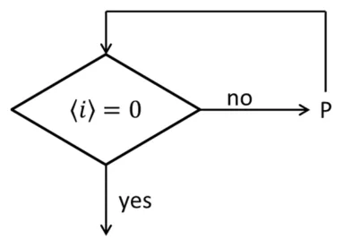
Nếu P là một chương trình được định nghĩa tốt, thì thực thi P cho đến khi nội dung của thanh ghi số i bằng không.
Ví dụ về một máy thanh ghi
Mỗi phép toán sơ cấp (1) và (2) của một chương trình được tính là một bước tính toán. Một ví dụ đơn giản là chương trình cộng sau đây:

Mỗi trạng thái của máy được minh họa bằng ma trận sau, trong đó cộng dồn nội dung y của thanh ghi ⟨j⟩ vào nội dung x của
44 Trí tuệ Nhân tạo của Các hệ thống Phỏng thần kinh thanh ghi ⟨i⟩ và đồng thời giảm nội dung của ⟨j⟩ về không. Kết quả x + y của phép cộng được hiển thị trong thanh ghi ⟨j⟩ như sau:
⟨i⟩ ⟨j⟩ x y x + 1 y .−1 ... ...
x + y y .−y
Định nghĩa Tính khả tính của Máy Thanh ghi
Một máy thanh ghi với chương trình F được định nghĩa là tính một hàm f với n đối số nếu với mọi x1, . . . , xn tùy ý trong các thanh ghi 1, . . . , n (và số không trong tất cả các thanh ghi khác), chương trình F được thực thi và dừng lại sau một số hữu hạn bước với các đối số của hàm nằm trong thanh ghi 1, . . . , n và giá trị hàm f(x1, . . . , xn) nằm trong thanh ghi n + 1.
Chương trình
⟨1⟩:= x1; . . . ; ⟨n⟩:= xn
↓
F
↓
⟨n + 1⟩:= f(x1, . . . , xn) hoạt động theo một ma trận tương ứng. Một hàm f được gọi là khả tính bởi máy thanh ghi RM (khả tính RM) nếu có một chương trình F tính f.
Số bước mà một chương trình F nhất định cần để tính một hàm f được xác định bởi chương trình đó và phụ thuộc vào các đối số của hàm. Độ phức tạp của chương trình F được đo bằng một hàm sF(x1, . . . , xn) tính số bước tính toán theo chương trình F. Đôi khi, sF(x1, . . . , xn) cũng được gọi là thước đo thời gian tính toán của chương trình F. Ví dụ, ma trận của chương trình cộng cho x + y cho thấy cần y bước sơ cấp
Nền tảng của Tính khả tính Số 45
cộng 1 và y bước sơ cấp trừ 1. Do đó, sF(x, y) = 2y.
Định nghĩa Độ phức tạp RM
Vì một hàm khả tính RM f có thể được tính bởi nhiều chương trình khác nhau, một hàm g được gọi là hàm đếm bước của f nếu có một chương trình F tính f sao cho g(x1, . . . , xn) = sF(x1, . . . , xn) với mọi đối số x1, . . . , xn. Độ phức tạp của một hàm được định nghĩa là độ phức tạp của chương trình tốt nhất tính hàm đó với số bước ít nhất.
Rõ ràng, máy thanh ghi của Minsky là một sự tổng quát hóa trực quan từ máy tính tay (theo kiểu của Leibniz). Tuy nhiên, về mặt lịch sử, một số công thức hóa máy tương đương khác đã được giới thiệu độc lập lần đầu tiên bởi Alan Turing (1936) và Emil Post (1936).
Định nghĩa Máy Turing
Một máy Turing (Hình 1) có thể thực hiện bất kỳ thủ tục hiệu quả nào miễn là nó được lập trình đúng cách. Nó bao gồm (a) một hộp điều khiển chứa một chương trình hữu hạn, (b) một băng giấy vô hạn tiềm năng, được chia theo chiều dài thành các ô vuông, (c) một thiết bị để quét hoặc in lên từng ô vuông của băng tại một thời điểm, và để di chuyển dọc theo băng hoặc dừng lại, tất cả đều dưới sự điều khiển của hộp điều khiển.
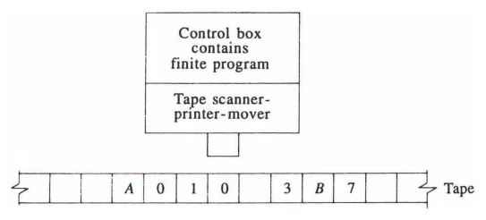
Hình 1. Một máy Turing (Mainzer, 2018, tr. 22).
46 Trí tuệ Nhân tạo của Các hệ thống Phỏng thần kinh
Nếu các ký hiệu được máy Turing sử dụng chỉ giới hạn ở một nét gạch / và một khoảng trắng *, thì một hàm khả tính RM có thể được chứng minh là khả tính bởi máy Turing và ngược lại. Chúng ta phải nhớ rằng mọi số tự nhiên x có thể được biểu diễn bằng một dãy x nét gạch (ví dụ, 3 bằng ///), với mỗi nét gạch nằm trên một ô vuông của băng Turing. Khoảng trắng * được dùng để biểu thị ô vuông đó trống (nếu số tương ứng là số không). Cụ thể, một khoảng trắng là cần thiết để phân tách các dãy nét gạch biểu diễn các con số. Do đó, một máy Turing tính một hàm f với các đối số x1, . . . , xn bắt đầu với băng · · · ∗x1 ∗x2 ∗· · · xn ∗· · · và dừng lại với · · · ∗x1 ∗x2 ∗· · · xn ∗f(x1, . . . , xn) ∗· · · trên băng. Theo quan điểm logic, một máy tính đa năng — như được chế tạo bởi các cộng sự của John von Neumann ở Mỹ và một cách độc lập bởi Konrad Zuse ở Đức — là sự hiện thực hóa kỹ thuật của một máy Turing phổ dụng có thể mô phỏng bất kỳ loại chương trình Turing nào (Herken, 1995). Tương tự, chúng ta có thể định nghĩa một máy thanh ghi phổ dụng có thể thực thi bất kỳ loại chương trình thanh ghi nào. Trên thực tế, thiết kế chung của một máy tính von Neumann bao gồm một bộ xử lý trung tâm (bộ điều khiển chương trình), một bộ nhớ, một khối số học và các thiết bị đầu vào–đầu ra. Nó hoạt động từng bước theo cách chủ yếu là tuần tự. Máy tính ngày nay (theo kiểu von Neumann) thực chất là một máy Turing tổng quát và một máy thanh ghi.
Bên cạnh máy Turing và máy thanh ghi, còn có nhiều thủ tục tương đương toán học khác để định nghĩa các hàm khả tính. Các hàm đệ quy được định nghĩa bằng các thủ tục thế hàm và lặp, bắt đầu với một số hàm sơ cấp, chẳng hạn như phép thế và phép lặp, bắt đầu với một số hàm sơ cấp (ví dụ, hàm kế tiếp n(x) = x + 1), vốn hiển nhiên là khả tính. Tất cả các định nghĩa về tính khả tính này bằng máy Turing, máy thanh ghi, hàm đệ quy, v.v., đều có thể được chứng minh là tương đương về mặt toán học. Rõ ràng, mỗi khái niệm chính xác này định nghĩa một thủ tục hiệu quả về mặt trực giác. Do đó, Alonzo Church đã đề xuất luận đề nổi tiếng của mình rằng khái niệm trực giác phi hình thức về một thủ tục hiệu quả là đồng nhất với một trong những khái niệm chính xác tương đương này, chẳng hạn như khái niệm máy Turing.
Nền tảng của Tính khả tính Số 47
Luận đề Church
Mọi thủ tục tính toán (thuật toán) đều có thể được tính bởi một máy Turing.
Tất nhiên, luận đề Church không thể được chứng minh, bởi vì các khái niệm chính xác về mặt toán học được so sánh với một khái niệm trực giác phi hình thức. Tuy nhiên, sự tương đương toán học của nhiều khái niệm chính xác về tính khả tính vốn hiệu quả về mặt trực giác đã xác nhận luận đề Church. Do đó, chúng ta có thể nói về tính khả tính, tính hiệu quả và các hàm khả tính mà không cần đề cập đến các thủ tục hiệu quả cụ thể (“thuật toán”), chẳng hạn như máy Turing, máy thanh ghi và hàm đệ quy. Theo luận đề Church, chúng ta đặc biệt có thể nói rằng mọi thủ tục tính toán (thuật toán) đều có thể được tính bởi một máy Turing. Vì vậy, mọi hàm đệ quy, như một loại chương trình máy, đều có thể được tính bởi một máy tính đa năng (Feferman, 2006).
Để chính xác hơn, hãy xem xét một lớp các hàm được chấp nhận là khả tính một cách trực giác ngay từ đầu (Kleene, 1974; Shoenfield, 1967).
Định nghĩa các Hàm Đệ quy Nguyên thủy
Lớp Fpr của các hàm đệ quy nguyên thủy được định nghĩa bởi các điều kiện sau:
(1) Z, S, pn i thuộc Fpr:
Z là hàm không với Z(x) = 0, S là hàm kế tiếp với S(x) = x + 1, pn i là hàm chiếu với pn i (x0, . . . , xn) = xi (0 ≤i ≤n).
(2) Fpr đóng dưới phép hợp:
Nếu các hàm f, gj thuộc Fpr với f: Nk →N và gj: Nn → N (1 ≤j ≤k), thì có một hàm h thuộc Fpr, thỏa mãn
⇀x) = f(g1(
⇀x), . . . , gk(
⇀x)) (với
⇀x = x1, . . . , xn).
h(
48 Trí tuệ Nhân tạo của Các hệ thống Phỏng thần kinh (3) Fpr đóng dưới phép đệ quy:
Với các hàm f: Nn →N và g: Nn+2 →N, có một hàm h thuộc Fpr sao cho
⇀x) = f(
⇀x), h(0,
⇀x). (4) Fpr là lớp nhỏ nhất thỏa mãn các điều kiện (1)–(3).
⇀x) = g(h(y,
⇀x), y, h(S(y),
Lớp các hàm đệ quy nguyên thủy có thể được mở rộng bằng một thủ tục tìm kiếm khả tính trực giác đối với các số nhỏ nhất thỏa mãn các điều kiện khả tính nhất định.
Định nghĩa các Hàm Đệ quy
Lớp Fr của các hàm đệ quy toàn phần là lớp nhỏ nhất của các hàm thỏa mãn các điều kiện (1)–(3) của Fpr (với Fr thay cho Fpr) và điều kiện sau:
(5) Fr đóng dưới phép áp dụng toán tử μ:
⇀y) = 0, với g thuộc Fr nếu tồn tại một x như vậy, hay viết hình thức là ∀y∃x(x,
⇀y) = μx(g(x,
⇀y) = 0), tức là giá trị x nhỏ nhất thỏa mãn g(x, f(
⇀y) = 0.
Đôi khi, không rõ liệu các hàm có được xác định toàn phần hay không. f(x) ≃ g(x) có nghĩa là hàm f(x) được xác định khi và chỉ khi hàm g(x) được xác định, và nếu chúng được xác định, thì giá trị của chúng bằng nhau. Bây giờ, chúng ta có thể mở rộng lớp các hàm đệ quy toàn phần thành lớp các hàm đệ quy bộ phận.
Định nghĩa các Hàm Đệ quy Bộ phận
Lớp F′
r của các hàm đệ quy bộ phận được định nghĩa bởi các điều kiện sau:
(1) Fr là một tập con của F′ r. (2) F′ r đóng dưới phép hợp: Nếu các hàm h, gj thuộc F′ r với h: Nk →N và gj: Nn → N (1 ≤j ≤k), thì có một hàm f thuộc F′ r, thỏa mãn
⇀x) ≃h(g1(
⇀x), . . . , gk(
⇀x)).
f(
Nền tảng của Tính khả tính Số 49
(3) F′ r đóng dưới phép áp dụng toán tử μ: f(
⇀y) = 0, với g thuộc Fr nếu tồn tại một x như vậy, hay viết hình thức là ∀y∃x(x,
⇀y) ≃μx(g(x,
⇀y) = 0), tức là giá trị x nhỏ nhất thỏa mãn g(x,
⇀y) = 0.
Hóa ra mọi hàm đệ quy bộ phận đều khả tính theo nghĩa của luận đề Church. Bây giờ, chúng ta có thể định nghĩa các thủ tục hiệu quả về quyết định và liệt kê, vốn đã được đòi hỏi bởi chương trình mathesis universalis của Leibniz (Davis, 1958). Hàm đặc trưng χM của một tập con M các số tự nhiên được định nghĩa là χM(x) = 1 nếu x là một phần tử của M và χM(x) = 0 trong trường hợp ngược lại.
Định nghĩa các Thủ tục Quyết định và Liệt kê Hiệu quả
Một tập hợp M được định nghĩa là khả quyết định hiệu quả nếu hàm đặc trưng của nó cho biết một số có thuộc M hay không là khả tính hiệu quả.
Các chương trình và phép tính bao gồm các danh sách ký hiệu có thể được mã hóa bằng các số tự nhiên. Khi đó, chúng ta có thể định nghĩa một vị từ khả quyết định T(x,
⇀y, z) (vị từ T của Kleene) với ý nghĩa rằng “z mã hóa một phép tính (dừng) theo chương trình x cho các đối số
⇀y”. Hàm trích xuất kết quả khả tính toàn phần U trích xuất kết quả từ mã của một phép tính dừng. Có thể chứng minh rằng mỗi hàm khả tính f với mã x của chương trình máy của nó có thể được biểu diễn như sau:
Dạng chuẩn Kleene:
⇀y) ≃U(μz χT (x,
⇀y, z) = 1) f(
⇀y, z)).
≃U(μz T(x,
⇀y) biểu thị kết quả của việc áp dụng chương trình x cho các đối số của hàm f. Thực chất, x là số mã của một chương trình máy mà cũng được gọi là “số máy” của hàm khả tính f. Rõ ràng, [x](
Biểu thức xác định bộ phận [x](
⇀y) được xác định nếu có một phép tính (dừng) z theo chương trình x cho các đối số đầu vào
⇀y:
⇀y) được xác định ↔∃z T(x,
⇀y, z).
[x](
50 Trí tuệ Nhân tạo của Các hệ thống Phỏng thần kinh
Một tập hợp M được định nghĩa là khả liệt kê hiệu quả nếu tồn tại một thủ tục hiệu quả (khả tính) f để sinh ra các phần tử của nó, lần lượt từng cái một (viết hình thức là f(1) = x1, f(2) = x2, . . . với mọi phần tử x1, x2, . . . từ M). Định nghĩa về tính khả liệt kê đệ quy có thể được tổng quát hóa từ tập hợp sang vị từ.
Định nghĩa Tính khả liệt kê Đệ quy
Một vị từ P là khả liệt kê đệ quy nếu P rỗng hoặc tồn tại một hàm đệ quy f với P(x) ↔∃yf(y) = x với mọi x.
Có thể chứng minh (Hermes, 1978) rằng với mọi vị từ khả liệt kê đệ quy P đều có một vị từ khả quyết định đệ quy Q sao cho
Định lý:
P(x) ↔∃yQ(x, y) với mọi x
Định lý cuối cùng này và dạng chuẩn Kleene giờ đây có thể được sử dụng để đặc trưng hóa các vị từ khả liệt kê đệ quy (RE) (Rogers, 1967):
Phép liệt kê của Kleene đối với các vị từ khả liệt kê đệ quy:
Giả sử P là một vị từ khả liệt kê đệ quy
P(y) ↔∃zQ(y, z), với Q đệ quy với mọi y. Định nghĩa một hàm bộ phận đệ quy f(y) ≃ μzQ(y, z) với số máy x. Khi đó,
P(y) ↔[x](y) được xác định ↔∃zT(x, y, z).
Số x được gọi là chỉ số RE của vị từ RE P. Nói một cách trực giác, vị từ T của Kleene liệt kê tất cả các vị từ RE theo chỉ số RE của chúng (Soare, 1987).
Định lý Post về Tính khả quyết định và Tính khả liệt kê
Tính khả quyết định có thể được đặc trưng bởi tính khả liệt kê: Một tập hợp hoặc vị từ là khả quyết định đệ quy nếu tập hợp hoặc vị từ đó và phần bù của nó
Nền tảng của Tính khả tính Số 51
đều là khả liệt kê đệ quy (định lý Post). Tập hợp bù ¯ M của M chứa tất cả các phần tử không thuộc M. Nếu M và ¯ M đều khả liệt kê đệ quy, thì chúng ta có thể liệt kê các phần tử của chúng từng bước một để quyết định xem một số đã cho có thuộc M hay không. Do đó, M là khả quyết định đệ quy. Theo định nghĩa, suy ra rằng mọi tập hợp khả quyết định đệ quy đều khả liệt kê đệ quy. Tuy nhiên, có những tập hợp khả liệt kê đệ quy nhưng không khả quyết định. Đây là những dấu hiệu đầu tiên cho thấy có những giới hạn đối với khuôn khổ số của tính khả tính vốn dựa trên niềm tin vào các thủ tục quyết định phổ quát.
Tại thời điểm này, bài toán dừng nổi tiếng của Turing xuất hiện: Liệu có một thủ tục quyết định phổ quát nào để xác định xem một chương trình máy tính tùy ý có dừng lại sau hữu hạn bước đối với một đầu vào tùy ý hay không? Turing đã chứng minh rằng về nguyên tắc, bài toán dừng là không thể giải được. Khi đó, tính bất toàn của Gödel (Gödel, 1931) chỉ là một hệ quả của chứng minh của Turing (Chaitin, 1998).
Turing bắt đầu chứng minh của mình với câu hỏi liệu các số thực có khả tính hay không. Một số thực như π = 3,1415926 . . . có vô số chữ số dường như được phân bố ngẫu nhiên sau dấu phẩy thập phân. Tuy nhiên, vẫn có những chương trình hữu hạn đơn giản để tính từng chữ số một với độ chính xác tăng dần của π. Theo nghĩa này, π được gọi là một số thực khả tính. Ở bước đầu tiên, Turing đã xây dựng một số thực bất khả tính.
Định nghĩa một Số Bất khả tính
Theo dạng chuẩn Kleene, một chương trình máy có thể được mã hóa bằng một số máy. Hãy tưởng tượng một danh sách tất cả các chương trình máy tính có thể có được sắp xếp theo thứ tự số máy tăng dần p1, p2, p2, . . . Nếu một chương trình tính ra một số thực có vô số chữ số sau dấu phẩy thập phân (ví dụ, π), thì chúng sẽ được viết xuống sau số hiệu chương trình tương ứng. (Phần số trước dấu phẩy thập phân được bỏ qua.) Ngược lại, sẽ có
52 Trí tuệ Nhân tạo của Các hệ thống Phỏng thần kinh một dòng trống trong danh sách như sau:
p1 −· d11d12d13d14d15d16d17 . . .
p2 −· d21d22d23d24d25d26d27 . . .
p3 −· d31d32d33d34d35d36d37 . . .
p4 p5 −· d51d52d53d54d55d56d57 . . .
...
Theo thủ tục đường chéo của Cantor, Turing đã thay đổi các chữ số được gạch chân trên đường chéo của danh sách và ghép các chữ số đã thay đổi này lại thành một số mới có dấu chấm thập phân ở phía trước như sau:
−·̸ = d11̸ = d12̸ = d13̸ = d14̸ = d15̸ = d16̸ = d17 . . .
Số mới này không thể nằm trong danh sách vì nó khác với chữ số đầu tiên của số thứ nhất sau p1, chữ số thứ hai của số thứ hai sau p2, v.v. Do đó, nó là một số thực bất khả tính. Với con số này, Turing đã thu được tính không thể giải được của bài toán dừng.
Tính Không thể Giải được của Bài toán Dừng
Nếu chúng ta có thể giải quyết bài toán dừng, thì chúng ta có thể quyết định xem chương trình máy tính thứ n có bao giờ xuất ra chữ số thứ n sau dấu phẩy thập phân hay không. Trong trường hợp này, chúng ta thực sự có thể thực hiện thủ tục đường chéo của Cantor và tính ra một số thực mà theo định nghĩa của nó, phải khác với bất kỳ số thực khả tính nào.
Tính không thể giải được của bài toán dừng đã bác bỏ bài toán Entscheidungsproblem của Hilbert. Nếu có một hệ tiên đề hình thức đầy đủ mà từ đó mọi chân lý toán học đều suy ra được, thì nó sẽ cung cấp cho chúng ta một thủ tục để quyết định xem một chương trình máy tính có bao giờ dừng lại hay không. Chúng ta chỉ cần chạy qua tất cả các chứng minh có thể cho đến khi tìm thấy một chứng minh rằng chương trình dừng, hoặc tìm thấy một chứng minh rằng nó không bao giờ dừng. Vì vậy, nếu tập tiên đề hữu hạn của Hilbert mà từ đó mọi chân lý toán học
Nền tảng của Tính khả tính Số 53
đều có thể suy ra là khả thi, thì bằng cách chạy qua tất cả các chứng minh có thể trong khi kiểm tra xem chứng minh nào đúng, chúng ta sẽ có thể quyết định xem một chương trình máy tính có dừng hay không. Điều đó là bất khả thi theo chứng minh của Turing.
Tính không thể giải được của bài toán dừng Turing không chỉ có ý nghĩa nền tảng đối với lý thuyết tính khả tính mà còn có những hệ quả sâu sắc đối với các nền tảng toán học. Một ví dụ là bài toán thứ 10 của Hilbert, cũng được chứng minh là về nguyên tắc không thể giải được do bài toán dừng của Turing. Năm 1900, David Hilbert đã yêu cầu tìm một thuật toán có thể quyết định xem cái gọi là phương trình Diophantine có nghiệm hay không. Đây là bài toán thứ 10 trong danh sách nổi tiếng gồm 23 bài toán của ông vẫn chưa có lời giải vào đầu thế kỷ 20. Các phương trình đại số chỉ liên quan đến phép nhân, phép cộng và phép lũy thừa của các số nguyên được đặt theo tên của nhà toán học Hy Lạp thế kỷ thứ 3 Diophantos thành Alexandria.
Tính Không thể Giải được của Bài toán thứ 10 của Hilbert
Năm 1970, Matijasevic và Cudnovskij từ Viện V.A. Steklov ở Leningrad cũ (St. Petersburg) đã chứng minh rằng bài toán thứ 10 của Hilbert tương đương với bài toán dừng của Turing và do đó, không thể quyết định được.
Họ đã sử dụng các kết quả của Davis, Putnam và Robinson (1961). Theo biểu diễn của Lagrange về các số tự nhiên dưới dạng tổng của bốn bình phương số nguyên, bài toán thứ 10 của Hilbert có thể được quy về sự tồn tại của nghiệm trong tập số tự nhiên.
Một vị từ D được gọi là Diophantine nếu nó có thể định nghĩa được bằng các vị từ x + y = z, x · y = z, và xy = z cùng các phép toán logic ∨ (hoặc), ∧ (và), và ∃ (lượng từ tồn tại):
D(x1, . . . , xn) ↔∃y1 . . . , yrP(x1, . . . , xn, y1, . . . , yr), với P đệ quy
↔∃y1 . . . , yrχp(x1, . . . , xn, y1, . . . , yr) = 1, với hàm đặc trưng khả tính χp là một đa thức.
Theo định lý của chúng ta về tính khả liệt kê đệ quy, suy ra rằng mọi vị từ Diophantine đều khả liệt kê đệ quy. Ngược lại, cũng có thể chứng minh rằng mọi vị từ khả liệt kê
54 Trí tuệ Nhân tạo của Các hệ thống Phỏng thần kinh đều là Diophantine. Matijasevic và Cudnovskij đã sử dụng dãy Fibonacci để định nghĩa một vị từ Diophantine thích hợp. Bài toán dừng có thể được biểu diễn bằng một vị từ khả liệt kê, nhưng không khả quyết định. Do đó, vị từ Diophantine tương ứng cũng không khả quyết định.
Chương 3 — Các bậc phức tạp của tính toán khả tính số
Chương 3
Các Bậc Độ phức tạp của Tính khả tính
Số
Chương này trước tiên giới thiệu các bậc của tính khả tính Turing, được đo bằng thời gian tính toán tương ứng để giải bài toán. Sau đó, sự phân biệt được thực hiện giữa các bài toán P và NP, chẳng hạn. Những bài toán này về mặt lý thuyết có thể giải được trong khuôn khổ của tính khả tính Turing. Tuy nhiên, do thời gian tính toán lớn, chúng không thể được hiện thực hóa trên thực tế trên các máy tính số kỹ thuật (ví dụ, các bài toán NP). Vượt ra ngoài tính khả tính Turing, tính khả tính số có thể được mở rộng về mặt lý thuyết trong phân cấp số học và phân cấp giải tích. Chính Turing đã giới thiệu mô hình lý thuyết về máy tiên tri (oracle machine) cho tính khả tính số mở rộng. Điều này cho phép phân biệt về mặt lý thuyết các bậc độ phức tạp của việc giải quyết bài toán toán học vượt ra ngoài tính khả tính Turing. Tuy nhiên, về mặt kỹ thuật và thực tiễn, chỉ những bài toán khả tính Turing mới có thể được hiện thực hóa trên các máy tính số.
Theo luận đề Church, tính khả tính Turing là một định nghĩa đại diện cho tính khả tính nói chung. Trong phần tiếp theo, chúng ta muốn xem xét các bài toán có bậc độ phức tạp dưới và vượt trên giới hạn này. Dưới giới hạn này, có nhiều bài toán thực tiễn liên quan đến những hạn chế nhất định về mức độ có thể tăng tốc độ của một thuật toán. Đặc biệt trong số các bài toán toán học, có một số lớp bài toán về bản chất khó giải quyết bằng thuật toán hơn những lớp khác. Do đó, có các bậc tính khả tính đối với máy Turing được làm chính xác hóa trong lý thuyết độ phức tạp của khoa học máy tính.
55
56 Trí tuệ Nhân tạo của Các hệ thống Phỏng thần kinh
Các lớp độ phức tạp của các bài toán (hoặc các hàm tương ứng) có thể được đặc trưng bởi các bậc độ phức tạp, vốn cho biết bậc của các hàm mô tả thời gian tính toán (hoặc số bước tính toán sơ cấp) của các thuật toán (hoặc chương trình tính toán) phụ thuộc vào độ dài đầu vào của chúng. Độ dài đầu vào có thể được đo bằng số chữ số thập phân. Theo ngôn ngữ máy của máy tính, sẽ thuận tiện khi biểu diễn các số thập phân dưới dạng mã nhị phân chỉ với các số nhị phân 0 và 1, và định nghĩa độ dài của chúng bằng số chữ số nhị phân. Ví dụ, số 3 có mã nhị phân 11 = 1 · 21 + 1 · 20 với độ dài là 2.
Định nghĩa Thời gian Tính toán Tuyến tính
Một hàm có thời gian tính toán tuyến tính nếu thời gian tính toán của f không lớn hơn c · n đối với mọi đầu vào có độ dài n và một hằng số c.
Ví dụ về thời gian tính toán tuyến tính
Phép cộng hai số (nhị phân) rõ ràng chỉ có thời gian tính toán tuyến tính. Ví dụ, phép tính 3 + 7 = 10 tương ứng với phép tính nhị phân
001 111 1010 cần năm bước tính toán sơ cấp để cộng hai chữ số nhị phân (bao gồm cả việc nhớ). Chúng tôi nhắc lại cho bạn đọc rằng các bước sơ cấp của phép cộng các chữ số nhị phân là 0 + 0 = 0, 0 + 1 = 1, 1 + 0 = 1, 1 + 1 = 1, và nhớ. Sẽ thuận tiện nếu giả sử rằng hai số cần cộng có độ dài bằng nhau. Nếu không, chúng ta chỉ cần bắt đầu số ngắn hơn bằng một loạt các số không, ví dụ, 111 và 011 thay vì 11. Nhìn chung, nếu độ dài của một cặp số cụ thể cần cộng là n, độ dài của một số là n
2, và do đó, chúng ta cần không quá n 2 + n 2 = n bước tính toán sơ cấp bao gồm cả việc nhớ.
Các Bậc Độ phức tạp của Tính khả tính Số 57
Định nghĩa Thời gian Tính toán Bậc hai
Một hàm f có thời gian tính toán bậc hai nếu thời gian tính toán của f không lớn hơn c · n2 đối với mọi đầu vào có độ dài n và một hằng số c.
Ví dụ về thời gian tính toán bậc hai
Một ví dụ đơn giản về thời gian tính toán bậc hai là phép nhân hai số (nhị phân). Ví dụ, phép tính 7 · 3 = 21 tương ứng với phép tính nhị phân:
111 · 011 000 111 111 10101
Theo các quy ước trước đây, chúng ta có n = 6. Số phép nhân nhị phân sơ cấp là n
2 · n 2 = n2 4 . Bao gồm cả việc nhớ, số phép cộng nhị phân sơ cấp là n
2 · n 2 −n 2 = n2 4 −n 2 . Tổng cộng, chúng ta có n2
4 + n2 4 −n 2 = n2 2 −n 2 , nhỏ hơn n2 2 .
Định nghĩa Thời gian Tính toán Đa thức và Hàm mũ
• Một hàm f có thời gian tính toán đa thức nếu thời gian tính toán của f không lớn hơn c · nk, được giả sử là số hạng bậc cao nhất của một đa thức p(n). • Một hàm f có thời gian tính toán hàm mũ nếu thời gian tính toán của f không lớn hơn c · 2p(n). • Nhiều bài toán thực tiễn và lý thuyết thuộc về lớp độ phức tạp P gồm tất cả các hàm có thể được tính bởi một máy Turing tất định trong thời gian đa thức.
Trong lịch sử toán học, có một số bài toán hay của lý thuyết đồ thị minh họa các khái niệm cơ bản của lý thuyết độ phức tạp (Grötschel và cộng sự, 1988).
58 Trí tuệ Nhân tạo của Các hệ thống Phỏng thần kinh
Độ phức tạp của Bài toán Sông Königsberg của Euler
Năm 1736, nhà toán học nổi tiếng Leonard Euler (1707–1783) đã giải quyết một trong những bài toán đầu tiên của lý thuyết đồ thị. Tại thành phố Königsberg, thủ phủ của Đông Phổ, hai nhánh sông được gọi là Pregel Cũ và Pregel Mới hợp lưu thành sông Pregel. Vào thế kỷ 18, có bảy cây cầu nối các khu vực phía nam s, phía bắc n, và phía đông e với hòn đảo i (Hình 1(a)). Liệu có một lộ trình nào đi qua mỗi cây cầu đúng một lần và quay trở lại điểm xuất phát hay không?
Euler đã quy bài toán về lý thuyết đồ thị. Các khu vực n, s, l, e được thay thế bằng các đỉnh của một đồ thị và các cây cầu giữa hai khu vực bằng các cạnh giữa các đỉnh tương ứng (Hình 1(b)).
Trong ngôn ngữ của lý thuyết đồ thị, bài toán của Euler là liệu với mọi đỉnh có tồn tại một lộ trình (một “chu trình Euler”) đi qua mỗi cạnh đúng một lần, cuối cùng quay trở lại điểm xuất phát hay không. Đối với các đồ thị tùy ý, Euler đã chứng minh rằng một chu trình Euler tồn tại khi và chỉ khi mỗi đỉnh có một số chẵn các cạnh (“điều kiện Euler”). Vì đồ thị ở Hình 1(b) không thỏa mãn điều kiện này, nên không thể có lời giải cho bài toán của Euler trong trường hợp này. Nhìn chung, có một thuật toán kiểm tra một đồ thị tùy ý theo điều kiện Euler xem nó có phải là một chu trình Euler hay không. Đầu vào của thuật toán bao gồm tập hợp V tất cả các đỉnh 1, . . . , n và tập hợp E tất cả các cạnh, vốn là một tập con của tập hợp tất cả các cặp đỉnh. Thời gian tính toán của thuật toán này phụ thuộc tuyến tính vào kích thước của đồ thị, được định nghĩa bằng tổng số đỉnh và số cạnh.
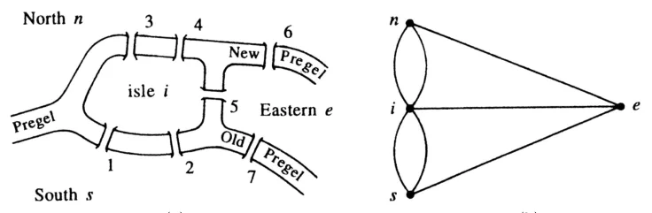
(a) (b)
Hình 1. Bài toán sông Königsberg của Euler (Mainzer, 2018, tr. 35).
Các Bậc Độ phức tạp của Tính khả tính Số 59
Độ phức tạp của Bài toán Hamilton
Năm 1859, nhà toán học William Hamilton (1805–1865) đã giới thiệu một bài toán khá tương tự nhưng phức tạp hơn nhiều so với bài toán của Euler (Mainzer, 2007, tr. 189–190). Hamilton xem xét một đồ thị tùy ý, tức là không gì khác ngoài một tập hợp hữu hạn các đỉnh, trong đó một số cặp đỉnh nhất định được nối với nhau bằng các cạnh. Bài toán của Hamilton là liệu có tồn tại một chu trình khép kín (một “chu trình Hamilton”) đi qua mỗi đỉnh (chứ không phải mỗi cạnh như trong bài toán của Euler) đúng một lần hay không. Hình 2 cho thấy một đồ thị có chu trình Hamilton đi qua các đỉnh theo thứ tự đánh số.
Tuy nhiên, không giống như trường hợp bài toán của Euler, chúng ta không biết bất kỳ điều kiện nào đặc trưng hóa chính xác việc một đồ thị có chứa chu trình Hamilton hay không. Chúng ta chỉ có thể định nghĩa một thuật toán kiểm tra xem một đồ thị tùy ý có chứa chu trình Hamilton hay không. Thuật toán kiểm tra tất cả các hoán vị của các đỉnh để xem liệu chúng có tạo thành một chu trình Hamilton hay không. Vì có n! hoán vị khác nhau của n đỉnh, thuật toán không cần quá c · n! bước với một hằng số c để tìm ra lời giải. Có thể dễ dàng chứng minh rằng một
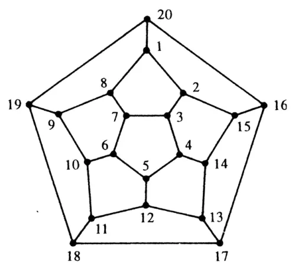
Hình 2. Bài toán Hamilton (Mainzer, 2018, tr. 37).
60 Trí tuệ Nhân tạo của Các hệ thống Phỏng thần kinh bậc của n! tương ứng với một bậc của nn. Do đó, một thuật toán cho bài toán Hamilton cần thời gian tính toán hàm mũ, trong khi bài toán Euler có thể được giải bằng thuật toán trong thời gian tính toán tuyến tính. Vì vậy, bài toán Hamilton không thể được giải trên thực tế bởi máy tính ngay cả đối với các số n nhỏ.
Lý do chính dẫn đến thời gian tính toán cao có thể là do một số lượng lớn các trường hợp con đơn lẻ phải được kiểm tra bởi một máy tính tất định vốn được phép chọn ngẫu nhiên một thủ tục tính toán trong số một số hữu hạn các thủ tục có thể có thay vì thực hiện chúng từng bước một cách tuần tự. Hãy xem xét lại bài toán Hamilton. Một đồ thị đầu vào có thể có n đỉnh v1, . . . , vn. Một thuật toán không tất định chọn một thứ tự nhất định vi1, . . . , vin của các đỉnh theo cách ngẫu nhiên, không tất định. Sau đó, thuật toán kiểm tra xem thứ tự này có tạo thành một chu trình Hamilton hay không. Câu hỏi là liệu với mọi số j (j = 1, . . . , n −1), các đỉnh liên tiếp vij và vij+1 cùng đỉnh đầu và đỉnh cuối vin và vi1 có được nối với nhau bởi một cạnh hay không. Thời gian tính toán của thuật toán không tất định này phụ thuộc tuyến tính vào kích thước của đồ thị.
Nhìn chung, NP có nghĩa là lớp độ phức tạp của các hàm có thể được tính bởi một máy Turing không tất định trong thời gian đa thức. Bài toán Hamilton là một ví dụ về bài toán NP. Một bài toán NP khác là “bài toán người bán hàng du lịch”, khá giống với bài toán Hamilton ngoại trừ việc các cạnh khác nhau có gắn các con số. Người ta tìm kiếm chu trình Hamilton mà tổng các con số, hay nói một cách trực quan hơn là quãng đường người bán hàng đi qua, là nhỏ nhất.
Liệu các Bài toán NP có thể Quy về các Bài toán P không?
Theo định nghĩa, mọi bài toán P đều là một bài toán NP. Nhưng một câu hỏi cốt lõi của lý thuyết độ phức tạp là liệu P = NP hay nói cách khác, liệu các bài toán được giải bởi máy tính không tất định trong thời gian đa thức có thể cũng được giải bởi máy tính tất định trong thời gian đa thức hay không.
Bài toán Hamilton và bài toán người bán hàng du lịch là những ví dụ về cái gọi là các bài toán NP-đầy đủ.
Các Bậc Độ phức tạp của Tính khả tính Số 61
Độ phức tạp của các Bài toán NP-Đầy đủ
Một bài toán được gọi là NP-đầy đủ nếu bất kỳ bài toán NP-đầy đủ nào khác đều có thể chuyển đổi thành nó trong thời gian đa thức.
Do đó, nếu một bài toán NP-đầy đủ thực sự được chứng minh là một bài toán P (chẳng hạn, nếu có thể xây dựng một thuật toán tất định để giải bài toán Hamilton trong thời gian đa thức), thì suy ra rằng mọi bài toán NP thực chất đều nằm trong P. Ngược lại, nếu P̸ = NP thì không có bài toán NP-đầy đủ nào có thể được giải bằng thuật toán tất định trong thời gian đa thức.
Rõ ràng, lý thuyết độ phức tạp cung cấp các bậc cho sức mạnh thuật toán của máy Turing hoặc các máy tính kiểu Turing. Lý thuyết này có những hệ quả thực tiễn đối với các ứng dụng khoa học và công nghiệp. Nhưng liệu nó có ngụ ý những giới hạn đối với toán học và tâm trí con người không? Các câu hỏi nền tảng của lý thuyết độ phức tạp (ví dụ, N = NP hoặc N̸ = NP) đề cập đến việc đo lường tốc độ, thời gian tính toán, dung lượng lưu trữ, v.v. của các thuật toán. Thế còn độ phức tạp của các bài toán toán học vượt ra ngoài tính khả tính Turing thì sao?
Tính khả liệt kê chỉ là bước đầu tiên trên một chiếc thang với độ phức tạp tính toán ngày càng tăng. Bằng cách thêm các lượng từ không bị giới hạn vào các vị từ đệ quy, các bậc tính khả tính có thể được mở rộng vượt ra ngoài tính khả tính Turing (Hinman, 1978; Kleene, 1955a; Shoenfield, 1967).
Định nghĩa Phân cấp Số học
Một vị từ P là số học khi và chỉ khi nó có một định nghĩa tường minh
(∗) P(x) ↔Q1 . . . QnR(x, x1, . . . , xn) với mọi số x với R đệ quy và mỗi lượng từ số Qi là ∃xi hoặc ∀xi với các biến số xi.
Hai lượng từ là cùng loại nếu cả hai đều là lượng từ tồn tại hoặc cả hai đều là lượng từ phổ dụng. Hai lượng từ liền kề cùng loại có thể được thay thế bằng một lượng từ duy nhất (thu gọn lượng từ).
Một vị từ là Σ0
n(Π0 n) với n ≥1 khi và chỉ khi nó có một định nghĩa tường minh (*) không có hai lượng từ liền kề nào cùng loại và lượng từ đầu tiên
62 Trí tuệ Nhân tạo của Các hệ thống Phỏng thần kinh là tồn tại (phổ dụng), ví dụ, với mọi x
Σ0
2 : P(x) ↔∃x1∀x2R(x, x1, x2),
Π0
2 : P(x) ↔∀x1∃x2R(x, x1, x2).
Mọi vị từ số học đều là Σ0
n hoặc Π0 n với một số n ≥1 nào đó. Sự phân loại các vị từ số học này được gọi là phân cấp số học.
Một vị từ là Δ0
n khi và chỉ khi nó vừa là Σ0 n vừa là Π0 n. Mọi vị từ khả liệt kê đệ quy P đều có thể được biểu diễn bằng P(x) ↔∃yQ(x, y) với mọi x với một vị từ đệ quy Q. Do đó, Σ0
1 là lớp các vị từ khả liệt kê đệ quy. Các vị từ đệ quy đóng đối với các liên kết logic, ví dụ, ¬ (phủ định), ∨ (tuyển: “hoặc”), và ∧ (hội: “và”). Trong logic cổ điển, ∃yQ(x, y) tương đương với ¬∀y¬Q(x, y). Suy ra P là Δ0
1 khi và chỉ khi cả P và ¬P đều khả liệt kê do phủ định kép. Vì vậy, theo định lý Post, Δ0
1 là lớp các vị từ đệ quy (khả tính Turing).
Sau đây là các tính chất tổng quát của phân cấp số học:
(1) Một vị từ đệ quy là Σ0 n và Π0 n với mọi n. (2) Σ0 m ⊆Σ0 n(Π0 n), Π0 m ⊆Σ0 n(Π0 n) với mọi n > m: Nếu vị từ P là Σ0 m hoặc Π0 m, thì P là Σ0 m và Π0 m. (3) Nếu P và Q là Σ0 n(Π0 n), thì P ∨Q và P ∧Q là Σ0 n(Π0 n). (4) Nếu P là Σ0 n(Π0 n), thì ¬P là Π0 n(Σ0 n).
Do đó, phân cấp số học có thể được minh họa theo cách sau:
... ... ...
Σ0
n+1 Δ0 n+1 Π0 n+1 Σ0 n Δ0 n Π0 n ... ... ...
Σ0
2 Δ0
2 Π0
2 Σ0
1 Δ0
1 Π0
1
Các Bậc Độ phức tạp của Tính khả tính Số 63
Dạng chuẩn Kleene của các hàm đệ quy cho phép chúng ta liệt kê tất cả các hàm đệ quy và các vị từ khả liệt kê đệ quy (Chương 2). Nó có thể được tổng quát hóa cho phân cấp số học:
Định lý liệt kê số học của Kleene: Với mỗi n ≥1, tồn tại một vị từ Σ0 n(Π0 n) liệt kê lớp tất cả các vị từ Σ0 n(Π0 n).
Hơn nữa, có thể chứng minh rằng các phép bao hàm giữa các vị từ Σ0 n và Π0 n, tức là Σ0 m ⊆Σ0 n(Π0 n), Π0 m ⊆Σ0 n(Π0 n) với mọi n > m, là những phép bao hàm duy nhất thuộc loại này.
Định lý phân cấp số học của Kleene: Với mỗi n ≥1, tồn tại một vị từ Σ0 n không phải là Π0 n và do đó không phải là Σ0 m hay Π0 m với bất kỳ m > n nào. Khi đó, ¬P là Π0 n nhưng không phải Σ0 n và do đó không phải Σ0 m hay Π0 m với bất kỳ m > n nào.
Tính khả tính Tương đối và Máy Tiên tri
Các phép tính có thể phụ thuộc vào các tác nhân bên ngoài cung cấp câu trả lời cho các câu hỏi về một tập hợp (hoặc tính chất) M bằng một thủ tục chưa biết. Theo Turing, tác nhân bên ngoài của một thủ tục chưa biết được gọi là một tiên tri (oracle) (Turing, 1939). Trong Hình 3, việc tính toán một giá trị hàm f(x) phụ thuộc vào một tiên tri quyết định xem các giá trị nhất định có thỏa mãn một tính chất M hay không (Rogers, 1967). Phần lớn các phép tính của chúng ta
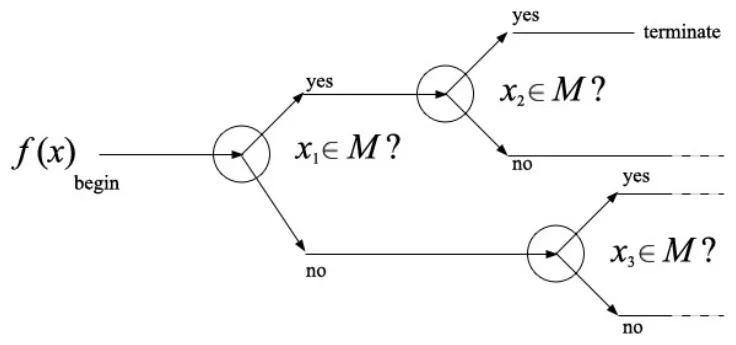
Hình 3. Tính khả tính tương đối với một tiên tri (Mainzer, 2018, tr. 41).
64 Trí tuệ Nhân tạo của Các hệ thống Phỏng thần kinh trong đời sống hàng ngày phụ thuộc vào những giả định mà chúng ta tin cậy mà không biết xác nhận cuối cùng. Do đó, các tiên tri dẫn đến một sự mở rộng quan trọng của tính toán tương đối hóa.
Một hàm f là khả tính tương đối với M khi và chỉ khi chương trình của f được mở rộng với một tiên tri M. Một tiên tri cũng có thể là một phép toán máy (hàm toàn phần) ϕ cung cấp các giá trị ϕ(x) bằng một thủ tục chưa biết. Các tiên tri ngẫu nhiên phụ thuộc vào các thủ tục ngẫu nhiên.
Các Bậc Độ phức tạp của Tính khả tính Tương đối
• Một hàm f là đệ quy trong ϕ khi và chỉ khi f khả tính tương đối với ϕ. • Một vị từ P là đệ quy (khả quyết định) trong ϕ khi và chỉ khi hàm đặc trưng χP của nó khả tính tương đối với ϕ. • P là Σ0 n(Π0 n, Δ0 n) trong ϕ khi và chỉ khi P được định nghĩa bởi các lượng từ Σ0 n(Π0 n, Δ0 n) và một vị từ R đệ quy trong ϕ.
Tính khả tính tương đối đối với một hàm ϕ có thể được tổng quát hóa thành một tập hợp Φ gồm các hàm ϕ0, ϕ1, . . . Chúng ta nói rằng tập Φ là đệ quy trong tập Ψ với các hàm ψ0, ψ1, . . . nếu mọi phần tử của Φ đều đệ quy trong Ψ. Nếu Ψ rỗng, thì các hàm đệ quy trong Ψ chính là các hàm đệ quy. Do đó, tính khả tính Turing tương đối hóa bao gồm tính khả tính Turing như một trường hợp đặc biệt. Rõ ràng, tính khả tính tương đối hóa thỏa mãn tính chất bắc cầu: Nếu Φ đệ quy trong Ψ, thì mọi hàm đệ quy trong Φ cũng đệ quy trong Ψ (Shoenfield, 1967).
Các phần tử của Φ có thể được sắp xếp thành một dãy hữu hạn và được thu gọn bằng một hàm Φ∗(x) := ⟨ϕ0(x), . . . , ϕn−1(x)⟩ với ϕi(x) = (Φ∗(x))i và 0 ≤i ≤n −1. Hàm thu gọn Φ∗ là đệ quy trong ϕ0, . . . , ϕn−1 và mỗi ϕi là đệ quy trong Φ∗. Với định nghĩa này, chúng ta có thể thay thế tính đệ quy (tính khả liệt kê) tương đối hóa của các hàm bộ phận (vị từ) bằng tính đệ quy (tính khả liệt kê) của một phiếm hàm bộ phận (quan hệ). Một phiếm hàm cũng có các hàm làm đối số.
Các Bậc Độ phức tạp của Tính khả tính Số 65
Bổ đề Thay thế
• Một hàm bộ phận f là đệ quy trong một dãy hữu hạn Φ khi và chỉ khi có một hàm bộ phận đệ quy f ′ với f(x) ≃f ′(Φ∗, x) với mọi x. • Một vị từ P là khả liệt kê đệ quy trong một dãy hữu hạn Φ khi và chỉ khi có một quan hệ khả liệt kê đệ quy P ′ với P(x) ↔ P ′(Φ∗, x) với mọi x.
Với bổ đề thay thế, chúng ta có thể chứng minh một số tính chất đáng chú ý của tính khả tính tương đối hóa:
• Một vị từ P là Σ0 n+1 khi và chỉ khi nó khả liệt kê đệ quy trong tập các vị từ Π0 n. • Một vị từ là Δ0 n+1 khi và chỉ khi nó đệ quy trong tập các vị từ Π0 n.
Bằng bổ đề thay thế, dạng chuẩn Kleene của các hàm đệ quy và các vị từ khả liệt kê đệ quy (Chương 2) cũng có thể được mở rộng thành một dạng chuẩn tương đối hóa và phép liệt kê các vị từ khả liệt kê đệ quy với các “số máy” tương đối hóa cho các tiên tri.
Định nghĩa các Số Máy Tương đối hóa
Một số p được gọi là số máy của hàm f được tương đối hóa với tập tiên tri Φ khi và chỉ khi
[p]Φ(x) := f(x) ≃f ′(Φ∗, x) ≃[p](Φ∗, x), với hàm bộ phận đệ quy f ′ với mọi x.
Một số p được gọi là chỉ số khả liệt kê đệ quy (RE) của vị từ RE P được tương đối hóa với tập tiên tri Φ khi và chỉ khi
P(y) ↔[x](y) được xác định ↔∃zT(p, Φ∗, y, z).
Nói một cách trực giác, vị từ T tương đối hóa của Kleene liệt kê tất cả các vị từ RE tương đối hóa theo các chỉ số RE tương đối hóa của chúng.
66 Trí tuệ Nhân tạo của Các hệ thống Phỏng thần kinh
Với tính khả tính tương đối hóa, chúng ta có thể xác định các bậc khả giải tính toán trong việc giải quyết bài toán. Việc giải quyết bài toán có thể được quy về tính khả tính Turing đến mức nào?
Định nghĩa Khả năng Quy giản Turing
Một vị từ A là quy giản được theo Turing về một vị từ B (ký hiệu: A ≤T B) khi và chỉ khi A đệ quy trong B.
Như đã đề cập trước đó, quan hệ ≤T có tính bắc cầu và hơn nữa có tính đối xứng và phản xạ. Do đó, ≤T dẫn đến một quan hệ tương đương ≡T giả định rằng hai vị từ tương đương khi và chỉ khi mỗi vị từ đều đệ quy trong vị từ kia, tức là,
A ≡T B khi và chỉ khi A ≤T B và B ≤T A.
Nói một cách trực giác, hai vị từ tương đương nhau nếu chúng khó quyết định như nhau. Khả năng quy giản Turing cũng có thể được áp dụng cho tính khả tính tương đối hóa của các hàm. Các lớp tương đương tương ứng được gọi là các bậc Turing của tính khả tính. Chúng được ký hiệu là A, B, . . . với các vị từ A, B, . . . làm đại diện cho các lớp tương đương tương ứng.
Thứ tự bộ phận của các bậc Turing
A ≤B có nghĩa là một vị từ thuộc bậc Turing A là đệ quy trong một vị từ thuộc bậc Turing B. Khi đó, theo tính bắc cầu, bất kỳ vị từ nào thuộc bậc Turing A đều đệ quy trong bất kỳ vị từ nào thuộc bậc Turing B. Theo tính chất bắc cầu, người ta có thể dễ dàng kiểm chứng rằng khả năng quy giản Turing ≤T thỏa mãn các tính chất của một thứ tự bộ phận:
A ≤A,
A ≤B ∧B ≤A →A = B,
A ≤B ∧B ≤C →A ≤C .
A < B có nghĩa là A ≤B và A̸ = B. Tập hợp tất cả các vị từ đệ quy rõ ràng là một bậc Turing được ký hiệu là 0 là bậc nhỏ nhất.
Các Bậc Độ phức tạp của Tính khả tính Số 67
Một bậc Turing A được gọi là khả liệt kê đệ quy trong bậc Turing B nếu một vị từ của A là khả liệt kê đệ quy trong một vị từ của B. Khi đó, theo tính bắc cầu, mọi vị từ của A đều khả liệt kê đệ quy trong mọi vị từ của B. Rõ ràng, một bậc A là khả liệt kê đệ quy khi và chỉ khi nó khả liệt kê đệ quy trong 0, nghĩa là nó chứa một vị từ khả liệt kê đệ quy. Nếu A khả liệt kê đệ quy trong B và B ≤C, thì A khả liệt kê đệ quy trong C theo tính bắc cầu. Do đó, một bậc khả liệt kê đệ quy là khả liệt kê đệ quy trong mọi bậc. Có thể chứng minh rằng, trong số các bậc khả liệt kê đệ quy trong A, tồn tại bậc lớn nhất.
Định nghĩa Bước nhảy Turing
Bậc lớn nhất khả liệt kê đệ quy trong A được gọi là bước nhảy (Turing) A
′ của A. Bậc khả liệt kê đệ quy lớn nhất là 0
′. Nếu A ≤B, thì A
′
′ ≤B
′. Với bước nhảy Turing, chúng ta có thể chứng minh rằng không có bậc lớn nhất. Chúng ta biết theo định lý phân cấp số học tương đối hóa rằng mọi tập hợp đệ quy trong A đều khả liệt kê đệ quy trong A nhưng không ngược lại. Suy ra A < A là khả liệt kê đệ quy trong A và do đó trong B. Vì vậy, A
′. Do đó, không có bậc lớn nhất. Cuối cùng, hai câu hỏi sau nảy sinh:
(a) Tập hợp các bậc có được sắp thứ tự tuyến tính không? (b) Có tồn tại các bậc khả liệt kê đệ quy nào khác ngoài 0 và 0
′ không?
Định lý sau đây mà chúng tôi nêu không kèm chứng minh (Shoenfield, 1967, tr. 171) trả lời cả hai câu hỏi:
Định lý Friedberg–Muchnik: Tồn tại các tập hợp khả liệt kê đệ quy A và B sao cho A không đệ quy trong B và B không đệ quy trong A.
(a) Giả sử A và B là các vị từ khả liệt kê đệ quy của định lý này và A và B là các bậc của chúng. Suy ra A ≤B và B ≤A đều sai. Do đó, tập hợp các bậc không được sắp thứ tự tuyến tính.
68 Trí tuệ Nhân tạo của Các hệ thống Phỏng thần kinh
′ (b) Liên quan đến câu hỏi thứ hai, chúng tôi lưu ý rằng 0 ≤C ≤0 đối với mọi bậc khả liệt kê đệ quy C. Do đó, A và B (với A và B là các vị từ khả liệt kê đệ quy của định lý Friedberg–Muchnik) là các bậc khả liệt kê đệ quy khác với 0 và 0
′.
Các bậc độ phức tạp của phân cấp số học có thể được tổng quát hóa từ số học sang giải tích. Trong trường hợp này, các lượng từ cũng được quy chiếu đến các biến hàm (Kleene, 1958; 1959):
Định nghĩa Phân cấp Giải tích
Một vị từ P là giải tích khi và chỉ khi nó có một định nghĩa tường minh
(∗) P(x) ↔Q1 . . . QnR(x, x1, . . . , xk, α1, . . . , αm) với mọi số x với R đệ quy và mỗi lượng từ Qi là ∃xi hoặc ∀xi với các biến số xi hoặc là ∃αi hoặc ∀αi với các biến hàm αi.
Hai lượng từ là cùng loại nếu cả hai đều là lượng từ tồn tại hoặc cả hai đều là lượng từ phổ dụng. Chúng là cùng kiểu nếu cả hai đều đặt trên các biến số hoặc các biến hàm. Có một thủ tục (đệ quy) để đưa tiền tố của (*) về dạng chuẩn hóa:
(1) Một lượng từ số được thay thế bằng một lượng từ hàm cùng loại:
∃xP(x) ↔∃αP(α(x)),
∀xP(x) ↔∀αP(α(x)). (2) Hai lượng từ liền kề cùng loại và cùng kiểu được thay thế bằng một lượng từ duy nhất cùng loại và cùng kiểu. (3) Nếu một lượng từ hàm đứng ngay sau một lượng từ số, nó được đưa ra phía trước lượng từ số đó.
Tiền tố Q1 . . . Qn được chuẩn hóa nếu Q1 . . . Qn−1 (n ≥2) là các lượng từ hàm và Qn là một lượng từ số và các lượng từ xen kẽ nhau về loại.
Một vị từ là Σ1
n(Π1 n) với n ≥1 khi và chỉ khi nó có một định nghĩa tường minh (*) trong đó tiền tố được chuẩn hóa, số lượng lượng từ hàm là n, và lượng từ đầu tiên là tồn tại (phổ dụng).
Các Bậc Độ phức tạp của Tính khả tính Số 69
Mọi vị từ giải tích đều hoặc là số học hoặc là Σ1
n hoặc Π1 n với một số n ≥1 nào đó. Sự phân loại các vị từ giải tích này được gọi là phân cấp giải tích.
Một vị từ là Δ1
n khi và chỉ khi nó vừa là Σ1 n vừa là Π1 n. Sau đây là các tính chất tổng quát của phân cấp giải tích tương tự như phân cấp số học:
(1) Một vị từ số học là Σ1 n và Π1 n với mọi n. (2) Σ1 m ⊆Σ1 n(Π1 n), Π1 m ⊆Σ1 n(Π1 n) với mọi n > m:
Nếu vị từ P là Σ1
m hoặc Π1 m, thì P là Σ1 m và Π1 m.
(3) Nếu P và Q là Σ1 n(Π1 n), thì P ∨Q và PP ∧Q là Σ1 n(Π1 n). (4) Nếu P là Σ1 n(Π1 n), thì ¬P là Π1 n(Σ1 n).
Do đó, phân cấp giải tích có thể được minh họa theo cách sau:
... ... ...
Σ1
n+1 Δ1 n+1 Π1 n+1 Σ1 n Δ1 n Π1 n ... ... ...
Σ1
2 Δ1
2 Π1
2 Σ1
1 Δ1
1 Π1
1 Suy ra với (4) rằng một vị từ P là Δ1 n khi và chỉ khi cả P và ¬P đều là Σ1 n và khi và chỉ khi cả P và ¬P đều là Π1 n. Tương tự như phân cấp số học, có một định lý liệt kê giải tích và một định lý phân cấp giải tích.
Phân cấp giải tích cũng có thể được tương đối hóa, và các tính chất tương ứng có thể được áp dụng cho trường hợp tương đối hóa.
Định nghĩa Phân cấp Giải tích Tương đối hóa
Một vị từ P là giải tích trong Φ khi và chỉ khi nó có một định nghĩa tường minh (∗) P(x) ↔Q1 . . . QnR(x, x1, . . . , xk, α1, . . . , αm) với mọi số x với R đệ quy trong Φ và mỗi lượng từ Qi là ∃xi hoặc ∀xi với các biến số xi hoặc là ∃αi hoặc ∀αi với các biến hàm αi.
70 Trí tuệ Nhân tạo của Các hệ thống Phỏng thần kinh
Một vị từ là Σ1
n(Π1 n) trong Φ với n ≥1 khi và chỉ khi nó có một định nghĩa tường minh (*) trong đó tiền tố được chuẩn hóa, số lượng lượng từ hàm là n, và lượng từ đầu tiên là tồn tại (phổ dụng).
Mọi vị từ giải tích đều hoặc là số học trong Φ hoặc là Σ1
n hoặc Π1 n trong Φ với một số n ≥1 nào đó. Sự phân loại các vị từ giải tích tương đối hóa này được gọi là phân cấp giải tích tương đối hóa.
Một vị từ là Δ1
n trong Φ khi và chỉ khi nó vừa là Σ1 n trong Φ vừa là Π1 n trong Φ. Trong phân cấp số học, Δ0
1 là một tầng đặc biệt chứa các vị từ đệ quy. Do đó, chúng có thể được định nghĩa mà không cần các lượng từ số. Thế còn các vị từ Δ1
1 trong phân cấp giải tích thì sao? Liệu chúng cũng có thể được định nghĩa mà không cần các lượng từ hàm không? Có thể chứng minh rằng chúng không chỉ là các quan hệ số học vốn chỉ là một lớp con thực sự của tầng Δ1
1 trong phân cấp giải tích. Một sự đặc trưng hóa đầy đủ của các quan hệ Δ1
1 đòi hỏi một sự mở rộng của phân cấp số học được gọi là phân cấp siêu số học.
Phân cấp siêu số học bắt đầu ở tầng đầu tiên với các vị từ đệ quy. Ở các tầng tiếp theo, chúng được tương đối hóa với các tập chỉ số được sinh ra từng bước trong một dãy các bước nhảy Turing và được hoàn tất bằng các phép hợp khả tính của các tập hợp này (Church và Kleene, 1936).
Định nghĩa Phân cấp Siêu số học
(1) Hệ thống o các chỉ số được sắp thứ tự bộ phận với các nhánh phân đôi bởi quan hệ 3 · 5y1 ⎧ ⎪ ⎪ ⎪ ⎪ ⎪ ⎪ ⎪ ⎪ ⎪ ⎨ . . . . . . 3 · 5y2 1 . . . ⎪ ⎪ ⎪ ⎪ ⎪ ⎪ ⎪ ⎪ ⎪ ⎩ . . . . . . . . . (2) Bước nhảy Turing M′ của một tập hợp M là phép hợp rời rạc hiệu quả của tất cả các tập hợp khả liệt kê đệ quy trong M, tức là bậc Turing lớn nhất khả liệt kê đệ quy trong bậc của M. Các tập H được định nghĩa bằng phép đệ quy trên Lớp HYP của tất cả các tập siêu số học được chứng minh là bằng với lớp các tập Δ1 1 trong phân cấp giải tích, tức là HYP = Δ1 1. Thoạt nhìn, các tập Δ1 1 có vẻ cách xa các tập hợp và vị từ đệ quy và khả quyết định. Nhưng dù vậy, siêu số học hóa ra lại là một phần quan trọng của toán học kiến thiết mà chúng ta sẽ xem xét trong lý thuyết chứng minh và các nền tảng toán học ở chương tiếp theo (Kreisel, 1960; Mainzer, 1973). Nhìn chung, phân cấp giải tích (tương đối hóa) là cầu nối giữa lý thuyết tính khả tính và lý thuyết tập hợp làm cơ sở cho toán học nhằm phân loại các tập hợp và cấu trúc toán học theo các bậc độ phức tạp của chúng. Nhưng liệu khái niệm về một cỗ máy có thể được tổng quát hóa dọc theo chiếc thang của các bậc độ phức tạp ngày càng tăng trong phân cấp giải tích không? Liệu có tính khả tính nào vượt ra ngoài tính khả tính Turing của Δ0 1 không? Về mặt lịch sử, chính Turing dường như là người đầu tiên giới thiệu cỗ máy đầu tiên vượt ra ngoài máy Turing. Trong luận án tiến sĩ của mình (Princeton, 1938), ông đã giới thiệu khái niệm về một “máy tiên tri” (Turing, 1939): Giả sử rằng chúng ta được cung cấp một phương tiện không xác định nào đó để giải quyết các bài toán lý thuyết số; có thể nói là một dạng tiên tri. Chúng ta sẽ không đi sâu thêm vào bản chất của tiên tri này ngoài việc nói rằng nó không thể là một máy [Turing]. Với sự trợ giúp của tiên tri, chúng ta có thể hình thành một loại máy mới (gọi chúng là máy o), có một trong những quy trình cơ bản là giải quyết một bài toán lý thuyết số cho trước. 72 Trí tuệ Nhân tạo của Các hệ thống Phỏng thần kinh Tập dừng của một máy Turing có nghĩa là tập hợp các đầu vào khiến máy dừng lại với một kết quả cuối cùng sau hữu hạn bước. Rõ ràng là một máy o với tập dừng của nó làm tiên tri có thể tính được hàm dừng. Thực chất, một máy o với tập dừng làm tiên tri có thể tính được tất cả các hàm khả liệt kê đệ quy. Các tập dừng của các máy cho phép chúng ta phân biệt các mức độ tính khả tính khác nhau, có thể được quy chiếu đến lý thuyết tương đối hóa về các hàm đệ quy. Một hàm hoặc vị từ là khả tính bởi một máy tiên tri với tiên tri M khi và chỉ khi nó đệ quy trong M. Do đó, một hàm đệ quy là khả tính bởi một máy tiên tri với tập rỗng ∅ làm tiên tri. Không có máy Turing nào có thể giải được hàm dừng của chính nó theo tính không thể giải được của bài toán dừng Turing. Nhìn chung, không có máy tiên tri nào có thể giải được hàm dừng của chính nó. Nhưng tính không thể giải được của bài toán dừng không phải là một giới hạn tuyệt đối của tính khả tính. Nó phải được tương đối hóa đối với các công cụ tính toán được phép. Tập dừng của một máy tiên tri với tiên tri M có thể được sinh ra bởi bước nhảy Turing M′ của M. Với các bước nhảy Turing, chúng ta thu được một dãy các cỗ máy ngày càng mạnh hơn, ít nhất về mặt lý thuyết, có thể giải quyết bài toán dừng của các máy trước đó: • Tiên tri của một máy Turing tính một hàm đệ quy là tập rỗng ∅. • Ở bước tiếp theo, hàm dừng cho các máy Turing với tiên tri ∅ là đệ quy trong ∅′. • Ở bước tiếp theo, hàm dừng cho các máy với tiên tri ∅′ là đệ quy trong ∅′′. ... • Ở bước tiếp theo, hàm dừng cho các máy với tiên tri ∅(n) là đệ quy trong ∅(n+1). ... Chúng ta đã biết điều sau đây qua bổ đề thay thế: • Một vị từ P là Σ0 n+1 khi và chỉ khi nó khả liệt kê đệ quy trong tập các vị từ Π0 n. • Một vị từ là Δ0 n+1 khi và chỉ khi nó đệ quy trong tập các vị từ Π0 n. Suy ra các điều kiện được liệt kê sau: • Một vị từ P là Σ0 n+1 khi và chỉ khi nó khả liệt kê đệ quy trong ∅(n). • Một vị từ là Δ0 n+1 khi và chỉ khi nó đệ quy trong ∅(n). Theo quan điểm lý thuyết, các tầng của phân cấp số học có thể được đặc trưng bởi các máy o với sức mạnh tính toán ngày càng tăng vượt ra ngoài máy Turing (Börger, 1989). Đối với các vị từ Δ, chúng ta thu được một phân cấp các tiên tri bằng các bước nhảy Turing: • Δ0 1 tương ứng với các máy o có tiên tri ∅. • Δ0 2 tương ứng với các máy o có tiên tri ∅′. ... • Δ0 n+1 tương ứng với các máy o có tiên tri ∅(n). ... Các hàm và vị từ khả liệt kê đệ quy của Σ0 1 có thể được đặc trưng bởi cái gọi là máy Turing gia tốc (Ord, 2006). Khái niệm này bắt nguồn từ những ý tưởng cổ xưa của các nhà toán học và triết học Hy Lạp, sau này được Russell (1936) và Weyl (1927) thảo luận trong các phiên bản hiện đại. Triết gia Hy Lạp Zeno thành Elea (khoảng 490–430 TCN), một trong những triết gia tiền Socrates, đã làm những người đương thời bối rối với nghịch lý sau: Achilles, vận động viên chạy giỏi nhất thời cổ đại, và một con rùa thi chạy với nhau. Achilles chấp con rùa chạy trước một khoảng, chẳng hạn 100 mét. Sau một khoảng thời gian hữu hạn, Achilles sẽ phải chạy 100 mét và đến điểm xuất phát của con rùa. Trong thời gian này, con rùa phải chạy một quãng đường ngắn hơn nhiều, chẳng hạn 10 mét. Sau đó Achilles sẽ mất thêm một khoảng thời gian để chạy quãng đường đó, và lúc đó con rùa đã tiến xa hơn nữa. Do đó, bất cứ khi nào Achilles đến một nơi mà con rùa từng ở đó, anh ta vẫn còn quãng đường xa hơn phải đi. Cuối cùng, bởi vì 74 Trí tuệ Nhân tạo của Các hệ thống Phỏng thần kinh có vô số điểm mà Achilles phải đạt tới nơi con rùa đã đi qua, nên anh ta không bao giờ có thể vượt qua con rùa. Đằng sau nghịch lý của Zeno là khái niệm về các quá trình thực hiện bước đầu tiên trong một đơn vị thời gian và mỗi bước tiếp theo trong một khoảng thời gian ngắn hơn bước trước đó, ví dụ, 1 + 1 2 + 1 4 + 1 8 + · · · . Vì chuỗi 1 + 1 2 + 1 4 + 1 8 + · · · nhỏ hơn 2, một quá trình thuộc loại này có thể hoàn thành vô số bước trong hai đơn vị thời gian. Một máy Turing gia tốc TMa được lập trình để mô phỏng một máy Turing tùy ý TM với một đầu vào tùy ý: • Nếu máy Turing TM dừng trên đầu vào của nó, TMa thay đổi giá trị của một ô vuông trên băng của nó (ví dụ, ô đầu tiên) từ 0 thành 1. • Nếu TM không dừng, thì TMa giữ nguyên ô vuông đó là 0. • Dù thế nào đi nữa, sau hai đơn vị thời gian, ô vuông đầu tiên trên băng của TMa giữ giá trị của hàm dừng của TM và đầu vào của nó. Thoạt nhìn, sự khác biệt duy nhất giữa máy Turing gia tốc và máy Turing tiêu chuẩn dường như chỉ là tốc độ hoạt động của chúng. Nhưng đối với phân cấp số học, các máy Turing gia tốc tương ứng với nhiều hơn các vị từ Δ0 1 (Ord, 2002). Lớp các vị từ được quyết định bởi các máy Turing gia tốc [TMa] bằng với Σ0 1. Theo quan điểm kỹ thuật, các khái niệm máy vượt ra ngoài máy Turing dường như chỉ là các mô hình lý thuyết không có công dụng thực tiễn. Dù sao đi nữa, chúng giúp làm rõ các phát biểu toán học không thể quy về cấp độ của các máy tính số vật lý. Chúng ta sẽ quay lại các khía cạnh vật lý và nhận thức luận của tính khả tính vượt ra ngoài tính khả tính Turing trong các chương tiếp theo. Tính khả tính Turing của máy tính số về mặt toán học dựa trên số học của các số kỹ thuật số. Trong chương này, tính khả tính của máy tính tương tự được truy nguyên về mặt toán học tới giải tích của các số thực và số phức. Giống như máy Turing của tính khả tính số, một mô hình máy lý thuyết cho các số thực và số phức được giới thiệu. Về mặt lịch sử, các thuật toán thực và phức đã được sử dụng trong toán học số từ rất lâu trước khi có các thuật toán số. Điều này có nghĩa là, về nguyên tắc, có thể phân biệt giữa các bài toán khả quyết và bất khả quyết trong tính toán thực (tương tự). Một định lý của nhà logic học Tarski (1951), theo đó các bài toán có thể được định nghĩa bằng cách sử dụng các tập hợp số thực và số phức cũng là khả quyết, đóng vai trò trung tâm cho ý tưởng này. Ngược lại, theo Gödel, có những bài toán có thể được định nghĩa trên các tập hợp số kỹ thuật số nhưng không thể quyết định được bằng kỹ thuật số (1931). Điều này cho thấy tính khả quyết và tính khả tính của các bài toán phụ thuộc vào hình thức luận toán học được giả định. Toán học thông thường không thể được quy giản hoàn toàn về số học bậc hai. Từ góc độ tính toán, nó không thể được quy giản hoàn toàn về thế giới kỹ thuật số của máy tính. Vậy còn tư duy toán học vượt ra ngoài tính khả tính Turing thì sao? Còn các lý thuyết toán học dựa trên, chẳng hạn, các trường R và C tương ứng của số thực và số phức thì sao (Ebbinghaus et al., 1991)? Lý thuyết toán học về các hệ thống động lực phức hợp dựa trên các phương trình vi phân liên tục trên R và C (Mainzer, 2007a). Hầu hết các thuật toán trong toán học (ví dụ: Newton, Euler, Gauss) đều được định nghĩa trên R và C. Nhưng lý thuyết logic về tính khả quyết và tính khả tính lại được định nghĩa trên các số kỹ thuật số Z2. 75 76 Trí tuệ Nhân tạo của Các Hệ thống Phỏng thần kinh Sự xung đột giữa mô hình rời rạc và mô hình liên tục của thế giới bắt nguồn sâu xa từ buổi đầu của khoa học hiện đại. Các triết gia cổ đại theo thuyết nguyên tử (Democritus và cộng sự) tin vào một thế giới gồm các hạt rời rạc tương tác với nhau như những khối xây dựng không thể phân chia (nguyên tử). Họ bị chỉ trích bởi các triết gia của tính liên tục (Aristotle và cộng sự), những người cho rằng tính liên tục không thể được giải thích bằng một chuỗi các hạt ngọc trai liên kết với nhau. Aristotle mô tả sự thay đổi trong tự nhiên bằng động lực học liên tục. Vào buổi đầu của khoa học hiện đại, các nhà vật lý giả định một thế giới cơ học gồm các nguyên tử tương tác. Nhưng về mặt toán học, các nguyên tử được coi là các chất điểm được xác định bởi các phương trình vi phân liên tục. Leibniz, với tư cách là người phát minh ra phép tính vi phân, đã cố gắng bắc cầu giữa thế giới rời rạc và thế giới liên tục bằng khái niệm triết học về đơn tử (monad), vốn được biểu diễn về mặt toán học bằng các đại lượng vô cùng nhỏ nhưng khác không gọi là vi phân (Mainzer, 1981). Tính toán khoa học trong vật lý và hóa học chủ yếu dựa trên các hàm liên tục. Trong các trường hợp thực tế, nghiệm của các phương trình (thực hoặc phức) của chúng chỉ có thể được xấp xỉ bằng các thuật toán của giải tích số (ví dụ: phương pháp Newton). Do đó, các quy trình của giải tích số phụ thuộc mạnh mẽ vào khái niệm liên tục của số thực. Nhưng cho đến ngày nay, giải tích số vẫn là một tập hợp các quy trình giải quyết vấn đề thành công và hiệu quả cao nhưng lại thiếu một nền tảng logic chặt chẽ. Lý thuyết rời rạc về tính khả tính được đặt nền móng vững chắc bởi khái niệm rời rạc của máy Turing (luận đề Church). Bên cạnh các quy trình thuật toán, còn có một truyền thống lâu đời về các bài toán khả quyết trong giải tích và đại số. Từ thời cổ đại, tính khả quyết của các phép dựng hình học như cầu phương hình tròn, chia ba góc, hay bài toán Delian đã được thảo luận. Nhưng chính số thực siêu việt π và chứng minh của Galois về tính không giải được bằng căn thức của các phương trình đa thức bậc 5 trở lên đã quyết định các bài toán này (Mainzer, 1980). Do đó, nền tảng của các thuật toán với số thực phải được làm rõ. John von Neumann, với tư cách là người tiên phong về máy tính và nhà toán học, đã cảm nhận được khoảng cách giữa thế giới kỹ thuật số của logic và máy tính với thế giới “thực” của toán học thông thường khi ông tuyên bố trong Bài giảng Hội nghị Hixon năm 1948: Ngày nay tồn tại một hệ thống logic hình thức rất công phu, và cụ thể là logic được áp dụng cho toán học. Đây là một ngành học có nhiều mặt tốt, nhưng cũng có điểm yếu nghiêm trọng. . . . Lý do là nó xử lý các khái niệm cứng nhắc, tất-cả-hoặc-không-có-gì, và có rất ít sự tiếp xúc với khái niệm liên tục của số thực hoặc số phức, tức là với giải tích toán học. Tuy nhiên, giải tích lại là phần thành công nhất về mặt kỹ thuật và được trau chuốt kỹ lưỡng nhất của toán học. . . .” (Neumann, 1948). Roger Penrose đã lập luận chính xác theo hướng này khi ông xem xét lý thuyết hỗn loạn trong cuốn sách The Emperor’s New Mind của mình (Penrose, 1991, tr. 124): Bây giờ chúng ta chứng kiến trong một tập hợp có vẻ ngoài phức tạp phi thường, cụ thể là tập Mandelbrot. Mặc dù các quy tắc đưa ra định nghĩa của nó đơn giản đến ngạc nhiên, bản thân tập hợp lại biểu lộ vô số cấu trúc vô cùng tinh vi. Liệu đây có thể là một ví dụ về tập hợp không đệ quy (tức là bất khả quyết), thực sự được bày ra trước mắt phàm trần của chúng ta không? Penrose bác bỏ giải tích đệ quy bởi vì trong trường hợp này, một số thực (hoặc phức) phải được nhập vào máy Turing từng bit một: Các vấn đề nảy sinh khi người ta muốn quyết định xem hai số có bằng nhau hay không. Cũng rất có vấn đề khi quy giản một bài toán thực (tương ứng phức) về “bộ khung” hữu tỷ của nó, bởi vì, chẳng hạn, đường cong x3 + y3 = 1 không có điểm hữu tỷ nào với cả x và y đều dương. Do đó, chúng ta cần một khái niệm tổng quát về máy trên một vành R (ví dụ: vành Z hoặc các trường R và C) để thống nhất lý thuyết về các hệ thống động lực phức hợp với độ phức tạp tính toán trong giải tích số và vật lý toán học. Một mô hình chính tắc về tính toán trên tập số thực đã được giới thiệu bởi Leonore Blum, Mike Shub và Steve Smale (Blum et al., 1989). Theo lập luận của họ, chúng ta bắt đầu với các câu hỏi: Làm thế nào người ta có thể quyết định xem một phương trình vi phân có hỗn loạn hay không? Tập Mandelbrot có khả quyết hay không (Mandelbrot, 1990)? 78 Trí tuệ Nhân tạo của Các Hệ thống Phỏng thần kinh gc : C →C(C = R × R) với gc(z) = z2 + c. Tập Mandelbrot M bao gồm tất cả các số phức c sao cho dãy (“quỹ đạo”) gc(0) = c, g2 c(0) = (c2 + c)2 + c, . . . vẫn bị chặn. M là tập hợp tất cả các đầu vào c của lưu đồ trong Hình 5 không dừng lại. (Nếu quỹ đạo từng thoát ra khỏi đĩa bán kính 2, nó sẽ đi ra vô cùng.) Lưu đồ được định nghĩa bởi một sơ đồ hữu hạn với một nút nhập, một nút tính toán, một nút rẽ nhánh và một nút xuất (Hình 1). Nó có khả năng tiếp nhận và so sánh các số phức cũng như thực hiện các phép toán số học cơ bản trên chúng. Tập dừng của lưu đồ là tập hợp các đầu vào mà tại đó quá trình tính toán (“quỹ đạo”) dừng lại. c(0) = c2 + c, g3 Bài toán quyết định của tập Mandelbrot cần một thuật toán (“máy”) mà khi cho đầu vào c (số phức), sẽ quyết định trong một số bước hữu hạn xem c có thuộc M hay không (Hình 2). Phương pháp Newton là một thuật toán tìm kiếm điển hình của giải tích số và tính toán khoa học (Goldstine, 1977). Đây là một phương pháp lặp để xấp xỉ nghiệm của các phương trình phi tuyến. Do đó, nó là một ví dụ kinh điển về việc bắc cầu giữa các thuật toán kỹ thuật số của logic và lý thuyết tính khả tính với các thuật toán thực của toán học thông thường: Hình 1. Lưu đồ của tập Mandelbrot M (Mainzer, 2018, tr. 204). Cho một xấp xỉ ban đầu a tới một nghiệm của phương trình đa thức f(z) = 0. Phương pháp Newton thay thế a bằng nghiệm chính xác a′ của xấp xỉ tuyến tính tốt nhất đối với f được cho bởi tiếp tuyến của đồ thị hàm f tại điểm (a, f(a)) trong Hình 3. Với a′, phép xấp xỉ được lặp lại để tạo ra a′′, v.v. Hình 2. Thuật toán quyết định cho M (Mainzer, 2018, tr. 204). 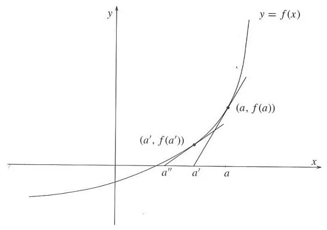 Hình 3. Phương pháp Newton (Mainzer, 2018, tr. 205). 80 Trí tuệ Nhân tạo của Các Hệ thống Phỏng thần kinh Thuật toán được định nghĩa bởi tự đồng cấu Newton Nf: C −→C với f ′(z). Phương pháp Newton nói chung không hội tụ. Máy tìm kiếm của phương pháp Newton trên tập số thực R và số phức C Máy của Newton được biểu diễn bởi một đồ thị có hướng hữu hạn trong Hình 4 với bốn loại nút – nhập, tính toán, rẽ nhánh và xuất – mỗi nút có các hàm và điều kiện liên kết trên các cạnh đi vào và đi ra. Với một đầu vào z0, máy tạo ra quỹ đạo z0, z1 = Nf(z0), z2 = Nf(z1), . . . , zk+1 = Nf(zk) = N k+1 f (z0), . . .. Quy tắc dừng là “dừng nếu |f(zk| < ε và xuất ra zk ′′. Nếu Nf(zk) không xác định tại một bước nào đó, thì không có đầu ra. Máy nói chung sẽ không dừng trên mọi đầu vào (ví dụ: các vòng lặp vô hạn). Tập Ω ⊂C được gọi là tập dừng của máy khi và chỉ khi nó chứa tất cả các đầu vào mà máy dừng lại với một đầu ra. Ánh xạ đầu vào–đầu ra ϕ được định nghĩa trên Ω với ϕ : Ω −→C. Máy của Newton (Hình 5) thực chất là một máy trên R với C = R2 làm không gian đầu vào, đầu ra và trạng thái. Tự đồng cấu Newton (nút tính toán) được cho bởi một hàm hữu tỷ (thương của Hình 4. Thuật toán tìm kiếm cho phương pháp Newton (Mainzer, 2018, tr. 206). Hình 5. Nút tính toán của máy Newton (Mainzer, 2018, tr. 206). hai đa thức): g = (g1, g2): R2 −→R2, với g1(x, y) = Re Nf(x + iy) và g2(x, y) = Im Nf(x + iy). Những ví dụ về máy dựa trên R và C này có thể được tổng quát hóa về mặt toán học cho một vành giao hoán có thứ tự R. Các ví dụ là các số nguyên R = Z và các số thực R = R. Tổng trực tiếp của R với chính nó n lần được ký hiệu là Rn. Những ví dụ về hệ thống đồ thị này có thể được tổng quát hóa thành một máy hữu hạn chiều trên một vành (Blum et al., 1998). Một máy đồ thị hữu hạn chiều M trên R (vành giao hoán có thứ tự hoặc trường có đơn vị) bao gồm một đồ thị có hướng hữu hạn với bốn loại nút (nhập, tính toán, rẽ nhánh và xuất) và ba không gian (không gian đầu vào IM = Rn, không gian trạng thái SM = Rm, và không gian đầu ra OM = Rl). Gắn với mỗi nút là các ánh xạ của những không gian này và các nút tiếp theo: (1) Nút nhập: Điều này liên quan đến ánh xạ tuyến tính I: IM −→SM và nút tiếp theo duy nhất β1. 82 Trí tuệ Nhân tạo của Các Hệ thống Phỏng thần kinh (2) Nút tính toán n: Điều này liên quan đến ánh xạ đa thức (hoặc hữu tỷ) gn: SM −→SM và nút tiếp theo duy nhất βn. Nếu R là một trường, gn có thể là một ánh xạ hữu tỷ. (3) Nút rẽ nhánh n: Điều này liên quan đến hàm đa thức khác không hn: SM −→R. Nút tiếp theo dọc theo cạnh đi ra “có” β+ n gắn với điều kiện hn(z) ≥0 và nút tiếp theo dọc theo cạnh đi ra “không” β− n gắn với hn(z) < 0. (4) Nút xuất n: Điều này liên quan đến ánh xạ tuyến tính On: SM −→OM không có nút tiếp theo. Một ánh xạ đa thức g: Rm −→Rm được cho bởi m đa thức gj: Rm −→R(1 ≤j ≤m). Một ánh xạ hữu tỷ (trong trường hợp R là một trường) được cho bởi một cặp đa thức cố định (pj, qj) với gj(x) = pj(x) qj(x). Nếu R là một vành hoặc trường không có thứ tự (ví dụ: R = C), trong (3), β+ n gắn với hn(z) = 0 và β− n gắn với hn(z)̸ = 0. Nếu M là một máy đồ thị hữu hạn chiều trên R, tập dừng của M được định nghĩa là tập con ΩM của không gian đầu vào IM gồm tất cả các y, tại đó phép tính của M dừng lại. Một ánh xạ đầu vào–đầu ra ϕM: ΩM →OM của tập dừng ΩM trong không gian đầu ra OM định nghĩa quy trình tính toán của M. Đối với đầu vào y ∈IM, phép tính trên y bắt đầu với trạng thái I(y) ∈SM tại nút 1: • Nếu β(1) = n là một nút tính toán, phép tính gn được thực hiện trên trạng thái x = I(y) để tạo ra gn(x), giá trị này thay thế x. • Nếu n là một nút rẽ nhánh và hn(x) < 0, nút tiếp theo là β−(n). Ngược lại, nút tiếp theo là β+(n). Trong cả hai trường hợp, trạng thái tiếp theo vẫn là x. • Quá trình tính toán tiếp tục cho đến khi đạt đến một nút xuất n và On(x) đối với một x ∈SM nào đó được tính. Trong trường hợp này, phép tính được gọi là dừng với ϕM(x) = On(x). 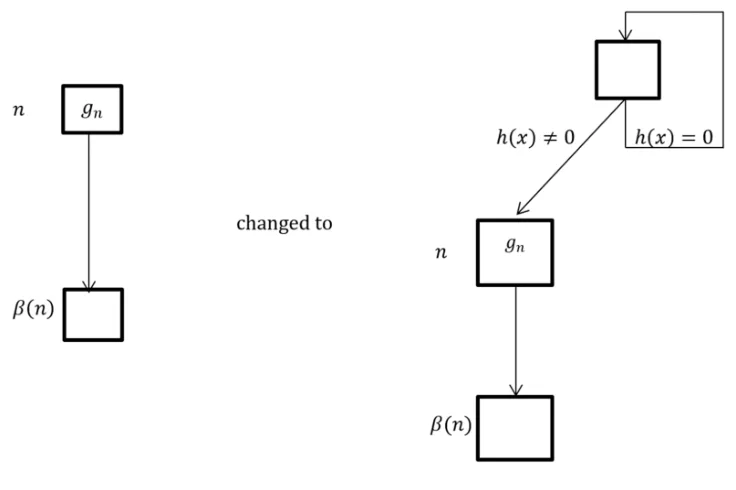 Hình 6. Sửa đổi cho các đa thức không xác định (Mainzer, 2018, tr. 208). Nếu đối với một nút tính toán n nào đó, giá trị hàm gn(x) không xác định vì mẫu số đa thức h bằng 0 tại x, chúng ta có thể sửa đổi máy bằng cách thay đổi như trong Hình 6. Trong một máy vô hạn chiều, không gian đầu vào và không gian đầu ra bằng các tổng trực tiếp đếm được vô hạn R∞với các phần tử là các dãy vô hạn. Bốn nút giống như trước đây trong trường hợp hữu hạn chiều. Loại nút thứ năm được bổ sung để xử lý các dãy hữu hạn nhưng không bị chặn. Một máy đồ thị M trên R là một đồ thị có hướng liên thông hữu hạn, chứa bốn loại nút như trong trường hợp hữu hạn chiều (nhập, tính toán, rẽ nhánh và xuất) và một tập ΣM gồm các nút dịch chuyển với các ánh xạ đi kèm, có thể xử lý các dãy hữu hạn nhưng không bị chặn (Blum et al., 1989). Không gian đầu vào IM và không gian đầu ra OM là hợp rời R∞= ∪n≥0Rn(R0 = {0}). 84 Trí tuệ Nhân tạo của Các Hệ thống Phỏng thần kinh Không gian trạng thái SM là tổng trực tiếp vô hạn hai phía trên R với các phần tử x = (. . . , x−2, x−1, x0. x1, x2, . . .) với xk = 0 khi |k| đủ lớn và dấu đánh dấu “.” giữa x0 và x1. Mỗi nút dịch chuyển n gắn với một phép dịch chuyển, dịch trái σl và dịch phải σr, trong đó σl(x)i = xi+1 và σr(x)i = xi−1. Chiều KM và bậc DM của M là giá trị lớn nhất của các chiều và các bậc của tất cả các ánh xạ gắn với các nút tính toán và nút rẽ nhánh của nó. Một máy Turing cổ điển là một máy trên Z2. Do đó, một máy đồ thị trên R có thể được coi là một máy Turing “thực”. Ánh xạ đầu vào–đầu ra ϕM đối với máy vô hạn chiều M được định nghĩa tương tự như đối với các máy hữu hạn chiều. Với l, m ≤∞, một ánh xạ bộ phận ϕ : Rl →Rm được gọi là khả tính trên R khi và chỉ khi tồn tại một máy M trên R sao cho miền xác định Ωϕ của ánh xạ ϕ bằng tập dừng ΩM của máy M, tức là Ωϕ = ΩM với ϕM(x) = ϕ(x) với mọi x ∈Ωϕ. Trong trường hợp này, máy M được gọi là tính toán ánh xạ ϕ. Các máy M và M′ được gọi là tương đương khi và chỉ khi chúng tính toán cùng một ánh xạ. Một tập con Y ⊂Rn được gọi là đệ quy đếm được trên R khi và chỉ khi nó bằng tập dừng ΩM của một máy M nào đó trên R, tức là Y = ΩM. Một tập con Y ⊂Rn được gọi là khả quyết khi và chỉ khi Y và phần bù của nó đều đệ quy đếm được trên R. Có thể chứng minh được rằng vành các số nguyên Z là một tập con khả quyết của R trên R đối với bất kỳ vành Archimedes R nào. Mã π(M) của một máy đồ thị M trên R là một dãy hữu hạn các loại nút được mã hóa n với các số 1–5 biểu thị nút nhập, nút tính toán, nút rẽ nhánh, nút xuất và nút dịch chuyển, số loại của nút tiếp theo βn (hoặc một cặp (β+ n , β− n ) đối với nút rẽ nhánh), và ánh xạ đi kèm gn của nó. Một đa thức bậc d và m biến có thể được mô tả bởi dãy (d, m, a), trong đó a biểu thị dãy các hệ số của nó (theo thứ tự từ điển). Một hàm hữu tỷ được cho bởi một cặp đa thức có thứ tự, trong khi một ánh xạ hữu tỷ được cho bởi một dãy hữu hạn các hàm hữu tỷ. Một máy đồ thị phổ dụng trên R là một máy U mà khi được nhập một cặp (π(M), x) với mã số π(M) và đầu vào x ∈R∞ của máy M trên R, sẽ xuất ra φU(x) = φM(x). U đọc một cách có hệ thống mã chương trình π(M) và thực hiện các lệnh áp dụng cho x, bắt đầu với lệnh được gán nhãn 1, tiếp tục đến lệnh được gán nhãn β1, v.v. Nếu U đi đến một lệnh được gán nhãn N, nó sẽ dừng và xuất ra chính xác những gì M sẽ xuất ra. Một thành phần thiết yếu của U là bộ đánh giá đa thức phổ dụng, một chương trình con nhận đầu vào (f, x) trong R∞, với f ∈ R[x1, x2, . . . , xm] và x ∈Rm, và xuất ra f(x) ∈R. Đặt N = {1, . . . , N} là tập hợp các nút của M (với 1 là nút nhập và N là nút xuất) và S là không gian trạng thái của nó. N × S được gọi là không gian trạng thái đầy đủ của máy với tự đồng cấu tính toán H : N × S −→N × S, 86 Trí tuệ Nhân tạo của Các Hệ thống Phỏng thần kinh tức là H ánh xạ mỗi cặp nút/trạng thái (n, x) tới cặp nút/trạng thái tiếp theo duy nhất (n′, x′) được xác định bởi đồ thị của M và các ánh xạ đi kèm. Đặt γ(= γx) là đường đi tính toán n0 = 1, n1, . . . , nk, . . . và đặt γ(k) là đường đi tính toán ban đầu (n0, n1, . . . , nk) ∈N k+1 của γ có độ dài k. Chúng ta gọi Vγ(k) = {x′ ∈Im|γx′(k) = γ(k)} là tập đường đi ban đầu gồm tất cả các đầu vào có đường đi tính toán trùng với γ trong k bước đầu tiên. Các tập đường đi ban đầu được đặc trưng bởi các điều kiện rẽ nhánh dọc theo đường đi γ(k) với hai tập hợp các hàm rẽ nhánh bước-k trái và phải: Lγ(k) = {fγ(k′)|k′ < k, k′ bước rẽ nhánh trong γ, và nk′+1 = β−(nk′)}, Rγ(k) = {fγ(k′)|k′ < k, k′ bước rẽ nhánh trong γ, và nk′+1 = β+(nk′)}. Khi đó, trong trường hợp R có thứ tự, tập đường đi ban đầu là Vγ(k) = {x ∈Im|f(x) < 0, g(x) ≥0, f ∈Lγ(k), g ∈Rγ(k)}, hoặc trong trường hợp R không có thứ tự, Vγ(k) = {x ∈Im|f(x)̸ = 0, g(x) = 0, f ∈Lγ(k), g ∈Rγ(k)}. Một tập con S của Rn được gọi là bán đại số cơ bản trên R trong trường hợp có thứ tự (hoặc tựa đại số cơ bản, trong trường hợp không có thứ tự) nếu S là tập hợp các phần tử trong Rn thỏa mãn một hệ hữu hạn các đẳng thức và bất đẳng thức đa thức trên R. Một tập bán đại số (hoặc tựa đại số) là hợp hữu hạn của các tập bán đại số cơ bản (hoặc tựa đại số cơ bản). (1) Nếu R là một vành hoặc trường có thứ tự, thì tập đường đi ban đầu Vγ(k) là tập bán đại số cơ bản (hoặc tựa đại số cơ bản trong trường hợp không có thứ tự). (2) Nếu γ1(k)̸ = γ2(k), thì Vγ1(k) ∩Vγ2(k) = ∅. Đặt ΓT = {γx(T)|TM(x) ≤T đối với x ∈IM} là tập các đường đi dừng thời gian-T với thời gian dừng TM(x), tức là T nhỏ nhất sao cho TM: ΩM −→Z+. Tập các đường đi dừng của M là ΓM = ∪T<∞ΓT và tập các đường đi dừng tối tiểu là Γ′M = {γ ∈ΓM|N chỉ xuất hiện một lần trong γ}. Đối với bất kỳ máy M nào trên R, tập dừng ΩM = ∪γ∈Γ′MVγ là hợp rời đếm được của các tập bán đại số cơ bản (tương ứng, tựa đại số cơ bản). Với các máy đồ thị, các khái niệm về tính khả tính và tính khả quyết có thể được tổng quát hóa trên một vành. Với l, m ≤∞, một ánh xạ (bộ phận) ϕ : Rl →Rm là khả tính trên R khi và chỉ khi tồn tại một máy M trên R sao cho tập dừng của nó ΩM = Ωϕ, miền xác định của ϕ, và φM(x) = ϕ(x) với mọi x ∈Ωϕ và ánh xạ đầu vào–đầu ra φM : ΩM →O (không gian đầu ra). Một tập Y ⊂Rn được gọi là đệ quy đếm được trên R khi và chỉ khi Y = ΩM (tập dừng) đối với một máy M nào đó trên R (Y không khả tính đối với R = R). Nó được gọi là khả quyết khi và chỉ khi nó và phần bù của nó đều đệ quy đếm được trên R. Bây giờ chúng ta có thể giải quyết các bài toán khả quyết của, chẳng hạn, tập Mandelbrot, tập Julia và phương pháp Newton. Định lý. Tập Mandelbrot không khả quyết trên R. Tập Mandelbrot không phải là tập dừng của bất kỳ máy nào trên R. Tại sao? Biên của tập Mandelbrot có chiều Hausdorff bằng 2. Do đó, tập Mandelbrot không thể được biểu diễn bằng hợp đếm được của các tập bán đại số trên R. Nhưng bất kỳ tập dừng nào cũng có thể được biểu diễn bằng hợp đếm được của các tập bán đại số cơ bản trên R, bởi vì ánh xạ đầu vào–đầu ra là một ánh xạ đa thức hoặc hữu tỷ từng mảnh. Một tập S ⊂Rn là bán đại số cơ bản trên R trong trường hợp có thứ tự (hoặc tựa đại số cơ bản trong trường hợp không có thứ tự) nếu S là tập hợp các 88 Trí tuệ Nhân tạo của Các Hệ thống Phỏng thần kinh phần tử trong Rn thỏa mãn một hệ hữu hạn các đẳng thức và bất đẳng thức đa thức. (1) một đường tròn, (2) một cung của đường tròn, hoặc (3) toàn bộ mặt cầu. Hầu hết các tập Julia không khả quyết trên R vì hầu hết các tập Julia có chiều Hausdorff phân số. Nhưng các tập dừng phải có chiều Hausdorff nguyên. Định lý. Tập hợp các điểm hội tụ theo phương pháp Newton nói chung là bất khả quyết trên R. Chỉ cần sử dụng hàm bậc ba f(x) = x3 −2x + 2 là đủ để thu được kết quả bất khả quyết. Người ta biết rằng tập hợp các điểm không hội tụ về một nghiệm của f dưới phép lặp của phương pháp Newton chính xác là một tập Cantor, tức là không đếm được. Một tập Cantor không thể là hợp đếm được của các tập bán đại số. Lý thuyết toán học về các hệ thống động lực dựa trên các số thực và số phức (Ebbinghaus et al., 1991). Do đó, với tính toán thực và phức, các bài toán tổng quát về tính khả quyết và tính đếm được có thể được giải quyết cho các hệ thống động lực. Một hệ động lực phức rời rạc với hàm trạng thái (hữu tỷ) g : C →C tạo ra các quỹ đạo của các điểm z0, g(z0), . . . , gk(z0), . . . Các điểm bất động (g(z0) = z0) hoặc các điểm tuần hoàn (gn(z0) = z0 với chu kỳ n) có thể là hút (tương ứng đẩy) với các điều kiện |(gn)′(z0)| < 1 (tương ứng |(gn)′(z0)| > 1), trong đó (gn)′(z0) là đạo hàm của lần lặp thứ n của g tại z0: Nếu z0 là điểm hút có chu kỳ n, điều kiện đạo hàm ngụ ý rằng tồn tại một lân cận U của z0 với gn(U) ⊂U. Do đó, quỹ đạo của các điểm trong lân cận U của z0 với gn(U) ⊂U tiệm cận tiến tới quỹ đạo của z0, tức là miền hút của z0. Hợp của chúng là miền hút của g. Mệnh đề. Miền hút của g là một tập đệ quy đếm được trên R, tức là tồn tại một máy M có tập dừng ΩM là miền hút của g. Đối với các ánh xạ hữu tỷ, chỉ có một số hữu hạn các điểm tuần hoàn hút. Do đó, tồn tại một đa thức thực h gồm hai biến thực sao cho h(z) < 0 khi và chỉ khi z thuộc về một hợp hữu hạn các đĩa xung quanh các điểm hút được co vào chính nó bởi g. Suy ra một điểm nằm trong miền hút của g khi và chỉ khi h(z) < 0 đối với một z nào đó trong quỹ đạo của nó. Theo định nghĩa của một máy đồ thị, chúng ta gắn z với nút nhập, đa thức g với nút tính toán, và đa thức h với nút rẽ nhánh của một máy M, được định nghĩa bởi sơ đồ đồ thị sau: Theo định nghĩa của M, tập dừng ΩM là miền hút của g. 90 Trí tuệ Nhân tạo của Các Hệ thống Phỏng thần kinh Miền hút của g là đệ quy đếm được nhưng không khả quyết. Tính khả quyết đòi hỏi phần bù của miền hút của g cũng phải đệ quy đếm được. Nhưng phần bù của miền hút chính là tập Julia của g, vốn nói chung là không khả quyết. Từ góc độ toán học, các máy đồ thị trên một vành R rất thuận tiện để minh họa các tính chất đại số của tính toán thực. Nhưng chúng có phần trừu tượng đối với kiến trúc của máy tính. Thực tế, một máy đồ thị trên vành R là một loại máy thanh ghi với bộ nhớ không giới hạn xử lý các phần tử của một vành bằng số học chính xác. Trong khoa học máy tính, việc minh họa các quá trình tính toán bằng các máy thanh ghi tổng quát tương đương với các máy đồ thị trên vành R sẽ thuận tiện hơn. Các phép tính giải tích là các phép tính vô hạn tạo ra một dãy đầu ra hội tụ. Các kết quả kinh điển về tính khả quyết và tính bất khả quyết trong logic có tác động sâu sắc đến tính toán thực. Các ví dụ bao gồm kết quả của Tarski rằng tập số thực là khả quyết, nhưng tập số nguyên thì không theo Gödel. Một tập S ⊂Rn là định nghĩa được trên (R, <) khi và chỉ khi S được suy ra từ một tập bán đại số trên R bằng một dãy hữu hạn các phép chiếu và phép bù. Mệnh đề. (1) Mọi tập định nghĩa được trên R đều khả quyết trên R (trong thời gian bị chặn) (Tarski, 1951). (2) Tồn tại các tập định nghĩa được nhưng bất khả quyết trên Z (hệ quả của Gödel (1931)). Chứng minh (2). (a) Với mỗi n ≤∞, tồn tại các tập dừng bất khả quyết trong Zn (lập luận đường chéo kiểu Cantor trên tập dừng của một máy phổ dụng). (b) Với mỗi n < ∞, các tập dừng thời gian-T trong Zn là định nghĩa được trên Z (thông qua các phương trình bán đại số của một máy đồ thị mô tả phép tính dừng của các điểm (Blum et al., 1998, tr. 59)). (c) Với mỗi n < ∞, các tập dừng trong Zn là định nghĩa được trên Z. (b) ⇒(c) (a), (c ) ⇒(2) ■ Mệnh đề. Định lý Không điểm Hilbert HN là bất khả quyết trên Z. Chứng minh. (c′) Với mỗi n < ∞, các tập dừng trong Zn là diophantine, tức là hình chiếu của các tập đại số trên Z (Matiyasevich, 1970; 1993). (a), (c′) =⇒tính bất khả quyết của Nullstellensatz trên Z. ■ Nếu Z là hình chiếu của một tập đại số trên Q, thì HN sẽ không khả quyết trên Q. Nhưng điều này vẫn chưa được biết! Tuy nhiên, Z là định nghĩa được trong Q (Robinson, 1949). Do đó, tồn tại các tập định nghĩa được nhưng bất khả quyết trên Q. (a) Với mỗi n ≤∞, tồn tại các tập dừng bất khả quyết trong Rn. (b) Với mỗi n < ∞, các tập dừng thời gian-T trong Rn là định nghĩa được trên R. (c) Có những tập dừng trong Rn không định nghĩa được trên R (nếu không sẽ mâu thuẫn với (a) theo Tarski (1951)). Mệnh đề. Tính Không định nghĩa được của Z trên R Z không thể định nghĩa được trên R. Chứng minh. Các tập con định nghĩa được của R là bán đại số (Tarski) và do đó là hợp hữu hạn của các khoảng với các đầu mút đại số. ■ Mệnh đề. Tính Khả quyết Z là khả quyết trên R. 92 Trí tuệ Nhân tạo của Các Hệ thống Phỏng thần kinh Chứng minh bằng chương trình: Đầu vào x∈R z:=|x| while z ≥0 do z:=z-1 end do z:=z+1 if z=0 xuất ra 1, ngược lại xuất ra 0. Mỗi tập con S ⊆Z có thể được quyết định bởi một máy trên (R, <) với một hằng số tích hợp cs mã hóa hàm đặc trưng χs. Các máy như vậy trên R có thể được coi là một loại máy Turing oracle. ■ Mệnh đề. Tính định nghĩa được và tính khả quyết trên C. (a) Mọi tập định nghĩa được trên C = R2 đều khả quyết trên C. (b) Mọi tập khả quyết trong Cn đều định nghĩa được trên C. (c) Z không thể quyết định được trên C. Chứng minh. (a) Bằng các lập luận kiểu Tarski. (b) Một tập là định nghĩa được khi và chỉ khi nó được suy ra từ một tập tựa đại số. Đối với C, các tập khả quyết trong Cn là khả quyết bởi các máy bị chặn thời gian và do đó là các tập tựa đại số (Cucker và Rosselló, 1993). (c) (Blum và Smale, 1993). Tóm lại, xét về tính định nghĩa được và tính khả quyết, C đơn giản hơn R và R đơn giản hơn N. Tương tự như tính toán kỹ thuật số, tính toán tương tự với các số thực (và số phức) cũng có thể phân biệt giữa các mức độ phức tạp của tính khả tính thực. Vì mục đích này, các tiêu chuẩn khác nhau cho chi phí tính toán phải được đưa ra. Ở phía này của tính khả tính thực với số thực, có những khác biệt giữa các bài toán P và NP đối với tính khả tính kỹ thuật số. Vượt ra ngoài tính khả tính thực với số thực, một tính khả tính thực mở rộng với phân cấp đa thức và các máy oracle thực tương ứng có thể được giới thiệu. Các định lý và chứng minh tương ứng là chính xác về mặt toán học. Nếu có các hiện thực hóa kỹ thuật–vật lý của tính toán thực (xem Chương 13 và 14), thì các tiềm năng và giới hạn lý thuyết của nó lại phụ thuộc vào hình thức luận toán học được giả định. Trong khoa học máy tính cổ điển, một thuật toán được định nghĩa bởi một máy M là khả giải hiệu quả (hay thời gian đa thức, hoặc thuộc P) khi và chỉ khi thời gian tính toán T(x) gắn với đầu vào x thỏa mãn chặn T(x) ≤c(size(x))q với mọi x với các hằng số c và q (chỉ phụ thuộc vào M). Thời gian là số lượng các phép toán của máy Turing và kích thước (size) là số lượng bit. Có những khác biệt tinh tế giữa các lý thuyết về P và NP trên R và trên Z: Bất kỳ bài toán NP nào trên Z đều có thể thấy là giải được trong thời gian 2poly(n) bằng các lập luận đếm. Một kết quả tương tự trên R còn xa mới hiển nhiên vì có một continuum các phỏng đoán khả dĩ trên R. 93 94 Trí tuệ Nhân tạo của Các Hệ thống Phỏng thần kinh Độ phức tạp của một hàm được đo bằng chi phí tính toán tối ưu. Chi phí tính toán đề cập đến số lượng các phép toán cần thiết để biến đổi một đầu vào thành một đầu ra. Do đó, chi phí phụ thuộc vào kích thước đầu vào. Một máy trên R hoạt động trong thời gian đa thức nếu với mỗi đầu vào x ∈Rn ⊂R∞chi phí tính toán là cost (x) ≤cnq với một số c, q ≥1 cố định, trong đó cost(x) là số lượng các nút được sử dụng trong quá trình tính toán và n là kích thước của x. Trong trường hợp kỹ thuật số, kích thước được cho bởi độ dài bit. Trên một vành R, kích thước phụ thuộc vào một hàm chiều cao htR được định nghĩa trên R và vào độ dài vectơ. Chiều cao đơn vị htR(x) = 1 với mọi x ∈R. Chiều cao đơn vị đề cập đến độ phức tạp đại số trên R và C. Trên Z và Q, độ phức tạp bit được định nghĩa bởi chiều cao logarit hoặc chiều cao bit: htZ(x) = ⌈log(|x| + 1)⌉ với mọi x ∈Z, htQ(x) = max(htZ(p), htZ(q)) đối với x ∈Q với x = p/q và p và q là các số nguyên nguyên tố cùng nhau. Với x ∈Rn ⊂R∞, đặt hàm chiều cao htR được định nghĩa trên vành R với các giá trị trong tập số nguyên không âm, tức là htR(x) = maxi htR(xi) đối với x = (x1, . . . xn) ∈Rn ⊂R∞. Khi đó, độ dài và kích thước của x được định nghĩa tương ứng bởi length(x) = n và size(x) = n · htR(x). Trên R, C, và Z2 với chiều cao đơn vị, kích thước của đầu vào là số chiều hoặc độ dài vectơ của đầu vào. Trên Z2, kích thước cũng là độ dài bit của chuỗi x. Trên Z với chiều cao logarit, kích thước tương ứng với độ dài bit của dãy x. Cho M là một máy trên vành R với hàm chiều cao htR. Với x ∈Rn ⊂R∞, chi phí là costM(x) = T(x) × htmax(x), trong đó T(x) là thời gian dừng của M trên đầu vào x và htmax(x) là chiều cao lớn nhất của bất kỳ phần tử nào trong phép tính của M trên đầu vào x. Trên số thực hoặc một vành có chiều cao đơn vị, chi phí đơn vị hoặc chi phí đại số là thời gian dừng và liên quan đến số lượng các phép toán đại số từ đầu vào đến đầu ra. Trên số nguyên và số hữu tỷ có chiều cao logarit, chi phí logarit hoặc chi phí bit liên quan đến số lượng các phép toán bit. Độ phức tạp tính toán phải được xem xét đối với các thước đo chi phí khác nhau này. P, NP, và NP-đầy đủ có thể được đưa vào trên một vành R tùy ý (Blum et al., 1998, Chương 5). Trong khuôn khổ này, các kết quả NP-đầy đủ cũ và mới có thể thu được: • Bài toán thỏa mãn cổ điển là NP-đầy đủ trên Z2. • Định lý Không điểm Hilbert là NP-đầy đủ trên C và R. • Bài toán quyết định người du lịch thuộc NP trên R. Một bài toán quyết định S là quy giảm được theo p (đa thức) về bài toán quyết định S′(S →p S′) khi và chỉ khi tồn tại một ánh xạ khả tính trong thời gian đa thức ϕ: R∞−→R∞sao cho ϕ(S) ⊆S′ và ϕ(R∞−S) ⊆R∞−S′, nói cách khác, trong trường hợp S →p S′, S′ ít nhất là “khó” ngang bằng S. Các ví dụ về bài toán quyết định như sau: HN: Định lý Không điểm Hilbert, QUAD: Tính khả thi của các hệ phương trình bậc hai, 4-FEAS: Tính khả thi của các đa thức bậc 4, TSP: Bài toán người du lịch, KP: Bài toán cái túi, SAT: Bài toán thỏa mãn. Trên bất kỳ vành hoặc trường R nào, HN →p QUAD. Trên bất kỳ vành hoặc trường có thứ tự R nào, QUAD →p 4-FEAS. 96 Trí tuệ Nhân tạo của Các Hệ thống Phỏng thần kinh Một bài toán quyết định S ⊆R∞thuộc lớp NP trên R(S ∈NPR) nếu tồn tại một máy M trên R với IM = R∞× R∞và các số nguyên dương c và q sao cho (1) nếu x ∈S, thì tồn tại một w ∈R∞nào đó (được gọi là một phỏng đoán hoặc bằng chứng cho một lời giải) sao cho nếu ϕM(x, w) = 1 và costM(x, w) ≤ c(size x)q; (2) nếu x /∈S, thì không có w ∈R∞nào sao cho ϕM(x, w) = 1. Một bài toán quyết định được gọi là NP-khó trên R khi và chỉ khi mọi S ∈NPR đều quy giảm p được về nó. Một bài toán quyết định được gọi là NP-đầy đủ trên R khi và chỉ khi nó là NPR-khó và thuộc lớp NPR. (1) đối với mọi bài toán NP-đầy đủ S trên R suy ra S ∈PR khi và chỉ khi PR = NPR; (2) đối với mọi bài toán NP-khó S′ trên R với S′ →p S suy ra rằng S là NPR-khó. Các ví dụ bao gồm: (a) HN và QUAD là NP-khó trên (F, =) đối với bất kỳ trường F nào (ví dụ: C); (b) HN, QUAD, và 4-FEAS là NP-khó trên (Z, <), (Q, <), và (R, <) (hoặc đối với bất kỳ trường đóng thực nào). Trên tập số thực hoặc bất kỳ vành nào có chiều cao đơn vị, chi phí đơn vị là thời gian dừng và đề cập đến số lượng các phép toán đại số cơ bản (cũng như số lần dịch chuyển) từ đầu vào đến đầu ra. Trên tập số nguyên hoặc số hữu tỷ có chiều cao logarit, chi phí bit đề cập đến số lượng các phép toán bit. Trong Hình 1, chúng ta phân biệt chi phí đơn vị và chi phí bit của độ phức tạp tính toán trên Z, Q, R, C, và Z2. Ở hàng đầu tiên, tính bất khả quyết của Định lý Không điểm Hilbert (HN /∈Dec) trên Z ngụ ý P̸ = NP trên (Z, <) đối với Vành Rẽ nhánh Chi phí HN ∈Dec HN ∈NP NP ⊆EXP P = NP Z < đơn vị không có không không Z < bit không không có ? Z = đơn vị không có không không Z = bit không không có không Q < đơn vị ? có không không R < đơn vị có có có ? C = đơn vị có có có ? Z2 = đơn vị có có có ? Hình 1. Chi phí đơn vị và chi phí bit của độ phức tạp tính toán. chi phí đơn vị. Lý do là, theo định lý Matiyasevich (Matijasevic, 1970; 1993), NP bằng lớp HALT gồm các tập dừng trên (Z, <) vốn không thể là P, lớp các tập khả giải hiệu quả trong thời gian đa thức. EXP là lớp các bài toán khả tính trong thời gian hàm mũ. Đối với chi phí đơn vị, NP ⊆EXP không thể đúng vì giả định NP ⊆EXP và HN ∈NP dẫn đến HN ∈EXP, điều này mâu thuẫn với tính bất khả quyết của HN. Ở hàng thứ hai, đối với chi phí bit trên Z, NP ⊆EXP là đúng, tức là các bài toán NP khả tính trong thời gian hàm mũ. Do đó, HN ∈NP không thể đúng vì giả định HN ∈NP và NP ⊆EXP dẫn đến HN ∈EXP, điều này mâu thuẫn với tính bất khả quyết của HN. Ở hàng thứ ba và thứ tư, P̸ = NP trên (Z, =) với cả chi phí đơn vị hoặc chi phí bit. Trong trường hợp chi phí đơn vị, P̸ = NP suy ra từ tính bất khả quyết của HN trên Z. Tổng quát, theo định lý Lagrange trên (Z, =), với mọi u ≥0, tồn tại các số u1, u2, u3, u4 với u = u2 1 + u2 2 + u2 3 + u2 4. Do đó, N thuộc lớp NP đối với chi phí đơn vị và chi phí bit. Suy ra N /∈P đối với chi phí đơn vị, nếu không N sẽ khả quyết trong thời gian hằng số. N /∈P cũng đúng trong trường hợp chi phí bit (Shub, 1993). Ở hàng thứ năm, P̸ = NP trên (Q, <) đối với chi phí đơn vị. Thực ra, chúng ta chưa biết liệu HN có bất khả quyết trên Q hay không. Do đó, P̸ = NP trên (Q, <) đối với chi phí đơn vị phải được chứng minh bằng các lập luận khác: Hình chiếu của các tập bán đại số 98 Trí tuệ Nhân tạo của Các Hệ thống Phỏng thần kinh thuộc NP. Nếu chúng ta giả sử P = NP trên (R, <), hình chiếu của các tập bán đại số thuộc NP phải thuộc P và do đó phải là bán đại số. Theo (đảo của) định lý Tarski, R phải là trường đóng thực (Macintyre et al., 1983). Nhưng Q không đóng thực. Do đó, giả định N = NP dẫn đến một mâu thuẫn. Trên R và C, NP là khả quyết và NP-đầy đủ đối với chi phí đơn vị. NP ⊆EXP là hiển nhiên trong trường hợp này, nhưng N = NP vẫn chưa được biết. Trong lý thuyết độ phức tạp cổ điển trên Z, phân cấp số học và phân cấp giải tích được đưa vào theo cách đệ quy (xem Chương 3). Tính đệ quy tương đối được định nghĩa theo các mức độ tính toán của Turing. Theo một gợi ý của Turing, tính đệ quy tương đối có thể được minh họa bởi các máy oracle vốn có thể được tổng quát hóa trên một vành R. Do đó, các máy oracle cũng được sử dụng như một công cụ để giảm độ phức tạp của các bài toán. Một ví dụ là phép quy giảm p được cho bởi tính NPR-đầy đủ của 4-FEAS: Với bất kỳ tập S nào trong NPR, tồn tại một hàm khả tính trong thời gian đa thức ϕS sao cho với mọi x ∈R∞, x ∈S khi và chỉ khi ϕS(x) ∈4-FEAS. Trong trường hợp này, chúng ta có thể hình dung một máy MS tính toán một phần tử ϕS(x) ∈R∞cho đầu vào x ∈S trong thời gian đa thức và truy vấn tập 4-FEAS xem phần tử đó có thuộc về nó hay không. Đối với chi phí đơn vị cho mỗi truy vấn, máy hoạt động trong thời gian đa thức. Do đó, nếu biết được một máy thời gian đa thức để quyết định 4-FEAS, thì máy này cũng có thể quyết định S. Các máy oracle thực hiện các truy vấn về tư cách thành viên trong một tập hợp. Chúng mạnh hơn một máy thông thường vì chúng có thể thực hiện không chỉ một truy vấn mà bao nhiêu truy vấn tùy thích trong giới hạn thời gian cho phép. Một máy oracle trên R là một máy trên R mà ngoài không gian đầu vào và đầu ra R∞, và không gian trạng thái R∞, còn sở hữu một không gian oracle R = N × R∞, một tập oracle A ⊆R∞, và hai loại nút bổ sung: ghi (write) và truy vấn (query). Ký hiệu nội dung của không gian trạng thái bởi (. . . , x−1, x0. x1, . . . , ) và nội dung của không gian oracle bởi (j, y1, y2, . . .). Khi bắt đầu tính toán, nội dung của không gian oracle R là (0, 0, . . .). Cả hai nút ghi và nút truy vấn đều có một nút tiếp theo duy nhất: Nút ghi: Nội dung của tọa độ x0 của không gian trạng thái được ghi vào tọa độ thứ j của phần thực của không gian oracle, trong đó j là nội dung của tọa độ số tự nhiên của nó. Sau đó, tọa độ số tự nhiên được tăng lên 1: (. . . , x−1, x0. x1, . . .) → (. . . , x−1, x0. x1, . . .), (j, y1, . . . , yj, yj+1, yj+2, . . .) (j + 1, y1, . . . , yj, x0, yj+2, . . .). Nút truy vấn: Máy ghi 1 vào x0 nếu nội dung trong R∞ở không gian oracle thuộc về A và 0 nếu ngược lại. Một khi câu trả lời của truy vấn đã được ghi, tất cả các tọa độ của không gian oracle đều được đặt lại về 0: ⎧ ⎪ ⎪ ⎪ ⎪ ⎨ (. . . , x−1, 1. x1, . . . , ), (0, 0, . . .), nếu (y1, . . . , yj) ∈A, (. . . , x−1, x0. x1, . . . , ) → ⎪ ⎪ ⎪ ⎪ ⎩ (. . . , x−1, 0. x1, . . . , ), (0, 0, . . .), nếu (y1, . . . , yj) /∈A, (j, y1, . . . , yj, . . .). Các mức độ phức tạp có thể được tổng quát hóa cho các máy không giới hạn có thể cộng, nhân và chia trong một trường R (ví dụ: R hoặc C): 0 := ΠR 0 := PR. n (ΠR n ) (trong M) với n ≥1 khi và chỉ khi nó có một định nghĩa tường minh (∗) không có hai lượng từ kề nhau nào cùng loại và lượng từ đầu tiên là tồn tại (phổ dụng): (∗) A(u) ←→Q1x1 ∈Rp1(m) . . . Qnxn ∈Rpn(m)B(u, x1, . . . , xn), với ∈R, B ⊆(R∞)n+1, B ϵ PR phức đa thức, các lượng từ Qixi hoặc là ∃xi hoặc là ∀xi, và các hàm đa thức p1, . . . , pk. 100 Trí tuệ Nhân tạo của Các Hệ thống Phỏng thần kinh n (M) khi và chỉ khi nó là cả R n (M) và R n (M). Các mức của phân cấp đa thức trên trường hoặc vành R được tương đối hóa với tập M có thể được đặc trưng bởi các máy oracle tương ứng. ... ... ... R n+1(M) R n+1 (M) ΔR n+1 (M) R n (M) R n (M) ΔR n (M) ... ... ... R 2 (M) R 2 (M) ΔR 2 (M) R 1 (M) R 1 (M) ΔR 1 (M) k-Đầy đủ Các bài toán đầy đủ có thể được tổng quát hóa dọc theo các mức của phân cấp đa thức. Làm ví dụ, chúng ta xem xét tính NPR-đầy đủ của 4-FEAS: (f, n1, n2, . . . , nk)|f là một đa thức bậc 4 trong ⎧ ⎪ ⎪ ⎪ ⎪ ⎪ ⎪ ⎪ ⎪ ⎪ ⎪ ⎪ ⎪ ⎪ ⎨ n1 + n2 + · · · + nk biến sao cho ∃x1 ∈Rn1∀x2 ∈Rn2 . . . ∃xk ∈Rnk f(x1, . . . , xk) = 0} nếu k lẻ, (f, n1, n2, . . . , nk)|f là một đa thức bậc 4 trong ⎪ ⎪ ⎪ ⎪ ⎪ ⎪ ⎪ ⎪ ⎪ ⎪ ⎪ ⎪ ⎪ ⎩ n1 + n2 + · · · + nk biến sao cho ∃x1 ∈Rn1∀x2 ∈Rn2 . . . ∀xk ∈Rnk f(x1, . . . , xk)̸ = 0} nếu k chẵn. Hiển nhiên, S1 = 4-FEAS. Phần bù của S2 là một phiên bản tham số hóa của 4-FEAS: Có hai nhóm biến, x và t, và bài toán là quyết định xem với mọi giá trị của tham số t ∈Rn1 có tồn tại một x ∈Rn2 sao cho f(t, x) = 0 hay không. Các kết quả này có thể được tổng quát hóa trong định lý sau (Cucker và Koiran, 1995; Cucker và Matamala, 1996): k -đầy đủ. Các lớp độ phức tạp của tính giải được và tính khả quyết trên một vành R được đặc trưng bởi năng lực của máy (ví dụ: máy đồ thị, máy oracle) và tài nguyên. Nhưng các lớp độ phức tạp của tính giải được và tính khả quyết cũng có thể được đặc trưng theo cách độc lập với máy bằng độ phức tạp của các ngôn ngữ định nghĩa và mô tả chúng. Các máy đồ thị đã được mô tả đại số bằng các phương trình thanh ghi của chúng, ví dụ, các bài toán NPR thông qua các phương trình đa thức bậc 4: Nếu ∈NPR, thì, với mỗi n, tồn tại một đa thức bậc 4 Φn(y1, . . . , yn, x1, . . . , xm) với tính chất rằng a ∈Sn khi và chỉ khi phương trình Φn(y1, . . . , yn, x1, . . . , xm) = 0 giải được trên R với a = (a1, . . . , an) và Sn = S ∩Rn. Nói ngắn gọn: a ∈Sn khi và chỉ khi ∃x1 . . . ∃xmΦn(a, x1,. . . , xm) = 0 là một phát biểu đúng trên R. Theo cách này, với mỗi n, có một mô tả về Sn bằng các đa thức Φn được suy ra từ các phương trình thanh ghi của một máy quyết định NPR cho S. Mục tiêu là tìm một ngôn ngữ hình thức để mô tả S mà không phụ thuộc vào một khái niệm máy nào. Sau đây, chúng ta phân biệt ba hệ thống logic trên các cấu trúc R: (1) bậc nhất (FOR); (2) bậc nhất điểm bất động (FPR); (3) bậc hai tồn tại (∃SOR). Các tập hợp của các cấu trúc R có thể được liên kết với các tập con của R∞, tức là các bài toán quyết định của R. Có thể chứng minh rằng một tập S ⊂R∞thuộc PR hoặc NPR khi và chỉ khi các tập hợp cấu trúc R liên kết có thể mô tả được trong logic bậc nhất điểm bất động hoặc logic bậc hai tồn tại. (a) Ngôn ngữ hình thức • Một từ vựng L là một tập hợp các ký hiệu, mỗi ký hiệu là quan hệ hoặc hàm. 102 Trí tuệ Nhân tạo của Các Hệ thống Phỏng thần kinh • Một cấu trúc A của L là một tập A (vũ trụ) với các diễn giải của L. • Nếu T là một tập các câu trên L, A thỏa mãn T khi và chỉ khi mọi câu của T đều được thỏa mãn trong A(A |= T). • Các cấu trúc A với A |= T được gọi là các mô hình của T. • Các câu trong T được gọi là các tiên đề và T được gọi là một lý thuyết. (b) Tính định nghĩa được • Một quan hệ R ⊆An là định nghĩa được (bậc nhất) trong A trên L khi và chỉ khi tồn tại một công thức ϕ trên L với n biến tự do x1, . . . , xn sao cho với mọi a ∈R khi và chỉ khi A |= ϕ(a). • Một hàm bộ phận f : An −→A là định nghĩa được bằng hạng từ trong A trên L khi và chỉ khi tồn tại một hạng từ t(x1, . . . , xn) sao cho với mọi a ∈An là tA(a) = f(a). • Một tập S ⊂R∞thuộc PR(NP R) khi và chỉ khi các tập hợp cấu trúc R liên kết của nó là định nghĩa được trong logic bậc nhất điểm bất động (tương ứng, logic bậc hai tồn tại). Xét ngôn ngữ L = {<, 0, 1, +, −, ×}, cấu trúc A = ⟨R, <⟩, và từ vựng L(R). Các tập con của Rn định nghĩa được trong A trên L(R) chính xác là các tập bán đại số. Các hàm định nghĩa được bằng hạng từ f : Rn →R là các hàm đa thức. Hàm √: [0, ∞) →R là định nghĩa được, nhưng không định nghĩa được bằng hạng từ. Các lớp độ phức tạp của ngôn ngữ hình thức cũng kết nối logic với các lớp độ phức tạp của tính khả tính. Rõ ràng, có những mối quan hệ sâu sắc giữa các hệ thống động lực phức hợp trong toán học, độ phức tạp tính toán trong khoa học máy tính, và việc mô hình hóa các ngôn ngữ hình thức trong logic. Các lớp độ phức tạp này không bị giới hạn trong thế giới kỹ thuật số mà đề cập đến các bài toán thế giới thực và các thuật toán thực của toán học thông thường trong, chẳng hạn, lý thuyết phương trình vi phân, giải tích hàm và giải tích số. Do đó, chúng ta kết thúc chương này với Bảng 1 minh họa những cây cầu nối giữa logic, khoa học máy tính và toán học trong thế giới của các số thực vốn cũng là thế giới “thực” của khoa học thực hành (theo các kết quả trong Bảng 1. Độ phức tạp trong khoa học hệ thống, khoa học máy tính và logic học. R (lớp các tập khả quyết bởi các mạch đại số có kích thước đa thức theo n và độ sâu O(log1n)) khả giải hiệu quả trên R trên R) R (lớp các tập khả quyết bởi các máy song song với số lượng bộ xử lý đa thức và thời gian O(log1n)) khả giải hiệu quả trên R ... NCk ... R ... ... Mọi hệ thống động lực khả giải hiệu quả trên R điểm bất động trên R) Các máy thời gian đa thức người du lịch trên R) ∃SOR (logic bậc hai các bài toán, bài toán cái túi, v.v. bởi máy thời gian đa thức không tất định trên R) tồn tại trên R) v.v. pFP2 R (logic bậc hai điểm bất động nguyên thủy cho các cấu trúc R được xếp hạng) Các hệ thống động lực với số lượng tọa độ được sử dụng bị chặn đa thức trong không gian trạng thái khả quyết trong không gian đa thức tương ứng thời gian đa thức song song) pFP2 với sự phát triển hàm mũ khả quyết bởi máy thời gian hàm mũ) Blum et al. 1998, Chương 18, tr. 23). Trong công nghệ máy tính, các kiến trúc von Neumann chỉ với một bộ xử lý được mở rộng thành các lớp độ phức tạp của các máy song song thực với nhiều bộ xử lý hoạt động song song và các họ mạch thực vốn rất thú vị đối với mạng nơ-ron tương tự (xem Chương 6). Trang này cố ý để trống Trang này cố ý để trống Trang này cố ý để trống Trang này cố ý để trống Tiềm năng lý thuyết của tính toán thực có thể được thấy qua ứng dụng của nó vào mạng nơ-ron. Mạng nơ-ron là các mô hình đơn giản hóa của bộ não con người, có tầm quan trọng nền tảng đối với trí tuệ nhân tạo. Trong nhận dạng tiếng nói, năng lực của mạng nơ-ron phụ thuộc vào loại số được dùng để gán trọng số cho các kết nối synap của chúng. Mạng nơ-ron với trọng số số (digital weights) ở mức tốt nhất chỉ tương ứng với các máy Turing, vốn chỉ có thể nhận dạng ngôn ngữ tự nhiên trong chừng mực chúng được cấu trúc theo các quy tắc của văn phạm Chomsky. Mạng nơ-ron với số thực làm trọng số synap tương ứng với các máy tiên tri (oracle machines), về mặt lý thuyết cũng có thể nhận dạng các ngôn ngữ vượt ngoài văn phạm Chomsky. Một lần nữa, các giới hạn và tiềm năng về mặt lý thuyết phụ thuộc vào hình thức toán học được giả định. Làm thế nào các mạng nơ-ron hoặc các máy này có thể được hiện thực hóa về mặt kỹ thuật và vật lý là một câu hỏi thực nghiệm (xem Chương 13 và 14). Khả năng tính toán Turing đã được hiện thực hóa về mặt kỹ thuật bởi các máy tính von Neumann với một bộ xử lý và một bộ nhớ tách biệt. Kiến trúc tính toán này được xây dựng bằng công nghệ bán dẫn silicon. Sức mạnh tính toán của nó có thể tăng theo cấp số nhân, nhưng đi kèm với chi phí năng lượng khổng lồ trên toàn thế giới. Trái ngược với công nghệ, trong quá trình tiến hóa, năng lực nhận thức được gia tăng nhờ các bộ não và mạng nơ-ron có hiệu suất cao và tiêu tốn ít năng lượng. Chúng ta có thể chứng minh rằng chiến lược tiến hóa của mạng nơ-ron và chiến lược kỹ thuật của máy tính (von Neumann), ít nhất về nguyên tắc, là tương đương nhau về mặt logic-toán học. Điều đó có nghĩa là, đối với (hầu hết) mọi mạng nơ-ron có mức độ phức tạp và hiệu suất nhất định, chúng ta có thể 105 106 Trí tuệ nhân tạo của các hệ thống mô phỏng thần kinh tìm thấy một ô-tô-mát hoặc máy tính tương đương với cùng các năng lực đó (ví dụ: nhận dạng ngôn ngữ) và ngược lại. Các mạng nơ-ron tự nhiên của bộ não sống được mô hình hóa bằng toán học thông qua mạng nơ-ron nhân tạo. Chúng là những hệ thống phức tạp gồm các nơ-ron phát xung và không phát xung với các cấu trúc tô-pô tương tự như bộ não (Hình 1). Không có bộ xử lý trung tâm (“tế bào mẹ”), mà chỉ có dòng thông tin tự tổ chức trong các tập hợp tế bào tuân theo các quy tắc về 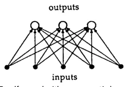 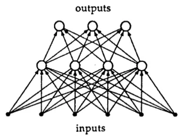 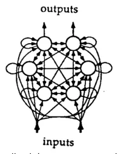 Hình 1. Các cấu trúc tô-pô của mạng nơ-ron. Nguồn: Mainzer (2018, tr. 242). trọng số synap (“tính dẻo synap”) (Churchland và Sejnowski, 1992; Mainzer, 1994, 1997). Về mặt toán học, chúng ta bắt đầu với các mạng kích thước hữu hạn, bao gồm các kết nối của những bộ xử lý tiến hóa đồng bộ. Mỗi bộ xử lý cập nhật trạng thái của nó bằng một hàm sigmoid, được áp dụng lên một tổ hợp tuyến tính của các trạng thái trước đó của tất cả các đơn vị. Độ mạnh của các kết nối synap giữa các nơ-ron được biểu diễn bằng các trọng số số học. Thoạt nhìn, mạng nơ-ron có vẻ hoàn toàn khác với máy móc và ô-tô-mát. Mạng nơ-ron được hiểu là mô hình của bộ não tự nhiên. Máy móc và ô-tô-mát là sản phẩm của công nghệ con người. Nhưng thực tế, ô-tô-mát và máy móc có thể được tạo ra theo một hệ thống phân cấp gồm các nguyên mẫu ít nhiều phức tạp, tương ứng với các mô hình mạng nơ-ron phù hợp có khả năng nhận dạng các loại ngôn ngữ khác nhau. Về mặt toán học, độ phức tạp và năng lực ngày càng tăng của mạng nơ-ron phụ thuộc vào các trọng số số học, trải dài từ số nguyên và số hữu tỷ đến số thực. Đây là một kết quả đáng chú ý, bởi vì “bộ não” và “máy móc” phù hợp tương đương nhau theo một nghĩa toán học chặt chẽ. Một mạng nơ-ron (hồi quy) N được biểu diễn bằng một đồ thị có hướng gồm các nút gọi là nơ-ron. Mỗi nơ-ron cập nhật giá trị kích hoạt của nó bằng cách áp dụng hợp thành của một hàm một biến và một tổ hợp tuyến tính của các mức kích hoạt của tất cả các nơ-ron xj(j = 1, . . . , N), các đầu vào bên ngoài uk(k = 1, . . . , M), và các trọng số synap có hệ số hữu tỷ aij, bij, ci. Một cách hình thức, trạng thái (tế bào) của mỗi bộ xử lý được cập nhật bởi ⎛ ⎞ ⎝ ⎠, xi(t + 1) = σ aijxj(t) + bijuj(t) + ci j=1 j=1 với xi là các trạng thái kích hoạt, uj là các đầu vào ở các thời điểm trước đó, các trọng số synap aij, bij, ci, và hàm sigmoid (ví dụ: tuyến tính bão hòa) 108 Trí tuệ nhân tạo của các hệ thống mô phỏng thần kinh σ: ⎧ ⎪ ⎨ 0, nếu x < 0, x, nếu 0 ≤x ≤1, σ(x) := ⎪ ⎩ 1, nếu x > 1. Một mạng nơ-ron có thể được hiểu như một hệ động lực. Động lực học của chúng được xác định bởi những thay đổi phụ thuộc thời gian trong trạng thái hệ thống của chúng. Tại mỗi thời điểm, trạng thái hệ thống được biểu diễn bằng một vectơ x(t) ∈QN gồm các số hữu tỷ, với tọa độ thứ i biểu thị mức độ kích hoạt của bộ xử lý thứ i. Cho trước một trạng thái ban đầu x(1) và một chuỗi đầu vào vô hạn u = u(1), u(2), . . . , trạng thái động lực học x(t) tại thời điểm t có thể được tính toán cho mỗi số nguyên t ≥1 như là giá trị thu được bằng cách giải đệ quy phương trình cập nhật trạng thái bộ xử lý đã định nghĩa trước đó. Việc một hàm được tính toán bởi mạng nơ-ron (thay vì bởi một cái máy) có nghĩa là gì? Chúng ta xét một hàm Φ: {0, 1}∗→{0, 1}∗ với nửa nhóm {0, 1}∗của các chuỗi nhị phân (Siegelman và Sontag, 1995). Một mạng hình thức phù hợp phải biến đổi các chuỗi đầu vào nhị phân thành các chuỗi đầu ra nhị phân. Một mạng hình thức như vậy được trang bị hai đường đầu vào nhị phân, được gọi là đường dữ liệu và đường xác thực. Đường dữ liệu mang tín hiệu đầu vào nhị phân, D. Đường xác thực chỉ ra khi nào đường dữ liệu hoạt động với V = 1 và khi nào không hoạt động với V = 0. Do đó, đối với mỗi t, đầu vào u(t) được định nghĩa là u(t) = (D(t), V (t)) ∈{0, 1}2. Trạng thái ban đầu x(1) luôn được lấy bằng không và là một trạng thái cân bằng. Đầu ra được biểu diễn bởi hai bộ xử lý đầu ra đóng vai trò đường dữ liệu và đường xác thực, ký hiệu là H và G: y(t) = (H(t), G(t)) ∈{0, 1}2. Nói chung, động lực học (thời gian rời rạc) của các trạng thái hệ thống với hai đầu vào nhị phân được mô tả bởi ánh xạ F: QN × {0, 1}2 →QN. Trạng thái x(t) tại thời điểm t (với mỗi số nguyên t ≥1) được định nghĩa bằng cách đệ quy giải các phương trình x(1) := xinit, x(t + 1) := F(x(t), u(t)) (t = 1, 2, . . .). Một mạng σ-bộ xử lý N với hai đầu vào nhị phân là một hệ động lực với ánh xạ với ma trận A ∈QN×N, các vectơ b1, b2, c ∈QN, và hàm sigmoid σ: QN →QN. Năm 1956, S. C. Kleene đã đưa ra một chứng minh về sự tương đương giữa ô-tô-mát và mạng nơ-ron: Ô-tô-mát hữu hạn có thể được mô phỏng bởi các mạng McCulloch–Pitts nhận dạng các ngôn ngữ chính quy đơn giản (Kleene, 1956). Mạng McCulloch–Pitts dựa trên một hàm kích hoạt nhị phân, signal(x), bằng 0 nếu x ≤0 và bằng 1 nếu ngược lại. Một loại khác là hàm Heaviside, cho giá trị 1 ngay cả với giá trị đầu vào bằng 0. Rõ ràng, mạng McCulloch–Pitts đại diện cho một loại “bộ não” đơn giản. Một mạng hữu hạn gồm các phần tử hai trạng thái tương đương với hoạt động của các ô-tô-mát hữu hạn. Ô-tô-mát hữu hạn cũng là những ví dụ đơn giản về ô-tô-mát, vốn được hiện thực hóa về mặt kỹ thuật, chẳng hạn, bởi các máy bán vé tự động tại các nhà ga đường sắt (Minsky, 1967). Một ô-tô-mát hữu hạn (Q, Σ, f, qo, F) bao gồm một tập hợp hữu hạn Q các trạng thái, một tập hợp hữu hạn Σ các đầu vào, một trạng thái ban đầu qo, các trạng thái chấp nhận F ⊆Q, và một hàm chuyển tiếp f: Q × Σ →Q. Đối với bất kỳ trạng thái q và đầu vào 110 Trí tuệ nhân tạo của các hệ thống mô phỏng thần kinh a nào, trạng thái tiếp theo được ký hiệu là f(q, a). Đối với các trạng thái chấp nhận q ∈F, ta có f(q, a) = q. f ∗là một mở rộng của hàm chuyển tiếp f, ánh xạ một trạng thái và một chuỗi ký hiệu tới trạng thái kết quả: q, nếu ω = ϵ(rỗng), f ∗(q, ω) := f(f ∗(q, ω′), a), nếu ω = ω′a, với một ký hiệu a ∈Σ và các chuỗi ω, ω′ ∈Σ∗. Một chuỗi ω được gọi là được chấp nhận bởi một ô-tô-mát hữu hạn M khi và chỉ khi f ∗(qo, ω) ∈F. Ngôn ngữ L(M) ⊆Σ∗được chấp nhận bởi M là tập hợp tất cả các chuỗi được chấp nhận. Một ngôn ngữ là chính quy khi và chỉ khi nó được chấp nhận bởi một ô-tô-mát hữu hạn nào đó. Mạng lưới trở nên mạnh mẽ hơn nếu các nơ-ron Boolean với trạng thái nhị phân được thay thế bằng các nơ-ron có giá trị tương tự trong khoảng [0, 1]. Khi các trọng số bị giới hạn ở số nguyên, các nơ-ron tương tự bị rút gọn về các kích hoạt nhị phân. Trong trường hợp này, các mạng tương đương về mặt tính toán với mạng McCulloch–Pitts (Siegelmann, 1999, tr. 25f.). Định lý. Các ngôn ngữ được chấp nhận bởi các mạng số nguyên chính xác là các ngôn ngữ chính quy trên bảng chữ cái {0, 1}. Tiếp theo, có thể chứng minh rằng mọi máy Turing đều có thể được mô phỏng bởi các mạng nơ-ron với số hữu tỷ làm trọng số và ngược lại. Cụ thể, Siegelmann và Sontag (1995a) đã chứng minh rằng một mạng gồm 886 bộ xử lý có thể tính toán một hàm đệ quy từng phần phổ quát trong thời gian khả thi. Không cần đến các mạng bậc cao với phép nhân. Các máy Turing không tất định có thể được mô phỏng bởi các mạng không tất định, mà trọng số synap của chúng cũng là các số hữu tỷ hữu hạn. Rõ ràng, những kết quả mô phỏng này có các hệ quả logic và nhận thức luận liên quan đến tính khả quyết và độ phức tạp của việc giải quyết vấn đề. Cuối cùng, chúng ta quan tâm đến tác động của khả năng tính toán số và tính toán thực đối với mạng nơ-ron. Rõ ràng là một mạng bộ xử lý với trạng thái ban đầu hữu tỷ có thể được mô phỏng bởi một máy Turing. Về mặt trực giác, kết quả lý thuyết này tương ứng với thực tiễn tính toán rằng các mạng nhân tạo được mô phỏng bởi các máy tính (von Neumann). Chiều ngược lại tham vọng hơn nhiều: Bất kỳ hàm nào tính được bởi một máy Turing đều có thể được tính bởi một mạng bộ xử lý với các trọng số hữu tỷ. Nếu chúng ta hiểu các mạng như là mô hình của bộ não tự nhiên, thì kết quả này xác định loại bộ não (tối thiểu) cần thiết để thực hiện các phép tính Turing. Sau này, các khả năng của công nghệ tương lai sẽ được thảo luận nhằm xây dựng các kiến trúc mô phỏng thần kinh của máy tính tương ứng với bộ não sống. Sự tương đương của Máy Tiên tri Turing và Mạng nơ-ron với Trọng số Thực Mạng nhân tạo với trọng số hữu tỷ là các mô hình của khả năng tính toán Turing. Mạng sinh học với các cảm biến và synap được đặc trưng bởi tỷ lệ phân bậc (graded scaling). Do đó, mạng nơ-ron với trọng số thực đã thu hút nhiều sự chú ý như là các mô hình của tính toán tương tự. Trong kỹ thuật và khoa học tự nhiên, số thực tương ứng với các giá trị của điện trở, điện dung, hằng số vật lý, v.v. Số thực có thể không đo đạc trực tiếp được, và chúng không phải lúc nào cũng tính toán được. Nhưng chúng ảnh hưởng đến hành vi của một hệ động lực. Trên một khoảng thời gian hữu hạn, các hằng số có thể được thay thế bằng các số hữu tỷ tạo ra cùng một hành vi định tính. Nhưng hành vi dài hạn của hệ thống lại phụ thuộc vào các giá trị thực của các hằng số. Một minh họa nổi tiếng khác là hiệu ứng cánh bướm: sự phụ thuộc nhạy cảm của động lực học hỗn loạn vào những thay đổi cực nhỏ trong các giá trị ban đầu. Tác động của tính toán thực đối với các mạng tương tự là gì? Một mạng nơ-ron (hồi quy) thực N được biểu diễn bởi một đồ thị có hướng gồm các nút gọi là nơ-ron, tương tự như mạng nơ-ron (hồi quy) hữu tỷ 112 Trí tuệ nhân tạo của các hệ thống mô phỏng thần kinh nhưng với trọng số thực thay vì trọng số hữu tỷ. Trạng thái (tế bào) của mỗi bộ xử lý được cập nhật bởi một phương trình tương ứng dưới dạng vectơ. Để đơn giản về mặt ký hiệu, “x(t + 1)” được thay thế bằng “x+(t)” và lược bỏ đối số t: x+ = σ(Ax + Bu + c), với vectơ x có kích thước N (số lượng bộ xử lý), vectơ u có kích thước M (số lượng đầu vào), vectơ N chiều c, các ma trận thực A, B có kích thước lần lượt là N × N và M × M, và hàm sigmoid σ. Một tập con xi1, . . . , xp gồm p bộ xử lý trong số N bộ xử lý đóng vai trò là các bộ xử lý đầu ra được sử dụng để giao tiếp với môi trường của mạng. Nói ngắn gọn, một mạng được đặc trưng bởi dữ liệu thực (A, B, c) cùng với một tập con các nút của nó. Các mạng này có thể được biểu diễn dưới dạng các hệ động lực có trạng thái tại mỗi thời điểm giờ đây là một vectơ thực x(t) ∈RN. Tọa độ thứ i của vectơ này biểu thị mức kích hoạt của bộ xử lý thứ i tại thời điểm t. Trạng thái x(t) tại thời điểm t có thể thu được, với mỗi giá trị t ≥1, bằng cách giải đệ quy phương trình cập nhật cho trạng thái ban đầu x(1) và một chuỗi đầu vào vô hạn u = u(1), u(2), . . .. Đầu ra được tạo bởi đầu vào u cho trạng thái ban đầu x(1) đề cập đến chuỗi các giá trị đầu ra trong các bộ xử lý đầu ra. Một năng lực thiết yếu của bộ não và mạng lưới là nhận dạng và tính toán các ngôn ngữ. Mạng McCulloch–Pitts rất đơn giản với các trọng số hữu hạn cố định. Chúng tương đương với ô-tô-mát hữu hạn và chỉ có thể nhận dạng các ngôn ngữ chính quy. Chúng ta có thể xem xét một hệ thống phân cấp gồm các mạng và ô-tô-mát với năng lực tăng dần lên đến máy Turing, vốn tương đương với các mạng có trọng số hữu tỷ. Chúng có thể nhận dạng các ngôn ngữ đệ quy thuộc loại Chomsky. Mạng nơ-ron thực thậm chí có thể nhận dạng trong thời gian đa thức cùng một lớp ngôn ngữ như các máy Turing tham vấn một tiên tri (thưa) trong thời gian đa thức. Chúng có thể nhận dạng mọi ngôn ngữ, bao gồm cả những ngôn ngữ không tính toán được, trong thời gian hàm mũ. Đây là một hiểu biết sâu sắc về mặt nhận thức luận, và chúng ta sẽ quay lại các khía cạnh triết học của nó ở phần sau. Làm thế nào chúng ta có thể định nghĩa một cách hình thức rằng một mạng nhận dạng một ngôn ngữ? Để đơn giản, một ngôn ngữ được hiểu là một tập hợp L ⊆{0, 1} các từ (chuỗi bit), có thể được hiểu là mã số cho bất kỳ loại thông tin nào. Trước khi định nghĩa thế nào là một mạng nhận dạng một ngôn ngữ L, trước tiên chúng ta phải định nghĩa một mạng hình thức có khả năng mã hóa đầu vào và đầu ra của nó. Một lần nữa, chúng ta định nghĩa các mạng hình thức với hai đường đầu vào nhị phân cho dữ liệu và xác thực tại mỗi thời điểm t: u(t) = (D(t), V (t)) ∈{0, 1}2. Trạng thái ban đầu x(1) được lấy bằng không và là một trạng thái cân bằng: σ(A0 + B0 + c) = σ(c) = 0. Hai bộ xử lý đầu ra Od(t), Ov(t) cũng được lấy làm đường dữ liệu và đường xác thực tương ứng. Đối với mỗi từ ω = ω1 · · · ωk ∈{0, 1}∗, đầu vào được mã hóa bởi uω(t) = (Vω(t), Dω(t)) (t = 1, . . . , ), 1, nếu t = 1, . . . , k, với Vω(t) = 0, nếu ngược lại ωk, nếu t = 1, . . . , k, và Dω(t) = 0, nếu ngược lại. Trong một mạng hình thức N với hai đầu vào, một từ ω được phân loại trong thời gian τ khi và chỉ khi chuỗi đầu ra y(t) = (Od(t), Ov(t)) được tạo ra bởi đầu vào uω khi bắt đầu từ x(1) = 0 có dạng ηω000 · · ·, Ov = 0 · · · 0 1000 · · ·, τ−1 τ−1 với ηω = 0 hoặc 1. Một ngôn ngữ L ⊆{0, 1}∗được nhận dạng trong thời gian T bởi mạng N với điều kiện là mỗi từ ω ∈{0, 1}∗được phân loại trong thời gian τ ≤T(|ω|) xem ω ∈L hay không, trong đó T:N →N là một hàm trên các số tự nhiên. Để mô phỏng mạng nơ-ron bằng máy móc, các mạch được xem xét để mô hình hóa về mặt logic các phần tử chuyển mạch của máy tính kỹ thuật. Các họ mạch không đồng nhất là các tập hợp mạch không 114 Trí tuệ nhân tạo của các hệ thống mô phỏng thần kinh nhất thiết phải được mô tả một cách đệ quy. Do đó, chúng có thể vượt qua khả năng tính toán cổ điển. Một mạch Boolean là một đồ thị có hướng không chu trình với các nút đầu vào có bậc vào bằng 0 và các nút cổng được gán nhãn bởi một trong các hàm Boolean AND, OR, hoặc NOT. Một trong các nút, vốn không có cạnh đi ra, được gọi là nút đầu ra. Các nút được sắp xếp thành các tầng 0, 1, . . . , d, trong đó các nút đầu vào ở tầng 0, tầng đầu ra là tầng d, và mỗi nút chỉ có các cạnh đi vào từ tầng ngay trước đó. Một nút cổng tính toán hàm Boolean tương ứng của các giá trị từ tầng trước, và giá trị thu được được coi là đầu vào để tầng kế tiếp sử dụng. Bằng cách này, mỗi mạch tính toán một hàm Boolean của các đầu vào của nó: • Kích thước của mạch là tổng số cổng. • Độ sâu của mạch là d. • Độ rộng của mạch là kích thước tối đa của mỗi tầng. Một họ C = {cn|n ∈N} các mạch là một tập hợp các mạch cn với kích thước SC(n), độ sâu DC(n), và độ rộng WC(n) đối với n = 1, 2, . . . là các hàm đơn điệu không giảm. Một ngôn ngữ L ⊆{0, 1}∗được gọi là được tính bởi một họ C = {cn|n ∈N} các mạch khi và chỉ khi hàm đặc trưng của L ∩{0, 1}n được tính bởi cn với mỗi n ∈N. Nếu ngôn ngữ L được nhận dạng bởi mạng hình thức N trong thời gian T, ta viết ΦN = L và TN = T. Nếu ngôn ngữ L được tính bởi họ C các mạch, ta viết ΦC = L. Có thể chứng minh rằng các họ mạch có thể được mô phỏng bởi các mạng và ngược lại xét về khả năng nhận dạng ngôn ngữ trong thời gian đa thức. Do đó, sau đây, các hàm TN và ΦC đối với mạng hình thức và mạch được so sánh sao cho ΦN = ΦC (Siegelmann và Sontag, 1994). Định lý. Gọi NET(T(n)) là lớp các ngôn ngữ được nhận dạng bởi các mạng hình thức có trọng số thực trong thời gian T(n) và CIRCUIT(S(n)) là lớp các ngôn ngữ được nhận dạng bởi các họ mạch (không đồng nhất) có kích thước S(n). Với bất kỳ hàm F nào thỏa F(n) ≥n, ta suy ra: (1) CIRCUIT(F(n)) ⊆NET(nF 2(n)), (2) NET(F(n)) ⊆CIRCUIT(F 3(n)). Để chứng minh (1), các họ mạch được mô phỏng bởi các mạng. Do đó, một mạng phổ quát cố định với khoảng N = 1000 bộ xử lý được xây dựng. Nó có thể mô phỏng toàn bộ một họ mạch, vốn được mã hóa bởi một trọng số thực cụ thể của mạng. Định lý. Mô phỏng các họ mạch bằng mạng. Tồn tại một số nguyên dương N sao cho tính chất sau đây đúng: Với mỗi họ mạch C có kích thước SC(n), tồn tại một mạng hình thức N-bộ xử lý N = N(C) sao cho ΦN = ΦC và TN (n) = O(nS2 C(n)). Giả sử C là một họ mạch có kích thước SC(n). Mạng cần thiết N = N(C) được xây dựng từ ba mạng: • Một mạng đầu vào NI nhận đầu vào u1 = ω00 · · · , u2 = 11 · · · 1 00 · · · , |ω| và tính toán các số mã của u1 (với từ ω) và u2 cho mỗi ω ∈{0, 1}∗. • Một mạng truy xuất NR(c) nhận số mã của u2 từ mạng đầu vào NI và tính toán số mã của mạch c|ω|. • Một mạng mô phỏng NS(c) nhận số mã của mạch c|ω| và từ ω rồi tính toán x0 = 00 · · · 0 ΦC(ω)00 · · · , 00 · · · 0 100 · · · . 116 Trí tuệ nhân tạo của các hệ thống mô phỏng thần kinh Một mạch c có kích thước s, độ rộng w, và wi cổng ở tầng thứ i được mã hóa thành một chuỗi hữu hạn trên bảng chữ cái {0, 2, 4, 6} theo các bước sau: (i) Việc mã hóa ở mỗi tầng i bắt đầu bằng chữ số 6. Các tầng được mã hóa liên tiếp, bắt đầu từ tầng đáy và kết thúc ở tầng đỉnh. (ii) Ở mỗi tầng, các cổng được mã hóa liên tiếp. Mã hóa của cổng g bao gồm một ký hiệu bắt đầu, một mã hai chữ số cho loại cổng, và một mã chỉ ra cổng nào cấp đầu vào cho nó: • Nó bắt đầu bằng chữ số 0. • Một chuỗi hai chữ số {42, 44, 22} biểu thị loại cổng {AND, OR, NOT}. • Nếu cổng g nằm ở tầng i, thì đầu vào của g được biểu diễn như một chuỗi trong {2, 4}wi−1, sao cho vị trí thứ j trong chuỗi là 4 khi và chỉ khi cổng thứ j của tầng thứ (i −1) cấp đầu vào cho cổng g. Ví dụ: en[c1] = 6 0 42 AND 444 I1,I2,I3 cấp vào g1 0 44 424 I1,I3 cấp vào g2 0 22 NOT 242 I2 cấp vào g3 6 0 44 444 AND,OR,NOT cấp vào g4 . Một họ mạch không đồng nhất C có kích thước S(n) được mã hóa thành một chuỗi vô hạn: e(C) = 8 en[c1]8 en[c2]8 en[c3] · · · , với en[ci], mã hóa của ci, theo thứ tự đảo ngược. Xét một chuỗi hữu hạn hoặc vô hạn r = r1r2 · · · gồm các số tự nhiên nhỏ hơn một số tự nhiên b. Cách diễn giải chuỗi r trong cơ số b là số ∞ ri bi . r|b := i=1 Phép mã hóa là một-một đối với các chuỗi được sử dụng trong chứng minh. Mã trước đó của họ mạch C có thể được diễn giải trong cơ số b = 9 là ˆC := 8 en[c1]8 en[c2]8 en[c3] · · · |9. Mã hóa en[ci] của mạch thứ i trong họ C được diễn giải trong cơ số 9 được ký hiệu là en[ci]. Một số mã hóa một họ mạch là một số trong đoạn [0, 1], nhưng không phải mọi số trong [0, 1] đều có thể là một số mã thuộc loại này. Nếu chữ số đầu tiên bên phải dấu thập phân là 0, thì giá trị của mã hóa nằm trong [0, 1 9]; nếu là 2, giá trị nằm trong [2 9, 3 9]; v.v. Nói chung, số đó không thể nằm trong bất kỳ khoảng nào có dạng [(2i −1)/9, 2i/9] với i = 1, 2, 3, 4. Tập hợp các giá trị khả dĩ là một tập Cantor không liên tục và chứa các lỗ hổng. Tập Cantor có tính tự đồng dạng với các phép dịch bit (trong cơ số 9) bảo toàn các lỗ hổng, như được minh họa trong Hình 2. Cấu trúc của tập Cantor phân biệt rõ ràng các số tách biệt nhau mã hóa cho mạch mong muốn. Mạch có thể được truy xuất thông qua các phép toán có độ chính xác hữu hạn và một số lượng nơ-ron hữu hạn. Bây giờ, mạng truy xuất NR(c) và mạng mô phỏng NS(c) có thể được xây dựng. Đối với một chuỗi nhị phân ω ∈{0, 1}n, mã hóa en[ω] biểu thị chuỗi từ {2, 4}n thay thế (2ωi + 2) cho mỗi ωi. Cách diễn giải mã hóa en[ω] trong cơ số 9 được ký hiệu là en[ω] = en[ω]|9. 118 Trí tuệ nhân tạo của các hệ thống mô phỏng thần kinh 0 1/9 2/9 3/9 4/9 5/9 6/9 7/9 8/9 1 Hình 2. Mã hóa mạch dưới dạng một tập Cantor. Nguồn: Mainzer (2018, tr. 257). Tồn tại một mạng NS sao cho với mỗi mạch c và chuỗi nhị phân ω, khi bắt đầu từ trạng thái ban đầu và áp dụng tín hiệu đầu vào u1 = en[c]00 · · · , u2 = en[ω]00 · · · , mạng mô phỏng NS(c) xuất ra xd = 00 · · · 0 y00 · · · , xv = 00 · · · 0 100 · · · , trong đó y là phản hồi của mạch c trên đầu vào ω, với T = O(l(c) + |α|. Mạng mô phỏng NS(c) của họ mạch c được xây dựng theo hai bước: (i) Bất kỳ mạch nào cũng có thể được mô phỏng bởi một máy Turing ba băng trong thời gian O(l(c) + |ω|). Ba băng được dùng để lưu trữ mã hóa mạch, mã hóa đầu vào và đầu ra, và tính toán tầng hiện tại. (ii) Máy Turing ba băng có thể được mô phỏng bởi một mạng. Nói chung, nếu M là một máy Turing k băng với s trạng thái tính toán trong thời gian T một hàm f trên các chuỗi đầu vào nhị phân, thì tồn tại một mạng hữu tỷ N. Mạng này gồm 9ks+ s + 28k + 2 bộ xử lý tính toán cùng hàm f đó trong thời gian O(T). Với việc xây dựng mạng truy xuất NR(c) và mạng mô phỏng NS(c), chứng minh của Định lý (1) hoàn tất. Trong số ba mạng dùng cho đầu vào, truy xuất và mô phỏng, chỉ có mạng truy xuất NR phụ thuộc vào họ mạch C cụ thể. Tất cả các trọng số đều có thể được lấy là số hữu tỷ, ngoại trừ trọng số mã hóa toàn bộ họ mạch. Độ phức tạp thời gian T để tính toán phản hồi của C đối với đầu vào ω được xác định bởi mô tả của các mạch cần thiết. Một cách hình thức, độ phức tạp có bậc là ⎛ ⎞ |ω| ⎝ ⎠. l(ci) i=1 Độ dài của mã hóa l(ci) có bậc O(WC(i)SC(i)) = O(S2 C(i)). Rõ ràng, SC(i) ≤SC(i + 1) với i = 1, 2, . . .. Do đó, ta thu được cận đa thức đã khẳng định T = O(|ω|S2 C(|ω|)). Phép mô phỏng ngược lại các mạng bằng các họ mạch không đồng nhất được phát biểu trong Định lý (2) (Siegelmann và Sontag, 1994). Định lý. Mô phỏng mạng bằng các họ mạch. Giả sử N là một mạng hình thức tính toán trong thời gian T: N →N. Tồn tại một họ mạch không đồng nhất C(N) có kích thước O(T 3), độ sâu O(Tlog(T)), và độ rộng O(T 2) chấp nhận cùng ngôn ngữ như N. Định lý (2) được chứng minh qua hai phần: (2.1) Mạng hình thức N được thay thế bởi một họ các mạng hình thức có các trọng số hữu tỷ nhỏ hơn. (2.2) Họ các mạng hình thức được mô phỏng bởi một họ các mạch. Đối với các chứng minh này, cần có một số định nghĩa. • Một bộ xử lý được gọi là bộ xử lý đầu ra được chỉ định khi và chỉ khi giá trị kích hoạt của nó được dùng làm đầu ra của mạng và không được đưa vào bất kỳ bộ xử lý nào khác. 120 Trí tuệ nhân tạo của các hệ thống mô phỏng thần kinh • Một mạng hình thức có hai bộ xử lý đầu ra được chỉ định được gọi là một mạng chỉ định đầu ra. • Các bộ xử lý của nó mà không phải là bộ xử lý đầu ra được chỉ định được gọi là các bộ xử lý nội bộ. Việc mô phỏng mạng bằng mạch Boolean và ngược lại cũng có thể được chứng minh cho các mạch ngưỡng. Trong trường hợp này, các hàm Boolean AND, OR, hoặc NOT được tính bởi mỗi nút được thay thế bằng một hàm ngưỡng tuyến tính. Mỗi cổng i tính toán fi: Bni →B với các giá trị Boolean B = {0, 1}. Việc cập nhật kích hoạt của hàm ngưỡng (tuyến tính) được định nghĩa bởi ⎛ ⎞ ni ⎝ ⎠, xi(t + 1) = fi(xi1, xi2, . . . , xin) := H aijxij(t) + ci j=1 với các mức kích hoạt xij của các bộ xử lý cấp đầu vào cho nó, các hằng số nguyên aij và ci gắn với cổng, và hàm ngưỡng 1, nếu z ≥0, 0, nếu z < 0. Mạch ngưỡng và mạch Boolean được biết là tương đương đa thức về kích thước. NET(T(n)) đã được định nghĩa là lớp tất cả các ngôn ngữ được nhận dạng bởi các mạng hình thức có trọng số thực trong thời gian T(n). Tương tự, các ngôn ngữ được nhận dạng bởi mạch ngưỡng có thể được định nghĩa là của mạch ngưỡng có kích thước S(n). Việc mô phỏng mạng bằng mạch và ngược lại không chỉ có thể chứng minh cho mạch Boolean mà còn cho cả mạch ngưỡng. Với bất kỳ hàm F nào với F(n), ta suy ra: (1) T-CIRCUIT(F(n)) ⊆NET(nF 3(n) log F(n))), (2) NET(F(n)) ⊆T-CIRCUIT(F 2(n)). Hệ quả (1) được chứng minh tương tự như trường hợp mạch Boolean: Mỗi cổng ngưỡng được mã hóa theo cách giống tập Cantor, bao gồm cả mô tả về các trọng số. Phép mô phỏng ngược lại các mạng bằng họ mạch ngưỡng không đồng nhất đã được chứng minh bởi Siegelmann và Sontag (1994, tr. 351f.). Mạng nơ-ron (bộ não) và mạch kỹ thuật có thể được so sánh về năng lực nhận thức của chúng. Một năng lực nhận thức quan trọng mà trong quá khứ vốn chỉ dành riêng cho bộ não con người nay cũng có thể được hiện thực hóa bởi ô-tô-mát, máy móc và các mạch kỹ thuật của chúng. Chúng ta có thể phân biệt các mức độ năng lực ngôn ngữ ít nhiều khác nhau dọc theo hệ thống phân cấp của độ phức tạp tính toán. • NET-P := Lớp các ngôn ngữ được chấp nhận bởi mạng hình thức trong thời gian đa thức, • NET-EXP := Lớp các ngôn ngữ được chấp nhận bởi mạng hình thức trong thời gian hàm mũ, • CIRCUIT-P := Lớp các ngôn ngữ được chấp nhận bởi các họ mạch có kích thước đa thức, • CIRCUIT-EXP := Lớp các ngôn ngữ được chấp nhận bởi các họ mạch có kích thước hàm mũ. CIRCUIT-P (đôi khi còn gọi là P/poly) trùng với lớp các ngôn ngữ được nhận dạng trong thời gian đa thức bởi các máy Turing tiên tri. Các tiên tri là những tập thưa S trong đó, với độ dài n, số lượng từ trong S có độ dài tối đa n bị chặn bởi một hàm đa thức nào đó. Với một tập thưa S cho trước, lớp P(S) chứa tất cả các ngôn ngữ được tính bởi máy Turing sử dụng S làm tiên tri trong thời gian đa thức. Định lý. Chấp nhận ngôn ngữ bởi mạng, mạch và máy tiên tri (tất định) (i) NET-P = CIRCUIT-P (ii) NET-EXP := CIRCUIT-EXP (iii) NET-P = ∪S thưaP(S) (iv) NET-EXP bao gồm mọi ngôn ngữ nhị phân khả dĩ. Hầu hết các hàm Boolean đều đòi hỏi độ phức tạp thời gian hàm mũ. 122 Trí tuệ nhân tạo của các hệ thống mô phỏng thần kinh • Một họ mạch không tất định được định nghĩa là một họ mạch có thêm một đầu vào bổ sung được dùng làm tiên tri. • Một mạng không tất định được định nghĩa là một mạng có thêm một đầu vào bổ sung được dùng làm tiên tri. • Một ngôn ngữ L được gọi là được chấp nhận bởi một mạng hình thức không tất định N trong thời gian B khi và chỉ khi L = {α|∃đoán γ(ΦC = 1 ∧TN(α, γ) ≤ B(|α|)}. • NET-NP := Lớp các ngôn ngữ được chấp nhận bởi mạng hình thức không tất định trong thời gian đa thức. • CIRCUIT-NP := Lớp các ngôn ngữ được chấp nhận bởi các họ mạch không tất định có kích thước đa thức. NET-NP = CIRCUIT-NP. Một lý thuyết tính toán tương tự như tính toán của máy Turing cũng khả thi đối với tính toán tương tự của các mạng có trọng số thực. Trong lý thuyết cổ điển về tính toán Turing, có những lý do chính đáng giải thích tại sao NP mạnh hơn hẳn P. Cũng có khả năng cao rằng NET-NP mạnh hơn hẳn NET-P. Hãy xem xét các lập luận sau: Vì một máy Turing không tất định có thể được mô phỏng bởi một mạng không tất định có trọng số hữu tỷ, ta thu được NP ⊆NET-NP. Bây giờ, giả sử NET-NP = NET-P. Khi đó, ta có ⇒NP ⊆P/poly. Do đó, NET-NP = NET-P sẽ kéo theo sự sụp đổ của hệ thống phân cấp tính toán. Một lớp lớn các mạng và hệ động lực không có sức mạnh tính toán lớn hơn các mạng nơ-ron tương tự (hồi quy) đang xét với trọng số thực. Những hiểu biết này dẫn đến một luận đề Church mở rộng cho tính toán tương tự. Bất kỳ máy tính tương tự hợp lý nào cũng sẽ không có sức mạnh lớn hơn (tối đa trong thời gian đa thức) so với các mạng hồi quy (bậc nhất). Các hệ động lực có sức mạnh của mạng nơ-ron để nhận dạng ngôn ngữ là các mạng bộ xử lý tổng quát. Một mạng bộ xử lý tổng quát là một hệ động lực D bao gồm N bộ xử lý x1, x2, . . . , xN, và nhận đầu vào u1(t), u2(t), . . . , uM(t) qua M đường đầu vào. Một tập con của N bộ xử lý xi1, xi2, . . . , xip là tập các bộ xử lý đầu ra của hệ thống được dùng để truyền đạt đầu ra của hệ thống ra môi trường của nó. Một mạng bộ xử lý tổng quát D cập nhật các bộ xử lý của nó theo phương trình động lực x+ = f(x, u), với vectơ x là trạng thái hiện tại của mạng, vectơ u là đầu vào bên ngoài, và hàm f = ψ ◦π là hợp thành của đa thức vectơ π: RN+M →RN theo N + M biến với hệ số thực và hàm vectơ ψ: RN →RN có miền giá trị bị chặn và thỏa mãn điều kiện Lipschitz địa phương. Các mạng bộ xử lý tổng quát D có thể được sắp xếp để xuất ra thông tin nhị phân. Do đó, hai hằng số α, β với α < β được đưa vào làm các ngưỡng quyết định sao cho mỗi nơ-ron đầu ra của D xuất ra một dòng các số, mỗi số đều nhỏ hơn 124 Trí tuệ nhân tạo của các hệ thống mô phỏng thần kinh α hoặc lớn hơn β. Đầu ra của mỗi nơ-ron đầu ra y có thể được diễn giải thành một giá trị nhị phân: 0, nếu y ≤α, nhị phân (y) = 1, nếu y ≥β. Ngay cả khi các giá trị tương tự tổng quát hơn được cho phép, không có sự gia tăng nào về sức mạnh tính toán đạt được (ít nhất là tới thời gian đa thức). Một mạng bộ xử lý tổng quát D tính toán trong thời gian T: N →N khi và chỉ khi với mọi đầu vào có kích thước n ∈N, D hoàn thành đầu ra của nó trong không quá T(n) bước. Một mạng nơ-ron là một trường hợp đặc biệt của mạng bộ xử lý tổng quát trong đó tất cả các tọa độ của hàm ψ tính cùng một hàm tuyến tính từng khúc σ, và đa thức π là một đa thức bậc nhất (hoặc một hàm afin). Một hàm vectơ f = ψ ◦π được gọi là xấp xỉ được trong thời gian Af(n) khi và chỉ khi tồn tại một máy Turing M tính toán phép cắt cụt T(n) (f) trong thời gian Af(n) trên mỗi đầu vào có tổng kích thước bit là n. Định lý. Mô phỏng mạng bộ xử lý tổng quát bằng mạng nơ-ron. Giả sử D là một mạng bộ xử lý tổng quát tính toán với hàm f = ψ ◦π. Hàm ψ được giả định là có thể xấp xỉ F(n) một cách không đồng nhất trong thời gian đa thức. Khi đó, tồn tại một mạng nơ-ron ND nhận dạng cùng ngôn ngữ với D (và thực hiện điều đó với độ chậm lại tối đa là thời gian đa thức). Nếu ψ có thể xấp xỉ F(n) trong thời gian đa thức và π chỉ chứa các hệ số hữu tỷ, thì các trọng số của ND cũng là các số hữu tỷ. Các hệ động lực tương tự có thể có sức mạnh tính toán vượt ra ngoài khả năng tính toán Turing. Siegelmann (1995b) đã giới thiệu ánh xạ dịch chuyển tương tự (analog shift map), vốn tính toán chính xác như các mạng nơ-ron và các máy tương tự vượt qua một máy Turing. Các máy tương tự với các hằng số thực của chúng cũng được giả định là mô hình hóa các hiện tượng vật lý của tự nhiên. Một ánh xạ dịch chuyển được định nghĩa trên một tập các chuỗi có dấu chấm vô hạn hai phía. Gọi E là một bảng chữ cái hữu hạn. Một chuỗi có dấu chấm trên E được ký hiệu là ˙E. Đó là một chuỗi các chữ cái với đúng một dấu chấm (.) và phần còn lại đều thuộc E. Các chuỗi có dấu chấm có thể hữu hạn, vô hạn một phía, hoặc vô hạn cả hai phía trên E. Với số nguyên k ∈N, ánh xạ dịch chuyển dịch chuyển dấu chấm đi k vị trí, trong đó các giá trị âm gây ra dịch chuyển sang trái và các giá trị dương gây ra dịch chuyển sang phải. Phép dịch chuyển tương tự được định nghĩa theo quy trình sau: Một chuỗi con có dấu chấm được thay thế bằng một chuỗi con có dấu chấm khác (có cùng độ dài) theo một hàm G. Sau đó, chuỗi mới này được dịch chuyển một số nguyên vị trí sang trái hoặc sang phải theo một hàm F. với hàm G: ˙E →˙E mô tả sự biến đổi của chuỗi và hàm F: ˙E →Z chỉ ra lượng dịch chuyển của dấu chấm. Cả F và G đều có miền phụ thuộc (DoD) hữu hạn. Do đó, F và G chỉ phụ thuộc vào một chuỗi con có dấu chấm hữu hạn của chuỗi mà chúng tác động lên. Miền tác động (DoE) của G có thể hữu hạn, vô hạn, hoặc vô hạn hai phía. Phép toán ⊕được định nghĩa bởi gi, nếu gi ∈E, (a ⊕b)i = ai, nếu gi = ϵ, với phần tử rỗng ϵ không nằm trong E. 126 Trí tuệ nhân tạo của các hệ thống mô phỏng thần kinh Giả sử một phép dịch chuyển tương tự được định nghĩa bởi bảng sau: 0.0 1 π 0.1 1 0.10 1.0 0 1.0 1.1 1 0.0 π biểu thị chuỗi vô hạn bên trái . . . 51413 của π trong cơ số 2 thay vì cơ số 10. Bảng này là mô tả của hệ động lực trong đó bước tiếp theo phụ thuộc vào chữ số đầu tiên bên phải dấu chấm và chữ số bên trái nó. Nếu các chữ số này (DoD) là 0.0, thì theo hàng đầu tiên của bảng, phía bên trái dấu chấm được thay bằng π và dấu chấm dịch chuyển một vị trí sang phải. Nếu DoD là 0.1. (như ở hàng thứ hai của bảng), chữ số thứ hai bên phải dấu chấm trở thành 0, và có một phép dịch chuyển sang phải, v.v. 000001.10110. Trong trường hợp này, DoD là 1.1. Theo hàng thứ tư của bảng, chữ số bên phải dấu chấm trở thành 0, và dấu chấm được dịch chuyển sang phải: 1.1: (000001.00110) 0000010.0110. Trong trường hợp này, DoD là 0.0: 0.0: (π .0110) π 0.100, 0.1: (π 0.100) π 01.00, 1.0: (π 1.00) π 01.00. Trong trường hợp này, DoD là 1.0 mà không có bất kỳ thay đổi nào. Do đó, chúng ta thu được một điểm bất động. Phép tính với hệ dịch chuyển tương tự là sự tiến hóa của chuỗi có dấu chấm ban đầu cho đến khi đạt được một điểm bất động, mà từ đó hệ thống không tiến hóa nữa. Trong ví dụ của chúng ta, một điểm bất động đạt được sau bốn bước, từ 000001.10110 thành 00. Nói chung, nếu phép tính kết thúc, ánh xạ đầu vào–đầu ra được định nghĩa là phép biến đổi từ chuỗi có dấu chấm ban đầu sang chuỗi con cuối cùng ở bên phải dấu chấm. Ngay cả dưới các ràng buộc đối với những hệ thống bắt đầu bằng các chuỗi có dấu chấm hữu hạn và dừng lại với các chuỗi có dấu chấm hữu hạn hoặc vô hạn bên trái, phép dịch chuyển tương tự vẫn tính toán các ánh xạ phong phú hơn máy Turing. Tính toán tương tự với các ánh xạ dịch chuyển tương tự, theo một nghĩa toán học chặt chẽ, tương đương với khả năng tính toán bằng các mạng nơ-ron phù hợp: AS(k) := lớp các hàm được tính bởi ánh xạ dịch chuyển tương tự (AS) trong thời gian k, NN(k) := lớp các hàm được tính bởi mạng nơ-ron nhân tạo (ARNN) trong thời gian k, Poly(k) := lớp các đa thức theo k. Định lý. Sự tương đương giữa phép dịch chuyển tương tự và mạng nơ-ron. (1) AS(F(n)) ⊆NN(Poly(F(n)), (2) NN(F(n)) ⊆AS(Poly(F(n))). Các lập luận cốt lõi để chứng minh định lý có thể được minh họa cho bảng chữ cái nhị phân E = {0, 1}. Chứng minh (1). Chứng minh của (1) bắt đầu với một chuỗi có dấu chấm, a = · · · a−3a−2a−1.a1a2a3 . . . , được ánh xạ thành hai chuỗi tương ứng với phía bên trái và bên phải: al = a−1a−2a−3 . . . , ar = a1a2a3 . . . . Ánh xạ dịch chuyển tương tự được định nghĩa lại để áp dụng cho al và ar là Φ(al, ar) = (al ⊕Gl(dl, dr), ar ⊕Gr(dl, dr)) với phần bên trái dl và phần bên phải dr của DoD. Bây giờ, một mạng nơ-ron ARNN có thể được định nghĩa để thực hiện phép tính trong thời gian đa thức: Các giá trị của al cũng như ar được mã hóa 128 Trí tuệ nhân tạo của các hệ thống mô phỏng thần kinh trong một nơ-ron bằng cách sử dụng biểu diễn tập Cantor, vốn đã được giới thiệu trong chương này. Phép toán tiếp theo chỉ phụ thuộc vào vài bit đầu tiên của cả hai nơ-ron (DoD). Nếu G hữu hạn, phép toán liên quan đến việc thay thế hữu hạn các bit đầu tiên. Nếu G vô hạn, G liên quan đến việc nạp cho nơ-ron một giá trị mới. Các phép toán này cần thời gian hằng số cho một mô phỏng hiệu quả. Chứng minh (2). Đối với chứng minh của (2), một máy Turing cần được mô phỏng bởi một phép dịch chuyển tương tự. Cấu hình của nó được mã hóa trong một chuỗi có dấu chấm: · c4 mã của c1 mã của rác c2 mã của dấu−kết−thúc−trái c3 mã của băng−trái c5 mã của băng−phải c6 mã của phần trống , trạng thái với c1: chuỗi vô hạn trên E, c2: dấu kết thúc bên trái 01, c3: phần của băng ở bên trái đầu đọc-ghi với 10 biểu diễn 0 và 11 biểu diễn 1, c4: trạng thái bên trong của máy Turing được mã hóa thành một chuỗi các số 0 kết thúc bằng 1, c5: chữ cái dưới đầu đọc và phần bên phải của băng, c6: chuỗi vô hạn 0 gồm các số 0. 0 .q1x 0, với chuỗi đầu vào hữu hạn x. Hàm G thay thế phía bên trái dấu chấm bằng chuỗi vô hạn w =< . . . , w3, w2, w1 > . mã của rác 01wn.p1x 0 . Các bước tiếp theo của máy Turing được mô phỏng một cách trực tiếp. Sức mạnh tính toán của mạng nơ-ron phụ thuộc vào loại số được dùng làm trọng số synap. Sức mạnh của mạng dường như tăng lên theo lượng thông tin và độ phức tạp chứa trong các số trọng số. Sau đây, một thước đo thông tin được đưa ra để xác định độ phức tạp của các con số. Tiếp theo, người ta chứng minh rằng sức mạnh của các mạng có trọng số thực trùng với sức mạnh của các máy Turing tiên tri có các tiên tri liên quan đến những trọng số đó. Cuối cùng, một hệ thống phân cấp chuẩn xác gồm các lớp độ phức tạp của mạng nơ-ron có thể được định nghĩa với các tiên tri liên quan của máy Turing. Một thước đo thông tin chứa trong một đối tượng riêng lẻ là độ phức tạp Kolmogorov. Ý tưởng trực giác là các đối tượng có rất ít thông tin sẽ chỉ cần một mô tả ngắn gọn. Các đối tượng phức tạp hơn đòi hỏi những mô tả dài hơn. Do đó, trong lý thuyết thông tin, độ phức tạp phụ thuộc vào ngôn ngữ mô tả. Độ phức tạp Kolmogorov liên quan đến mô tả của một đối tượng như là chương trình ngắn nhất cho một máy Turing phổ quát để kiến tạo đối tượng đó (Li và Vit´anyi, 1993). Gọi L là một ngôn ngữ với bảng chữ cái Σ gồm các ký hiệu. Các chuỗi ký hiệu hữu hạn hoặc vô hạn được ký hiệu là α. Một từ gồm k ký hiệu đầu tiên của α được ký hiệu là α(k). Ký hiệu thứ k của α được ký hiệu là αk. Trong một chuỗi đặc trưng χL ∈{0, 1}∞của ngôn ngữ L, bit thứ i của chuỗi là 1 khi và chỉ khi từ thứ i của Σ∗nằm trong L theo một thứ tự từ điển nào đó (Kobayashi, 1981). Sức mạnh của mạng với trọng số thực trùng với sức mạnh của máy Turing tiên tri có các tiên tri nhất định liên quan đến những trọng số đó. Trước tiên, chúng ta định nghĩa cách kết hợp một số lượng cố định các trọng số thực thành một chuỗi vô hạn duy nhất. Gọi S là một tập con gồm các chuỗi nhị phân hữu hạn và vô hạn. Tập S được gọi là đóng dưới phép trộn nếu với mọi số hữu hạn k và với mọi k chuỗi từ S có α1 = α1 1α1 2α1 3 . . . , α2 = α2 1α2 2α3 3 . . . , αk = αk 1αk 2αk 3 . . ., chuỗi trộn α1 1α2 1α3 1 · · · αk 1α1 2α2 2α3 2 · · · αk 2α1 3α2 3α3 3 · · · cũng là một phần tử của S. Một số thực có thể được gắn với mỗi tập kiểm đếm thông qua hàm đặc trưng. Định lý. Sự tương đương giữa mạng nơ-ron có trọng số thực và máy Turing tiên tri Giả sử S ⊆{0, 1}∞đóng dưới phép trộn với 1∞∈S. Gọi T = {T|χT ∈S} là một họ các tập kiểm đếm. Thời gian tính toán của 130 Trí tuệ nhân tạo của các hệ thống mô phỏng thần kinh các mạng nơ-ron và máy Turing tiên tri sau đây có liên hệ đa thức với nhau: (1) mạng nơ-ron với trọng số trong tập δ2(S) + Q, (2) máy Turing tiên tri tham vấn các tiên tri trong T , (3) mạng nơ-ron với trọng số trong tập δ4(S) + Q. Định lý này có thể được chứng minh trong ba bước (Siegelmann, 1999, tr. 81f.): Một mạng trong (1) có thể được mô phỏng bởi một máy từ (2). Máy từ (2), đến lượt nó, được mô phỏng bởi một mạng từ (3). Các mạng trong (3) là một tập con của các mạng trong (1). Các lớp độ phức tạp của mạng có thể được sắp thứ tự trong một hệ thống phân cấp chuẩn xác. Do đó, cần có một quan hệ thứ tự giữa các lớp tập kiểm đếm. Máy Turing tiên tri liên quan đến các lớp tiên tri này cung cấp một hệ thống phân cấp vô hạn các lớp tính toán. Với định lý trước đó, hệ thống phân cấp mong muốn của mạng nơ-ron thu được. • Một bậc độ lớn là tập o(f) các hàm g sao cho, với mọi c > 0 và với hầu hết mọi n, g(n) < cf(n). • Đối với các lớp hàm F và G, ta có F ≺G khi và chỉ khi (a) tồn tại một hàm không giảm s(n) ∈G, tính được trong thời gian đa thức theo n, sao cho s(n) = o(n); (b) với mọi đa thức p và mọi r ∈F, r ◦p = o(s). Thứ tự bộ phận ≺định nghĩa một hệ thống phân cấp vô hạn. Một ví dụ được cho bởi các lớp hàm θi = {q1, . . . , qi} với định nghĩa quy nạp của qi = log(i) bởi q1 = log và qi = log(qi−1) với i > 1. Định lý. Gọi TF là họ tất cả các tập kiểm đếm T có hàm đặc trưng χT ∈K[F, P] và P(TF) là lớp tất cả các tập khả quyết trong thời gian đa thức bởi một máy Turing tiên tri với một tiên tri trong TF. Đối với các lớp hàm (khác rỗng) F và G, F ≺G ⇒P(TF) ⊂P(TG). Định lý này cung cấp một hệ thống phân cấp các máy Turing tiên tri truy vấn các tiên tri thuộc các lớp độ phức tạp Kolmogorov khác nhau. Trong một định lý trước đó, chúng ta đã chứng minh sự tương đương giữa tập trọng số của mạng và các máy Turing tiên tri tham vấn các tập kiểm đếm liên quan. Cả hai kết quả đều chứng minh định lý phân cấp sau đây cho các lớp hàm F và G với F ≺G đóng dưới O(·). O(f) là tập hợp tất cả các hàm g sao cho tồn tại một hằng số cg, với g(n) ≤cgf(n), với mọi n > n0 và một số n0 nào đó. Một lớp F các hàm đóng dưới O(·) khi và chỉ khi với mọi f và g, g ∈O(f) và f ∈F ⇒g ∈F. Định lý Phân cấp. Các lớp hàm F và G với F ≺G được giả định là đóng dưới O(·). Gọi NETK[F,P] là lớp các ngôn ngữ được chấp nhận bởi các mạng tính toán trong thời gian đa thức. Mỗi mạng này sử dụng trọng số từ K[F, P]. Đối với G, NETK[G,P] được xây dựng theo cách tương tự. Khi đó, NETK[F,P] ⊂NETK[G,P]. Từ góc độ nhận thức luận, mạng nơ-ron có thể được diễn giải như những nguyên mẫu của hệ thần kinh sinh học hay bộ não đã tiến hóa theo thời gian. Thoạt nhìn, chúng có vẻ hoàn toàn khác với ô-tô-mát và máy móc được chế tạo bằng công nghệ. Nhưng thực tế, các lớp máy móc và ô-tô-mát phù hợp tương đương với mạng nơ-ron, và ngược lại, theo một nghĩa toán học chặt chẽ. Mức độ năng lực thông minh của chúng thậm chí có thể được đo lường trong các hệ thống phân cấp độ phức tạp. Để kết thúc chương này, các kết quả chính được tóm tắt, mở rộng ra ngoài khả năng tính toán Turing hướng tới các mô hình tương tự của bộ não với những năng lực điển hình như nhận dạng ngôn ngữ tự nhiên. Đáng chú ý là mức độ phức tạp của những năng lực thông minh này phụ thuộc vào các con số độ phức tạp, vốn được gán làm trọng số của mạng nơ-ron: • Mạng McCulloch–Pitts với trọng số nguyên nhận dạng cùng một lớp ngôn ngữ như ô-tô-mát hữu hạn. 132 Trí tuệ nhân tạo của các hệ thống mô phỏng thần kinh • Mạng nơ-ron hồi quy với trọng số hữu tỷ nhận dạng cùng một lớp ngôn ngữ như máy Turing. • Mạng nơ-ron tương tự với trọng số thực nhận dạng cùng một lớp ngôn ngữ như máy Turing với các tiên tri phù hợp trong thời gian đa thức (P/poly), cũng như tất cả các ngôn ngữ khả dĩ (ví dụ: không tính toán được) trong thời gian hàm mũ. Những kết quả này dẫn đến một sự mở rộng của luận đề Church cho tính toán tương tự: Bất kỳ máy tính tương tự nào có giá trị thực cũng sẽ không có sức mạnh lớn hơn (tối đa trong thời gian đa thức) so với mạng nơ-ron tương tự. Các mô hình tương tự khó có thể giải quyết các bài toán NP-khó, nhưng chúng thực tế hơn khi so sánh với các thành phần tương tự của nhận thức con người, bộ não, và các mạng kỹ thuật lấy cảm hứng từ sinh học. Theo luận đề Church, mọi quy trình hiệu quả rời rạc đều có thể được mô phỏng bởi một máy Turing (phổ quát). Tuy nhiên, các quá trình trong thế giới được mô hình hóa thành công bởi các hệ động lực liên tục (tương tự) (ví dụ: phương trình vi phân, giải tích số) với các mức độ phức tạp tính toán thực khác nhau. Tính toán khoa học sử dụng các mô hình thực và phức, vốn cần đến nền tảng của tính toán thực. Trong các ngành khoa học kỹ thuật, công nghệ cảm biến cần các mô hình tương tự với nền tảng tính toán chặt chẽ. Cuối cùng nhưng không kém phần quan trọng, trong triết học, câu hỏi đặt ra là liệu bộ não con người và tư duy con người có thể bị giới hạn trong mô hình số của khả năng tính toán Turing hay không. Đối với trí tuệ nhân tạo, các mức độ thông minh phụ thuộc vào các mức độ phức tạp tính toán. Các hệ thống AI giống con người sẽ cần cả năng lực số và năng lực tương tự (Mainzer, 2018). Do đó, việc mở rộng luận đề Church sang tính toán thực (tương tự) là hoàn toàn có cơ sở xét theo các mức độ phức tạp của thế giới. Các giới hạn của tính khả tính số và tính khả quyết không chỉ liên quan đến những bài toán lý thuyết toán học như bài toán thứ 10 của Hilbert. Chẳng hạn, đối với chẩn đoán hình ảnh y khoa, các giới hạn về mặt nguyên lý của tính khả tính số có thể được chứng minh. Điều này được trình bày trong chương này thông qua ví dụ về các bài toán nghịch đảo trong chẩn đoán hình ảnh y khoa. Đúng là các phép xấp xỉ thực nghiệm có thể được thực hiện. Tuy nhiên, việc về nguyên lý không thể có một lời giải chính xác cũng mang lại những hệ quả thực tiễn trước nhu cầu ngày càng tăng về các lời giải chính xác hơn trong y học. Về mặt toán học, chứng minh về sự bất khả thi về nguyên lý một lần nữa phụ thuộc vào chủ nghĩa hình thức toán học được giả định. Lý thuyết tính khả tính số của số thực dựa trên tính khả tính Turing. Máy Turing là một mô hình lý thuyết của một cỗ máy tính toán thao tác các ký hiệu (ví dụ: các chữ số) trên một băng ghi theo các quy tắc tính toán đơn giản. Theo luận đề Church, bất kỳ thuật toán số nào cũng tương đương với một máy Turing. Một ví dụ là hàm đệ quy có thể tính được bởi các máy Turing. Các hàm đệ quy có thể được tạo ra bằng phép hợp hàm và đệ quy nguyên thủy trên cơ sở các hàm đơn giản như hàm hằng và hàm kế tiếp. Ngoài ra còn có các máy Turing vạn năng có thể mô phỏng bất kỳ máy Turing nào. Chúng là mô hình lý thuyết của một máy tính số đa năng về mặt kỹ thuật. Trong bước tiếp theo, cần định nghĩa các số thực khả tính. Số thực có thể được định nghĩa bằng những dãy số hữu tỉ nhất định. 133 134 Trí tuệ Nhân tạo của Các Hệ thống Phỏng thần kinh Một dãy (rn)n∈N các số hữu tỉ được gọi là khả tính nếu tồn tại các hàm đệ quy a, b, s với rn = (−1)s(n) a(n) b(n) và b(n) ̸= 0 với mọi n ∈ N (Boche và cộng sự, 2023, tr. 7 trở đi). Một dãy (rn)n∈N các số hữu tỉ hội tụ hiệu quả về một số thực x nếu tồn tại một hàm đệ quy e sao cho |rn − x| ≤ 2−N với mọi N ∈ N và n ≥ e(N). Một số thực x là khả tính nếu tồn tại một dãy khả tính (rn)n∈N các số hữu tỉ hội tụ hiệu quả về x. Trong trường hợp này, dãy (rn)n∈N được gọi là biểu diễn cho số thực x. Tập hợp Rc gồm tất cả các số thực khả tính là một tập con của lớp R các số thực với số lượng phần tử đếm được. Rc trù mật trong R vì mọi số hữu tỉ đều khả tính. Trong hình học, một vectơ v ∈ Rm là khả tính nếu mỗi thành phần của nó đều khả tính. Đặc biệt, một số phức c = x + iy là khả tính nếu phần thực x và phần ảo y của nó đều khả tính. Tập hợp tất cả các số phức khả tính được ký hiệu là Cc. Nhìn chung, sự bằng nhau của hai số thực khả tính không thể được quyết định bằng thuật toán. Nhưng đối với sự bất đẳng thức, có thể quyết định một cách hiệu quả đối với các số thực khả tính x và y xem x < y hay x > y khi x ̸= y. Trong bước tiếp theo, các dãy khả tính của số thực được giới thiệu. Cho (xn)n∈N, (xn,k)n,k∈N lần lượt là một dãy và một dãy hai chỉ số các số thực với xn,k → xn khi k → ∞ và n ∈ N. Khi đó, (xn,k)n,k∈N hội tụ về (xn)n∈N một cách hiệu quả theo k và n nếu tồn tại một hàm đệ quy e với |rn,k − xn| ≤ 2−N với mọi n, N ∈ N, và k ≥ e(n, N). Một dãy số thực (xn)n∈N là khả tính nếu tồn tại một dãy hai chỉ số khả tính các số hữu tỉ (rn,k)n,k∈N sao cho rn,k hội tụ về xn một cách hiệu quả theo k và n. Trong hình học, một dãy vectơ (vn)n∈N như một tập con của Rm là khả tính nếu mỗi thành phần của nó là một dãy khả tính. Đặc biệt, một dãy số phức là khả tính nếu phần thực và phần ảo là các dãy khả tính. Điều đáng chú ý là giới hạn của một dãy khả tính các số thực không nhất thiết phải khả tính. Vì tập Rc các số khả tính trù mật trong lớp R các số thực, đối với một số không khả tính u ∈ R\Rc, ắt phải có một dãy các số khả tính (xn)n∈N với |u − xn| ≤ 2−n với mọi n ∈ N. Mặc dù chúng ta biết rằng dãy hội tụ (xn)n∈N tồn tại, nhưng nó không khả tính với tư cách là một dãy bất chấp tính khả tính của mọi phần tử. Các bài toán thực tiễn thường được biểu diễn dưới dạng một quan hệ đầu vào–đầu ra. Một hàm f : I → Rm c với miền đầu vào I ⊂ Rm c được gọi là khả tính Banach–Mazur nếu f ánh xạ các dãy khả tính (tn)n∈N từ I vào các dãy khả tính ((tn))n∈N trong Rm c (phiếm hàm Banach–Mazur, Bách khoa toàn thư Toán học). Dạng yếu nhất của tính khả tính trên các số khả tính là tính khả tính Banach–Mazur. Nếu một hàm đơn trị không khả tính Banach–Mazur, thì nó không khả tính trên máy tính số đối với bất kỳ khái niệm khả tính nào. Đối với các ứng dụng thực tiễn, khái niệm một hàm với giá trị hàm duy nhất có thể không phù hợp để toán học hóa một bài toán. Ví dụ là các bài toán tối ưu hóa với các lời giải cho một đầu vào đã cho không phải là duy nhất. Trong trường hợp này, cần xem xét một hàm đa trị, tuy nhiên vẫn có thể được định nghĩa bằng các hàm tập hợp: Một hàm đa trị f từ tập A đến tập B (viết tắt: A ⇒ B) là một hàm f : A → ℘(B) với tập lũy thừa ℘(B) của B sao cho f(a) khác rỗng với mọi a ∈ A. Đối với một hàm đa trị f : X ⇒ Y, với mỗi đầu vào x thuộc miền xác định của f tồn tại ít nhất một đầu ra y∗ ∈ f(x) ⊂ ℘(Y). Khi đó, một thu hẹp đơn trị của f có thể được định nghĩa là một hàm ˜f : X → Y với x −→ y∗. Tập hợp tất cả các hàm đơn trị đối với hàm đa trị f được ký hiệu là Mf. Cho một bài toán với quan hệ đầu vào–đầu ra được mô tả bởi một hàm đa trị f : X ⇒ Y. Hàm đa trị f giải được bằng thuật toán trên máy Turing theo nghĩa Banach–Mazur nếu tồn tại một hàm ˜f ∈ Mf khả tính Banach–Mazur (Boche và cộng sự, 2023, tr. 10). 136 Trí tuệ Nhân tạo của Các Hệ thống Phỏng thần kinh Trong logic toán học, người ta biết rõ rằng có những bài toán logic–toán học không thể quyết định được bởi máy Turing (ví dụ: bài toán dừng, bài toán thứ 10 của Hilbert). Do đó, chúng cũng không thể quyết định được bởi một máy tính số kỹ thuật. Hóa ra cũng có những bài toán thực tế trong đời thực về nguyên lý không thể quyết định được trên máy tính số. Nguyên nhân không nằm ở những hạn chế kỹ thuật–thực tiễn của phần cứng mà nằm ở nền tảng của toán học số được giả định. Một ví dụ là chẩn đoán hình ảnh y khoa bằng chụp cộng hưởng từ (MRI) hoặc chụp cắt lớp vi tính (CT) (Ongie và cộng sự, 2020). Cho một đối tượng x (ví dụ: cơ quan nội tạng) được cho bởi các phép đo nhiễu y = Ax + e ∈ Cm với ma trận A ∈ Cm×N (m < N) của các phương pháp đo (ví dụ: biến đổi Fourier), vectơ nhiễu e ∈ Cm, vectơ ảnh đo được y ∈ Cm, và x ∈ CN là đối tượng cần tái tạo (thường được cho dưới dạng ảnh rời rạc đã vectơ hóa). Làm thế nào để có thể tái tạo cơ quan ban đầu từ các phép đo nhiễu? Về mặt toán học, việc tái tạo đối tượng nghịch đảo (ví dụ: một cơ quan nội tạng) được giải quyết bằng một bài toán tối ưu hóa đối với một toán tử lấy mẫu cho trước A ∈ Cm×N và một vectơ phép đo y ∈ Cm. Một cách tiếp cận khả thi là cực tiểu hóa một bài toán bình phương tối thiểu với arg min∥Ax − y∥l2 cho x ∈ Cm và chuẩn l2 bình phương (Candès và cộng sự, 2006). Nhiều quy trình thực tiễn đã được đề xuất, nhưng đi kèm với các hạn chế và ràng buộc cho các ứng dụng cụ thể. Những đột phá của học máy dường như mở ra một hệ hình mới cho các chiến lược giải quyết. Trong lý thuyết học cổ điển, mục tiêu là rút ra một thuật toán học từ một tập mẫu hữu hạn gồm các đặc trưng và nhãn tương ứng để tổng quát hóa các dự đoán cho dữ liệu chưa từng thấy. Khả năng tổng quát hóa được đo bằng một hàm mất mát phụ thuộc vào dữ liệu và một mô hình hoạt động tốt trên dữ liệu huấn luyện. Làm thế nào để ánh xạ tái tạo của các bài toán nghịch đảo (ví dụ: trong khoa học hình ảnh) có thể được tính toán bởi các thuật toán học của mạng nơ-ron sâu? Do đó, trước hết, mạng nơ-ron được giới thiệu liên quan đến ứng dụng cho các bài toán nghịch đảo trong khoa học hình ảnh (Boche và cộng sự, 2023, tr. 12 trở đi). Về mặt toán học, một mạng nơ-ron truyền thẳng với L lớp là một ánh xạ Φ : Rd → Rd với Φ(x) = TLρ(TL−1ρ(. . . ρ( T1x) . . .)) và x ∈ Rd, trong đó Tl : Rnl−1 → Rnl với 1 ≤ l ≤ L là các ánh xạ afin-tuyến tính Tlx = Wlx + bl với các trọng số Wl ∈ Rnl−nl−1 và các độ lệch bl ∈ Rnl. Hàm kích hoạt phi tuyến ρ : R → R tác động lên từng thành phần của vectơ. Độ sâu của mạng được ký hiệu là L và bề rộng của mạng là n = (n1, . . . , nL) với số chiều đầu vào n0 = d và số chiều đầu ra nL = m. Trong một mạng nơ-ron truyền thẳng kết nối đầy đủ, các tiền kích hoạt Φ(l) và các kích hoạt ˜Φ(l) của các nơ-ron ở lớp l biểu thị các phép tính trung gian, trong đó Φ(1)(x) = W1x + b1 và Φ(l+1)(x) = Wl+1 ˜Φ(l)x + bl+1 với ˜Φ(l)(x) = ρ(Φ(1)(x)) cho 1 ≤ l ≤ L − 1. Để tính toán ánh xạ tái tạo của một bài toán nghịch đảo, mạng được huấn luyện bằng một tập hữu hạn các cặp mẫu phép đo y = Ax + e và các ảnh tương ứng x với tập huấn luyện τ = {(yj, xj) | yj = Axj + e, 1 ≤ j ≤ R}. Một mạng nơ-ron cũng có thể được áp dụng cho đầu vào giá trị phức y ∈ Cm và đầu ra x ∈ Cm. Trong trường hợp này, phần thực và phần ảo của y và x cho phép chúng ta quy giản bài toán về các hàm mạng giá trị thực từ R2m đến R2N. Dựa trên dữ liệu huấn luyện, một mạng Φ được huấn luyện bằng cách giải bài toán cực tiểu hóa arg minΦ R l=1 L(˜Φ(yj), xj) với hàm mất mát (ví dụ: mất mát l2) l2. Các quy trình số như các phương pháp kiểu gradient được sử dụng để giải bài toán tối ưu hóa. Câu hỏi đặt ra là liệu ánh xạ tái tạo ảnh x từ các phép đo y có thể được xấp xỉ một cách hiệu quả bởi một mạng nơ-ron trên phần cứng số hay không và liệu mạng này có thể được tính toán bằng thuật toán hay không. Dưới một số điều kiện rất tổng quát, ánh xạ được thực hiện bởi một mạng 138 Trí tuệ Nhân tạo của Các Hệ thống Phỏng thần kinh nơ-ron là khả tính. Các trọng số, độ lệch và hàm kích hoạt (ví dụ: ReLU(x) := max{x, 0}) đều khả tính. Mạng nơ-ron với tư cách là phép hợp của các hàm khả tính cùng phép nhân ma trận, phép cộng vectơ và việc áp dụng hàm kích hoạt cũng khả tính. Vì quá trình huấn luyện được thực thi trên máy tính số, các trọng số và độ lệch học được cũng khả tính. Tuy nhiên, câu hỏi then chốt là liệu một thuật toán huấn luyện hiệu quả của mạng nơ-ron có thể tồn tại hay không: Cho trước các phép đo của một bức ảnh, liệu có tồn tại một mạng nơ-ron xấp xỉ ánh xạ tái tạo của đối tượng được chụp hay không, và liệu mạng này có thể được huấn luyện bởi một thuật toán theo nghĩa Banach–Mazur hay không? Điểm mấu chốt là liệu thuật toán có thể áp dụng cho bất kỳ bài toán nghịch đảo nào có số chiều cho trước chứ không chỉ cho một bài toán cố định. Trong trường hợp này, thuật toán không thể phụ thuộc vào các đặc trưng của những bài toán nghịch đảo cụ thể. Thuật toán tổng quát chỉ có thể tồn tại nếu ánh xạ tái tạo của bất kỳ bài toán nghịch đảo nào có số chiều cho trước đều khả tính. Để giải một bài toán nghịch đảo bằng một mạng nơ-ron xấp xỉ, cần có một mẫu hữu hạn của tập huấn luyện dựa trên mô tả bài toán. Với một toán tử lấy mẫu A cho trước và một tham số tối ưu hóa μ, tập huấn luyện τP chứa hữu hạn các cặp phép đo yj và các lời giải tương ứng xj của một bài toán tối ưu hóa P với τP = {(yj, xj) | xj ∈ P(A, yj, μ), 1 ≤ j ≤ R} và tập các điểm cực tiểu P(A, yj, μ) cho bài toán tối ưu hóa P. Do đó, câu hỏi then chốt là liệu với bất kỳ toán tử lấy mẫu A cho trước và một mẫu hữu hạn các phép đo nào, có tồn tại một mạng nơ-ron xấp xỉ ánh xạ tái tạo và có thể được huấn luyện bởi một thuật toán khả tính (theo nghĩa Banach–Mazur) hay không. Một thuật toán như vậy của quy trình huấn luyện chỉ có thể tồn tại nếu ánh xạ tái tạo của một bài toán nghịch đảo là khả tính. Về mặt hình thức, các bài toán tối ưu hóa có thể được định nghĩa bởi các hàm đa trị. Do đó, ánh xạ tái tạo là hàm đa trị ΞP,µ : Cm×N × Cm ⇒ CN với (A, μ) → P(A, y, μ) cho một toán tử lấy mẫu A ∈ Cm×N cho trước và một phép đo liên kết y ∈ Cm. Tập các điểm cực tiểu P(A, y, μ) được biểu diễn bởi ΞP,µ(A, y) hoặc với A cho trước là ΞP,A,µ(y). Đối với các ánh xạ Ξ mô tả lời giải của các bài toán nghịch đảo thông qua các bài toán tối ưu hóa, có thể đưa ra các điều kiện bất khả xấp xỉ tổng quát theo nghĩa Banach–Mazur. Trong một chứng minh phản chứng, có thể chỉ ra rằng giả định về tính khả tính Banach–Mazur của các ánh xạ này dẫn đến mâu thuẫn với các điều kiện đó (Boche và cộng sự, 2023, tr. 15–25). Hơn nữa, khả năng xấp xỉ bằng thuật toán ánh xạ lời giải của các bài toán nghịch đảo theo nghĩa Banach–Mazur có thể bị loại trừ. Vì vậy, tồn tại những giới hạn tính toán nghiêm ngặt trong việc giải các bài toán nghịch đảo trên phần cứng số. Trang này được để trống có chủ đích Trang này được để trống có chủ đích Trang này được để trống có chủ đích Trang này được để trống có chủ đích Có những bài toán về nguyên lý không thể giải được bằng tính khả tính số, nhưng lại có thể giải được dưới giả định về tính khả tính thực. Kết quả này không chỉ mang ý nghĩa lý thuyết. Trong chương này, các bài toán nghịch đảo của chẩn đoán hình ảnh y khoa được phân tích như một ví dụ. Chương trước đã chỉ ra rằng về nguyên lý không thể có lời giải chính xác bằng tính khả tính số. Tuy nhiên, dưới giả định về tính khả tính thực, bài toán này về nguyên lý có thể giải được. Do đó, tính khả tính và tính khả quyết một lần nữa phụ thuộc vào chủ nghĩa hình thức toán học được giả định. Một lần nữa, làm thế nào các giả định lý thuyết–toán học này có thể được hiện thực hóa về mặt kỹ thuật và vật lý lại là một câu hỏi thực nghiệm. Máy tính số tạo ra các mô hình rời rạc của thế giới vốn bị giới hạn bởi các giới hạn logic–toán học của tính khả tính số. Nhiều bài toán trong thế giới thực có bản chất liên tục và chỉ có thể được xấp xỉ bởi các cỗ máy số. Nhưng điểm mấu chốt liên quan đến những bài toán mà về nguyên lý không thể tính toán hoặc quyết định theo cách số, nhưng lại có thể theo cách liên tục. Nhận thức sâu sắc mang tính nền tảng này về mặt lý thuyết đã được phát hiện và chứng minh ngay từ nửa đầu thế kỷ 20. Năm 1931, Gödel đã chứng minh rằng có những bài toán có thể định nghĩa trên số học, tức là các số rời rạc, là bất khả quyết. Kết quả này vừa mở ra vừa giới hạn thế giới số. Hai mươi năm sau, vào năm 1951, Tarski đã chứng minh rằng mọi bài toán có thể định nghĩa trên các số thực (tức là tập liên tục) cũng đều khả quyết trên chúng (xem Chương 5). Về mặt thực tiễn, kết quả của Tarski đã mở ra tiềm năng cho thế giới tính toán tương tự (analog). 141 142 Trí tuệ Nhân tạo của Các Hệ thống Phỏng thần kinh Đối với tính toán số, máy Turing vạn năng là khái niệm logic–toán học của một máy tính lập trình số (“von Neumann”). Đối với tính toán tương tự (“thực”), máy BSS vạn năng là khái niệm logic–toán học của một máy tính tương tự (“thực”) và các hệ thống phỏng thần kinh. Về mặt lý thuyết, một máy BSS có thể lưu trữ và tính toán bất kỳ số thực nào. Nó là một cỗ máy đại số theo nghĩa nó có thể tính toán các phép toán trường cộng và nhân trên trường R của các số thực và có thể áp dụng các quan hệ thứ tự <, >, và = cho các số thực (xem Chương 4). Các máy Turing có bộ tiên tri (oracle) cũng có thể xử lý số thực. Trong trường hợp này, đối với mỗi số thực, một dãy Cauchy (an)n∈N được cung cấp bởi một bộ tiên tri kiểm soát sai số xấp xỉ |x − an| < 2−n với mọi n ∈ N. Dãy Cauchy này biểu diễn số thực và là đầu vào của máy Turing. Các phép toán của máy Turing được áp dụng lên dãy số hữu tỉ này. Khác với các máy tiên tri này, một máy BSS sử dụng một chương trình được biểu diễn bởi một đồ thị có hướng hữu hạn với năm loại nút cho các phép toán khác nhau như nút đầu vào, nút tính toán, nút rẽ nhánh, nút dịch chuyển và nút đầu ra. Giống như máy Turing, máy BSS dừng sau hữu hạn bước và hoàn thành chương trình của mình. Các hàm khả tính BSS là các ánh xạ đầu vào–đầu ra Φ của một máy BSS B. Đầu ra ΦB(x) được xác định nếu B dừng với đầu vào x và đầu ra được tạo ra bởi chương trình của B. Một tập con A của các số thực là khả quyết BSS nếu tồn tại một máy BSS BA với BA(x) = χA(x) cho hàm đặc trưng χA của tập A vốn khả tính BSS. Một tập con của các số thực là bán khả quyết BSS nếu tồn tại một máy BSS BA với BA(x) = 1 với mọi x ∈ A. Như đã trình bày trong Chương 4, tính khả tính BSS có thể được định nghĩa bằng các tập bán đại số được mô tả bởi hữu hạn các phương trình và bất phương trình đa thức. Về mặt lịch sử, ý tưởng về các bài toán giá trị thực khả tính đã được quy giản về các đa thức vốn được giả định là các hàm khả tính sơ cấp. Mọi tập bán khả quyết BSS của các số thực có thể được biểu diễn dưới dạng hợp đếm được của các tập bán đại số. Về mặt hình thức, bất kỳ tập bán đại số nào trong Rn đều là hợp hữu hạn của các tập {x ∈ Rn | p(x) = 0 ∧ q∈Q > 0} với một tập hữu hạn các đa thức giá trị thực p, q : Rn → R. Có thể chứng minh rằng bất kỳ phép chiếu Rn → Rm với n ≥ m nào cũng ánh xạ các tập bán đại số trong Rn thành các tập bán đại số trong Rm. Do đó, một công thức bao gồm các đa thức với các liên từ logic ∧ (“và”), ∨ (“hoặc”), ¬ (“phủ định”), lượng từ phổ biến ∀, và lượng từ tồn tại ∃ có thể được biến đổi bằng thuật toán thành một công thức tương đương không chứa lượng từ. A. Tarski đã xét các công thức trong ngôn ngữ bậc nhất trên {R, +, −, 0, 1, >} không có biến tự do (Tarski, 1951; Seidenberg, 1954). Tồn tại một thuật toán để quyết định tính đúng sai của các công thức này. Thuật toán bắt nguồn từ việc biến đổi các tập bán đại số có lượng từ thành các tập bán đại số không có lượng từ. Thuật toán của Tarski có thể được tính toán bởi máy BSS, nhưng không thể bởi máy Turing số. Quan hệ đầu vào và đầu ra của thuật toán tối ưu hóa có thể được mô tả cho các đa thức thực. Sau đây, thuật toán này được gọi là thuật toán Tarski để nhấn mạnh cơ sở của nó dựa trên các kết quả nền tảng của Tarski. Cho một tập hữu hạn các đa thức thực p : Rn → R mô tả một tập bán đại số S bằng một công thức không chứa lượng từ và một đa thức f : Rn → R. Khi đó, cận dưới đúng w của f trên S và một điểm cực tiểu được đảm bảo, về mặt hình thức là một điểm x∗ ∈ S với f(x∗) = w nếu một điểm như vậy tồn tại. Bây giờ, cần tìm các máy BSS thực để giải các bài toán tối ưu hóa không thể giải được bởi máy Turing số. Một ví dụ là một bài toán nghịch đảo trong khoa học hình ảnh: Cho các phép đo nhiễu y = Ax + e ∈ Cm của một đối tượng x với ma trận A ∈ Cm×N (m < N) của các phương pháp đo (ví dụ: biến đổi Fourier), vectơ nhiễu e ∈ Cm, vectơ ảnh đo được 144 Trí tuệ Nhân tạo của Các Hệ thống Phỏng thần kinh y ∈ Cm, và x ∈ CN là đối tượng cần tái tạo (thường được cho dưới dạng ảnh rời rạc đã vectơ hóa). Để tái tạo dữ liệu từ các phép đo cho trước, một bài toán tối ưu hóa phải được giải. Trong trường hợp bài toán ngược, một bài toán cực tiểu hóa yêu cầu với ma trận ∈ Cm×N và vectơ y ∈ Cm cho trước hãy xác định argx ∈ CN min ∥x∥l1 với ∥Ax − y∥ℓ2 ≤ ε, trong đó ε > 0 kiểm soát độ nới lỏng (Candès và cộng sự, 2006; Chen và cộng sự, 1998). Một lời giải thuật toán chỉ có thể tồn tại nếu ánh xạ tái tạo từ các phép đo đến dữ liệu tương ứng là khả tính. Có thể có những thuật toán giải quyết một bài toán một cách xấp xỉ trong thực tế, mặc dù bài toán đó không khả tính. Nhưng mục tiêu là một thuật toán có thể áp dụng cho bất kỳ bài toán nghịch đảo nào mà không cần điều chỉnh nó theo các đặc trưng riêng của từng trường hợp cụ thể. Một hàm giá trị thực f là khả tính BSS nếu tồn tại một máy BSS B với ánh xạ đầu vào–đầu ra ΦB thỏa mãn f(x) = ΦB(x) với mọi x ∈ dom(f). Với một toán tử lấy mẫu A ∈ Cm×N và một tham số nới lỏng > 0, ánh xạ tái tạo đa trị là x∈CN min ∥x∥l1 sao cho ∥Ax − y∥ℓ2 ≤ ε với tập ΞA,ε(y) các điểm cực tiểu khi cho trước một phép đo y ∈ Cm (Boche và cộng sự, 2022, tr. 11). Trong trường hợp tổng quát nhất, toán tử lấy mẫu A ∈ Cm×N, phép đo y ∈ Cm, và tham số nới lỏng ε > 0 cũng được xem là một phần đầu vào của thuật toán mà phải cung cấp chính xác một tái tạo tương ứng x ∈ Ξm,N(A, y, ε). Trong trường hợp tính khả tính Turing, người ta đã giải thích rằng đối với một hàm đa trị f : X ⇒ Y của một bài toán tối ưu hóa, với mỗi đầu vào x thuộc miền xác định của f tồn tại ít nhất một đầu ra y∗ ∈ f(x) ⊂ ℘(Y). Khi đó, một thu hẹp đơn trị của f có thể được định nghĩa là hàm ˜f : X → Y với x −→ y∗. Tập hợp tất cả các hàm đơn trị đối với hàm đa trị f được ký hiệu là Mf. Cho một bài toán với quan hệ đầu vào–đầu ra giá trị thực được mô tả bởi một hàm đa trị f : X ⇒ Y. Hàm đa trị f giải được bằng thuật toán trên máy BSS nếu tồn tại một hàm ˜f ∈ Mf khả tính trên một 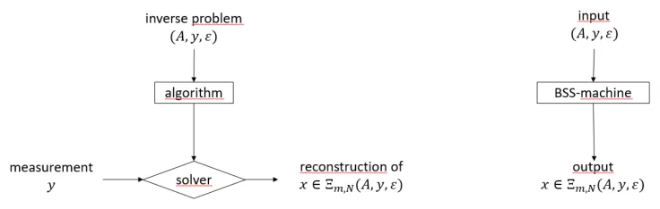 Hình 1. Lời giải của các bài toán nghịch đảo bằng máy BSS giá trị thực (vẽ theo Hình 1, Boche và cộng sự, 2022, tr. 13). máy BSS. Đối với các hàm đa trị Ξm,N và Ξm,N,ε, các tập tương ứng là Mm,N và Mm,N,ε. Trái ngược với trường hợp số, có thể chứng minh rằng ít nhất một hàm trong Ξm,N,ε là khả tính. Hình 1 minh họa mục tiêu của một bài toán nghịch đảo giá trị thực nhằm tìm một phần tử trong Ξm,N,ε mà khả tính BSS. Chứng minh sự tồn tại được thực hiện bằng cách áp dụng thuật toán Tarski để tìm một điểm cực tiểu của một đa thức trên {x ∈ RN | ∥Ax − y∥ℓ2 ≤ ε}. Các bài toán nghịch đảo cũng có thể giải được bằng thuật toán trên miền phức. Trong trường hợp này, các máy BSS trên trường phức có một số tính chất khác biệt. Trái ngược với trường thực, trường phức không có thứ tự. Suy ra các máy BSS phức không thể so sánh các số phức theo một quan hệ thứ tự. Do đó, mô hình thực R2 của trường phức C được xem xét để áp dụng các máy BSS thực. Trong trường hợp này, một đầu vào phức x = a + ib ∈ C là một cặp số thực (a, b) với phần thực a = real x và phần ảo b = im x. Nhưng chuẩn l1 ∥x∥l1 = i |xi| = real xi2 + im xi 2 không hỗ trợ tính khả tính vì hàm căn bậc hai không khả tính BSS trên số thực. Do đó, chuẩn bình phương ∥x∥l2 = i i |xi|2 = 2 + im xi2) được sử dụng và được biểu diễn bằng các hàm khả tính BSS (Boche và cộng sự, 2022, tr. 15 trở đi). i (real xi 146 Trí tuệ Nhân tạo của Các Hệ thống Phỏng thần kinh Điều này cũng đúng đối với các chuẩn lp với p chẵn. Các chuẩn tổng quát hóa có thể được sử dụng cho quaternion và octonion với tư cách là các đại số chia bốn chiều và tám chiều. Số thực là một đại số chia một chiều và số phức là một đại số chia hai chiều. Kết quả chính giờ đây đã rõ ràng: Các bài toán nghịch đảo trong khoa học hình ảnh là những bài toán trong thế giới thực mà về mặt toán học, về nguyên lý có thể giải được bởi máy BSS. Do đó, chúng là một ví dụ then chốt để vượt qua các giới hạn về tính khả tính số vốn dựa trên lý thuyết máy Turing. Việc tận dụng các ưu điểm của tính toán thực trong thực tế phụ thuộc vào phần cứng về mặt kỹ thuật. Nhưng các chứng minh tồn tại của các lời giải về nguyên lý cũng hữu ích về mặt lý thuyết để tìm ra các thuật toán phù hợp. Đối với khối lượng dữ liệu khổng lồ của các bài toán nghịch đảo thực tiễn, những ưu điểm của học máy trong AI hiện đại cũng nên được sử dụng cho tính toán thực. Làm thế nào để ánh xạ tái tạo của các bài toán nghịch đảo có thể được tính toán bởi các thuật toán học của mạng nơ-ron sâu? Trong một mục trước, mạng nơ-ron đã được giới thiệu liên quan đến ứng dụng cho các bài toán nghịch đảo trong tính toán số. Về mặt toán học, một mạng nơ-ron truyền thẳng với L lớp là một ánh xạ Φ : Rd → Rm với Φ(x) = TLρ(TL−1ρ(. . . ρ(T1x) . . .)) và x ∈ Rd, trong đó Tl : Rnl−1 → Rnl với 1 ≤ l ≤ L là một ánh xạ afin-tuyến tính Tlx = Wlx + bl với các trọng số Wl ∈ Rnl−nl−1 và các độ lệch bl ∈ Rnl. Hàm kích hoạt phi tuyến ρ : R → R tác động lên từng thành phần của vectơ. Độ sâu của mạng được ký hiệu là L và bề rộng của mạng là n = (n1, . . . , nL) với số chiều đầu vào n0 = d và số chiều đầu ra nL = m. Một mạng nơ-ron cần xấp xỉ một hàm chưa biết dựa trên một tập mẫu các cặp giá trị đầu vào–đầu ra cho trước. Trong quá trình huấn luyện, các trọng số và độ lệch của mạng được điều chỉnh trong một quy trình tối ưu hóa. Trong trường hợp các bài toán nghịch đảo, quá trình huấn luyện hướng tới một mạng nơ-ron Φ xấp xỉ ánh xạ tái tạo từ các phép đo đến dữ liệu ban đầu sao cho dữ liệu khôi phục được thỏa mãn bài toán cực tiểu hóa argx∈CN min ∥x∥l1 với ∥Ax − y∥ℓ2 ≤ ε. Câu hỏi then chốt là liệu mạng nơ-ron Φ có tồn tại và có thể được tạo ra bởi một thuật toán hay không (Adler và cộng sự, 2017; Jin và cộng sự, 2017; Ongie và cộng sự, 2020; Schlemper và cộng sự, 2018). Trái ngược với tính toán số, một thuật toán huấn luyện có thể áp dụng tổng quát tồn tại đối với máy BSS. Do đó, quan hệ đầu vào–đầu ra phải khả tính, nghĩa là mạng là một hàm khả tính BSS. Có thể chứng minh rằng mạng nơ-ron Φ là một hàm khả tính BSS nếu hàm kích hoạt ρ : R → R khả tính BSS. Chứng minh là hiển nhiên vì Φ là sự kết nối của các ánh xạ afin-tuyến tính với phép nhân ma trận–vectơ và phép cộng vectơ cùng các hàm phi tuyến như các hàm kích hoạt. Các ánh xạ afin-tuyến tính dựa trên các phép toán trường như phép cộng và phép nhân được thực hiện trên các nút tính toán của một máy BSS. Hàm kích hoạt được giả định là khả tính BSS. Do đó, tồn tại một chương trình của máy BSS tính toán quan hệ đầu vào–đầu ra của Φ. Trang này được để trống có chủ đích Trang này được để trống có chủ đích Trang này được để trống có chủ đích Trang này được để trống có chủ đích Chương này giải thích các nguyên lý toán học của học máy. Nền tảng là lý thuyết học thống kê trong đó lý thuyết xác suất Bayes được sử dụng. Các thuật toán học của mạng nơ-ron được xây dựng bằng các phương pháp Bayes. Giới hạn hiệu năng của chúng (ví dụ: nhận dạng mẫu) phụ thuộc vào các phương pháp toán học tuyến tính hoặc phi tuyến tính được giả định. Một số ví dụ ứng dụng trong khoa học sự sống được thảo luận. Hiệu năng đáng kinh ngạc của lý thuyết học thống kê ngày nay dựa trên năng lực tính toán và lưu trữ kỹ thuật cũng như thực tế khổng lồ. Các tiêu chuẩn kỹ thuật này cũng giải thích sự thành công của các chatbot với mô hình ngôn ngữ lớn (LLM) và các mạng nơ-ron rất lớn. Câu hỏi đặt ra là liệu các hệ thống trí tuệ nhân tạo (AI) có thể nhận ra các mối quan hệ nhân quả chứ không chỉ các tương quan thống kê hay không và ở mức độ nào. Cuối cùng, người ta chỉ ra rằng các mạng nơ-ron rất lớn có thể được hình thức hóa về mặt toán học và phân loại như các hệ thống động lực học phức tạp. Do đó, khả năng giải thích và tính khả toán của chúng một lần nữa phụ thuộc vào chủ nghĩa hình thức toán học được giả định. Các phương pháp của học máy hiện đại bắt nguồn sâu sắc từ phương pháp luận của các khoa học thực nghiệm. Phương pháp luận của Newton, được mô tả trong sách giáo khoa Principia Mathematica Philosophiae Naturalis của ông là regulae philosophandi (các quy tắc triết học hóa), đã ảnh hưởng đến nhiều thế kỷ của vật lý học. Nó được lặp lại gần như nguyên văn bởi 149 150 Trí Tuệ Nhân Tạo của Các Hệ Thống Mô Phỏng Thần Kinh Einstein và những người khác trong thế kỷ 20: Một nhà khoa học tự nhiên bắt đầu bằng các quan sát và đo lường, và nhận ra các tương quan trong những dữ liệu hữu hạn này. Chúng được khái quát hóa thành giả định về một định luật hoặc một lý thuyết gồm nhiều định luật. Về mặt toán học, chúng thường có dạng các phương trình, chẳng hạn như các phương trình chuyển động và lực trong cơ học Newton. Trong triết học khoa học, các giả định về định luật như vậy được gọi là giả thuyết. Một lý thuyết thực nghiệm khi đó là một hệ thống các giả thuyết. Newton gọi con đường từ dữ liệu đến giả thuyết hoặc lý thuyết là “quy nạp” (Mittelstrass, 1995). Từ những lý thuyết và giả thuyết như vậy, các dự đoán cho các sự kiện quá khứ và hiện tại hoặc các lời giải thích cho các sự kiện tương lai có thể được suy diễn một cách logic-toán học đối với các điều kiện ban đầu và điều kiện phụ phù hợp. Một ví dụ là mô hình hành tinh của Kepler, được suy diễn từ các định luật cơ học của Newton. Trên cơ sở mô hình này, các dự đoán về vị trí hành tinh trong tương lai có thể được suy diễn. Chúng ta giả sử rằng một phát biểu A (ở đây là các định luật hành tinh của Kepler với vị trí ban đầu đã biết của một hành tinh) kéo theo một phát biểu B (ở đây là dự đoán về vị trí tương lai của hành tinh). Tính đúng đắn của phép kéo theo này được chứng minh bằng cách tính phương trình chuyển động của hành tinh sau khi đưa vị trí ban đầu của nó vào. Bây giờ, phát biểu A, tức là mô hình hành tinh của Kepler và vị trí ban đầu của hành tinh, được giả sử là đúng. Khi đó, phát biểu B, tức là dự đoán về vị trí tương lai của hành tinh, cũng mang tính tất yếu logic. Nếu kết luận “Nếu A, thì B” là đúng và phát biểu A là đúng, thì với tính tất yếu logic, phát biểu B là đúng. Nhưng bây giờ hãy giả sử rằng kết luận “Nếu A, thì B” là đúng và phát biểu B (ví dụ: một quan sát về vị trí hành tinh) là đúng. Chúng ta biết gì về định luật hoặc mô hình được giả định? Nói chung, phát biểu A không đúng như một sự tất yếu logic. Sau nhiều lần quan sát lặp đi lặp lại, theo đó các kết luận logic B từ A là đúng, người ta tối đa chỉ có thể giả định rằng mô hình hoặc giả thuyết A được giả định của chúng ta là hợp lý. Rõ ràng, đây không chỉ là tình huống trong các khoa học thực nghiệm như vật lý, hóa học và sinh học mà còn trong các khoa học xã hội và kinh tế. Chỉ có toán học mới quan tâm đến các suy diễn logic-toán học từ các hệ tiên đề hoặc hệ giả thuyết được giả định. Do đó, các khoa học thực nghiệm tập trung vào các câu hỏi sau: Làm thế nào để chúng ta tìm thấy các mô hình phù hợp cho các lời giải thích và dự báo trong các tập dữ liệu? Những mô hình như vậy hợp lý đến mức nào? Độ tin cậy của chúng thay đổi như thế nào với các quan sát mới và kiến thức nền tảng mới? Chúng ta có thể học được gì từ những kinh nghiệm mới? Với lượng dữ liệu khổng lồ mà chẳng hạn như sinh học phân tử và kinh tế học phải xử lý, rõ ràng là những câu hỏi này chỉ có thể được trả lời trong khuôn khổ toán học của thống kê và lý thuyết xác suất. Theo nhà toán học và thần học người Anh Thomas Bayes (1702–1762), việc học có thể được giải thích bằng xác suất có điều kiện của các sự kiện (Mainzer và Schröder-Heister, 1995). Trong bối cảnh này, xác suất không được định nghĩa là xác suất (xác suất khách quan), mà là một mức độ tin cậy (xác suất chủ quan): Một sự kiện A được giả định trước khi xảy ra một sự kiện B với xác suất tiên nghiệm P(A), nhưng sau khi xảy ra B với xác suất hậu nghiệm (có điều kiện) P(A|B). Với sự trợ giúp của định lý Bayes, các xác suất có điều kiện có thể được tính toán: Xác suất có điều kiện P(A|B) của sự kiện A sau khi xảy ra sự kiện B được cho bởi thương số của xác suất P(A ∩B) (tức là xác suất để các sự kiện A và B xảy ra cùng nhau) và xác suất P(B) của sự kiện B, tức là P(B) , P(B) . Do đó, định lý Bayes phát biểu rằng P(A|B) = P (B|A)·P (A) P (B) , tức là xác suất của A sau khi xảy ra B được tính từ xác suất có điều kiện của B với điều kiện A và các xác suất tiên nghiệm P(A) và P(B) đã cho. 152 Trí Tuệ Nhân Tạo của Các Hệ Thống Mô Phỏng Thần Kinh Làm thế nào các phương pháp Bayes có thể được áp dụng cho suy luận quy nạp trong khoa học tự nhiên? Làm thế nào một mô hình M có thể được suy ra từ một tập dữ liệu D? Từ định lý Bayes, suy ra rằng đối với xác suất của một mô hình M khi biết tập dữ liệu D, P(D) . Xác suất tiên nghiệm P(M) ước lượng xác suất mô hình M đúng trước khi (tiếng Latin: a priori) có dữ liệu. Xác suất hậu nghiệm P(M ∨D) tính đến ước lượng xác suất mô hình M đúng sau khi (tiếng Latin: a posteriori) dữ liệu của tập dữ liệu D đã được quan sát. Xác suất P(D|M) để các quan sát của tập dữ liệu D xảy ra dưới giả định của mô hình M được gọi là độ hợp lý (likelihood) của dữ liệu dưới giả định của một mô hình. Xác suất P(D) đại diện cho bằng chứng dữ liệu của tập dữ liệu D. Để tính xác suất của một mô hình M dưới giả định của một tập dữ liệu, việc tính các logarit tương ứng thường đơn giản hơn: log P(M|D) = log P(D|M) + log P(M) −log P(D). Trong đánh giá Bayes đối với các mô hình, giả định về xác suất “tiên nghiệm” đôi khi bị chỉ trích là chủ quan hoặc tùy tiện. Tuy nhiên, trong thực tế, tác động của các xác suất tiên nghiệm giảm dần khi số lượng dữ liệu tăng lên. Trong phép tính logarit của độ hợp lý, logP(D|M) thường tăng tuyến tính theo số lượng dữ liệu từ D, trong khi biểu thức tiên nghiệm logP(M) vẫn giữ nguyên. Hơn nữa, cách tiếp cận Bayes đòi hỏi sự phân biệt rõ ràng giữa các giả định tiên nghiệm và hậu nghiệm. Xác suất tiên nghiệm của một mô hình phụ thuộc vào phân phối xác suất được giả định. Tùy thuộc vào ứng dụng, ví dụ: phân phối Gauss hoặc Dirichlet phù hợp cho việc này. Trong mọi trường hợp, không có nguyên tắc khách quan chung nào được biết đến để xác định các giả định tiên nghiệm trong mọi tình huống (Skilling và Sibisi, 1996). Mô hình M(w) phụ thuộc vào tham số w. Trong một mô hình vật lý về chuyển pha mô tả sự chuyển đổi từ, ví dụ, trạng thái lỏng sang trạng thái khí ở các giá trị nhiệt độ tới hạn, nhiệt độ là một ví dụ về tham số. Ngược lại với những mô hình vật lý đơn giản như vậy, các mô hình sinh học phân tử phụ thuộc vào một số lượng tham số khổng lồ. Để đánh giá mức độ tốt của một mô hình M(w) đối với một tập dữ liệu D như một trình tự sinh học phân tử, các hàm sai số và sai lệch f(w, D) ≥0 được áp dụng để tính toán mức độ mà mô hình khớp với tập dữ liệu như một hàm của các tham số mô hình. Có thể chứng minh rằng việc cực tiểu hóa hàm sai số tương đương với cực đại hóa độ hợp lý (likelihood) của dữ liệu (Baldi và Brunak, 2001; Jeffreys và Berger, 1992). Hai mô hình M1 và M2 có thể được so sánh bằng cách so sánh xác suất P(M1|D) của chúng cho một tập dữ liệu D (ví dụ: trình tự axit amin). Một mục tiêu có thể là xác định mô hình M tốt nhất của một lớp mô hình bằng cách tìm tập tham số w có độ hợp lý cực đại P(M|D). Cách tiếp cận Bayes có ưu điểm về mặt phương pháp luận là nó ưu tiên các mô hình ít phức tạp hơn. Điều này tương ứng với phương châm của dao cạo Occam, theo đó lời giải thích cho một quan sát đưa ra ít giả định lý thuyết hơn nên được ưu tiên [32]. Hóa ra là độ hợp lý (likelihood) của dữ liệu đối với các tập dữ liệu đã cho trở nên nhỏ hơn về mặt trung bình khi P(D|M) liên quan đến một không gian dữ liệu đang phát triển. Do đó, các mô hình phức tạp có xu hướng hướng tới một độ hợp lý (likelihood) nhỏ hơn của dữ liệu quan sát được. Theo định lý Bayes, để xác định xác suất P(M|D) của một mô hình khi biết tập dữ liệu D, trước tiên cần đánh giá độ hợp lý (likelihood) của dữ liệu P(D|M) của một mô hình và xác suất tiên nghiệm P(M) của nó. Đối với một chuỗi bit gồm các bit 0 và 1, mô hình đơn giản của một đồng xu công bằng, có hai mặt hiển thị các chữ số 0 hoặc 1, có thể được chọn. Mô hình này chỉ có một tham số duy nhất p. Dữ liệu bao gồm các chuỗi trên bảng chữ cái A = {0, 1}, được tạo ra bởi các lần tung đồng xu ngẫu nhiên. 154 Trí Tuệ Nhân Tạo của Các Hệ Thống Mô Phỏng Thần Kinh Dữ liệu D của một trình tự DNA được hình thành trên bảng chữ cái A = {A, C, G, T}. Một mô hình ngẫu nhiên đơn giản sẽ là một con xúc xắc bốn mặt mà các mặt mang các ký hiệu A, C, G và T (Baldi, tr. 68). Triết lý khoa học Bayes giải thích về mặt thống kê cách các mô hình và giả thuyết của chúng ta về thế giới thay đổi thông qua những kinh nghiệm mới và cách chúng ta có thể học hỏi từ kinh nghiệm. Do đó, nó có thể được hiểu như một lý thuyết khung cho các thuật toán học tự động hóa các quy trình học trong học máy. Trong học máy, các mạng nơ-ron được mô hình hóa theo bộ não con người đóng một vai trò thống trị. Bước đột phá của nghiên cứu AI trong thực tế phần lớn liên quan đến khả năng của mạng nơ-ron trong việc áp dụng lượng dữ liệu lớn (Dữ liệu lớn / Big Data), ví dụ: trong nhận dạng mẫu với các thuật toán học hiệu quả. Các ứng dụng thực tế đòi hỏi hàng nghìn nơ-ron và khớp thần kinh trong các mạng nơ-ron nhiều lớp (học sâu) được huấn luyện thống kê với các tập dữ liệu hữu hạn gồm đầu vào và đầu ra. Theo quan điểm Bayes, mạng nơ-ron có thể được hiểu là các mô hình đồ thị M(w) với các tham số w nhất định. Những mô hình này gợi nhớ đến bộ não con người. Trong các mạng nơ-ron truyền thẳng (feedforward) cổ điển, các nơ-ron được sắp xếp thành các lớp như các nút của một đồ thị. Trong Hình 1, mỗi nơ-ron của một lớp được kết nối với tất cả các nơ-ron của lớp tiếp theo bằng các cạnh có hướng (khớp thần kinh), nhưng các nơ-ron trong cùng một lớp không kết nối với nhau. Ngoại lệ là lớp đầu vào, nơi các nơ-ron không có kết nối đi vào, và lớp đầu ra, nơi các nơ-ron không có kết nối đi ra. Các lớp nằm giữa lớp đầu vào và lớp đầu ra được gọi là “ẩn”. Mỗi kết nối/cạnh được gán trọng số trong mô hình đồ thị của mạng nơ-ron bằng một con số tương ứng với cường độ của kết nối khớp thần kinh. Các trọng số này là các tham số w của mô hình đồ thị M(w) của một mạng nơ-ron. Mỗi nơ-ron được đặc trưng bởi một hàm kích hoạt xác định quan hệ đầu vào–đầu ra cho nơ-ron này. Tương tự như bộ não, một nơ-ron được cho là “bắn” (fire) hoặc bị kích thích khi tổng các đầu vào có trọng số của các tế bào lân cận vượt qua một ngưỡng nhất định (Mainzer, 2019, Chương 7). Hình 1. Một mạng truyền thẳng với ba lớp ẩn, một lớp đầu vào và một lớp đầu ra (Mainzer, 2022, tr. 35). Về mặt toán học, các mạng này có thể được định nghĩa là các hàm ν: In →Om ánh xạ một không gian đầu vào n chiều In(n > 0) sang một không gian đầu ra m chiều Om(m > 0). Ví dụ, một mạng như vậy có thể tính toán phép xấp xỉ của một hàm f: Rn →R với I = O = R. Ví dụ, một mạng phân loại hình ảnh 8-bit có kích thước h×v (với h ngang và v dọc) thành hai lớp có thể được định nghĩa bởi một hàm ν: Ih·v →O với miền đầu vào I = {0, . . . , 255} cho 28 = 256 hình ảnh 8-bit có thể có và miền đầu ra O = {0, 1} cho hai lớp được ký hiệu là 0 và 1. Ánh xạ bắt đầu với một đầu vào từ In, đầu tiên được đưa vào lớp đầu vào trong mạng và sau đó được xử lý tiếp qua các lớp trung gian ẩn đến lớp đầu ra. Từng lớp một, các tổ hợp tuyến tính của các giá trị của các nút (nơ-ron) và trọng số (kết nối khớp thần kinh) từ các lớp trước đó được tính toán. Các hàm kích hoạt cho các nơ-ron tiếp theo được áp dụng cho các kết quả này (Hình 2). Về mặt đồ thị, các hàm kích hoạt kích hoạt trạng thái “bắn” của một nơ-ron. Các mạng được phân biệt bởi các hàm kích hoạt khác nhau. Hàm ngưỡng của một nơ-ron McCulloch–Pitts chỉ có giá trị hàm 156 Trí Tuệ Nhân Tạo của Các Hệ Thống Mô Phỏng Thần Kinh ⋮ ⋮ Hình 2. Các hàm kích hoạt của nơ-ron trong mạng nơ-ron (Mainzer, 2022, tr. 36). (a) (b) (c) (d) Hình 3. Các ví dụ về hàm kích hoạt (Mainzer, 2022, tr. 36). bằng 1 cho các đầu vào v ≥0, nếu không thì bằng 0 (Hình 3(a)). Một hàm tuyến tính từng khúc ánh xạ tuyến tính một khoảng bị chặn và các khoảng ngoài là hằng số (Hình 3(b)). Các hàm sigmoid có độ tăng biến thiên được thể hiện ở độ cong của đồ thị (Hình 3(c)). Một hàm chỉnh lưu (ReLU = đơn vị tuyến tính chỉnh lưu) nhận các giá trị dương của các đối số của nó, nếu không thì bằng 0 (Hình 3(d)). Điểm cốt lõi ở đây là mạng nơ-ron có thể học từ các ví dụ. Theo quan điểm Bayes, điều này không gì khác hơn là ước lượng sự phù hợp của một mô hình M(w) để giải thích (khớp) một tập dữ liệu D và ước lượng các tham số mô hình w. Tùy thuộc vào ứng dụng, một tập dữ liệu có thể được hiểu là một mẫu đầu vào–đầu ra D = (D1, . . . , DK) gồm các cặp Di = (di, zi), trong đó di đại diện cho dữ liệu tương ứng và zi đại diện cho trạng thái đích tương ứng. Trong một tác vụ phân loại, chẳng hạn, nhiệm vụ có thể là chia dữ liệu của một tập dữ liệu thành các lớp nhất định làm trạng thái đích. Nếu một số lượng hữu hạn các trạng thái đích được chỉ định trong dữ liệu huấn luyện, chúng ta nói về học có giám sát. Ngược lại, đó là học không giám sát. Một hàm sai số được sử dụng để so sánh dữ liệu đầu ra với các trạng thái đích nhằm tối ưu hóa các tham số mô hình, tức là các trọng số của mạng nơ-ron. Theo quan điểm Bayes, đây là bài toán quy nạp cổ điển về cách thu được mô hình tốt nhất có thể từ dữ liệu. Một tính chất đáng chú ý của mạng nơ-ron là chúng có thể xấp xỉ hầu hết mọi hàm (trơn) f(x) = y với độ chính xác tùy ý (Hornik et al., 1990). Ở đây, các đối số hàm x là đầu vào và giá trị hàm y là đầu ra của một mạng nơ-ron phù hợp. Thuật toán để xấp xỉ hàm f được hiện thực hóa từng bước qua các lớp của một kiến trúc mạng phù hợp. Lý thuyết khoa học Bayes có thể được sử dụng để chọn một hàm mục tiêu phù hợp và một hàm truyền cho đầu ra. Giả sử dữ liệu một lần nữa được cho dưới dạng các cặp đầu vào–đầu ra độc lập Di = (di, zi). Dữ liệu này bị nhiễu theo nghĩa là các trạng thái đích zi khác nhau có thể được quan sát cho một điểm dữ liệu di nhất định. Bản thân các phép toán của mạng nơ-ron được giả định là tất định. Đối với xác suất của các cặp dữ liệu Di = (di, zi) dưới điều kiện của các trọng số khớp thần kinh w (như các giá trị tham số của mô hình nơ-ron M(w)), phép tính Bayes khi đó mang lại P((di, zi)|w) = P(di|w)P(zi|di, w) = P(di)P(zi|di, w), trong đó đối với đẳng thức thứ hai, sự độc lập của các đầu vào d đối với các tham số w được giả định. Công thức logarit của phép tính Bayes sau đó có thể được sử dụng để tính xác suất của các tham số mô hình w (tức là các trọng số của một mạng nơ-ron) giả sử các cặp dữ liệu D: log P(w|D) = log P(D|w) + log P(w) −log P(D) log P((di, zi)|w) + log P(w) −log P(D) = i=1 158 Trí Tuệ Nhân Tạo của Các Hệ Thống Mô Phỏng Thần Kinh (log P(zi|di, w) + log P(di)) + log P(w) −log P(D) = i=1 log P(zi|di, w) + = log P(di) i=1 i=1 + log P(w) −log P(D), trong đó ở dòng thứ ba, P((di, zi)|w) = P(di)P(zi|di, w) đã được tính đến. Trong phép tính trên, bằng chứng dữ liệu P(D) và P(di) có thể được bỏ qua vì các giá trị này không phụ thuộc vào các tham số w (tức là các trọng số khớp thần kinh của mạng nơ-ron). Trọng tâm là xác định xác suất tiên nghiệm P(w) và độ hợp lý (likelihood) của dữ liệu P(zi|di, w). Trong trường hợp độ hợp lý của dữ liệu, ý tưởng chỉ đạo là một mạng với các trọng số w đã cho sẽ tạo ra một đầu ra ước lượng y(di) cho một đầu vào di đã cho. Mô hình được xác định đầy đủ nếu có thể xác định được cách dữ liệu quan sát được zi = z(di) có thể sai lệch về mặt thống kê so với đầu ra yi = y(di). Về mặt lịch sử khoa học, đáng lưu ý rằng sự phát triển của mạng nơ-ron gắn liền với một cuộc thảo luận gay gắt về các giới hạn của công nghệ này mà cuối cùng hóa ra chỉ là tạm thời. Thuật toán học của mô hình perceptron (1950) bắt đầu với một tập hợp trọng số ngẫu nhiên và sửa đổi các trọng số này, theo một hàm sai số, để cực tiểu hóa sự khác biệt giữa đầu ra hiện tại của một nơ-ron và đầu ra mong muốn của một mẫu dữ liệu đã huấn luyện (ví dụ: chuỗi chữ cái, hình ảnh điểm ảnh). Thuật toán học này chỉ có thể được huấn luyện để nhận dạng các mẫu như vậy (có giám sát) mà “tách biệt tuyến tính”. Trong trường hợp này, các mẫu phải có thể tách biệt bằng một đường thẳng. Hình 4(a) cho thấy hai mẫu bao gồm các hình vuông nhỏ hoặc các hình tròn nhỏ làm phần tử. Cả hai mẫu đều có thể tách biệt bằng một đường thẳng 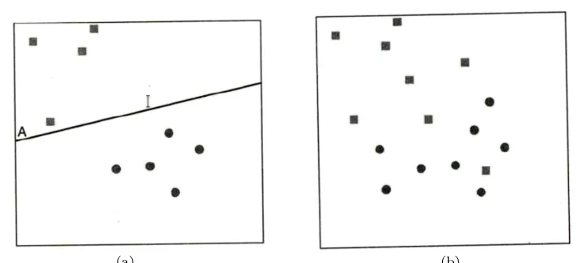 (a) (b) Hình 4. Các mẫu tách biệt tuyến tính (a) và phi tuyến tính (b) (Mainzer, 2022, tr. 39). và do đó có thể nhận dạng được bởi một perceptron. Hình 4(b) cho thấy hai mẫu không thể tách biệt bằng một đường thẳng. Minsky, một nhà nghiên cứu AI hàng đầu thời bấy giờ và là đại diện của mô hình “cũ” của AI biểu tượng, cùng với Papert đã chứng minh về mặt toán học vào năm 1969 rằng Perceptron sẽ thất bại nếu các mẫu chỉ được biểu diễn bằng các đường cong (“phi tuyến tính”) (Hình 4(b)) (Minsky và Papert, 1969). Với điều này, Minsky và Papert tin rằng đã bác bỏ về mặt toán học mô hình mới của mạng nơ-ron hoặc ít nhất là đã đặt nó vào những giới hạn rất hẹp. Vì lý do này, chứng minh của Minsky và Papert ban đầu được cộng đồng AI coi là giới hạn cơ bản của mạng nơ-ron đối với nghiên cứu AI. Giải pháp cho vấn đề này được lấy cảm hứng từ kiến trúc của bộ não tự nhiên. Tại sao việc xử lý thông tin chỉ nên chạy theo một chiều qua các lớp chồng lên nhau của các nơ-ron được nối mạng? Vào năm 1986, Rummelhart, Hinton và Williams đã chứng minh rằng lan truyền ngược (backpropagation) giữa các lớp đầu vào, trung gian và đầu ra cũng cho phép phân loại phi tuyến tính với các thuật toán kích hoạt và học phù hợp (Rummelhart et al., 1986). Cuối cùng, Hornik, Stinchcome và White đã chứng minh vào năm 1989 rằng, dưới các điều kiện phù hợp, các kiến trúc truyền thẳng cũng có thể được sử dụng (Hornik et al., 1889). 160 Trí Tuệ Nhân Tạo của Các Hệ Thống Mô Phỏng Thần Kinh Các mạng nơ-ron với những phần mở rộng này đã dẫn đến những bước đột phá lớn trong học máy và AI. Vài năm trước, Google đã phát triển phần mềm AlphaGo có mạng nơ-ron học từ kinh nghiệm chơi trong trò chơi cờ vây của châu Á và cuối cùng đã đánh bại các nhà vô địch con người. Tiếp nối thành công này, vào năm 2018, cùng công ty đó đã phát triển phần mềm có mạng nơ-ron thành công trong việc mô hình hóa protein với số lượng lớn nhất từ trước đến nay và trong thời gian ngắn nhất (Senior et al., 2020). Phần mềm này, được gọi là AlphaFold, dựa trên một mạng nơ-ron nhiều lớp theo nghĩa của học sâu, có thể dự đoán các hình dạng và nếp gấp phù hợp của protein dựa trên các trình tự đầu vào của axit amin. Điều này được thực hiện bằng cách ước lượng khoảng cách và góc liên kết giữa các axit amin, mà phân phối của chúng được tính toán bởi các thuật toán học. Các xác suất này được tóm tắt trong một điểm số có thể được sử dụng để ước lượng mức độ chính xác của một cấu trúc protein được đề xuất. Việc huấn luyện một mạng nơ-ron dựa trên một cơ sở dữ liệu mở rộng. Hình 5 cho thấy kiến trúc của AlphaFold, nhận dạng cấu trúc protein phù hợp từ một trình tự protein của các mã axit amin. Thuật toán học nhận dạng cấu trúc protein phù hợp từ các phân phối xác suất của khoảng cách và góc có thể dựa trên phương pháp tính điểm hoặc phương pháp gradient. Các phương pháp gradient được biết đến từ nghiên cứu vật liệu khi các cấu trúc nhất định (như cột đá bazan) được tạo ra bằng cách làm nguội (hạ dần theo gradient) một vật liệu nóng (ví dụ: dung nham). Cho đến nay, chỉ có khoảng một nửa số cấu trúc protein có thể có của tế bào người được giải mã. Điều được quan tâm trung tâm là những thay đổi do đột biến. Sự biến dạng của cấu trúc dẫn đến rối loạn chức năng như là nguyên nhân của bệnh tật. AlphaFold và các mạng nơ-ron học máy tương tự sẽ không thể thiếu đối với việc kiểm soát bệnh tật và chăm sóc sức khỏe vì sự đa dạng của sự sống dựa trên sự phức tạp của thế giới protein. Mã của chúng chỉ có thể được nắm bắt bằng học máy với sức mạnh tính toán của siêu máy tính. Về cơ bản, không gian tìm kiếm cho các dạng protein có thể có là theo hàm mũ và không bao giờ hoàn chỉnh, vì quá trình tiến hóa vẫn chưa kết thúc. 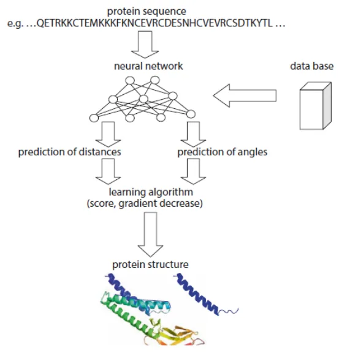 Hình 5. Kiến trúc của AlphaFold (Mainzer, 2022, tr. 41). Các cấu trúc và chức năng phức tạp của gen, protein và tế bào mà chúng ta quan sát ngày nay là kết quả của một quá trình tiến hóa diễn ra trong nhiều triệu năm và không ngừng phát triển. Darwin đã có ý tưởng thiên tài rằng sự đa dạng quan sát được của các loài có thể được truy nguyên về tổ tiên chung mà các nhánh phát triển của chúng có thể được biểu diễn bằng các nhánh của một cái cây. Trong khi cái cây với các cành và nhánh của nó là một mô hình, thì “lá” của nó ở đầu các nhánh tương ứng với các loài quan sát được. Câu hỏi lớn là làm thế nào sự phát triển phát sinh loài này có thể được suy ra từ sự tiến hóa sinh học phân tử. Trong ngôn ngữ của tin sinh học, mục tiêu là suy ra cấu trúc cây phát sinh loài từ các trình tự DNA và protein. Các phương pháp học máy được sử dụng để xử lý lượng dữ liệu lớn bằng các thuật toán và máy tính mạnh mẽ. 162 Trí Tuệ Nhân Tạo của Các Hệ Thống Mô Phỏng Thần Kinh Về mặt toán học, một cây T được hiểu là một đồ thị liên thông không chu trình (Hình 6). Trong một cây, hai nút luôn được kết nối với nhau bằng đúng một cạnh. Số lượng nút luôn lớn hơn số lượng cạnh đúng một đơn vị. Một cây được gọi là nhị phân nếu mỗi nút có một hoặc ba nút lân cận. Nút gốc đặc biệt của một cây được gọi là r. Người ta phân biệt giữa cây có gốc và cây không có gốc (không có nút gốc đặc biệt). Trong các cây phát sinh loài, nút gốc đại diện cho trình tự tổ tiên mà từ đó tất cả các trình tự khác của cây được suy ra hoặc có thể được suy ra. Các đặc trưng của cây là cấu trúc liên kết (topology) và chiều dài của các nhánh. Cấu trúc liên kết cho thấy mô hình phân nhánh và sự phân kỳ của quá trình tiến hóa. Chiều dài của các nhánh biểu thị khoảng thời gian giữa các sự kiện được đại diện bởi các trình tự tương ứng. Như một mô hình xác suất đơn giản hóa của quá trình tiến hóa, một mô hình khối lập phương lại có thể được giả định. Theo đó, quá trình tiến hóa bắt đầu với trình tự của một tổ tiên và phát triển từng bước bằng cách thay thế các chữ cái một cách ngẫu nhiên và độc lập với vị trí. Trong Hình 6, r là gốc cây. Khoảng cách thời gian giữa các nút cây i và j được ký hiệu là dij ·Xi là chữ cái tại nút cây ẩn i. Các chữ cái quan sát được nằm ở các nút dưới cùng gọi là lá. Xác suất các chữ cái Xi được 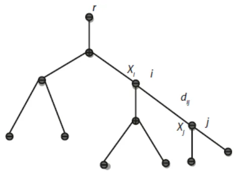 Hình 6. Mô hình đồ thị của một cây phát sinh loài nhị phân (Mainzer, 2022, tr. 43). thay thế bằng các chữ cái Xj khi di chuyển từ nút i sang j được ký hiệu là pXjXi(dji) (Baldi và Brunak, 2001, tr. 267). Một mô hình xác suất đơn giản cho quá trình tiến hóa đưa ra các giả định sau: • Tại mỗi vị trí, chỉ có sự thay thế các chữ cái (tức là không có chèn và xóa). Tất cả các trình tự quan sát được đều có cùng độ dài. • Các phép thay thế tại mỗi vị trí là độc lập với nhau. • Xác suất thay thế chỉ phụ thuộc vào trạng thái hiện tại (hiện hành) chứ không phụ thuộc vào lịch sử tiến hóa trong quá khứ (điều kiện Markov). • Quá trình Markov là giống nhau cho tất cả các vị trí. Nhược điểm của những giả định đơn giản hóa này là trong quá trình tiến hóa sinh học, không có một giả định nào được đáp ứng bởi DNA thực. Độ dài của các trình tự DNA có thể thay đổi do chèn và xóa. Hơn nữa, quá trình tiến hóa không độc lập với các vị trí khác nhau. Tốc độ thay đổi trong quá trình tiến hóa không đồng đều theo thời gian và đối với các vị trí. Ngoài ra, DNA có thể được tái tổ hợp. Tương ứng, các mô hình xác suất đơn giản hóa do đó chỉ có thể đóng vai trò là các phép xấp xỉ. Cho một tập hợp các trình tự và một mô hình tiến hóa xác suất, người ta có thể cố gắng xác định cấu trúc liên kết cây có xác suất cao nhất và chiều dài nhánh có xác suất cao nhất (Felsenstein, 1981). Giả sử K trình tự O1, . . . , OK có cùng độ dài N được cho trên một bảng chữ cái A. Trong mô hình cây T tương ứng, r ký hiệu gốc chung và dij ký hiệu khoảng cách giữa các nút lân cận i và j. Mục tiêu của lý thuyết khoa học Bayes là xác định xác suất P(T|O1, . . . , OK) của mô hình T khi biết các trình tự O1, . . . , OK. Theo định lý Bayes, một bước thiết yếu để đạt được mục đích này là tính toán độ hợp lý (likelihood) P(O1, . . . , OK|T) của các trình tự này đối với mô hình tiến hóa xác suất T. Do giả định độc lập của mô hình tiến hóa, 164 Trí Tuệ Nhân Tạo của Các Hệ Thống Mô Phỏng Thần Kinh xác suất này có thể được phân tích thành thừa số cho từng chữ cái riêng lẻ của các trình tự: 1, . . . , Ok K|T), k=1 trong đó Ok j ký hiệu chữ cái thứ k được quan sát trong trình tự thứ j. Do đó, chỉ cần xem xét các xác suất P(Ok 1, . . . , Ok K|T) liên quan đến các chữ cái thứ k Ok j trong các trình tự tại K lá của cây. Tại mỗi nút cây i, một biến ngẫu nhiên ẩn χi có thể được giả định để chỉ ra chữ cái liên kết với nút i. Do đó, một cây phát sinh loài cũng có thể được hiểu là một mô hình nhân quả với cấu trúc cây, trong đó xác suất có điều kiện của nút j tại một nút cha i đã cho phụ thuộc vào khoảng cách thời gian dji: P(χj = Y|χi = X) = pYX(dji). Do đó, tất cả các thuật toán đã biết để tính toán các mô hình nhân quả đều có thể được áp dụng cho các mô hình cây phát sinh loài [42]. Việc tìm kiếm các cấu trúc cây tối ưu là một thách thức đòi hỏi tính toán chuyên sâu. Không gian tìm kiếm của tất cả các cây có thể có lớn theo hàm mũ, vì vậy việc tìm kiếm vét cạn là không thể. Do đó, chỉ có các quy trình heuristic. Điều này thường liên quan đến việc chọn một loài mới trong mỗi bước tiến hóa có tính đến tất cả các vị trí có thể có của nó trong cây hiện tại. Tuy nhiên, các mô hình tiến hóa xác suất không được quá đơn giản. Các mô hình Markov tỏ ra phi thực tế đối với các quá trình tiến hóa dài hạn vì chúng hội tụ về mặt toán học đến một phân phối cân bằng trong khoảng thời gian này. Tuy nhiên, trạng thái cân bằng trong tự nhiên mâu thuẫn với tất cả các kinh nghiệm trước đây. Sự cân bằng chỉ xảy ra tạm thời và cục bộ trong các hệ thống con. Do đó, hiển nhiên là cần kết hợp các mô hình tiến hóa cục bộ khác nhau. Điều này dẫn đến các hệ thống động lực học phi tuyến tính cao, có thể tương ứng tốt hơn với sự phức tạp sinh học, nhưng lại chạm tới các giới hạn của khả năng tính toán. Trong học máy, nghiên cứu tập trung vào việc mô hình hóa cấu trúc và chức năng của một loại virus. Một chức năng là các phần của virus có thể bị kháng thể tấn công để ngăn chặn sự xâm nhập của virus vào tế bào và sự lây lan của virus trong cơ thể. Một chức năng khác liên quan đến các mảnh protein của virus ánh xạ lên bề mặt tế bào người, đánh dấu tế bào là bị nhiễm để kháng thể có thể nhận diện và tiêu diệt nó. Các mô hình học máy đã được huấn luyện để đưa ra dự đoán về mức độ cường độ của các tính chất này đối với từng mảnh virus. Điều này giúp ước lượng dễ dàng và nhanh chóng hơn xem phần nào của virus có mức độ sinh miễn dịch cao hơn, tức là khả năng phát triển đáp ứng miễn dịch. Những phần này sau đó có thể được đưa vào vắc-xin. Thế mạnh lớn của học máy là khả năng nhận diện các mẫu và tương quan trong khối lượng dữ liệu lớn. Với khả năng này, học máy vượt trội hơn hẳn khả năng của con người. Trong miễn dịch học, chúng ta đang nói đến gần một triệu mảnh protein được trình diện trên bề mặt tế bào và hiển thị cho tế bào T. Không một nhà nghiên cứu nào có thể hoàn thành nhiệm vụ này một cách có hệ thống trong một khoảng thời gian hợp lý đối với một mảnh cụ thể của virus corona. Ngược lại, đối với một mô hình phù hợp, các thuật toán học máy có thể được sử dụng để tính toán độ hợp lý dữ liệu của các mảnh protein nhằm dự đoán ứng cử viên tốt nhất. Sử dụng phương pháp này, các vùng trong lớp vỏ protein của SARS-CoV-2 đã được tìm thấy tạo thành các mục tiêu kháng thể mạnh. Trên cơ sở này, vắc-xin có thể được “thiết kế” trên máy tính. Trong quá trình này, mảnh protein virus được nhận diện là thuận lợi sẽ được lưu trữ cùng với các hạt giống virus khác để vắc-xin được hệ thống miễn dịch nhận diện tương tự như một loại virus thực và kháng thể sau đó được phát triển. Điều nghe có vẻ đơn giản như vậy lại cực kỳ phức tạp trong sinh học. Protein bao gồm hàng chục nghìn phân tử. Các kiểu gấp khúc có thể có của protein quyết định chức năng của chúng đa dạng theo hàm mũ và không thể tính toán đầy đủ. Có thể loại trừ một số lượng lớn các khả năng ngay từ đầu trong mô hình máy tính, do đó không cần phải thử nghiệm trong phòng thí nghiệm nữa. Nhưng các ứng cử viên đã được xác định là thuận lợi vẫn phải được thử nghiệm và loại bỏ trong phòng thí nghiệm để sau đó chọn các ứng cử viên khác trong mô hình mà lại phải được thử nghiệm lại trong phòng thí nghiệm. 166 Trí Tuệ Nhân Tạo của Các Hệ Thống Mô Phỏng Thần Kinh Trong một loại vòng xoắn ốc phương pháp luận, học máy và thử nghiệm trong phòng thí nghiệm do đó phối hợp với nhau để xấp xỉ một kết quả thuận lợi. Nhà triết học khoa học Karl R. Popper từng nhận định: “Chúng ta sai lầm để tiến lên!” (Popper, 1972). Câu nói này mô tả sinh động chiến lược nghiên cứu được theo đuổi ở đây. Tuy nhiên, cuối cùng không có bằng chứng toán học nào cho thấy vòng xoắn ốc nghiên cứu hội tụ đến một kết quả tối ưu hoặc thậm chí đến chân lý trong mọi trường hợp. Trong thực tế, hoàn toàn có thể xảy ra trường hợp không tìm thấy vắc-xin nào cho một tình huống ban đầu nhất định. Sự sụp đổ thảm khốc mà các đại dịch virus gây ra cho các nền kinh tế và xã hội trên toàn thế giới dẫn đến câu hỏi liệu nhân loại có thể chuẩn bị cho các làn sóng đại dịch mới trong dài hạn hay không. Điều này là do sự tiến hóa của virus tiếp tục diễn ra với tốc độ nhanh hơn sự tiến hóa của thực vật và động vật. Quá trình này đang được đẩy nhanh đáng kể trong thời đại toàn cầu hóa khi nguy cơ lây nhiễm dịch tễ học trong các đám đông lớn trên toàn thế giới ngày càng tăng, khiến vị thế khởi đầu của sự tiến hóa virus với các sinh vật chủ kết nối cao ngày càng trở nên thuận lợi hơn. Nói tóm lại, mối nguy hiểm của đại dịch đang gia tăng, và do sự gia tăng mức độ thích nghi của virus, mối nguy hiểm của chúng cũng tăng theo. Cuối cùng, sự gia tốc này chỉ có thể được đối phó bằng học máy, các cơ sở dữ liệu lớn và siêu máy tính. Giờ đây, các khả năng tăng theo hàm mũ của cây tiến hóa virus không thể được lập bản đồ đầy đủ bằng siêu máy tính bất kể chúng lớn đến mức nào. Tuy nhiên, có thể hình dung rằng các biện pháp đối phó được tạo ra về mặt di truyền có thể được dự đoán cho các lớp của những cây tiến hóa virus như vậy dưới những hạn chế (ràng buộc) nhất định. Bằng cách này, một loại hộp công cụ gồm các thuật toán học có thể được tạo ra để có thể phản ứng nhanh chóng nếu tình huống xấu nhất xảy ra. Bản thân toàn bộ tổ chức sẽ là một hệ thống học tập được mở rộng dần dần thông qua những kinh nghiệm mới. Vì vậy, chúng ta đang đối mặt với sự tiến hóa của virus bằng sự tiến hóa của AI. Trong tất cả các ứng dụng đầy tham vọng này của học máy, người ta không được quên rằng cuối cùng nó dựa trên học thống kê và suy luận thống kê. Trong học thống kê, các phụ thuộc và tương quan được suy ra từ dữ liệu quan sát được bằng các thuật toán. Để đạt được điều này, chúng ta có thể tưởng tượng một thí nghiệm khoa học trong đó các kết quả tương ứng (đầu ra) theo sau một loạt các điều kiện thay đổi (đầu vào). Trong y học, đó có thể là một bệnh nhân phản ứng với thuốc theo một cách nhất định. Chúng ta giả định rằng các cặp dữ liệu đầu vào và đầu ra tương ứng được tạo ra một cách độc lập bởi cùng một thí nghiệm ngẫu nhiên chưa biết. Về mặt thống kê, do đó người ta nói rằng chuỗi hữu hạn các dữ liệu quan sát (x1, y1), . . . , (xn, yn) với các đầu vào xi và đầu ra yi(i = 1, . . . , n) được hiện thực hóa bởi các biến ngẫu nhiên (X1, Y1), . . . , (Xn, Yn) có phân phối xác suất chưa biết PX,Y . Các thuật toán bây giờ phải có khả năng suy ra các tính chất của phân phối xác suất PX,Y . Một ví dụ sẽ là xác suất kỳ vọng mà một đầu ra tương ứng xảy ra cho một đầu vào nhất định. Tuy nhiên, nó cũng có thể là một tác vụ phân loại: Một tập hợp dữ liệu được chia thành hai lớp. Khả năng một phần tử của tập dữ liệu (đầu vào) thuộc về lớp này hay lớp kia (đầu ra) là bao nhiêu? Chúng ta cũng nói về nhận dạng mẫu nhị phân trong trường hợp này. Khi nhận dạng một mẫu nhị phân, dữ liệu của một tập dữ liệu X được phân phối vào hai lớp có thể có, được ký hiệu là +1 hoặc −1. Phép gán này được mô tả bởi một hàm f: X →Y với Y = {+1, −1}. Việc học thống kê một mẫu nhị phân liên quan đến việc xác định từ một lớp hàm F phép gán f mà sai lệch lỗi hoặc lỗi kỳ vọng là nhỏ nhất. Chúng ta cũng nói về việc cực tiểu hóa rủi ro của học thống kê [1]: 1 2|f(x) −y|dPX,Y (x, y). Tuy nhiên, vì phân phối xác suất PX,Y cho tất cả các giá trị là chưa biết, nên công thức này và do đó việc nhận dạng mẫu đang tìm kiếm không thể được tính toán với sai lệch lỗi tối thiểu. Chúng ta chỉ có hữu hạn các phân loại quan sát được về mặt thực nghiệm (x1, y1), . . . , (xn, yn) theo ý mình. Do đó, chúng ta sẽ tự giới hạn ở việc giảm thiểu rủi ro thực nghiệm. Để đạt được mục đích này, chúng ta xác định từng bước cho mỗi hàm gán f của lớp F sai số huấn luyện thực nghiệm khi học từ một mẫu có phạm vi n: n emp[f] = 1 1 2|f(xi) −yi|. n i=1 168 Trí Tuệ Nhân Tạo của Các Hệ Thống Mô Phỏng Thần Kinh Điều này tạo ra một dãy hàm trong lớp F với sai số huấn luyện được cải thiện. Câu hỏi trung tâm là liệu phương pháp này có thể được sử dụng để xác định nhận dạng mẫu với sai lệch lỗi nhỏ nhất có thể hay không. Về mặt toán học, vấn đề là liệu dãy hàm được xác định như vậy có hội tụ trong lớp F về một hàm có sai lệch lỗi tối thiểu hay không. Trên thực tế, có thể chứng minh rằng sự hội tụ hoặc thành công trong học tập như vậy chỉ được đảm bảo cho các lớp con nhỏ. Một ví dụ là chiều Vapnik–Chervonenkis (VC), dùng để xác định dung lượng và kích thước của các lớp hàm như vậy (Vapnik, 1998). Với xác suất lớn, rủi ro không lớn hơn rủi ro thực nghiệm (cộng với một số hạng tăng theo kích thước của lớp hàm). Những thành công hiện tại của học máy dường như xác nhận luận điểm rằng nó phụ thuộc vào lượng dữ liệu lớn nhất có thể được xử lý bằng sức mạnh máy tính ngày càng tăng. Tuy nhiên, các quy luật được phát hiện khi đó chỉ phụ thuộc vào phân phối xác suất của dữ liệu thống kê. Học thống kê cố gắng suy ra một mô hình xác suất từ một lượng dữ liệu hữu hạn từ các kết quả (ví dụ: thí nghiệm ngẫu nhiên) và quan sát. Suy luận thống kê, ngược lại, cố gắng suy ra các tính chất của dữ liệu quan sát được từ một mô hình thống kê giả định. Các tương quan dữ liệu có thể cung cấp dấu hiệu của sự thật, nhưng không nhất thiết phải làm như vậy. Hãy tưởng tượng một loạt các thử nghiệm cho thấy mối tương quan thuận lợi giữa một chất hóa học được sử dụng và việc kiểm soát một số khối u ung thư. Sau đó, có áp lực từ công ty liên quan để đưa vào sản xuất một loại thuốc thích hợp và thu lợi nhuận. Nhưng những bệnh nhân bị ảnh hưởng cũng có thể coi đây là cơ hội cuối cùng của họ. Trên thực tế, chúng ta chỉ có thể có được một loại thuốc bền vững nếu chúng ta hiểu được cơ chế nhân quả cơ bản của sự phát triển khối u, tức là các quy luật tự nhiên của sinh học tế bào và hóa sinh. Ngay từ thời Newton, ông hầu như không quan tâm đến các tương quan dữ liệu của những quả táo rơi trên cây táo trong trang trại của cha mình, mà quan tâm đến định luật nhân quả toán học cơ bản về lực hấp dẫn, điều đã làm cho các lời giải thích và tiên lượng chính xác về những quả táo rơi và các thiên thể trở nên khả thi, và cuối cùng là cả công nghệ vệ tinh và tên lửa dựa trên chúng. Do đó, học thống kê và suy luận từ dữ liệu là không đủ. Thay vào đó, chúng ta phải nhận ra các mối quan hệ nhân quả giữa nguyên nhân và kết quả đằng sau dữ liệu đo được. Những mối quan hệ nhân quả này phụ thuộc vào các quy luật của lĩnh vực ứng dụng tương ứng trong các phương pháp nghiên cứu của chúng ta, tức là các quy luật vật lý trong ví dụ của Newton và các quy luật hóa sinh và tăng trưởng tế bào trong nghiên cứu ung thư. Nếu không phải như vậy, chúng ta đã có thể giải quyết các vấn đề của thế giới này bằng các phương pháp học thống kê và suy luận thống kê. Trên thực tế, một số người đương thời thiển cận dường như tin vào điều này trong cơn sốt AI hiện nay. Học thống kê và suy luận thống kê mà không có kiến thức miền nhân quả là mù quáng — bất kể lượng dữ liệu (Big Data) và sức mạnh tính toán lớn đến đâu! Trong suy luận nhân quả, các tính chất của dữ liệu và quan sát được suy ra từ các mô hình nhân quả, tức là các giả định có tính quy luật về nguyên nhân và kết quả. Suy diễn nhân quả do đó giúp có thể xác định tác động của các can thiệp hoặc thay đổi dữ liệu (ví dụ: thông qua thí nghiệm). Ngược lại, học nhân quả cố gắng tạo ra một mô hình nhân quả từ các quan sát, dữ liệu đo lường và các can thiệp (ví dụ: thí nghiệm), điều này đòi hỏi các quy luật và giả định cấu trúc bổ sung. Một mô hình nhân quả cấu trúc bao gồm một hệ thống phân bổ cấu trúc các nguyên nhân cho các kết quả với các biến nhiễu có thể có. Nguyên nhân và kết quả được mô tả bằng các biến ngẫu nhiên. Các phép gán hàm của chúng (có xét đến các biến nhiễu) được định nghĩa bởi các phương trình, ví dụ: kết quả Xj = f(Xi, N), phụ thuộc hàm vào nguyên nhân Xi và biến nhiễu N. Mạng lưới nguyên nhân và kết quả có thể được biểu diễn bằng đồ thị bởi các nút và cạnh. Các biến ngẫu nhiên của nguyên nhân và kết quả tương ứng với các nút. Các tác động nhân quả tương ứng với các mũi tên có hướng: Xi →Xj có nghĩa là nguyên nhân Xi kích hoạt kết quả Xj. Có thể chứng minh rằng một mô hình nhân quả bao hàm một phân phối xác suất rõ ràng của dữ liệu, nhưng không ngược lại: Đối với các mô hình nhân quả 170 Trí Tuệ Nhân Tạo của Các Hệ Thống Mô Phỏng Thần Kinh (ví dụ: mô hình hành tinh), các định luật bổ sung (ví dụ: định luật hấp dẫn) phải được giả định (Mooij et al., 2013). Để xác định sự phụ thuộc nhân quả vào các sự kiện, sự độc lập của các biến ngẫu nhiên đại diện cho chúng phải được xác định. Nói về mặt thống kê, sự độc lập của các kết quả x và y của hai biến ngẫu nhiên (một cách trực quan là các thí nghiệm ngẫu nhiên) X và Y có thể được biểu thị bằng thực tế là xác suất đồng thời p(x, y) của chúng có thể phân tích thành thừa số, tức là p(x, y) = p(x)p(y). Trường hợp này cũng được gọi là điều kiện Markov. Trên cơ sở này, có thể đưa ra phép tính của một quan hệ độc lập nhân quả ⊥⊥(Pearl, 2009). Do đó, mục tiêu của học nhân quả là khám phá sự phụ thuộc nhân quả của nguyên nhân và kết quả đằng sau sự phân phối của dữ liệu đo lường và quan sát. Tình huống ban đầu là một mẫu hữu hạn của việc thu thập dữ liệu. Ví dụ, một xác suất đồng thời PX1,X2,X3,X4 của các biến ngẫu nhiên độc lập và có phân phối giống nhau (i.i.d.) X1, X2, X3, X4 được giả định. Thông qua các kiểm định tính độc lập và thí nghiệm, các mô hình nhân quả được xác định bởi các quan hệ độc lập, sự phân tích thừa số hoặc các định luật nhân quả có thể được suy ra. Trên cơ sở các mô hình nhân quả như vậy, sự phụ thuộc của nguyên nhân và kết quả có thể được biểu diễn bằng đồ thị. Điều này đảm bảo việc gán (trách nhiệm giải trình) của nguyên nhân và kết quả, điều cần thiết để làm rõ các câu hỏi về trách nhiệm. Ngày nay, các ứng dụng thực tế của học máy phải xử lý một lượng dữ liệu khổng lồ. Chẳng hạn, một chatbot như ChatGPT là một “LLM” tạo ra các văn bản giống con người bằng các thuật toán học sâu từ khối lượng dữ liệu ngôn ngữ lớn. Nó dựa trên kiến trúc “bộ biến đổi được huấn luyện trước có khả năng tạo sinh” (GPT), trong đó một bộ biến đổi (transformer) tạo ra văn bản bằng mạng nơ-ron. Mô hình được huấn luyện trước với khối lượng dữ liệu lớn từ sách, bài báo, trang web, v.v., để nhận dạng các mẫu và cấu trúc của ngôn ngữ tự nhiên. Với một đầu vào (được gọi là “lời nhắc” / prompt), mô hình tạo ra một văn bản phù hợp dựa trên kiến thức đã được huấn luyện trước đó. Mặc dù ChatGPT tạo ra kiến thức dựa trên văn bản bằng các phương pháp thống kê, nó có thể giải các mô hình toán học ở mức độ đáng kinh ngạc (Frieder et al., 2023). Bằng cách sử dụng bộ biến đổi (transformer), GPT khác với các mô hình ngôn ngữ trước đây vốn dự đoán tuần tự các từ có xác suất cao trong một ngữ cảnh văn bản. Các bộ biến đổi xử lý tất cả dữ liệu đầu vào đồng thời. Nền tảng cho điều này là một quá trình “tự chú ý” (self-attention), phân bổ các trọng số thay đổi cho các phần khác nhau của dữ liệu đầu vào có tham chiếu đến các vị trí khác trong chuỗi lời nói. Do hiệu quả tính toán ngày càng tăng, các mô hình GPT đã được mở rộng và cải tiến kể từ năm 2018 từ GPT1 đến GPT4 cho các phạm vi kiến thức ngày càng lớn hơn và đa dạng hơn. Phương pháp tự chú ý sử dụng một mạng nơ-ron để đánh trọng số tầm quan trọng của các phần khác nhau của đầu vào và đưa ra dự đoán. Đầu vào được ánh xạ tới nhiều khóa (key), giá trị (value) và truy vấn (query) tương ứng với các ma trận trọng số đã học. Sau đó, mô hình tính tích vô hướng của các truy vấn với các khóa cho tất cả các mục của đầu vào. Điều này tạo ra một điểm số cho mỗi mục. Các điểm số này sau đó được sử dụng để tính toán một trọng số (“sự chú ý”) cho mỗi mục trong đầu vào. Các điểm số được nhân với các trọng số chú ý này để cộng các tích này lại làm đầu ra của quá trình tự chú ý. Đầu ra này bây giờ được kết nối với đầu vào và đi qua nhiều lớp của mạng nơ-ron truyền thẳng hiện thực hóa cơ chế tự chú ý. Để khớp tốt hơn các đầu ra của ChatGPT với ý định của người dùng, thuật toán học tăng cường (RL) từ phản hồi của con người được sử dụng, phân biệt ba bước (Ouyang et al., 2022): Quá trình phát triển đầu tiên liên quan đến việc tinh chỉnh mô hình GPT-3 bằng cách thuê 40 cộng tác viên để tạo một tập dữ liệu huấn luyện có giám sát, trong đó đầu vào có đầu ra đã biết để mô hình học hỏi. Các đầu vào, hoặc lời nhắc (prompt), được thu thập từ các mục nhập thực tế của người dùng vào OpenAPI. Những người gắn nhãn sau đó viết một phản hồi phù hợp cho lời nhắc, từ đó tạo ra một đầu ra đã biết cho mỗi đầu vào. Mô hình GPT-3 sau đó được tinh chỉnh bằng tập dữ liệu có giám sát mới này để tạo ra GPT-3.5, còn được gọi là mô hình tinh chỉnh có giám sát (SFT). 172 Trí Tuệ Nhân Tạo của Các Hệ Thống Mô Phỏng Thần Kinh Tóm lại, bước 1 thu thập dữ liệu minh họa và huấn luyện một chính sách có giám sát với các bước con sau: • Một lời nhắc được lấy mẫu từ tập dữ liệu lời nhắc. Tập dữ liệu lời nhắc là một chuỗi các lời nhắc đã được gửi trước đó tới OpenAPI. • Một người gắn nhãn minh họa hành vi đầu ra mong muốn. Tổng cộng 40 cộng tác viên đã được thuê để viết phản hồi cho các lời nhắc. • Dữ liệu này được sử dụng để tinh chỉnh GPT-3 bằng học có giám sát. Các cặp đầu vào–đầu ra được sử dụng để huấn luyện một mô hình có giám sát về các phản hồi phù hợp đối với các chỉ dẫn. Sau khi mô hình SFT được huấn luyện ở bước 1, mô hình tạo ra các phản hồi phù hợp hơn với lời nhắc của người dùng. Sự tinh chỉnh tiếp theo có dạng huấn luyện một mô hình phần thưởng (RM), trong đó đầu vào của mô hình là một chuỗi các lời nhắc và phản hồi, còn đầu ra là một giá trị vô hướng, được gọi là phần thưởng. RM được hiện thực hóa bằng RL trong đó một mô hình học cách tạo ra các đầu ra để cực đại hóa phần thưởng của nó ở bước 3. Tóm lại, bước 2 thu thập dữ liệu so sánh và huấn luyện một RM theo các bước con sau: • Một lời nhắc và một số đầu ra của mô hình được lấy mẫu. Các phản hồi được tạo ra bởi mô hình SFT. • Một người gắn nhãn xếp hạng các đầu ra từ tốt nhất đến tệ nhất. • Dữ liệu này được sử dụng để huấn luyện RM của chúng tôi. Các tổ hợp xếp hạng được đưa vào mô hình dưới dạng một điểm dữ liệu theo lô (batch). Để đẩy nhanh việc thu thập so sánh, những người gắn nhãn với các phản hồi có xếp hạng từ K = 4 đến K = 9 đã được sử dụng. Nó cung cấp ( K 2 ) phép so sánh cho mỗi lời nhắc được hiển thị cho người gắn nhãn. Các phép so sánh có tương quan với nhau trong mỗi tác vụ gắn nhãn. Do đó, nếu các phép so sánh được xáo trộn vào một tập dữ liệu, một lần duyệt qua tập dữ liệu sẽ khiến RM bị quá khớp (overfit). Thay vào đó, nó được huấn luyện trên tất cả (K 2 ) phép so sánh từ mỗi lời nhắc như một phần tử lô duy nhất. Điều này hiệu quả hơn nhiều về mặt tính toán vì nó chỉ yêu cầu một lượt truyền thẳng của RM cho mỗi phần hoàn thành thay vì (K 2 ) lượt truyền thẳng cho K phần hoàn thành. Vì không còn bị quá khớp nữa, nó đạt được độ chính xác kiểm định (validation accuracy) được cải thiện nhiều và mất mát log (log loss). Về mặt toán học, hàm mất mát cho RM như sau: loss(θ) = −1 2 ) E(x,yw,yl)∼D[log(σ(rθ(x, yw) −rθ(x, yl)))], (K với đầu ra vô hướng rθ(x, y) của RM cho lời nhắc x và phần hoàn thành y với các tham số θ, đầu ra hoàn thành được ưu tiên hơn trong cặp yw và yl, và tập dữ liệu D gồm các so sánh của con người. Ở giai đoạn cuối cùng, mô hình được đưa ra một lời nhắc ngẫu nhiên và trả về một phản hồi. Phản hồi được tạo ra bằng cách sử dụng chính sách mà mô hình đã học được ở bước 2. Chính sách đại diện cho một chiến lược mà máy đã học cách sử dụng để đạt được mục tiêu cực đại hóa phần thưởng của mình. Dựa trên RM được phát triển ở bước 2, một giá trị phần thưởng vô hướng sau đó được xác định cho cặp lời nhắc và phản hồi. Phần thưởng sau đó phản hồi lại vào mô hình để phát triển chính sách. Tóm lại, bước 3 tối ưu hóa một chính sách đối với RM bằng cách sử dụng RL với tối ưu hóa chính sách gần đúng (PPO). PPO là một phương pháp gradient chính sách cho RL, luân phiên giữa việc lấy mẫu dữ liệu thông qua tương tác với môi trường và tối ưu hóa một hàm mục tiêu bằng phương pháp đi lên ngẫu nhiên (stochastic ascent). Trong khi các phương pháp gradient chính sách tiêu chuẩn thực hiện một lần cập nhật gradient cho mỗi mẫu dữ liệu, PPO đề xuất một hàm mục tiêu mới cho phép nhiều kỷ nguyên (epoch) cập nhật theo lô nhỏ (minibatch): • Một lời nhắc mới được lấy mẫu từ tập dữ liệu. • Chính sách tạo ra một đầu ra. Chính sách là một chiến lược mà một tác tử sử dụng để theo đuổi các mục tiêu. • RM tính toán phần thưởng cho đầu ra. • Phần thưởng được sử dụng để cập nhật chính sách bằng PPO. Hình phạt Kullback–Leibler đối với mô hình SFT được sử dụng để tránh quá khớp. Trong huấn luyện với RL, hàm mục tiêu sau được cực đại hóa: φ (y|x)/πSF T ((y|x))] [rθ(x, y) −β log(πRL objective(φ) = E(x,y)∼DπRL φ + γEx∼Dpretrain[log(πRL φ (x))], với chính sách RL đã học πRL φ , mô hình được huấn luyện có giám sát πSF T, và phân phối tiền huấn luyện Dpretrain. Hệ số phần thưởng KL 174 Trí Tuệ Nhân Tạo của Các Hệ Thống Mô Phỏng Thần Kinh β và hệ số mất mát tiền huấn luyện γ kiểm soát cường độ của hình phạt KL và các gradient tiền huấn luyện. Đối với các mô hình PPO, γ được đặt bằng 0. Do kích thước của chúng, các ứng dụng thực tế của mạng nơ-ron gặp phải các vấn đề về độ phức tạp và tính minh bạch. Không ai biết chính xác điều gì đang diễn ra trong các tương tác của hàng triệu nơ-ron với hàng tỷ trọng số khớp thần kinh. Thách thức này của học máy thống kê đôi khi được gọi là bài toán hộp đen của mạng nơ-ron. Nhưng theo quan điểm toán học, các mạng nơ-ron khổng lồ có thể được coi là các hệ thống động lực học phức tạp có thể được toán học hóa trong một chủ nghĩa hình thức đã được thiết lập vững chắc. Kể từ Boltzmann và các cộng sự, chủ nghĩa hình thức của cơ học thống kê đã được sử dụng để tính toán động lực học của các hệ thống phân tử phức tạp với hàng triệu phần tử (Mainzer, 2007). Các mạng nơ-ron lớn cũng tuân theo động lực học của các hệ thống động lực học phức tạp. Thoạt tiên, hàng tỷ tham số (“trọng số khớp thần kinh”) θ phải được huấn luyện thành θ∗: Hàm mạng kết quả f(x; θ∗) với một đầu vào x phải xấp xỉ một hàm đích mong muốn f(x) càng sát càng tốt với f(x; θ∗) ≈f(x). Một hàm đích hoặc hàm mục tiêu mô tả nhiệm vụ của, ví dụ, một bộ phân loại hoặc mạng nhận dạng mẫu nhất định. Đối với các hàm trơn f, về mặt toán học người ta đảm bảo rằng phép xấp xỉ với mạng nơ-ron có thể được cải thiện với độ chính xác tùy ý ít nhất là về mặt nguyên tắc. Kích thước của một mạng có thể được đặc trưng bởi độ sâu L với số lượng lớp và độ rộng n. Đối với tỷ lệ độ sâu trên độ rộng = L n, các thước đo tới hạn của hành vi động lực học có thể được phân biệt. Các tương tác đáng kể và có thể tính toán được chỉ nằm trong chế độ 0 < r ≪1 (“sâu một cách hiệu quả”). Đối với r ≫1, các nơ-ron liên kết chặt chẽ và hỗn loạn (“quá sâu”). Đối với r →0 (với độ rộng vô hạn), các tương tác tắt dần và các mạng không thực sự sâu. Để chứng minh chặt chẽ các kết quả này, hàm mạng đã huấn luyện được biến đổi thành khai triển Taylor của nó (Roberts và Yaida, 2021). Trong một khai triển Taylor, việc tính toán một hàm phi tuyến tính f(x; θ∗) có thể được rút gọn thành việc tính toán các đa thức xung quanh giá trị khởi tạo của các tham số như sau: 2(θ∗−θ)2d2f dθ2 + · · · f(x; θ∗) = f(x; θ) + (θ∗−θ)df dθ + 1 Nhưng khai triển Taylor không thể xử lý được vì có vô hạn số hạng f, df dθ, d2f dθ2 , . . . dưới dạng các hàm ngẫu nhiên của x và một quá trình huấn luyện phi tuyến tính của θ∗. Một phân phối p(f ∗) ≡p(f(x; θ∗)| thuật toán học, dữ liệu huấn luyện) trên các mạng đã huấn luyện f(x; θ∗) được đơn giản hóa hàng loạt trong giới hạn cực đoan limn→∞p(f ∗) của độ rộng vô hạn n và độ sâu cố định L với • chỉ hai số hạng f, df dθ vì các số hạng đạo hàm bậc cao hơn triệt tiêu, • các dạng đơn giản của hàm ngẫu nhiên, • một quá trình huấn luyện tuyến tính của θ∗. Do đó, các mạng có độ rộng vô hạn n chỉ cho phép các mô hình học sâu kém chất lượng làm mất đi từng chi tiết của nơ-ron. Lý thuyết nhiễu loạn là một công cụ toán học được thiết lập vững chắc để hiệu chỉnh những kết quả này (Roberts và Yaida, 2021, tr. 395). Giới hạn độ rộng vô hạn có thể được hiệu chỉnh trong một khai triển 1/n với nghịch đảo độ rộng lớp ϵ = 1/n là một tham số nhỏ của khai triển ϵ ≪1: p(f ∗) ≡p(0)(f ∗) + p(1)(f ∗) n + p(2)(f ∗) n2 + · · · , với p(0)(f ∗) ≡limn→∞p(f ∗) và các hiệu chỉnh p(k)(f ∗) (k ≥1). Phân phối trên các mạng đã huấn luyện có thể xử lý được với một hiệu chỉnh bậc nhất: 1 p(f ∗) ≡p(0)(f ∗) + p(1)(f ∗) n + O n2 vì • các số hạng đạo hàm bậc cao hơn dkf dθk (k ≥1) chỉ đóng góp các hiệu chỉnh bậc 1 n2 và nhỏ hơn, • phân phối của các hàm ngẫu nhiên gần như đơn giản ở bậc 1/n, • một quá trình huấn luyện phi tuyến tính có thể xử lý được bằng một nghiệm giải tích. 176 Trí Tuệ Nhân Tạo của Các Hệ Thống Mô Phỏng Thần Kinh Do đó, các kết quả sau đây của học sâu hơn với các mạng nơ-ron khổng lồ có thể được chứng minh. Tỷ lệ độ sâu trên độ rộng r = L/n của một mạng nơ-ron cho phép chúng ta xác định các mức độ phức tạp của học sâu: • Trong giới hạn nghiêm ngặt r →0, các tương tác giữa các nơ-ron tắt dần (xem độ rộng vô hạn): Trong trường hợp này, các mạng không thực sự sâu với độ sâu tương đối L/n = 0. • Trong chế độ 0 < r ≪1, có những tương tác đáng kể giữa các nơ-ron. Lý thuyết hiệu dụng về độ rộng hữu hạn bị cắt cụt ở bậc 1/n và cho phép tính toán hiệu quả đầu ra của mạng đã huấn luyện: Trong trường hợp này, các mạng sâu một cách hiệu quả. • Trong chế độ r ≫1, các nơ-ron liên kết chặt chẽ và dẫn đến các thăng giáng hỗn loạn mà không có mô tả hiệu dụng: Trong trường hợp này, các mạng quá sâu. Như vậy, các mạng nơ-ron sâu có thể được toán học hóa như các hệ thống động lực học phức tạp trong khuôn khổ của vật lý toán học. Như trong vật lý cổ điển, việc tính toán là khả thi với các thuật toán thực của toán học số. Nhưng những tính toán này được hiện thực hóa trên các máy tính kỹ thuật số cổ điển với các giới hạn lý thuyết của lý thuyết khả toán kỹ thuật số. Mức độ mà các khả năng và giới hạn của tính khả toán phụ thuộc vào hình thức luận toán học được giả định thể hiện đặc biệt rõ ràng trong tính toán lượng tử. Ở đây, các phương pháp, thuật toán và khái niệm cơ bản của tính toán số cổ điển phải được chuyển dịch sang hình thức luận toán học của cơ học lượng tử, đồng thời các khái niệm mới của hình thức luận lượng tử phải được tận dụng nhằm vượt qua các giới hạn cổ điển của tính khả toán. Theo nghĩa của luận đề Church, một máy tính số cổ điển cũng có thể được hiểu như một mạch các cổng Boolean xử lý các bit. Trong tính toán lượng tử, chúng được thay thế bằng các cổng lượng tử biểu diễn các toán tử đơn vị (unitary) của cơ học lượng tử và xử lý các bit lượng tử. Những lợi thế tính toán to lớn bắt nguồn từ các đặc trưng riêng biệt của trạng thái cơ học lượng tử như sự chồng chất (superposition) và sự rối lượng tử (entanglement). Các kết quả tính toán của máy tính lượng tử được giải thích bởi quá trình đo lường cơ học lượng tử. Các phương pháp tính toán cổ điển như phép biến đổi Fourier nhanh được chuyển dịch sang hình thức luận lượng tử và nhờ đó cho phép giải quyết các bài toán tính toán khó trong thời gian đa thức (ví dụ: phân tích thừa số nguyên tố với thuật toán Shor). Tuy nhiên, trong trường hợp này, không thể loại trừ khả năng cũng tồn tại một lời giải số cổ điển trong thời gian đa thức. Điều này phân biệt kết quả đó với sự bất khả thi căn bản của một lời giải số, vốn đã được chỉ ra đối với tính toán thực trong Chương 7. Việc nhận dạng mẫu và phân loại mẫu cổ điển của học máy (ML) với mạng nơ-ron cũng có thể được chuyển dịch sang hình thức luận lượng tử và dẫn đến sự gia tăng hiệu suất đáng kể nhờ sự chồng chất và sự rối lượng tử. Trong lý thuyết độ phức tạp lượng tử, các bài toán NP trước đây có thể được quy về các bài toán P. Trong tính toán lượng tử cũng vậy, các khả năng và giới hạn lý thuyết phụ thuộc vào hình thức luận toán học được giả định. Ngược lại, việc hiện thực hóa về mặt kỹ thuật – vật lý của một máy tính lượng tử lại là một câu hỏi thực nghiệm. 177 178 Trí tuệ Nhân tạo của Các Hệ thống Phỏng thần kinh Theo luận đề Church, về nguyên tắc mọi chương trình máy tính cổ điển đều có thể được hiểu là chương trình của một máy Turing. Mọi máy tính có khả năng lập trình phổ quát khi đó có thể được hiểu là một máy Turing phổ quát. Trong Chương 2, chúng ta cũng đã giới thiệu các máy thanh ghi (register machine) tương đương với máy Turing. Một mô hình máy tính có tính đến kiến trúc của các máy tính kỹ thuật được dựa trên các mạch. Thành phần của các mạch là các cổng thực hiện các phép toán logic mà các hàm khả toán có thể quy về đó. Tương tự như phần mềm, các cổng trong một mạch được kết nối với nhau bằng các đường dây. Trong phần sau đây, mô hình mạch cổ điển được sử dụng để giới thiệu các mạch lượng tử với các cổng lượng tử trong bối cảnh cơ học lượng tử. Cũng như trong trường hợp cổ điển, mô hình mạch lượng tử rất gần với việc hiện thực hóa kỹ thuật của một máy tính lượng tử. Trong một máy tính cổ điển, một bit chỉ có thể là 0 hoặc 1. Một bit lượng tử trong máy tính lượng tử có thể vừa là 0 vừa là 1. Một hệ lượng tử chẳng hạn như một photon có thể đồng thời bị phân cực theo cả chiều dọc và chiều ngang. Các trạng thái thay thế này được biểu diễn bởi các vector |0⟩ và |1⟩ của một không gian Hilbert hai chiều H trên trường số phức. Các trạng thái không chồng chất |0⟩ và |1⟩ có thể được xem là các phần tử cơ sở của không gian Hilbert hai chiều H, tức là |0⟩= (1 0) và |1⟩= (0 1). Theo nguyên lý chồng chất, tổ hợp tuyến tính |ψ⟩= α|0⟩+ β|1⟩ với các số phức α, β ∈C khi đó cũng là một trạng thái (chồng chất) của không gian Hilbert này. α và β là các biên độ của một hàm xác suất với |α|2 + |β|2 = 1. Sự chồng chất này được gọi là một bit lượng tử (hay viết tắt là qubit). Một cách trực quan, α biểu thị xác suất mà hệ lượng tử này ở trong trạng thái |0⟩. Với xác suất phần bù β, hệ lượng tử ở trong trạng thái β. Với một bit lượng tử, nói chung không chỉ có hai khả năng 0 và 1 như với các bit cổ điển, mà có vô số khả năng về xác suất mà một trong hai trạng thái |0⟩ hoặc |1⟩ có thể nhận được. Trong trường hợp bit lượng tử |ψ⟩= 1 √ 2(|0⟩+ |1⟩) = 1 √ 2|0⟩+ 1 √ 2|1⟩, do 1 √ 1 √ 2 = 1 2 + 1 2 = 1 nên suy ra rằng nó ở trạng thái |0⟩ với xác suất 50% và ở trạng thái |1⟩ với xác suất 50%. 2 + 2 2 Một phép đo dẫn đến sự sụp đổ của biên độ xác suất. Theo các tiên đề của cơ học lượng tử, một phép đo sẽ xác định một trong hai trạng thái bit khả dĩ với xác suất bằng nhau trong trường hợp này. Tuy nhiên, điều này có nghĩa là kết quả của phép đo này mang tính ngẫu nhiên. Số phức (Ebbinghaus et al., 1991, Chương 3) mở ra một cách biểu diễn hình học cho các bit lượng tử dưới dạng các vector trạng thái trong không gian Hilbert. Các số phức z = a+ib với i = √−1 và các số thực a, b ∈R có thể được xác định về mặt hình học như các điểm của mặt phẳng thực C = R2 với các vector z = (a b ). Trong Hình 1(a), a và b được diễn giải là các tọa độ vuông góc (Descartes) (Hidary, 2019, Hình 11.11 và 11.12). Một cách khác, vector cũng có thể được định nghĩa theo định lý Pythagoras thông qua bán kính r = √ a2 + b2 và góc θ trong tọa độ cực (r, θ). Nếu ta đặt r = 1 làm chuẩn, kết quả thu được là đường tròn đơn vị trong Hình 1(a), với đường tròn này các tọa độ a và b có thể được xác định theo lượng giác như một hàm của góc quay θ với 0 ≤θ < 2π. Hình 1(b) sau đó cho thấy một biểu diễn hình học thay thế cho số phức với tọa độ cực z = cos(θ) + i sin(θ). Theo một định lý của Euler, cos(θ) + i sin(θ) = eiθ với số Euler e. Điều này dẫn đến đồng nhất thức Euler nổi tiếng eiπ = −1. 180 Trí tuệ Nhân tạo của Các Hệ thống Phỏng thần kinh (a) (b) Hình 1. Biểu diễn hình học của số phức với tọa độ Descartes (a) và tọa độ cực (b) (Mainzer, 2020, tr. 57). 2(|0⟩+ |1⟩) và |−⟩= 1 √ 2(|0⟩−|1⟩) khác nhau ở dấu của trạng thái |1⟩. Theo đồng nhất thức Euler, suy ra |−⟩= 1 √ 2(|0⟩+ eiπ|1⟩), tức là các trạng thái chồng chất khác nhau một góc quay r, được gọi là pha tương đối. Các bit lượng tử có thể được biểu diễn trực quan dưới dạng các vector trạng thái của một mặt cầu đơn vị với bán kính r = 1 (mặt cầu Bloch) (Benenti et al., 2008, tr. 103). Việc tính toán các bit lượng tử bằng cách áp dụng các toán tử đơn vị tương ứng với phép quay các vector trạng thái xác định duy nhất các điểm trên bề mặt của mặt cầu đơn vị (Hình 2). Các trạng thái |ψ⟩ tương ứng có thể được đặc trưng không chỉ bởi ba tọa độ không gian Descartes x, y và z mà còn bởi tọa độ cực của vector tương ứng với các góc θ và φ. Ở đây, x = cos(φ) sin(θ), y = sin(φ) sin(θ) và z = cos(θ). Mỗi vector của mặt cầu Bloch phải thỏa mãn điều kiện chuẩn hóa x2 + y2 + z2 = 1. Hai cực của mặt cầu trên trục z được định nghĩa bởi |0⟩ (cực bắc) và |1⟩ (cực nam). Trên trục x, hai trạng thái chồng chất 1 √ 2(|0⟩+|1⟩) và 1 √ 2(|0⟩−|1⟩) được biểu diễn, chúng khác nhau bởi một pha tương đối. Tương ứng, trên trục y, 1 √ 2(|0⟩+ i|1⟩) và 1 √ 2(|0⟩−i|1⟩) được phân biệt với nhau. Hình 2. Các vector trạng thái trên mặt cầu Bloch (Mainzer, 2020, tr. 58). 182 Trí tuệ Nhân tạo của Các Hệ thống Phỏng thần kinh Các phép quay của vector trạng thái trong mặt cầu Bloch tương ứng với việc áp dụng các toán tử đơn vị trong cơ học lượng tử. Chúng được hiện thực hóa trong máy tính lượng tử bằng các cổng lượng tử, tạo nên mạch của một máy tính lượng tử. Về mặt đồ họa, các toán tử nhiều ngôi được biểu diễn bằng các hộp với các đường dây cho đầu vào và đầu ra (Hidary, 2019, tr. 22–29). Ví dụ, toán tử NOT cổ điển một ngôi tương ứng với toán tử X, toán tử này lật trạng thái |0⟩ trên trục z của mặt cầu Bloch thành trạng thái |1⟩ và ngược lại. Do đó, nó còn được gọi là 0 1 1 0 vào |0⟩ cho ra toán tử lật bit (bit flip). Việc áp dụng X := 0 1 1 0 + 0 0 = |1⟩. = = 1 0 0 1 + 0 1 Việc áp dụng toán tử X có thể được viết là X|j⟩= |j ⊕1⟩ với j = 0, 1 và ⊕ là phép cộng mô-đun 2. Phần tử mạch tương ứng được ký hiệu bằng đồ họa trong trường hợp áp dụng cho |0⟩ bởi Toán tử Y quay vector trạng thái quanh trục y. Khi đó, 0 −i i 0 áp dụng vào |1⟩ cho ra trạng thái 0 −i 0 −i −i 0 = −i|0⟩. = = i 0 1 0 + 0 0 Toán tử Y được biểu diễn như một cổng lượng tử trong mạch của một máy tính lượng tử là Toán tử Z quay vector trạng thái quanh trục z. Nó còn được gọi là toán tử lật pha vì nó lật vector trạng thái với số đo radian 1 0 0 −1 là π, tương ứng với 180◦. Việc áp dụng Z := vào |0⟩ cho ra 1 0 1 1 + 0 1 = |0⟩. = = 0 −1 0 0 + 0 0 1 0 0 0 + 0 0 = −|1⟩. = = 0 −1 0 −1 −1 1 Toán tử Z được biểu diễn như một cổng lượng tử trong mạch của một máy tính lượng tử là Cùng với ma trận đơn vị và các bội ∓ và i, các toán tử này cấu thành nhóm Pauli. Toán tử dịch pha tổng quát Rϕ giữ nguyên trạng thái |0⟩, nhưng quay trạng thái |1⟩ một góc, tương ứng là dịch pha ϕ với Rϕ := 1 0 . Toán tử Rϕ được biểu diễn như một cổng lượng tử trong 0 eiϕ mạch của một máy tính lượng tử là Toán tử Pauli Z là một trường hợp đặc biệt của Rϕ với độ dịch ϕ = π. Do đồng nhất thức Euler eiπ = −1, eiπ có thể được thay thế bằng −1 trong ma trận Z. Hai toán tử dịch pha khác cũng là các trường hợp đặc biệt của 1 0 toán tử quay Rϕ: Với ϕ = π/2, toán tử S với S := quay 0 i trạng thái quanh trục z một góc 90◦. Toán tử S được biểu diễn như một cổng lượng tử trong mạch của một máy tính lượng tử là 1 0 quay trạng thái 0 eiπ/4 quanh trục z một góc 45◦. Ta có T 2 = S, bởi vì hai phép quay 184 Trí tuệ Nhân tạo của Các Hệ thống Phỏng thần kinh liên tiếp với góc 45◦ cho ra 90◦= 45◦+ 45◦. Toán tử T được biểu diễn như một cổng lượng tử trong mạch của một máy tính lượng tử là Trong tính toán lượng tử, toán tử Hadamard H rất quan trọng vì nó biến đổi một bit lượng tử thành một sự chồng chất của hai 1 0 trạng thái. Việc áp dụng H := 1 √ vào |0⟩ cho ra 2 0 −1 1 0 1 1 + 0 = 1 √ 0 −1 0 1 + 0 2 2 1 = 1 √ = 1 √ 2(|0⟩+ |1⟩). 1 2 1 0 0 0 + 1 = 1 √ 0 −1 0 −1 1 2 2 1 = 1 √ = 1 √ 2(|0⟩−|1⟩). −1 2 Toán tử H được biểu diễn như một cổng lượng tử trong mạch của một máy tính lượng tử là 1 0 , các toán tử một ngôi đã giới thiệu trước đó 0 1 thỏa mãn các phương trình sau: HXH = Z, HZH = X, HY H = −Y , H† = H, và H2 = I. Căn bậc hai của toán tử X, tương ứng với cổng NOT, tương ứng với một toán tử một ngôi, được biểu diễn bởi ma trận sau: √ 1 + i 1 −i . 2 1 −i 1 + i √ 1 + i 1 −i 1 + i 1 −i 1 2 2 1 −i 1 + i 1 −i 1 + i 0 4 0 1 = 1 = . 4 4 0 1 0 2((1+i)|0+(1−i)|1⟩) và |1⟩ thành 1 2((1 −i)|0 + (1 + i)|1⟩). Toán tử này được biểu diễn như một cổng lượng tử là Các cổng căn bậc hai có thể được tạo cho mọi cổng bằng cách chỉ định một ma trận đơn vị mà khi nhân với chính nó sẽ cho ra cổng mong muốn. Trong bước tiếp theo, các toán tử hai ngôi được giới thiệu cho các qubit hai chữ số. Toán tử SWAP hoán đổi qubit hai chữ số |01⟩ với |10⟩ và ngược lại. Các trạng thái cơ sở của không gian Hilbert được định nghĩa bởi các vector sau: ⎛ ⎞ ⎛ ⎞ ⎛ ⎞ ⎛ ⎞ 1 0 0 0 ⎜ ⎜ ⎜ ⎜ ⎝ ⎟ ⎟ ⎟ ⎟ ⎠ ⎜ ⎜ ⎜ ⎜ ⎝ ⎟ ⎟ ⎟ ⎟ ⎠ ⎜ ⎜ ⎜ ⎜ ⎝ ⎟ ⎟ ⎟ ⎟ ⎠ ⎜ ⎜ ⎜ ⎜ ⎝ ⎟ ⎟ ⎟ ⎟ ⎠ 0 1 0 0 |00⟩= , |01⟩= , |10⟩= , |11⟩= . 0 0 1 0 0 0 0 1 Toán tử SWAP áp dụng vào |01⟩ cho ra: ⎛ ⎞ ⎛ ⎞ ⎛ ⎞ 1 0 0 0 0 0 + 0 + 0 + 0 ⎜ ⎜ ⎜ ⎜ ⎝ ⎟ ⎟ ⎟ ⎟ ⎠ ⎜ ⎜ ⎜ ⎜ ⎝ ⎟ ⎟ ⎟ ⎟ ⎠ ⎜ ⎜ ⎜ ⎜ ⎝ ⎟ ⎟ ⎟ ⎟ ⎠ 0 0 1 0 1 0 + 0 + 0 + 0 = 0 1 0 0 0 0 + 1 + 0 + 0 0 0 0 0 0 0 + 0 + 0 + 0 ⎛ ⎞ 0 ⎜ ⎜ ⎜ ⎜ ⎝ ⎟ ⎟ ⎟ ⎟ ⎠ 0 = |10⟩. = 1 0 186 Trí tuệ Nhân tạo của Các Hệ thống Phỏng thần kinh Toán tử SWAP được biểu diễn như một cổng lượng tử trong mạch của một máy tính lượng tử là Trong tính toán lượng tử, toán tử NOT có điều kiện (CNOT) có tầm quan trọng trung tâm vì nó có thể làm rối hai qubit. Trong toán tử 2 ngôi này, qubit thứ nhất được phân biệt là qubit điều khiển (control qubit) và qubit thứ hai là qubit mục tiêu (target qubit). Nếu qubit điều khiển ở trạng thái |0⟩, qubit mục tiêu giữ nguyên không đổi. Nếu qubit điều khiển ở trạng thái |1⟩, toán tử NOT X được áp dụng vào qubit mục tiêu. Cổng CNOT được sử dụng để tạo ra các trạng thái rối lượng tử. Ví dụ, CNOT được tính cho |10⟩: ⎛ ⎞ ⎛ ⎞ ⎛ ⎞ 1 0 0 0 0 0 + 0 + 0 + 0 ⎜ ⎜ ⎜ ⎜ ⎝ ⎟ ⎟ ⎟ ⎟ ⎠ ⎜ ⎜ ⎜ ⎜ ⎝ ⎟ ⎟ ⎟ ⎟ ⎠ ⎜ ⎜ ⎜ ⎜ ⎝ ⎟ ⎟ ⎟ ⎟ ⎠ 0 1 0 0 0 0 + 0 + 0 + 0 = 0 0 0 1 1 0 + 0 + 0 + 0 0 0 1 0] 0 0 + 0 + 1 + 0 ⎛ ⎞ 0 ⎜ ⎜ ⎜ ⎜ ⎝ ⎟ ⎟ ⎟ ⎟ ⎠ 0 = |11⟩. = 0 1 Như một cổng lượng tử trong mạch của một máy tính lượng tử, toán tử CNOT được biểu diễn như sau: Một toán tử điều khiển khác là CZ áp dụng toán tử Z vào qubit mục tiêu dưới cùng các điều kiện như toán tử CNOT: ⎛ ⎞ 1 0 0 0 ⎜ ⎜ ⎜ ⎜ ⎝ ⎟ ⎟ ⎟ ⎟ ⎠ 0 1 0 0 . 0 0 1 0 0 0 0 −1 Ngược lại với toán tử CNOT, các qubit điều khiển và mục tiêu có thể hoán đổi cho nhau, tức là cổng CZ có tính đối xứng. Do đó, trong biểu diễn đồ họa của mô hình mạch, cả hai đường dây đều được gán một dấu chấm: Sau các toán tử một và hai ngôi, các toán tử ba ngôi giờ đây được giới thiệu. Một ví dụ đầu tiên là toán tử Toffoli với hai qubit điều khiển và một qubit mục tiêu. Đó là lý do tại sao nó còn được gọi là toán tử CCNOT. Để thay đổi qubit mục tiêu, cả hai qubit điều khiển phải ở trạng thái |1⟩. Hai qubit đầu tiên x và y thỏa mãn hàm AND cổ điển (Boolean) để áp dụng hàm NOT vào qubit mục tiêu trong trường hợp x = 1 và y = 1: (x, y, z) →(x, y, (z ⊕xy)). ⎛ ⎞ ⎛ ⎞ ⎛ ⎞ 1 0 0 0 0 0 0 0 0 0 ⎜ ⎜ ⎜ ⎜ ⎜ ⎜ ⎜ ⎜ ⎜ ⎜ ⎜ ⎜ ⎜ ⎜ ⎝ ⎟ ⎟ ⎟ ⎟ ⎟ ⎟ ⎟ ⎟ ⎟ ⎟ ⎟ ⎟ ⎟ ⎟ ⎠ ⎜ ⎜ ⎜ ⎜ ⎜ ⎜ ⎜ ⎜ ⎜ ⎜ ⎜ ⎜ ⎜ ⎜ ⎝ ⎟ ⎟ ⎟ ⎟ ⎟ ⎟ ⎟ ⎟ ⎟ ⎟ ⎟ ⎟ ⎟ ⎟ ⎠ ⎜ ⎜ ⎜ ⎜ ⎜ ⎜ ⎜ ⎜ ⎜ ⎜ ⎜ ⎜ ⎜ ⎜ ⎝ ⎟ ⎟ ⎟ ⎟ ⎟ ⎟ ⎟ ⎟ ⎟ ⎟ ⎟ ⎟ ⎟ ⎟ ⎠ 0 1 0 0 0 0 0 0 0 0 0 0 1 0 0 0 0 0 0 0 0 0 0 1 0 0 0 0 0 0 = |111⟩. = 0 0 0 0 1 0 0 0 0 0 0 0 0 0 0 1 0 0 0 0 0 0 0 0 0 0 0 1 1 0 0 0 0 0 0 0 1 0 0 1 Trong biểu diễn đồ họa của mô hình mạch, cổng Toffoli được thể hiện với hai đường dây cho hai qubit điều khiển và một đường dây cho dấu chấm của qubit mục tiêu: Một toán tử ba ngôi trung tâm khác cho tính toán lượng tử là toán tử Fredkin, còn được gọi là toán tử SWAP có điều kiện, tức là toán tử CSWAP. Trong trường hợp này, qubit thứ nhất được 188 Trí tuệ Nhân tạo của Các Hệ thống Phỏng thần kinh dùng làm qubit điều khiển và hai qubit còn lại làm qubit mục tiêu. Nếu qubit điều khiển ở trạng thái |0⟩, các qubit mục tiêu giữ nguyên không đổi. Tuy nhiên, nếu qubit điều khiển là |1⟩, hai qubit mục tiêu được hoán đổi cho nhau theo nghĩa của toán tử SWAP. Trong biểu diễn đồ họa của mô hình mạch, cổng Fredkin được thể hiện với một đường dây cho qubit điều khiển, hai đường dây cho các qubit mục tiêu, và hai đường dây cho hai qubit mục tiêu: Một máy tính cổ điển có thể sao chép thông tin và do đó lưu trữ nó trong quá trình tính toán. Cổng COPY đã được giới thiệu trong mô hình mạch của máy tính cổ điển cho mục đích này. Có một cổng lượng tử tương tự cho việc này không? Một máy sao chép lượng tử là bất khả thi trong bối cảnh cơ học lượng tử. Nếu tồn tại một máy sao chép lượng tử, người ta có thể tạo ra hai bản sao của trạng thái một hệ lượng tử để đo động lượng của một bản sao và đo riêng vị trí của bản sao kia với độ chính xác tùy ý. Tuy nhiên, điều này là bất khả thi theo nguyên lý bất định Heisenberg. Cái gọi là định lý không sao chép có những hệ quả kỹ thuật sâu rộng. Một trong những hệ quả đó là việc sao lưu dữ liệu thông qua các bản sao, như chúng ta biết từ các máy tính cổ điển, bị loại trừ. Tuy nhiên, định lý không sao chép không mâu thuẫn với thực tế là các trạng thái cổ điển có thể được sao chép. Các vector trạng thái cổ điển trực giao với nhau trong không gian trạng thái tương ứng. Nói chung, điều này có thể được chứng minh. Hai trạng thái khác nhau chỉ có thể được sao chép trong một mạch lượng tử nếu chúng trực giao với nhau. Chứng minh (Homeister, 2018, tr. 83). Trong một mạch lượng tử, một quá trình sao chép sẽ phải được thực hiện bởi một phép biến đổi đơn vị. Giả sử tồn tại một phép biến đổi đơn vị U, trong một hệ lượng tử ánh xạ trạng thái |ψ⟩⊗|s⟩ vào một trạng thái tùy ý |ψ⟩ và |s⟩ cố định thành trạng thái |ψ⟩⊗|ψ⟩ và tương ứng |φ⟩⊗|s⟩ thành |φ⟩⊗|φ⟩. Vì ⟨Uu|Uv⟩= ⟨u|v⟩ áp dụng cho các phép biến đổi đơn vị như U nói chung (do bảo toàn góc), suy ra ⟨ψ ⊗s|φ ⊗s⟩= ⟨ψ ⊗ψ|φ ⊗φ⟩. Theo các quy tắc tính toán cho tích tensor và tích vô hướng, ⟨ψ ⊗s|φ ⊗s⟩= ⟨ψ|φ⟩⟨s|s⟩ và ⟨ψ ⊗ψ|φ ⊗φ⟩= ⟨ψ|φ⟩⟨ψ|φ⟩, tức là ⟨ψ|φ⟩⟨s|s⟩= ⟨ψ|φ⟩⟨ψ|φ⟩. Đối với mỗi vector đơn vị |s⟩, ta có ⟨s|s⟩= 1. Khi đó, ⟨ψ|φ⟩= ⟨ψ|φ⟩2. Nghiệm của các phương trình này là 0 và 1. Điều này có nghĩa là các bản sao của ψ và φ chỉ khả thi bằng phép biến đổi đơn vị U nếu ψ = φ hoặc ψ và φ trực giao với nhau. Các phép biến đổi đơn vị là thuận nghịch. Điều này nói chung không áp dụng cho các cổng của một mạch cổ điển. Cổng AND cổ điển gán đầu ra 0 cho cả ba cặp đầu vào 00, 01 và 10. Do đó, ở trạng thái đầu ra 0, cổng này đã “quên” mất cặp đầu vào nào thực sự đã được nhận. Vì vậy, cổng cổ điển sẽ phải được trang bị một loại “bộ nhớ” để xuất ra hai giá trị đầu vào tương ứng ở trạng thái đầu ra. Trong ví dụ đã cho về cổng AND, đây sẽ là một trong ba bộ ba đầu ra khả dĩ 0 01, 0 10 hoặc 0 11. Điều này sẽ chuyển đổi một phép tính không thuận nghịch (bất khả nghịch) thành một phép tính thuận nghịch. Một ví dụ khác là cổng XOR. Ở đây, một đầu ra gồm hai giá trị đầu ra là đủ, từ đó có thể suy ra rõ ràng kết quả của phép áp dụng XOR và hai giá trị đầu vào tương ứng. Quy tắc gán hai giá trị đầu vào và đầu ra là (x, y) −→ (x, x ⊕y) với phép cộng ⊕ (mô-đun 2) cho các bit: Nếu giá trị đầu vào thứ nhất là 0, như trong các trường hợp 00 và 01, các giá trị đầu ra giữ nguyên là 00 và 01. Nếu giá trị đầu vào thứ nhất là 1, như trong các trường hợp 10 và 11, giá trị đầu ra thứ nhất giữ nguyên là 1 và giá trị đầu ra thứ hai nhận giá trị đối lập, tức là 11 cho 01 và 10 cho 11. Theo quy tắc này, có thể suy ra rõ ràng rằng, ví dụ, đầu vào 10 ứng với đầu ra 11, đầu vào 11 ứng với đầu ra 10, đầu vào 01 ứng với đầu ra 01, và đầu vào 00 ứng với đầu ra 00. Trên thực tế, nói chung có thể chứng minh rằng mọi phép tính cổ điển đều có thể được chuyển dịch thành một phép tính thuận nghịch. Bất kỳ phép tính thuận nghịch cổ điển nào khi đó đều có thể được mô phỏng bởi một mạch lượng tử với các phép biến đổi đơn vị. Theo nghĩa này, bất kỳ máy tính cổ điển nào cũng có thể được mô phỏng bởi một máy tính lượng tử. 190 Trí tuệ Nhân tạo của Các Hệ thống Phỏng thần kinh Như trong trường hợp cổ điển, một số cổng lượng tử nhất định có thể được đặc trưng là phổ quát (Hidary, 2019, tr. 31; Homeister, 2018, tr. 87; Benenti et al., 2008, tr. 118t.) để mô phỏng tất cả các mạch lượng tử. Một ví dụ là cổng Toffoli hoặc CCNOT, vừa phổ quát vừa thuận nghịch. Các cổng AND và NOT mỗi cổng có thể được thay thế bằng một cổng Toffoli, trong khi cổng OR được thay thế bằng ba cổng Toffoli. Nói chung, mỗi cổng có hai bit đầu vào và một bit đầu ra đều có thể được thay thế bằng một số lượng cổng Toffoli nhất định. Trong ví dụ về các cổng NOT và AND, một bit được đặt thành giá trị đối lập nếu hai bit khác là hằng số. Với y = 1 và c = 1, bit đầu ra thứ ba là 1 ⊕(x · 1) = ¬x (Homeister, 2018, tr. 88): Với c = 0, bit này là 0⊕(x · y) = x · y Một cổng Toffoli hiển nhiên cũng thuận nghịch vì nó gán ba đầu vào 110 cho các đầu ra 111 và ngược lại, tức là 111 cho bộ ba 110. Tất cả các đầu vào khác giữ nguyên không đổi. Do đó, các giá trị đầu vào luôn có thể được xác định từ các giá trị đầu ra. Khi chuyển đổi một mạch cổ điển thành một mạch lượng tử, việc thay thế tất cả các cổng cổ điển bằng các cổng lượng tử là chưa đủ. Các mạch cổ điển có thể có nhiều đường đầu ra. Ngoài ra, các đường dây có thể phân nhánh, điều này tương đương với việc sao chép một bit. Một bit cổ điển có thể được sao chép bằng một cổng Toffoli. Với y = 1 và c = 0, bit thứ nhất được sao chép sang bit thứ ba: Ngược lại, các bit lượng tử không thể bị sao chép. Bước đầu tiên là chuyển dịch một mạch cổ điển thành một mạch cổ điển thuận nghịch. Để làm điều này, bắt đầu từ các đường đầu vào, từng cổng và từng nhánh được thay thế từng bước bằng các cổng Toffoli. Ví dụ, mạch của bộ bán cộng (half adder) từ Chương 2 được chuyển dịch từng bước thành một mạch gồm các cổng Toffoli. Chúng ta bắt đầu với hai nhánh, mỗi nhánh được thay thế bằng một cổng Toffoli và hai bit phụ trợ. Cổng XOR sau đó được thay thế. Một bit đầu ra bổ sung được sử dụng, giá trị của y trước tiên được sao chép vào đó. Cuối cùng, cổng AND được thay thế (Homeister, 2018, tr. 91). Bằng cách này, bất kỳ mạch cổ điển nào cũng có thể được chuyển dịch thành một mạch cổ điển thuận nghịch. Tuy nhiên, việc chuyển dịch các mạch cổ điển sang mạch lượng tử phải được hiện thực hóa bằng các phép biến đổi đơn vị. Theo luận đề Church, một hàm f có thể tính toán được nếu có một mạch tính toán giá trị hàm f(x) cho mỗi đầu vào x. 192 Trí tuệ Nhân tạo của Các Hệ thống Phỏng thần kinh Đối với các mạch lượng tử, điều này có nghĩa là ba thanh ghi |x⟩|h⟩|0⟩ với đầu vào |x⟩, các bit phụ trợ hằng số |h⟩ và một thanh ghi rỗng |0⟩ phải được gán kết quả |x⟩|hx⟩|f(x)⟩. Ở đây, hx chỉ ra rằng các bit phụ trợ có thể phụ thuộc vào đầu vào x. Vì mọi phép toán thuận nghịch là một hoán vị của các bit đầu vào, nó cũng là đơn vị. Nói chung, một sự chồng chất x αx|x⟩|0⟩ của các đầu vào có thể được gán cho một trạng thái rối x αx|x⟩|f(x)⟩ của các kết quả bởi một mạch lượng tử của máy tính lượng tử. Tương tự như mạch cổ điển, một mạch lượng tử được tạo thành từ các đường lượng tử và các cổng lượng tử. Một bit lượng tử được xử lý trong mỗi đường lượng tử. Các đường lượng tử kết nối các cổng lượng tử thực hiện các phép biến đổi đơn vị. Do đó, một mạch lượng tử Q hiện thực hóa một phép biến đổi đơn vị của một đầu vào |ψ⟩ được cấu thành từ các cổng lượng tử thành một đầu ra Q|ψ⟩: Vì các mạch lượng tử thực hiện các phép tính thuận nghịch như các phép biến đổi đơn vị, số lượng kênh đầu ra tương ứng với số lượng kênh đầu vào. Các mạch lượng tử bao gồm các đường song song được biểu diễn bằng tích tensor của các toán tử lượng tử tương ứng với các cổng lượng tử. Một ví dụ đơn giản là mạch sau: Q = M(I2 ⊗K) với hai toán tử lượng tử K và M và một toán tử đơn vị I2. Ở đây, Q đối với đầu vào |ψ⟩= |x1x0⟩ cho ra đầu ra Q|ψ⟩= |x′ 1x′ 0⟩: Tóm lại, phép tính lượng tử của một máy tính lượng tử bắt đầu với đầu vào của một thanh ghi lượng tử R = |xn−1 . . . x1x0⟩, bao gồm n bit lượng tử và được biểu diễn bởi một không gian vector 2n chiều trên trường số phức. Tập hợp các vector tương ứng với các số 0, 1, . . . , 2n −1 được chọn làm cơ sở của không gian vector này và được biểu diễn ở dạng nhị phân bởi |0 . . . 00⟩, |0 . . . 01⟩, . . . , |1 . . . 11⟩ với |i⟩ cho i ∈{0, 1}n. ⎛ ⎞ α0 ⎜ ⎜ ⎝ ⎟ ⎟ ⎠ ... α2n−1 có độ dài 1. Vector trạng thái này biểu diễn một sự chồng chất R = 2n−1 i=0 αi|i⟩ với điều kiện chuẩn hóa 2n−1 i=0 |αi|2 = 1. Các bước tính toán được thực hiện trên các thanh ghi lượng tử là các phép biến đổi đơn vị và do đó là thuận nghịch. Chúng có thể được phân rã thành các phép biến đổi đơn vị liên quan đến tối đa hai bit. Sự phân rã này tương ứng với các tích tensor (Benenti et al., 2008, tr. 106; Homeister, 2018, tr. 52). Sau phép tính của một máy tính lượng tử là việc đọc các kết quả. Theo các tiên đề của cơ học lượng tử, việc đọc kết quả tương ứng với việc đo một thanh ghi lượng tử ở trạng thái R = 2n−1 i=0 αi|i⟩. Nếu trạng thái này được đo tham chiếu theo cơ sở |0⟩, |1⟩, . . . , |2n −1⟩, kết quả |i⟩ thu được với xác suất |αi|2. Nếu một cơ sở trực chuẩn |a0⟩, |a1⟩, . . . , |a2n−1⟩ được chọn, một phép đo trạng thái thanh ghi R = 2n−1 i=0 α′ i|ai⟩ với xác suất |α′ i|2, kết quả là |ai⟩. Các phép đo đại lượng quan sát được cho ra các số thực tương ứng với các trị riêng của các toán tử. Do đó, trong trường hợp máy tính lượng tử, một phép đo (“đọc ra”) tạo ra thông tin cổ điển làm kết quả (Hidary 2019, tr. 34; Homeister, 2018, tr. 29, 46). Trong vật lý lượng tử, một phép đo không phải là một phép biến đổi đơn vị (thuận nghịch) chuyển một sự chồng chất thành một sự chồng chất. Theo các tiên đề của cơ học lượng tử, một “sự chồng chất” “phân rã” thành một phân bố xác suất của các trạng thái thành phần của nó. Trong cơ học lượng tử, trạng thái tiếp theo này còn được gọi là trạng thái “hỗn hợp” 194 Trí tuệ Nhân tạo của Các Hệ thống Phỏng thần kinh đối lập với trạng thái “thuần khiết” của một sự chồng chất. Trong một mạch lượng tử, một ký hiệu đặc biệt được sử dụng để kết thúc phép tính. Sơ đồ sau đây được xem là một ví dụ về mạch có kết thúc bằng phép đo: Làm ví dụ về một mạch lượng tử có kết thúc bằng phép đo, hai qubit ψ1 và ψ2 ở trạng thái |0⟩ trước tiên được chuẩn bị. Áp dụng toán tử Hadamard H vào qubit thứ nhất biến đổi nó thành một sự chồng chất của các trạng thái |ψ1⟩= 1 √ 2(|0⟩+ |1⟩). Toán tử CNOT sau đó được áp dụng vào ψ1 và ψ2. Điều này biến đổi hai qubit thành một trạng thái rối 1 √ 2(|00⟩+ |11⟩), không thể tách rời được. Theo nghĩa của cơ học lượng tử, đây là một trạng thái EPR (Bell). Sau đó, ψ1 được đo với 50% cơ hội thu được 0 hoặc 1 làm đầu ra thực (trị riêng). Để thiết lập sự gần gũi của một mạch lượng tử với công nghệ của một máy tính lượng tử, một mô hình ba chiều có thể được sử dụng, trong đó quá trình xử lý thông tin lượng tử diễn ra trong các lớp cổng lượng tử. Điều này minh họa độ sâu của mạch lượng tử. Trong lớp đầu vào thứ nhất, các qubit được thể hiện ở một trạng thái đã chuẩn bị (với các mũi tên lên và xuống cho các trạng thái bit thay thế). Trong lớp thứ hai, các cổng Hadamard được sử dụng để biến đổi đầu vào thành một sự chồng chất. Trong các lớp tiếp theo, các cổng một và hai qubit như X, Y, T và CZ được sử dụng. Một phép đo sau đó hoàn tất phép tính trong mạch lượng tử. Sau phép đo trong một mạch lượng tử, các bit cổ điển có thể được đọc ra dưới dạng thông tin cổ điển, chẳng hạn có thể được sử dụng để xử lý tiếp bởi các máy tính cổ điển. Theo các tiên đề của cơ học lượng tử, phép đo dựa trên các biên độ xác suất của các trạng thái lượng tử của mỗi qubit. Do đó, câu hỏi trung tâm của tính toán lượng tử là làm thế nào để xác định trước qubit nào là kết quả của phép tính. Các thuật toán lượng tử như phép biến đổi Fourier lượng tử (QFT) đã được đề xuất cho mục đích này. Sự chồng chất và sự rối lượng tử mở ra những khả năng hoàn toàn mới cho các thuật toán lượng tử vốn khép kín đối với các thuật toán cổ điển. Một máy tính cổ điển chỉ có thể giải quyết một tác vụ tại một thời điểm với các cổng cổ điển của nó. Nếu cần giải quyết nhiều tác vụ, điều này chỉ có thể được thực hiện lần lượt chứ không đồng thời (song song). Trong các siêu máy tính cổ điển, điều này còn được gọi là “tính song song”. Trong trường hợp này, các tác vụ khác nhau được giải quyết rất nhanh lần lượt bởi một mạng mạch, hoặc các mạng mạch riêng biệt được sử dụng để giải quyết các tác vụ con khác nhau đồng thời. Tuy nhiên, vì lý do kỹ thuật, khả năng xây dựng các mạng mạch cổ điển song song riêng biệt là có hạn. Trong một máy tính lượng tử, bất kỳ số lượng dữ liệu đầu vào nào từ các tác vụ con về nguyên tắc đều có thể được chồng chất trong một trạng thái chồng chất và sau đó được chuyển đổi thành một trạng thái chồng chất chứa tất cả các lời giải khả dĩ chỉ bằng một lần áp dụng duy nhất của mạng chuyển mạch lượng tử. Hình 3 minh họa cách tất cả 24 = 16 khả năng được tổng hợp trong một trạng thái chồng chất đối với ví dụ về một chuỗi đầu vào gồm bốn bit. Nói chung, một chuỗi gồm n bit dẫn đến một trạng thái chồng chất với 2n khả năng. Tuy nhiên, việc đọc ra các lời giải khả dĩ này gắn liền với một phép đo cơ học lượng tử trong đó trạng thái chồng chất sụp đổ và một trong các lời giải khả dĩ được xuất ra ngẫu nhiên với xác suất như nhau. Nếu bạn muốn thử tất cả các kết quả khả dĩ trong trạng thái chồng chất bằng phương pháp vét cạn (brute force) sử dụng các thuật toán cổ điển, thời gian tính toán sẽ “tăng vọt” theo hàm mũ tùy thuộc vào kích thước của trạng thái chồng chất. Làm thế nào có thể tác động đến xác suất của lời giải cần tìm trước khi kích hoạt phép đo? Làm thế nào có thể giảm thiểu sai số? Đây là một số thách thức mà các thuật toán lượng tử phải giải quyết. 196 Trí tuệ Nhân tạo của Các Hệ thống Phỏng thần kinh 1010 1101 0000 0001 0010 0011 0100 0101 0110 0111 1000 1001 1010 1011 1100 1101 1110 1111 0100 1001 0110 1011 0010 1100 0111 1110 1111 0000 1101 1000 0101 0011 0001 1010 Hình 3. Sự chồng chất và tính song song lượng tử (Mainzer, 2020, tr. 72). Các thuật toán lượng tử giải quyết các bài toán tìm kiếm lời giải trong lượng dữ liệu lớn với một lược đồ dễ hiểu rõ ràng. Bạn bắt đầu với một sự chồng chất các lời giải khả dĩ cho một đầu vào cho trước. Ban đầu các lời giải được gán trọng số với biên độ xác suất bằng nhau. Thuật toán lượng tử sau đó tăng dần biên độ xác suất của lời giải đúng và giảm biên độ xác suất của tất cả các lời giải khác. Cho một tập dữ liệu gồm N = 2n phần tử, được đặc trưng bởi các số {0, 1, . . . , N−1}. Gọi nhãn của lời giải chưa biết là x0. Chúng ta lại xét một hàm oracle nhị phân 1, nếu x = x0, f : {0, 1}n →{0, 1}, với (x) = 0, ngược lại. Thách thức là tìm ra lời giải x0 trong càng ít bước tìm kiếm của f càng tốt. Nếu k phần tử của hàm oracle được nhập vào, xác suất tìm thấy lời giải x0 là k/N theo lý thuyết xác suất cổ điển. Nếu chúng ta ký hiệu xác suất thành công trong việc tìm thấy x0 là p, thì mọi thuật toán cổ điển đều đòi hỏi pN = O(N) bước tìm kiếm. √ N) bước tìm kiếm, tương ứng với mức giảm bậc hai. Mặc dù nỗ lực tính toán vẫn nằm trong phạm vi hàm mũ của lớp độ phức tạp NP, nó vẫn có thể dẫn đến sự tăng tốc đáng kể cho việc tìm kiếm lời giải bài toán. Đối với thuật toán Grover, đã có chứng minh rằng máy tính lượng tử về nguyên tắc nhanh hơn máy tính cổ điển. Tuy nhiên, cho đến nay vẫn chưa có chứng minh toán học nào cho thấy không tồn tại một thuật toán cổ điển tương ứng (Grover, 1996). Các thuật toán lượng tử tận dụng lợi thế của sự chồng chất cơ học lượng tử trong tính song song lượng tử. Thay vì cố gắng kiểm tra từng lời giải khả dĩ cho một bài toán một cách riêng lẻ lần lượt (vét cạn) (điều thường sẽ thất bại do số lượng trường hợp tăng theo hàm mũ), chúng được chuẩn bị trong một trạng thái chồng chất và được tính toán cùng nhau (“song song”) trong một phép biến đổi đơn vị. Các kết quả khả dĩ ban đầu được gán trọng số trong trạng thái chồng chất với biên độ xác suất bằng nhau. Thuật toán lượng tử sau đó tăng dần biên độ xác suất của lời giải đúng và giảm biên độ xác suất của tất cả các lời giải khác. Do đó, câu hỏi trung tâm của tính toán lượng tử là làm thế nào có thể tác động đến từng biên độ xác suất trước phép đo và sự sụp đổ đi kèm của trạng thái chồng chất sao cho lời giải đúng có xác suất lớn nhất và do đó được đọc ra làm kết quả. 198 Trí tuệ Nhân tạo của Các Hệ thống Phỏng thần kinh Các trạng thái của một máy tính lượng tử được mô tả như các hàm sóng lý thuyết lượng tử. Phổ của các hàm sóng cổ điển có thể được phân tích hiệu quả trong quang học, kỹ thuật điện và âm học bằng cách sử dụng phép biến đổi Fourier. Do đó, câu hỏi đặt ra là liệu các biên độ xác suất trong một sự chồng chất các kết quả khả dĩ có thể được thao tác bằng các phép biến đổi Fourier lượng tử (QFT) tương ứng hay không. Mục đích là tìm ra các thuật toán tối ưu biến các bài toán NP cổ điển thành đa thức, tức là giải được về mặt kỹ thuật. Trên thực tế, QFT đang chứng tỏ là chìa khóa cho các thuật toán lượng tử mạnh mẽ nhất hiện nay. Trước tiên chúng ta hãy nhớ lại những kiến thức cơ bản của phép biến đổi Fourier cổ điển (Lange và Lange, 2019). Phổ của một tín hiệu (ví dụ: ánh sáng) được tạo thành từ các sóng có tần số khác nhau. Phép biến đổi Fourier được sử dụng để tính toán phổ tần số của một tín hiệu. Biên độ chỉ độ lệch cực đại của sóng, tần số chỉ số lượng sóng trên một đơn vị thời gian và pha chỉ trạng thái sóng tương ứng. Phổ tần số của một tín hiệu thời gian liên tục x(t) có thể được biểu diễn về mặt toán học dưới dạng tổng hoặc tích phân của các hàm mũ phức của các tần số này. Các dao động mũ phức được mô tả bởi phương trình ei2πft = cos(2πft) + i sin(2πft) với các tần số f (xem biểu diễn hình học của số phức). Đối với một tín hiệu tuần hoàn có chu kỳ T, một tần số cơ bản f0 = 1 T và các tần số rời rạc f = 0, ±f0, ±2f0, . . . được giả định. Một phổ rời rạc được biết đến từ phổ vạch của ánh sáng. Một phép biến đổi Fourier rời rạc (DFT) ánh xạ một tín hiệu hữu hạn tuần hoàn và rời rạc theo thời gian sang một phổ tần số hữu hạn tuần hoàn và rời rạc. Một tín hiệu hữu hạn tuần hoàn và rời rạc theo thời gian có thể là một chuỗi hữu hạn các giá trị đo và dữ liệu. Câu hỏi đặt ra là: Làm thế nào có thể tăng tốc việc tính toán với các chuỗi hữu hạn như vậy bằng các phép biến đổi Fourier phù hợp? Trong bộ nhớ máy tính, các chuỗi giá trị số hữu hạn (a0, a1, . . . , an−1) được sử dụng để biểu diễn một đa thức an−1xn−1 + · · · + a1x + a0 bằng các hệ số của nó. Phép nhân các đa thức có nghĩa là các phép nhân mở rộng của các chuỗi hệ số tương ứng, đòi hỏi thời gian tính toán cỡ bậc bình phương O(n2). Các DFT nhanh (FFT) giảm đáng kể thời gian tính toán xuống còn O(n log n) vì logarit của n chỉ tăng rất chậm. Cho mục đích này, một biểu diễn khác của đa thức được sử dụng, xuất phát từ sự tổng quát hóa của cách nhìn hình học: Một đa thức bậc 1 tương ứng về mặt hình học với một đường thẳng được xác định chính xác bởi hai điểm trong mặt phẳng. Nói chung, một đa thức bậc n −1 được xác định bởi n điểm. Các điểm này còn được gọi là các điểm tựa (supporting points) của một đa thức. Hiện nay có thể chứng minh rằng thời gian tính toán cho phép nhân đa thức trong biểu diễn điểm tựa chỉ tăng tuyến tính ở cỡ bậc O(n) chứ không tăng bậc hai như trong biểu diễn hệ số. Câu hỏi đặt ra là: Làm thế nào có thể chuyển đổi nhanh chóng và hiệu quả biểu diễn hệ số thành biểu diễn điểm nội suy và ngược lại để tận dụng hiệu quả việc giảm thời gian này thông qua biểu diễn điểm nội suy? Các hàm mũ phức, vốn được biết đến từ phép biến đổi Fourier, được sử dụng cho mục đích này. Các số phức e2πi·k/n với k = 0, . . . , n −1 chính là các nghiệm của phương trình xn = 1 trên trường số phức. Do đó, chúng còn được gọi là các căn bậc n phức của đơn vị. Chúng quan trọng ở đây vì các đa thức có thể dễ dàng được tính tại các điểm này. Một khi vị trí e2πi·1/n đã được xác định, các kết quả trung gian được sử dụng cho việc này cũng có thể được dùng để tính vị trí tiếp theo e2πi·1/n và sau đó cho các căn bậc n còn lại của đơn vị. DFT của một đa thức bậc n −1 là biểu diễn điểm tựa của nó với các căn bậc n của đơn vị. Đối với biểu diễn hệ số (a0, a1, . . . , an−1), các DFT tương ứng là n−1 kj. aj(e2πi/n) yk = j=0 200 Trí tuệ Nhân tạo của Các Hệ thống Phỏng thần kinh Đáng kinh ngạc là các thủ thuật số học đơn giản được sử dụng cho phép biến đổi Fourier nhanh. Lũy thừa của các căn bậc n của đơn vị lại cho ra các căn của đơn vị. Bằng cách bình phương các căn bậc n của đơn vị, mỗi căn bậc n/2 của đơn vị thu được đúng hai lần. Nếu tất cả các giá trị được bình phương một lần, số lượng giá trị giảm đi một nửa. Do đó, một đa thức bậc n −1 được chia thành hai đa thức có bậc giảm khoảng một nửa. Các căn bậc n của đơn vị sau đó có thể được đánh giá cho toàn bộ đa thức bằng cách đánh giá hai đa thức thành phần có bậc giảm một nửa tại các căn bậc n của đơn vị đã bình phương. Để làm điều này, các DFT tương ứng được xác định cho cả hai đa thức thành phần. Các căn bậc n của đơn vị đã bình phương vừa cho ra căn bậc n/2 của đơn vị trong phạm vi n/2. Các kết quả thành phần cho hai đa thức thành phần giờ chỉ cần ghép lại với nhau. n 2 +Θ(n). Thời gian tính toán cho hai quá trình với độ dài đầu vào giảm một nửa là 2T n 2 . Như đã đề cập, thời gian tính toán cho phép nhân cả hai đa thức chỉ phụ thuộc tuyến tính vào độ dài đầu vào n ở cỡ Θ(n). Cuối cùng, có thể chứng minh trong lý thuyết độ phức tạp rằng T(n) = 2T n 2 + Θ(n) = Θ(n log n). Do đó, có thể tính toán biểu diễn điểm nội suy tương ứng từ hai đa thức thành phần ở dạng biểu diễn hệ số với thời gian tính toán Θ(n log n) bằng phép biến đổi Fourier rời rạc. Hai đa thức sau đó có thể được nhân trong thời gian tuyến tính. Cuối cùng, biểu diễn hệ số của tích hai đa thức thành phần trong thời gian Θ(n log n) có thể được khôi phục từ biểu diễn điểm nội suy. Phép biến đổi Fourier nhanh đã chứng tỏ cực kỳ hữu ích trong toán học ứng dụng thuộc các ngành khoa học tự nhiên và kỹ thuật. Ý tưởng cơ bản về việc tái sử dụng các kết quả trung gian để tiết kiệm các phép toán số học đã có thể tìm thấy trong các phép tính quỹ đạo tiểu hành tinh của Carl Friedrich Gauss vào năm 1805 (Heideman et al., 1984). Thuật toán của phép biến đổi Fourier nhanh đã được phát triển thêm ở các biến thể khác nhau trong thế kỷ 20. Các ứng dụng hiện đại của nó trải dài từ phân tích tín hiệu số và viễn thông đến toán tài chính, ví dụ: để tính giá quyền chọn. Trong bước tiếp theo, DFT (nhanh) phải được phát biểu trong hình thức luận của tính toán lượng tử. Một phép biến đổi Fourier lượng tử F được định nghĩa là một phép biến đổi đơn vị áp dụng vào một thanh ghi lượng tử với n qubit và N = 2n đầu vào (Benenti et al., 2018, tr. 152–154). Mạch lượng tử tương ứng cho thấy cách DFT của một vector trạng thái phức kích thước N = 2n có thể được hiện thực hóa trên một thanh ghi lượng tử gồm n qubit bằng cách áp dụng n cổng Hadamard và n(n −1)/2 cổng dịch pha có điều kiện. Do đó, một số lượng cổng lượng tử sơ cấp cỡ bậc hai O(n2) là đủ cho phép biến đổi Fourier lượng tử, trong khi một phép biến đổi Fourier nhanh cổ điển đòi hỏi các cổng cổ điển sơ cấp cỡ hàm mũ O(2nn). Trên cơ sở phép biến đổi Fourier lượng tử, một bước đột phá trong mật mã học đã trở nên khả thi với thuật toán Shor. Thuật toán Shor chứng minh, ít nhất là về mặt lý thuyết, cách một bài toán trong mật mã học vốn trước đây chỉ có thể giải được theo thời gian hàm mũ có thể được rút gọn về lớp các bài toán có thể giải được theo thời gian đa thức. Con người đã tìm kiếm sự truyền tải thông tin an toàn trong nhiều thế kỷ. Các thông điệp chính trị và quân sự, dữ liệu ngân hàng, bảo hiểm và kinh doanh, cũng như các liên lạc riêng tư và cá nhân được mã hóa để bảo vệ chúng khỏi sự truy cập trái phép. Trong thời đại toàn cầu hóa, mọi thông tin về nguyên tắc đều có sẵn dưới dạng điện tử ở khắp mọi nơi. An ninh dữ liệu đang trở thành gót chân Achilles của xã hội thông tin toàn cầu. Cuộc xung đột giữa những người mã hóa thông tin và những người cố gắng giải mã nó đang dẫn đến một vòng xoáy chạy đua vũ trang bất tận. Khi các phương pháp mã hóa cũ bị bẻ khóa, các phương pháp mạnh hơn được phát triển, và đến lượt chúng lại bị thách thức bởi các phương pháp giải mã thậm chí còn mạnh hơn. Vai trò của sự ngẫu nhiên trong một mật mã an toàn tuyệt đối đã được nhận ra từ trong mật mã học cổ điển. Vào năm 1917, trong Chiến tranh Thế giới thứ nhất, nhà toán học người Mỹ Gilbert S. Vernam (1890–1960) 202 Trí tuệ Nhân tạo của Các Hệ thống Phỏng thần kinh đã đề xuất một phương pháp mã hóa các thông điệp quân sự, về nguyên tắc vẫn được sử dụng cho đến ngày nay trong cái gọi là mật mã Vernam (Bằng sáng chế US1310719 ngày 13 tháng 9 năm 1918; Schmeh, 2007, tr. 49; Mainzer, 2016, tr. 101–103). Từng chữ cái trong bảng chữ cái được mã hóa bằng các chuỗi gồm năm chữ số nhị phân 0 và 1. Về mặt tổ hợp, điều này dẫn đến 25 = 32 khả năng của bộ 5, đủ để biểu diễn 27 chữ cái trong bảng chữ cái. Các chuỗi còn lại có thể được sử dụng để mã hóa các ký tự khác. Một thông điệp khi đó bao gồm một chuỗi s các chữ số nhị phân có độ dài nhất định. Theo Vernam, một chuỗi ngẫu nhiên z có cùng độ dài nên được sử dụng làm khóa để mã hóa thông điệp này. Thông điệp được mã hóa c(s) được tạo ra từ thông điệp s bằng cách cộng khóa z vào s theo từng chữ số. Các quy tắc sau cho các chữ số nhị phân được định nghĩa cho mục đích này: 0 ⊕0 = 0, 0 ⊕1 = 1, 1 ⊕0 = 1, 1 ⊕1 = 0. Người nhận c(s) có thể giải mã thông điệp đã mã hóa bằng cùng một quy trình. Để làm điều này, chỉ cần cộng z vào c(s) theo các quy tắc tương tự để khôi phục s. Ví dụ, nếu s = 10010 và z = 11011, kết quả là c(s) = 01001. Thông điệp được giải mã được tạo ra từ 01001 bằng cách cộng 11011 để khôi phục thông điệp gốc 10010. Vì khóa z là ngẫu nhiên và chỉ người gửi và người nhận biết, kẻ nghe lén không có cơ hội nào. Vernam cũng yêu cầu rằng khóa ngẫu nhiên chỉ được sử dụng một lần (bảng dùng một lần - one-time pad). Nếu một khóa z được sử dụng cho hai thông điệp s1 và s2, chúng ta có thể trừ các thông điệp đã mã hóa c(s1) và c(s2) cho nhau và qua đó loại bỏ chuỗi ngẫu nhiên z, tức là (s1 + z) −(s2 + z) = s1 −s2. Khi đó chúng ta có thể sử dụng s1 làm khóa cho s2 và ngược lại. Ngoài ra, s1 và s2 là các thông điệp có nghĩa, chứ không phải các chuỗi ngẫu nhiên, nên một máy tính đủ mạnh có thể nhanh chóng tìm thấy chúng trong một từ điển các tổ hợp có nghĩa. Mật mã Vernam sẽ là một phương pháp mã hóa an toàn tuyệt đối nếu hai vấn đề được giải quyết: Thứ nhất, phải đảm bảo rằng khóa là một chuỗi ngẫu nhiên thực sự. Tuy nhiên, trong thực tế, các chuỗi giả ngẫu nhiên do máy tính tạo ra được sử dụng. Vì các thuật toán được sử dụng, một máy tính thậm chí mạnh hơn về nguyên tắc có thể phát hiện ra các quy tắc của thuật toán này và sử dụng chúng để giải mã. Ngoài ra còn có vấn đề phân phối khóa bí mật. Tất cả các phương pháp truyền thông tin cổ điển đều không an toàn. Ví dụ, bất kỳ loại liên lạc vô tuyến nào cũng có thể bị chặn thu mà người gửi và người nhận không hề hay biết việc nghe lén. Mã hóa thông tin đối xứng: Trong mật mã học, các phương pháp mã hóa đối xứng theo truyền thống đã được sử dụng, trong đó người gửi và người nhận thông điệp có chung một khóa bí mật (Beutelsbacher, 2001; Bauer, 1995). Những nhược điểm của phương pháp này rất rõ ràng: Người gửi và người nhận không chỉ phải thống nhất một khóa chung mà còn phải trao đổi nó theo một cách được đảm bảo an toàn. Hơn nữa, tính xác thực của một thông điệp không được đảm bảo: Một người nhận có thể tự gửi thông điệp cho chính mình và, dựa trên khóa chung, gán ghép chúng cho người gửi. Mã hóa thông tin bất đối xứng: Các phương pháp mật mã học ngày nay giải quyết vấn đề truyền khóa an toàn và tính xác thực của thông điệp bằng cách sử dụng các khóa khác nhau cho người gửi và người nhận. Thay vào đó, phương pháp mã hóa thông điệp có thể được công khai (mật mã khóa công khai) (Beth, 1999, tr. 47). Tính bảo mật của phương pháp này dựa trên thực tế là ngay cả các siêu máy tính hiện tại cũng sẽ cần hàng triệu năm để suy ra khóa giải mã từ khóa mã hóa. Thay vì mã hóa đối xứng, các phương pháp bất đối xứng do đó đang được tìm kiếm, cho phép mã hóa dễ dàng nhưng thực tế loại trừ khả năng giải mã. Trong toán học, các phương pháp bất đối xứng như vậy được gọi là “hàm cửa sập” (trapdoor functions): Rất dễ để rơi vào một cái hố có cửa sập, nhưng rất khó để thoát ra trở lại. Tương ứng, một hàm cửa sập dễ tính toán, nhưng ngược lại, rất khó để suy ra các đối số của hàm từ giá trị hàm đã tính được. Ví dụ, rất dễ để nhân hai số nguyên tố p và q, dù lớn đến đâu, và tính n = p · q. Ngược lại, chúng ta đã biết từ thời cổ đại rằng mọi số tự nhiên đều là tích của các số nguyên tố và các số nguyên tố xuất hiện trong tích này được xác định duy nhất ngoại trừ thứ tự của chúng (ví dụ: 18 = 2 · 3 · 3). 204 Trí tuệ Nhân tạo của Các Hệ thống Phỏng thần kinh Tuy nhiên, đối với các số lớn, bài toán phân tích thừa số nguyên tố này sớm chạm đến các giới hạn thực tế của tính khả toán. Theo nghĩa của lý thuyết độ phức tạp thuật toán, đây là một bài toán NP với thời gian tính toán tăng theo hàm mũ. Dù sao thì cũng chưa có chứng minh nào được biết đến cho thấy độ phức tạp này có thể được giảm bớt. Để mã hóa, bạn chỉ cần biết tích n. Do đó, người gửi một thông điệp chỉ công bố tích n và giữ bí mật các thừa số p và q. Tuy nhiên, chỉ những ai biết các thừa số nguyên tố p và q mới có thể giải mã. Đây là cơ sở của phương pháp RSA được sử dụng rộng rãi, được đặt theo tên của các nhà toán học Ronald L. Rivest, Adi Shamir và Leonard M. Adleman (Rivest et al., 1978). Việc phân tích thừa số nguyên tố của hai số tự nhiên có thể được sử dụng để xác định ước chung lớn nhất của cả hai số. Tuy nhiên, nếu việc phân tích thừa số nguyên tố chưa được biết đối với một trong hai số, thuật toán Euclid có thể được sử dụng. Đây là một trong những thuật toán lâu đời nhất trong lịch sử toán học. Về mặt lịch sử, nó được Euclid giới thiệu như một phương pháp hình học được gọi là “phép đo luân phiên”. Euclid đã mô tả một phương pháp để tìm một thước đo chung, như cách gọi vào thời điểm đó, cho độ dài của hai đoạn thẳng. Đoạn nhỏ hơn trong hai đoạn được trừ liên tiếp khỏi đoạn lớn hơn. Phương pháp này ban đầu bắt nguồn từ nhà toán học Hippasus thành Metapontum, người đã sử dụng nó để chứng minh tính vô ước của cạnh và đường chéo của một ngũ giác đều. Ở đây, phương pháp đo luân phiên không dừng lại và do đó không có thước đo chung. Về mặt lịch sử, đây là chứng minh đầu tiên cho thấy phải có các tỷ lệ “vô tỷ”, tức là trường số hữu tỷ phải được mở rộng bằng các số vô tỷ (Mainzer, 1981, tr. 12, 34; Mainzer, 1980, Chương 2.1). Ở dạng đại số, phép trừ hình học của một đại lượng được thay thế bằng phép chia có dư. Thuật toán Euclid bắt đầu với hai số a và b và sau đó thực hiện các phép chia tương ứng từng bước thay cho phép trừ hình học. a = q1 · r0 + r1. Trong các bước tiếp theo, một phép chia có dư tiếp tục được thực hiện với số chia tương ứng và số dư của bước trước đó cho đến khi số dư bằng không: r0 = q2 · r1 + r2 ... rn−1 = qn+1 · rn + 0. Số chia trong phép chia cuối cùng có số dư bằng 0 khi đó chính là ước chung mong muốn. Ước chung lớn nhất của a và b được ký hiệu là ggt(a, b) (Ebbinghaus et al., 1993, tr. 23–26). Số học Mô-đun (Meinel và Mundhenk, 2011, tr. 298–328; Homeister, 2018, tr. 301–304) Ngoài thuật toán Euclid, thuật toán mã hóa RSA sử dụng các định lý của lý thuyết số có nguồn gốc từ Leonard Euler và Carl Friedrich Gauss. Điều này đề cập đến số học mô-đun với các số nguyên, được sử dụng trong khoa học máy tính. Tùy thuộc vào số lượng bit hữu hạn của chúng, máy tính chỉ có thể tính toán đến các số nhỏ hơn một giới hạn nhất định. Gọi ZN = {0, 1, . . . , N −1} là một tập hợp hữu hạn bất kỳ các số nguyên. Khi nhân với các số từ ZN, các kết quả có kích thước nhất định sẽ vượt ra ngoài tập hợp này. Đó là lý do tại sao các phép toán số học mô-đun (viết tắt: mod) N được giới thiệu. Gauss đã nghiên cứu các số đồng dư mô-đun N trong công trình của mình về lý thuyết số. Đối với hai số a và b từ ZN, người ta viết a ≡b mod N (đọc là: a và b đồng dư mô-đun N) nếu hiệu của chúng là một bội số của N, tức là a = b + kN với một số nguyên k. Một số b mô-đun N đồng dư với a được ký hiệu là a mod N, tức là b ≡a mod N. Đối với các số đồng dư, phép cộng và phép nhân mô-đun N có thể được định nghĩa lần lượt là a+b mod N và a·b mod N. Ví dụ, đối với phép cộng ⊕ đã giới thiệu trên các bit Z2 = {0, 1}, ta có a ⊕b = a + b mod 2. 206 Trí tuệ Nhân tạo của Các Hệ thống Phỏng thần kinh Thuật toán RSA dựa trên tính toán mô-đun. Nó đảm bảo rằng khóa mã hóa và khóa giải mã là khác nhau. Hơn nữa, khóa mã hóa được công khai, trong khi khóa giải mã vẫn được giữ bí mật. Đó là lý do tại sao nó còn được gọi là phương pháp mật mã khóa công khai. Trong mã hóa bất đối xứng như RSA, hai khóa được sử dụng. Người gửi thông điệp sử dụng khóa công khai để mã hóa thông điệp của họ. Người nhận có một khóa bí mật mà họ không tiết lộ cho bất kỳ ai. Họ sử dụng khóa này để giải mã các thông điệp đã được mã hóa bằng khóa công khai. Điều này nhằm ngăn chặn bất kỳ ai khác ngoài người gửi và người nhận giải mã thông điệp. Lợi thế của quy trình này là không cần trao đổi khóa bí mật giữa người gửi và người nhận. Một sự trao đổi như vậy sẽ gây ra rủi ro bảo mật đáng kể vì về nguyên tắc nó có thể bị nghe lén. Mật mã học lượng tử, vốn đại diện cho bước đột phá hướng tới các phương pháp giải mã đa thức, dựa trên việc phân tích thừa số của một số nguyên n, tức là dựa trên việc tìm kiếm một ước số thực sự của n. Bài toán phân tích thừa số có thể được giải quyết. Bài toán phân tích thừa số có thể được giải quyết bằng cách trước tiên tính chu kỳ của một số hàm mô-đun nhất định (Homeister, 2018, tr. 201–202): Hàm mô-đun tương ứng có dạng f(x) = ax mod n với 1 < a < n. Một cách trực quan, một hàm như vậy ánh xạ tập số nguyên Z lên tập hợp bị giới hạn mô-đun Zn = {0, 1, . . . , n −1}. Một chu kỳ của hàm f là số p > 0 nhỏ nhất với f(x + p) = f(x) đối với mọi đối số x. Từ f(x + p) = f(x), người ta có thể suy ra f(p) = f(0). Trong ký hiệu mô-đun, ta có ap ≡1 mod n. Số mũ p chỉ ra số lần a nhân với chính nó cho ra giá trị 1 mô-đun n. Nó còn được gọi là bậc mô-đun n của a. Theo định nghĩa về các số đồng dư, ap = 1 + kn với một số nguyên k. Vì vậy, n là ước của ap −1. Đối với một chu kỳ chẵn p, phép phân tích thừa số cho kết quả p 2 −1)(a p 2 + 1). ap −1 = (a Vì n chia hết tích của cả hai thừa số, n phải có một ước chung khác 1 với một trong hai thừa số đó. Do đó, không thể xảy ra trường hợp cả hai thừa số đều có ước chung khác n. Tuy nhiên, có thể xảy ra trường hợp a p 2 + 1 là một bội số của n. Điều này sẽ khiến n trở thành ước chung lớn nhất của a p 2 + 1 và n và do đó không phải là một ước thực sự. a p 2 + 1 không thể là bội số của n. Tóm lại: Ước chung lớn nhất của thừa số a p 2 + 1 hoặc của thừa số a p 2 −1 với n cung cấp một ước thực sự của n, ngoại trừ trường hợp a p 2 −1 với n không phải là ước và a p 2 + 1 là một bội số của n. Các kết quả lý thuyết số này là cơ sở cho một thuật toán phân tích thừa số cổ điển, mà thuật toán lượng tử của Shor dựa trên đó. Số n cần phân tích thừa số phải là số lẻ. Nếu nó là số chẵn, 2 và n 2 là hai ước thực sự. Một quy trình vét cạn kiểm tra tất cả các ước là bất khả thi trong thực tế. Người ta có thể nghĩ đến việc tính ước chung lớn nhất với n cho một số nguyên a được chọn ngẫu nhiên với 1 < a < n. Thuật toán Euclid có thể được sử dụng cho việc này. Tuy nhiên, nếu a và n nguyên tố cùng nhau, thì thuật toán Euclid để xác định ước chung lớn nhất luôn chỉ trả về 1. Trong trường hợp mã hóa, n được giả định là tích của hai số nguyên tố rất lớn. Trong trường hợp này, hầu hết tất cả các số giữa 1 và n đều nguyên tố cùng nhau với n. Do đó, một thuật toán được đề xuất để tìm ra một số với xác suất cao không nguyên tố cùng nhau với n. Để làm điều này, chu kỳ của một hàm mô-đun trước tiên được xác định, như đã giải thích trong phần trước. Đầu vào của thuật toán là một số nguyên lẻ n không phải là lũy thừa của số nguyên tố. Từ điều này, theo lý thuyết số suy ra rằng đối với ít nhất một nửa số lượng các số a từ Zn = {0, 1, . . . , n−1}, vốn không chia hết cho n, chu kỳ p của hàm mô-đun f(x) = ax mod n 208 Trí tuệ Nhân tạo của Các Hệ thống Phỏng thần kinh p 2 +1 không chia hết cho n. Suy ra xác suất tìm thấy một ước thực sự của n lớn hơn 1/2. là số chẵn và a Thuật toán bao gồm các bước sau (Hình 4): Trong bước đầu tiên, một số nguyên a được chọn ngẫu nhiên giữa 1 và n. Sau đó, ước chung lớn nhất gcd(a, n) được tính toán. Nếu kết quả khác 1, nó được xuất ra và thuật toán kết thúc. Trong bước tiếp theo, chu kỳ p của ax mod n được xác định. Nếu p là số lẻ, bước đầu tiên được bắt đầu lại. Cuối cùng, các ước chung lớn nhất ggT(a p 2 + 1, n) và ggT(a p 2 −1, n) được tính toán. Nếu bước này không trả về một ước thực sự, bước 1 được bắt đầu lại. Ngược lại, các ước thực sự cung cấp đầu ra của thuật toán. Phần cổ điển của thuật toán bao gồm các phép toán sơ cấp và các phép áp dụng thuật toán Euclid, mà thời gian tính toán của chúng có thể được xử lý theo thời gian đa thức bằng một máy tính cổ điển. Vấn đề nằm ở việc xác định chu kỳ của hàm mô-đun, vốn chưa có thuật toán cổ điển nào có thời gian tính toán đa thức được biết đến. Như đã đề cập, tính bảo mật trước đây của mã hóa cổ điển dựa trên điều này. Năm 1994, Peter Shor đã tìm ra một thuật toán hiệu quả cho bài toán phân tích thừa số trên máy tính lượng tử trong thời gian đa thức (Shor, 1997; Ekert và Jozsa, 1996). Trọng tâm của thuật toán này là việc sử dụng các trạng thái chồng chất, cho phép thực hiện đồng thời nhiều phép tính trong một tính song song lượng tử khổng lồ. Trong khi một sự chồng chất của tất cả 2m từ m bit lượng tử khả dĩ có thể được lưu trữ trong một thanh ghi lớn m bit lượng tử của máy tính lượng tử, thì chỉ một trong 2m từ m bit khả dĩ có thể được lưu trữ trong thanh ghi lớn m bit của máy tính cổ điển. Thuật toán Shor sử dụng tính song song lượng tử này để tìm chu kỳ của các hàm mô-đun mà từ đó có thể suy ra các thừa số nguyên tố cần thiết. Nếu các số cần phân tích thừa số có độ dài từ lớn hơn 1024 bit, các phép tính tương ứng bằng máy tính cổ điển chọn từ {0,1,…,n-1} × Hình 4. Thuật toán phân tích thừa số cổ điển (với thuật toán lượng tử màu đỏ) (Mainzer, 2020, tr. 100; hình vẽ theo Homeister, 2018). 210 Trí tuệ Nhân tạo của Các Hệ thống Phỏng thần kinh với xử lý nối tiếp hoặc mức độ song song hóa thấp là bất khả thi trong thực tế. Khi các máy tính lượng tử được hiện thực hóa về mặt kỹ thuật, thuật toán lượng tử của Shor sẽ bẻ khóa mọi phiên bản của phương pháp mã hóa RSA. Tính bảo mật hiện tại của xã hội thông tin toàn cầu khi đó sẽ sụp đổ. Ý tưởng cơ bản đằng sau thuật toán Shor là một số n có thể được phân tích thừa số nếu có thể tìm thấy chu kỳ của hàm mô-đun f(x) = ax mod n đối với một số nhỏ hơn n. Chu kỳ này sẽ được xác định bởi một thuật toán lượng tử (Hình 4). Bây giờ một thuật toán lượng tử sẽ được đưa ra để xác định chu kỳ này (Benenti, 2008, tr. 161–162): Theo định nghĩa, hàm mô-đun f ánh xạ tập hợp số nguyên Z đến tập hợp các số bị giới hạn Zn = {0, 1, . . . , n −1}. Đối với đầu vào 0, 1, . . . , N −1 của thuật toán lượng tử, N được chọn ở cỡ bậc n2. Do đó, một hàm f được giả định sao cho tập {0, 1, . . . , N −1} được ánh xạ tới tập {0, 1, . . . , n−1} với chu kỳ p, tức là f(x + p) = f(x) áp dụng cho mọi x từ {0, 1, . . . , N −1}. Toán tử đơn vị Uf tương ứng của f ánh xạ hai thanh ghi lượng tử |a⟩|b⟩ thành |a⟩|b ⊕f(x)⟩. Để đạt được sự tăng tốc mong muốn trong việc tìm kiếm chu kỳ của hàm mô-đun, phép biến đổi Fourier lượng tử được áp dụng. Hình 5 minh họa mạch của thuật toán lượng tử, hoạt động theo các bước sau (Homeister, 2018, tr. 224–225). Hai thanh ghi lượng tử |a⟩|b⟩ được chuẩn bị dưới dạng |0 . . . 0⟩|0 . . . 0⟩ với log N bit. Để tận dụng lợi thế của tính song song lượng tử, phép biến đổi Hadamard được áp dụng vào |a⟩ để thu được Hình 5. Mạch của thuật toán Shor (Mainzer, 2020, tr. 102; hình vẽ theo Homeister, 2018). trạng thái chồng chất 1 √ x=0,...N−1 |x⟩|0 . . . 0⟩. Điều này cho phép tính toán hàm f(x) cho mọi x chỉ trong một lần chạy duy nhất. Để làm điều này, toán tử đơn vị Uf của hàm mô-đun f được áp dụng, tức là 1 √ |x⟩|0 . . . 0⟩= 1 √ |x⟩|f(x)⟩. x=0,...N−1 x=0,...N−1 Thanh ghi |b⟩ sau đó được đo. Phép biến đổi Fourier lượng tử F được áp dụng vào |a⟩ và F|a⟩ được đo. Đầu ra y của thuật toán này không phải là bản thân chu kỳ p, mà trong trường hợp N chia hết cho p, là một bội số nguyên của N p , tức là y = jN p với một số nguyên j. Vì j và N đã biết, p có thể được tính toán hiệu quả từ đây. Nếu N không chia hết cho p, đầu ra là một số gần với một bội số nguyên của N p . Để tăng xác suất thành công trong việc xác định chu kỳ, các lần chạy của thuật toán này phải được lặp lại ở cỡ bậc O(log log n). Do đó, thuật toán Shor dựa trên việc áp dụng cổng Hadamard, phép biến đổi đơn vị của hàm mô-đun f(x) = ax mod n để phân tích thừa số n và QFT. Tổng cộng, cần số lượng cổng cỡ bậc O((log n)3). Thời gian tính toán của thuật toán lượng tử là cỡ bậc (log log n · (log n)3) (Benenti et al., 2008, tr. 161; Homeister, 2018, tr. 230–231). Phần cổ điển của thuật toán Shor chỉ sử dụng các phép nhân cỡ bậc O(log n). Do đó, tổng thời gian tính toán của thuật toán Shor để xác định một ước thực sự của số nguyên n là cỡ bậc O(log log n·(log n)3) = O((log n)4). Bước quyết định trong việc tăng tốc xác định chu kỳ là phép biến đổi Fourier, vốn đã được chuyển dịch thành một thuật toán lượng tử. Đây cũng là bước đột phá về mặt lý thuyết giúp có thể giải quyết theo thời gian đa thức những bài toán mà trước đây không thể giải theo thời gian đa thức. Câu hỏi đặt ra là liệu máy tính lượng tử cũng có thể giải theo thời gian đa thức các bài toán khác không phụ thuộc vào QFT hay không. Đối với tính toán cổ điển, các lớp độ phức tạp đã được giới thiệu để phân biệt giữa các bài toán P, NP, NP-khó và NP-đầy đủ. 212 Trí tuệ Nhân tạo của Các Hệ thống Phỏng thần kinh Trong khi các phân biệt độ phức tạp này liên quan đến thời gian khác nhau cần thiết để giải quyết bài toán, dung lượng bộ nhớ cũng có thể được tính đến. Không gian đa thức PSPACE là lớp các bài toán có thể được giải quyết bởi một thuật toán mà không gian tìm kiếm của nó có thể bị chặn theo đa thức bởi một cận trên trong mọi trường hợp. Đối với các thuật toán lượng tử, độ phức tạp của các thuật toán xác suất cổ điển rất đáng quan tâm (Hidary, 2019, tr. 41–42). Thời gian đa thức xác suất có sai số bị chặn (BPP) đề cập đến lớp các bài toán mà đối với chúng tồn tại một thuật toán ngẫu nhiên hóa đa thức giải quyết từng ví dụ với xác suất thành công ít nhất khoảng 2/3. Các thuật toán ngẫu nhiên hóa đôi khi có thể giải quyết các bài toán tốt hơn các thuật toán tất định. Do đó, các bài toán BPP có một thuật toán giải tất định đa thức hoặc một thuật toán xác suất trả về kết quả sai với xác suất không tệ hơn khoảng 1/3. Các giới hạn này không cần phải cố định, nhưng phải nằm giữa 0 và dưới 1/2. Theo định lý giới hạn trung tâm của lý thuyết xác suất, điều này không làm thay đổi bất cứ điều gì: Sau nhiều lần chạy, xác suất tạo ra sai số mỗi lần là rất nhỏ. Do đó, lớp BPP luôn bao gồm lớp các bài toán P. Người ta thậm chí thường giả định rằng BPP = P. Nhưng vẫn chưa có chứng minh nào cho điều này. Trong tính toán lượng tử, thời gian đa thức lượng tử có sai số bị chặn (BQP) đề cập đến lớp các bài toán mà đối với chúng tồn tại một thuật toán lượng tử đa thức. BQP chứa các bài toán, chẳng hạn như phân tích thừa số các số lớn, vốn được cho là không có lời giải khả thi về mặt cổ điển. Tuy nhiên, thuật toán Shor chỉ chứng minh rằng bài toán phân tích thừa số thuộc BQP. Không thể loại trừ khả năng tồn tại một lời giải cổ điển. Do đó, không chắc chắn BQP liên hệ chính xác như thế nào với P, NP và PSPACE (Hình 6). Các mức độ phức tạp của tính toán cổ điển và lượng tử phụ thuộc vào các hình thức luận toán học khác nhau của tính khả toán Turing cổ điển và tính khả toán lượng tử. Do đó, các định lý về giới hạn và khả năng của tính toán cổ điển và lượng tử là những hệ quả chặt chẽ về mặt toán học Hình 6. Các lớp độ phức tạp với độ phức tạp lượng tử (Mainzer, 2020, tr. 104). của các hình thức luận toán học chứ không phải của công nghệ tính toán và vật liệu phần cứng. Nói chung, đây là luận điểm chính của cuốn sách này đối với mọi loại ứng dụng tính toán. Câu hỏi thứ hai là làm thế nào các hình thức luận toán học khác nhau này có thể được triển khai về mặt kỹ thuật trong phần cứng. Do đó, đã có một lý thuyết về tính toán lượng tử dựa trên hình thức luận toán học của cơ học lượng tử, mặc dù chúng ta vẫn chưa có một bản triển khai phần cứng hoàn chỉnh. Hình thức luận toán học của tính toán lượng tử mở ra những con đường cho các chiến lược nghiên cứu mới của lý thuyết thông tin lượng tử vốn không phụ thuộc vào việc hiện thực hóa phần cứng trong tương lai của máy tính lượng tử, mà đã có thể được thử nghiệm trên máy tính cổ điển. Mục tiêu là tìm ra các phiên bản lượng tử của các thuật toán có thể hiệu quả hơn trong việc giải quyết vấn đề ngay cả trên máy tính cổ điển. Câu hỏi đặt ra là ML cổ điển có thể được chuyển đổi thành một phiên bản hiệu quả hơn với hình thức luận lượng tử đến mức nào. Không nhất thiết các phiên bản lượng tử của thuật toán này phải được triển khai trên phần cứng lượng tử, nhưng điều đó cũng không bị loại trừ. Những thuật toán này đôi khi được gọi là 214 Trí tuệ Nhân tạo của Các Hệ thống Phỏng thần kinh thuật toán lấy cảm hứng từ lượng tử (quantum-inspired algorithms) để phân biệt với các thuật toán lượng tử được triển khai trong máy tính lượng tử. Phân loại có giám sát bắt đầu với một tập huấn luyện hữu hạn gồm các dữ liệu, trong đó các đặc trưng của một đối tượng được gán cho các nhãn lớp. Nhiệm vụ học tập là tìm ra một bộ phân loại có thể phân loại các đặc trưng tiếp theo với xác suất chấp nhận được. Các phép gán của tập huấn luyện có một mẫu nhất định mà bộ phân loại phải nhận dạng được. Do đó, phân loại có giám sát là một ví dụ của nhận dạng mẫu (Duda et al., 2000). Trong ML cổ điển, tập huấn luyện hữu hạn gồm các vector đặc trưng⃗x1, . . . ,⃗xm của một không gian vector và các nhãn lớp λ1, . . . , λm được biểu diễn bởi S = {(⃗x1, λ1), . . . , (⃗xm, λm)}. Một mẫu là bất kỳ cặp (⃗xi, λi) nào. Tập hợp tất cả các vector đặc trưng có nhãn lớp λi được ký hiệu là Si. Một bộ phân loại có thể được định nghĩa là một ánh xạ Cl : Rd →L gán một đặc trưng của không gian vector d chiều Rd gồm các đặc trưng đối tượng cho một nhãn của tập nhãn L = {λ1, . . . , λm} (Giuntini et al., 2023, tr. 2–3). Một bộ phân loại cần một hàm học tập liên kết với bất kỳ vector đặc trưng nào các mức độ mờ hoặc xác suất. Về mặt hình thức, một hàm học tập được định nghĩa là f : Rd →[0, 1]l với tập [0, 1]l gồm các chuỗi l số thuộc đoạn đơn vị thực [0, 1]. Thành phần thứ i f(⃗x)i của f(⃗x) có thể được diễn giải là mức độ mờ hoặc xác suất thuộc về lớp có nhãn λi của đối tượng có đặc trưng⃗x. Bộ phân loại được xác định bởi hàm học tập f là ánh xạ Clf : Rd →L gán cho bất kỳ vector đặc trưng⃗x nào nhãn lớp có giá trị lớn nhất của f(⃗x)i với 1 ≤i ≤l. Để thu được một giá trị duy nhất, bộ phân loại dựa trên hàm học tập f được định nghĩa bởi Clf = min{λi ∈L|f(⃗x)i = max{f(⃗x)k|1 ≤k ≤l}}. Một khái niệm đáng chú ý của phân loại là cái gọi là trọng tâm (centroid - “bộ phân loại trung bình gần nhất”) của một nhãn lớp. Một cách trực quan, nó chỉ ra ý nghĩa điển hình của tất cả các ví dụ thuộc một lớp, ví dụ, điều gì là điển hình cho một chiếc ghế đối với lớp gồm tất cả các loại ghế khác nhau. Một ví dụ cụ thể về một chiếc ghế có thể ở khoảng cách xa hoặc gần với nguyên mẫu của trọng tâm. Về mặt hình thức, một trọng tâm được định nghĩa bởi trung bình hình học của tất cả các vector đang xét, ⃗ tức là⃗C(i) = 1 |Si| xj∈Si⃗xj gắn với nhãn lớp i với lực lượng |Si| của Si. Trong bước tiếp theo, các khái niệm của ML cổ điển phải được chuyển đổi thành các khái niệm lượng tử tương ứng (Giuntini et al., 2023, tr. 3; Giuntini, Granada Arango et al. 2023, tr. 3t.). Một vector đối tượng cổ điển⃗x được liên kết với một trạng thái lượng tử thuần khiết ρ⃗x của một không gian Hilbert Cn. Số chiều n phụ thuộc vào số lượng d đặc trưng. Một mẫu lượng tử là bất kỳ cặp (ρ⃗xi, λi) nào. Một tập dữ liệu huấn luyện lượng tử là tập SQ = {(ρ⃗x1, λ1), . . . , (ρ⃗xm, λm)} của tất cả các mẫu lượng tử. Tập hợp tất cả các vector đặc trưng lượng tử được liên kết với tập Si của tất cả các vector đặc trưng có nhãn lớp λi được ký hiệu là SQi. Phiên bản lượng tử của một trọng tâm gắn với nhãn lớp i là toán tử mật độ trong một không gian Hilbert thích hợp biểu diễn việc lấy mẫu đồng nhất của tất cả các trạng thái lượng tử đối tượng i: ⃗ ρ(i) = 1 |SQi| ρ⃗xj. xj∈Si Hiển nhiên rằng l nhãn lớp tương ứng một-một với tập {ρ(1), . . . , ρ(l)} của tất cả các trọng tâm lượng tử. Trong bước tiếp theo, phiên bản lượng tử của hàm học tập f phải được định nghĩa đối với SQi. Trong trường hợp này, tập hợp tất cả các nhãn lớp được diễn giải là các kết quả khả dĩ của một phép đo (lượng tử). Một hệ lượng tử có thể được biểu diễn bởi một không gian Hilbert hữu hạn chiều H. Tập hợp tất cả các toán tử xác định dương tác động lên H được ký hiệu là B(H)+. Khi đó, một phép đo có thể được định nghĩa là một ánh xạ M từ một tập hữu hạn khác rỗng O các kết quả khả dĩ của một đại lượng vật lý vào B(H)+ sao cho i∈O M(i) = I. Một phép đo được gọi là von Neumann nếu và chỉ nếu mọi M(i) là một phép chiếu, tức là đối với toán tử liên hợp M(i)∗ của M(i), ta có M(i)∗= M(i)M(i) = M(i). Bây giờ, một bộ phân loại lượng tử có thể được định nghĩa là bộ phân loại Clf, trong đó hàm f được xác định bởi một phép đo M : L → B(H)+ (Watrous, 2018, Định nghĩa 2.34). Trong trường hợp này, hàm học tập f : Cd →[0, 1]l thỏa mãn điều kiện f(⃗x)i = tr(M(i)ρ⃗x) với vết tr của một ma trận. Theo định nghĩa, ta có l i=1 tr(M(i)ρ⃗x) = 1. Do đó, một bộ phân loại lượng tử luôn mang tính xác suất. Thành phần thứ i 216 Trí tuệ Nhân tạo của Các Hệ thống Phỏng thần kinh f(⃗x)i của hàm học tập f biểu thị xác suất mà đối tượng được mã hóa bởi ρ⃗x thuộc về lớp i. Một quy trình mạnh mẽ của ML hiện đại để cải thiện độ chính xác của việc phân loại là phương pháp hạt nhân (kernel method), phương pháp này cũng có thể được chuyển đổi sang hình thức luận lượng tử (Park et al., 2020). Trong trường hợp cổ điển, các lớp phức tạp hơn không thể phân tách tuyến tính của một tập dữ liệu sẽ dễ phân tách hơn nếu các vector dữ liệu của chúng được ánh xạ vào một không gian vector có số chiều cao hơn. Trong trường hợp lượng tử, các bước lượng tử của các đối tượng lượng tử nên được ánh xạ vào một không gian Hilbert có số chiều cao hơn. Không gian lượng tử có số chiều cao hơn được cung cấp bằng cách biểu diễn bất kỳ vector cổ điển⃗x nào dưới dạng tích tensor ρ⃗x ⊗. . . ⊗ρ⃗x n lần của các trạng thái lượng tử ρ⃗x. Tập S(n) Qi của tất cả các trạng thái lượng tử gắn với n bản sao của tất cả các đối tượng i được định nghĩa bởi các tích tensor của các trạng thái lượng tử đối tượng trong SQi. Trong bước tiếp theo, khái niệm lượng tử về trọng tâm có số chiều cao hơn được giới thiệu là ⃗ (i) = 1 |SQi| ρ(n) ρ⃗xj ⊗. . . ⊗ρ⃗xj n lần . xj∈Si Tổng quát hóa ⊗n của bộ định chuẩn lượng tử giờ đây có thể được định nghĩa là hàm học tập f : Cdn →[0, 1]l được xác định bởi một phép đo M : L →B(⊗nCd)+. Phân loại lượng tử phụ thuộc đáng kể vào lý thuyết đo lường lượng tử. Đối với thông tin huấn luyện được mã hóa dưới dạng các trọng tâm lượng tử, các kỹ thuật đo lường có thể được sử dụng để xây dựng hàm điểm số f. Lý thuyết phân biệt trạng thái lượng tử (QSD) cung cấp các phương pháp để phân biệt các trạng thái khác nhau của một hệ lượng tử, đặc biệt là các trọng tâm lượng tử (Bae và Kwek, 2015; Fanizza et al., 2019). Đối với phân biệt sai số tối thiểu, phép đo khá tốt (pretty good measurement - PGM) được giới thiệu (Watrous, 2018). Xác suất thành công PPGM của một PGM có thể liên hệ với xác suất thành công tối ưu POPT với P 2 OPT ≤PPGM ≤POPT. Một PGM có thể được xây dựng bởi một tập các toán tử đo {Fi} trên một tập hợp R gồm tập dữ liệu huấn luyện và dữ liệu lượng tử mục tiêu (Giuntini et al., 2023, tr. 3). Tập hợp này được định nghĩa bởi R = {(pi, ρ(n) (i) ), . . . , (pl, ρ(n) (l) )} với tỷ lệ pi giữa lực lượng của tập dữ liệu huấn luyện trong lớp i và tập dữ liệu huấn luyện. Về mặt hình thức, bộ phân loại PGM được định nghĩa bởi i ∈L|pitr x t |1 ≤k ≤l = max pktr . x k Quá trình phân loại bắt đầu với việc xây dựng các trọng tâm lượng tử. Dưới tác động của ánh xạ mã hóa, các lớp khác nhau được biến đổi thành các trạng thái lượng tử của các trọng tâm lượng tử dưới dạng các toán tử mật độ. Một đối tượng chưa biết được so sánh với các trọng tâm lượng tử. Việc phân loại được thực hiện bởi bộ phân loại PGM. Xác suất thành công của QSD giữa các trọng tâm lượng tử càng cao thì độ chính xác phân loại càng tốt. Do đó, nhiều bản sao của ma trận mật độ trong bộ phân loại PGM với n > 1 được sử dụng. Cận cho xác suất thành công của bộ phân loại PGM được định nghĩa bởi l pitr . x i=1 Các thí nghiệm số cho thấy việc tăng n có thể cải thiện cận PGM và độ chính xác phân loại. Cho đến nay, các thuật toán như PGM chỉ lấy cảm hứng từ hình thức luận cơ học lượng tử. Chúng không có mối liên hệ nào với phần cứng của một máy tính lượng tử. Do đó, thuật toán trước tiên phải được chuyển đổi thành một tổ hợp các toán tử đơn vị có thể được 218 Trí tuệ Nhân tạo của Các Hệ thống Phỏng thần kinh hiện thực hóa bởi các cổng lượng tử. Các cổng lượng tử có thể được triển khai trong một mạch lượng tử có thể chạy trên phần cứng của máy tính lượng tử. Việc chuyển đổi một thuật toán thành một tổ hợp các toán tử đơn vị phải được chứng minh về mặt toán học. Vì vậy, một lần nữa, các khả năng và giới hạn của tính toán lượng tử phụ thuộc vào các chứng minh chặt chẽ của hình thức luận toán học được giả định của cơ học lượng tử. Câu hỏi thứ hai là làm thế nào hình thức luận này có thể được hiện thực hóa về mặt thực nghiệm trong phần cứng. Trong trường hợp này, đã có các cổng của một trình biên dịch lượng tử (ví dụ: gói QCompiler Wolfram) có thể được hiện thực hóa trong phần cứng lượng tử của, ví dụ, trình mô phỏng IBM-Q với ngôn ngữ lập trình Qiskit của IBM. Trí tuệ nhân tạo (AI) cổ điển đề cập đến các phương pháp nghiên cứu AI dựa trên máy tính cổ điển và mạng truyền thông. Như thường thấy với những cơn sốt mới, công chúng thiếu thông tin tin rằng AI là một thứ gì đó hoàn toàn mới, ngoạn mục, hoặc (như các nhà xã hội học và chính trị gia thích nói) mang tính “đột phá” (disruptive). Trên thực tế, AI thường dựa trên toán học quen thuộc, một số trong đó có từ thời cổ đại. Nó luôn hướng đến việc nhận dạng các mẫu trong lượng dữ liệu lớn hoặc nhỏ. Ngay cả các nhà thiên văn học Hy Lạp cũng đã phát triển các mô hình hành tinh để dự đoán các quy luật hành vi của các thiên thể. Kepler đã xây dựng dựa trên các tập dữ liệu của Tycho Brahe và Copernicus. Từ Leibniz và Newton đến Gauss, các thuật toán đã được phát triển để giải phương trình. Các phương pháp tối ưu hóa, tính toán sai số và nội suy, phép biến đổi Fourier, và cuối cùng là các phương pháp cơ học thống kê từ Gibbs đến Boltzmann và thống kê thế kỷ 20 đều chạy trên máy tính số cổ điển. Trong AI lượng tử, toàn bộ nghệ thuật lý thuyết nằm ở việc nhúng các phương pháp này vào hình thức luận lượng tử. Trong thực tế, những ưu điểm và nhược điểm của nỗ lực này sau đó phải được đánh giá. Có thể đạt được điều gì thông qua việc sử dụng sự chồng chất và sự rối lượng tử trong nghiên cứu AI, chẳng hạn, điều mà không thể thực hiện được trong AI cổ điển? Trong ML, người ta phân biệt giữa bốn loại thuật toán học tập: Trong học có giám sát (supervised learning), một hệ thống được huấn luyện trước bằng các tập dữ liệu, ví dụ, để nhận dạng khuôn mặt. Trong học không giám sát (unsupervised learning), một hệ thống không được huấn luyện trước bằng dữ liệu, mà tự nhận dạng các điểm tương đồng và tương quan giữa các dữ liệu một cách độc lập để phân loại dữ liệu theo các tiêu chí này. Trong học tăng cường (reinforcement learning), một hệ thống giải quyết một bài toán ít nhiều độc lập bằng cách thử và sai. Ví dụ, một robot nhận được phản hồi (phần thưởng) theo các khoảng thời gian về mức độ tốt hay tệ khi nó giải quyết một bài toán. Mục tiêu là tối ưu hóa chuỗi phản hồi này. Học sâu (deep learning) đề cập đến “độ sâu” của các mạng nơ-ron, sẽ được thảo luận sau trong chương này. Nhận dạng mẫu và phân loại mẫu là những năng lực then chốt của ML. Một hệ thống trước tiên được huấn luyện với một tập hợp hữu hạn các vector thuộc tính và các thuộc tính lớp tương ứng. Nhiệm vụ của thuật toán học tập là phân loại một vector thuộc tính chưa biết một cách tương ứng. Một ví dụ sẽ là một mẫu bệnh nhân với các bệnh đã được chẩn đoán chính xác. Một thuật toán học tập khi đó sẽ phải xác định đúng bệnh cho một bệnh nhân mới. Về mặt hình thức, điều này có nghĩa như sau: Cho T = {(⃗vp, cp)|p = 1, . . . , N} là một tập huấn luyện gồm N vector đặc trưng n chiều⃗vp và các lớp tương ứng cp của chúng. Thuật toán học tập phải tìm ra lớp cx tương ứng cho một vector đặc trưng n chiều mới xp. Các ví dụ ứng dụng khác cho thuật toán học tập là hoàn thiện mẫu, bộ nhớ liên kết và nhận dạng mẫu. Trong hoàn thiện mẫu, thông tin bị thiếu phải được bổ sung vào một đầu vào. Trong trường hợp bộ nhớ liên kết, một vector thuộc tính phù hợp phải được gán cho một đầu vào từ một số vector thuộc tính đã lưu trữ. Trong nhận dạng mẫu, ví dụ, một hình dạng phải được tìm thấy trong một tập dữ liệu. Cuối cùng, đó là việc học một chiến lược tối ưu dựa trên phản hồi trong quá trình học tăng cường. 220 Trí tuệ Nhân tạo của Các Hệ thống Phỏng thần kinh Làm ví dụ về phân loại mẫu sẽ được chuyển dịch thành một thuật toán lượng tử, chúng ta xét thuật toán tìm kiếm k láng giềng gần nhất (viết tắt là phương pháp kNN). Để làm điều này, trước tiên chúng ta giả định một tập huấn luyện T gồm các vector thuộc tính với phân loại tương ứng. Đối với một vector đầu vào mới cp chưa được phân loại, cần tìm một lớp cx xuất hiện thường xuyên nhất trong số k láng giềng gần nhất. Giả định rằng các vector thuộc tính gần nhau về mặt hình học đại diện cho các ví dụ tương tự nhau (Hình 7). (a) (b) Hình 7. (a) Phương pháp kNN của nhận dạng mẫu; (b) Phương pháp NZ của nhận dạng mẫu (Mainzer, 2020, tr. 128; hình vẽ theo Schuld et al., 2014). Trong Hình 7(a), vector mới x được gán cho lớp có nhiều láng giềng gần nhất của nó nhất (các vòng tròn màu xám). Trong Hình 7(b), việc phân loại một vector mới x được xác định bởi vector trung tâm gần nhất (màu đen) của một lớp các vector (màu xám). Tâm của tất cả Nc vector của một lớp c được xác định bởi 1 Nc p⃗vp. Phương pháp “tâm gần nhất” (NZ) này cũng có thể được hiểu là một phương pháp kNN của nhận dạng mẫu cho trường hợp k = 1. Một thước đo độ tương đồng của hai trạng thái lượng tử được giới thiệu để chuyển dịch sang một thuật toán lượng tử. Thước đo |⟨a|b⟩| đo mức độ mà hai trạng thái |a⟩ và |b⟩ chồng lấn lên nhau. Ngoài hai đầu vào |b⟩ và |b⟩ này, một thanh ghi phụ trợ thứ ba được giả định, được đặt thành 0 ở lúc ban đầu. Độ tương đồng của |a⟩ và |b⟩ sau đó có thể được xác định trong một phép thử SWAP (SWAP test), mạch của nó được thể hiện trong Hình 8. Trạng thái ban đầu của cả ba kênh đầu vào là |a, b, 0⟩. Một cổng Hadamard trước tiên đưa trạng thái phụ trợ |0⟩ vào một sự chồng chất 1 √ 2(|0⟩+ |1⟩). Sau đó, một cổng SWAP có điều kiện được áp dụng vào |a⟩ và |b⟩. Nó hoán đổi cả hai trạng thái dưới điều kiện thanh ghi phụ trợ ở trạng thái |1⟩. Một cổng Hadamard tiếp theo biến đổi thanh ghi phụ trợ thành trạng thái |ψSWAP⟩= 1 2|0⟩(|a, b⟩+ |b, a⟩) + 1 2|1⟩(|a, b⟩−|b, a⟩). Xác suất để đo được trạng thái cơ bản của thanh ghi phụ trợ bây giờ là 2 + 1 2|⟨a|b⟩|2. Hình 8. Mạch lượng tử cho phép thử SWAP (Mainzer, 2020, tr. 139). 222 Trí tuệ Nhân tạo của Các Hệ thống Phỏng thần kinh Nếu xác suất là 1 2, hai trạng thái lượng tử không thể giao nhau. Do đó, không có sự tương đồng nào. Trong trường hợp này, cả hai vector lượng tử đều trực giao. Đối với xác suất 1, sự giao nhau là hoàn toàn. Một phiên bản cơ học lượng tử của thuật toán NZ (Hình 7(b)) có thể được giới thiệu với một phép thử SWAP đơn giản. Trước tiên, khoảng cách giữa hai vector n chiều thực⃗a và⃗b phải được xác định bởi một thước đo lượng tử: Về mặt hình thức, tích vô hướng của các thanh ghi phụ trợ ở trạng thái |ψ⟩= 1 √ 2(|0, a⟩+ |1, b⟩) với trạng thái |φ⟩= 1 √ |⃗a|2+|⃗b|2 (|⃗a||0⟩−|⃗b||1⟩) được tính, tức là |⟨φ|ψ⟩|2 như một phần của phép thử SWAP. Chuẩn của một trạng thái lượng tử được định nghĩa là ⟨x|x⟩:=⃗x2 |⃗x| . Suy ra |⃗a −⃗b|2 = (|⃗a|2 + |⃗b|2)|⟨φ|ψ⟩|2, tức là khoảng cách cổ điển giữa hai vector có thể được xác định thông qua một phép thử SWAP nếu các trạng thái được chuẩn bị cẩn thận. Trên cơ sở này, một phiên bản lượng tử của thuật toán NZ có thể được áp dụng. Các tâm là⃗a :=⃗x và⃗b := 1 Nc p⃗vp. Khoảng cách cổ điển ⃗x − 1 Nc p⃗vp từ một đầu vào mới đến một tâm cho trước sẽ được tính toán bằng phiên bản lượng tử của thuật toán NZ. Các phép tính cho thấy thuật toán lượng tử này hiệu quả hơn thời gian tính toán đa thức của cùng giá trị đó trên máy tính cổ điển. Trong trường hợp đơn giản, hai mẫu có thể được phân biệt bằng một đường thẳng. Điều này được gọi là nhận dạng mẫu tuyến tính. Nhận dạng mẫu phi tuyến, trong đó hai mẫu khác nhau chỉ có thể được phân tách bằng một đường cong, khó khăn hơn nhiều (Hình 9). Trong trường hợp này, chúng ta cũng nói về các mẫu không thể phân tách (tuyến tính). Nói chung, với sự phân biệt tuyến tính, phải tìm một siêu phẳng để phân biệt giữa hai vùng hoặc hai lớp. Trong trường hợp một chiều, đây là một đường thẳng mà trên đó một điểm phải được xác định để phân biệt hai phần bên trái và bên phải của điểm này. Trong trường hợp hai chiều, đó là một đường thẳng như thể hiện trong Hình 10, trong trường hợp ba chiều, đó là một mặt phẳng, v.v. Hình 9. Phân biệt mẫu tuyến tính và phi tuyến (Mainzer, 2020, tr. 161). 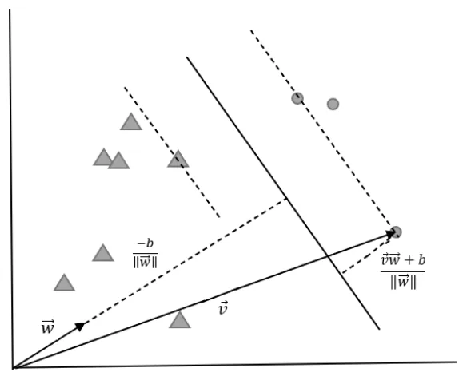 Hình 10. Một máy vector hỗ trợ tìm một siêu phẳng có lề cực đại tới các vector hỗ trợ gần nhất (Mainzer, 2020, tr. 141; hình vẽ theo Schuld et al., 2014). Về mặt toán học, có thể biến đổi một bài toán không thể phân tách thành một bài toán có thể phân tách tuyến tính ở số chiều cao hơn. Một máy vector hỗ trợ (SVM) cố gắng tìm một siêu phẳng phân tách tối ưu. Điều này liên quan đến việc phân tách một tập hợp các phần tử thành các lớp sao cho vùng lớn nhất có thể xung quanh các ranh giới lớp không chứa các đối tượng hoặc điểm dữ liệu. Như thể hiện trong Hình 10, siêu phẳng phân tách tốt nhất có khoảng cách lớn nhất đến các điểm dữ liệu gần nhất. Chúng được gọi là các vector hỗ trợ. Về mặt toán học, 224 Trí tuệ Nhân tạo của Các Hệ thống Phỏng thần kinh đây là một bài toán tối ưu hóa nhằm tìm các dải cực đại⃗ v⃗w+b |⃗w| giữa siêu phẳng và các vector hỗ trợ (Hình 10). Trong trường hợp hai chiều, các ràng buộc đối với mỗi vector hỗ trợ⃗vi của dữ liệu huấn luyện và phân loại ci ∈{−1, 1} của nó là⃗ w⃗vi + b ≥1, nếu ci = 1,⃗ w⃗vi + b ≤−1, nếu ci = −1. Các thuật toán được sử dụng phân loại dữ liệu bằng các hàm tuyến tính. Kiểu phân loại này chỉ thành công tối ưu cho các bài toán phân loại tuyến tính. Do đó, dữ liệu được ánh xạ bằng các ánh xạ φ : Rn →Rm từ các không gian dữ liệu Rn có số chiều thấp n vào các không gian dữ liệu Rm có số chiều cao hơn m > n. Trong Rn và Rm, các tích vô hướng phải tính toán được. Suy ra rằng một tích vô hướng ⟨xi, xj⟩ với các điểm dữ liệu xi và xj trong không gian đầu vào Rn có thể được chuyển dịch thành một tích vô hướng ⟨φ(xi), φ(xj)⟩ trong không gian Rm có số chiều cao hơn để tính trực tiếp các đặc trưng ở đó. Rm được xem là không gian đặc trưng. φ được ký hiệu là ánh xạ đặc trưng. Với cái gọi là thủ thuật hạt nhân (kernel trick), các bộ phân loại tuyến tính (trong các không gian có số chiều cao hơn) có thể được áp dụng cho dữ liệu có thể phân loại phi tuyến (trong các không gian có thể phân loại phi tuyến). Điều được đề cập là một hàm hạt nhân k(xi, xj) = ⟨φ(xi), φ(xj)⟩, nhờ đó một siêu phẳng, tức là một hàm tuyến tính, trong một không gian có số chiều cao hơn có thể được tính toán. Nhược điểm của máy vector hỗ trợ với các hàm hạt nhân là việc tính toán chúng rất phức tạp và tăng lên đáng kể theo kích thước của dữ liệu huấn luyện. Đây là nơi các thuật toán lượng tử có thể phát huy tác dụng, bằng cách tổng hợp lượng lớn dữ liệu huấn luyện dưới dạng các trạng thái chồng chất để có thể áp dụng các toán tử đơn vị lên chúng. Cho mục đích này, mỗi vector huấn luyện v được hiểu là một trạng thái lượng tử |v⟩, có thể được biểu diễn dưới dạng một sự chồng chất |v⟩= i αi|xi⟩ trên một cơ sở 2n chiều với các vector cơ sở |xi⟩. Các phiên bản lượng tử của tích vô hướng cổ điển của các hàm hạt nhân sử dụng thực tế là các trạng thái lượng tử tương ứng được chuẩn hóa như ⟨xi|xj⟩=⃗xi ·⃗xj |⃗xi||⃗xj|. Như trong cơ học lượng tử, một ma trận các tích vô hướng của các hàm hạt nhân sau đó được phân tích. Trong học không giám sát, hệ thống không thể tham chiếu đến dữ liệu huấn luyện trước đó để phân loại dữ liệu hoặc tối ưu hóa chiến lược. Thay vào đó, thông tin phải được trích xuất từ những điểm tương đồng và mẫu được nhận dạng của dữ liệu. Khi phân cụm dữ liệu, dữ liệu chưa được phân loại phải được phân chia thành các tập con theo cách này. Điều này đòi hỏi các thước đo khoảng cách của các điểm dữ liệu như khoảng cách Euclid (⃗a −⃗b) 2 đối với⃗a,⃗b ∈RN. Thước đo Hamming đo khoảng cách giữa hai chuỗi nhị phân bằng số lần lật để chuyển các bit 0 và 1 từ chuỗi này sang chuỗi kia. Một phương pháp phân cụm phổ biến sử dụng thuật toán k-means, ánh xạ tăng dần từng vector thuộc tính tới vector tâm gần nhất của nó để tạo thành một cụm cho mỗi tâm. Trong Hình 11, các vector tâm gần nhất của các cụm được tô màu đen. Các vector tâm được tính toán 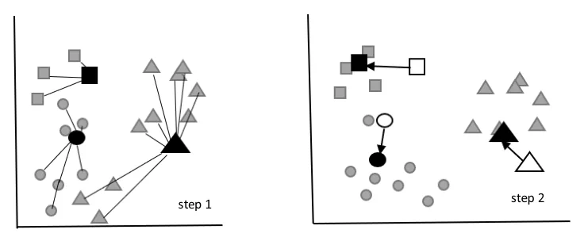 bước 1 bước 2 Hình 11. Thuật toán k-means của các cụm từng bước (Mainzer, 2020, tr. 141; hình vẽ theo Schuld et al., 2014). 226 Trí tuệ Nhân tạo của Các Hệ thống Phỏng thần kinh từ các cụm ở bước trước đó. Bước đầu tiên đòi hỏi phải chọn các vector tâm, trong đó số lượng k cụm là tùy ý. Thuật toán cuối cùng có thể dẫn đến các cực tiểu cục bộ vì cực tiểu toàn cục phụ thuộc vào vị trí của các tâm ban đầu được chọn. Một sự thay đổi trạng thái đoạn nhiệt được sử dụng, như trong nhiệt động lực học, ví dụ, khi một chất lỏng hoặc hợp kim được nung nóng được làm nguội. Quá trình này có thể dẫn đến không chỉ một trạng thái cuối toàn cục mà còn các vùng cục bộ của các trạng thái cuối khác nhau tùy thuộc vào các điều kiện ban đầu. Trong một phiên bản lượng tử của thuật toán k-means, một sự chồng chất của các vector thuộc tính hoặc các điểm dữ liệu được hình thành làm đầu ra trong mỗi bước của quá trình phân cụm. Điều này tổng hợp nhiều phép tính riêng lẻ và giảm thời gian tính toán. Các tập con của vector thuộc tính được coi là các trạng thái lượng tử. Để đạt được các cực tiểu cục bộ và toàn cục, một phiên bản lượng tử của tính toán đoạn nhiệt, vốn không dựa vào các cổng lượng tử riêng lẻ của một mạch lượng tử, được sử dụng. Mạng nơ-ron được mô hình hóa theo bộ não con người đóng vai trò thống trị trong ML. Bước đột phá của nghiên cứu AI trong thực tế phần lớn là nhờ khả năng của mạng nơ-ron trong việc sử dụng lượng dữ liệu lớn (Big Data), ví dụ: trong nhận dạng mẫu, lái xe tự hành, robot học và Công nghiệp 4.0 với các thuật toán học tập hiệu quả. Các ứng dụng thực tế đòi hỏi hàng nghìn nơ-ron và khớp thần kinh (synapse) trong các mạng nơ-ron đa tầng (học sâu), vốn chỉ được huấn luyện thống kê với một số lượng hữu hạn các tập dữ liệu đầu vào và đầu ra: Các xác suất kỳ vọng thống kê của đầu ra mong muốn (ví dụ: hành vi chuyển động của robot, ô tô và máy bay), đạt được bằng cách sử dụng dữ liệu huấn luyện phù hợp, được áp dụng. Máy tính lượng tử sẽ mang lại những lợi thế gì cho mạng nơ-ron và ML? Không chỉ là sự gia tăng đáng kể về tốc độ tính toán. Các khái niệm then chốt của cơ học lượng tử như sự chồng chất và sự rối lượng tử mở ra những viễn cảnh nhận thức mới mà các mạng nơ-ron cổ điển và thuật toán học tập mô phỏng theo sinh học bộ não không có được. Học máy lượng tử (QML) mở ra những khả năng mới cho AI. Những kiến thức cơ bản về mạng nơ-ron cổ điển và thuật toán học tập đã được giới thiệu trong Chương 9 (Rumelhart et al., 1986; Mainzer, 2019, Chương 7.2). Các hàm kích hoạt, ít nhất phải gần giống với bộ não, về mặt toán học phải là phi tuyến. Ngoài ra, mạng nơ-ron là các hệ thống mở trao đổi thông tin với môi trường của chúng và theo nghĩa này về mặt vật lý là tiêu tán (dissipative). Do đó, vấn đề với các phiên bản lượng tử của mạng nơ-ron là làm thế nào để nhúng các hệ thống phi tuyến và tiêu tán vào khuôn khổ tuyến tính và đơn vị của cơ học lượng tử. Mô hình cơ học lượng tử sau đây của một nơ-ron lượng tử có khả năng mô phỏng các nơ-ron cổ điển với hàm kích hoạt sigmoid hoặc hàm bước, trong đó các trạng thái của hàm đầu vào được tổng hợp trong các trạng thái chồng chất cơ học lượng tử. Điều này làm cho các hệ thống phân loại và bộ nhớ liên kết trở nên khả thi trong khuôn khổ cơ học lượng tử: Trong một mô hình toán học, một nơ-ron được định nghĩa là một hàm biến đổi n biến đầu vào x1, . . . , xn thành một giá trị đầu ra a = σ(w1x1 + · · · + wnxn + b) với các trọng số khớp thần kinh wi và một giá trị độ lệch (bias) b (Hình 12) (Cao et al. 2017, tr. 3). Hàm kích hoạt σ(z) là phi tuyến. Một ví dụ sẽ là hàm bước với giá trị hàm σ(z) = 1 cho z > 0 và σ(z) = −1 trong trường hợp ngược lại. Một ví dụ về hàm kích hoạt liên tục là hàm sigmoid tanh (z) = ez−e−z ez+e−z . Trong các ví dụ này, giá trị đầu ra a ∈[−1, 1] được gọi là trạng thái của nơ-ron. Hình 12. Một hàm nơ-ron cổ điển (Mainzer, 2020, tr. 147). 228 Trí tuệ Nhân tạo của Các Hệ thống Phỏng thần kinh Trong một nơ-ron lượng tử, trạng thái lượng tử của các đầu vào, các qubit phụ trợ và các qubit đầu ra được biểu diễn bởi một mặt cầu Bloch (Hình 13). Một trạng thái lượng tử được biểu diễn bởi một mũi tên quay trong một mặt cầu và chỉ ra qubit tương ứng trên bề mặt của mặt cầu. Ry(t) ký hiệu toán tử quay mũi tên trạng thái một góc t. Một qubit ở trạng thái lượng tử Ry 2 + π 2 2 + π 2 4 + π 4 a π a π a π |1⟩ với giá trị vô hướng a(−1 ≤a ≤1). Các giá trị cực trị a = −1 và a = 1 tương ứng với các trạng thái lượng tử |0⟩ và |1⟩ tương tự như các trường hợp cổ điển với đầu ra nhị phân 0 và 1. Trường hợp a(−1 < a < 1) biểu diễn nơ-ron lượng tử trong một sự chồng chất của |0⟩ và |1⟩. Ry(t) = exp |0⟩= cos |0⟩+ sin 2 −itY là một phép toán lượng tử tương ứng với phép quay quanh góc t với một toán tử Pauli quanh trục Y của các qubit. Nói chung, các nhãn x, y và z cho các toán tử Pauli X, Y và Z được phân biệt tương ứng. Trong trường hợp cổ điển, các đầu vào x1, . . . , xn ∈{0, 1} nằm trong một tổ hợp tuyến tính Θ = w1x1 + · · · + wnxn + b. Trong một mạch lượng tử, một trạng thái lượng tử |x⟩= |x1 . . . xn⟩ được sử dụng làm trạng thái điều khiển. Toán tử quay Ry(2wi) được áp dụng vào một qubit phụ trợ dưới điều kiện của qubit thứ i, tiếp theo là phép áp dụng độ lệch Ry(2b). Hệ số 2 cân bằng giá trị cơ học lượng tử 1 2. Đây là cách phép quay tổng thể Ry(2Θ) hình thành khi được áp dụng vào qubit phụ trợ dưới điều kiện trạng thái |x⟩ của các nơ-ron đầu vào. 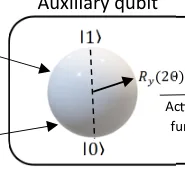 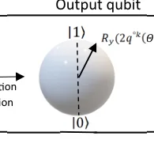 |1⟩ |1⟩ (2 ° ( ))|0⟩ (2Θ)|0⟩ ⋮ hàm |0⟩ |0⟩ Hình 13. Hàm nơ-ron lượng tử (Mainzer, 2020, tr. 147; hình vẽ theo Cao et al., 2017, tr. 3–4). Trong bước tiếp theo Ry(2σ(Θ)), hàm kích hoạt phi tuyến σ được áp dụng. Phép quay này được xấp xỉ bởi một lớp các mạch được gọi là mạch lặp-đến-khi-thành-công (repeat-until-success - RUS). Hình 14 minh họa một mạch RUS với một toán tử quay Ry(2q(Θ)). Hình 15 minh họa hàm kích hoạt phi tuyến q(Θ) = arctan (tan2Θ). Việc áp dụng mạch RUS vào qubit đầu ra phụ thuộc vào phép đo các qubit phụ trợ. Nếu kết quả là |0⟩, phép quay với 2q ◦k(Θ) được áp dụng thành công vào qubit đầu ra. Phép áp dụng lặp k lần lên chính nó, tương ứng là hợp thành k lần với chính nó, được ký hiệu là q ◦k(Θ). Trong trường hợp kết quả là |1⟩, mạch RUS thực hiện một phép quay Ry(π 2 ) lên qubit đầu ra. Trong trường hợp này, phép toán được hiệu chỉnh bằng Ry(−π 2 ) và mạch được áp dụng cho đến khi đo được |0⟩. Đó chính là ý nghĩa của lặp-đến-khi-thành-công (RUS). (2 ) − (2 ) Hình 14. Mạch RUS của một nơ-ron lượng tử (Mainzer, 2020, tr. 147; hình vẽ theo Cao et al., 2017, tr. 3). Hình 15. Biểu diễn lượng tử của hàm kích hoạt phi tuyến (Mainzer, 2020, tr. 147; hình vẽ theo Cao et al., 2017, tr. 3). 230 Trí tuệ Nhân tạo của Các Hệ thống Phỏng thần kinh (2 ) (2 ) (2 ) (2 ) (a) | ⟩ • | ⟩ |0⟩ |0⟩ ( ) |0⟩ (2 ° ( ))|0⟩ (b) Hình 16. (a) Mạch RUS hai lần lặp; (b) mạch RUS k lần lặp (Mainzer, 2020, tr. 149; hình vẽ theo Cao et al., 2017, tr. 3–4). ◦k(Θ)) có thể được biến đổi theo các bước đệ quy với mạch RUS của Hình 14. Hình 16(a) minh họa hai lần lặp của mạch RUS. Hình 16(b) minh họa một mạch RUS k lần. Đối với k = 2, phép áp dụng hai lần thu được từ Hình 16(a). Mục đích của việc áp dụng nhiều lần mạch RUS là để xấp xỉ về mặt cơ học lượng tử giá trị ngưỡng cho các trạng thái thay thế “phát xung” (1) và “không phát xung” (0) của một nơ-ron: Nếu Θ > π/4, thì qubit đầu ra phải càng gần Ry(π)|0⟩= |1⟩ càng tốt. Nếu Θ < π/4, thì qubit đầu ra phải càng gần Ry(0)|0⟩ càng tốt. Phân tích ngưỡng này là nền tảng cho việc mô hình hóa cơ học lượng tử của một mạng nơ-ron. Trong động lực học của mạng nơ-ron, các trạng thái mục tiêu với các mẫu cần được nhận dạng hoặc tìm thấy được gọi là các điểm hút (attractors). Mỗi lần lặp của một RUS nhằm mục đích đưa góc đầu vào Θ ngày càng tiến gần hơn đến điểm hút của nó. Θ càng gần giá trị ngưỡng thì càng cần nhiều lần lặp hơn để tiến gần đến điểm hút. Thời gian chạy của các mạch RUS phụ thuộc vào thành công và thất bại của mỗi phép đo. Trung bình, độ sâu của mạch có cỡ bậc O(14k) đối với k lần lặp. Hình 17. Sự chồng chất của các phép quay đầu vào trong một mạch RUS (Mainzer, 2020, tr. 149; hình vẽ theo Cao et al., 2017, tr. 5). Một ưu điểm khác của các mạch RUS là việc áp dụng chúng vào các trạng thái chồng chất cơ học lượng tử. Trong mạch thể hiện ở Hình 17, đầu vào được điều khiển bởi một thanh ghi T chiều ở trạng thái chồng chất (Cao et al., 2017, tr. 5). Do đó, phép quay có điều kiện của qubit đầu vào là T i=1 |i⟩⟨i| ⊗Ry(2ϕi). Nếu kết quả đo là 0, trạng thái cuối là 1 √ i=1 Fi|i⟩⊗|0⟩⊗Ry(2q(ϕi))|ψ⟩), trạng thái này cũng nằm trong một sự chồng chất của các trạng thái đầu ra đã quay. Hệ số Fi làm thay đổi các biên độ xác suất ban đầu của sự chồng chất và phụ thuộc vào các góc ϕi cũng như các lần thất bại và thành công trong việc áp dụng mạch RUS. Tương tự như vỏ não mới (neocortex) của bộ não con người, nhiều tầng nơ-ron có thể được đưa vào để tăng hiệu suất nhận dạng mẫu của mạng nơ-ron. Trong một mạng nơ-ron truyền thẳng (feedforward), thông tin từ các nơ-ron đầu vào được biến đổi từng bước (truyền thẳng) qua các tầng này đến các nơ-ron đầu ra: Về mặt toán học, một mạng nơ-ron truyền thẳng cổ điển được biểu diễn bởi một hàm nhị phân f : {−1, +1}n →{−1, +1}m, biến đổi một đầu vào gồm n bit thành một đầu ra gồm m bit. Khi làm như vậy, chúng đi qua các tầng trung gian (Hình 9.1). Dựa trên tổ hợp tuyến tính Θi = j wijxj + bi của các tín hiệu đầu vào có trọng số, trạng thái cuối được xác định thông qua các tầng trung gian. Các tầng trung gian trong ví dụ sau đây được tính bằng hàm bước σ 232 Trí tuệ Nhân tạo của Các Hệ thống Phỏng thần kinh với σ(Θi) = +1 cho Θi > 0 và σ(Θi) = −1. Mạng này có thể được sử dụng như một hệ thống phân loại. Ví dụ, một đầu vào x ∈{−1, +1}n có thể được biểu diễn về mặt đồ họa bởi một mẫu đen trắng gồm n pixel, mẫu này sẽ được phân loại thành m hạng mục khác nhau. Vector thu được từ việc áp dụng theo từng phần tử của σ vào vector y được ký hiệu là σ(y). Gọi tầng đầu vào ở trạng thái z(0) = x với l tầng tiếp theo ở các trạng thái z(1), . . . , z(l−1) và tầng đầu ra z(l). W(i) ký hiệu ma trận các trọng số khớp thần kinh kết nối tầng thứ (i −1) với tầng thứ i tiếp theo, trong đó 1 ≤i ≤l. Độ lệch của tầng thứ i là b(i). Hình 18 minh họa cách phép biến đổi từ tầng i sang từng nơ-ron riêng lẻ ở tầng thứ i + 1 tiếp theo được hiện thực hóa trong một mạng nơ-ron truyền thẳng cổ điển (Cao et al., 2017, tr. 9). Mạng nơ-ron truyền thẳng tính toán trạng thái của các tầng đơn lẻ từng bước với z(i) = σ(W(i)z(l−1) + b(i)) và hàm mạng z(i) = f(x). Đối với một tập dữ liệu huấn luyện cho trước gồm các đầu vào {x1, . . . , xT } và các đầu ra tương ứng {y1, . . . , yT }, mục tiêu huấn luyện là tối thiểu hóa hàm mất mát trên dữ liệu huấn luyện, tức là ∥yj −f(xj)∥2 min W,b 2. j=1 Hình 18. Hàm nơ-ron cổ điển (Hình 12) từ tầng i đến tầng i + 1 (Mainzer, 2020, tr. 150; hình vẽ theo Cao et al., 2017, tr. 9). Hình 19. Hàm nơ-ron lượng tử giữa tầng thứ i và thứ i + 1 thông qua k lần lặp của một mạch RUS (Mainzer, 2020, tr. 151; hình vẽ theo Cao et al., 2017, tr. 9). Một qubit được đưa vào cho mỗi nơ-ron để nhúng cơ học lượng tử mạng nơ-ron. Đối với các mạch RUS, k qubit phụ trợ được sử dụng. Hình 19 minh họa cách phép biến đổi từ tầng i sang từng nơ-ron riêng lẻ ở tầng thứ i+1 tiếp theo được hiện thực hóa bằng k lần lặp của các mạch RUS. Ở đây, các qubit tương ứng với tầng trước đóng vai trò là thanh ghi điều khiển để xác định góc đầu vào ϕ(i+1) j cho qubit thứ j ở tầng i + 1. Các lần lặp RUS xấp xỉ động lực học ngưỡng, vốn được hiện thực hóa trong mạng nơ-ron cổ điển bằng một hàm kích hoạt. Các nơ-ron cổ điển được thay thế bằng các nơ-ron lượng tử trong phiên bản lượng tử của mạng nơ-ron. Phép tính cổ điển z(i) = σ(W(i)z(l−1)+b(i)) của các nơ-ron trong từng tầng được xấp xỉ bởi các mạch RUS với k lần lặp q ◦k(ϕ). Tóm lại, có thể chứng minh rằng một thuật toán lượng tử có thể mô phỏng một mạng nơ-ron truyền thẳng cổ điển nếu nó có thể tạo ra các trạng thái lượng tử |z(i)⟩, từ đó các trạng thái cổ điển tương ứng z(i) ∈{−1, +1}m thu được cho mỗi tầng i của mạng nơ-ron cổ điển. Mạng nơ-ron đa tầng với quá trình xử lý thông tin truyền thẳng rất giống với mạng nơ-ron sinh học như vỏ não mới của bộ não con người. Ngược lại, các mạng hồi tiếp (feedback networks) với phản hồi 234 Trí tuệ Nhân tạo của Các Hệ thống Phỏng thần kinh được định hướng theo các mạng tinh thể nguyên tử của vật lý chất rắn như mô hình Ising. Một ví dụ nổi tiếng là mạng Hopfield, bắt nguồn từ nhà vật lý chất rắn và sau này là nhà khoa học thần kinh John Hopfield. Hình ảnh và mẫu có thể được huấn luyện bằng cách điều chỉnh các trọng số kết nối cho phù hợp. Các hình ảnh tương tự bị nhiễu và không đầy đủ sau đó có thể được nhận dạng trong các bước hiệu chỉnh. Một mạng Hopfield chỉ bao gồm một tầng hoạt động như cả tầng đầu vào và tầng đầu ra (Hopfield, 1982; Mainzer, 1994, Chương 2.34). Mỗi nơ-ron được kết nối với mọi nơ-ron khác ngoại trừ chính nó. Như với các mạng nơ-ron khác, trạng thái zi ∈{−1, +1} của mỗi nơ-ron với 1 ≤i ≤n tương ứng với một bit cổ điển. Một hệ thống Hopfield bắt đầu với một trạng thái ban đầu 1 ≤i ≤n làm đầu vào. Điểm đặc trưng của mạng Hopfield là các trọng số của các kết nối giữa các nơ-ron i và j có tính đối xứng, tức là wij = wji. Vì cùng các nơ-ron được sử dụng cho đầu vào và đầu ra, mạng Hopfield còn được gọi là mạng tự liên kết (auto-association network). Các trọng số có thể thay đổi đồng bộ hoặc bất đồng bộ. Nếu tất cả các trọng số thay đổi đồng thời trong một bước lặp, sự thay đổi là đồng bộ. Trong một sự thay đổi bất đồng bộ, một nơ-ron trước tiên được chọn ngẫu nhiên và sau đó được đặt thành một trạng thái mới tùy thuộc vào trạng thái của các nơ-ron được kết nối khác. Trong giai đoạn huấn luyện, một số lượng l mẫu ban đầu được đưa vào mạng bằng cách thiết lập các trọng số tương ứng. Mục tiêu là tìm một ma trận trọng số đối xứng. Theo một phiên bản của quy tắc học Hebb, quy tắc tính toán cho nhiệm vụ học tập có thể là M ∈Rl×N với N là số chiều của một mẫu: l p=1 Mpi · Mpj nếu i̸ = j, wij = wji = 0 ngược lại. Dung lượng bộ nhớ của mạng Hopfield đối với các mẫu khác nhau được xác định bởi tỷ lệ của các biến l/N. Trong giai đoạn kiểm tra, mạng phải đối mặt với một mẫu bị nhiễu và trạng thái của các nơ-ron được thiết lập tương ứng. Trong trường hợp thay đổi bất đồng bộ, trạng thái của một nơ-ron được chọn ngẫu nhiên được thiết lập với các giá trị ngưỡng hj tại mỗi bước lặp theo quy tắc sau: 1 nếu j wijzj > hj, zi = −1 ngược lại. Điều này tạo ra một chuỗi các mẫu lan truyền trên lưới của hệ thống Hopfield. Có thể chứng minh rằng chuỗi này không còn thay đổi khi nó đạt đến trạng thái tương ứng với một trong các mẫu đã lưu trữ. Hơn nữa, theo quy tắc Hebb, có sự đảm bảo rằng động lực học này của mạng Hopfield luôn dẫn đến một trạng thái cuối ổn định. Ba trạng thái cuối ổn định là khả dĩ, theo đó một mẫu được nhận dạng đúng, một mẫu đảo ngược được nhận dạng, hoặc không có mẫu nào được nhận dạng (ví dụ: do nhiễu quá mức). Trong một mạng tinh thể Ising vật lý, mà mạng Hopfield ban đầu được định hướng theo đó, các nút mạng (“nơ-ron”) được chiếm giữ bởi các nguyên tử hoặc ion với các trạng thái spin thay thế ±1. Sự thay đổi trạng thái của chúng tương ứng với các trạng thái năng lượng mà sự chuyển pha của chúng được mô tả bởi một hàm năng lượng. Một hàm năng lượng tương ứng tồn tại cho mạng Hopfield wijzizj + hizi. 2 i i̸=j Giá trị của hàm này giảm dần theo từng bước lặp theo quy tắc Hebb đã chỉ định. Giá trị năng lượng chỉ giữ ổn định ở các trạng thái cuối đã đề cập. Trong biểu diễn hình học của phân bố năng lượng của mạng Hopfield dưới dạng một cảnh quan năng lượng (energy landscape), các trạng thái cuối ổn định đại diện cho các cực tiểu cục bộ (“thung lũng”). Chúng được gọi là các điểm hút của động lực học mạng nơ-ron. Mọi giá trị đầu vào của mạng nằm trong vùng lân cận thích hợp của một cực tiểu cục bộ sẽ hội tụ về điểm hút này để được lưu trữ tại đó. Trạng thái năng lượng này có thể được hình dung như một quả bóng lăn vào thung lũng tương ứng của cảnh quan năng lượng. Do đó, mạng Hopfield đáp ứng các tính chất của một bộ nhớ liên kết. Trong phiên bản lượng tử của mạng Hopfield, các nơ-ron được thay thế bằng n qubit. Để hiện thực hóa động lực học ngưỡng, k qubit phụ trợ bổ sung được đưa vào cho các bước lặp của các mạch RUS (Hình 16(b)). Gọi ij là nơ-ron được chọn 236 Trí tuệ Nhân tạo của Các Hệ thống Phỏng thần kinh từ n nơ-ron trong bước lặp thứ j. Trạng thái kết nối của các qubit còn lại sau đó được sử dụng làm trạng thái đầu vào |ϕ⟩ cho mạch RUS (Hình 16). Mạch này tạo ra một qubit đầu ra gần với trạng thái |0⟩ nếu tổng các trạng thái có trọng số là j̸=i1 wji1zj < hi1, và |1⟩ trong trường hợp ngược lại. Mạch lượng tử tương ứng hoạt động theo cách tương tự như được thể hiện trong Hình 18 và 19. Các lần lặp RUS được thực hiện nhiều lần liên tiếp và các qubit đầu ra tương ứng được đo. Đa số các kết quả đo này sẽ dẫn đến trạng thái đúng với xác suất cao. Tóm lại, một mạng các nơ-ron lượng tử mô phỏng t lần lặp của một mạng Hopfield với n nơ-ron nếu, đối với một chuỗi các trạng thái z(1), . . . , z(t) của mạng Hopfield, hệ lượng tử chạy qua các trạng thái lượng tử tương ứng |z(1)⟩, . . . , |z(t)⟩ và từ mỗi |z(i)⟩ trạng thái z(i) tương ứng có thể được tính toán hiệu quả. Các mẫu phát triển trong một hệ thống Hopfield qua các pha động lực học được xác định bởi các quy tắc Hebb. Động lực học này dẫn đến các trạng thái cuối ổn định, được gọi là các điểm hút. Hình 20 minh họa động lực học điểm hút này với một mạng Hopfield gồm các nơ-ron lượng tử. Mạng Hopfield bao gồm một lưới vuông với 3 × 3 pixel nhị phân (Hình 20(a)). Các nơ-ron lượng tử tương ứng với các trạng thái khả dĩ của chúng lại được biểu diễn bởi các mặt cầu Bloch. Trong Hình 20(b), các trọng số của mạng Hopfield được thiết lập bằng các quy tắc Hebb sao cho hai mẫu có dạng chữ “C” và chữ “Y” tạo thành các trạng thái mục tiêu hoặc điểm hút của hệ thống. Trong ví dụ về chữ “C”, mẫu bị khiếm khuyết ở trạng thái ban đầu. Bây giờ, chữ “C” phải được nhận dạng trong một chuyển pha tới điểm hút C. Trong phiên bản lượng tử, ba qubit phía trên ở trạng thái chồng chất |+⟩= 1 √ 2(|0⟩+ |1⟩) của cả hai trạng thái bit nhị phân 0 và 1, tương ứng với ba pixel phía trên bị khiếm khuyết ở giai đoạn ban đầu của mạng Hopfield (Hình 20(a)). Hình 20(c) cho thấy 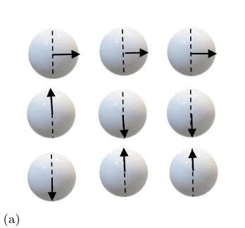 + + + 1 0 0 0 1 1 (a) (b) (c) Hình 20. (a) Trạng thái ban đầu của hệ thống Hopfield với sự chồng chất |+⟩ (các pixel khiếm khuyết); (b) mẫu của các điểm hút “C” và “Y”; (c) các chuyển pha từ mẫu ban đầu bị khiếm khuyết sang điểm hút “C” (Mainzer, 2020, tr. 154–155; hình vẽ theo Cao et al., 2017, tr. 17). động lực học của sự phát triển mẫu trong ba chuyển pha từ mẫu ban đầu sang điểm hút “C”. Các trạng thái chồng chất được biểu diễn bằng các mức độ tô bóng giữa đen (1) và trắng (0) cho đến khi trạng thái cuối (điểm hút) là đen hoặc trắng đối với tất cả các pixel. 238 Trí tuệ Nhân tạo của Các Hệ thống Phỏng thần kinh Mặc dù các hệ thống Hopfield hoạt động song song, nhưng chúng mang tính tất định, tức là mỗi nơ-ron đều không thể thiếu để nhận dạng chữ cái, chẳng hạn. Tuy nhiên, các tế bào thần kinh sống khó có thể hành xử giống như các hệ hành tinh tất định. Hơn nữa, các mô hình mạng kỹ thuật tương ứng có những nhược điểm lớn. Hãy tưởng tượng một quá trình tối ưu hóa hoặc một quá trình ra quyết định theo nghĩa của Hopfield như một sự giảm năng lượng. Khi đó, quá trình học có thể bị mắc kẹt trong các thung lũng không phải là sâu nhất trong toàn bộ mạng. Trong một quá trình tối ưu hóa, các thung lũng này chỉ tương ứng với các cực tiểu cục bộ hoặc lời giải cục bộ. Trong cảnh quan thế năng của phân bố năng lượng, các thung lũng này tương ứng với các trạng thái cân bằng cục bộ trong mạng. Do đó, Sejnowski và Hinton đã đề xuất một phương pháp để dẫn dắt mạng đến các thung lũng ngày càng sâu hơn (Ackley et al., 1985). Ví dụ, nếu một quả cầu đã chạm tới một thung lũng trong dãy núi năng lượng, thì gợi ý hiển nhiên và dễ hình dung là lắc nhẹ toàn bộ hệ thống để quả cầu có thể rời khỏi thung lũng nhằm chiếm giữ các cực tiểu thấp hơn. Các chuyển động lắc mạnh hơn hoặc yếu hơn làm thay đổi xác suất vị trí của quả cầu, giống như một phân tử khí mà các va chạm của nó bị ảnh hưởng bởi sự thay đổi áp suất và nhiệt độ. Do đó, Sejnowski và Hinton đã đặt tên cho mạng xác suất của họ là “máy Boltzmann” (BM) theo tên người sáng lập cơ học thống kê và nhiệt động lực học. Trong nhiệt động lực học của chất khí và chất lỏng, chúng ta xử lý một lượng lớn các phân tử và nguyên tử tương tác với nhau. Tương tự, các bài toán tối ưu hóa tổ hợp liên quan đến lượng dữ liệu lớn trong đó phải tìm ra các lời giải tối ưu. Một ví dụ sẽ là tối ưu hóa luồng giao thông, trong đó từng chiếc ô tô là các phần tử của một hệ thống phức tạp. Bài toán tìm một cực tiểu toàn cục trong mạng và tránh các cực tiểu phụ nảy sinh về mặt vật lý trong vật lý chất rắn của quá trình nuôi cấy tinh thể. Để mang lại cho tinh thể một cấu trúc hoàn hảo nhất có thể, nó phải được làm nguội từ từ. Các nguyên tử phải có thời gian để tìm vị trí trong cấu trúc mạng tinh thể với tổng năng lượng tối thiểu và do đó ở trạng thái cân bằng. Ở nhiệt độ đủ cao, các phân tử riêng lẻ có thể thay đổi trạng thái của chúng theo cách sao cho tổng năng lượng tăng lên. Trong trường hợp này, vẫn có thể rời khỏi các cực tiểu cục bộ. Tuy nhiên, xác suất xảy ra điều này giảm dần khi nhiệt độ giảm. Quá trình này còn được gọi là tôi luyện mô phỏng (simulated annealing). Nó cũng được gọi là hạ dốc gradient (gradient descent) hoặc leo dốc gradient (gradient ascent), tùy thuộc vào hướng mà phân bố năng lượng thay đổi. Quá trình này được sử dụng trong sản xuất thép để tránh sự hình thành các khuyết tật vật liệu cục bộ trong các giai đoạn làm nguội phù hợp và đạt được một cấu trúc toàn cục và đồng nhất. Các mạng xác suất cũng rất giống với các mạng nơ-ron sinh học. Nếu các tế bào bị loại bỏ hoặc các trọng số khớp thần kinh riêng lẻ bị thay đổi một lượng nhỏ, BM tỏ ra có khả năng chịu lỗi đối với các nhiễu loạn nhỏ, giống như bộ não con người trong trường hợp tổn thương nhỏ do tai nạn. Bộ não con người hoạt động với các tầng xử lý tín hiệu song song. Ví dụ, giữa tầng đầu vào cảm giác và tầng đầu ra vận động, có các bước trung gian bên trong của quá trình xử lý tín hiệu nơ-ron không được kết nối với thế giới bên ngoài và có thể nói là bị “ẩn”. Do đó, chúng ta nói đến các nơ-ron “ẩn” (hidden) đối lập với các nơ-ron “hiện” (visible). Trên thực tế, năng lực biểu diễn và giải quyết vấn đề của các mạng nơ-ron kỹ thuật có thể được tăng lên bằng cách chèn thêm các tầng thích ứng khác nhau với càng nhiều nơ-ron càng tốt. Tầng thứ nhất nhận mẫu đầu vào. Mỗi nơ-ron trong tầng này có kết nối đến mọi nơ-ron trong tầng tiếp theo. Kết nối nối tiếp tiếp tục cho đến khi đạt đến tầng cuối cùng và phát ra một mẫu hoạt động. BM là các mạng nơ-ron với các thuật toán học ngẫu nhiên (Mainzer, 1994, tr. 329–333). Trong trường hợp này, thuật toán học mô phỏng quá trình tôi luyện, dẫn đến các trạng thái cân bằng hoặc cực tiểu và gắn liền với các lời giải bài toán tương ứng, chẳng hạn như trong các bài toán tối ưu hóa. Như với hệ thống Hopfield, các nơ-ron chỉ nhận các trạng thái nhị phân za ∈ {−1, +1}, trong đó a = 1, . . . , N và N là số lượng nơ-ron. Trong một BM, các nơ-ron ẩn với trạng thái zh được phân biệt với các nơ-ron hiện với trạng thái zv. Các trạng thái kết hợp của các nơ-ron ẩn và hiện được ký hiệu là za = (zv, zh) hoặc theo ký hiệu vector z = (v, h). Hình 21 cho thấy một 240 Trí tuệ Nhân tạo của Các Hệ thống Phỏng thần kinh Hình 21. Một BM cổ điển với năm nơ-ron hiện và ba nơ-ron ẩn (Mainzer, 2020, tr. 157). BM với ba nơ-ron ẩn và năm nơ-ron hiện kết nối hoàn toàn với nhau (ngoại trừ với chính chúng). Tương tự như hệ thống Hopfield, một BM được kết nối với một hàm năng lượng của mô hình Ising: ⎛ ⎞ ⎝ ⎠, wabzazb + baza a a,b với các trọng số wab của các kết nối của các nơ-ron có trạng thái za và zb và các giá trị độ lệch ba. Ở trạng thái cân bằng, xác suất Pv cho trạng thái v của các nơ-ron hiện được cho thông qua phân bố Boltzmann trên trạng thái h của các nơ-ron ẩn, tức là h e−Ez z e−Ez . Mục tiêu của thuật toán học ngẫu nhiên của BM là thiết lập các trọng số wab và các tham số ba sao cho phân bố xác suất Pv tiến càng gần càng tốt đến phân bố xác suất P data v của dữ liệu huấn luyện. Để làm điều này, hàm hợp lý logarit trung bình (log-likelihood) cho Pv và P data v phải được cực đại hóa hoặc hàm hợp lý logarit âm được cực tiểu hóa (Arnin et al., 2016, tr. 2): h e−Ez v log Pv = − v log z e−Ez . v v Việc cực tiểu hóa đạt được bằng phương pháp hạ dốc gradient như đã biết từ nhiệt động lực học. Tại mỗi bước lặp của thuật toán học này, các trọng số và tham số θ ∈{wab, ba} được thay đổi một lượng nhỏ theo hướng ngược lại với gradient, tức là δθ = −η∂θL, với tốc độ học η cho kích thước của các bước học. Điều tối quan trọng đối với hiệu quả của thuật toán học này là khả năng tính toán các gradient ∂θL. Áp dụng vào hàm log-likelihood, điều này cho ra h ∂θEze−Ez z ∂θEze−Ez ∂θL = h e−Ez − v z e−Ez v = ⟨∂θEz⟩v −⟨∂θEz⟩, với trung bình Boltzmann ⟨· · · ⟩v và ⟨· · · ⟩của các biến hiện tự do và cố định. Trung bình là ⟨· · · ⟩v := v P data v ⟨· · · ⟩v. Nếu bây giờ chúng ta chèn hàm năng lượng Ez, chúng ta thu được những thay đổi về trọng số wab và tham số ba cần thiết để đạt được mục tiêu của thuật toán học của BM, cụ thể là — như đã giải thích ở trên — để xấp xỉ phân bố xác suất Pv càng gần càng tốt với phân bố xác suất P data v của dữ liệu huấn luyện: ∂ba = η(⟨za⟩v −⟨za⟩, ∂ba = η(⟨zazb⟩v −⟨zazb⟩. Việc kết nối dữ liệu với trạng thái của các nơ-ron hiện được gọi là “kẹp” (clamping). Các bước học của hạ dốc gradient được thể hiện ở sự khác biệt giữa các biến hiện được kẹp v và các giá trị trung bình không được kẹp. Vì các giá trị trung bình có thể được ước lượng bằng cách lấy mẫu, gradient có thể được ước lượng một cách hiệu quả. Tuy nhiên, điều kiện tiên quyết là việc lấy mẫu như vậy có thể được thực hiện một cách hiệu quả. 242 Trí tuệ Nhân tạo của Các Hệ thống Phỏng thần kinh Trong phiên bản lượng tử của một BM, các bit của hàm năng lượng được thay thế bằng các qubit. Số lượng N biến tương ứng với 2N trạng thái khả dĩ. Thay vì các vector N chiều như trong BM cổ điển, các toán tử 2N chiều được sử dụng trong cơ học lượng tử. Thay cho hàm năng lượng cổ điển, một toán tử Hamilton được xem xét, toán tử này được biểu diễn bởi một ma trận đường chéo 2N × 2N (Arnin et al., 2016, tr. 2): ⎛ ⎞ ⎝ ⎠. wabσz aσz baσz b + a a a,b Trong ma trận đường chéo của toán tử Hamilton, các phần tử đường chéo là các giá trị năng lượng tương ứng với tất cả 2N trạng thái nhị phân khả dĩ z theo thứ tự từ điển. Để tạo ra toán tử Hamilton, za trong hàm năng lượng cổ điển được thay thế bằng ma trận 2N × 2N sau đây: σz a = I ⊗. . . ⊗ a−1 I ⊗σa ⊗I ⊗. . . ⊗I N−a . 1 0 và 0 1 1 0 ma trận Pauli σa = . Trong ma trận của toán tử Hamilton, 0 −1 wab và ba là các đại lượng vô hướng. Hình 22 phân biệt giữa các qubit hiện và qubit ẩn của một BM lượng tử, được kết nối với nhau (tương ứng bằng các đường nét đứt và nét liền). Các trạng thái riêng của toán tử Hamilton này là các trạng thái chồng chất, được ký hiệu là |v, h⟩ cho các biến hiện cổ điển h và các biến ẩn cổ điển h. Trong các bước tiếp theo, các phiên bản lượng tử cho xác suất Pv của trạng thái v của các nơ-ron hiện và cho hàm log-likelihood âm L phải được cực tiểu hóa và gradient ∂θL của nó sau đó phải được xác định. Mặc dù các trạng thái chồng chất được sử dụng trong các phép tính lượng tử, việc huấn luyện các BM lượng tử lớn với mức độ đan lưới cao của chúng Hình 22. Một BM lượng tử với các qubit hiện và ẩn (Mainzer, 2020, tr. 159, hình vẽ theo Amin et al., 2016, tr. 2). tỏ ra không hiệu quả trong thực tế. Do đó, người ta đã đề xuất cực tiểu hóa một cận trên được định nghĩa phù hợp của L thay vì hàm log-likelihood âm L. Nhưng ngay cả trong trường hợp này, hiệu quả của BM lượng tử phụ thuộc vào kích thước của nó và mức độ kết nối lẫn nhau của các phần tử của nó. Do đó, các BM bị ràng buộc (constrained BMs) đã được giới thiệu trong trường hợp cổ điển, vốn tỏ ra khả thi trong thực tế. Tương ứng, các BM lượng tử bị hạn chế (restricted quantum BMs) có thể được thiết kế trong đó không có các kết nối ngang giữa các nơ-ron ẩn. Khi đó chúng ta nói đến các BM lượng tử bán ràng buộc. Cũng có các BM bị ràng buộc cổ điển không có kết nối ngang giữa các nơ-ron hiện. Một ví dụ đơn giản sẽ minh họa hiệu quả của loại ràng buộc này ngay cả trong trường hợp cổ điển. Trong Hình 23, máy Boltzmann bị hạn chế cổ điển (BBM) bao gồm hai tầng nơ-ron (Salakhutdinov et al., 2007; Mainzer, 2019, tr. 163–164). Các nơ-ron hiện zv biểu diễn các đề xuất với các giá trị rời rạc từ 1 đến Q. Giá trị thứ q zq v được kích hoạt với một xác suất phụ thuộc vào đầu vào. Kết nối giữa nơ-ron ẩn thứ k và giá trị thứ q của nơ-ron hiện thứ i được gán trọng số wq ki. 244 Trí tuệ Nhân tạo của Các Hệ thống Phỏng thần kinh Hình 23. Một máy Boltzmann bị ràng buộc cổ điển (BBM) (Mainzer, 2020, tr. 160). Các trọng số của một BBM được học bằng cách cực đại hóa xác suất p(v) của các đơn vị hiện (“đề xuất”) v. Nó phụ thuộc vào sự phân bố của “năng lượng tính toán” E(v, h) trong toàn bộ mạng. Mạng được “làm nguội” giống như một chất lỏng phân tử đến một trạng thái cân bằng gắn liền với các đề xuất. Hạ dốc gradient của quá trình làm nguội này tương ứng với một quy tắc học ngẫu nhiên. Các kiến trúc máy tính của BM chỉ là một ví dụ về tính toán “đoạn nhiệt”, trong đó các bài toán tối ưu hóa cho lượng dữ liệu lớn được giải quyết bằng các phương pháp tính toán của nhiệt động lực học và cơ học thống kê. Trong phiên bản lượng tử, điều này dẫn đến tôi luyện lượng tử (quantum annealing). Tôi luyện lượng tử sử dụng các thuật toán lượng tử để giải các bài toán tối ưu hóa nhằm xấp xỉ cực tiểu toàn cục của một hàm mục tiêu cho trước theo mô hình nhiệt động lực học của các chuyển pha của hạ dốc gradient. Công nghệ lượng tử được phát triển cho mục đích này là một giải pháp thay thế cho các mạch lượng tử với các cổng lượng tử, vốn hướng tới một máy tính lượng tử phổ quát. Học có giám sát và học không giám sát đóng vai trò then chốt trong ML. Trong học có giám sát, một hệ thống trước tiên được cung cấp các ví dụ huấn luyện về các thuộc tính được gán cho các hạng mục nhất định. Về mặt phương pháp luận, các thuộc tính được biểu diễn dưới dạng vector với các nhãn liên kết của các hạng mục. Mục đích là gán các vector thuộc tính mới vào các hạng mục phù hợp dựa trên cơ sở (“kinh nghiệm”) của dữ liệu huấn luyện này. Một ví dụ hàng ngày là bộ lọc tự động chọn các email mới là thư rác (spam) hay không phải thư rác. Bộ lọc đã được huấn luyện bởi người dùng máy tính, người trước đó đã thực hiện các lựa chọn dựa trên sở thích của mình. Trong học không giám sát, hệ thống cũng nhằm mục đích phân loại, nhưng không được huấn luyện bởi thông tin trước đó hoặc kiến thức tiên nghiệm. Ví dụ, để nhận dạng một đối tượng mới trên một nền, các pixel của đối tượng và nền trong một hình ảnh phải được nhóm lại và phân biệt. Do đó, trong cả học có giám sát và học không giám sát, việc xác định sự tương đồng của các vector tương ứng là rất quan trọng. Về mặt toán học, một thước đo khoảng cách phù hợp và tích vô hướng của các vector nhiều chiều có thể được sử dụng cho mục đích này. Thách thức trong thời đại Dữ liệu Lớn (Big Data) là các vector dữ liệu có số chiều lớn và đòi hỏi năng lực tính toán khổng lồ. Đây là nơi việc sử dụng máy tính lượng tử trở nên thú vị, vì chúng có thể tăng đáng kể tốc độ tính toán để giải quyết các bài toán này. Trong ví dụ sau đây, nhiệm vụ là gán các vector N chiều với N = 2, 4, 8 vào hai lớp khác nhau, mỗi lớp có một vector tham chiếu. Hai lớp được ký hiệu là A và B, mà các vector tham chiếu⃗vA và⃗vB tương ứng thuộc về. Gọi⃗u là một vector mới cần được phân loại. Khi đó, một phương pháp sẽ là đo các khoảng cách DA = |⃗u −⃗vA| và DB = |⃗u −⃗vB| và gán⃗u vào lớp có khoảng cách nhỏ hơn tới vector tham chiếu tương ứng (Cai et al., 2019, tr. 1–2). Trong phiên bản lượng tử, các vector được biểu diễn bởi các trạng thái lượng tử với một hệ số chuẩn hóa⃗u = |u||u⟩ và⃗v = |v||v⟩. Để xác định khoảng cách |⃗u −⃗v| bằng một thuật toán lượng tử, một qubit phụ trợ được thêm vào hai trạng thái của vector tham chiếu và vector mới. Các qubit tương ứng được đưa vào một trạng thái rối lượng tử: |ϕ⟩= 1 √ 2(|0⟩|u⟩neu + |1⟩|v⟩ref). Trong bước tiếp theo, một phép đo chỉ được thực hiện trên qubit phụ trợ để chuyển nó sang trạng thái sau: |φ⟩= 1 |u|2 + |v|2 (|u||0⟩−|v||1⟩). 246 Trí tuệ Nhân tạo của Các Hệ thống Phỏng thần kinh Xác suất thành công p của phép đo này có thể được ước lượng bằng các phép đo lặp đi lặp lại. Tích vô hướng của |u⟩ và |v⟩ có thể được tính trực tiếp từ xác suất p: ⟨u|v⟩= 1 |u||v|(0, 5 −p)(|u|2 + |v|2). Điều này dẫn đến công thức sau cho khoảng cách giữa⃗u và⃗v : 2p(|u|2 + |v|2). Một ước lượng như vậy chỉ đạt được độ chính xác thống kê nếu thực hiện đủ số lần đo lặp lại. Thuật toán lượng tử này nêu rõ rằng các trạng thái |u⟩ và |v⟩ càng khác nhau thì sự rối lượng tử của |ϕ⟩ càng lớn. Ví dụ, nếu |u⟩ và |v⟩ giống hệt nhau và D = 0, thì qubit phụ trợ ở trạng thái 1 √ 2(|0⟩+ |1⟩) và tách biệt khỏi các qubit vector với p = 0. Nếu |u⟩ và |v⟩ trực giao với nhau, thì |ϕ⟩ bị rối cực đại, p = 0, 5 và D = |u|2 + |v|2. Do đó, sự rối lượng tử phù hợp để xác định mức độ tương đồng của các vector thuộc tính. Với lượng dữ liệu khổng lồ cần được xử lý trong nhận dạng mẫu, máy tính lượng tử với tốc độ tính toán tăng theo hàm mũ có thể dẫn đến những bước đột phá trong ML có giám sát và không giám sát. Trí tuệ Nhân tạo Thông qua các Trạng thái Lượng tử? Nhận dạng mẫu được xem là một ví dụ của AI yếu. Liệu máy tính lượng tử cũng có thể đóng góp cho AI mạnh, vốn quan tâm đến việc giải thích ý thức con người chẳng hạn, hay không? Roger Penrose, một nhà toán học người Anh có những đóng góp quan trọng cho vật lý toán và vũ trụ học, đã cố gắng hiểu bộ não con người như một loại máy tính lượng tử đặc biệt (Penrose, 2001, Chương 10; Mainzer, 2019, tr. 216–219). Trong giả thuyết Penrose, sự suy đoán và các lập luận thực tế đan xen vào nhau. Do đó, nó xứng đáng được phân tích chi tiết hơn. Penrose ban đầu lập luận với tư cách là một nhà toán học rằng toán học không thể quy về các máy móc kỹ thuật số được mô hình hóa theo một máy Turing. Trên thực tế, các chứng minh toán học phân biệt giữa các mức độ khả toán vượt ra ngoài máy Turing (Mainzer, 2018). Tuy nhiên, Penrose tiến thêm một bước nữa và muốn sử dụng vật lý lượng tử để giải thích hiện tượng ý thức của con người. Ông mô tả sự phối hợp phức tạp của nhiều trạng thái con trong não, vốn cần thiết cho tư duy có ý thức, bằng phương tiện của một sự chồng chất vật lý lượng tử. Điều này tương ứng với tính song song lượng tử trong một máy tính lượng tử. Trong một máy tính lượng tử, việc “đọc” kết quả diễn ra thông qua một phép đo gắn liền với sự suy giảm của trạng thái chồng chất (“sự sụp đổ của hàm sóng”). Vì sự suy giảm này mang tính ngẫu nhiên về mặt vật lý lượng tử, tức là không thể dự đoán và do đó phi thuật toán, Penrose cũng đang cố gắng biện minh cho tính sáng tạo và sự vượt trội của tư duy con người so với máy tính tất định. Ngược lại, các quá trình thuật toán như trong máy tính không đòi hỏi ý thức. Điều này cũng tương ứng với ý niệm trực giác của chúng ta rằng các hoạt động thường nhật diễn ra một cách vô thức. Tuy nhiên, suy đoán sinh học thần kinh của Penrose rằng trạng thái ý thức gắn liền với một sự chồng chất có thể được giải thích trong cái gọi là các vi ống (microtubules) của não đang gây tranh cãi. Vi ống là những ống protein nhỏ bé trong bộ khung tế bào. Một sự kiện có ý thức khi đó xảy ra khi một sự chồng chất xuất hiện trong nhiều vi ống phân bố khắp toàn bộ bộ não. Điều này sẽ giả định trước rằng các vi ống cũng chứa môi trường thích hợp để duy trì hiệu ứng lượng tử này. Tuy nhiên, các trạng thái chồng chất vật lý lượng tử tồn tại quá ngắn ngủi trong tự nhiên đến mức chúng phân rã trước khi có thể ảnh hưởng đến các quá trình thần kinh. Bộ não có lẽ quá ấm đối với các trạng thái chồng chất vốn được tạo ra trong phòng thí nghiệm ở nhiệt độ rất thấp. Không thể phủ nhận rằng các hiệu ứng lượng tử cũng có thể có tác động ở cấp độ phân tử và tế bào. Hóa học lượng tử, chẳng hạn, mô tả các quá trình lượng tử trong việc giải phóng các phân tử chất dẫn truyền thần kinh tham gia vào sự xuất hiện của điện thế hoạt động. Tuy nhiên, việc duy trì một sự chồng chất, vốn được cho là gắn liền với sự xuất hiện của một suy nghĩ, lớn hơn nhiều so với các hiệu ứng lượng tử đo được trong não. 248 Trí tuệ Nhân tạo của Các Hệ thống Phỏng thần kinh Vật lý lượng tử là cơ sở cho sự tiến hóa của tự nhiên. Ban đầu, có một chân không lượng tử mà từ đó các hạt sơ cấp và nguyên tử phát triển. Tầng cơ bản này của tự nhiên chỉ có thể được mô tả bằng các định luật của vật lý lượng tử. Tùy thuộc vào kích thước của chúng, các cấu trúc phân tử kết quả nằm ở giao diện giữa hóa học lượng tử và vật lý cổ điển. Các hệ thống sinh học cho đến và bao gồm cả quá trình trao đổi chất trong não có thể được giải thích trong khuôn khổ hóa học và vật lý cổ điển. Vật lý cổ điển có thể được nhúng xấp xỉ vào vật lý lượng tử nếu, chẳng hạn, chúng ta xem xét các tốc độ “chậm” (so với tốc độ ánh sáng), các hệ thống “lớn” (so với các hạt sơ cấp), và lực hấp dẫn “yếu” (so với lực hút của các hố đen). Có vẻ như các hệ vi mô dẫn đến sự hình thành các cấu trúc vĩ mô mới — từ các hạt sơ cấp, nguyên tử và phân tử đến các cơ quan và bộ não — thông qua tính đặc thù của sự tương tác (phi tuyến) của chúng: Theo hướng ngược lại, trạng thái cơ quan được giải thích bởi các tương tác tế bào, trạng thái tế bào bởi các tương tác phân tử, trạng thái phân tử bởi các tương tác nguyên tử, v.v. Điều đáng chú ý là các trạng thái vĩ mô của một hệ thống phức tạp không thể quy giản về các trạng thái vi mô riêng lẻ — từ sự chồng chất của các hệ lượng tử đến sự sống của tế bào và sinh vật — mà phải được hiểu một cách toàn thể. Mọi phép đo và quan sát cho đến nay đều chỉ ra rằng sự xuất hiện của các cấu trúc và trạng thái mới trong não cũng có thể được giải thích “từng tầng một”: Các tương tác cơ học lượng tử của các hạt sơ cấp tạo ra các trạng thái hóa học lượng tử trong các khớp thần kinh, mà sự tương tác phân tử của chúng dẫn đến các mẫu kết nối của mạng nơ-ron gắn liền với các trạng thái nhận thức của não. Do đó, các trạng thái ý thức về cơ bản không phải là những “câu đố” bất khả giải. Các bác sĩ đã sử dụng kiến thức của họ về các mẫu mạch thần kinh nền tảng để gây mê dần cho bệnh nhân trong các ca phẫu thuật hoặc đưa họ vào trạng thái gây mê hoặc hôn mê. Tuy nhiên, trong khi sự xuất hiện của nhận thức từ các mẫu mạch thần kinh được tạo ra về mặt kỹ thuật trong ML, kiến thức hiện tại về các trạng thái ý thức — ít nhất là như chúng ta biết từ con người và các sinh vật bậc cao — vẫn chưa đủ để tạo ra ý thức về mặt kỹ thuật: Khả năng tự nhận thức ở các robot ngày nay mới chỉ là bước đầu tiên theo hướng này. Lịch sử công nghệ cho thấy công nghệ hoàn toàn không thể bị giới hạn ở việc mô phỏng các hệ thống tự nhiên. Những đổi mới kỹ thuật lớn thường tìm ra những giải pháp mới và khác biệt với cách thức của tự nhiên. Miễn là việc bay còn dựa trên việc vỗ cánh của chim, thành công rất hạn chế. Chỉ khi các định luật của thủy động lực học được khai thác một cách có hệ thống, những chiếc máy bay nặng hàng tấn mới có thể cất cánh lên không trung. Các máy tính lượng tử thần kinh là hoàn toàn có thể hình dung được, trong đó tốc độ tính toán và dung lượng lưu trữ khổng lồ của máy tính lượng tử được kết hợp với mạng nơ-ron. Cuối cùng, về mặt kỹ thuật không thể loại trừ khả năng giả thuyết của Penrose, theo đó các trạng thái ý thức trong bộ não con người có thể được giải thích bằng các trạng thái chồng chất vật lý lượng tử, là sai về mặt sinh học thần kinh, nhưng một ngày nào đó có thể được hiện thực hóa với một cấu trúc máy tính vật lý lượng tử. Thách thức kỹ thuật ban đầu bao gồm việc hiện thực hóa các trạng thái chồng chất trong một khoảng thời gian dài hơn so với trong tự nhiên, độc lập với các điều kiện môi trường. Tuy nhiên, liệu chúng có thể được liên kết với các trạng thái ý thức hay không và bằng cách nào lại là một thách thức hoàn toàn khác. Sự tiến hóa sinh học của các hệ thống thông minh chỉ là một khả năng nảy sinh trên hành tinh này tùy thuộc vào các điều kiện biên và điều kiện phụ. Trong khuôn khổ các định luật của logic, toán học và vật lý, các phát triển kỹ thuật khác hoàn toàn khả thi, một số trong đó đã được hiện thực hóa. Trong khuôn khổ các định luật này, không gian đổi mới về nguyên tắc là rộng mở. Liệu điều này có dẫn đến những bước đột phá về mặt nhận thức luận, theo đó những bài toán trước đây về nguyên tắc là không thể quyết định và không thể giải được sẽ trở nên có thể quyết định và có thể giải được với máy tính lượng tử hay không? Tính không thể quyết định và tính không thể giải được căn bản của các bài toán dựa trên các định luật của logic và toán học. Do đó, ngay cả một máy tính lượng tử về nguyên tắc cũng sẽ không giải được nhiều hơn những gì khả thi theo lý thuyết logic – toán học về tính khả toán: Các bài toán về nguyên tắc là không thể giải được và không thể quyết định bằng thuật toán vẫn không thể giải được ngay cả đối với máy tính lượng tử (Deutsch, 1885). Ví dụ, bài toán dừng của một máy Turing cũng không thể quyết định được đối với một máy tính lượng tử. Một ví dụ khác là bài toán từ (word problem) của lý thuyết nhóm, theo đó phải kiểm tra đối với hai biểu thức bất kỳ của một nhóm ký hiệu xem chúng có thể được biến đổi thành 250 Trí tuệ Nhân tạo của Các Hệ thống Phỏng thần kinh nhau bằng cách sử dụng các quy tắc biến đổi được xác định trước hay không. Điều này dựa trên một bài toán thường xuyên phát sinh trong thực tế, ví dụ, liệu các biểu thức trong các hệ thống ngôn ngữ có thể quy về nhau được hay không. Trong lý thuyết tính khả toán, đã có chứng minh rằng không có thuật toán nào có thể đưa ra quyết định trong mọi trường hợp. Không một máy tính lượng tử nào sẽ thay đổi được điều này. Vì vậy, ngay cả trong một nền văn minh có máy tính lượng tử, cũng sẽ không có cỗ máy nào có thể giải quyết mọi bài toán bằng thuật toán. Do đó, các giới hạn logic – toán học của Gödel và Turing sẽ vẫn còn tồn tại ngay cả khi có những sự gia tăng khổng lồ về tốc độ tính toán và năng lực tính toán. Mọi loại cấu trúc máy tính vật lý, hóa học, sinh học và phỏng thần kinh đều sẽ tuân theo các định luật của logic và toán học — cũng như chính sự tiến hóa của tự nhiên vậy. Chương này sử dụng một ví dụ khác thường để cho thấy các câu hỏi về tính khả quyết và tính khả tính phụ thuộc nhiều đến mức nào vào chủ nghĩa hình thức toán học được giả định. Các phương trình của thuyết tương đối rộng cho phép những nghiệm mà về mặt vật lý được biết đến với tên gọi “lỗ đen”. Một loại lỗ đen quay chậm nhất định với cái gọi là mêtric Kerr cho phép một không–thời gian trong đó một máy tính quay quanh lỗ đen trong một khoảng thời gian dài vô hạn. Quỹ đạo này diễn ra trong quá khứ của một nhà du hành vũ trụ đi qua chân trời sự kiện của một lỗ đen tại một thời điểm nhất định. Máy tính quay quanh vô hạn này có thể giải quyết các câu hỏi quyết định vốn không thể quyết định trong thời gian hữu hạn và thông báo cho nhà du hành vũ trụ tại chân trời sự kiện về kết quả của nó thông qua các tín hiệu. Những sự kiện này suy ra thông qua các chứng minh chính xác có thể được rút ra từ chủ nghĩa hình thức toán học của không–thời gian được giả định. Liệu một máy tính vật lý–kỹ thuật có bao giờ được sử dụng theo cách này hay không lại là một câu hỏi thực nghiệm. Tuy nhiên, ví dụ này một lần nữa minh họa vai trò của chủ nghĩa hình thức toán học được giả định đối với các câu hỏi về tính khả quyết và tính khả tính. Trọng tâm chính của cuốn sách này nằm ở điểm rằng các giới hạn của tính toán và AI phụ thuộc vào chủ nghĩa hình thức toán học của tính toán được giả định. Các chủ nghĩa hình thức số, tương tự và lượng tử với những tiềm năng và giới hạn tính toán khác nhau của chúng đã được thảo luận trong các chương trước. Việc hiện thực hóa vật lý của các chủ nghĩa hình thức này là một câu hỏi thực nghiệm và kỹ thuật, vốn sẽ được 251 252 Trí tuệ Nhân tạo của Các Hệ thống Phỏng thần kinh xem xét trong các chương tiếp theo. Từ góc độ toán học, thật đáng kinh ngạc khi ngay cả chủ nghĩa hình thức toán học của thuyết tương đối rộng cũng cho phép những khả năng về tính khả tính dường như không chỉ kỳ lạ trong khuôn khổ tính toán Turing cổ điển mà còn đặt ra những hệ quả nghiêm ngặt và có thể chứng minh được. Có lẽ, chúng sẽ không bao giờ được hiện thực hóa về mặt kỹ thuật. Tuy nhiên, ví dụ này một lần nữa nhấn mạnh tầm quan trọng của chủ nghĩa hình thức toán học được giả định đối với các câu hỏi về giới hạn lý thuyết của tính khả tính và AI. Chương này bắt đầu bằng một lời nhắc ngắn gọn, không hình thức về các nền tảng khái niệm của thuyết tương đối rộng (Mainzer, 2002, Chương III.2). Trong thuyết tương đối hẹp, một hệ quy chiếu không–thời gian tuyệt đối bị loại bỏ và mọi phép đo và quan sát đều được thực hiện tương đối với các hệ quy chiếu cục bộ dưới giả định vận tốc ánh sáng là tốc độ tối đa. Nhưng các gia tốc theo định luật vạn vật hấp dẫn của Newton không được xem xét. Ngược lại, trong thuyết tương đối rộng, thuyết tương đối hẹp được mở rộng và một định luật hấp dẫn tương đối tính được đưa vào. Khi Einstein mở rộng nghiên cứu của mình về không–thời gian sang các hệ quy chiếu có gia tốc vào năm 1907, ông đã giả định rằng hiệu ứng gia tốc của một hệ quy chiếu không thể phân biệt được với hiệu ứng của một trường hấp dẫn. Thí nghiệm tưởng tượng của ông về một người quan sát ở trong một chiếc hộp kín không tiếp xúc với thế giới bên ngoài và chỉ có thể quan sát chuyển động của các vật thể trong chiếc hộp này đã rất nổi tiếng. Mọi khối lượng đều chịu cùng một gia tốc không đổi hướng xuống dưới trong một trường hấp dẫn đồng nhất. Tương tự, đối với một chiếc hộp chuyển động lên trên với cùng gia tốc đó, các chất điểm tự do có khối lượng bất kỳ đều chịu gia tốc này hướng xuống dưới. Do đó, một người quan sát trong hộp không thể quyết định bằng phép đo liệu chiếc hộp đang được gia tốc không đổi hay đang nằm trong một trường hấp dẫn đồng nhất. Một cách tương đương, người ta cũng có thể nói rằng một trường hấp dẫn đồng nhất có thể được mô phỏng trong các tác động của nó lên các khối lượng theo cách không thể phân biệt được khi quy chiếu về một hệ quy chiếu có gia tốc phù hợp. Nói cách khác, bằng cách quy chiếu về một hệ quy chiếu rơi tự do (ví dụ: thang máy), mọi tác động của một trường hấp dẫn đồng nhất có thể bị triệt tiêu, tức là trạng thái không trọng lượng chiếm ưu thế. Cho đến nay, chỉ trường hợp đặc biệt của các trường hấp dẫn đồng nhất mới được xem xét. Tuy nhiên, trong một trường hấp dẫn không đồng nhất với các tác động hấp dẫn khác nhau, luôn có thể xem xét các vùng đủ nhỏ, trong đó các tác động hấp dẫn hầu như không thay đổi và do đó tác động của chúng có thể được xấp xỉ bởi một trường hấp dẫn đồng nhất. Do đó, nguyên lý tương đương phát biểu rằng ít nhất là về mặt cục bộ, tức là trong những đoạn không–thời gian rất nhỏ mà trường hấp dẫn không thay đổi, một hệ quy chiếu quán tính có thể được chọn, nhờ đó hiệu ứng hấp dẫn bị hủy bỏ. Do đó, về mặt cục bộ, các định luật của thuyết tương đối hẹp áp dụng mà không có lực hấp dẫn. Thí nghiệm tưởng tượng của Einstein ngày nay được thực hiện bởi các hành khách trên máy bay trải nghiệm trạng thái không trọng lượng trong quá trình rơi tự do trong trường hấp dẫn của Trái Đất (ví dụ: bổ nhào). Ngay cả với các phép đo tần số trên chùm ánh sáng, người quan sát cũng không thể phân biệt giữa một hệ quy chiếu có gia tốc không đổi và một trường hấp dẫn đồng nhất. Giống như một hòn đá được ném lên, ánh sáng mất năng lượng khi đi lên trong trường hấp dẫn ngược lại tác động của lực hút hấp dẫn. Tần số của nó giảm và màu sắc của nó dịch chuyển đỏ trong quang phổ về phía các bước sóng dài hơn. Nếu một chùm ánh sáng được truyền từ một bức tường đến bức tường đối diện trong một chiếc hộp kín vuông góc với hướng gia tốc hoặc tác động hấp dẫn, nó sẽ bị uốn cong về phía sàn một cách không thể phân biệt trong cả hai trường hợp. Đây là trường hợp được Eddington quan sát vào năm 1917 với sự lệch của các tia sáng trong trường hấp dẫn của Mặt Trời. Theo nguyên lý tương đương, đây một lần nữa là các hiệu ứng cục bộ của những trường hấp dẫn vốn không đồng nhất về mặt toàn cục. Các vật thể rơi tự do trong trường hấp dẫn không đồng nhất biểu hiện gia tốc tương đối giữa chúng với nhau. Khi không có lực hấp dẫn, các hạt điểm tự do và tia sáng chuyển động với tốc độ không đổi trên các đường thẳng, tức là không có gia tốc tương đối giữa chúng. Nếu một trường hấp dẫn được bật lên, ví dụ bằng cách đưa một khối lượng lớn lại gần, các quỹ đạo này bị uốn cong hoặc biểu hiện các gia tốc tương đối. Do đó, các hiệu ứng hấp dẫn tương ứng về mặt hình học với độ cong quỹ đạo. Theo nghĩa này, 254 Trí tuệ Nhân tạo của Các Hệ thống Phỏng thần kinh một trường hấp dẫn không đồng nhất tương ứng về mặt toàn cục với một không–thời gian cong. Thoạt đầu, điều này gợi nhớ đến một trường hợp quen thuộc từ hình học cầu trên mặt cầu Trái Đất, như được biết đến từ trắc địa học. Các đường thẳng nhất trên bề mặt cong của Trái Đất (ví dụ: đường nối ngắn nhất giữa hai địa điểm) là các cung tròn. Nếu người ta chọn các đoạn nhỏ tùy ý, người ta thu được các khoảng cách xấp xỉ: Một cung tròn về mặt toán học được cấu thành từ các đoạn thẳng nhỏ vô cùng. Tuy nhiên, hình học của các đường thẳng là hình học Euclid. Do đó, trong hình học vi phân Riemann của các không gian cong (ví dụ: hình học cầu trên bề mặt hình cầu), người ta nói rằng hình học Euclid áp dụng cục bộ trong các vùng nhỏ vô cùng (tức là xấp xỉ cũng áp dụng trong môi trường xung quanh một cư dân trên Trái Đất). Tương tự, nguyên lý tương đương của Einstein trong thuyết tương đối rộng với không–thời gian cong đòi hỏi rằng không–thời gian không cong (phẳng) của hình học Minkowski áp dụng cục bộ trong các vùng nhỏ vô cùng, tức là các định luật vật lý bất biến Lorentz cục bộ như trong thuyết tương đối hẹp. Nhìn chung, các định luật vật lý là hiệp biến, tức là chúng giữ nguyên dạng (bất biến dạng) dưới các phép biến đổi tọa độ tổng quát (kể cả cong). Tính bất biến Lorentz cục bộ quyết định các quan hệ thời gian và nhân quả trong một trường hấp dẫn tương đối tính tổng quát: Nếu một điểm (sự kiện) có thể được nối với một điểm (sự kiện) khác bằng một đường cong kiểu thời gian, thì một tín hiệu có thể được gửi từ điểm này đến điểm kia, nhưng không thể theo chiều ngược lại. Trên thực tế, phương trình hấp dẫn của Einstein cũng cho phép những nghiệm trong đó các đường cong kiểu thời gian mô tả các vòng kín. Trong một thế giới như vậy, nghịch lý vật lý sẽ xảy ra khi một phi hành gia du hành vào chính quá khứ của mình. Trường hợp này đặt ra các câu hỏi của vũ trụ học tương đối tính. Các xác nhận thực nghiệm cho phương trình hấp dẫn của Einstein đã được cung cấp thông qua sự lệch ánh sáng, độ trễ lan truyền và tiến động điểm cận nhật. Đối với logic thời gian, sự giãn nở thời gian do hấp dẫn rất được quan tâm. Các đồng hồ ở gần tâm Trái Đất hơn và do đó nằm sâu hơn trong trường hấp dẫn của Trái Đất chạy chậm hơn tuy rất nhỏ nhưng có thể đo đạc được. Sự giãn nở thời gian do hấp dẫn theo thuyết tương đối rộng này có thể được minh họa bằng một thí nghiệm tưởng tượng về cặp song sinh. Một người trong cặp song sinh tiếp xúc với lực hấp dẫn mạnh trên bề mặt của một thiên thể rất đặc (ví dụ: sao neutron) sẽ trẻ hơn đáng kể so với người anh em song sinh của mình khi quay trở lại Trái Đất. Hiệu ứng hấp dẫn lên thời gian này phải được phân biệt với sự giãn nở thời gian trong thuyết tương đối hẹp vốn phụ thuộc vào các hiệu ứng động học tương đối tính. Các mô hình phát triển khác nhau của vũ trụ có thể được rút ra trên cơ sở thuyết tương đối rộng (Weinberg, 1972; Mainzer, 2002, Chương III.3). Bằng chứng thực nghiệm đầu tiên cho một sự tiến hóa theo thời gian của vũ trụ bắt nguồn từ nhà thiên văn học Hubble. Năm 1929, ông phát hiện ra rằng tốc độ chuyển động chạy trốn của các thiên hà tăng lên theo khoảng cách giữa một cụm thiên hà và người quan sát. Đây là cách ông giải thích quan sát rằng ánh sáng của các thiên hà rất xa dịch chuyển về vùng đỏ của quang phổ, tức là về phía các bước sóng dài hơn. Cơ sở của lời giải thích này là hiệu ứng Doppler quang học, theo đó bước sóng ánh sáng phát ra từ một nguồn sáng chuyển động dường như lớn hơn đối với một người quan sát đứng yên khi nguồn sáng di chuyển ra xa và nhỏ hơn khi nó tiến lại gần. Nguyên lý vũ trụ học giả định rằng mọi điểm trong không gian về mặt vật lý đều trải qua cùng một sự tiến hóa, tương quan theo thời gian, sao cho mọi điểm ở một khoảng cách cố định đều hiện ra trước người quan sát như đang ở cùng một giai đoạn tiến hóa. Theo nghĩa này, trạng thái không gian của vũ trụ phải hiện ra đồng nhất và đẳng hướng đối với người quan sát tại mọi thời điểm trong tương lai và quá khứ. Nguyên lý vũ trụ học dựa trên giả định (được đơn giản hóa) rằng vật chất phân bố đều (đồng nhất) xét trung bình trong vũ trụ và các tính chất của nó vẫn giữ nguyên bất kể hướng nhìn của người quan sát (tính đẳng hướng). Trên thực tế, tính đồng nhất và tính đẳng hướng được xác nhận về mặt thống kê, ít nhất là một cách xấp xỉ, bằng cách quan sát sự phân bố của các ngôi sao từ Trái Đất. Với giả định nguyên lý vũ trụ học, phương trình hấp dẫn của Einstein dẫn đến các mô hình chuẩn Friedmann về tiến hóa vũ trụ. Về mặt toán học, ba trường hợp độ cong dương, Euclid (phẳng) và âm có thể được phân biệt đối với các không gian đồng nhất và đẳng hướng. Độ cong phẳng có nghĩa là không có độ cong hoặc độ cong bằng không. 256 Trí tuệ Nhân tạo của Các Hệ thống Phỏng thần kinh Sự tiến hóa vũ trụ trong ba mô hình chuẩn được mô tả bởi sự phát triển của “bán kính thế giới” phụ thuộc thời gian R(t) và một hàm mật độ năng lượng trong một phương trình vi phân bậc nhất có thể được suy ra từ phương trình hấp dẫn của Einstein. Theo các định lý kỳ dị của Penrose (1965) và Hawking và Penrose (1970), từ thuyết tương đối rộng cũng suy ra rằng các mô hình vũ trụ chuẩn phải có một điểm kỳ dị không–thời gian ban đầu với độ cong vô hạn. Về mặt vũ trụ học, nó được diễn giải là “vụ nổ lớn” (big bang) của vũ trụ. Sau đó, vũ trụ ban đầu giãn nở rất nhanh (vũ trụ lạm phát) và rồi chậm lại đến vận tốc giãn nở như đã được các nhà thiên văn học quan sát. Trong mô hình chuẩn với độ cong dương, sự giãn nở đảo chiều thành một sự co sụp, đại diện cho một điểm kỳ dị cuối cùng. Khi đó người ta nói về một vũ trụ đóng. Tương tự, trong trường hợp hai chiều, một mặt cầu trên một hình cầu có độ cong dương cũng “đóng” và hữu hạn. Đối với hai mô hình chuẩn còn lại với độ cong phẳng và âm, sự giãn nở tiếp tục vô thời hạn với tốc độ lớn hơn hoặc nhỏ hơn. Khi đó người ta cũng nói về các vũ trụ mở (vô hạn tiềm năng). Trong trường hợp hai chiều, độ cong phẳng tương ứng với một mặt phẳng Euclid không giới hạn, trong khi độ cong âm tương ứng với một bề mặt hình yên ngựa không giới hạn. Các định lý kỳ dị cũng dự đoán khả năng tồn tại các vùng rất nhỏ của không–thời gian tương đối tính nơi không–thời gian có thể trở nên cong cực độ và do đó lực hấp dẫn có thể trở nên lớn tối đa. Về mặt vật lý thiên văn, những điểm kỳ dị này được diễn giải là “lỗ đen”, chẳng hạn được báo trước bởi cái chết của một ngôi sao lớn thông qua sự sụp đổ hấp dẫn. Với mục đích này, một bề mặt không–thời gian ba chiều (“chân trời sự kiện tuyệt đối”) được giả định, bề mặt này “nuốt chửng” mọi tín hiệu đi vào từ bên ngoài và không cho phép bất kỳ tín hiệu hay hạt nào thoát ra. Tại tâm của chân trời sự kiện tuyệt đối này, điểm kỳ dị không–thời gian, nơi độ cong của không–thời gian trở nên vô hạn, được giả định. Do đó, nó là một điểm kết thúc tuyệt đối cho các tín hiệu thời gian nhân quả. Một thí nghiệm tưởng tượng với một phi hành gia tiến gần đến một lỗ đen giải thích các hệ quả. Nếu phi hành gia này đi qua chân trời sự kiện (tương đối) của lỗ đen và từ đó trở đi gửi một tín hiệu ánh sáng theo các khoảng thời gian bằng nhau tính theo đồng hồ của anh ta tới một trạm vũ trụ bên ngoài chân trời sự kiện, thì các tín hiệu ánh sáng sẽ được thu nhận ở đó theo đồng hồ của trạm vũ trụ ở những khoảng thời gian ngày càng lớn hơn và với sự dịch chuyển đỏ về phía ánh sáng có bước sóng ngày càng dài hơn cho đến khi thời gian của phi hành gia dừng hẳn khi nhìn từ bên ngoài và các tín hiệu ánh sáng không còn có thể thu nhận được nữa do độ cong vô hạn và lực hấp dẫn cực đại. Cuối cùng, các nguyên lý vũ trụ học khác đã được đề xuất. Nguyên lý vũ trụ học từng phần theo Gödel (1949) rất thú vị cho cuộc thảo luận về thời gian. Theo nguyên lý này, vũ trụ chỉ đồng nhất, nhưng không đẳng hướng. Nghiệm này cũng được phương trình hấp dẫn của Einstein cho phép. Không–thời gian vũ trụ gắn với nó có khả năng tồn tại các đường thế giới kiểu thời gian khép kín, cho phép những tình huống khoa học viễn tưởng ở mức độ cao. Trong không–thời gian Gödel, một người quan sát có thể bắt đầu một hành trình về quá khứ, để rồi gặp lại chính bản thân mình trước đây. Tuy nhiên, bức xạ nền vi sóng như một di tích từ thời kỳ sơ khai của vũ trụ đã bác bỏ mô hình này về mặt thực nghiệm vì nó không chỉ có tính đồng nhất cao mà còn có tính đẳng hướng. Nhưng nếu nguyên lý vũ trụ học là đúng, thì câu hỏi đặt ra là làm thế nào để giải thích về mặt vật lý điểm kỳ dị ban đầu của thời gian và tính đối xứng mức độ cao của vũ trụ với tính đồng nhất và tính đẳng hướng. Rõ ràng, thuyết tương đối không còn đủ cho việc này. Thay vào đó, vũ trụ nguồn học hiện đại hòa nhập với vật lý lượng tử và vật lý hạt cơ bản để tạo thành một chương trình nghiên cứu trong đó sự tiến hóa theo thời gian của vũ trụ được giải thích. Trong bài toán thứ sáu trong danh sách các bài toán mở nổi tiếng của mình, Hilbert (1900) yêu cầu tiên đề hóa vật lý. Về mặt lịch sử, vào năm 1915, ông đã đề xuất một sự tiên đề hóa cho thuyết tương đối rộng mà (theo sự phê bình của Einstein) là sai về mặt vật lý. Một sự tiên đề hóa cho thuyết tương đối hẹp có thể được đưa ra trong logic bậc nhất (FOL). Ngôn ngữ hình thức này phân biệt hai loại đối tượng: Có một loại Q gồm các đại lượng (ví dụ: số thực) với các ký hiệu +, ∗ cho các phép toán và < cho một vị từ 2 ngôi. Loại còn lại B liên quan đến các 258 Trí tuệ Nhân tạo của Các Hệ thống Phỏng thần kinh “vật thể” (ví dụ: khối lượng và sóng). Có những vật thể đặc biệt như người quan sát Ob và photon Ph (là các phần tử của ánh sáng) được xem xét cố định là các ký hiệu vị từ 1 ngôi thuộc loại B. Một mệnh đề sơ cấp “người quan sát o quan sát vật thể b tại vị trí không–thời gian p” có dạng vị từ W(o, b, p). Một mô hình của ngôn ngữ này được định nghĩa bởi M := (Q, +, ∗, <; B, Ob, Ph; W) với một trường có thứ tự (Q, +, ∗, <) (ví dụ: số thực), các tập con Ob ⊆ B, Ph ⊆ B, và một quan hệ W ⊆ B × B × Qn (ví dụ: Q = R và p = (p1, . . . , pn) ∈ Rn). Không đi vào mọi chi tiết, các khái niệm vật lý của thuyết tương đối có thể được chuyển dịch sang các thuật ngữ của FOL (Andréka và cộng sự, 2006). Ví dụ, một đường thẳng từ p ∈ Qn đến q ∈ Qn với p ̸= q được định nghĩa là tập hợp {p + x ∗ (p − q) | x ∈ Q}. Trong trường hợp này, các ký hiệu +, −, ∗ biểu thị các phép toán thông thường của một không gian vectơ. Đường thế giới của một vật thể b được quan sát bởi một người quan sát o được định nghĩa là tập hợp các vị trí không–thời gian nơi o quan sát thấy b hiện diện, tức là wlineo(b) := {p ∈ Qn | W(o, b, p)}. Khoảng cách không gian và khoảng cách thời gian giữa p, q ∈ Qn được định nghĩa bởi (p2 − q2)2 + · · · + (pn − qn)2, space(p, q) := (p1 − q1)2. time(p, q) := |p1 − q1| = Sau đó, tốc độ để đi từ p đến q có thể được định nghĩa bởi speed(p, q) := space(p, q) time(p, q) , khi time(p, q) ̸= 0. Một tiên đề thiết yếu của thuyết tương đối hẹp là đòi hỏi tốc độ ánh sáng phải hữu hạn (khác không) và đẳng hướng (không phụ thuộc vào hướng). Cái gọi là tiên đề ánh sáng này được hình thức hóa trong một công thức FOL: ∧o∈Ob ∧ph∈Ph ((wlineo(ph) là một đường thẳng)∧, ∧p,q∈Qn(p ̸= q → (speed(p, q) = 1 khi và chỉ khi ∨ph∈Ph W(o, ph, p) ∧ W(o, ph, q)))). Nói một cách đại khái, thuyết tương đối hẹp bao gồm cơ học Newton mà không có giả định về thời gian tuyệt đối, nhưng được mở rộng bởi tiên đề ánh sáng. Có một hệ thống tiên đề hình thức với thuyết tương đối hẹp làm các mô hình. Theo nghĩa ngữ nghĩa Tarski, một công thức ϕ của hệ thống này là một hệ quả ngữ nghĩa của một hệ thống tiên đề hình thức Ax (Ax |= ϕ) khi và chỉ khi đối với mọi mô hình khả dĩ M, nếu M |= Ax thì M |= ϕ. Theo nghĩa Tarski, hệ thống tiên đề hình thức được đề xuất của thuyết tương đối hẹp là nhất quán. Như đã đề cập trong mục trước, trong thuyết tương đối rộng, lực hấp dẫn có thể được nghiên cứu thông qua các hiệu ứng gia tốc. Do đó, trong một hệ thống hình thức của thuyết tương đối rộng, các tiên đề mới được đưa vào cho các người quan sát có gia tốc như một loại đối tượng mới bên cạnh các người quan sát quán tính chuyển động với các hệ quy chiếu quán tính trên các đường thẳng. Thuyết tương đối rộng về mặt cục bộ là thuyết tương đối hẹp. Vì vậy, một tiên đề then chốt về người quan sát có gia tốc đòi hỏi rằng tại mỗi thời điểm, mỗi người quan sát có gia tốc nhìn thấy thế giới lân cận trong một khoảnh khắc ngắn giống như một người quan sát quán tính. Hệ thống tiên đề FOL của thuyết tương đối rộng có các đa tạp Lorentz (trơn) trên các trường đóng thực có thứ tự làm các mô hình (Andréka và cộng sự, 2006). Từ góc độ logic, sự khác biệt chính giữa các hệ thống tiên đề của thuyết tương đối hẹp và rộng là thuyết tương đối hẹp chỉ có một mô hình không–thời gian Minkowski, trong khi thuyết tương đối rộng có nhiều mô hình không đẳng cấu. Về mặt vũ trụ học, các mô hình kỳ lạ là lỗ đen. Kể từ khi được rút ra sớm về mặt toán học từ lý thuyết Einstein, ngày nay có những bằng chứng thực nghiệm mạnh mẽ về sự tồn tại của chúng trong vũ trụ. Có những mô hình toán học khác nhau của lỗ đen được lý thuyết Einstein cho phép. Mô hình đơn giản nhất là lỗ đen Schwarzschild vì mọi khối lượng được giả định tập trung tại một điểm. Sau khi một người quan sát rơi vào lỗ đen Schwarzschild, người đó chỉ có thể sống sót trong một thời gian hữu hạn trước khi bị nghiền nát tại điểm kỳ dị. Một loại thân thiện hơn liên quan đến các lỗ đen quay chậm. Không–thời gian của chúng được định nghĩa về mặt toán học bởi mêtric Kerr (Hawking, Ellis, 1973). Có những “đường thế giới” quay mãi mãi nơi người quan sát có thể sống sót. Chúng có thể mang lại những hệ quả thú vị cho logic thời gian 260 Trí tuệ Nhân tạo của Các Hệ thống Phỏng thần kinh và các bài toán quyết định trong khoa học máy tính lý thuyết, điều sẽ được thảo luận ngay sau đây. Chi tiết hơn, một đa tạp Lorentz của thuyết tương đối rộng (M, g) bao gồm một đa tạp bốn chiều trơn, định hướng được và định hướng được theo thời gian M với một mêtric Lorentz trơn g. Mêtric Lorentz là một nghiệm của các phương trình Einstein đối với một tenxơ ứng suất–năng lượng trơn T trên M. Độ dài của một đường cong kiểu thời gian khả vi liên tục ít nhất một lần γ : R → M được định nghĩa bởi ∥γ∥ = −g(˙γ(τ), ˙γ(τ)) dτ, được hiểu về mặt vật lý là một đường thế giới của một người quan sát chuyển động trong (M, g). Ảnh γ(R) là lớp các sự kiện trong M mà người quan sát gặp phải. Độ dài ∥γ∥ của đường thế giới là thời gian riêng do người quan sát đo được, có thể là hữu hạn hoặc vô hạn. Quá khứ nhân quả của một sự kiện q ∈ M chứa các sự kiện mà từ đó một người quan sát có thể di chuyển tới q mà không vượt quá tốc độ ánh sáng, tức là về mặt hình thức nối x với q}. Tương lai nhân quả J+(q) của sự kiện q có thể được định nghĩa tương tự. Đối với logic thời gian, có một không–thời gian đáng chú ý với một đường thế giới có thời gian riêng vô hạn. Về mặt hình thức, một không–thời gian (M, g) được gọi là Malament–Hogarth nếu tồn tại một nửa đường cong kiểu thời gian hướng tới tương lai γP : R+ → M với ∥γP∥ = ∞ và một điểm p ∈ M (“sự kiện Malament–Hogarth”) với γP(R) ⊂ J−(p) (Hogarth, 1992). Trong một không–thời gian Malament–Hogarth, tồn tại một đường cong kiểu thời gian định hướng về tương lai γO : [a, b] → M từ một điểm q ∈ J−(p) trong quá khứ nhân quả của p đến p với ∥γO∥ < ∞. Điểm q có thể được chọn trong tương lai nhân quả của điểm đầu quá khứ của γP. Sự tồn tại của các đường thế giới γP và γO trong một không–thời gian Malament–Hogarth có thể được sử dụng cho các ứng dụng kịch tính của tính khả tính và các bài toán quyết định (Hogarth, 1994; Etesi và Németi, 2002, tr. 10–13): Có thể hình dung một máy tính vật lý P với tư cách là sự hiện thực hóa kỹ thuật của một máy Turing chuyển động dọc theo đường cong γP có thời gian riêng vô hạn (Hình 1). Trong một không–thời gian Malament–Hogarth, máy tính vật lý này có thể thực hiện các phép tính dài tùy ý. Nhưng trong không–thời gian này, một người quan sát cũng có thể được giả định đi theo đường cong γO với thời gian riêng hữu hạn để gặp sự kiện Malament–Hogarth p ∈ M trong một thời gian riêng hữu hạn. Theo định nghĩa của một sự kiện Malament–Hogarth, ta có γP(R) ⊂ J−(p). Do đó, tại p, người quan sát có thể nhận được một quyết định sau một phép tính dài tùy ý của máy tính vật lý trên đường thế giới γP vì nó có thể gửi một tín hiệu đến người quan sát trên γO tại một thời điểm riêng muộn tùy ý. Một thí nghiệm tưởng tượng minh họa cách các toán tử thời gian “trước” và “sau” chịu ảnh hưởng bởi sự tồn tại của một sự kiện Malament–Hogarth trong một không–thời gian vật lý. Nếu một máy tính trên γP được yêu cầu kiểm tra, chẳng hạn, tất cả các định lý của lý thuyết tập hợp (ZFC) về tính nhất quán, thì nhiệm vụ này có thể được thực hiện vì đường thế giới γP có thời gian riêng vô hạn. Trong trường hợp có mâu thuẫn, máy tính gửi một tín hiệu đến người quan sát trên đường thế giới γO. Lúc này, thời điểm tiếp nhận tín hiệu mang tính quyết định đối với sự kiện Malament–Hogarth: Nếu người quan sát trên γO nhận được tín hiệu từ γP trước sự kiện Malament–Hogarth p, thì người đó có thể kết luận rằng lý thuyết tập hợp 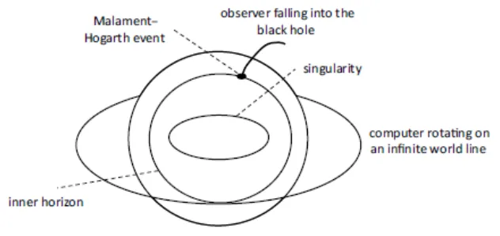 Hình 1. Máy tính vượt qua các giới hạn của tính toán trong không–thời gian Malament–Hogarth của một lỗ đen quay (Centrone và Mainzer, 2023, tr. 151; vẽ theo Etesi và Németi 2002, tr. 13). 262 Trí tuệ Nhân tạo của Các Hệ thống Phỏng thần kinh không nhất quán. Nếu người quan sát không nhận được tín hiệu nào trước p, thì sau p, người đó biết rằng lý thuyết tập hợp là nhất quán. Bắt đầu thí nghiệm tưởng tượng tại γO(a) = q và kết thúc nó tại sự kiện Malament–Hogarth γO(b) = p, người quan sát trên γO có thời gian riêng hữu hạn để quyết định một câu hỏi vốn không thể quyết định trong toán học. Liệu một không–thời gian Malament–Hogarth có chỉ là một nghiệm toán học của các phương trình Einstein giống như một vũ trụ Gödel cho phép du hành về quá khứ của người quan sát, nhưng ít có tính thực tại vật lý hay không? (Etesi và Németi 2002, tr. 19–22; Melia, 2000) Trên thực tế, có những gợi ý vật lý khiến cho các lỗ đen Kerr với không–thời gian Malament–Hogarth trở nên hợp lý về mặt vật lý. Lỗ đen ở trung tâm Dải Ngân Hà là một ứng cử viên khả dĩ. Trong trường hợp này, một máy tính có thể được giả định là vượt qua các giới hạn của tính khả tính và tính khả quyết của các máy Turing cổ điển. Trong lý thuyết toán học về độ phức tạp tính toán, có những hệ thống phân cấp của các bậc khả tính và khả quyết (Mainzer, 2018, Chương 3, 11 và 15). Trong khoa học viễn tưởng, người ta có thể tưởng tượng một thế hệ nhân loại tương lai khai phá Dải Ngân Hà và đặt các máy tính của mình trên một đường thế giới vô hạn quay quanh một lỗ đen Kerr. Cũng có những bài toán có thể giải quyết được nếu một máy tính lượng tử vật lý được hiện thực hóa (ví dụ: thuật toán Shor trong mật mã học lượng tử). Nhưng tất nhiên, một máy tính lượng tử sẽ được hiện thực hóa sớm hơn nhiều so với một máy tính được “vận hành” bởi một lỗ đen. Chương này bắt đầu bằng việc giải thích cơ sở thần kinh sinh học cho các quá trình nhận thức trong não bộ. Trọng tâm là các phương trình Hodgkin–Huxley, lần đầu tiên được sử dụng để tính toán các điện thế hoạt động của tín hiệu thần kinh trong não. Điều này cho phép đưa ra các mạng nơ-ron tế bào được định nghĩa bởi các phương trình phản ứng–khuếch tán. Về mặt toán học, não bộ tỏ ra là một hệ thống động lực học phức tạp mà động lực học của nó có thể được mô hình hóa theo các định luật này. Ở bước tiếp theo, mô hình thần kinh sinh học này được chuyển dịch thành một mô hình kỹ thuật điện với các mạch kỹ thuật điện. Trọng tâm của việc này là nguyên lý hoạt động cục bộ của các mạch này để giải thích các điện thế hoạt động và đơn vị kỹ thuật điện mới là memristor, nhờ đó các khớp thần kinh và nơ-ron thần kinh sinh học có thể được biểu diễn về mặt kỹ thuật điện. Các mạch memristor tạo thành nền tảng của các hệ thống phỏng thần kinh, qua đó có thể hiện thực hóa tính toán thực và tính toán tương tự. Các khả năng thần kinh sinh học và nhận thức của sinh vật đã truyền cảm hứng cho các hệ thống phỏng thần kinh trong công nghệ. Sự điều phối các tương tác tế bào và hữu cơ phức tạp trong một sinh vật cần một kiểu kiểm soát tự tổ chức mới. Sự phát triển của chúng được thực hiện nhờ quá trình tiến hóa của các hệ thống thần kinh, điều cũng giúp sinh vật thích nghi với các điều kiện sống thay đổi và học hỏi bằng cơ thể từ những trải nghiệm với môi trường. Chúng tôi gọi đó là sự nổi lên của tâm trí hiện thân (Mainzer, 2009). Hệ thống phân cấp của các tổ chức giải phẫu thay đổi theo các thang độ lớn khác nhau, trải dài từ 263 264 Trí tuệ Nhân tạo của Hệ thống Phỏng thần kinh kích thước phân tử đến toàn bộ hệ thần kinh trung ương (CNS). Các góc độ nghiên cứu trên các cấp độ phân cấp này có thể liên quan đến các câu hỏi, ví dụ, về cách các tín hiệu được tích hợp trong các sợi nhánh, cách các nơ-ron tương tác trong một mạng lưới, cách các mạng lưới tương tác trong một hệ thống như thị giác, cách các hệ thống tương tác trong CNS, hoặc cách CNS tương tác với môi trường của nó. Mỗi tầng có thể được đặc trưng bởi một số tham số trật tự xác định cấu trúc cụ thể của nó, vốn được tạo ra bởi các tương tác phức tạp của các tiểu phần tử đối với cấp độ phân cấp cụ thể đó. Ở cấp độ vi mô của não bộ, có những bài toán đa vật thể khổng lồ đòi hỏi một chiến lược rút gọn để xử lý sự phức tạp. Trong trường hợp các hình ảnh điện não đồ (EEG), một hệ thống điện cực phức tạp đo lường các trạng thái cục bộ (điện thế) của não bộ. Toàn bộ trạng thái não của một bệnh nhân ở cấp độ vi mô được biểu diễn bằng một chuỗi thời gian cục bộ. Ví dụ, trong trường hợp động kinh cơn nhỏ (petit mal), chúng được đặc trưng bởi các đỉnh chu kỳ điển hình. Các trạng thái vi mô xác định các mẫu trường điện vĩ mô trong một chu kỳ. Về mặt toán học, các mẫu vĩ mô có thể được xác định bởi các mode không gian và các tham số trật tự, tức là biên độ của các sóng trường. Trong không gian pha tương ứng, chúng xác định một điểm hút hỗn loạn đặc trưng cho chứng động kinh cơn nhỏ. Sự tự tổ chức thần kinh ở cấp độ tế bào và dưới tế bào được quyết định bởi quá trình xử lý thông tin bên trong và giữa các nơ-ron. Các chất dẫn truyền hóa học có thể ảnh hưởng đến quá trình xử lý thông tin thần kinh với các cơ chế trực tiếp và gián tiếp có tính dẻo lớn. Sự tăng cường dài hạn (LTP) của tương tác khớp thần kinh là một chủ đề cực kỳ thú vị trong nghiên cứu não bộ gần đây. LTP dường như đóng một vai trò thiết yếu trong sự tự tổ chức thần kinh của các đặc điểm nhận thức như trí nhớ và học tập. Thông tin được cho là được lưu trữ trong các kết nối khớp thần kinh của các tập hợp tế bào thần kinh với các mẫu vĩ mô điển hình. Trong khi một nơ-ron đơn lẻ không nhìn, không suy luận hay ghi nhớ, thì não bộ lại có khả năng làm được điều đó. Thị giác, suy luận và sự ghi nhớ được hiểu là các chức năng cấp cao hơn. Các nhà khoa học ưa thích chiến lược từ dưới lên (bottom-up) cho rằng các chức năng cấp cao hơn của não bộ không thể được giải quyết hay hiểu được cho đến khi từng đặc tính riêng lẻ của mỗi nơ-ron và khớp thần kinh được khám phá và giải thích. Một nhận thức quan trọng của cách tiếp cận hệ thống phức tạp tiết lộ rằng các hiệu ứng nổi lên của toàn bộ hệ thống là các hiệu ứng hệ thống hiệp đồng không thể quy giản về các phần tử đơn lẻ. Chúng là kết quả của các tương tác phi tuyến. Do đó, cái toàn thể lớn hơn tổng (tuyến tính) các bộ phận của nó. Vì vậy, xét từ góc độ phương pháp luận, một chiến lược hoàn toàn từ dưới lên để khám phá các chức năng não bộ chắc chắn sẽ thất bại. Ngược lại, những người ủng hộ chiến lược hoàn toàn từ trên xuống (top-down) tuyên bố rằng nhận thức hoàn toàn độc lập với hệ thần kinh lại rơi vào thế tiến thoái lưỡng nan cũ của Descartes: “Làm thế nào tâm trí điều khiển được cỗ máy?” Ngày nay, chúng ta có thể phân biệt nhiều mức độ phức tạp khác nhau trong CNS. Các thang đo xem xét phân tử, màng tế bào, khớp thần kinh, nơ-ron, nhân, mạch, mạng lưới, lớp, bản đồ, hệ thống giác quan và toàn bộ hệ thần kinh. Các góc độ nghiên cứu trên các cấp độ phân cấp này có thể liên quan đến các câu hỏi, ví dụ, về cách các tín hiệu được tích hợp trong các sợi nhánh, cách các nơ-ron tương tác trong một mạng lưới, cách các mạng lưới tương tác trong một hệ thống như thị giác, cách các hệ thống tương tác trong CNS, hoặc cách CNS tương tác với môi trường của nó. Mỗi tầng có thể được đặc trưng bởi một số tham số trật tự xác định các cấu trúc cụ thể của nó, vốn được tạo ra bởi các tương tác phức tạp của các tiểu phần tử đối với cấp độ phân cấp cụ thể đó. Bắt đầu từ dưới lên, chúng ta có thể phân biệt các trật tự của sự chuyển động ion, 266 Trí tuệ Nhân tạo của Hệ thống Phỏng thần kinh cấu hình kênh, điện thế hoạt động, sóng điện thế, sự vận động, tri giác, hành vi, cảm xúc và suy luận. Các khả năng khác nhau của não bộ cần quá trình xử lý thông tin song song khổng lồ trong một hệ thống phân cấp phức tạp gồm các cấu trúc và vùng thần kinh. Chúng ta biết các mô hình xử lý thông tin ít nhiều phức tạp trong hệ thống thị giác và vận động. Ngay cả động lực học của hệ thống cảm xúc cũng đang tương tác theo kiểu phản hồi phi tuyến với nhiều cấu trúc của não người. Các hệ thống phức tạp này tạo ra các bản đồ thần kinh của các tập hợp tế bào. Sự tự tổ chức của các bản đồ cảm giác thân thể được biết đến rõ ràng trong vỏ não thị giác và vận động. Chúng có thể được mở rộng và thay đổi thông qua các quy trình học tập như việc huấn luyện bàn tay của một con vượn. Các hình ảnh chụp cắt lớp phát xạ positron (PET) cho thấy các mẫu vĩ mô của các tập hợp tế bào chuyển hóa thần kinh hóa học ở các vùng khác nhau của não bộ, có tương quan với các khả năng nhận thức và trạng thái ý thức, chẳng hạn như nhìn, nghe, nói hoặc suy nghĩ. Sự hình thành mẫu của các tập hợp tế bào thần kinh thậm chí còn tương quan với các quá trình phức tạp của trạng thái tâm lý (Freeman, 2004). Các nhiễu loạn trong tương tác tế bào chuyển hóa (ví dụ: cocaine) có thể dẫn đến các hiệu ứng phi tuyến khởi phát những thay đổi phức tạp trong hành vi (ví dụ: nghiện ma túy). Những tương quan này giữa các tập hợp tế bào thần kinh và các tham số trật tự (điểm hút) của các trạng thái nhận thức và ý thức chứng minh mối liên hệ giữa thần kinh sinh học và tâm lý học nhận thức trong nghiên cứu gần đây, tùy thuộc vào tiêu chuẩn của các thiết bị và quy trình đo lường. Nhiều câu hỏi vẫn còn bỏ ngỏ. Chẳng hạn, chúng ta chỉ có thể quan sát rằng ai đó đang suy nghĩ và cảm nhận, chứ không thể quan sát xem người đó đang suy nghĩ và cảm nhận gì. Hơn nữa, chúng ta không quan sát thấy một thực thể duy nhất nào được gọi là ý thức, mà là các trạng thái vĩ mô phức tạp của não bộ với các mức độ chú ý giác quan, vận động hoặc các loại chú ý khác nhau (Flohr, 1991). Ý thức có nghĩa là chúng ta không chỉ nhìn, lắng nghe, nói, nghe, cảm nhận, suy nghĩ, v.v., mà còn biết và nhận thức về bản thân mình trong suốt các quá trình nhận thức này (Chalmers, 2010). Bản ngã của chúng ta được coi là một tham số trật tự của một trạng thái, nổi lên từ một quá trình đệ quy gồm nhiều lần tự phản ánh, tự giám sát và giám sát các hành động có ý thức của chúng ta (Haken, 1996; Mainzer, 2007). Sự tự phản ánh được thực hiện nhờ cái gọi là nơ-ron gương (ví dụ: ở vùng Broca) cho phép các loài linh trưởng (đặc biệt là con người) bắt chước và mô phỏng các quá trình thú vị của đồng loại. Do đó, họ có thể học cách đặt mình vào góc nhìn của bản thân và đồng loại để hiểu ý định của họ và đồng cảm với họ. Sự nổi lên của tính chủ quan đã được hiểu rõ về mặt tâm lý học thần kinh. Não bộ không chỉ quan sát, lập bản đồ và giám sát thế giới bên ngoài mà còn cả các trạng thái bên trong của sinh vật, đặc biệt là các trạng thái cảm xúc của nó. Cảm nhận có nghĩa là tự nhận thức về các trạng thái cảm xúc của một người, vốn chủ yếu do hệ viền (limbic system) gây ra. Trong y học thần kinh, “lý thuyết tâm trí” thậm chí còn phân tích các tương quan thần kinh của cảm xúc xã hội nằm ở các vùng đặc biệt của tân vỏ não (Förstl, 2006). Chẳng hạn, những người mắc bệnh Alzheimer mất đi cảm giác đồng cảm và trách nhiệm xã hội vì các vùng thần kinh tương quan bị phá hủy. Do đó, lý luận đạo đức và việc ra quyết định của chúng ta có một cơ sở rõ ràng trong động lực học não bộ. Từ góc độ tâm lý học thần kinh, vấn đề triết học cũ về “qualia” (cảm tính chủ quan) cũng có thể giải quyết được. Qualia đề cập đến các thuộc tính được một người trải nghiệm một cách có ý thức. Trong một thí nghiệm tư tưởng, một nhà thần kinh sinh học được giả định là bị nhốt trong một căn phòng đen trắng. 268 Trí tuệ Nhân tạo của Hệ thống Phỏng thần kinh Về mặt lý thuyết, cô ấy biết mọi thứ về quá trình xử lý thông tin thần kinh của màu sắc. Nhưng cô ấy chưa bao giờ có cơ hội trải nghiệm màu sắc. Do đó, kiến thức chính xác không nói lên điều gì về chất lượng của trải nghiệm có ý thức. Qualia theo nghĩa đó nổi lên nhờ sự tương tác cơ thể của các sinh vật tự ý thức với môi trường của chúng, điều có thể được giải thích bằng động lực học phi tuyến của các hệ thống phức tạp. Do đó, chúng ta có thể giải thích động lực học của các cảm giác và trải nghiệm chủ quan, nhưng tất nhiên, cảm giác thực tế là một trải nghiệm cá nhân. Trong y học, động lực học của một cơn đau nhất định thường có thể được bác sĩ giải thích hoàn toàn, mặc dù cảm giác đau thực tế là một trải nghiệm cá nhân của bệnh nhân (Dreyfus, 1982). Để mô hình hóa não bộ và các khả năng phức tạp của nó, việc phân biệt các loại sau đây là khá phù hợp. Trong các mô hình cấp độ nơ-ron, các nghiên cứu tập trung vào các đặc tính động và thích nghi của từng tế bào thần kinh hay nơ-ron nhằm mô tả nơ-ron như một đơn vị. Trong các mô hình cấp độ mạng lưới, các nơ-ron giống nhau được kết nối với nhau để thể hiện các chức năng hệ thống nổi lên. Trong các mô hình cấp độ hệ thống thần kinh, nhiều mạng lưới được kết hợp để chứng minh các chức năng phức tạp hơn về tri giác giác quan, chức năng vận động, kiểm soát ổn định, v.v. Trong các mô hình cấp độ thao tác tinh thần, các quá trình cơ bản của nhận thức, tư duy, giải quyết vấn đề, v.v., được mô tả. Trong cách tiếp cận hệ thống phức tạp, cấp độ vi mô của các nơ-ron tương tác có thể được mô hình hóa bằng các phương trình vi phân ghép cặp mô hình hóa sự truyền xung thần kinh của mỗi nơ-ron. Phương trình Hodgkin–Huxley là một ví dụ về phương trình phản ứng–khuếch tán phi tuyến của một sóng lan truyền các điện thế hoạt động, đưa ra dự đoán chính xác về tốc độ và hình dạng của xung thần kinh điện áp (Mainzer và Chua 2013). Sau đây, chúng ta sẽ phân tích các mô hình kỹ thuật và tính toán của não bộ dựa trên bản thiết kế của các phương trình Hodgkin–Huxley. Nhưng hoạt động cục bộ của một xung thần kinh đơn lẻ không đủ để hiểu động lực học não bộ phức tạp và sự nổi lên của các khả năng nhận thức và tinh thần. Não bộ với hơn 10^11 nơ-ron có thể được coi là một mạng lưới phi tuyến khổng lồ, nơi bất kỳ hai điểm (nơ-ron) nào cũng có thể tương tác với nhau bằng các xung thần kinh. Làm thế nào chúng ta có thể bắc cầu qua khoảng cách giữa sinh lý học thần kinh của các hoạt động thần kinh cục bộ và tâm lý học của các trạng thái tinh thần? Một nơ-ron đơn lẻ không thể suy nghĩ cũng không thể cảm nhận, mà chỉ có thể phát xung hoặc không phát xung. Chúng là những “nguyên tử” của động lực học thần kinh phức tạp. Trong cuốn sách nổi tiếng The Organization of Behavior (Tổ chức của Hành vi), Hebb (1949) đã đề xuất rằng việc học phải được hiểu như một loại tự tổ chức trong một mô hình não bộ phức tạp. Cũng như trong quá trình tiến hóa của các sinh vật sống, niềm tin vào các “ác quỷ” tổ chức có thể được gạt bỏ và thay thế bằng các quy trình tự tổ chức của cách tiếp cận hệ thống phức tạp. Về mặt lịch sử, đó là tuyên bố rõ ràng đầu tiên về quy tắc học tập sinh lý cho sự biến đổi khớp thần kinh. Hebb đã sử dụng từ “thuyết kết nối” (connectionism) trong bối cảnh của một mô hình não bộ phức tạp. Ông đã đưa ra khái niệm khớp thần kinh Hebb, trong đó kết nối giữa hai nơ-ron sẽ được củng cố nếu cả hai nơ-ron phát xung cùng một lúc (Hebb, 1949, 50): Khi một sợi trục của tế bào A ở đủ gần để kích thích tế bào B và lặp đi lặp lại hoặc liên tục tham gia vào việc kích hoạt nó, một quá trình tăng trưởng hoặc thay đổi chuyển hóa nào đó diễn ra ở một hoặc cả hai tế bào sao cho hiệu quả của A, với tư cách là một trong các tế bào kích hoạt B, được tăng lên. Tuyên bố của Hebb không phải là một mô hình chính xác về mặt toán học. Nhưng sau đó, nó đã được sử dụng để đưa ra các quy tắc kiểu Hebb có xu hướng làm sắc nét khuynh hướng của một nơ-ron “mà không cần người thầy” từ bên ngoài. Ví dụ, một phiên bản toán học đơn giản của quy tắc Hebb đòi hỏi sự thay đổi ΔwBA của một trọng số wBA từ nơ-ron A chiếu tới nơ-ron B phải tỷ lệ thuận với tốc độ phát xung trung bình νA của A và νB của B, tức là ΔwBA = ε νBνA với hằng số ε. Năm 1949, 270 Trí tuệ Nhân tạo của Hệ thống Phỏng thần kinh “khớp thần kinh Hebb” chỉ có thể là một thực thể giả thuyết. Ngày nay, sự tồn tại sinh lý học thần kinh của nó đã được xác nhận bằng thực nghiệm. Ở cấp độ vĩ mô, các nơ-ron tương tác theo kiểu Hebb tạo ra một tập hợp tế bào mà động lực học vĩ mô của nó bị chi phối bởi các tham số trật tự. Các hoạt động tinh thần tương quan với các tập hợp tế bào gồm các tế bào phát xung đồng bộ. Ví dụ, một tập hợp tế bào phát xung đồng bộ đại diện cho một nhận thức thị giác nào đó về một cái cây, vốn không chỉ là tổng các điểm ảnh được tri giác mà còn được đặc trưng bởi một số đặc điểm vĩ mô điển hình như hình dạng, nền hoặc tiền cảnh. Ở cấp độ tiếp theo, các tập hợp tế bào của nhiều tri giác tương tác trong một kịch bản phức tạp. Trong trường hợp này, mỗi tập hợp tế bào là một đơn vị phát xung, tạo ra một tập hợp tế bào của các tập hợp tế bào mà động lực học vĩ mô của nó được đặc trưng bởi một số tham số trật tự. Các tham số trật tự có thể đại diện cho các thuộc tính tương tự của các đối tượng được tri giác. Không có “nơ-ron mẹ” nào có thể cảm nhận, suy nghĩ hoặc ít nhất là điều phối các nơ-ron thích hợp. Bài toán ràng buộc các điểm ảnh và đặc điểm trong một tri giác được giải thích bằng các tập hợp tế bào gồm các nơ-ron phát xung đồng bộ bị chi phối bởi các điểm hút đã học của động lực học não bộ. Bài toán ràng buộc đặt câu hỏi: Làm thế nào tri giác về toàn bộ các đối tượng có thể được hình thành mà không bị phân rã thành hàng triệu điểm ảnh và tín hiệu rời rạc của các nơ-ron đang phát xung? Lý thuyết của Barlow (1972) giả định các nơ-ron được thiết kế riêng cho từng thuộc tính của một đối tượng được tri giác, cho các cụm thuộc tính, và cuối cùng là một nơ-ron cho toàn bộ đối tượng (“nơ-ron bà nội”). Do đó, nó cần một số lượng bùng nổ các nơ-ron chuyên biệt phải được giả định trong các giả thuyết tùy biến (ad-hoc) cho mọi tri giác mới về các tình huống thay đổi (Hình 1(a): Deco et al., 2001, 229). Singer (1994) và những người khác đã có thể xác nhận khái niệm của Hebb về các nơ-ron phát xung đồng bộ bằng các quan sát và đo lường (Hình 1(b)). Do đó, lý thuyết của Barlow không cần thiết cho việc giải thích các hiện tượng Gestalt. 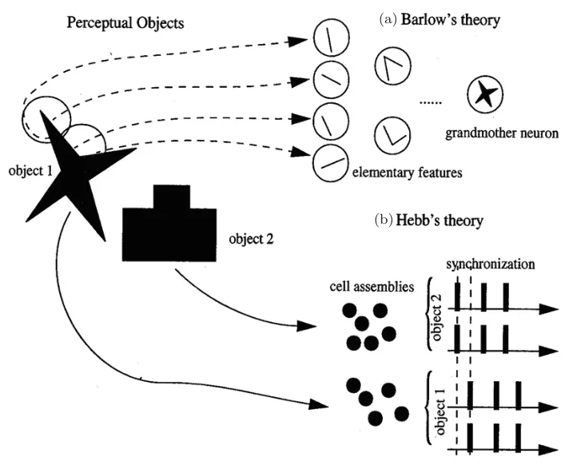 (a) (b) Hình 1. Bài toán ràng buộc trong lý thuyết của Barlow về nơ-ron bà nội (a) và lý thuyết của Hebb về các tập hợp tế bào (b) (Mainzer và Chua, 2013, tr. 198). Bằng cách này, chúng ta có được một hệ thống phân cấp gồm các cấp độ nhận thức đang nổi lên, bắt đầu từ động lực học vi mô của các nơ-ron đang phát xung. Động lực học của mỗi cấp độ được giả định là đặc trưng bởi các phương trình vi phân với các tham số trật tự. Ví dụ, ở cấp độ đầu tiên của động lực học vĩ mô, các tham số trật tự đặc trưng cho một tri giác thị giác. Ở cấp độ tiếp theo, người quan sát trở nên có ý thức về tri giác đó. Sau đó, tập hợp tế bào của tri giác được kết nối với vùng thần kinh chịu trách nhiệm cho các trạng thái ý thức. Ở bước tiếp theo, một tri giác có ý thức có thể là mục tiêu của các hoạt động lập kế hoạch. Trong trường hợp này, các tập hợp tế bào của các tập hợp tế bào được kết nối với các vùng thần kinh 272 Trí tuệ Nhân tạo của Hệ thống Phỏng thần kinh trong vỏ não lập kế hoạch, v.v. Chúng được biểu diễn bằng các phương trình phi tuyến ghép cặp với tốc độ phát xung của các tập hợp tế bào tương ứng. Ngay cả các khái niệm cấp cao như tự ý thức cũng có thể được giải thích bằng các sự tự phản ánh của các sự tự phản ánh, được kết nối với một trí nhớ cá nhân, vốn được biểu diễn trong các tập hợp tế bào tương ứng của não bộ. Các trạng thái não bộ nổi lên, tồn tại trong một khoảng thời gian ngắn, rồi biến mất và được thay thế bằng các trạng thái khác. Chính tính linh hoạt và sáng tạo của quá trình này làm cho não bộ ở động vật trở nên rất thành công trong việc thích nghi với các môi trường thay đổi nhanh chóng và khó lường. Xét về mặt toán học, các tương tác của n tập hợp được mô tả bởi một hệ n phương trình vi phân ghép cặp phụ thuộc vào tốc độ phát xung chung cụ thể của chúng Fj(j = 1, 2, . . . , n) với dF1 dt = +F1(1 −F1) −αF2 −αF3 −· · · −αFn, dF2 dt = −αF1 + F2(1 −F2) −αF3 −· · · −αFn, ... dFn dt = −αF1 −αF2 −αF3 −· · · + Fn(1 −Fn), trong đó α là một tham số dương cho các tương tác ức chế giữa các tập hợp (Scott, 2003). Các tập hợp tế bào hành xử tương tự như các nơ-ron đơn lẻ. Do đó, một tập hợp các nơ-ron kết nối ngẫu nhiên với nhau có một mức ngưỡng phát xung để khởi phát hoạt động toàn cục. Nếu mức này không đạt được, tập hợp sẽ không kích hoạt, rơi trở lại trạng thái tĩnh lặng. Nếu vượt quá mức ngưỡng, hoạt động phát xung của một tập hợp sẽ tăng nhanh lên mức tối đa. Hai điều kiện này đảm bảo rằng các tập hợp nơ-ron có thể tạo thành các tập hợp của các tập hợp. Các tập hợp nổi lên từ các tương tác phi tuyến của các nơ-ron đơn lẻ, trong khi các tập hợp của các tập hợp nổi lên từ sự tương tác phi tuyến của các tập hợp. Lặp lại nhiều lần, ta có được mô hình não bộ như một hệ thống phân cấp động đang nổi lên. Các tri giác chủ quan tương quan với các tập hợp tế bào phát xung đồng thời. Một hiện tượng tâm lý nổi tiếng là sự chuyển đổi tự phát giữa hai góc nhìn thay thế của một hình vẽ tùy thuộc vào các nhận thức ngẫu nhiên về các chi tiết cục bộ. Vào đầu thế kỷ 20, cái gọi là tâm lý học Gestalt tin rằng tri giác về toàn bộ hình dạng (tiếng Đức “Gestalt”) của một hình vẽ không thể được giải thích “một cách máy móc” bằng tổng các bộ phận của nó vì cái toàn thể lớn hơn các bộ phận của nó. Do đó, sự xuất hiện tự phát của một hình dạng và đặc biệt là sự chuyển đổi tự phát giữa hai hình dạng dường như là một hiện tượng tinh thần không thể giải thích bằng các phương pháp của khoa học tự nhiên toán học. Trên thực tế, trong khuôn khổ động lực học phi tuyến, các hình ảnh chuyển đổi có thể được mô hình hóa về mặt toán học bằng các chuyển pha thay thế tùy thuộc vào những thăng giáng ngẫu nhiên nhỏ bé và sự phá vỡ đối xứng trong các trạng thái siêu bền. Một ví dụ là cái gọi là khối lập phương Necker (Hình 2) với hai góc nhìn khả dĩ được xác định bởi hai cách diễn giải khác nhau về các góc và cạnh. Các cạnh hoặc góc có thể được nhìn thấy luân phiên ở tiền cảnh hoặc hậu cảnh, bên trái hoặc bên phải, cao hoặc thấp. Sự kết hợp của chúng xác định hai hình ảnh khả dĩ. Người quan sát đang chuyển đổi qua lại giữa hai khả năng theo một kiểu dao động. Các hoạt động thần kinh tương quan với hai tri giác về khối lập phương Necker được biểu diễn một cách hình thức bằng hai tham số ξ1 và ξ2. Ở trạng thái không ổn định, người quan sát chuyển đổi qua lại giữa ξ1 và ξ2 với các thăng giáng ngẫu nhiên. Một quyết định hoặc sự phá vỡ đối xứng của 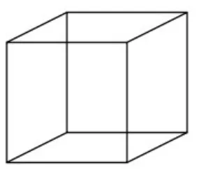 Hình 2. Khối lập phương Necker (Mainzer và Chua, 2013, tr. 199). 274 Trí tuệ Nhân tạo của Hệ thống Phỏng thần kinh trạng thái siêu bền được gây ra bởi các chi tiết nhỏ bé được quan sát (ví dụ: một góc được diễn giải ở hậu cảnh hoặc tiền cảnh) bắt đầu chi phối toàn bộ tri giác theo hình ảnh khả dĩ này hoặc hình ảnh khả dĩ kia. Động lực học phụ thuộc thời gian của quá trình này được mô hình hóa bằng hai phương trình vi phân đối xứng: dξ1 dt = ξ1(1 −Cξ2 1 −(B + C)ξ2 2), dξ2 dt = ξ2(1 −Cξ2 2 −(B + C)ξ2 1). Trong hiệp đồng học (synergetics) của Haken, ξ1 và ξ2 là các tham số trật tự vĩ mô chi phối các trạng thái thần kinh vi mô vốn tương quan với hai tri giác về khối lập phương Necker (Haken, 1996). Theo nghĩa của nguyên lý hoạt động cục bộ, hoạt động cục bộ của một đơn vị thần kinh tương quan với một chi tiết được tri giác của khối lập phương Necker kích hoạt hai tập hợp tế bào phát xung tương quan với hai tri giác khả dĩ về toàn bộ khối lập phương. Do đó, chúng ta cũng xem xét các tham số chú ý λ1 và λ2 giảm xuống khi các tham số tri giác tương ứng ξ1 và ξ2 tăng lên. Sự bão hòa của các tham số chú ý được xác định bởi các phương trình sau: dλ1 dt = γ(1 −λ1 −ξ2 1), dλ2 dt = γ(1 −λ2 −ξ2 2). Một nghiệm của các phương trình ghép cặp này được thể hiện trong Hình 3 (Haken, 1996, tr. 250), minh họa các dao động tri giác quan sát được. 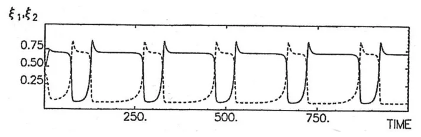 Hình 3. Đồ thị của các tham số trật tự ξ1 và ξ2 tương ứng với hai cách diễn giải khả dĩ của khối lập phương Necker theo thời gian (Mainzer và Chua, 2013, tr. 201). Rõ ràng, động lực học tri giác của khối lập phương Necker tương tự như sơ đồ chung của các tập hợp tế bào ghép cặp. Sơ đồ hình thức của động lực học não bộ đưa ra một giả thuyết nghiên cứu để giải thích và hiểu các trạng thái tinh thần phức tạp. Nhìn chung, người ta giả định rằng mọi trạng thái tinh thần đều tương quan với các tập hợp tế bào tương ứng. Nhưng chúng không chỉ là tập hợp các nơ-ron đang phát xung mà còn là các hệ thống phân cấp gồm các hệ thống con thần kinh của các hệ thống con với độ sâu và mức độ phức tạp khác nhau. Giả thuyết nghiên cứu có nghĩa là các tập hợp tế bào tương ứng phải được xác định bằng thực nghiệm thông qua các thiết bị quan sát và đo lường. Chẳng hạn, trong việc đọc não, các tập hợp tế bào đang hoạt động tương quan với các từ và các đối tượng tương ứng có thể được xác định. Một nơ-ron đơn lẻ không mang tính quyết định và có thể khác nhau giữa những người khác nhau. Có những mẫu phân bố điển hình với hình dạng mờ, được biểu diễn trong các mô phỏng máy tính. Nghiên cứu não bộ vẫn còn cách rất xa việc quan sát hoạt động của từng nơ-ron trong não. Tuy nhiên, sơ đồ phân cấp hình thức của động lực học cho phép giải thích các trạng thái tinh thần phức tạp như ý thức chẳng hạn. Các trạng thái có ý thức có nghĩa là con người nhận thức được các hoạt động của mình. Tự nhận thức được thực hiện nhờ các vùng não bổ sung giám sát các tương quan thần kinh của những hoạt động này của con người (ví dụ: tri giác, cảm giác hoặc suy nghĩ). Do đó, ngay cả ý thức cũng không phải là sự kiện bí ẩn nào, mà có thể quan sát, đo lường và giải thích được trong khuôn khổ nghiên cứu này. Ở bước tiếp theo, một mô hình phân cấp hình thức mang lại cơ hội chế tạo các mạch và thiết bị kỹ thuật tương ứng cho não bộ kỹ thuật và robot có những khả năng này. Các thuật ngữ truyền thống như “trí tuệ”, “tâm trí” và “ý thức” về mặt lịch sử mang quá nhiều nghĩa tùy thuộc vào các quan điểm, kinh nghiệm và lập trường lịch sử khác nhau. Do đó, nó phụ thuộc vào các định nghĩa của chúng ta. Về trí tuệ, một định nghĩa làm việc đơn giản được đề xuất mà không phụ thuộc vào “trí tuệ con người” (theo nghĩa phép thử AI của Turing). Một hệ thống được gọi là “thông minh” tùy thuộc vào khả năng giải quyết vấn đề của nó. Theo nghĩa đó, một con ve có một mức độ thông minh nhất định vì nó có thể giải quyết vấn đề tìm máu. Nhưng các hệ thống kỹ thuật đơn giản 276 Trí tuệ Nhân tạo của Hệ thống Phỏng thần kinh (ví dụ: một con chip) cũng có thể có những mức độ “thông minh” nhất định vì chúng có thể giải quyết một số vấn đề nhất định. Do đó, về mặt triết học, lập trường này đồng cảm với chủ nghĩa đa nguyên của Leibniz, người đã phân biệt các mức độ thông minh trong tự nhiên, trái ngược với nhị nguyên luận của Descartes, người tin vào một “thực thể” gọi là “tâm trí thông minh” vốn chỉ dành riêng cho con người. Theo nghĩa đó, đã có rất nhiều chức năng thông minh của, chẳng hạn như, robot. Rõ ràng, các mẫu của tập hợp tế bào trong não không đồng nhất với tri giác, cảm giác và suy nghĩ của chúng ta. Nhưng trong nghiên cứu não bộ hiện đại, người ta đã xác nhận rõ ràng rằng các mẫu thần kinh của các tế bào phát xung tương quan với các trạng thái tinh thần. “Các trạng thái tinh thần” có thể được định nghĩa và mô hình hóa trong các không gian trạng thái và tham số với các hệ động lực liên kết cho phép chúng ta kiểm chứng các mô hình của mình. Với công nghệ đọc não, việc phân tích các tập hợp tế bào thậm chí cho phép chúng ta nhận ra ý nghĩa được biểu diễn của chúng (ví dụ: hình ảnh, từ ngữ, cụm từ): Tất nhiên, đây mới chỉ là những bước nghiên cứu đầu tiên, nhưng về nguyên tắc điều đó dường như là khả thi. Về khoa học máy tính, ngữ nghĩa được hiện thực hóa về mặt kỹ thuật trong những bước đầu tiên và ở những mức độ nhất định theo một nghĩa hạn chế và được định nghĩa rõ ràng. Các khả năng vận động, nhận thức và tinh thần được lưu trữ trong các kết nối khớp thần kinh của các tập hợp tế bào. Một lõi cứng của mạng lưới khớp thần kinh đã được nối dây sẵn khi não động vật có vú được sinh ra. Nhưng nhiều kết nối khớp thần kinh được tạo ra trong các giai đoạn phát triển, trải nghiệm và học tập của động vật có vú. Trạng thái phát xung của các nơ-ron với các điện thế hoạt động lặp đi lặp lại củng cố các kết nối khớp thần kinh. Do đó, trong một giai đoạn học tập, một tập hợp tế bào gồm các nơ-ron phát xung đồng thời tạo ra một mạng lưới khớp thần kinh lưu trữ thông tin đã học. Các giai đoạn học tập có thể được mô hình hóa về mặt kỹ thuật bằng các thuật toán học tập (Mainzer, 2007). Như chúng ta đều biết, thông tin đã học có thể bị quên khi việc học không được lặp lại và các kết nối khớp thần kinh suy giảm. Do đó, ở cấp độ vi mô, động lực học não bộ được quyết định bởi hàng tỷ nơ-ron phát xung và không phát xung, và ở cấp độ vĩ mô bởi các tập hợp tế bào đang nổi lên và thay đổi của các mạng nơ-ron mã hóa các thông tin thần kinh khác nhau. Hiệu quả của mạng nơ-ron phụ thuộc vào số lượng các lớp phân cấp của chúng. Chúng cho phép não bộ kết nối các trạng thái thần kinh khác nhau của, ví dụ, thông tin thị giác, xúc giác và thính giác. Nhưng cũng có những lớp giám sát các quy trình tri giác và tạo ra ý thức thị giác: Một người nhận thức được và biết rằng mình đang tri giác một thứ gì đó. Như đã đề cập trong các chương trước, ngay cả cảm xúc của chúng ta cũng phụ thuộc vào các mạng nơ-ron chuyên biệt được kết nối với mọi loại hoạt động của não. Đó là một thách thức đối với nghiên cứu não bộ trong việc xác định các lớp và mạng lưới liên quan của não bộ trong suốt mọi loại hoạt động tinh thần và nhận thức. Ngay cả sự hiểu biết ngữ nghĩa cũng trở nên khả thi nhờ các lớp phân cấp và các quy trình học tập của động lực học não bộ. Trong ngữ nghĩa học hình thức, một ngôn ngữ hình thức có được ý nghĩa của nó bằng cách ánh xạ các biểu thức hình thức của nó lên các biểu thức của một ngôn ngữ hình thức khác. Trong khoa học máy tính, nhiều lớp ngôn ngữ ký hiệu cũng được sử dụng để tạo ra ý nghĩa ngữ nghĩa và các quy trình kỹ thuật số. Ngôn ngữ tự nhiên của người dùng tham chiếu đến một ngôn ngữ máy tính bậc cao. Ở bước tiếp theo, một loại ngôn ngữ hành vi mô tả các chức năng dự kiến sẽ được thực thi trong hệ thống. Chúng liên hệ các đối số của mình một cách điển hình như các hàm toán học. Sau đó, cần có một mô tả kiến trúc, mô tả các tài nguyên sẵn có, sự giao tiếp và sự điều khiển. Mối liên hệ giữa mô tả hành vi và kiến trúc được thực hiện bằng cách gắn kết các chức năng sơ cấp với tài nguyên và lập lịch cho chúng theo thời gian (một tác vụ có thể được thực hiện bởi trình biên dịch hoặc trình hợp dịch). Cuối cùng, kiến trúc được hiện thực hóa bởi một lớp chuyển thanh ghi vốn gần với các mạch kỹ thuật số mà đến lượt chúng được hiện thực hóa bởi các linh kiện điện, điện áp và dòng điện. Mỗi lớp như vậy có ngôn ngữ mô tả, động lực học và các quy tắc cú pháp riêng. Ngữ nghĩa được cung cấp bởi sự tương tác giữa các lớp. Mạch kỹ thuật số cung cấp ngữ nghĩa cho mạch điện (ngược lại, lớp mạch cung cấp thông tin định thời cho mạch kỹ thuật số), lớp chuyển thanh ghi cho lớp kỹ thuật số, kiến trúc cho lớp chuyển thanh ghi, và mô tả hành vi nằm trên đỉnh của tất cả những lớp đó, ít nhất năm lớp trừu tượng ngữ nghĩa, mỗi lớp được diễn đạt bằng một cú pháp hình thức chuyên biệt. 278 Trí tuệ Nhân tạo của Hệ thống Phỏng thần kinh Chỉ vì các kỹ sư có thể tạo ra một hệ thống phân loại và trừu tượng hóa mạnh mẽ như vậy cho các lớp ngữ nghĩa nên một hệ thống kỹ thuật số mới có thể hiểu được đối với người dùng là con người và cỗ máy kỹ thuật số. Do đó, sự giao tiếp giữa con người và máy móc được hiện thực hóa trong một quá trình truyền tải trung gian giữa các lớp. Não bộ con người có một kiến trúc phức tạp hơn nhiều, mà cho đến ngày nay, vẫn chưa thể tái tạo hoàn toàn thành các lớp phân biệt rõ ràng. Rõ ràng, não bộ không phải là thiết kế của một kiến trúc sư hay một kỹ sư với các mục đích kỹ thuật cụ thể, mà là kết quả của một quá trình tiến hóa ít nhiều ngẫu nhiên và mù quáng trong hàng triệu năm. Do đó, nhiều chức năng của các mô và mạng lưới vẫn chưa được biết đến, mặc dù các lớp tô-pô có thể được xác định và sử dụng để giải thích các quá trình ngữ nghĩa. Cuối cùng, não bộ cần được quét và mô hình hóa toàn bộ từ từng nơ-ron, khớp thần kinh và điện thế hoạt động đơn lẻ đến các tập hợp tế bào, mạng lưới và các lớp để mô hình hóa toàn bộ động lực học ở cấp độ vi mô và vĩ mô. “Cấp độ máy” đã được biết rõ và mô tả bởi hành vi kỹ thuật số của các nơ-ron phát xung và không phát xung với các điện thế hoạt động đang nổi lên. Các miền rìa hỗn loạn (edge-of-chaos) có thể được xác định rõ ràng trong các không gian tham số của các phương trình Hodgkin–Huxley. Chúng là nguồn gốc của mọi loại động lực học não bộ với các điểm hút của các trạng thái thần kinh tương quan với các hoạt động nhận thức và thông minh của con người. So với não người, các hệ thống kỹ thuật có thể bị hạn chế, nhưng đôi khi chúng hiệu quả hơn nhiều với các giải pháp cụ thể cho các nhiệm vụ nhận thức và thông minh. Trong khoa học máy tính, web ngữ nghĩa và iPhone đã có thể hiểu câu hỏi ở một mức độ nào đó và thậm chí trả lời bằng ngôn ngữ tự nhiên. Công nghệ của các thuật toán (phân tích giọng nói) được áp dụng có thể khác với các quy trình sinh học được phát triển trong quá trình tiến hóa. Nhưng chúng giải quyết vấn đề ở một mức độ nhất định với sức mạnh máy tính, tốc độ cao, tính song song và khả năng lưu trữ, vốn có thể được cải thiện trong tương lai. Con người là những hệ thống phức tạp lai với các khả năng bổ sung (ví dụ: trí tưởng tượng, cảm xúc) luôn tham gia vào hành động ngữ nghĩa của chúng ta. Nhưng không thể loại trừ khả năng những khả năng này cũng có thể được xử lý trong một công nghệ tương lai. Một cách tiếp cận mạng nơ-ron hướng não là khái niệm mạng nơ-ron tế bào (CNN) (Chua, 1998). Ý tưởng chính đằng sau mô hình CNN là nguyên lý hoạt động cục bộ, khẳng định rằng không có hiện tượng phức tạp nào có thể phát sinh trong bất kỳ môi trường đồng nhất nào mà không có hoạt động cục bộ. Rõ ràng, hoạt động cục bộ là một thuộc tính cơ bản trong vi điện tử, nơi mà chẳng hạn, các đèn chân không và sau này là các bóng bán dẫn (transistor) đã là những thiết bị hoạt động cục bộ trong các mạch điện tử của radio, tivi và máy tính. Nhu cầu về hoạt động cục bộ trong mạng nơ-ron được thúc đẩy bởi những lý do thực tế của công nghệ. Năm 1985, John Hopfield về mặt lý thuyết đã đề xuất một mạng nơ-ron mà về nguyên tắc có thể thực hiện nhận dạng mẫu. Nhưng kiến trúc kết nối toàn cục của nó lại cực kỳ phi thực tế đối với các hiện thực hóa kỹ thuật trong các mạch tích hợp quy mô rất lớn (VLSI) của vi điện tử: Số lượng dây dẫn trong một mạng Hopfield kết nối đầy đủ tăng theo cấp số nhân với kích thước của mảng. Một CNN chỉ cần các kết nối điện trong một phạm vi ảnh hưởng được quy định trước. Nhìn chung, CNN là một mạch tương tự phi tuyến xử lý tín hiệu theo thời gian thực. Nó là một hệ thống đa thành phần gồm các đơn vị giống hệt nhau (“nhân bản”) được bố trí đều đặn, gọi là các tế bào, chỉ giao tiếp trực tiếp với nhau thông qua các láng giềng gần nhất của chúng. Nhưng tính cục bộ của các kết nối trực tiếp cũng cho phép chúng ta thu được quá trình xử lý thông tin toàn cục. Giao tiếp giữa các đơn vị không kết nối trực tiếp (ở xa) đạt được bằng cách truyền qua các đơn vị khác. Ý tưởng rằng các hiện tượng phức tạp và toàn cục có thể nổi lên từ các hoạt động cục bộ trong một mạng lưới bắt nguồn từ mô hình ô tô-mát tế bào (CA). Theo nghĩa này, mô hình CNN là một bước phát triển cao hơn của mô hình CA dưới các điều kiện mới của xử lý thông tin và công nghệ chip. Không giống như CA thông thường, các bộ xử lý chủ CNN tiếp nhận và tạo ra các tín hiệu tương tự trong thời gian liên tục với các số thực làm giá trị tương tác. Nhưng trên thực tế, tính rời rạc của CA không khác biệt về mặt chất so với CNN liên tục. Chúng ta có thể đưa ra ô tô-mát tế bào liên tục (CCA) như một sự tổng quát hóa của CA, trong đó mỗi tế bào không chỉ là, 280 Trí tuệ Nhân tạo của Hệ thống Phỏng thần kinh ví dụ, đen hoặc trắng, mà thay vào đó có thể có bất kỳ mức độ nào trong một dải liên tục các mức xám khả dĩ. Một quy tắc khả dĩ của CCA có thể đòi hỏi, ví dụ, mức xám mới của mỗi tế bào bằng trung bình cộng mức xám của chính nó và của các láng giềng ngay sát nó. Hóa ra trong CCA, các quy tắc tương tác đơn giản có thể tạo ra các mẫu có độ phức tạp, hỗn loạn và ngẫu nhiên tăng dần, vốn về cơ bản không khác với hành vi của một CA rời rạc. Do đó, chúng hữu ích để xấp xỉ động lực học của các hệ thống được xác định bởi các phương trình vi phân riêng phần (PDE). Đối với mô hình CNN, ngôn ngữ thần kinh sinh học mang lại những minh họa ẩn dụ cho các khái niệm tuy nhiên vẫn được định nghĩa về mặt toán học và triển khai về mặt kỹ thuật. Theo các mô hình thống trị của khoa học sự sống ngày nay, ngôn ngữ sinh học làm trung gian cho những tầm nhìn về các kết nối tương lai giữa công nghệ sinh học và công nghệ máy tính. Một CNN được định nghĩa bởi (1) một tập hợp rời rạc về mặt không gian gồm các hệ động lực phi tuyến liên tục (“tế bào” hoặc “nơ-ron”) nơi thông tin được xử lý vào mỗi tế bào thông qua ba biến độc lập (“một đầu vào”, “một ngưỡng” và “một trạng thái ban đầu”) và (2) một quy luật ghép cặp liên hệ các biến liên quan của mỗi tế bào với tất cả các tế bào láng giềng trong một phạm vi ảnh hưởng được mô tả trước (Chua, 1998; Mainzer, 2007). Một kiến trúc CNN tiêu chuẩn bao gồm một mảng hình chữ nhật M × N các tế bào C(i, j) với tọa độ Descartes (i, j) với i = 1, 2, . . . , M và j = 1, 2, . . . , N (Hình 4(a)). Hình 4(b) và (c) cho thấy các ví dụ về phạm vi ảnh hưởng tế bào dưới dạng các vùng lân cận 3 × 3 và 5 × 5. Động lực học trạng thái của một tế bào được định nghĩa bởi một phương trình vi phân phi tuyến (phương trình trạng thái CNN) với các đại lượng vô hướng cho một trạng thái xij, một đầu ra yij, một đầu vào uij, một ngưỡng zij, và các hệ số, gọi là “trọng số khớp thần kinh”, mô hình hóa cường độ kết nối khớp thần kinh của tế bào C(i, j) với các đầu vào (tín hiệu truyền thẳng) và đầu ra (tín hiệu phản hồi) của tế bào láng giềng C(k, l). Phương trình đầu ra CNN kết nối các trạng thái của một tế bào với các đầu ra. 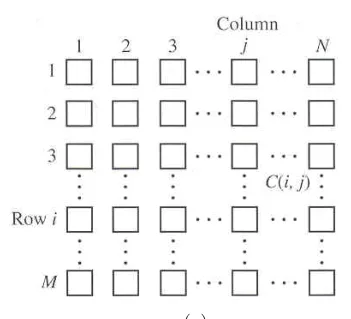 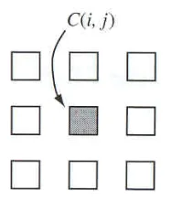 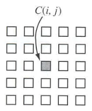 (a) (b) (c) Hình 4. Một CNN tiêu chuẩn với một mảng (a), vùng lân cận 3×3 và 5×5 (b và c) (Mainzer và Chua, 2013, tr. 270). Phần lớn các ứng dụng CNN sử dụng các CNN tiêu chuẩn bất biến không gian với vùng lân cận tế bào 3 × 3 và không có sự thay đổi của các trọng số khớp thần kinh cũng như ngưỡng tế bào trong không gian tế bào. Một phạm vi ảnh hưởng 3 × 3 tại mỗi nút của lưới chứa chín tế bào với tám tế bào láng giềng và tế bào ở tâm của nó. Trong trường hợp này, đóng góp của các trọng số đầu ra (phản hồi) và đầu vào (truyền thẳng) có thể được rút gọn thành hai ma trận 3 × 3 cố định được gọi là mẫu nhân bản phản hồi (đầu ra) A và mẫu nhân bản truyền thẳng (đầu vào) B. Do đó, mỗi CNN được xác định duy nhất bởi hai mẫu nhân bản A và B, cùng một ngưỡng z, bao gồm 3 × 3 + 3 × 3 + 1 = 19 số thực. Chúng có thể được sắp xếp thành một chuỗi gồm 19 đại lượng vô hướng với một ngưỡng đồng nhất, chín trọng số khớp thần kinh truyền thẳng và chín trọng số khớp thần kinh phản hồi. Chuỗi này được gọi là một gen CNN vì nó xác định hoàn toàn động lực học của một CNN. Theo đó, vũ trụ của tất cả các gen CNN được gọi là bộ gen CNN. Tương tự như dự án bộ gen người, có thể đạt được tiến bộ ổn định bằng cách cô lập và phân tích các lớp gen CNN khác nhau và ảnh hưởng của chúng lên các bộ gen CNN. Một chương trình CNN được định nghĩa bởi một chuỗi các gen CNN được gọi là một nhiễm sắc thể CNN. Mọi CA với các trạng thái nhị phân đều có thể được coi là một nhiễm sắc thể CNN. Đặc biệt, CA Trò chơi Cuộc đời (Game of Life) của Conway có thể được hiện thực hóa bằng một nhiễm sắc thể CNN. Vì CA Trò chơi Cuộc đời là một 282 Trí tuệ Nhân tạo của Hệ thống Phỏng thần kinh máy Turing phổ quát, nên CNN Trò chơi Cuộc đời tương ứng cũng là một máy Turing phổ quát. Do đó, tồn tại một máy phổ quát CNN (CNN-UM) có thể mô phỏng bất kỳ CNN cụ thể nào. Về tính toán thị giác, bộ ba {A, B, z} và 19 số thực của nó có thể được coi là một lệnh vĩ mô CNN về cách biến đổi một hình ảnh đầu vào thành một hình ảnh đầu ra. Các ví dụ đơn giản bao gồm các lớp con của CNN có tính ứng dụng thực tế như lớp C(A, B, z) của các CNN bất biến không gian với các trọng số khớp thần kinh kích thích và ức chế, lớp không phản hồi (truyền thẳng) C(0, B, z) của các CNN không có phản hồi tế bào, lớp không đầu vào (tự trị) C(A, 0, z) của các CNN không có đầu vào tế bào, và lớp không ghép cặp C(A0, B, z) của các CNN không có sự ghép cặp tế bào. Trong A0, tất cả các trọng số đều bằng không ngoại trừ trọng số của tế bào ở tâm ma trận. Luồng tín hiệu và cấu trúc hệ thống của chúng có thể được minh họa bằng các sơ đồ, dễ dàng áp dụng cho cả mạch điện tử cũng như các nơ-ron sống điển hình. Các CNN là những ứng cử viên tối ưu để mô phỏng các tương tác thần kinh cục bộ của các tế bào tạo ra các hiện tượng vĩ mô tập thể. Một CNN tự trị đơn giản có thể được thiết kế bằng cách sử dụng một mẫu có kích hoạt cục bộ và ức chế bên. Nó tự phát tạo ra một mẫu mê cung từ các điều kiện ban đầu ngẫu nhiên. Ở bước tiếp theo, ánh xạ võng mạc–vỏ não được áp dụng cho mẫu ổn định thu được. Về mặt hình học, một điểm tọa độ cực trên võng mạc được ánh xạ từ điểm Descartes trên vỏ não, tạo ra thị giác tri giác về một mẫu đường hầm xoắn ốc (Hình 5). Ưu điểm của mô hình CNN rất rõ ràng: Nó có thể dễ dàng được lập trình vào một con chip CNN-UM, thứ có thể được cấy ghép vào não sống trong các ứng dụng phẫu thuật thần kinh tương lai. Các CNN với khả năng xử lý thông tin tính bằng nano giây (trong thiết kế tiêu chuẩn) và thậm chí bằng tốc độ ánh sáng (trong công nghệ quang học) dường như là những ứng cử viên tối ưu cho các ứng dụng trong phỏng sinh học thần kinh. Rõ ràng, 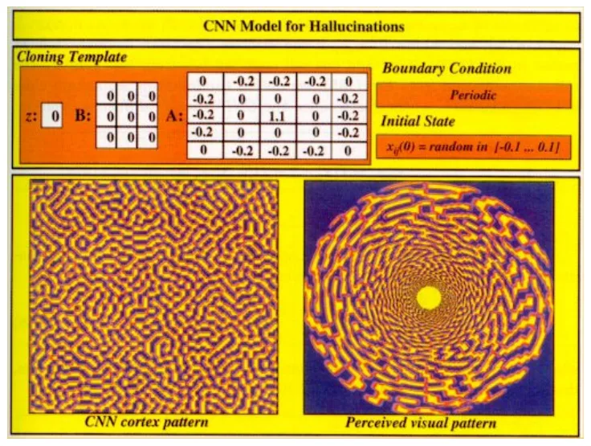 Hình 5. Một mô hình CNN cho ảo giác (Mainzer và Chua, 2013, tr. 272). có những điểm tương đồng đáng ngạc nhiên giữa các kiến trúc CNN và, chẳng hạn, con đường thị giác của não bộ. Một cách tiếp cận CNN phù hợp được gọi là “Mắt Phỏng sinh học” (Chua và Rosca, 2002), nghĩa là một khuôn khổ hình thức của các mô hình thị giác được kết hợp và triển khai trên CNN-UM. Phân tích bắt đầu với một mô hình về tổ chức trường tiếp nhận trong võng mạc và con đường thị giác. Hình 6(a) cho thấy một nơ-ron với một đầu ra sợi trục phân nhánh tới nhiều nơ-ron khác và nhiều đầu vào sợi nhánh. Các khoảng trống nhỏ biểu thị các khớp thần kinh được mô hình hóa bởi các phần tử mẫu. Trong Hình 6(b), một nơ-ron ở tâm nhận các đầu ra hồi quy từ các láng giềng của nó. Do đó, trường tiếp nhận của một nơ-ron trung tâm được mô hình hóa bởi một mẫu A 3 × 3 tương ứng làm phạm vi ảnh hưởng cục bộ của nó. Trong Hình 6(c), một phần của mạng nơ-ron hai lớp được hiển thị với mỗi lớp là một biểu diễn một chiều của lưới hai chiều. Nơ-ron ở tâm của lớp 2 nhận các đầu vào sợi nhánh từ 284 Trí tuệ Nhân tạo của Hệ thống Phỏng thần kinh 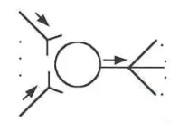 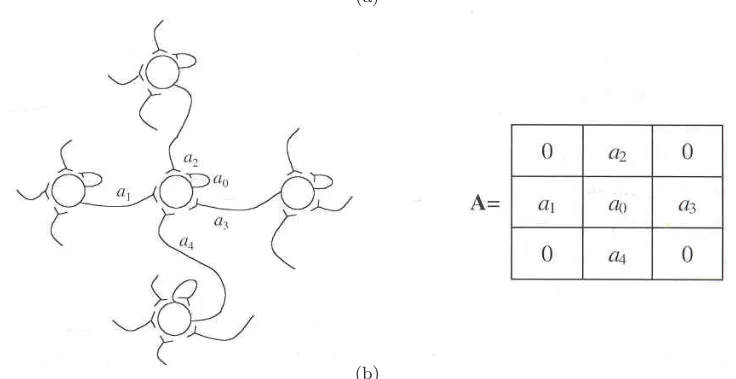 (a) (b) 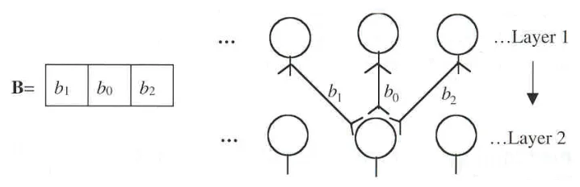 (c) Hình 6. Mô hình CNN về phỏng sinh học thần kinh với nơ-ron (a), mẫu A (b) và mẫu B (c) (Mainzer và Chua, 2013, tr. 273). vùng lân cận ở lớp đầu vào 1. Các trọng số tương ứng được mô hình hóa bởi một mẫu B. Nhiều mô hình giải phẫu thần kinh và sinh lý học thần kinh có thể được chuyển dịch thành các mẫu nhân bản CNN. Chẳng hạn, sự điều chỉnh độ dài (length tuning) có nghĩa là một số nơ-ron nhất định trong nhân gối ngoài và vỏ não thị giác đưa ra phản ứng tối đa đối với một thanh được định hướng tối ưu có độ dài nhất định. Phản ứng giảm đi hoặc biến mất khi tăng độ dài của kích thích thanh. Một mô hình CNN tương ứng phát hiện các thanh ngang, dọc và chéo có độ dài không quá ba điểm ảnh. Một chức năng khác trong vỏ não thị giác là tính chọn lọc hướng, cũng có thể được hiện thực hóa bằng một CNN không ghép cặp. Các ảo ảnh thị giác như ảo ảnh đầu mũi tên vốn đã được nghiên cứu trong tâm lý học nhận thức cũng có thể được mô phỏng bằng một CNN không ghép cặp. Sau khi đưa ra các phần tử “Lego” của võng mạc như tế bào, khớp thần kinh và mẫu cho tổ chức trường tiếp nhận, một mô hình CNN đa lớp đơn giản hóa của võng mạc có thể được thiết kế và áp dụng trong phỏng sinh học thần kinh. Cuối cùng, kiến trúc CNN-UM cho phép chúng ta triển khai nhiều mô hình phỏng thần kinh không gian–thời gian. Cùng một kiến trúc của máy phổ quát không chỉ có thể được sử dụng để bắt chước các võng mạc khác nhau của động vật, ví dụ, của ếch, kỳ giông hổ, thỏ hoặc đại bàng, mà còn có thể được kết hợp và tối ưu hóa cho các ứng dụng kỹ thuật. Sự kết hợp giữa chip sinh học và chip nhân tạo không còn là giấc mơ khoa học viễn tưởng về người máy sinh học (cyborg), mà là hiện thực kỹ thuật với những triển vọng đầy cảm hứng cho robot và y học (Mainzer, 2010). Trong động kinh học, các ứng dụng lâm sàng của chip CNN đã được dự kiến (Tetzlaff, 2002). Ý tưởng là phát triển một thiết bị chip thu nhỏ để dự đoán và ngăn ngừa các cơn động kinh. Các kỹ thuật phân tích chuỗi thời gian phi tuyến đã được phát triển để đặc trưng hóa các mẫu EEG điển hình của một cơn động kinh và nhận biết các chuyển pha dẫn đến trạng thái thần kinh động kinh. Các kỹ thuật này chủ yếu liên quan đến việc ước tính các tiêu chí nổi tiếng, chẳng hạn như chiều tương quan, entropy Kolmogorov–Sinai, số mũ Lyapunov, các thước đo tính tất định và tính tương đồng fractal. Các thiết bị dự đoán và ngăn ngừa cơn co giật cấy ghép đã được sử dụng cho bệnh nhân Parkinson. Trong trường hợp các quá trình động kinh, một thiết bị như vậy sẽ liên tục theo dõi các đặc trưng trích xuất từ EEG, tính toán xác suất của một cơn co giật sắp xảy ra và được trang bị các kỹ thuật phòng ngừa phù hợp. 286 Trí tuệ Nhân tạo của Hệ thống Phỏng thần kinh Nó cũng cần sở hữu cả tính linh hoạt cao để điều chỉnh theo các mẫu của từng bệnh nhân và hiệu quả cao để cho phép ước tính các đặc trưng này theo thời gian thực. Hơn nữa, nó phải tiêu thụ năng lượng thấp và đủ nhỏ để được triển khai trong một hệ thống cấy ghép thu nhỏ. Những yêu cầu này được hiện thực hóa tối ưu bởi các CNN với sức mạnh tính toán song song khổng lồ, xử lý thông tin tương tự và khả năng tính toán phổ quát. Hình 7 cho thấy một thiết bị chip thu nhỏ để dự đoán và ngăn ngừa cơn co giật. Dữ liệu EEG được ghi lại từ các điện cực cấy gần hoặc bên trong vùng động kinh và được đưa vào hệ thống phân tích chuỗi thời gian. Hệ thống trích xuất các đặc trưng của một cơn co giật sắp xảy ra bằng hệ thống cảnh báo (Hình 7(a)) và hỗ trợ truyền thuốc tác dụng ngắn theo nhu cầu để ngăn chặn cơn co giật (Hình 7(b)). Nhìn chung, các CNN là một lớp đặc biệt của mạng phi tuyến tế bào mô phỏng sự hình thành mẫu trong tự nhiên. Chúng sử dụng cùng chữ viết tắt CNN và ý nghĩa của nó tùy thuộc vào ngữ cảnh. Các CNN đặc biệt là CNN phản ứng–khuếch tán mô phỏng sự hình thành mẫu trong các hệ thống phản ứng–khuếch tán. Một CNN là bất kỳ sự sắp xếp không gian nào của các tế bào ghép cặp cục bộ, trong đó mỗi tế bào là một hệ động lực có đầu vào, đầu ra và trạng thái tiến hóa theo một số 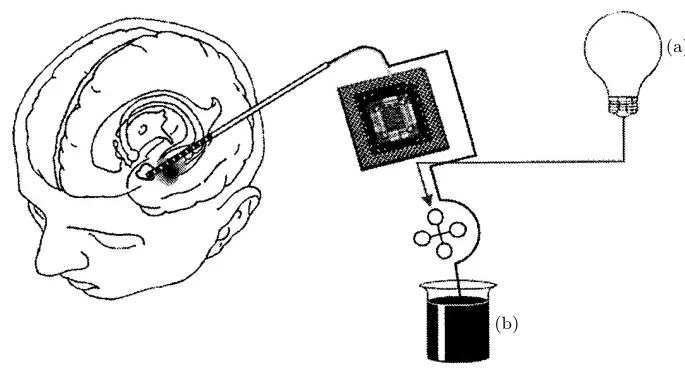 (a) (b) Hình 7. Chip CNN-UM để dự đoán và ngăn ngừa cơn động kinh (Mainzer và Chua, 2013, tr. 275). quy luật động lực học được quy định và động lực học của nó chỉ được ghép cặp giữa các tế bào láng giềng nằm trong một phạm vi ảnh hưởng được quy định lấy tâm tại vị trí của tế bào đó. Nói ngắn gọn, một CNN được định nghĩa bởi các phương trình trạng thái của các tế bào cô lập và các quy luật ghép cặp tế bào (bên cạnh các điều kiện biên và điều kiện ban đầu). Trong một hệ thống phản ứng–khuếch tán, mỗi tế bào nằm tại bất kỳ điểm lưới ba chiều nào với tọa độ không gian (x, y, z) được định nghĩa bởi một phương trình trạng thái ∂xi ∂t = fi(x1, x2, . . . , xn)(i = 1, 2, . . . , n), trong đó x = (x1, x2, . . . , xn)T là các biến trạng thái, và f(x) = (f1(x), f2(x), . . . , fn(x)) là một hàm vectơ phi tuyến của x gọi là số hạng động học. Hơn nữa, mỗi tế bào được xác định bởi một quy luật ghép cặp tế bào “khuếch tán” ∂2xi ∂x2 + ∂2xi ∂y2 + ∂2xi , ∂z2 với các hệ số khuếch tán D1, D2, . . . , Dn, và toán tử Laplace ∂2xi ∂x2 + ∂2xi ∂y2 + ∂2xi ∂z2 . Nếu cộng quy luật ghép cặp tế bào vào phương trình trạng thái tế bào, chúng ta thu được PDE của một hệ thống phản ứng–khuếch tán với ∂2xi ∂x2 + ∂2xi ∂y2 + ∂2xi ∂xi ∂t = fi(x1, x2, . . . , xn) + Di . ∂z2 Với định nghĩa về một CNN phản ứng–khuếch tán thay thế toán tử Laplace bằng phiên bản rời rạc hóa của nó, ∂2xi ∂x2 + ∂2xi ∂y2 + ∂2xi ∂z2 →(∇2xαβγ)i, 288 Trí tuệ Nhân tạo của Hệ thống Phỏng thần kinh trong đó (∇2xαβγ)I ≜xi(α + 1, β, γ) + xi(α −1, β, γ) + xi(α, β + 1, γ + xi(α, β −1, γ) + xi(α, β, γ + 1) + xi(α, β, γ −1) −6xi(α, β, γ), i = 1, 2, . . . , Nx. chúng ta thu được phương trình CNN phản ứng–khuếch tán liên kết sau đây ˙xi(α, β, γ) = fi(x1(α, β, γ), x2(α, β, γ), . . . , xn(α, β, γ)) + Di∇2(xαβγ)i, với α = (1, 2, . . . , Nα), β = (1, 2, . . . , Nβ), và γ = (1, 2, . . . , Nγ), trong đó xi(α, β, γ) biểu thị biến trạng thái xi nằm tại một điểm trong không gian ba chiều với tọa độ không gian (α, β, γ). Do đó, hệ thống CNN phản ứng–khuếch tán được xác định bởi một hệ gồm n = NxNαNβNγ phương trình vi phân thường (Chua, 1999). Nếu toán tử Laplace rời rạc được thay thế bằng phiên bản liên tục giới hạn của nó, chúng ta thu được các PDE phản ứng–khuếch tán tiêu chuẩn. Theo các mô phỏng số mở rộng, các phương trình phản ứng–khuếch tán CNN và các PDE liên kết của chúng có hành vi định tính tương tự nhau. Điều thú vị cần lưu ý là điều ngược lại không đúng theo nghĩa một số hiện tượng như sự thất bại lan truyền quan sát được trong một phương trình phản ứng–khuếch tán rời rạc hóa sẽ không xảy ra và không thể quan sát được trong phương trình giới hạn vi phân riêng phần (PDE) của nó (Perez-Munuzuri et al., 1992). Nói cách khác, phương trình phản ứng–khuếch tán rời rạc hóa tổng quát hơn so với PDE liên kết của nó. Trong phần tiếp theo, một số ví dụ về PDE xác định các hệ thống phản ứng–khuếch tán của hóa học, sinh học và khoa học thần kinh được ánh xạ vào các CNN. Vì các CNN có thể được mô phỏng bằng máy tính, các ánh xạ toán học này chứng minh một cách chặt chẽ rằng sự hình thành mẫu trong các hệ thống phản ứng–khuếch tán tự nhiên có thể được mô phỏng bằng máy tính. Một ví dụ hóa học về hệ thống phản ứng–khuếch tán là cái gọi là Brusselator của Prigogine (xem Chương 2.1), thứ có thể được mô phỏng bằng một CNN phản ứng–khuếch tán liên kết của máy tính. Brusselator được định nghĩa bởi hai PDE, ∂2u ∂x2 + ∂2u ∂u ∂t = a −(b + 1)u + u2v + D1 , ∂y2 ∂2u ∂x2 + ∂2u ∂v ∂t = bu −u2v + D2 , ∂y2 của các chất hóa học u và v, tương ứng. Thay thế toán tử Laplace bằng phiên bản rời rạc hóa của nó, chúng ta thu được phương trình CNN phản ứng–khuếch tán liên kết sau đây (Brusselator CNN): ˙uij = a −(b + 1)uij + u2 ijvij + D1(ui+1,j + ui−1,j + ui,j+1 + ui,j−1 −4uij), ˙vij = buij −u2 ijvij + D2(vi+1,j + vi−1,j + vi,j+1 + vi,j−1 −4vij). Các phương trình Hodgkin–Huxley là một mô hình toán học mô tả cách các điện thế hoạt động trong nơ-ron được khởi phát và lan truyền. Đó là một tập hợp các phương trình vi phân phi tuyến xấp xỉ các đặc tính điện của các nơ-ron có thể bị kích thích. Năm 1952, Alan Lloyd, Hodgkin và Huxley đã đưa ra mô hình để giải thích các cơ chế ion làm nền tảng cho sự khởi phát và lan truyền của các điện thế hoạt động. Họ đã nhận giải Nobel Sinh lý học hoặc Y học năm 1963 cho mô hình này. Các phương trình FitzHugh–Nagumo (1961) là một sự đơn giản hóa của mô hình Hodgkin–Huxley. Mô hình FitzHugh–Nagumo về sự khởi phát và lan truyền của các điện thế hoạt động thần kinh giữa các nơ-ron có thể bị kích thích được định nghĩa 290 Trí tuệ Nhân tạo của Hệ thống Phỏng thần kinh bởi hai PDE: u3 3 −u ∂2u ∂x2 , ∂u ∂t = − −v + D1 ∂v ∂t = −ϵ(u −bv + a). Thay thế toán tử Laplace bằng phiên bản rời rạc hóa của nó, chúng ta thu được phương trình CNN phản ứng–khuếch tán liên kết sau đây (FitzHugh–Nagumo CNN) mô phỏng xấp xỉ các điện thế hoạt động trên máy tính: u3 i 3 −ui ˙ui = − −vi + D1(ui+1 + ui−1 −2ui), ˙vi = −ϵ(ui −b vi + a). Điều quan trọng cần lưu ý là các PDE chỉ đơn thuần là sự trừu tượng hóa toán học của tự nhiên. Khái niệm môi trường liên tục trên thực tế là một sự lý tưởng hóa của thực tại. Ngay cả tập hợp tất cả các electron trong một chất rắn cũng không tạo thành một môi trường liên tục vì phần lớn thể tích ngăn cách các electron với hạt nhân nguyên tử đại diện cho một không gian trống rộng lớn. Đặc biệt, cơ học lượng tử ngụ ý rằng ở những khoảng cách cực nhỏ, không gian được tạo thành từ các bit lượng tử rời rạc. Trong trường hợp đặc biệt khi một CNN bao gồm một mảng đồng nhất, nơi các tế bào của nó không có đầu vào, không có ngưỡng và không có đầu ra, và nơi phạm vi ảnh hưởng chỉ mở rộng đến các láng giềng gần nhất, CNN sẽ rút gọn thành một mạng lưới phi tuyến. Hình 8 mô tả một CNN ba chiều được minh họa bằng một khối lập phương gồm các tế bào, được biểu diễn bằng các nút, trong đó một tế bào điển hình Cijk = C(i, j, k) được tô sáng cùng với phạm vi ảnh hưởng Sijk của nó. Xét từ góc độ mạch điện tử, mỗi tế bào có thể được coi là một thiết bị ba cực, hoặc một mạng hai cửa nối đất (Chua, 1998, Phần III). Trong Hình 8, mỗi tế bào trong CNN ba chiều này được ghép cặp với sáu tế bào láng giềng gần nhất của nó thông qua các điện trở thụ động tuyến tính. Một tế bào trong trường hợp này là một bộ dao động Chua với ba cực ngoài hoặc hai cửa có chung điểm nối đất. Mỗi cực ngoài (ngoại trừ điểm nối đất) được nối với một tụ điện bên trong tế bào và được ghép cặp với một cực tương ứng của sáu tế bào láng giềng thông qua sáu điện trở thụ động tuyến tính. 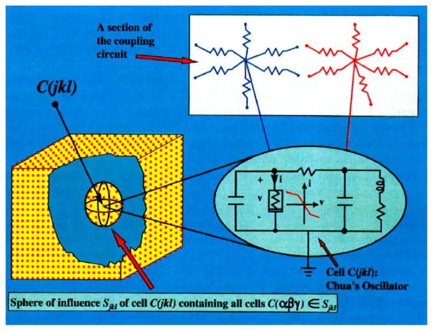 Hình 8. Một CNN ba chiều với hình cắt của một tế bào bên trong Cijk (bộ dao động Chua) và phạm vi ảnh hưởng Sijk của nó (Mainzer và Chua, 2013, tr. 279). Trong một mặt cắt ngang hai chiều của khối lập phương CNN, mỗi một cửa của bộ dao động Chua được biểu diễn bằng một hộp đen hai cực ghép cặp với các láng giềng của nó bằng bốn điện trở thụ động tuyến tính, hai điện trở dọc theo mỗi trục tọa độ (Hình 9). Nhìn chung, một CNN được định nghĩa duy nhất bởi các tế bào và các sự ghép cặp của chúng. Trong Hình 11, mỗi tế bào C(j, k) của một CNN phản ứng–khuếch tán được xác định là một mạng m-cửa phi tuyến được định nghĩa bởi động lực học tế bào của nó, trong đó m bằng số lượng các biến trạng thái được ghép cặp trực tiếp với các láng giềng của nó. Các biến trạng thái bổ sung không được ghép cặp trực tiếp với các láng giềng của nó được ẩn đi về mặt đồ họa. Các sự ghép cặp từ tế bào C(j, k) đến tất cả các tế bào trong phạm vi ảnh hưởng 3×3 Sjk được đặt tâm tại (j, k) và được xác định bởi một mạng γ-cửa Γjk. Đối với CNN phản ứng–khuếch tán một khuếch tán trong Hình 9, một tế bào cô lập C(j, k) và bốn điện trở ghép cặp của nó được thể hiện trong Hình 11(a). 292 Trí tuệ Nhân tạo của Hệ thống Phỏng thần kinh 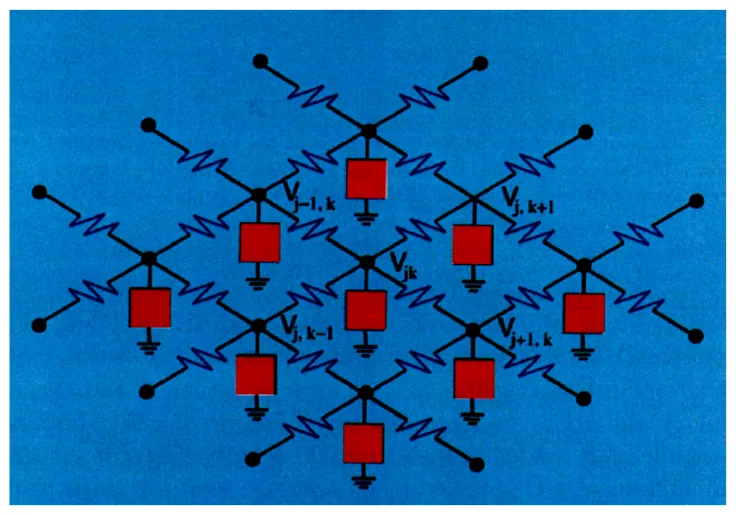 Hình 9. Một CNN hai chiều được tạo thành từ các tế bào bộ dao động Chua ghép cặp qua một lớp lưới điện trở tuyến tính đơn lẻ (Mainzer và Chua, 2013, tr. 280). Mạch ghép cặp năm cực hoặc mạng γ-cửa Γjk (γ = 4) trong Hình 11(a) có thể được vẽ lại thành một mạng bốn cửa nối đất có chung điểm nối đất, như thể hiện trong Hình 11(b) (Chua, 1999). Đối với CNN phản ứng–khuếch tán trong Hình 10, mạng γ-cửa Γjk bao gồm m mạng bốn cửa nối đất giống hệt nhau với nút (j, k) là nút nối đất và được tạo thành từ bốn điện trở thụ động tuyến tính trực giao giống hệt nhau với tổng cộng γ = 4m. Một CNN được đặc tả hoàn toàn bởi tế bào m-cửa C(j, k) và sự ghép cặp γ-cửa Γjk. Vì độ dẫn điện của tất cả các điện trở trong mỗi lớp i của lưới điện trở trong Hình 10 bằng hệ số khuếch tán Di vốn được giả định là dương, nên suy ra sự ghép cặp γ-cửa Γjk là thụ động. Nếu tế bào C(j, k) thụ động cục bộ một cách chặt chẽ, thì từ các xem xét về đối xứng suy ra CNN phải có một nghiệm trạng thái dừng duy nhất. Kết quả này ngụ ý rằng tất cả các nút thuộc cùng một lớp phải có điện áp nút-so-với-chuẩn giống hệt nhau. Suy ra không thể tồn tại mẫu hoặc cấu trúc tiêu tán nào. 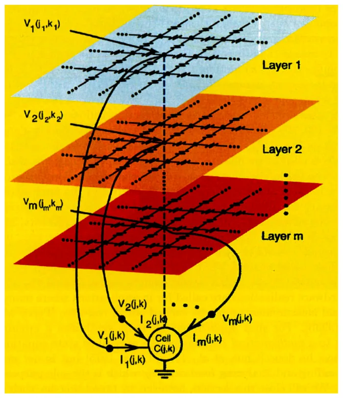 Hình 10. Một tế bào CNN C(j, k) như một mạng m-cửa phi tuyến ghép cặp với các láng giềng của nó. Chỉ số dưới i gắn với (ji, ki) biểu thị nút trong lớp lưới điện trở thứ i được nối với một cực của tế bào C(j, k). Tất cả các điện trở trong lớp i = 1, 2, . . . , m đều là các điện trở tuyến tính có độ dẫn điện giống hệt nhau (Mainzer và Chua, 2013, tr. 281). Nhìn chung, sự ghép cặp γ-cửa Γjk phải được mô hình hóa như một mạng đa cửa động lực học phi tuyến. Trong trường hợp này, động lực học phải hướng tới một phân bố điện áp nút trạng thái dừng đồng nhất trên mỗi lưới điện trở 294 Trí tuệ Nhân tạo của Hệ thống Phỏng thần kinh 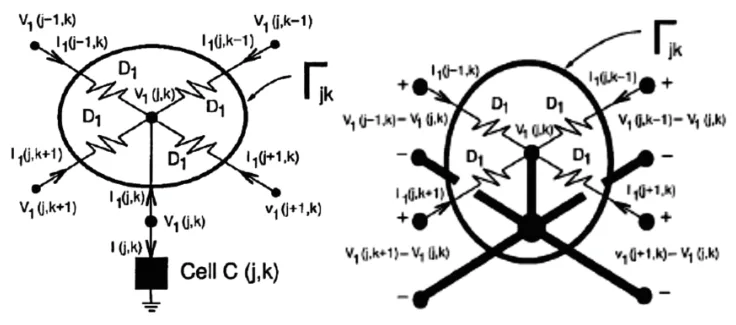 (a) (b) Hình 11. Một tế bào cô lập C(j, k) của một lưới hai chiều (Hình 9) với bốn điện trở tuyến tính ghép cặp của nó có độ dẫn điện giống hệt nhau D1 (a). Mạch năm cực Γjk trong (a) tương đương với một mạng bốn cửa nơi các dây đậm tạo thành cực nối đất chung của mỗi cửa (b) (Mainzer và Chua, 2013, tr. 282). nếu cả tế bào m-cửa C(j, k) và sự ghép cặp γ-cửa Γjk đều thụ động cục bộ một cách chặt chẽ. Do đó, nguyên lý hoạt động cục bộ một lần nữa được chứng minh: Một CNN liên kết với một môi trường không bảo toàn đồng nhất không thể thể hiện các mẫu hoặc cấu trúc tiêu tán trừ khi các tế bào, hoặc các sự ghép cặp, hoạt động cục bộ. Ở bước tiếp theo, chúng ta hãy áp dụng sơ đồ chung của nguyên lý hoạt động cục bộ cho các CNN điện. Mỗi tế bào C(j, k, l) trong một CNN phản ứng–khuếch tán có n biến trạng thái nhưng chỉ có m ≤ n trong số chúng được ghép cặp trực tiếp với các láng giềng gần nhất của nó thông qua khuếch tán. Trong trường hợp này, phương trình trạng thái của mỗi tế bào C(j, k, l) có dạng ˙V1(j, k, l) = f1(V1(j, k, l), V2(j, k, l), . . . , Vn(j, k, l)) + D1∇2V1(j, k, l), ˙V2(j, k, l) = f2(V1(j, k, l), V2(j, k, l), . . . , Vn(j, k, l)) + D2∇2V2(j, k, l), ... ˙Vm(j, k, l) = fm(V1(j, k, l), V2(j, k, l), . . . , Vn(j, k, l)) + Dm∇2Vm(j, k, l), ˙Vm+1(j, k, l) = fm+1(V1(j, k, l), V2(j, k, l), . . . , Vn(j, k, l)), ... ˙Vn(j, k, l) = fn(V1(j, k, l), V2(j, k, l), . . . , Vn(j, k, l)), với j = 1, 2, . . . , Nx; k = 1, 2, . . . , Ny; z = 1, 2, . . . , Nz. ˙Va = fa(Va, Vb) + Da∇2Va, ˙Vb = fb(Va, Vb), trong đó Va = [V1(j, k, l), V2(j, k, l), . . . , Vn(j, k, l)]T , Vb = [Vm+1(j, k, l), Vm+2(j, k, l), . . . , Vn(j, k, l)]T , fa = [f1, f2, . . . , fm]T , fb = [fm+1, fm+2, . . . , fn]T , Da∇2 = [∇2V1(j, k, l), ∇2V2(j, k, l), . . . , ∇2Vm(j, k, l)]T , ⎡ ⎤ D1 . . . ⎢⎢⎢⎢⎣ ⎥⎥⎥⎥⎦ D2 ... ... ... với Di > 0. · · · Dm Rõ ràng, trong một CNN, chúng ta phải phân biệt động lực học của các tế bào và các sự ghép cặp của chúng. Một CNN được định nghĩa bởi động lực học của các tế bào và các sự ghép cặp của chúng: Động lực học tế bào: ˙Va = fa(Va, Vb) + Ia, ˙Vb = fb(Va, Vb). Quy luật ghép cặp: Ia = ga(Va(j, k, l), Va(j −1, k, l), Va(j + 1, k, l), Va(j, k −1, l), Va(j, k + 1, l), Va(j, k, l −1), 296 Trí tuệ Nhân tạo của Hệ thống Phỏng thần kinh ⎡ ⎤ ⎡ ⎤ ∇2V1(j, k, l) D1 . . . ⎢⎢⎢⎢⎣ ⎥⎥⎥⎥⎦ ⎢⎢⎢⎢⎣ ⎥⎥⎥⎥⎦ ∇2V2(j, k, l) D2 ... ... ... = . ... ∇2Vm(j, k, l) · · · Dm Động lực học tế bào chỉ liên quan đến các biến điện áp (Va(j, k, l), Vb(j, k, l)) và các biến dòng điện Ia(j, k, l) tại cùng một vị trí (j, k, l). Các quy luật ghép cặp không chỉ liên quan đến các biến điện áp Va(j, k, l) tại vị trí (j, k, l) mà còn cả các biến điện áp của các tế bào láng giềng. Mối quan hệ giữa một tế bào điển hình C(j, k, l) tại vị trí (j, k, l) và mạng lưới ghép cặp của nó được minh họa trong Hình 10 cho một phương trình phản ứng–khuếch tán CNN hai chiều, trong đó Va = [V1(j, k), V2(j, k), . . . , Vn(j, k)]T và Ia = [I1(j, k), I2(j, k), . . . , In(j, k)]T lần lượt là các biến điện áp m-cửa và dòng điện m-cửa. Trong trường hợp đặc biệt m = 1, Hình 9 rút gọn thành Hình 10(a), nơi tế bào C(j, k) trở thành một mạng một cửa. Đặc tuyến điểm-lái (DP) tĩnh của một tế bào CNN cô lập có thể được suy ra bằng cách đặt ˙Va = 0 và ˙Vb = 0 trong các phương trình động lực học tế bào, tức là, 0 = fa(Va, Vb) + Ia, 0 = fb(Va, Vb), trong đó Va ∈ Rm, Ia ∈ Rm, Vb ∈ Rn−m, fa ∈ Rm, và fb ∈ Rn−m. Từ 0 = fb(Va, Vb), vectơ Vb có thể được biểu diễn theo Va, tức là, Vb = ga(Va) với một hàm có thể đa trị ga. Thay Vb vào phương trình động lực học tế bào, ta thu được đặc tuyến DP tế bào tĩnh: (Va, Ia) ≜ fa(Va, ga(Va)) + Ia = 0. Nhìn chung, có thể có nhiều nghiệm Va = Va(Q1), Va(Q2), . . ., Va(QP) cho mỗi Ia = ¯Ia ∈ Rm, trong đó Va(Qi) biểu thị nghiệm điện áp cửa Va tại điểm cân bằng tế bào thứ i Qi. Quỹ tích của tất cả các điểm cân bằng tế bào như vậy được tính toán tường minh tại Ia = ¯Ia (với ¯Ia chạy trên toàn bộ không gian Euclid m chiều Rm) đồng nhất với đặc tuyến DP tế bào tĩnh. Khái niệm hoạt động cục bộ dựa trên ý tưởng rằng khi hoạt động trong một vùng lân cận vô cùng nhỏ của một điểm cân bằng tế bào Q, một tế bào CNN hoạt động cục bộ phải hành xử chính xác như một bóng bán dẫn hoạt động tại một điểm làm việc tích cực, nhờ đó một tín hiệu đầu vào nhỏ (công suất thấp) có thể được chuyển đổi thành một tín hiệu đầu ra lớn (công suất cao) bằng cách tiêu tốn một nguồn năng lượng, trong trường hợp này là một nguồn pin. Do đó, một tế bào CNN m-cửa hoạt động cục bộ tại một điểm cân bằng tế bào Q ≜ (¯Va, ¯Ia) nếu có thể tìm thấy một tín hiệu dòng điện cửa đầu vào vô cùng nhỏ ia(t) sao cho bằng cách đặt dòng điện cửa đầu vào toàn cục Ia(t) = ¯Ia + ia(t), chúng ta có thể trích xuất nhiều năng lượng tín hiệu vô cùng nhỏ δε(Q) tại Q trong một khoảng thời gian 0 < t ≤ T hơn lượng mà tế bào đã lấy từ đầu vào bên ngoài của nó. Trong trường hợp này, độ lợi năng lượng cục bộ ròng được cung cấp bởi năng lượng thu được từ dòng điện cửa đầu vào không đổi lớn ¯Ia. Để có một định nghĩa chính xác về mặt toán học của một tế bào CNN hoạt động cục bộ, chúng ta hãy giả sử một điểm cân bằng tế bào Qi liên kết với Ia = Ia(Qi). Trạng thái cân bằng tế bào tương ứng của các phương trình trạng thái tế bào là Va(Qi). Các hàm fa(Va, Vb) và fb(Va, Vb) của động lực học tế bào được tính tại (Va(Qi), Vb(Qi)), trong đó Vb(Qi) = ga(Va). Để suy ra động lực học tế bào CNN cục bộ tại một điểm cân bằng Qi, chúng ta xem xét khai triển chuỗi Taylor của fa(Va, Vb) và fb(Va, Vb) quanh Qi và bỏ qua các số hạng bậc cao hơn. Các phương trình tuyến tính hóa thu được định nghĩa động lực học tế bào CNN cục bộ tại Qi với ˙va = Aaava + Aabvb + ia, ˙va = Aaava + Aabvb, trong đó va ≜ Va − Va(Qi), vb ≜ Vb − Vb(Qi), và ia ≜ Ia − Ia(Qi) là các điện áp cửa và dòng điện cửa tín hiệu nhỏ vô cùng nhỏ quanh điểm cân bằng Qi. Chúng là mạng m-cửa tín hiệu nhỏ tại 298 Trí tuệ Nhân tạo của Hệ thống Phỏng thần kinh Qi liên kết với các phương trình trạng thái tuyến tính hóa của tế bào m-cửa C(j, k, l) tại vị trí (j, k, l). Các hệ số tế bào CNN tín hiệu nhỏ tại Qi là Va=Va(Qi),Vb=Vb(Qi), ∂Va Va=Va(Qi),Vb=Vb(Qi), ∂Vb Va=Va(Qi),Vb=Vb(Qi), ∂Va Va=Va(Qi),Vb=Vb(Qi). ∂Vb liên kết với các hàm fa(Va, Vb) và fb(Va, Vb) của động lực học tế bào được tính tại (Va(Qi), Vb(Qi)). Trong động lực học trạng thái cục bộ của một tế bào CNN C(j, k, l), chúng ta xem xét động lực học tế bào tuyến tính hóa tại bất kỳ điểm cân bằng tế bào nào Qi. Gọi va(t) là điện áp cửa tín hiệu nhỏ vô cùng nhỏ tương ứng với bất kỳ dòng điện cửa nhỏ vô cùng nhỏ nào ia(t) đã cho dưới các trạng thái ban đầu bằng không va(0) = 0 và vb(0) = 0. Gọi δε(Qi) là tổng năng lượng (tức là “tổng vô cùng nhỏ” hoặc tích phân của dòng công suất p(t) ≜ va(t) · ia(t)) tích lũy kể từ thời điểm ban đầu t = 0 cho đến t = T tại một điểm cân bằng tế bào Qi. Sẽ rất thuận tiện dù mang tính quy ước khi phân biệt chiều tham chiếu của tổng năng lượng đi vào và đi ra khỏi tế bào tại t = T. Chiều của các dòng năng lượng, đi vào và đi ra khỏi mỗi tế bào CNN, được phân biệt bằng một quy ước có thể được chứng minh bằng các phương trình Maxwell (Chua et al., 1985): Nếu δε(Qi) > 0, thì có một tổng năng lượng ròng tích lũy kể từ thời điểm ban đầu t = 0 đi vào tế bào C(j, k, l) tại t = T. Ngược lại, nếu δε(Qi) < 0, thì tại t = T, tế bào C(j, k, l) thực sự đang cung cấp năng lượng cho mạch ngoài. Trong trường hợp này, tại t = T, tế bào hành xử như một nguồn năng lượng cục bộ, thay vì một nơi tiêu thụ. Một tế bào CNN C(j, k, l) được gọi là hoạt động cục bộ tại một điểm cân bằng tế bào Qi khi và chỉ khi tồn tại một dòng điện cửa nào đó tại thời điểm ia(t), t ≥ 0, sao cho tại một thời điểm hữu hạn T nào đó, 0 < T < ∞, có một năng lượng ròng chảy ra khỏi tế bào tại t = T, giả sử rằng tế bào có năng lượng bằng không tại t = 0, cụ thể là, δε(Qi) ≜ 0 va(t) · ia(t)dt < 0, trong đó va(t) là một nghiệm của các phương trình trạng thái tuyến tính hóa của động lực học tế bào CNN cục bộ quanh Qi với các trạng thái ban đầu bằng không va(0) = 0 và vb(0) = 0. Rõ ràng, trong khoảng thời gian 0 < t ≤ T, tế bào CNN đóng vai trò như một nguồn công suất và cung cấp một lượng δε(Qi) các dòng công suất vô cùng nhỏ tại một điểm cân bằng Qi. Để suy ra phép kiểm tra hoạt động cục bộ, phép biến đổi Laplace được thực hiện từ động lực học tế bào CNN tuyến tính hóa với sˆva(s) = Aaa(Q)ˆva(s) + Aab(Q)ˆvb(s) + ˆia(s), sˆvb(s) = Aba(Q)ˆva(s) + Abb(Q)ˆvb(s), trong đó ˆva(s), ˆvb(s) và ˆia(s) lần lượt biểu thị phép biến đổi Laplace của va(t), vb(t) và ia(t). ˆvb(s) = (s1 − Abb(Q))−1Aba(Q) ˆva(s), trong đó ký hiệu 1 biểu thị ma trận đơn vị. Nếu chúng ta thay số hạng này cho ˆvb(s) vào phương trình trạng thái tế bào tuyến tính hóa đầu tiên, chúng ta thu được 300 Trí tuệ Nhân tạo của Hệ thống Phỏng thần kinh biểu thức sau đây của hàm đầu vào: ˆia(s) = YQ(s)ˆva(s), trong đó YQ(s) ≜ [(s1 − Aaa(Q)) − Aab(Q)(s1 − Abb(Q))−1Aba(Q)] được gọi là ma trận phức tạp tại cân bằng tế bào Qi. Trong kỹ thuật điện, YQ(s) được biết đến rộng rãi như một ma trận dẫn nạp, trong đó dẫn nạp được định nghĩa là nghịch đảo của trở kháng. Để một tế bào CNN phản ứng–khuếch tán hoạt động cục bộ tại Qi, YQ(s) không được là một ma trận thực dương tại Qi. Do đó, để đảm bảo một tế bào CNN phản ứng–khuếch tán hoạt động cục bộ tại Qi, bất kỳ tiêu chí thụ động nào cũng phải bị phủ định. Một ví dụ nổi tiếng về CNN phản ứng–khuếch tán với một hệ số khuếch tán khác không và hai biến trạng thái (m = 1, n = 2) là phương trình CNN FitzHugh–Nagumo (Dogaru và Chua, 1998a), một mô hình đơn giản hóa của động lực học não bộ thần kinh theo phương trình Hodgkin–Huxley (Min et al., 2000b). Trong trường hợp này, tất cả các biến trong động lực học tế bào CNN tuyến tính hóa tại Q đều là đại lượng vô hướng. Các phương trình động lực học tế bào CNN tuyến tính hóa được viết lại thành ˙v1 = a11v1 + a12v2 + i1, ˙v2 = a21v1 + a22v2. ZQ(s) = (s − a22) s2 − Ts + Δ, trong đó T = a11 + a22 và Δ = a11a22 − a12a21 lần lượt là vết và định thức của ma trận Jacobi liên kết a11 a12 a21 a22 được tính tại điểm cân bằng tế bào Qi. Các tiêu chí hoạt động cục bộ cho một hệ số khuếch tán có thể được suy ra bằng cách áp dụng phiên bản trở kháng của các tiêu chí hoạt động cục bộ trên cho trường hợp đặc biệt này, tức là bằng cách đổi dẫn nạp YQ(s) thành trở kháng ZQ(s). Một tế bào CNN phản ứng–khuếch tán một cửa với một hệ số khuếch tán và hai biến trạng thái hoạt động cục bộ tại một điểm cân bằng tế bào Q = (¯V1, ¯I1) khi và chỉ khi bất kỳ điều kiện nào trong bốn điều kiện sau thỏa mãn tại Q: (i) a11 + a22 > 0 hoặc a11a22 < a12a21, (ii) a11 > 0 hoặc a11 > a12a21 a22 , nếu a11 ≤ 0 và a22 ≠ 0, (iii) a11a22 > a12a21, a11 + a22 = 0, và a22 ≠ 0, (iv) a11a22 = a12a21, a11 + a22 = 0, và a22 ≠ 0. Brusselator hóa học thuộc lớp các CNN phản ứng–khuếch tán với hai hệ số khuếch tán (D1 > 0 và D2 > 0) và hai biến trạng thái (m = n = 2). Trong trường hợp này, tế bào CNN là một thiết bị ba cực, hoặc một mạng hai cửa nối đất, mà động lực học tế bào tín hiệu nhỏ của nó quanh một điểm cân bằng Qi được mô tả bởi ˙v1 = a11v1 + a12v2 + i1, ˙v2 = a21v1 + a22v2 + i2, trong đó a11, a12, a21 và a22 là các hệ số tế bào tín hiệu nhỏ tại Qi, được định nghĩa trong ma trận Jacobi liên kết. Áp dụng các tiêu chí hoạt động cục bộ cho ma trận dẫn nạp tế bào 2 × 2 liên kết YQ(s) tại Qi, ta thu được các tiêu chí hoạt động cục bộ cho hai hệ số khuếch tán: Một tế bào CNN phản ứng–khuếch tán hai cửa với hai hệ số khuếch tán và hai biến trạng thái hoạt động cục bộ tại một điểm cân bằng tế bào Q = (¯V1, ¯V2, ¯I1, ¯I2) khi và chỉ khi bất kỳ điều kiện nào trong hai điều kiện sau thỏa mãn tại Q: (i) a22 > 0, (ii) 4a11a22 < (a12 + a21)2. Phân tích trên có thể được tổng quát hóa cho bất kỳ môi trường đồng nhất nào có thể được ánh xạ tới một CNN được định nghĩa bởi bất kỳ động lực học tế bào nào, và bất kỳ quy luật ghép cặp nào, không nhất thiết phải thuộc loại phản ứng–khuếch tán. Đặc biệt, sự ghép cặp γ-cửa Γijk có thể là bất kỳ mạng đa cửa động lực học phi tuyến nào. Trong những trường hợp như vậy, để CNN thể hiện 302 Trí tuệ Nhân tạo của Hệ thống Phỏng thần kinh sự phức tạp, hoặc tế bào m-cửa Cijk hoặc sự ghép cặp γ-cửa Γijk phải hoạt động cục bộ tại một điểm cân bằng nào đó của tế bào cô lập Cijk hoặc mạng γ-cửa cô lập Γijk. Trên đường chân trời của công nghệ chip tương lai là tầm nhìn về máy tính phỏng thần kinh, bắt chước não bộ con người với hàng tỷ nơ-ron và kết nối khớp thần kinh. Não bộ được coi là những mạng lưới phức tạp với các hoạt động cục bộ của các tế bào, chẳng hạn như CNN và CA. Một đơn vị kỹ thuật mô hình hóa một nơ-ron sống với các khớp thần kinh cần các đặc tính của bộ nhớ, mạch kỹ thuật số và một dạng xử lý thông tin tương tự. Một ứng cử viên sáng giá đáp ứng tất cả các yêu cầu này là memristor, một phần tử mạch mới, được Chua (1971) đề xuất cách đây hơn 50 năm. Công nghệ hiện đại cho rằng memristor sẽ mang lại một làn sóng đổi mới trong điện tử học, đóng gói nhiều bit hơn vào các thể tích nhỏ hơn và được trang bị bộ nhớ bất khả biến (non-volatile) giúp ngăn ngừa mất dữ liệu. Thiết bị memristor đã tạo ra sự quan tâm to lớn trong cả giới nghiên cứu thiết bị lẫn ngành công nghiệp chip nhớ (Strukov et al., 2008). Những sự quan tâm này xuất phát từ tác động kinh tế tiềm năng cao của bước đột phá từ Hewlett–Packard (HP). Vì memristor titan-dioxit của HP có thể được thu nhỏ xuống khoảng 1 nm và tương thích với công nghệ IC hiện tại, nhiều chuyên gia trong ngành dự đoán rằng các thiết bị memristor nano cuối cùng sẽ thay thế cả bộ nhớ flash và bộ nhớ truy cập ngẫu nhiên động (DRAM). Thật vậy, một chiếc PC không có thời gian khởi động, và ghi nhớ toàn bộ dữ liệu trước khi rút phích cắm điện, có thể trở thành tính năng tiêu chuẩn trong vài năm tới. Memristor là viết tắt của “memory resistor” (điện trở nhớ) và được dự đoán là phần tử mạch thứ tư còn thiếu đối với các phương trình cơ bản của mạch điện (Hayes, 2011). Các phương trình này được định nghĩa cho bốn đại lượng là điện áp (v), dòng điện (i), điện tích (q) và từ thông (ϕ). Mỗi phương trình xác định mối quan hệ giữa hai trong số các biến này. Mối quan hệ đơn giản nhất giữa điện áp và dòng điện là định luật Ohm v = Ri, nghĩa là điện áp tỷ lệ thuận với dòng điện. Hằng số tỷ lệ được cho bởi điện trở R. Nếu một dòng điện I ampe chạy qua một điện trở R ohm, thì điện áp đối với điện trở là v vôn. Về mặt hình học, đồ thị của dòng điện theo điện áp đối với một điện trở là một đường thẳng có độ dốc R. Có sáu cách ghép cặp khả dĩ của bốn biến. Hai cặp (v, ϕ) và (i, q) đã được liên hệ bởi định nghĩa v = dϕ dt và i = dq dt . Ba cặp (v, i), (ϕ, i) và (q, v) lần lượt định nghĩa một điện trở, một cuộn cảm và một tụ điện. Phương trình còn thiếu liên hệ điện tích q và từ thông ϕ được gọi là memristor. Rõ ràng, memristor được tìm ra bằng các lập luận về tính đối xứng và tính đầy đủ. Tính đối xứng này được trực quan hóa trong Hình 12. Có hai lớp memristor: memristor thụ động cục bộ và memristor hoạt động cục bộ. Điện trở, tụ điện, cuộn cảm thông thường và memristor thụ động cục bộ là các phần tử mạch thụ động, phải được phân biệt với các thiết bị tích cực, chẳng hạn như bóng bán dẫn, vốn có thể khuếch đại tín hiệu và bơm công suất vào mạch. Tuy nhiên, memristor hoạt động cục bộ là các thiết bị tích cực và do đó cũng có thể khuếch đại tín hiệu, với một nguồn điện, giống hệt như bóng bán dẫn. Memristor là một thiết bị phi tuyến được định nghĩa bởi đồ thị của một đường cong 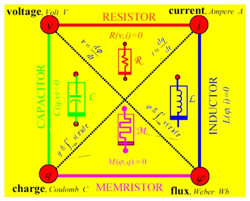 Hình 12. Bốn phần tử mạch cơ bản (Mainzer và Chua, 2013, tr. 289). 304 Trí tuệ Nhân tạo của Hệ thống Phỏng thần kinh trong mặt phẳng từ thông theo điện tích, có độ dốc, gọi là memristance (điện trở nhớ), thay đổi từ điểm này sang điểm khác (Chua, 2011). Một bóng bán dẫn là một thiết bị ba cực với ba kết nối tới một mạch. Nó hoạt động như một công tắc hoặc một bộ khuếch đại, với một điện áp đặt vào một cực điều khiển dòng điện chạy giữa hai cực còn lại. Mặc dù một memristor hoạt động cục bộ chỉ có hai cực, nó cũng có thể hiện thực hóa các chức năng này. Ngược lại, các memristor thụ động cục bộ có thể được sử dụng để xây dựng cả bộ nhớ và logic kỹ thuật số mà không cần nguồn điện. Đây là lý do tại sao chúng được gọi là bộ nhớ bất khả biến. Nói một cách ẩn dụ, một memristor có sẵn ý thức về lịch sử. Một tín hiệu được áp dụng tại một thời điểm có thể ảnh hưởng đến một tín hiệu khác đi qua cùng một đường dẫn sau đó. Tín hiệu đầu tiên thực hiện sự điều khiển này bằng cách thiết lập trạng thái bên trong của memristor thành điện trở cao hoặc thấp. Do đó, trong một máy tính phỏng thần kinh, các memristor thụ động cục bộ sẽ không hoàn toàn thay thế bóng bán dẫn, mà bổ sung cho chúng trong các chức năng bộ nhớ và mạch logic. Các memristor có thể đóng vai trò của các khớp thần kinh. Trong các mạng nơ-ron sinh học, mỗi tế bào thần kinh giao tiếp với các tế bào khác thông qua hàng nghìn khớp thần kinh. Một cơ chế học tập quan trọng được thực hiện bằng cách điều chỉnh cường độ của các kết nối khớp thần kinh. Trong một mạng nơ-ron nhân tạo, các khớp thần kinh phải là những cấu trúc nhỏ nhưng hiệu quả. Các memristor thụ động cục bộ đáp ứng tất cả các yêu cầu cần thiết. Chúng thay đổi điện trở để đáp ứng với các dòng điện chạy qua chúng. Hoạt động này gợi ý một cách trực tiếp để mô hình hóa sự điều chỉnh cường độ khớp thần kinh. Hãy nhớ lại rằng có hai loại memristor khác biệt về mặt chất: memristor thụ động cục bộ và memristor hoạt động cục bộ. Memristor HP là thụ động cục bộ vì nó không cần nguồn điện và được gọi là bất khả biến. Các kênh ion kali và natri trong mô hình mạch màng thần kinh Hodgkin–Huxley cổ điển có thể được coi là các memristor hoạt động cục bộ, được cấp nguồn bởi bơm natri và bơm kali với năng lượng lấy từ các phân tử ATP. Ngược lại, các khớp thần kinh là các memristor thụ động cục bộ có khả năng duy trì hiệu quả khớp thần kinh của chúng trong thời gian dài mà không tiêu tốn bất kỳ năng lượng nào. Vì não bộ của chúng ta xử lý thông tin chỉ bằng cách sử dụng các khớp thần kinh và sợi trục, nên suy ra rằng các mạch được tạo thành từ cả hai loại memristor cũng có thể mô phỏng các chức năng não bộ cao hơn. Hiện tượng tăng cường dài hạn (LTP) gắn liền với trí nhớ dài hạn cũng có thể được mô phỏng bằng một memristor. Nhiều hiện tượng trí nhớ liên kết, chẳng hạn như hành vi chó Pavlov, có thể được mô phỏng bằng một mạch memristor. Nếu não bộ được tạo thành từ các memristor, thì chúng ta có thể kỳ vọng rằng các mạch điện tử được tạo thành từ cả memristor thụ động cục bộ và memristor hoạt động cục bộ một ngày nào đó có thể mô phỏng tâm trí con người (Mullins, 2009). Chìa khóa cho quá trình cơ bản này là khám phá xem hoạt động cục bộ có thể dẫn đến sự nổi lên của các mẫu phức tạp từ một khối mô não đồng nhất như thế nào. Về mặt hình thức, nguyên lý hoạt động cục bộ được hiện thực hóa trong bất kỳ ô tô-mát tế bào nào. Trong các nơ-ron và memristor, nguyên lý hoạt động cục bộ không chỉ là một mô hình hình thức mà còn là một thực tế sinh học và kỹ thuật. Mô hình mạch điện Hodgkin–Huxley của màng sợi trục khổng lồ mực ống và các phương trình Hodgkin–Huxley liên kết của nó (còn gọi là phương trình HH) đã đứng vững trước thử thách của thời gian và đóng vai trò là tài liệu tham khảo kinh điển trong nghiên cứu sinh lý học thần kinh và khoa học não bộ suốt 70 năm qua. Mực ống được Hodgkin và Huxley lựa chọn vì chúng được trời phú cho những sợi trục khổng lồ, lớn nhất trong số đó ở một con mực Đại Tây Dương lớn (Loligo pealeii) có đường kính lên tới 1 mm, như minh họa trong Hình 13 (Young, 1936; Hodgkin và Keynes, 1956). Trong mô hình mạch điện Hodgkin–Huxley, I, INa, IK và Il lần lượt biểu thị dòng điện màng sợi trục bên ngoài, dòng ion natri, dòng ion kali và dòng rò. Tương tự, E, ENa, EK và El lần lượt biểu thị điện áp tụ điện màng, điện áp pin ion natri, điện áp pin ion kali và điện áp pin rò. Giả định cơ bản mà Hodgkin và Huxley đưa ra là sợi trục khổng lồ của mực ống được thể hiện sơ đồ trong Hình 13(a) có thể được mô hình hóa bằng một mạch phân bố gồm một đường dây các thiết bị điện hai cực giống hệt nhau (còn gọi là các tế bào HH) được mô tả bởi mô hình mạch HH trong Hình 14, 306 Trí tuệ Nhân tạo của Hệ thống Phỏng thần kinh 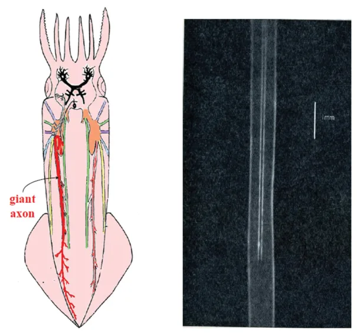 (a) (b) Hình 13. (a) Sơ đồ hệ thống sợi khổng lồ của mực Bắc Đại Tây Dương Loligo pealeii. Tái bản từ (Young, 1936) với một vài chỉnh sửa nhỏ; (b) sợi trục khổng lồ đã làm sạch của Loligo, với một ống thủy tinh đường kính 0,1 mm bên trong nó (Mainzer và Chua, 2013, tr. 291). và được ghép cặp bằng các điện trở thụ động giống hệt nhau, như thể hiện trong Hình 15(b). Bằng cách giả sử các tế bào HH nhỏ về mặt vật lý và lấy giới hạn khi độ dài Δx → 0, các sự ghép cặp tiêu tán tiến tới một toán tử Laplace, qua đó mô hình hóa cơ chế khuếch tán tiêu chuẩn. Các phương trình mô tả toàn bộ hệ thống trong Hình 15(b) sau đó tiến tới một hệ các phương trình phản ứng–khuếch tán theo một biến không gian. Mô hình mạch HH được thể hiện trong Hình 14 (Hodgkin và Huxley, 1952) chứa bảy phần tử mạch phải được đặc tả trước khi có thể lập công thức các phương trình chi phối mạch. Các phần tử này và giá trị tham số của chúng phải được xác định bằng các thí nghiệm tỉ mỉ. Để thuận tiện trong các thiết lập đo lường của mình, Hodgkin và Huxley đã chọn đo tất cả các điện áp đối 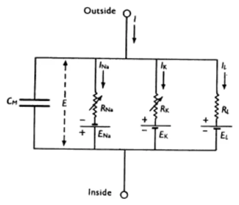 Hình 14. Một mạch điện biểu diễn màng tế bào. RNa = 1/gNa, RK = 1/gK, Rl = 1/¯gl · RNa và RK thay đổi theo thời gian và điện thế màng. Các thành phần khác là hằng số (Mainzer và Chua, 2013, tr. 291). 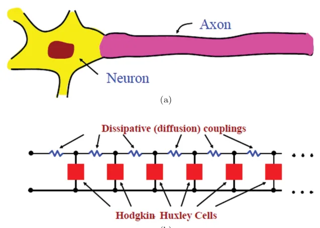 (a) (b) Hình 15. (a) Sơ đồ nguyên lý của một nơ-ron và sợi trục của nó; (b) một mô hình sợi trục một chiều được tạo thành từ các tế bào HH ghép cặp bằng điện trở (Mainzer và Chua, 2013, tr. 292). 308 Trí tuệ Nhân tạo của Hệ thống Phỏng thần kinh với điện thế nghỉ Er, mà giá trị của nó phụ thuộc vào mẫu sợi trục và nhiệt độ đo. Cụ thể, Hodgkin và Huxley đã đưa ra các biến điện áp dịch chuyển theo Er là V = E − Er, VNa = ENa − Er, VK = EK − Er, Vl = El − Er. Theo các biến điện áp dịch chuyển theo Er này, các phương trình HH hoàn chỉnh và các giá trị tham số liên kết được cho dưới dạng sau: dV dt + ¯gKn4(V −VK) + ¯gNam3h(V −VNa) + ¯gl(V −Vl), trong đó dn exp V + 10 dt = αn(1 −n) −βnn, với αn = 0.01(V + 10) 10 −1 và βn = 0.125 exp(V/80), dm exp V + 25 dt = αm(1 −m) −βmm, với αm = 0.1(V + 25) 10 −1 và βm = 4 exp(V/18), dh dt = αh(1 −h) −βhh, với αh = 0.07 exp(V/20) exp V + 30 và βh = 1 10 + 1 . Các tham số là CM = 1.0 μF/cm2, VNa = −115 mV, VK = 12 mV, Vl = −10.613 mV, ¯gNa = 120 mS/cm2, ¯gK = 36 mS/cm2, ¯gl = 0.3 mS/cm2. Vế phải của phương trình HH bao gồm tổng của bốn số hạng, cụ thể là, ICM, IK, INa và Il, trong đó ICM và Il lần lượt biểu thị dòng điện chạy xuống tụ điện màng sợi trục CM và điện trở Rl. Hai dòng điện còn lại IK và INa được thể hiện đang chạy xuống hai phần tử mạch được biểu diễn bằng ký hiệu điện trở có mũi tên và được Hodgkin và Huxley gọi là các điện trở biến thiên theo thời gian vì chúng đại diện cho hai điện trở RK và RNa tương ứng không phải là hằng số mà thay đổi theo thời gian. Lưu ý rằng chú thích trong Hình 14 định nghĩa RK = 1/gK và RNa = 1/gNa trong đó gK và gNa được Hodgkin và Huxley gọi là các độ dẫn điện biến thiên theo thời gian. Tuy nhiên, các thuật ngữ “điện trở biến thiên theo thời gian” và “độ dẫn điện biến thiên theo thời gian” do Hodgkin và Huxley lựa chọn là không theo quy ước theo nghĩa RK và RNa trong mô hình mạch HH không thể được quy định như một hàm của thời gian, như thường được giả định trong lý thuyết mạch cơ bản. Thay vào đó, sự biến thiên theo thời gian của RK và RNa (tương ứng là gK và gNa) trong mô hình mạch HH lần lượt phụ thuộc vào điện áp VRK = V − VK qua RK và điện áp VRNa = V − VNa qua RNa. Hơn nữa, khi cho trước VRK hoặc VNa, sự biến thiên theo thời gian của RK và RNa chỉ có thể được xác định bằng cách giải một hoặc nhiều phương trình vi phân, như được quy định cho RK và RNa tương ứng. Nhưng các điện trở biến thiên theo thời gian RK và RNa (tương ứng là độ dẫn điện biến thiên theo thời gian gK và gNa) được Hodgkin và Huxley xác định trong Hình 14 về cơ bản là sai xét từ góc độ lý thuyết mạch và khoa học. Cụ thể, hai phần tử RK và RNa (tương ứng là gK và gNa) trong mô hình mạch sợi trục HH ở Hình 14 thuộc về lớp hoàn toàn khác là các phần tử mạch bất biến theo thời gian của memristor. Sau khi lỗi nhận dạng sai của Hodgkin–Huxley được sửa chữa, tất cả các sự bất thường và nhầm lẫn (Cole, 1972; Mauro, 1961) liên quan đến điện cảm bất thường, sự chỉnh lưu, các tham số phụ thuộc tần số và các cơ chế cơ bản chịu trách nhiệm tạo ra các điện thế hoạt động đều có thể được giải quyết rõ ràng một cách đơn giản và chặt chẽ. Memristor là bất kỳ thiết bị điện hai cực nào (được mô tả như một hộp đen trong Hình 16(a)) có dòng điện cực tức thời i(t) và điện áp v(t) tuân theo định luật Ohm v = Ri với R = R(x1, x2, . . . , xn), trong đó hệ số tỷ lệ R không phải là một hằng số, mà là một hàm liên tục của n biến trạng thái x = (x1, x2, . . . , xn) tiến hóa theo một hệ n phương trình vi phân tự trị: 310 Trí tuệ Nhân tạo của Hệ thống Phỏng thần kinh 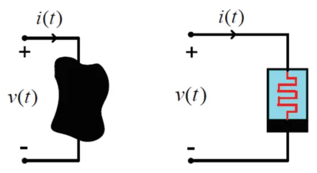 (b) (a) Hình 16. (a) Thiết bị điện hai cực; (b) ký hiệu của memristor. Dải màu đen dày rất cần thiết để phân biệt cực tham chiếu dương phía trên với cực tham chiếu âm (Mainzer và Chua, 2013, tr. 294). các phương trình: ˙x1 = f1(x1, x2, . . . , xn; i), ˙x2 = f2(x1, x2, . . . , xn; i), ... hoặc viết ngắn gọn, ˙x = f(x, i), ˙xn = fn(x1, x2, . . . , xn; i). Các biến trạng thái được giả định là độc lập với bất kỳ biến điện nào bên ngoài thiết bị và không cần có bất kỳ diễn giải vật lý nào, mặc dù chúng chi phối động lực học bên trong (ví dụ: động học) của thiết bị. Ngoài ra, giả định rằng R là một hàm liên tục của x = (x1, x2, . . . , xn), và fk, k = 1, 2, . . . , n là các hàm khả vi của (x, i). Số lượng n các biến trạng thái phụ thuộc vào cơ chế hoạt động bên trong của thiết bị và là thước đo bậc phức tạp của động lực học memristor. Do đó, một memristor bậc hai (n = 2) nhìn chung có thể thể hiện các hiện tượng động lực học phức tạp hơn so với một memristor bậc nhất (n = 1). Ký hiệu của memristor được thể hiện trong Hình 16(b). Từ phương trình memristor suy ra R = R(x) có cùng đơn vị vật lý với điện trở, tức là Ohm (Ω). Do đó, thật hợp lý khi R(x) được gọi là memristance (điện trở nhớ) tại trạng thái x = (x1, x2, . . . , xn) (Chua et al., 2012a). Đôi khi, sẽ thuận tiện hơn nếu điện áp v được chọn làm biến đầu vào với dạng nghịch đảo của phương trình memristor i = Gv với G = G(x1, x2, . . . , xn), trong đó một lần nữa, hệ số tỷ lệ G không phải là một hằng số, mà là một hàm liên tục của n biến trạng thái x = (x1, x2, . . . , xn), tiến hóa theo một hệ n phương trình vi phân tự trị: ˙x1 = f1(x1, x2, . . . , xn; v), ˙x2 = f2(x1, x2, . . . , xn; v), ... hoặc viết ngắn gọn, ˙x = f(x, v), ˙xn = fn(x1, x2, . . . , xn; v). Hàm liên tục G = G(x) được gọi là memductance (độ dẫn nhớ) và có đơn vị vật lý là Siemens (S). Quỹ tích i theo v tương ứng với bất kỳ dạng sóng memristor tuần hoàn nào (v(t), i(t)) đều phải đi qua gốc tọa độ với giả sử rằng v(t), hoặc i(t), nhận cả giá trị dương và giá trị âm. Hơn nữa, nếu R(x) > 0 và G(x) > 0, thì quỹ tích i theo v không thể cắt trục i, hoặc trục v, ngoại trừ tại gốc tọa độ. Vòng trễ thắt nút (pinched hysteresis loop) là dấu vân tay của một memristor và có thể được chứng minh dễ dàng chỉ bằng cách đặt một tín hiệu điện áp (tương ứng là dòng điện) tuần hoàn lưỡng cực (tức là dạng sóng nhận cả giá trị dương và âm) và ghi lại đáp ứng dòng điện (tương ứng là điện áp) tương ứng. Một ví dụ về vòng trễ thắt nút memristor đối xứng được thể hiện trong Hình 17. Phần tử mạch thứ hai (từ phải sang) trong mô hình mạch sợi trục Hodgkin–Huxley (Hình 14) là một độ dẫn điện biến thiên theo thời gian GK liên kết với dòng chảy của dòng ion kali IK. Hãy ký hiệu điện áp qua phần tử này là vK và dòng điện đi vào cực dương là iK, như thể hiện trong Hình 18. Số hạng thứ hai trong phương trình HH có thể được viết lại thành iK = GK(x1)vK và GK(x1) ≜ ¯gKx4 1 với các ký hiệu được thay đổi: vK thay cho 312 Trí tuệ Nhân tạo của Hệ thống Phỏng thần kinh 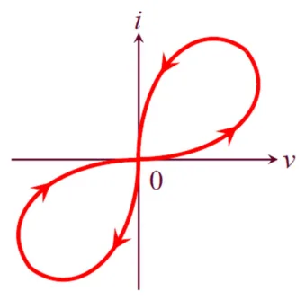 Hình 17. Ví dụ về vòng trễ thắt nút của memristor (Mainzer và Chua, 2013, tr. 295). VRK = V − VK, EK thay cho VK, và x1 thay cho n. Theo các ký hiệu mới này, ta thu được dx1 dt = αn(1 − x1) − βnx1 ⎛ ⎞ ⎝0.01((vK + EK) + 10 ⎠(1 −x1) 10 = (vK+EK)+10 −1 exp (vK + EK) −0.125 exp x1 80 ≜ fn(x1, vK), trong đó EK = 12 mV. Rõ ràng, chỉ có một (n = 1) biến trạng thái x1, đó là ký hiệu tổng quát cho biến kích hoạt cổng kali không thứ nguyên “n” trong các phương trình HH lịch sử. Tương tự, lưu ý rằng phương trình cuối cùng là một trường hợp đặc biệt của phương trình trạng thái của một memristor cho một biến trạng thái. Nói cách khác, các phương trình được viết lại cuối cùng định nghĩa một memristor bậc nhất. Do đó, ký hiệu gây hiểu lầm cho kênh ion kali trong mô hình mạch HH nên được thay thế bằng memristor kênh ion kali được mô tả trong Hình 18. Memristor kênh ion kali được đặc tả hoàn toàn bởi GK(n) và fn(n, vK). Chúng ta sẽ gọi GK(n) là hàm độ dẫn nhớ kali. 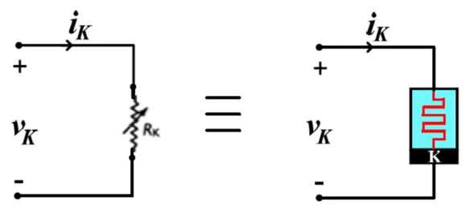 Hình 18. Độ dẫn điện biến thiên theo thời gian GK trích xuất từ mô hình mạch HH (Hình 14) là một memristor bậc nhất (Mainzer và Chua, 2013, tr. 296). fn(n, vK) được gọi là hàm động học kích hoạt cổng kali hoặc đơn giản là hàm kích hoạt K. Phần tử mạch thứ ba (từ phải sang) trong mô hình mạch sợi trục Hodgkin–Huxley (Hình 14) là một độ dẫn điện biến thiên theo thời gian GNa liên kết với dòng chảy của dòng ion natri INa. Hãy ký hiệu điện áp qua phần tử này là vNa và dòng điện đi vào cực dương là iNa, như thể hiện trong Hình 19. Số hạng thứ hai trong phương trình HH có thể được viết lại thành iNa = GNa(x1, x2)vNa và GNa(x1, x2) ≜ ¯gNax3 1x2 với các ký hiệu được thay đổi: vNa thay cho VRNa = V − VNa, −ENa thay cho VNa, x1 thay cho m, và x2 thay cho h. Theo các ký hiệu mới này, ta thu được dx1 dt = αm(1 − x1) − βmx1 ⎛ ⎞ ⎝0.1((vNa −ENa) + 25 ⎠(1 −x1) 10 = (vNa−ENa)+25 −1 exp (vNa −ENa) −4 exp x1 18 ≜ fm(x1, vNa) và 314 Trí tuệ Nhân tạo của Hệ thống Phỏng thần kinh dx2 dt = αh(1 − x2) − βhx2 0.07 exp (vNa −ENa) (1 −x2) = 20 ⎛ ⎞ ⎝ 1 ⎠x2 10 − (vNa−ENa)+30 exp + 1 ≜ fh(x2, vNa), trong đó ENa = 115 mV. Rõ ràng, chỉ có hai (n = 2) biến trạng thái x1 và x2, lần lượt là các ký hiệu tổng quát cho biến kích hoạt cổng natri không thứ nguyên “m” và biến bất hoạt cổng natri “h” trong các phương trình HH lịch sử. Tương tự, lưu ý rằng phương trình cuối cùng là một trường hợp đặc biệt của phương trình trạng thái của một memristor cho hai biến trạng thái. Nói cách khác, các phương trình được viết lại cuối cùng định nghĩa một memristor bậc hai. Do đó, ký hiệu gây hiểu lầm cho kênh ion natri trong mô hình mạch HH nên được thay thế bằng memristor kênh ion natri được mô tả trong Hình 19. Memristor kênh ion natri được đặc tả hoàn toàn bởi GNa(m, h), fm(m, vNa), và fh(h, vNa). Chúng ta sẽ gọi GNa(m, h) là hàm độ dẫn nhớ natri. fm(m, vNa) được gọi là hàm động học kích hoạt cổng natri hoặc đơn giản là hàm kích hoạt Na. 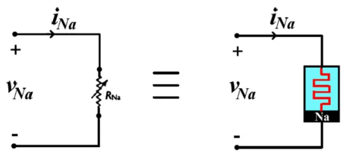 Hình 19. Độ dẫn điện biến thiên theo thời gian RNa trích xuất từ mô hình mạch HH (Hình 15) là một memristor bậc hai (Mainzer và Chua, 2013, tr. 297). Tương tự, fh(h, vNa) được gọi là hàm động học bất hoạt cổng natri hoặc đơn giản là hàm bất hoạt Na. Cũng giống như trong lý thuyết mạch điện tử, có thể phân tích và dự đoán đáp ứng của một memristor đối với một tín hiệu đầu vào hình sin biên độ nhỏ được đặt vào như một nhiễu loạn nhỏ quanh một điểm cân bằng Q gọi là điểm làm việc một chiều (DC). Phương pháp phân tích này rất mạnh mẽ vì chúng ta có thể áp dụng nhiều phương pháp phân tích mạch tuyến tính, bao gồm phép biến đổi Laplace, giúp tránh phải giải bất kỳ phương trình vi phân nào. Mạch tương đương tín hiệu nhỏ có thể được suy ra quanh bất kỳ điểm cân bằng Q nào của memristor kênh ion kali và memristor kênh ion natri. Trong cả hai trường hợp, các công thức tường minh cho tất cả các phần tử mạch đều có thể được cung cấp trong mỗi mạch tương đương tín hiệu nhỏ (Chua et al., 2012a). Thay thế điện trở kali biến thiên theo thời gian RK và điện trở natri RNa của Hodgkin–Huxley trong Hình 14 bằng memristor kênh ion kali trong Hình 18 và memristor kênh ion natri trong Hình 19 tương ứng, chúng ta thu được mô hình mạch sợi trục Hodgkin–Huxley memristor như thể hiện trong Hình 20(a). Lưu ý rằng mô hình mạch này chỉ chứa các phần tử mạch bất biến theo thời gian được định nghĩa rõ ràng, đúng như mong đợi đối với bất kỳ mô hình vật lý thực tế nào của sợi trục. Với lý thuyết mạch cơ bản, mô hình mạch DC Hodgkin–Huxley trong Hình 20(b) có thể được suy ra đơn giản bằng cách xóa tụ điện màng sợi trục CM vì IM = CM dVM dt = 0 tại DC. Đối với mỗi V = Vm = Vm(Q) tại một điểm cân bằng Q(Vm, Im), trong đó V = Vm và I = Im lần lượt biểu thị điện áp màng sợi trục và dòng điện màng trong Hình 20(a), chúng ta có thể thay thế memristor kênh ion kali bằng mô hình mạch tín hiệu nhỏ của nó quanh điểm cân bằng DC tương ứng tại VK = Vm(Q) − EK = Vm(Q) − 12mV ≜ VK(QK). Tương tự, chúng ta có thể thay thế memristor kênh ion natri bằng mô hình mạch tín hiệu nhỏ của nó, quanh điểm cân bằng DC tương ứng tại VNa = Vm(Q) + EK = Vm(Q) + 115 mV ≜ VNa(QNa). Mô hình mạch tín hiệu nhỏ Hodgkin–Huxley thu được 316 Trí tuệ Nhân tạo của Hệ thống Phỏng thần kinh 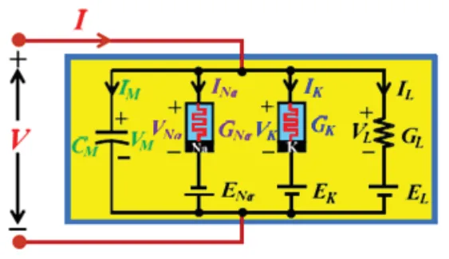 (a) 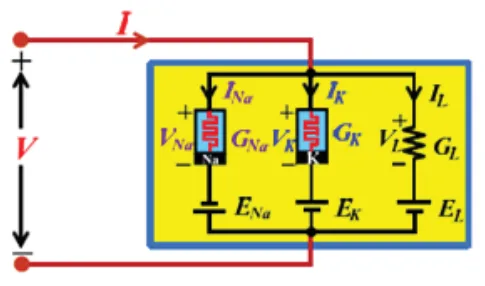 (b) 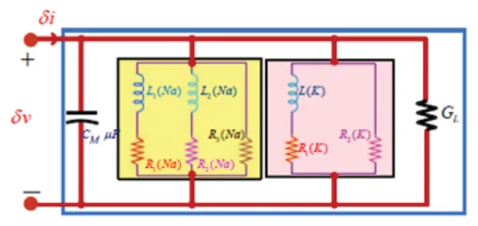 (c) Hình 20. (a) Mô hình mạch sợi trục HH memristor; (b) mô hình mạch sợi trục HH memristor DC; (c) mô hình mạch sợi trục HH tín hiệu nhỏ (Mainzer và Chua, 2013, tr. 299). tại điểm cân bằng Q(Vm, Im) được thể hiện trong Hình 20(c). Bằng cách nhận ra rằng hai phần tử mạch RK và RNa trong mô hình mạch sợi trục Hodgkin–Huxley ở Hình 14 không phải là biến thiên theo thời gian mà là các memristor bất biến theo thời gian, chúng tôi đã có thể cung cấp một nền tảng lý thuyết mạch vững chắc để phân tích, diễn giải và giải thích các hiện tượng bất thường và nghịch lý khác nhau được báo cáo trong tài liệu hơn 70 năm trước và vẫn chưa được giải quyết (Mauro, 1961). Chẳng hạn, cả Cole (1941) và Hodgkin (Hodgkin et al., 1949) đều khá sốc khi phát hiện ra rằng trở kháng tín hiệu nhỏ mà họ đo được từ màng sợi trục của mực ống thể hiện một điện kháng dương, gợi ý sự hiện diện của một độ tự cảm khổng lồ và một từ trường cực lớn trong sợi trục mực ống. Hiện tượng khó giải thích này từ đó được gọi trong tài liệu là trở kháng bất thường (Mauro, 1961). Nhưng các số hạng trong phương trình HH liên quan đến độ dẫn điện kali biến thiên theo thời gian GK trên thực tế cấu thành một memristor bậc nhất. Tương tự, các số hạng liên quan đến độ dẫn điện natri biến thiên theo thời gian GNa trên thực tế cấu thành một memristor bậc hai. Do đó, mô hình mạch sợi trục Hodgkin–Huxley trong Hình 14 từ nay nên được thay thế bằng mô hình mạch sợi trục Hodgkin–Huxley memristor thể hiện trong Hình 20(a). Vì hai memristor trong mô hình mạch sợi trục Hodgkin–Huxley là các phần tử mạch phi tuyến bất biến theo thời gian, chúng ta có thể khám phá tiềm năng động lực học phi tuyến của hai phần tử mạch này. Các khái niệm lý thuyết mạch kinh điển như dẫn nạp tín hiệu nhỏ, trở kháng tín hiệu nhỏ và giản đồ cực-không đều có thể được áp dụng. Tất cả các đặc trưng mạch tuyến tính nội tại này và các công thức giải tích tường minh của chúng đều có thể được suy ra từ mô hình mạch sợi trục Hodgkin–Huxley memristor. Các đặc tính lý thuyết mạch đại diện cho các đặc trưng dứt khoát của mô hình mạch sợi trục Hodgkin–Huxley. Chúng đóng vai trò nền tảng trong nghiên cứu động lực học của các kênh ion. Chẳng hạn, các memristor kênh ion kali và natri thể hiện dấu vân tay đặc trưng của các vòng trễ thắt nút được mô tả trong Hình 17. 318 Trí tuệ Nhân tạo của Hệ thống Phỏng thần kinh Một trong những điều kỳ diệu của phương trình HH là khả năng tạo ra một điện thế hoạt động (các xung nhọn) để đáp ứng với một kích thích dòng điện bên ngoài mô phỏng kích thích dòng điện khớp thần kinh ròng. Mặc dù các xung nhọn được tạo ra một cách nhất quán về mặt số học, không ai biết nguồn gốc vật lý và toán học của điện thế hoạt động (các xung nhọn). Hoạt động cục bộ có thể được chứng minh là nguồn gốc của các xung nhọn. Cụ thể, các nơ-ron có thể được chứng minh là nằm cân bằng gần một tập hợp con nhỏ bé của miền hoạt động cục bộ, mà chúng tôi gọi là rìa hỗn loạn (edge of chaos). Miền rìa hỗn loạn được xác định bằng cách suy ra hàm phức tạp vô hướng tường minh Z(s, Iext) gọi là hàm trở kháng của mô hình mạch memristor Hodgkin–Huxley tín hiệu nhỏ. Định lý chính (Chua et al., 2012) khẳng định rằng các điểm không của hàm vô hướng Y(s, Vm) ≜ 1/Z(s, Vm), được gọi là dẫn nạp tín hiệu nhỏ của mô hình mạch memristor Hodgkin–Huxley, đồng nhất với các giá trị riêng của ma trận Jacobi 4 × 4 của phương trình HH, được tính tại điểm cân bằng Vm = V(Iext) của các phương trình HH, đối với mỗi dòng điện kích thích DC không đổi Iext. Ở đây, s = σ + iω biểu thị biến phức liên kết với phép biến đổi Laplace ˆv(s) của một hàm thời gian v(t) (Chua et al., 2012b) và Iext biểu thị một nguồn dòng điện bên ngoài đặt vào mô hình mạch sợi trục Hodgkin–Huxley thể hiện trong Hình 20(a). Định lý này không chỉ đúng cho phương trình HH bốn chiều mà còn cho bất kỳ hệ n phương trình vi phân nào. Đây là một công cụ mạnh mẽ vì thay vì tính toán các giá trị riêng của một ma trận n × n chiều cao, người ta chỉ cần tính toán các nghiệm (điểm không) của một phương trình đa thức vô hướng của một biến duy nhất s cho bất kỳ số nguyên n nào. Hầu hết các hiểu biết sâu sắc liên quan đến hoạt động cục bộ và rìa hỗn loạn có thể được khám phá từ việc phân tích các phương trình vi phân tuyến tính hóa quanh các điểm cân bằng của hệ động lực phi tuyến liên kết của nó. Do đó, chúng ta sẽ suy ra mối quan hệ giữa điện thế nghỉ (điện áp cân bằng) Vm như một hàm của dòng điện kích thích bên ngoài không đổi (DC) Iext đặt qua hai cực ngoài của mô hình Hodgkin–Huxley memristor trong Hình 20(a), như 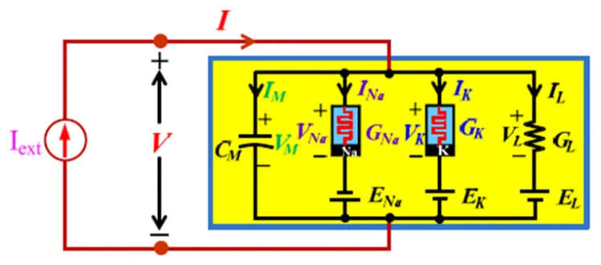 Hình 21. Sợi trục Hodgkin–Huxley được kích thích bởi nguồn dòng bên ngoài Iext (Mainzer và Chua, 2013, tr. 301). 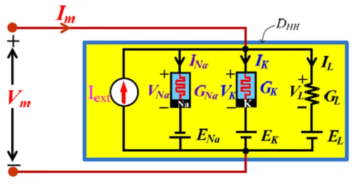 Hình 22. Mô hình mạch DC Hodgkin–Huxley mắc song song với nguồn dòng bên ngoài Iext (Mainzer và Chua, 2013, tr. 301). thể hiện trong Hình 21. Vì ICM = CMdVCM/dt ở trạng thái nghỉ, chúng ta có thể xóa tụ điện CM khỏi Hình 21 và gắn một cặp cực ngoài mới, như mô tả trong mạch vẽ lại ở Hình 22, với IM biểu thị dòng điện màng bên ngoài và VM biểu thị điện áp màng với Vm = VNa − ENa = VK + EK = VL + EL. 320 Trí tuệ Nhân tạo của Hệ thống Phỏng thần kinh Trong lý thuyết điện, bất kỳ hộp nào chứa các phần tử mạch nơi một cặp dây được đưa ra ngoài để kết nối với các phần tử mạch khác được gọi là mạng một cửa. Để suy ra mối quan hệ giữa điện áp nghỉ Vm như một hàm của dòng điện kích thích DC Iext trong Hình 22, hãy suy ra đường cong Vm theo Im của mạng một cửa tổng hợp DHH cho mỗi giá trị của Iext và xác định tọa độ của Vm tại điểm mà đường cong Vm − Im cắt trục Im = 0 (trục hoành). Với mục đích này, sẽ rất thuận tiện khi định nghĩa ba mạng một cửa mới DNa, DK và DL, như mô tả trong Hình 23(b), bao gồm cả 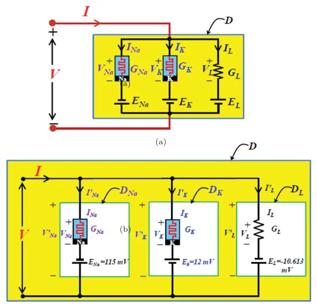 (a) (a) (b) (b) Hình 23. Mô hình mạch DC Hodgkin–Huxley trong (a) có thể được xem như ba mạng một cửa DNa, DK và DL (mô tả trong (b)) mắc song song (Mainzer và Chua, 2013, tr. 302). 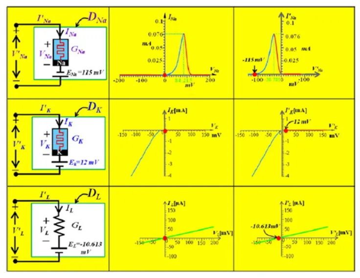 Hình 24. Minh họa đồ họa ảnh hưởng của pin trong đường cong điện áp–dòng điện DC của các mạng một cửa tổng hợp DNa, DK và DL (Mainzer và Chua, 2013, tr. 303). pin như một phần của mạng một cửa. Hình 24 minh họa ảnh hưởng của pin trong đường cong điện áp–dòng điện DC của các mạng một cửa tổng hợp DNa, DK và DL. Đường cong DC Vm − Im trong Hình 25 là một tổ hợp của các đường cong VNa − INa, VK − IK và VL − IL trong Hình 24. Từ đường cong DC Vm − Im trong Hình 25 suy ra rằng đối với mỗi dòng điện kích thích DC Iext, phương trình HH có một điểm cân bằng duy nhất (Chua et al., 2012b). Rìa hỗn loạn thường là một tập hợp con rất nhỏ của miền hoạt động cục bộ. Nhỏ bé nhưng lại sâu sắc đến mức chúng tôi thường kịch tính hóa tầm quan trọng của nó bằng cách gọi nó là viên ngọc của hoạt động cục bộ. Thật vậy, rìa hỗn loạn là cội nguồn của sự sống, và chúng ta sẽ thấy rằng các nơ-ron nằm cân bằng gần viên ngọc của hoạt động cục bộ này. Khá bí ẩn là trong khi mọi hiện tượng phức tạp, bao gồm cả việc tạo ra các xung nhọn, đều đòi hỏi 322 Trí tuệ Nhân tạo của Hệ thống Phỏng thần kinh Hình 25. Đường cong DC Vm − Im màu đỏ là một tổ hợp của các đường cong VNa − INa, VK − IK và VL − IL tương ứng từ Hình 24 (Mainzer và Chua, 2013, tr. 304). động lực học phi tuyến mạnh, nguồn gốc toán học của các hiện tượng toàn cục như vậy lại mang tính cục bộ một cách chặt chẽ. Lý thuyết về hoạt động cục bộ và rìa hỗn loạn hoàn toàn dựa trên các phương trình vi phân tuyến tính hóa quanh một điểm cân bằng. Việc kiểm tra một điểm cân bằng Q cho hoạt động cục bộ nói chung, hoặc rìa hỗn loạn nói riêng, liên quan đến việc khảo sát các phương trình HH tuyến tính hóa quanh Q. Đối với mỗi điểm cân bằng Q tương ứng với một dòng điện kích thích DC Iext, hãy chồng một tín hiệu dòng điện nhỏ vô cùng nhỏ δi(t) và đặt tín hiệu tổng hợp Iext + δi(t) vào mô hình mạch sợi trục HH, như mô tả trong Hình 26(a). Việc một hệ thống (trong trường hợp này là sợi trục Hodgkin–Huxley) có hoạt động cục bộ tại Q hay không được quyết định hoàn toàn bởi đáp ứng δv(t) đối với một tín hiệu thử nghiệm hình sin nhỏ vô cùng nhỏ δi(t) = A sin ωt, trong đó A biểu thị (a) (b) Hình 26. Mô hình mạch sợi trục Hodgkin–Huxley (a) và mạch Hodgkin–Huxley tương đương tín hiệu nhỏ tuyến tính hóa của nó (b) (Mainzer và Chua, 2013, tr. 305). 324 Trí tuệ Nhân tạo của Hệ thống Phỏng thần kinh biên độ và ω = 2πf biểu thị tần số góc. Từ lý thuyết mạch sơ cấp suy ra rằng đáp ứng δv(t) đối với bất kỳ kích thích dòng điện tín hiệu nhỏ nào δi(t) có thể được dự đoán bằng giải tích từ một mạch tương đương tín hiệu nhỏ có các phần tử được tính toán tường minh từ ma trận Jacobi của các phương trình vi phân phi tuyến liên kết, được tính tại điểm cân bằng Q. Một mạch tương đương như vậy được trình bày trong Hình 26(b). Nhìn chung, hàm phức tạp C(s) đối với một hệ thống một đầu vào một đầu ra được định nghĩa bởi tỷ số giữa phép biến đổi Laplace của biến đầu ra ˆy(t) và phép biến đổi Laplace ˆu(s) của biến đầu vào u(t), cụ thể là, ˆu(s). Trong Hình 26(a), u(t) = δi(t) và y(t) = δv(t), tương ứng. Việc kiểm tra hoạt động cục bộ và rìa hỗn loạn của một điểm cân bằng Q của mạch sợi trục HH mô tả trong Hình 26(a) tại bất kỳ I = Iext nào đòi hỏi chúng ta phải khảo sát hàm phức tạp được định nghĩa bởi , ˆi(s) trong đó ˆv(s) = L(δv(t)) và ˆi(s) = L(δi(t)) lần lượt biểu thị phép biến đổi Laplace của δv(t) và δi(t). Hàm phức tạp Z(s) được gọi là hàm trở kháng trong lý thuyết mạch. Hàm trở kháng Z(s) cho mạch HH tương đương tín hiệu nhỏ trong Hình 26(b) đã được suy ra từ Chua et al. (2012b) và được tái hiện như sau: Z(s, Vm) = a3s3 + a2s2 + a1s + a0 b4s4 + b3s3 + b2s2 + b1s + b0 . Các công thức để tính bốn hệ số a0, a1, a2, a3 ở tử số và năm hệ số b0, b1, b2, b3, b4 ở mẫu số của Z(s) được liệt kê bởi Chua et al., 2012b. Theo các tiêu chí kiểm tra của hoạt động cục bộ và rìa hỗn loạn, chúng tôi trích xuất và diễn đạt lại chỉ những khía cạnh then chốt vốn thiết yếu cho một mô hình Hodgkin–Huxley: Định lý hoạt động cục bộ: Không thể tạo ra một chuỗi xung nhọn trừ khi mạng một cửa Hodgkin–Huxley memristor trong Hình 26(a) hoạt động cục bộ tại một điểm cân bằng nào đó. Định lý rìa hỗn loạn: Một điểm cân bằng ổn định tiệm cận cục bộ Q của phương trình HH nằm cân bằng trên rìa hỗn loạn khi và chỉ khi Re Z(iω, Vm(Q)) < 0 tại một tần số ω nào đó. Re Z biểu thị phần thực của số phức Z. Z(iω, Vm(Q)) là hàm trở kháng được tính tại s = 0 + iω. Về mặt toán học, đôi khi thuận tiện hơn khi sử dụng cái gọi là hàm dẫn nạp Y(s) ≜ 1/Z(s) vì hàm trở kháng hội tụ về vô cùng tại các cực của nó trên trục ảo. Có thể chứng minh rằng phép kiểm tra rìa hỗn loạn là tương đương đối với các hàm trở kháng và dẫn nạp. Hơn nữa, nếu hàm trở kháng Z(s, Vm(Q)) của phương trình HH có một cực s = sp nằm trong nửa mặt phẳng phải mở, tức là Re sp > 0, thì mô hình sợi trục HH memristor hoạt động cục bộ tại Q. Nếu phương trình HH nằm cân bằng trên một rìa hỗn loạn tại một điểm cân bằng Q, thì nó hoạt động cục bộ tại Q. Những phát biểu này cung cấp các điều kiện đủ để một mô hình sợi trục Hodgkin–Huxley hoạt động cục bộ. Tính ổn định cục bộ của điểm cân bằng Q của các phương trình HH được xác định bởi các giá trị riêng của ma trận Jacobi tương ứng. Do đó, hãy viết lại các phương trình HH, với kích thích dòng điện bên ngoài Iext, dưới dạng tổng quát sau: dV dt = FV (V, n, m, h; Iext), dn dt = Fn(V, n, m, h; Iext), dm dt = Fm(V, n, m, h; Iext), dh dt = Fh(V, n, m, h; Iext). 326 Trí tuệ Nhân tạo của Hệ thống Phỏng thần kinh Điện áp cân bằng duy nhất Vm(Iext) tại Q được ký hiệu là V = Vm(Q(Iext)) = Vm(Iext), có thể được tính từ phương trình cân bằng Im(Vm) = 0. Ma trận Jacobi liên kết JHH = (V, n, m, h, Iext) được ký hiệu là ⎡ ⎤ ∂FV ∂FV ∂FV ∂FV ∂V ∂n ∂m ∂m ⎢⎢⎢⎢⎢⎣ ⎥⎥⎥⎥⎥⎦ ∂Fn ∂Fn ∂Fn ∂Fn ∂V ∂n ∂m ∂m . ∂Fm ∂Fm ∂Fm ∂Fm ∂m ∂Fh ∂V ∂n ∂m ∂Fh ∂Fh ∂Fh ∂V ∂n ∂m ∂m Tính ổn định cục bộ của điểm cân bằng Q của các phương trình HH đối với bất kỳ Iext nào được xác định bởi bốn giá trị riêng của ma trận Jacobi JHH = (V, n, m, h; Iext). Vì các công thức định nghĩa các hàm FV, Fn, Fm và FL khá phức tạp, nên 16 phần tử của ma trận Jacobi khá rắc rối và tốt nhất nên được lưu trữ dưới dạng mã máy tính. Bốn giá trị riêng của JHH = (V, n, m, h; Iext) phải được tính toán bằng số cho mỗi Iext. Nhưng định lý sau đây cho thấy rằng chính các giá trị này có thể được tính bằng cách giải tìm nghiệm của một phương trình đa thức, một nhiệm vụ tính toán đơn giản hơn nhiều. Các giá trị riêng của ma trận Jacobi Hodgkin–Huxley JHH là các điểm không của hàm phức tạp tương ứng Y(s, Iext). Bốn giá trị riêng của ma trận Jacobi JHH = (V, n, m, h; Iext) đồng nhất với bốn điểm không của đa thức tử số của hàm dẫn nạp vô hướng Y(s, Vm) = b4s4 + b3s3 + b2s2 + b1s + b0 . a3s3 + a2s2 + a1s + a0 Bốn điểm không zk = Re zk + i Im zk (k = 1, 2, 3, 4) của hàm dẫn nạp có thể được trực quan hóa như một quỹ tích trong mặt phẳng số phức có tọa độ Im zk và Re zk với Vm hoặc Iest làm tham số. Vì mỗi điểm không zk của hàm phức tạp bằng một giá trị riêng λk của ma trận Jacobi liên kết, quỹ tích của các điểm không cũng đại diện cho quỹ tích của các giá trị riêng. Hơn nữa, việc khảo sát các điểm không của hàm dẫn nạp tương đương với các cực của hàm trở kháng. Một khảo sát về các quỹ tích cho thấy rằng hàm trở kháng Z(s; Vm(Q)) của mô hình mạch sợi trục Hodgkin–Huxley memristor có một cặp cực nằm trong nửa mặt phẳng phải mở trên miền tham số: −154.529 μA < Iest < −9.77003 μA, −21.9425 mV < Vm < −5.34305 mV, còn được gọi là miền cực RHP HH. Theo đó, theo định lý đã đề cập ở trên, mô hình mạch sợi trục Hodgkin–Huxley memristor hoạt động cục bộ trong miền cực RHP HH. Trang này được cố ý để trống Trang này được cố ý để trống Trang này được cố ý để trống Trang này được cố ý để trống Chương này giải thích các nền tảng kỹ thuật của các hệ thống mô phỏng thần kinh điện tử (hướng não bộ) có thể được sử dụng để triển khai tính toán thực và tính toán tương tự. Tương tự như công nghệ lượng tử và máy tính lượng tử, phần cứng của các hệ thống mô phỏng thần kinh hiện đang trải qua quá trình phát triển năng động với nhiều cách tiếp cận khác nhau. Trọng tâm của lĩnh vực này là các hệ thống mô phỏng thần kinh memristive sử dụng memristor (điện trở nhớ, xem Chương 12) để mô hình hóa các quá trình truyền tín hiệu synap và nơ-ron. Cũng như trong sự phát triển của tính toán số, điều quan trọng là phần cứng phải được bổ sung bởi phần mềm dựa trên nó, trong đó việc lập trình các hệ thống mô phỏng thần kinh có thể được hiện thực hóa. Chương này kết thúc bằng một cái nhìn tổng quan về các vật liệu phần cứng khác nhau hiện đang được sử dụng để hiện thực hóa các kiến trúc máy tính memristive. Một lợi thế quan trọng của các hệ thống mô phỏng thần kinh là hiệu quả năng lượng của các kiến trúc mạng này, tương tự như bộ não con người, so với mức tiêu thụ năng lượng khổng lồ của các kiến trúc von Neumann số trong tính toán số. Máy tính mô phỏng thần kinh nằm trong truyền thống của máy tính tương tự. Trong lịch sử, máy tính tương tự đã giải quyết các bài toán với các đại lượng liên tục tương tự như các biến thiên liên tục của các đại lượng cơ học, điện học hoặc thủy lực. Từ thời cổ đại, các mô hình cơ học sơ khai về chu kỳ và hình cầu đã được sử dụng để xác định vị trí của các thiên thể. Một ví dụ là thước trắc tinh (astrolabe) vốn được sử dụng thực tế để giải các bài toán trong thiên văn học cầu. Thước tính logarit ra đời 329 330 Trí tuệ nhân tạo của các hệ thống mô phỏng thần kinh cùng với khái niệm toán học về logarit (Charette, 2006; Sezgin, 2004). Thực tế, đó là một máy tính tương tự vận hành bằng tay cho phép nhân và phép chia. Vào cuối thế kỷ 19, các máy tính tương tự cơ học đã được thiết kế để giải các phương trình vi phân bằng phép tích phân với các cơ cấu bánh xe và đĩa. Một bước đột phá đối với máy tính tương tự là việc ứng dụng các thiết bị kỹ thuật điện. Từ góc độ toán học, sự tương đồng giữa các thành phần cơ học tuyến tính như lò xo và bộ giảm chấn với các thành phần điện như tụ điện, cuộn cảm và điện trở là rất rõ ràng. Chỉ cần một vài bộ khuếch đại thuật toán và các linh kiện tuyến tính thụ động là có thể xây dựng một mạch điện biểu diễn cùng các phương trình như hệ thống cơ học. Một ưu điểm của các máy tính tương tự này là khả năng cho phép chúng chạy nhanh hơn hoặc chậm hơn so với tiến trình thực tế được mô phỏng. Cuối cùng, máy tính tương tự điện tử có thể được chuyên biệt hóa để giải nhiều loại phương trình vi phân khác nhau. Một ví dụ là động lực học của một khối lượng gắn lò xo được mô tả bởi phương trình vi phân m¨y + d ˙y + cy = mg, với y là vị trí thẳng đứng của khối lượng m, d là hệ số cản, c là độ cứng lò xo, và g là gia tốc trọng trường của Trái Đất. Để tính toán, phương trình được viết lại thành ¨y = −d/m ˙y −c/m y −g. Trong Hình 1, mạch điện tử tương tự gồm hai bộ tích phân cho các biến trạng thái vận tốc −˙y và vị trí y, một bộ đảo dấu và ba chiết áp. Trong một mô hình toán học giả định của các phương trình vi phân, mô hình điện tử tính toán chính xác với Hình 1. Chuyển động tắt dần của khối lượng gắn lò xo với mạch tương tự cho động lực học của nó (vẽ lại theo Wikipedia: Analog Computer, tr. 6). các đại lượng liên tục vô hạn. Tuy nhiên, để đọc kết quả tính toán, chỉ có thể chỉ thị các giá trị hữu hạn xấp xỉ. Máy tính tương tự không chỉ được sử dụng trong các ứng dụng khoa học mà còn trong công nghiệp, quân sự và kinh tế cho đến những năm 1950 vì vào thời điểm đó chúng nhanh hơn nhiều so với máy tính số (Ulmann, 2013; Small, 2001). Máy tính số xấp xỉ các đại lượng liên tục biến thiên bằng các chuỗi giá trị rời rạc như các bit. Nhưng với tiến bộ kỹ thuật của đèn chân không, transistor, mạch tích hợp và bộ vi xử lý, máy tính số đã vượt lên trước máy tính tương tự kể từ giai đoạn những năm 1950 đến 1970. Đối với các tác vụ đặc biệt, máy tính tương tự vẫn được xem xét trong những năm 1980 liên quan đến tính toán xấp xỉ tiết kiệm năng lượng. Với sự phát triển của mạng nơ-ron trong học máy của trí tuệ nhân tạo, những hướng đi mới đã được mở ra hướng tới mạng nơ-ron xung (SNN) với tính toán mô phỏng thần kinh tương tự. Thay vì các vật liệu sinh học, các thành phần ở cấp độ linh kiện hoặc cấp độ mạch của tính toán mô phỏng thần kinh được hiện thực hóa bằng nhiều loại vật liệu mới ở quy mô nano. Trước khi xem xét các vật liệu thích hợp của memristor, chúng ta hãy nhớ lại chức năng của memristor. Theo truyền thống, trong kỹ thuật điện, chỉ có điện trở, tụ điện và cuộn cảm được phân biệt là các phần tử chuyển mạch. Chúng kết nối bốn biến chuyển mạch là điện tích, dòng điện, điện áp và từ thông: Điện trở kết nối điện tích và dòng điện, cuộn cảm kết nối từ thông và dòng điện, còn tụ điện kết nối điện áp và điện tích. Nhưng cái gì kết nối điện tích và từ thông? Chua (1971) đã tiên đoán về memristor. Về mặt toán học, điều này được thực hiện bằng một hàm R(q) (“hàm điện trở nhớ”), trong đó sự biến thiên của từ thông Φ theo điện tích q được giữ lại, tức là: dq . Sự biến thiên theo thời gian của điện tích q xác định dòng điện i(t) với i(t) = dq dt . 332 Trí tuệ nhân tạo của các hệ thống mô phỏng thần kinh Sự biến thiên theo thời gian của từ thông Φ xác định điện áp v(t) với v(t) = dΦ dt . Kết quả là điện áp v tại một memristor theo dòng điện i phụ thuộc trực tiếp vào điện trở nhớ: v = R(q)i. Điều này gợi nhớ đến định luật Ohm v = Ri, định nghĩa rằng điện áp v tỷ lệ thuận với dòng điện i với điện trở R là hằng số tỷ lệ. Tuy nhiên, điện trở nhớ không phải là hằng số, mà phụ thuộc vào trạng thái của điện tích q. Ngược lại, đối với dòng điện, ta có i = G(q)v, trong đó hàm G(q) = R(q)−1 được gọi là “độ dẫn nhớ” (memductance, ghép từ tiếng Anh “memory” nghĩa là bộ nhớ và “conductance” nghĩa là độ dẫn). Một memristor có thể được tổng quát hóa thành một hệ thống memristive. Một hệ thống memristive không còn bị thu hẹp về một biến trạng thái đơn lẻ và một phương trình tuyến tính dẫn động bởi điện tích hay từ thông. Một hệ thống memristive là một hệ thống vật lý tùy ý, được xác định bởi một tập hợp các biến trạng thái bên trong ⃗s (dưới dạng một vector). Nó tuân theo phương trình đầu vào–đầu ra tổng quát ⃗y(t) = g(⃗s,⃗u, t)⃗u(t), với đầu vào ⃗u(t) (tức là điện áp) và đầu ra ⃗y (tức là dòng điện). Sự phát triển của một trạng thái nhìn chung được xác định bởi phương trình vi phân d⃗s dt = f(⃗s,⃗u, t). Các hệ thống memristive thể hiện một hành vi phi tuyến và phức tạp đặc biệt. Điển hình là đường cong trễ (hysteresis) trong biểu đồ v/i ở Hình 2, chạy theo các vòng khép kín qua vòng trễ thắt nút (pinched hysteresis loop). Nói chung, hiện tượng trễ đề cập đến hành vi của biến đầu ra của một hệ thống phản ứng với một biến đầu vào bằng một tín hiệu bị trễ Hình 2. Đường cong trễ của một memristor (phụ thuộc vào tần số góc ω với ω1 < ω2). (tiếng Hy Lạp: hysteros) và biến đổi. Hành vi phụ thuộc trực tiếp không chỉ vào biến đầu vào mà còn vào trạng thái trước đó của biến đầu ra. Nếu biến đầu vào giống nhau, hệ thống có thể nhận một trong số nhiều trạng thái có thể có. Với vai trò là các “neuristor”, các hệ thống memristive mô phỏng hành vi của các synap và do đó trở nên thú vị đối với máy tính mô phỏng thần kinh. Vì mục đích này, các kênh ion trong mô hình mạch được xem như các hệ thống memristive. Độ dẫn phụ thuộc thời gian Gk của kênh ion kali theo Hodgkin–Huxley được thay thế bằng một memristor điều khiển bằng điện tích phụ thuộc vào một biến trạng thái. Tương tự, độ dẫn phụ thuộc thời gian GNa của kênh ion natri theo Hodgkin–Huxley được thay thế bằng một memristor điều khiển bằng điện tích phụ thuộc vào hai biến trạng thái. Những đại lượng được xác định rõ ràng này giải thích chính xác các dữ liệu đo lường và quan sát thực nghiệm của synap và nơ-ron (Sah et al., 2014). Nhưng làm thế nào để các neuristor như vậy có thể được hiện thực hóa về mặt kỹ thuật bằng các vật liệu thích hợp? Lần đầu tiên vào năm 2007, Williams (Hewlett–Packard–Thung lũng Silicon) đã chế tạo một phiên bản mới của hệ thống memristive, vốn từ đó đến nay liên tục được đơn giản hóa và cải tiến (Williams, 2008). Hãy tưởng tượng một mạng thanh chéo (crossbar) gồm các dây dẫn dọc và ngang giao nhau, gợi nhớ đến một lưới dây (Hình 3). Các giao điểm của dây dọc và dây ngang được nối với nhau bằng một công tắc. Để đóng công tắc, một điện áp dương được đặt vào cả hai dây. Để mở nó, điện tích được đảo ngược. 334 Trí tuệ nhân tạo của các hệ thống mô phỏng thần kinh Hình 3. Hệ thống memristive với các công tắc làm từ titan dioxit (Mainzer, 2019, tr. 197; theo Tetzlaff, 2014, tr. 14). Để đạt được hành vi memristive, các công tắc được chế tạo theo một kiến trúc cụ thể. Nó gợi nhớ đến một chiếc bánh sandwich, trong đó một lớp titan dioxit dày vài nanomet nằm giữa hai điện cực bạch kim (như hai “lát bánh mì”). Trong Hình 3, lớp titan dioxit phía dưới đóng vai trò là chất cách điện. Lớp titan dioxit phía trên có sự thiếu hụt oxy. Bạn có thể hình dung chúng như những bọt khí nhỏ trong cốc bia — với điểm khác biệt là chúng không thể thoát ra ngoài. Lớp titan oxit này có độ dẫn điện cao. Nếu một điện áp dương được đặt vào, các chỗ thiếu hụt oxy sẽ dịch chuyển. Điều này làm giảm độ dày của lớp cách điện phía dưới và làm tăng độ dẫn điện tổng thể của công tắc. Ngược lại, điện tích âm sẽ hút các chỗ thiếu hụt oxy mang điện tích dương. Điều này làm tăng lớp cách điện và làm giảm độ dẫn điện tổng thể của công tắc. Hành vi memristive trở nên rõ ràng khi điện áp được chuyển đổi sang dương hoặc âm: Khi đó, các bọt khí nhỏ của sự thiếu hụt oxy không thay đổi mà vẫn giữ nguyên vị trí của chúng. Ranh giới giữa hai lớp titan dioxit bị “đóng băng”, nhờ vậy công tắc có thể “nhớ” mức điện áp được đặt vào lần cuối cùng. Nó hoạt động giống như một memristor. Các memristor khác sử dụng các lớp silic dioxit có kích thước vài nanomet, vốn có hiệu quả về mặt chi phí. Các bộ nhớ thanh chéo do Hewlett-Packard sản xuất đã có mật độ đóng gói khổng lồ vào khoảng 100 Gb/cm2. Chúng cũng có thể được kết hợp với các cấu trúc bán dẫn khác. Do đó, không thể loại trừ khả năng chúng sẽ khởi xướng sự phát triển của các cấu trúc mô phỏng thần kinh để mô phỏng bộ não con người. Có nhiều khả năng để hiện thực hóa memristor bằng các vật liệu thích hợp. Chúng thường dựa trên các oxit kim loại chuyển tiếp (TMO). Các oxit kim loại khác nhau có thể tạo ra các số lượng và loại trạng thái điện trở khác nhau, quyết định các giá trị trọng số được lưu trữ trong memristor. Trong số nhiều loại vật liệu khác, memristor chalcogenide cũng đã được sử dụng để mô phỏng hành vi của synap. Chúng cho phép tốc độ chuyển mạch siêu nhanh ở quy mô nano giây. Memristor gốc polymer có chi phí thấp và hiệu năng có thể điều chỉnh được. Vật liệu sắt điện (ferroelectric) đã được sử dụng trong bộ nhớ tương tự cho trọng số và linh kiện synap. Graphene được dùng để chế tạo các mạch nhỏ gọn hơn. Ống nano carbon được sử dụng để hiện thực hóa các sợi nhánh (dendrite) trên nơ-ron. Chúng có ưu điểm là tạo ra các hệ thống mô phỏng thần kinh với số lượng nơ-ron và mật độ synap theo yêu cầu. Chúng cũng có thể tương tác với các mô sống hoặc được sử dụng trong các ứng dụng chân tay giả. Hơn nữa, các transistor synap gốc silic và transistor synap gốc oxit được sử dụng cho các triển khai mô phỏng thần kinh. Các thành phần mô phỏng thần kinh như synap cũng được chế tạo bằng transistor điện hóa hữu cơ và transistor hạt nano. Transistor hữu cơ có ưu điểm là quy trình xử lý chi phí thấp và tính linh hoạt giống như memristor hữu cơ. Nhìn chung, khoa học vật liệu đóng vai trò quan trọng trong việc tạo ra các thiết bị mô phỏng thần kinh nhỏ hơn, nhanh hơn và hiệu quả hơn. Một thách thức của nghiên cứu tương lai là 336 Trí tuệ nhân tạo của các hệ thống mô phỏng thần kinh hiểu rõ các tác động khác nhau của vật liệu mới đối với chức năng của tính toán mô phỏng thần kinh. Phần cứng mô phỏng thần kinh có thể được triển khai trên các nền tảng số, tương tự và hỗn hợp tương tự/số. Các hệ thống tương tự áp dụng các tính chất vật lý của linh kiện điện tử để tính toán, trong khi các hệ thống số sử dụng các cổng dựa trên logic của đại số Boole. Bộ não sinh học là một hệ thống tương tự sử dụng các đặc tính vật lý–hóa học làm thiết bị tính toán. Các hệ thống tương tự hoạt động với các đại lượng liên tục, trong khi các hệ thống số tính toán với các giá trị rời rạc. Các hệ thống số thường được điều khiển bởi quy trình đồng bộ và dựa trên xung nhịp, trong khi các hệ thống tương tự thường bất đồng bộ. Nhưng trong các hiện thực hóa công nghệ, định thời cũng có thể được pha trộn trong các hệ thống số và tương tự tùy thuộc vào các ưu điểm khác nhau (Schuman et al., 2017, tr. 12–13). Trong các hệ thống số, mảng cổng lập trình được tại trường (FPGA) hoặc mạch tích hợp chuyên dụng (ASIC) thường được sử dụng. Chip TrueNorth là một thiết kế ASIC tùy chỉnh hoàn toàn (Wang et al., 2014; Wu et al., 2015; Yang et al., 2011). Nó vừa bất đồng bộ một phần vừa đồng bộ một phần. Một lõi của hệ thống TrueNorth bao gồm các cấu hình thanh chéo 256 × 256, ánh xạ các xung đến tới các nơ-ron. Một ví dụ khác về triển khai mô phỏng thần kinh là SpiNNaker như một hệ thống số tùy chỉnh hoàn toàn, song song ồ ạt (Diehl, Cook 2014; Furber et al., 2013, 2014). Tương tự như FPGA trong các hệ thống số, cũng có các mảng tương tự lập trình được tại trường (FPAA). Một ví dụ về hệ thống mô phỏng thần kinh số là một SNN không thao tác trên các tín hiệu mà gửi các xung dọc theo các synap. Năm 2017, Intel Labs đã chế tạo một chip mô phỏng thần kinh SNN gốc silic có tên Loihi, đặt theo tên một ngọn núi lửa ngầm ở Hawaii dự kiến một ngày nào đó sẽ nhô lên mặt nước (WikiChip: Semiconductor & Computer Engineering: Loihi Intel). Loihi triển khai các phép tính song song hướng sự kiện có khả năng tự điều chỉnh thích nghi. Các kết nối là bất đồng bộ và dựa trên thời gian. Khi các xung nhận được tích lũy đến một giá trị ngưỡng nhất định, lõi sẽ phát xung tới các nơ-ron được kết nối với nó. Các xung đi trước củng cố lẫn nhau và các synap kết nối, trong khi các xung theo sau sẽ ức chế kết nối, làm suy giảm tính kết nối cho đến khi mọi hoạt động dừng lại. Chip Loihi chứa 130.000 nơ-ron nhân tạo và 130 triệu synap. Kiến trúc của nó bao gồm một lưới với 128 lõi mô phỏng thần kinh, ba lõi Lakemont × 86 (Quark), và một giao diện truyền thông ngoài chip mở ra khả năng kết nối với nhiều chip khác theo bốn hướng của một mặt phẳng (Hình 4). Giao thức lưới Hình 4. Kết nối phẳng của các chip Loihi (vẽ lại theo kiến trúc Loihi-Intel-WikiChip, tr. 13). 338 Trí tuệ nhân tạo của các hệ thống mô phỏng thần kinh hỗ trợ tối đa 4.096 lõi trên chip và tối đa 16.384 chip (Davies et al., 2018, 2021). Bản thân con chip triển khai một lưới hoàn toàn bất đồng bộ gồm 128 lõi mô phỏng thần kinh. Nó hiện thực hóa một SNN. Tại bất kỳ thời điểm nào, một số nơ-ron được triển khai có thể gửi xung tới các nơ-ron lân cận thông qua các synap. Tất cả các nơ-ron đều có trạng thái cục bộ với bộ quy tắc riêng. Sự tương tác hoàn toàn bất đồng bộ, rời rạc và độc lập với bất kỳ nơ-ron nào khác trên mạng. Các lõi mô phỏng thần kinh của Loihi có một bộ máy học tích hợp cho phép học hoàn toàn trên chip thông qua các quy tắc học vi mã có thể lập trình. Sơ đồ của các khối bộ nhớ chính minh họa các kết nối, cấu hình và trạng thái động khác nhau của tất cả các nơ-ron được ánh xạ tới lõi mô phỏng thần kinh (Hình 5). Các xung được nhận ở phía đầu vào và được xử lý, rồi một xung được tạo ra tùy chọn ở phía đầu ra theo các điều kiện yêu cầu. Phần lớn, các khối này hoạt động độc lập với rất ít Hình 5. Sơ đồ khối của kiến trúc Loihi (vẽ lại theo kiến trúc Loihi-Intel-WikiChip, tr. 15). sự đồng bộ điều khiển. Một sự kiện lớn đơn lẻ có thể được xử lý hiệu quả hơn một vài sự kiện nhỏ. Điều này được thể hiện bằng đường nét đứt. Các synap có thể được trích xuất từ bộ nhớ tới bộ tích lũy sợi nhánh thông qua quá trình điều chỉnh. Ngoài luồng thông thường, có một bộ máy học có thể cấu hình được hiển thị bên dưới các khối chính. Một nơ-ron Loihi có hai biến trạng thái bên trong gồm dòng đáp ứng synap ui(t) là tổng có trọng số của các xung đầu vào cộng một độ lệch hằng số và điện thế màng vi(t) là hàm thế xung gửi đi một xung khi hàm vượt qua ngưỡng phát xung. Đối với kiến trúc số của Loihi, các hàm liên tục được xấp xỉ bằng một bước thời gian rời rạc, qua đó tất cả các nơ-ron duy trì một dấu thời gian được đồng bộ hóa trên toàn bộ chip. Các lõi giao tiếp độc lập thông qua việc lặp qua từng nhóm nơ-ron của chúng. Ở trạng thái phát xung, mỗi lõi tạo ra một thông điệp xung được phân phối tới tất cả các lõi khác trên lưới cùng với các nhánh tỏa synap (fanout) của chúng. Các vòng lặp của tất cả các nhóm bởi tất cả các lõi phải được thực hiện trong cùng một dấu thời gian rời rạc. Phải đảm bảo rằng tất cả các xung đã đến đích trước khi thao tác được lặp lại. Do đó, Loihi gửi đi một thông điệp đồng bộ hóa. Trong sơ đồ khối, mỗi lõi chứa một “bộ máy học” có thể lập trình được. Nó thích nghi với các tham số mạng trong quá trình vận hành. Các trọng số synap được cập nhật bằng cách sử dụng các quy tắc học gắn liền cụ thể với synap đó. Việc học được thực hiện tại mỗi kỷ nguyên học (learning epoch) được cấu hình trước trên toàn cục cho mỗi lõi. Nhờ vậy, học có giám sát, học không giám sát và học tăng cường đều có thể được hiện thực hóa. Intel cũng đã phát triển các công cụ để ứng dụng chip Loihi, một Python API, một trình biên dịch và các thư viện để thực thi SNN. Cộng đồng nghiên cứu mô phỏng thần kinh Intel (Intel NRC) đã xây dựng chip Loihi với nhiều ứng dụng, chẳng hạn như điều khiển cánh tay robot thích nghi, cảm nhận giác quan thị giác–xúc giác, học và nhận dạng mùi và cử chỉ mới, điều khiển động cơ máy bay không người lái và giải quyết các bài toán tối ưu hóa khó. Một ưu điểm lớn là mức tiêu thụ năng lượng thấp dưới 1 W, trái ngược với CPU và GPU. Chính 340 Trí tuệ nhân tạo của các hệ thống mô phỏng thần kinh sự kết hợp giữa công suất thấp và độ trễ thấp cùng khả năng thích nghi liên tục và ngăn ngừa tắc nghẽn hiệu năng đã hứa hẹn những bước đột phá trong các ứng dụng mô phỏng thần kinh. Ở bước tiếp theo, Intel Labs giới thiệu cấp độ tiếp theo với Loihi 2, cải thiện thế hệ tiền nhiệm lên tới 10 lần và phát triển một khung tính toán mô phỏng thần kinh mã nguồn mở do cộng đồng dẫn dắt (Davies, 2021). Các tính năng, tối ưu hóa và đổi mới của Loihi 2 bao gồm truyền thông điệp hướng sự kiện tổng quát hóa, khả năng lập trình mô hình nơ-ron lớn hơn, khả năng học được nâng cao, tối ưu hóa dung lượng, tốc độ mạch nhanh hơn và các cải tiến giao diện. Nó khắc phục các hạn chế của phiên bản SNN đầu tiên của Loihi bằng một mạng nơ-ron sâu mới nhanh hơn gấp 10 lần về cả tốc độ suy luận và hiệu quả năng lượng. Trong Hình 6, mỗi chip Loihi 2 bao gồm các lõi vi xử lý và tối đa 128 lõi nơ-ron hoàn toàn bất đồng bộ được kết nối bởi một mạng trên chip (NoC). Các lõi nơ-ron chứa các nơ-ron xung và tất cả các synap kết nối với các nơ-ron. Các lõi nơ-ron giao tiếp bằng các thông điệp xung. Chi tiết hơn, kiến trúc của một chip Loihi 2 là một lưới mô phỏng thần kinh với • chế độ nơ-ron lập trình được, • khả năng học lập trình được, • bộ nhớ synap lên tới 128 KB, • lên tới 8192 nơ-ron, • thiết kế bất đồng bộ. Hình 6. Kiến trúc chip Loihi 2 (vẽ lại theo Intel Technology Brief Loihi 2, Hình 1, tr. 5). 342 Trí tuệ nhân tạo của các hệ thống mô phỏng thần kinh • truyền thông dựa trên xung hiệu quả, • mã hóa/giải mã dữ liệu, • cấu hình mạng. • liên kết chip-tới-chip có thể cấu hình để mở rộng 3D, • hỗ trợ giao thức đồng bộ tiêu chuẩn. • lưới lõi 2D 8 × 16, • có khả năng mở rộng tới hàng nghìn lõi, • định tuyến theo thứ tự chiều, • hai kết cấu vật lý, • tăng tốc cho quá trình bắt tay giữa các lõi. Tóm lại, các đặc điểm của chip Loihi 2 bao gồm diện tích đế 31 mm2, diện tích lõi 0,21 mm2, 2,3 tỷ transistor, 128 lõi nơ-ron mỗi chip, 6 bộ xử lý mỗi chip, 1 triệu nơ-ron mỗi chip, 120 triệu synap mỗi chip, 192 KB bộ nhớ mỗi lõi nơ-ron và các mô hình nơ-ron hoàn toàn lập trình được. Sự phát triển phần cứng hiện tại của tính toán mô phỏng thần kinh có thể được so sánh với giai đoạn tính toán số từ khái niệm lý thuyết về máy Turing phổ dụng của Turing năm 1936 cho đến những cấu trúc kỹ thuật đầu tiên với kiến trúc von Neumann vào những năm 1940. Điều còn thiếu kể từ cuối những năm 1940 là sự phát triển của các ngôn ngữ phần mềm để làm cho máy tính có thể ứng dụng được cho người dùng phổ thông vượt ra ngoài kiến thức chuyên sâu của các nhà toán học và kỹ sư. Đối với tính toán mô phỏng thần kinh, sự thiếu hụt các mô hình lập trình cho phần cứng mô phỏng thần kinh vốn đã tồn tại đã trở nên rõ ràng trong nhiều năm. Cùng với kiến trúc Loihi 2, một phần mềm mã nguồn mở mới có tên là Lava đã ra đời để phát triển các ứng dụng lấy cảm hứng từ thần kinh (Intel Corporation 2021: Lava Software Framework I). Lava có tính mô-đun và có thể lắp ghép. Cũng như trong tính toán số, các cấp độ trừu tượng từ chip phần cứng có thể được xây dựng để làm cho tính toán mô phỏng thần kinh tiếp cận được với nhiều ứng dụng khác nhau. Một giao diện cấp thấp để thực thi các mô hình mạng nơ-ron được gọi là Magma. Nó hỗ trợ thực thi đa nền tảng trước khi được áp dụng lên các nền tảng mô phỏng thần kinh Loihi 2. Lava đặc tả, biên dịch và thực thi các tiến trình (process) có thể được ánh xạ tới các nền tảng khác nhau với cả các thành phần truyền thống lẫn mô phỏng thần kinh. Nó bao gồm huấn luyện ngoại tuyến và giao diện với các ứng dụng tới các hệ thống không đồng nhất cũng như các ứng dụng thế giới thực. Tất cả các thư viện, công cụ và tính năng đều được cung cấp thông qua Python với hiệu năng được tăng tốc bằng mã C/C++/CUDA bên dưới. Các khối xây dựng cơ bản trong kiến trúc Lava là các tiến trình (process), từ đó mọi thuật toán và ứng dụng được xây dựng. Các tiến trình là các đối tượng có biến trạng thái bên trong và các cổng đầu vào, đầu ra cho các thông điệp được truyền thông qua các kênh và mô hình hành vi. Các tiến trình Lava có thể được biên dịch và thực thi thông qua một trình biên dịch và thời gian chạy đa nền tảng, có thể chạy trên cả phần cứng mô phỏng thần kinh lẫn phần cứng von Neumann truyền thống. Những thành phần này xác định tầng cấp thấp của Lava gọi là Magma. Đối với tất cả các tầng cao hơn, thư viện tiến trình chứa một tập hợp ngày càng tăng các tiến trình mới cho mô hình nơ-ron, cấu trúc liên kết mạng nơ-ron, tiến trình nhập–xuất (IO) và đủ loại thành phần mô phỏng thần kinh. Việc tạo ra các tiến trình này cho phép xây dựng các thuật toán và thư viện ứng dụng đa dạng. Quá trình này bắt đầu bằng việc xây dựng một mạng truyền thẳng đơn giản: # Khởi tạo các tiến trình Lava để xây dựng mạng from lava.proc.dense.process import Dense from lava.proc.lif.process import LIF lif1 = LIF() dense = Dense() lif2 = LIF() 344 Trí tuệ nhân tạo của các hệ thống mô phỏng thần kinh # Kết nối các tiến trình qua các cổng đầu vào và đầu ra có hướng của chúng lif1.out_ports.s_out.connect(self.dense.in_ports.s_in) dense.out_ports.a_out.connect(self.lif2.in_ports.a_in) # Thực thi tiến trình lif1 và mọi tiến trình kết nối với nó trong một số bước cố định from lava.magma.core.run_conditions import RunSteps from lava.magma.core.run_configs import RunConfig lif1.run(condition=RunSteps(num_steps=10), run_cfg=SimpleRunConfig(sync_domains=[])) lif1.stop() Như đã đề cập, các tiến trình là những khối xây dựng cơ bản của Lava mà từ đó mọi thuật toán và ứng dụng được tạo thành. Các tiến trình có thể được áp dụng dưới nhiều hình thức khác nhau. Một tiến trình trong Lava có thể là một nơ-ron đơn lẻ hoặc một mạng nơ-ron phức tạp. Một tiến trình cũng có thể biểu diễn một đoạn mã chương trình thông thường tương tự như một thuật toán tìm kiếm hoặc được dùng để xử lý dữ liệu. Các thiết bị ngoại vi như cảm biến hoặc cơ cấu chấp hành (ví dụ trong robot học) cũng có thể tham gia vào sự trừu tượng hóa tiến trình của các ứng dụng Lava. Do đó, mọi thứ trong Lava đều là một tiến trình có bộ nhớ riêng và giao tiếp với môi trường thông qua các thông điệp (Hình 7). Vì vậy, các tiến trình Lava đại diện cho các trừu tượng lập trình đệ quy cho phép chúng ta xây dựng Hình 7. Tiến trình trong Lava (vẽ lại theo Lava Intel, tr. 8). các ứng dụng song song quy mô lớn, có tính mô-đun (Intel Corporation 2021: Lava’s foundational concepts I). Một tiến trình tùy chỉnh có biểu diễn như sau trong ngôn ngữ Lava. Một tiến trình có các cổng đầu vào và đầu ra để tương tác với các tiến trình khác. Các biến bên trong có thể có các triển khai khác nhau trong các ngôn ngữ lập trình khác nhau hoặc cho các nền tảng phần cứng khác nhau: from lava.magma.core.process.process import AbstractProcess from lava.magma.core.process.variable import Var from lava.magma.core.process.ports.ports import InPort, OutPort class LIF(AbstractProcess): """Tiến trình nơ-ron Tích hợp-và-Phát có rò rỉ (LIF) với các cổng đầu vào kích hoạt và đầu ra xung a_in và s_out. Hiện thực hóa hành vi trừu tượng sau: u[t] = u[t-1] * (1-du) + a_in v[t] = v[t-1] * (1-dv) + u[t] + bias s_out = v[t] > vth v[t] = v[t] - s_out*vth """ def init (self, **kwargs): super(). init (**kwargs) shape = kwargs.get("shape", (1,)) self.a_in = InPort(shape=shape) self.s_out = OutPort(shape=shape) self.u = Var(shape=shape, init=0) self.v = Var(shape=shape, init=0) self.du = Var(shape=(1,), init=kwargs.pop("du", 0)) self.dv = Var(shape=(1,), init=kwargs.pop("dv", 0)) self.bias = Var(shape=shape, init=kwargs.pop("b", 0)) self.vth = Var(shape=(1,), init=kwargs.pop("vth", 10)) Các lớp Process chỉ định nghĩa sự tương tác của một tiến trình với các tiến trình khác thông qua các biến trạng thái, cổng và các phương thức lớp khác. Điều còn thiếu là một triển khai hành vi để thực thi trên một phần cứng cụ thể. Một triển khai cụ thể của các biến, cổng, kênh và các phương thức lớp khác được hiện thực hóa trong các lớp ProcessModel. ProcessModel có thể có nhiều loại khác nhau. Loại đầu tiên của 346 Trí tuệ nhân tạo của các hệ thống mô phỏng thần kinh ProcessModel là SubProcessModel được khởi tạo như các tiến trình khác gọi là tiến trình cha (parent-Process). Các cổng của một SubProcessModel có thể được kết nối với các cổng của các tiến trình con của nó. Các biến của các tiến trình con được phơi bày như các biến của tiến trình cha. Việc xây dựng các tiến trình cha có thể tiếp tục một cách đệ quy theo hệ thống phân cấp dạng cây của một ProcessModel. Đối với các tiến trình phân cấp, các cổng của một tiến trình cha có thể được kết nối nội bộ tới các cổng của một tiến trình con và ngược lại trong một SubProcessModel. Nói chung, các kết nối giữa các tiến trình có thể là truyền thẳng hoặc hồi quy và hỗ trợ phân nhánh cũng như hợp nhất các kết nối. Một hệ thống phân cấp dạng cây kết thúc ở các lá. Trong Lava, các lá của một cây ProcessModel được tạo đệ quy được gọi là LeafProcessModel. Đối với các phần cứng khác nhau, mã của một LeafProcessModel có thể mô tả các lệnh của một bộ xử lý von Neumann truyền thống hoặc cấu trúc của một lõi mô phỏng thần kinh. Việc phân bổ và cấu hình cấu trúc của các tài nguyên mạng nơ-ron liên quan đến sợi trục, synap và nơ-ron trong một lõi mô phỏng thần kinh. Việc lựa chọn một trong các ProcessModel để triển khai một lớp Process nhất định được thực hiện bởi trình biên dịch của Lava. Trình biên dịch ủy quyền việc lựa chọn ProcessModel cho một lớp RunConfig. Các quy tắc của lớp này xác định việc lựa chọn dựa trên tùy chọn của người dùng và các yêu cầu tài nguyên của một ProcessModel. RunConfig có thể ưu tiên, chẳng hạn, một triển khai nhanh dựa trên Python của một Process trên kiến trúc von Neumann truyền thống hoặc trên các lõi mô phỏng thần kinh. Tóm lại, trong khi các Process chỉ định nghĩa sự tương tác với môi trường của chúng thông qua thông điệp, thì các ProcessModel triển khai mô hình hành vi của một tiến trình và điều chỉnh nó cho phù hợp với các phần cứng khác nhau. Tất cả các Process hoạt động song song. Chúng giao tiếp bất đồng bộ với nhau thông qua các thẻ thông điệp (message token). Nếu cần đồng bộ hóa, Lava cho phép chúng ta định nghĩa các giao thức đồng bộ hóa SyncProtocol, được điều phối bởi một Synchronizer. Làm thế nào để học máy có thể được hiện thực hóa trong Lava? Một ví dụ là bộ phân loại truyền thẳng nhiều tầng sử dụng các tham số mạng đã được huấn luyện trước (Intel Corporation 2021: MINIST Digit Classification with Lava I). Nó minh họa cách xây dựng, biên dịch và chạy một mô hình chức năng trong Lava. Mô hình gồm ba tiến trình (Hình 8): (1) Tiến trình SpikeInput, tạo ra các xung thông qua động lực học tích hợp-và-phát với đầu vào hình ảnh; (2) Tiến trình ImageClassifier, chứa kiến trúc truyền thẳng với kết nối dày đặc và các nơ-ron tích hợp-và-phát có rò rỉ (LIF); (3) Tiến trình Output, tích lũy các xung đầu ra từ tiến trình truyền thẳng và suy luận nhãn lớp. Một ứng dụng nâng cao hơn là một tiến trình Lava cho mạng nơ-ron gồm các nơ-ron kích thích (E) và ức chế (I). Các mạng E/I này được sử dụng để mô phỏng cấu trúc của bộ não và động lực học của nó. Chúng là các mạng nơ-ron ghép nối hồi quy. Các ghép nối dương của các synap kích thích dẫn đến vòng phản hồi dương và gây ra sự phân kỳ trong hoạt động của mạng. Do đó, cần có các ghép nối âm của các synap ức chế để cân bằng hiệu ứng này. Các nơ-ron được yêu cầu phải là nơ-ron ức chế hoặc nơ-ron kích thích. Hình 8. Bộ phân loại ảnh nhiều tầng trong Lava (vẽ lại theo Lava Intel, tr. 69). 348 Trí tuệ nhân tạo của các hệ thống mô phỏng thần kinh Cấu trúc của mạng E/I được định nghĩa là lớp Process của Lava sau đây (Intel Corporation 2021: Excitatory-Inhibitory Neural Network with Lava I, tr. 77): class EINetwork(AbstractProcess): """Mạng các nơ-ron kết nối hồi quy. """ def init (self, **kwargs): super(). init (**kwargs) shape_exc = kwargs.pop("shape_exc", (1,)) bias_exc = kwargs.pop("bias_exc", 1) shape_inh = kwargs.pop("shape_inh", (1,)) bias_inh = kwargs.pop("bias_inh", 1) # Hệ số điều khiển độ mạnh của synap ức chế so với synap kích thích. self.g_factor = kwargs.pop("g_factor", 4) # Hệ số điều khiển đặc tính đáp ứng của mạng. # q_factor lớn hơn ngụ ý tác động kéo dài lâu hơn của đầu vào được cung cấp. self.q_factor = kwargs.pop("q_factor", 1) weights = kwargs.pop("weights") full_shape = shape_exc + shape_inh self.state = Var(shape=(full_shape,), init=0) # Biến cho trạng thái thay thế khả dĩ. self.state_alt = Var(shape=(full_shape,), init=0) # Độ lệch cung cấp cho các nơ-ron. self.bias_exc = Var(shape=(shape_exc,), init=bias_exc) self.bias_inh = Var(shape=(shape_inh,), init=bias_inh) self.weights = Var(shape=(full_shape, full_shape), init=weights) # Các cổng để nhận đầu vào hoặc gửi đầu ra. self.inport = InPort(shape=(full_shape,)) self.outport = OutPort(shape=(full_shape,)) Hành vi cụ thể của tiến trình được hiện thực hóa bằng các ProcessModel khác nhau (Intel Corporation 2021: ProcessModels I): # Nhập các lớp cha cho ProcessModels đối với # Nhập giao thức thực thi. from lava.magma.core.sync.protocols.loihi_protocol import LoihiProtocol # Nhập các decorator. from lava.magma.core.decorator import implements, tag, requires Một ví dụ về triển khai mạng E/I là mạng tốc độ (rate network) theo phương trình :nbsphinx-math: _'begin{equation} taudot{r} = -r + W phi(r) + I_{mathrm{bias}} end{equation}' Tốc độ hoặc trạng thái r là một vector chứa các quần thể kích thích và ức chế. Tính phi tuyến \phi được chọn là hàm sai số (error function). Động lực học bao gồm một phần suy giảm: -r, một phần mô hình hóa kết nối hồi quy $ W \phi'(r)\ :math:, và một độ lệch ngoài I {:nbsphinx-math:mathrm{bias}'}$. :nbsphinx-math: _'begin{equation}' r(i + 1) = (1 - dr) odot r(i) + W phi(r(i)) odot dr + I_{mathrm{bias}} odot dr end{equation}' 350 Trí tuệ nhân tạo của các hệ thống mô phỏng thần kinh Các thang thời gian khác nhau trong động lực học nơ-ron của nơ-ron kích thích và nơ-ron ức chế cũng như các dòng độ lệch khác nhau cho các tiểu quần thể này được mã hóa trong các vector dr và I {\mathrm{bias}}. Hàm sai số là tính phi tuyến \phi. Các tham số xác định các ràng buộc của mạng. Số chiều của mạng là số lượng nơ-ron và các tham số của một nơ-ron đơn lẻ. Tỷ lệ giữa số lượng nơ-ron kích thích và nơ-ron ức chế bằng 4. Xác suất kết nối giữa hai nơ-ron phải giống nhau. Các trọng số hồi quy phải cân bằng mạng. Trong trường hợp này, đầu vào hồi quy trung bình tới một nơ-ron phải nhỏ hơn hoặc bằng 0. Do đó, độ mạnh của các trọng số ức chế (hệ số q) phải được tăng lên ít nhất là 4. Với 4,5, mạng bị chi phối bởi sự ức chế. Hệ số q là tham số điều khiển cho các đặc tính đáp ứng của mạng bằng cách phóng đại các trọng số hồi quy (Intel Corporation 2021: controlling the network I). Đối với các ràng buộc này, các trọng số phải được thiết lập. Các trọng số được lấy mẫu ngẫu nhiên từ một phân phối Gauss với giá trị trung bình bằng 0 và độ lệch chuẩn tỷ lệ theo hệ số q. Hoạt động của mạng đối với 50 nơ-ron đầu tiên kết thúc tại một điểm cố định (fixed point) sau một giai đoạn ban đầu. Đó là một điểm cố định ổn định toàn cục của động lực học mạng. Trong trường hợp này, với các nhiễu loạn nhỏ, mạng quay trở lại trạng thái ổn định. Do đó, động lực học có số chiều thấp và khá nghèo nàn. Lý do cho điểm cố định này là phần suy giảm chi phối động lực học. Vì vậy, các trọng số cần được tăng lên bằng cách tăng hệ số q. Tại một giá trị tới hạn, điểm cố định ổn định bị phá vỡ và động lực học trở nên hỗn loạn. Đây là một chuyển pha điển hình trong một hệ thống động lực phức tạp như mạng nơ-ron tại một giá trị tới hạn của tham số điều khiển. Sau những nhiễu loạn nhỏ của các giá trị ban đầu, quỹ đạo của các nơ-ron bắt đầu dao động và dẫn đến những trạng thái hoàn toàn khác biệt. Sự khác biệt ngày càng tăng của các quỹ đạo phân kỳ có thể được đo bằng số mũ Lyapunov. Do đó, về lâu dài, động lực học hỗn loạn của mạng không còn dự đoán được nữa. Bên cạnh mạng tốc độ, một mô hình LIF cũng có thể được triển khai như mạng A/I trong một lớp ProcessModel. Các nơ-ron LIF mô phỏng rất sát các nơ-ron sinh học của bộ não, chẳng hạn như các nơ-ron Hodgkin–Huxley (HH). Mô hình LIF, so với mô hình không-LIF, chứa một số hạng “rò rỉ” trong phương trình điện thế màng, phản ánh sự khuếch tán của các ion qua màng tế bào. Giống như trong các mô sống, màng tế bào không còn là một chất cách điện hoàn hảo. Do đó, các mô hình LIF rất hữu ích cho các hệ thống mô phỏng thần kinh. Các mạng LIF được triển khai theo các khái niệm về Process phân cấp của Lava và SubClassModel để neo chúng vào phần cứng mô phỏng thần kinh Loihi (Intel Corporation 2021: LIF Neurons I). Trong những điều kiện thích hợp, động lực học hỗn loạn cũng có thể được quan sát thấy trong các mạng LIF: Sau những bước thời gian ban đầu, thời điểm phát xung bắt đầu phân kỳ. Vì hệ thống đang ở trạng thái hỗn loạn, những sai khác nhỏ trong các biến dẫn đến những đầu ra hoàn toàn khác biệt sau một vài bước thời gian. Kết quả của chương trình nghiên cứu này là mô hình toán học Hodgkin–Huxley của bộ não. Trong Dự án Bộ não Con người (Human Brain Project) của EU, một mô hình thực nghiệm chính xác về bộ não con người với mọi chi tiết thần kinh học đã được hướng tới. Với sự phát triển kỹ thuật của các mạng mô phỏng thần kinh, một nền tảng thử nghiệm thực nghiệm sẽ sẵn sàng cho mô hình toán học này, trong đó các dự đoán về sự hình thành mẫu trong não và ý nghĩa nhận thức của chúng có thể được kiểm chứng. Từ tâm lý học, chúng ta biết rằng các trạng thái tâm trí và nhận thức tương tác với nhau theo một cách vô cùng phức tạp. Các tri giác do đó có thể kích hoạt những suy nghĩ và ý tưởng dẫn đến hành động và cử động. Tuy nhiên, một tri giác thường cũng gắn liền với một tự tri giác: Chính tôi là người đang tri giác. Tự nhận thức, kết hợp với việc lưu trữ tiểu sử của chính mình trong trí nhớ, dẫn đến ý thức về cái tôi (ego-consciousness). Nếu tất cả các trạng thái tâm trí khác nhau này đều gắn với các mẫu mạch trong não, thì không chỉ các tương tác của từng nơ-ron riêng lẻ mà cả tương tác của các tập hợp tế bào với các tập hợp tế bào của các tập hợp tế bào, v.v. cũng phải được ghi nhận. Về nguyên tắc, các phương trình vi phân cũng có thể được đưa ra, vốn không phụ thuộc vào các hoạt động cục bộ của từng nơ-ron riêng lẻ mà phụ thuộc vào toàn bộ các tập hợp tế bào, đến lượt chúng lại có thể phụ thuộc vào các tập hợp tế bào của các tập hợp tế bào, v.v. Điều này dẫn đến một hệ phương trình vi phân phi tuyến 352 Trí tuệ nhân tạo của các hệ thống mô phỏng thần kinh liên kết với nhau ở nhiều cấp độ khác nhau và do đó mô hình hóa một động lực học cực kỳ phức tạp. Được kết nối với các cảm biến và cơ cấu chấp hành của cơ thể chúng ta, chúng ghi nhận các quá trình tạo nên trạng thái vận động, nhận thức và tâm trí phức tạp của chúng ta. Như đã nhấn mạnh, chúng ta vẫn chưa biết chi tiết tất cả các quá trình này. Nhưng việc làm thế nào, về nguyên tắc, chúng có thể được mô hình hóa bằng toán học và kiểm chứng thực nghiệm trong các máy tính mô phỏng thần kinh cũng là một thách thức. Nghiên cứu và phát triển kiến trúc thanh chéo memristor tập trung vào các linh kiện memristive. Các linh kiện memristive cấu thành một công nghệ mới nổi có tiềm năng cách mạng hóa các khái niệm bộ nhớ và tính toán truyền thống (Xiaoyang Liu và Zhigang Zeng, 2022). Chúng được đặc trưng bởi khả năng lưu trữ và xử lý thông tin dưới dạng các thay đổi điện trở. Những tính chất này cực kỳ hấp dẫn cho việc phát triển các ứng dụng bộ nhớ mới và tính toán mô phỏng thần kinh. Cấu trúc cơ bản của một memristor đơn lẻ khá đơn giản. Trong các linh kiện này, lớp hoạt tính nằm giữa hai điện cực kim loại. Đây được gọi là cấu trúc kim loại–chất cách điện–kim loại (Schuman et al., 2017, tr. 14–15). Như một giải pháp thay thế cho việc tích hợp chất cách điện, chất bán dẫn cũng có thể được sử dụng làm lớp hoạt tính. Hai nhóm vật liệu có thể được khảo sát cho lớp hoạt tính: các hợp chất oxit và các vật liệu hai chiều (2D). Ba loại memristor gốc oxit phù hợp cho mục đích này là: cấu trúc dị thể hafni oxit/titan oxit, tantali oxit, và praseodymium calcium manganese oxide chuyển mạch theo diện tích (PCMO) (Moon et al., 2015, 2016; Jang et al., 2016). Những kết quả mới đầy hứa hẹn đã đạt được liên quan đến khả năng tích hợp của các công tắc diện tích tương tự dựa trên PCMO nói riêng, vì vật liệu này cho thấy kết quả chuyển mạch có thể lặp lại mà không cần ủ nhiệt độ cao bổ sung sau khi tích hợp một lớp rào cản mới và được tối ưu hóa làm từ WOx. Việc loại bỏ quá trình ủ ở nhiệt độ cao làm tăng sức hấp dẫn của PCMO khi vật liệu này được tích hợp lên các tấm wafer CMOS đã xử lý trước trong các quy trình hậu kỳ (backend-of-line). Một ưu điểm khác của PCMO là dải điện trở có thể được thiết lập trực tiếp thông qua diện tích hoạt tính, qua đó đạt được điện trở cao trong các linh kiện quy mô nano, điều này rất quan trọng đối với các mảng lớn. Việc phát triển các cấu trúc mảng thanh chéo, trong đó các linh kiện memristive được tích hợp với các transistor cụ thể, cũng đang được theo đuổi tích cực và thành công nhằm hiện thực hóa tính toán trong bộ nhớ (computing-in-memory) và các ứng dụng mô phỏng thần kinh. Song song với công trình nghiên cứu về các linh kiện oxit, các memristor dựa trên vật liệu 2D đổi mới sáng tạo cũng đã được nghiên cứu chi tiết (Wang et al., 2022). Trong nhóm vật liệu tương đối non trẻ này, việc phát triển các quy trình lắng đọng phù hợp cho sản xuất công nghiệp và các khảo sát về linh kiện cũng như đặc tính linh kiện đang nằm ở trung tâm của các hoạt động nghiên cứu. Việc lắng đọng nhiều loại dichalcogenide kim loại chuyển tiếp (TMDC) và boron nitrit lục giác (h-BN) trên các tấm wafer 200 mm hiện đã được thiết lập. Các quy trình lắng đọng có chất lượng cao, thể hiện ở cả độ phủ bề mặt đồng nhất của các vật liệu 2D trên một tấm wafer lẫn độ lặp lại cao của kết quả lắng đọng từ wafer này sang wafer khác. Các nhà khoa học làm việc về quy trình lắng đọng vật liệu 2D hợp tác chặt chẽ với các nhà khoa học tích hợp các vật liệu đã nuôi cấy vào linh kiện memristive và xác định cả đặc tính vật liệu lẫn đặc tính linh kiện. Dựa trên các kết quả đó, phản hồi sẽ được đưa ra về chất lượng vật liệu cho quá trình nuôi cấy. Các vật liệu 2D h-BN và TMDC molypden disunfua (MoS2) được tích hợp vào các linh kiện memristive và được đặc trưng hóa về mặt điện học. Việc gia công các vật liệu mới, mỏng manh này là một thách thức đặc biệt ở đây, đòi hỏi thường xuyên phải phát triển các quy trình chế tạo mới. Nhiều tổ hợp kim loại–điện cực khác nhau có thể được thử nghiệm cho các memristor 2D để xác định chồng vật liệu nào có đặc tính linh kiện tốt nhất và cũng tương thích với các quy trình CMOS hiện có. Ngoài khả năng tương thích của các vật liệu được sử dụng, khả năng mở rộng quy mô của các quy trình cũng có thể được phân tích. Ví dụ, 354 Trí tuệ nhân tạo của các hệ thống mô phỏng thần kinh có những cách tiếp cận nhằm thu nhỏ kích thước của memristor 2D từ quy mô micromet xuống quy mô nanomet. Điều này không chỉ được thực hiện cho các memristor đơn lẻ, gọi là các linh kiện điểm chéo (crosspoint), mà còn cho các mảng thanh chéo (crossbar array), vốn cho phép tích hợp nhiều memristor và là cấu hình được lựa chọn cho các ứng dụng thực tế của công nghệ này. Công nghệ đo lường phát triển cao là cần thiết để đo đạc các mảng memristor lớn và phức tạp tương ứng. Các khảo sát đối với các hệ thống dựa trên vật liệu oxit đang được tiến hành rầm rộ. Các điện áp chuyển mạch, đọc và ức chế được áp dụng có thể được tối ưu hóa, đồng thời các sơ đồ lập trình và đọc của các mảng memristive có thể được điều chỉnh thích nghi. Công việc thực nghiệm được hỗ trợ bởi các tính toán mô hình hóa lý thuyết. Công nghệ tích hợp các linh kiện và mảng memristive lên các tấm wafer CMOS cũng đã được phát triển. Các tấm wafer CMOS hiện đã được bàn giao. Như một giải pháp thay thế cho phần cứng của các hệ thống mô phỏng thần kinh trên nền tảng điện tử (memristive), các hệ thống mô phỏng thần kinh hiện đang được phát triển trên nền tảng quang tử. Thay vì electron, giờ đây photon, tức là ánh sáng, được sử dụng để truyền tải thông tin. Công nghệ này vẫn đang ở giai đoạn sơ khai, nhưng hứa hẹn những lợi thế to lớn so với các mạch kỹ thuật điện về mặt năng lượng và tốc độ truyền dữ liệu thông tin. Sự phát triển của các vật liệu nano mới song hành cùng các công nghệ tính toán tương lai. Chương này đề xuất một sự chuẩn hóa các công nghệ quang tử khác nhau, vốn là điều kiện tiên quyết cho việc sản xuất công nghiệp và ứng dụng các chip mô phỏng thần kinh quang tử. Photon cũng có thể được hiểu như các hệ lượng tử và qua đó mở ra mối liên hệ với tính toán lượng tử. Cuối cùng, các hệ lượng tử mô phỏng thần kinh quang tử, những “bộ não ánh sáng” bán nhân tạo, đang nổi lên như một phần cứng tương lai của trí tuệ nhân tạo. Tính toán mô phỏng thần kinh đã bắt đầu loại bỏ nút thắt cổ chai giữa bộ xử lý và bộ nhớ của tính toán Turing–von Neumann truyền thống. Phần cứng điện tử của Loihi của Intel, TrueNorth của IBM, máy SpiNNaker của Manchester, v.v., phát triển hiệu quả năng lượng tốt hơn nhiều so với tính toán Turing–von Neumann thông thường. Tuy nhiên, các giải pháp điện tử bao gồm các dây dẫn điện dài với giá trị điện dung lớn và mức tiêu thụ năng lượng kết nối cao. Ngay cả tính toán mô phỏng thần kinh điện tử nano cũng gặp phải những thách thức về truyền thông. Do đó, vào những năm 1980, mạng nơ-ron quang học đã trở nên 355 356 Trí tuệ nhân tạo của các hệ thống mô phỏng thần kinh thú vị như một dạng tính toán giống não bộ song song ồ ạt ở tốc độ ánh sáng. Nhưng vào thời điểm đó, tính toán mô phỏng thần kinh quang học đã sớm bị từ bỏ do thiếu hụt kỹ thuật về các linh kiện thực tế và kiến thức chưa đầy đủ về các mạng nơ-ron phức tạp (Psaltis và Athale, 1986, 2016; Paek và Psaltis, 1987; Psaltis et al., 1988; Brady et al., 1988). Trên nền tảng của những đột phá kỹ thuật gần đây, tính toán mô phỏng thần kinh quang tử hứa hẹn sẽ trở thành một hệ hình tính toán mới khả thi khắc phục những hạn chế của các giải pháp điện tử (Argyris, 2022). Trước hết, đó là thành công to lớn của các mạng nơ-ron lớn với học sâu. Hơn nữa, tốc độ gia tăng tích hợp linh kiện trong quang tử học silic nhanh gấp đôi so với tích hợp điện tử theo định luật Moore. Các giới hạn của định luật Moore đã trở nên rõ ràng (Waldrop, 2016). Do đó, phần cứng mô phỏng thần kinh điện tử không thể duy trì được sự gia tăng theo cấp số nhân của việc xử lý dữ liệu. Sự phát triển của mạng nơ-ron được phân loại thành ba thế hệ xét theo cách xử lý thông tin thần kinh của chúng (Maass, 1997): (1) Ở thế hệ thứ nhất, các nơ-ron tuân theo một ngưỡng với các đầu ra giá trị nhị phân là 1 khi điện thế hoạt động vượt quá một ngưỡng cố định và 0 trong trường hợp ngược lại. (2) Ở thế hệ thứ hai, một nơ-ron hoạt động với một hàm kích hoạt trơn liên tục (ví dụ: đơn vị sigmoid logistic hoặc đơn vị tuyến tính chỉnh lưu (ReLU)) để xác định một tập hợp liên tục các đầu ra giá trị thực. (3) Ở thế hệ thứ ba, các nơ-ron xung như đơn vị tích hợp-và-phát có rò rỉ (LIF) được sử dụng, thể hiện các đầu ra tất-cả-hoặc-không-có-gì để đáp ứng với các xung đầu vào (Roy et al., 2019). Các mạng nơ-ron sinh học là những hệ thống phức tạp gồm các nơ-ron được kết nối với hàng nghìn nơ-ron khác. Chúng được kết nối thông qua hàng nghìn synap, sợi nhánh và sợi trục, vốn có kích thước cực kỳ nhỏ ở quy mô nano. Do đó, về mặt kỹ thuật rất khó để xây dựng các mức độ kết nối tương đương. Các trừu tượng hóa toán học rất hữu ích để hiện thực hóa các hiệu ứng thần kinh trong các mạng kỹ thuật. Máy tính mô phỏng thần kinh điện tử bao gồm các thanh chéo điện tử với các synap memristive tại mỗi điểm chéo và các nơ-ron điện tử ở mỗi đầu. Mạng nơ-ron quang tử (PNN) là các lưới synap quang tử gồm các bộ ghép quang tử giữa các nơ-ron quang tử và quang điện tử (Prucnal et al., 2017). Trong khi các kết nối synap sinh học trực tiếp làm thay đổi các giá trị trọng số tương ứng, các hệ số ghép nối synap quang tử lại ảnh hưởng đến các giá trị ma trận trọng số một cách tập thể. Các bộ nhân ma trận quang tử ghép ánh sáng từ một tập hợp N cổng đầu vào tới một tập hợp M cổng đầu ra theo một ma trận trọng số unita U. Lượng ánh sáng được ghép từ một đầu vào tới một đầu ra được xác định bởi các phần tử quang tử có thể tái cấu hình mô phỏng synap quang học. Việc thao tác các tính chất vật liệu giúp việc tái cấu hình các phần tử này trở nên khả thi. Chiết suất là một tính chất như vậy của vật liệu. Nó có thể được thay đổi bởi các hiệu ứng nhiệt-quang, điện-quang, chuyển pha hoặc quang điện tử. Nhờ sự truyền qua một vật liệu, các thao tác này có thể điều chỉnh độ dài quang học và theo cách này làm thay đổi độ dịch pha của tín hiệu. Độ biến thiên pha tín hiệu Δφ tỷ lệ thuận với độ biến thiên chiết suất Δn theo chiều dài L của vật liệu và bước sóng trong không gian tự do λ0 của tín hiệu (El Srouji et al., 2022, 7.051101-9): Δn. λ0 Các hiệu ứng nhiệt-quang liên quan đến sự thay đổi chiết suất bởi nhiệt độ của ống dẫn sóng theo các hệ số nhiệt-quang của vật liệu tại một nhiệt độ và bước sóng nhất định. Các hệ số nhiệt-quang phụ thuộc phi tuyến vào bước sóng và nhiệt độ. 358 Trí tuệ nhân tạo của các hệ thống mô phỏng thần kinh Sự thay đổi điện-quang của chiết suất đòi hỏi các vật liệu có điện trường đáng kể. Mối quan hệ giữa điện trường và sự thay đổi chiết suất của vật liệu đối với hiệu ứng điện-quang phức tạp hơn so với hiệu ứng nhiệt-quang. Hiệu ứng quang-ion tương tự như hiệu ứng điện-quang. Các vật liệu chuyển pha quang học (PCM) tạo ra sự chuyển pha từ trạng thái vật liệu này sang trạng thái khác, ví dụ sự chuyển đổi từ cấu trúc tinh thể sang vô định hình và ngược lại bằng cách gia nhiệt nhanh lên nhiệt độ cao rồi làm nguội so với gia nhiệt chậm và làm nguội chậm. Sự thay đổi chiết suất cũng có thể được sử dụng để điều biến các hệ số ghép nối của các bộ ghép định hướng và hai chiều. Giao thoa kế Mach–Zehnder (MZI) là các cặp ghép quang tử có thể tái cấu hình 2 × 2 sử dụng hai cặp bộ dịch pha và các bộ ghép hai chiều để triển khai một ma trận trọng số unita 2 × 2 U. Trong Hình 1, một MZI được chỉ thị trong hình chữ nhật nét đứt. Sự ghép nối được minh họa trong một bộ ghép hai nhánh từ một sóng tới đơn lẻ ở một đầu vào các đầu ra Hình 1. Kết nối synap bằng lưới MZI quang tử (vẽ lại theo El Sroushi et al., 2022, Hình 7(b)). nhánh tới hai nhánh đầu ra. Vector đầu vào ⃗A tương ứng với các biên độ trường tới (được chuẩn hóa). Khi đó, các biên độ trường (được chuẩn hóa) tại đầu ra được cho bởi ⃗B = U⃗A. Cặp bộ dịch pha có thể được bố trí trên bất kỳ hai nhánh nào của MZI thông qua cấu hình ở Hình 1. Đối với các đầu vào (bộ ghép 50:50 hoàn hảo) và hai bộ dịch pha ϕ và θ, các biên độ đầu ra có thể được xác định bằng phép nhân ma trận unita ⃗ ⃗ eiϕ sin(θ) cos(θ) A. eiϕ cos(θ) −sin(θ) Một công nghệ quang tử có thể tái cấu hình khác là bộ cộng hưởng vi vòng (MRR). Nó cũng có thể được bố trí để tính toán phép nhân ma trận. Các vector đầu vào được mã hóa dưới dạng cường độ ánh sáng được điều biến của nhiều kênh bước sóng. Mỗi đơn vị MRR hoạt động như một bộ lọc để chọn một bước sóng cụ thể. Ống dẫn sóng là một vi vòng có dạng hình tròn được đặt trong khoảng cách ghép nối của các ống dẫn sóng thẳng. Để nhân ma trận, hai ống dẫn sóng được sử dụng để điều biến cường độ tại một trong hai cổng đầu ra khả dĩ, “cổng trích” (drop port) và “cổng xuyên qua” (through port) theo phép nhân mong muốn bằng sự suy giảm (Hình 2). Các vòng này hiện thực hóa một hốc cộng hưởng, mà chu vi của nó quyết định điều kiện cộng hưởng. Trái ngược với đơn vị MZI, sẽ có sự tổn hao khi truyền tới cổng đầu ra không sử dụng của MRR. Hình 2. Kết nối synap bằng dãy MRR quang tử (vẽ lại theo El Sroushi et al., 2022, Hình 7(c)). 360 Trí tuệ nhân tạo của các hệ thống mô phỏng thần kinh Các phần tử quang tử có thể tái cấu hình mở ra nhiều khả năng để xây dựng các bộ nhân ma trận của mạng quang tử (Hình 3). Các công nghệ điển hình bao gồm mạng thanh chéo (crossbar), lưới MZI và dãy MRR. Mạng thanh chéo sắp xếp các tín hiệu đến theo một hướng và các tín hiệu đi theo hướng kia. PCM hoặc các vật liệu memristive quang học có thể tái cấu hình và cho phép ánh sáng tới được ghép với các ống dẫn sóng đầu ra theo độ mạnh synap. Một mạng thanh chéo bao gồm N đầu vào và M đầu ra với N × M kết nối cho phép kết nối tất-cả-tới-tất-cả. Chúng có thể hiện thực hóa các ma trận chữ nhật và ma trận vuông. Lưới MZI bao gồm các MZI đóng vai trò là một đơn vị tuyến tính quang học. Chúng có thể được sắp xếp theo các dạng, chẳng hạn như tam giác, chữ nhật và kim cương (Hình 4). Có N(N − 1)/2 đơn vị MZI cho một ma trận N × N. Lưới chữ nhật kết nối các đơn vị MZI cạnh nhau. Nhánh trên của đơn vị MZI trước kết nối với nhánh dưới của đơn vị MZI tiếp theo. Lưới tam giác được xây dựng tương tự như lưới chữ nhật. Chúng chỉ bắt đầu với hai cổng dưới cùng và một vài cổng bổ sung theo đường chéo. Lưới kim cương sửa đổi lưới tam giác bằng cách thêm N(N − 1)(N − 2)/2 đơn vị MZI, đối xứng gương theo chiều dọc với lưới tam giác. Các cấu trúc liên kết lưới khác nhau này có những ưu điểm khác nhau về tối ưu hóa ma trận trọng số và chế tạo. đầu vào đầu ra Hình 3. Kết nối synap bằng mạng thanh chéo quang tử với PCM (vẽ lại theo El Sroushi et al., 2022, Hình 7(a)). (a) tam giác (b) chữ nhật (c) kim cương các cổng chưa sử dụng Hình 4. Các cấu trúc liên kết của lưới MZI tam giác (a), chữ nhật (b) và kim cương (c) (vẽ lại theo El Sroushi et al., 2022, Hình 8(a)–(c)). Các dãy MRR được căn chỉnh dọc theo một cặp ống dẫn sóng dùng chung. Bán kính của mỗi vòng được thay đổi đủ để tránh xung đột bước sóng. Mỗi nơ-ron nhận liên quan đến một dãy MRR đặc biệt. Nó triển khai độ mạnh synap đến của từng bước sóng trước khi một bộ tách cân bằng có thể đo tổng cường độ tín hiệu đến. Số lượng MRR trong mỗi dãy tương ứng với số lượng nơ-ron gửi trong mạng. Số lượng dãy liên quan đến số lượng nơ-ron nhận. 362 Trí tuệ nhân tạo của các hệ thống mô phỏng thần kinh Trong học máy hiện đại, các mạng nơ-ron quy mô lớn với hàng nghìn tầng là cần thiết. Do đó, các PNN nhiều tầng là một thách thức đối với tính toán mô phỏng thần kinh quang tử. Trong Hình 5, một PNN hai tầng được minh họa với các nơ-ron đầu vào quang điện tử x1, x2 và x3 tại mỗi nút, các synap MZI 2 × 2 h1, h2 và h3 giữa mỗi tầng, và nơ-ron đầu ra y1. Một nơ-ron quang điện tử hiện thực hóa các chức năng ức chế và kích thích bằng tụ điện C1, các điện trở R1 và Hình 5. Ví dụ về PNN hai tầng với các nơ-ron quang điện tử (vẽ lại theo El Sroushi et al., 2022, Hình 4(a)). R2, điện áp V, các bộ tách quang tử PD1 và PD2, cùng các bước sóng λi và λ0. Các MZI sử dụng bộ dịch pha ϕ và θ. Đối với học máy hiện đại, tất cả các loại cấu trúc liên kết mạng nơ-ron cũng phải được hiện thực hóa cho PNN. Mạng nơ-ron truyền thẳng xác định luồng thông tin từ đầu vào đến đầu ra. Các kết nối synap được kết nối đầy đủ hoặc dày đặc. Trong trường hợp này, mỗi nơ-ron gửi được kết nối với mỗi nơ-ron nhận. Ưu điểm của khả năng kết nối này là tính linh hoạt cao đối với các mẫu có thể học được. Nhưng, vì không có bữa trưa nào miễn phí, nó đòi hỏi số lượng tham số trọng số và tính toán tăng lên để huấn luyện các tham số đó. Cấu trúc liên kết truyền thẳng có thể được hiện thực hóa bằng sự truyền ánh sáng với các công nghệ quang tử khác nhau như PCM, MZI và MRR. Kết nối đầy đủ của các mạng này khiến chúng dễ bị quá khớp (overfitting) dữ liệu. Mạng nơ-ron tích chập (CNN) là một dạng mạng nơ-ron truyền thẳng được điều chuẩn hóa, tự học cách trích xuất đặc trưng thông qua tối ưu hóa bộ lọc. Các bộ lọc này được gọi là nhân (kernel). Mạng tích chập lấy cảm hứng từ các quá trình sinh học, trong đó mẫu kết nối giữa các nơ-ron giống với cấu trúc của vỏ thị giác động vật. Từng nơ-ron vỏ não riêng lẻ chỉ phản ứng với các kích thích trong một vùng hạn chế của trường tiếp nhận thị giác đã biết. Các trường tiếp nhận của các nơ-ron khác nhau chồng lấn một phần sao cho chúng bao phủ toàn bộ trường thị giác. Một CNN bao gồm một tầng đầu vào, các tầng ẩn và một tầng đầu ra. Các tầng ẩn bao gồm một hoặc nhiều tầng thực hiện phép tích chập. Các tầng tích chập thực hiện tích chập đầu vào và truyền kết quả của nó sang tầng tiếp theo. Điều này tương tự như phản ứng của một nơ-ron trong vỏ thị giác đối với một kích thích cụ thể. Mạng tích chập có thể bao gồm các tầng gộp (pooling) cùng với các tầng tích chập. Các tầng gộp làm giảm số chiều của 364 Trí tuệ nhân tạo của các hệ thống mô phỏng thần kinh dữ liệu bằng cách kết hợp đầu ra của các cụm nơ-ron ở một tầng thành một nơ-ron duy nhất ở tầng tiếp theo. CNN hiện thực hóa việc nhận dạng mẫu với ít trọng số hơn nhiều so với các mạng kết nối đầy đủ. Một nhân như một mẫu trọng số nhỏ được áp dụng cho các vị trí khác nhau của tầng đầu vào. Tầng tiếp theo chỉ ra độ mạnh của mẫu đó tại mỗi vị trí. Trong tính toán thần kinh quang tử, cùng một nhân có thể được áp dụng lặp đi lặp lại trên nhiều vị trí của một vector đầu vào bằng ghép kênh phân chia theo bước sóng (WDM), ghép kênh phân chia theo thời gian (TDM), ghép kênh phân chia theo không gian (SDM) và các hình thức song song khác. Trái ngược với mạng truyền thẳng, mạng nơ-ron hồi quy cho phép các kết nối tuần hoàn và kết nối ngang. Các cơ chế bổ sung này mở ra những khả năng mới cho việc xử lý thông tin. Trong tính toán mô phỏng thần kinh, mạng hồi quy sử dụng các kết nối hồi quy để thêm một trạng thái bền vững, chẳng hạn như trong bộ nhớ làm việc (working memory) (Sozos et al., 2022). Một cấu trúc liên kết NN quan trọng là tính toán hồ chứa (reservoir computing), trong đó một mạng hồi quy được xây dựng giữa một tầng đầu vào truyền thẳng và một tầng đầu ra truyền thẳng. Phần hồi quy của toàn bộ mạng được gọi là hồ chứa (reservoir), bao gồm các kết nối phi tuyến giữa các nơ-ron trong cùng một tầng hoặc một tập hợp các độ mạnh ngẫu nhiên. Tầng truyền thẳng đầu vào cũng chứa các trọng số ngẫu nhiên làm đầu vào cho hồ chứa. Mạng truyền thẳng đầu ra được huấn luyện để đọc kết quả của hồ chứa. Thay vì huấn luyện một mạng hồi quy phức tạp, chỉ cần huấn luyện cơ chế đọc ra của mạng truyền thẳng cuối cùng. Hồ chứa là một hệ thống động lực phức tạp được sử dụng như một dạng hộp đen. Nó biến đổi các tín hiệu đầu vào thành một biểu diễn không gian nhiều chiều hơn, có thể được diễn giải dễ dàng hơn bởi một bộ phân loại hoặc bộ dự đoán tuyến tính. Xử lý tín hiệu, nhận dạng giọng nói và mô hình hóa bất kỳ loại hệ thống động lực phức tạp nào là các ứng dụng điển hình của tính toán hồ chứa. Trong tính toán mô phỏng thần kinh, các hồ chứa có thể được triển khai bằng nhiều loại đơn vị quang tử và quang học khác nhau. Gần đây, khái niệm hồ chứa như một “hộp đen” cũng đã được áp dụng trong tính toán lượng tử cho các mạng nơ-ron lượng tử. Mạng người thắng lấy tất cả (WTA) lấy cảm hứng sinh học từ vỏ đại não của bộ não con người. Các kết nối ức chế hồi quy hoặc ngang giữa các nơ-ron kích thích và nơ-ron ức chế hạn chế tổng hoạt động của tầng. Mục tiêu là lựa chọn thông tin đầu vào chẳng hạn như các bản đồ đặc trưng của vỏ đại não. Các tầng gộp cực đại (max-pooling) có thể làm tăng độ chính xác của các mạng tích chập sâu. Một ví dụ khác về mạng hồi quy là mạng Hopfield. Động lực học của chúng được xác định bằng cách chọn các trọng số kích thích và ức chế giữa các nơ-ron. Các mẫu được tạo ra của chúng có thể ổn định hoặc không ổn định. Theo động lực học hệ thống của chúng, các mẫu đầu vào bị biến dạng có thể tiến hóa về phía các mẫu ổn định đã được huấn luyện (“ghi nhớ”) đóng vai trò là các điểm hút (attractor). Trong tính toán thần kinh quang tử, khả năng tái tạo mẫu (“nhớ lại” một mẫu đã lưu trữ) có thể được triển khai, chẳng hạn, bằng các MRR. Chúng được điều chỉnh để điều biến các mẫu bằng cường độ ánh sáng tại nhiều kênh bước sóng trên ống dẫn sóng đầu vào. 366 Trí tuệ nhân tạo của các hệ thống mô phỏng thần kinh Mạng nơ-ron xung (SNN) mô phỏng rất sát các mạng nơ-ron tự nhiên (Owen-Newns et al., 2023). Tương tự như bộ não sinh học, một nơ-ron SNN không truyền thông tin ở mỗi chu kỳ lan truyền như trong một mạng nơ-ron nhân tạo nhiều tầng (ANN), mà chỉ truyền khi điện thế màng của một nơ-ron đạt tới một giá trị ngưỡng cụ thể. Trong trường hợp này, một nơ-ron tạo ra (“phát”) một tín hiệu (“xung”) được truyền tới các nơ-ron khác để làm tăng hoặc giảm điện thế của chúng nhằm đáp ứng lại tín hiệu này. Theo nghĩa này, việc xử lý tín hiệu trong SNN được điều khiển theo sự kiện bởi điện thế màng cục bộ của một nơ-ron chứ không phải bởi sự điều tiết giống xung nhịp của toàn bộ mạng. Trong SNN, thông tin không được mã hóa ở hình dạng hay biên độ của các xung, mà ở thời điểm hoạt động cục bộ của chúng (“sự phát xung của nơ-ron”). Các nơ-ron SNN có thể được mô hình hóa bởi các nơ-ron LIF. Về mặt lịch sử, mô hình LIF bắt nguồn từ mô hình Hodgkin–Huxley của các nơ-ron sinh học. Nó mô phỏng mức độ kích hoạt cục bộ của một nơ-ron như trạng thái thần kinh với các xung đến làm tăng hoặc giảm giá trị này, cho đến khi trạng thái suy giảm hoặc nơ-ron phát xung. Sau khi phát xung, biến trạng thái được đặt lại về một giá trị thấp hơn. Chuỗi xung đi ra có thể được diễn giải như một số thực được xác định bởi tần số xung, thời gian tới xung đầu tiên sau kích thích, hoặc khoảng thời gian giữa các xung. Trong tính toán mô phỏng thần kinh, các nơ-ron LIF có thể được triển khai bằng các thiết bị điện hoặc quang tử. Với các thiết bị điện, động lực học của một nơ-ron LIF được xác định bởi một phương trình vi phân (Nahmias et al., 2013; Xuhan Guo et al., 2021, tr. 12) dVm(t) dt = −1 (Vm(t) −VL) + Iapp(t), nếu Vm(t) > Vthresh, thì giải phóng một xung và đặt Vm(t) thành Vreset với điện thế màng Vm(t), điện dung màng Cm, điện trở màng Rm, điện thế nghỉ VL và dòng điện đầu vào Iapp. Các nơ-ron LIF có các tính chất điển hình sau: (1) Ngưỡng kích thích: Một nơ-ron LIF chỉ tạo ra một xung khi điện thế của nó lớn hơn một ngưỡng nhất định. (2) Tính chất tích hợp có rò rỉ: Một nơ-ron LIF có thể bị kích thích bằng cách cộng dồn (tích hợp) các đầu vào cách nhau gần nhau nhưng nhỏ hơn một ngưỡng. Chúng có thể được dùng để hiện thực hóa việc nhận dạng mẫu từ các xung. (3) Giai đoạn trơ: Trong một khoảng thời gian sau khi kích thích, không thể tạo ra một xung khác. (4) Khả năng ghép tầng: Xung đầu ra của một nơ-ron phải đủ mạnh để kích thích các nơ-ron ở tầng tiếp theo nhằm cho phép giao tiếp giữa các nơ-ron kết nối với nhau và trong một kiến trúc SNN nhiều tầng. (5) Sự ức chế: Một tín hiệu ức chế có thể ngăn một nơ-ron phát xung. Sự phát xung quang tử ban đầu được thử nghiệm bằng các thành phần sợi quang phi tuyến rời rạc. Tính kích thích đã được chứng minh bằng laser bán dẫn. Chuyển mạch phân cực có thể được hiện thực hóa bằng các đơn vị laser phát xạ mặt hốc đứng (VCSEL). VCSEL là các điốt laser bán dẫn chuyển đổi điện áp thành photon. Ánh sáng laser được phát ra từ bề mặt theo phương thẳng đứng. Do đó, VCSEL giảm không gian lắp đặt với hàng nghìn bộ phát trên một chip đơn lẻ. Nhờ hình dạng chùm tia tròn, các chùm tia laser từ VCSEL cho phép ghép nối sợi quang hiệu quả để mô phỏng các tương tác synap. Một mô hình laser có thể kích thích tổng quát có thể được sử dụng để mô hình hóa một nơ-ron LIF. Trong mô hình này, một laser có thể kích thích hai phần bao gồm một phần khuếch đại với một bộ hấp thụ bão hòa (SA) và phản hồi hốc gương (Hình 6) (Xuhan Guo et al., 2021, Hình 9(a)). Động lực học của việc tạo xung được mô tả bởi phương trình vi phân dG(t) dt = −γG(G(t) −A) + θ(t) nếu G(t) > Gthresh, thì giải phóng một xung và đặt G(t) thành Greset, 368 Trí tuệ nhân tạo của các hệ thống mô phỏng thần kinh Hình 6. Một laser SA hai phần như một mô hình của nơ-ron LIF (vẽ lại theo Xuhan Gua et al., 2021, Hình 9(a)). với độ lợi G(t), tốc độ hồi phục γG của độ lợi, dòng phân cực A của độ lợi, ngưỡng độ lợi Gthresh và độ lợi tại độ trong suốt Gthresh ≈ 0. Sự tương đồng của mô hình laser có thể kích thích này với một nơ-ron LIF là rất rõ ràng: Độ lợi G(t) của laser có thể kích thích có thể được coi như một điện thế màng ảo. Các đầu vào của laser làm nhiễu loạn môi trường khuếch đại một cách có chọn lọc. Môi trường khuếch đại đóng vai trò như một bộ tích phân thời gian. Hằng số thời gian của nó bằng thời gian sống tái hợp hạt tải. Khi cường độ quang tăng lên, SA trở nên trong suốt. Do đó, SA được sử dụng như một bộ tạo ngưỡng bằng cách đóng mở cổng cường độ ánh sáng được tích lũy trong hốc cùng với môi trường khuếch đại. Nhiều triển khai quang tử đã được đề xuất để mô hình hóa các nơ-ron LIF. Một laser có thể kích thích gốc graphene trên sợi quang có thể được hiện thực hóa trên nền tảng silic để chứng minh các tính chất của nơ-ron sinh học, chẳng hạn như ngưỡng kích thích, tích hợp có rò rỉ, giai đoạn trơ và khả năng ghép tầng. Các PCM có thể mô phỏng không chỉ phép toán đánh trọng số của synap mà còn cả các chức năng LIF của nơ-ron xung. Với PCM Ge2Sb2Te5 và các MRR silic, một nền tảng tiết kiệm năng lượng, nhỏ gọn, không bay hơi và có thể tái lập trình có thể được triển khai. Tóm lại, tính toán mô phỏng thần kinh quang tử có rất nhiều lợi thế cho công nghệ tương lai. Lấy cảm hứng từ những ưu điểm của bộ não sinh học, nó không chỉ vượt qua các giới hạn của kiến trúc von Neumann mà còn tích hợp vi điện tử đã được thiết lập vững chắc trong công nghệ bán dẫn oxit kim loại bổ sung (CMOS) vốn là nền tảng của cuộc cách mạng số trước đây. Quang tử học mô phỏng thần kinh sử dụng các ống dẫn sóng tổn hao thấp, bộ ghép nối hiệu suất cao, bộ điều biến tốc độ cao và bộ tách quang mật độ cao với các kiến trúc tính toán tiết kiệm năng lượng. Thời gian tính toán và truyền thông có thể sử dụng, ít nhất là về mặt lý thuyết, tốc độ ánh sáng. Nhưng so với triển khai điện tử, tính toán thần kinh quang tử vẫn đang ở giai đoạn sơ khai và phải vượt qua những thách thức nghiêm trọng. Có rất nhiều loại nguồn sáng, phần tử quang tử, transistor và các thiết bị kỹ thuật khác nhau cần được chuẩn hóa để chế tạo thương mại. Một số đề xuất vẫn đang ở giai đoạn thử nghiệm trong phòng thí nghiệm mà chưa có độ tin cậy và độ chín muồi cần thiết cho thành công thương mại. Các tính phi tuyến thần kinh đã được hiện thực hóa trên các nền tảng với hàm truyền điện-quang, PCM và hành vi phát xung laser. Nhưng việc sản xuất trên chip vẫn còn phức tạp đối với các PNN có ứng dụng trong học máy với Dữ liệu lớn (Big Data) và các mô hình ngôn ngữ lớn. Bước đầu tiên theo hướng chuẩn hóa là một sự phân loại có hệ thống các synap, nơ-ron và mạng quang tử cũng như một cuộc khảo sát về các triển khai phần cứng của chúng cho đến nay. Mỗi nơ-ron trong một PNN bao gồm hai khối được minh họa trong Hình 7 (Shastri et al., 2021, Hộp 1). Khối thứ nhất biểu diễn một tổ hợp tuyến tính của các đầu vào. Đó là phép cộng có trọng số của các đầu vào, cung cấp đầu vào cho khối thứ hai. Khối thứ hai biểu diễn hàm kích hoạt phi tuyến của nơ-ron. Nó có thể được hiện thực hóa một cách hoàn toàn tương tự như một nơ-ron thời gian liên tục hoặc như một nơ-ron xung (khối thứ ba). Trong Hình 7, mỗi khối được đặc trưng bởi một phương trình toán học về động lực học thần kinh của nó, một sơ đồ chức năng về động lực học thần kinh của nó và một sơ đồ kỹ thuật về triển khai phần cứng của nó. 370 Trí tuệ nhân tạo của các hệ thống mô phỏng thần kinh Hình 7. Sơ đồ chuẩn của các nơ-ron mô phỏng thần kinh quang tử trong mạng nơ-ron dưới dạng nơ-ron thời gian liên tục hoặc nơ-ron xung (vẽ lại theo Shastri et al., 2021, Hộp 1). (a) Các tín hiệu đầu vào WDM được đánh trọng số song song bởi các dãy trọng số MRR đóng vai trò bộ lọc có thể điều chỉnh. Một dãy trọng số MRR được chế tạo bằng silic với các bộ gia nhiệt kim loại để điều chỉnh nhiệt-quang các trọng số bằng dòng điện. Một bộ tách quang cân bằng cộng dồn các tín hiệu này và tạo ra các trọng số dương và âm. (b) Phép cộng có trọng số được hiện thực hóa bằng một bộ khuếch đại quang bán dẫn (SOAP). Một chip đồng tích hợp các phép cộng có trọng số cho đầu vào WDM và cung cấp đầu ra WDM. (c) Một MZI bao gồm các ống dẫn sóng và các bộ ghép định hướng với các bộ dịch pha. Nó triển khai một phép biến đổi unita. Một ma trận trọng số được biểu diễn thông qua phân tích giá trị suy biến (SVD). Các ma trận unita được triển khai bằng MZI và một ma trận đường chéo bằng bộ điều biến Mach–Zehnder. (d) Một sơ đồ định tuyến và đánh trọng số quang tử cho kết nối tất-cả-tới-tất-cả sử dụng hai mặt phẳng tích hợp theo chiều dọc gồm các ống dẫn sóng silic nitrit với một bộ trích chùm tia và một bộ ghép liên mặt phẳng (IPC). (e) Một synap quang tử được triển khai với các PCM tích hợp trên các ống dẫn sóng silic nitrit. Một trọng số synap được thay đổi theo số lượng xung quang học gửi xuống ống dẫn sóng. (f) Các synap quang tử có thể sử dụng các vi sợi kim loại-sunfua. Sự truyền xung dọc theo sợi bị thay đổi thông qua hiện tượng tối quang (photodarkening) do tiếp xúc ở bước sóng dưới vùng cấm. Quá trình điều biến quang hiện thực hóa các điện thế hoạt động ức chế hoặc kích thích trong sợi trục hậu synap. (a) Trong một nơ-ron bộ điều biến quang tử silic, một điốt quang cân bằng cộng dồn nhiều bước sóng và triển khai các tín hiệu kích thích với trọng số dương và các tín hiệu ức chế với trọng số âm. Nó điều khiển một bộ điều biến vòng khai thác tính phi tuyến điện-quang của nó. 372 Trí tuệ nhân tạo của các hệ thống mô phỏng thần kinh (b) Một nơ-ron như trong (a) cũng có thể được hiện thực hóa bằng một bộ điều biến hấp thụ điện (EAM) với một lớp indium thiếc oxit (ITO) được tích hợp nguyên khối vào các ống dẫn sóng quang tử silic. (c) Thiết bị sử dụng WDM để đạt được đầu vào đa kênh (fan-in). Một bộ tách quang được dùng để cộng dồn các tín hiệu. Một hốc laser hiện thực hóa một phép toán phi tuyến. (d) Một hàm kích hoạt phi tuyến dựa trên MZI được điều khiển bởi bộ tách quang. Nó được sử dụng cho các trọng số lưới giao thoa kế ống dẫn sóng. (e) Một nơ-ron xung quang điện tử siêu dẫn dựa trên một bộ tách đơn photon dây nano siêu dẫn (SNSPD). Nó điều khiển một công tắc siêu dẫn (bộ khuếch đại) theo sau bởi một đèn LED silic. (f) Một nơ-ron xung SOAP tích hợp-và-phát nhận các đầu vào được đánh trọng số và làm trễ bằng các bộ suy giảm và đường trễ, tích hợp với một SOAP, và tạo ngưỡng bằng một sợi pha tạp Ge nồng độ cao. (g) Một nơ-ron xung dựa trên PCM nhận các đầu vào được đánh trọng số thông qua các synap PCM. Các đầu vào được cộng lại bởi một bộ ghép kênh WDM (MUX) và được tạo ngưỡng bằng một tế bào PCM trên bộ cộng hưởng vòng (Yunping Bai et al., 2023). (a) Một laser có thể kích thích phần khuếch đại và SA hai phần hiện thực hóa một nơ-ron tích hợp-và-phát. Một laser phản hồi phân bố có thể kích thích được bơm điện được điều khiển bởi các cặp bộ tách quang cân bằng. (b) Trong một bộ tách quang điốt xuyên hầm cộng hưởng (RTD) và điốt laser, tính kích thích được tạo ra bằng cách phân cực một giếng lượng tử rào cản kép (DBQW) bên trong RTD ở vùng điện trở vi phân âm (NDR) của đường cong dòng điện–điện áp một chiều (DC) của nó. (c) Một laser vòng bán dẫn bao gồm một bộ cộng hưởng vòng được bơm điện ghép nối với một ống dẫn sóng. Hai mode truyền ngược chiều nhau ở mỗi tần số dẫn đến tính lưỡng ổn định. Tính kích thích phát sinh khi tính đối xứng này bị phá vỡ. (d) Trong một laser sợi quang có thể kích thích SA graphene, một sợi quang pha tạp erbi (EDF) đóng vai trò là môi trường khuếch đại được bơm và tiêm quang học. (e) Hốc nano tinh thể quang tử hai chiều gốc InP với các giếng lượng tử (QW) khai thác tính phi tuyến bậc ba nhanh cho tính kích thích. Các chu kỳ trễ cho thấy tính lưỡng ổn định với các giá trị lệch cộng hưởng khác nhau đối với cộng hưởng hốc. (f) Trong các laser vi trụ được bơm quang học với một SA, các đồ thị cho thấy đáp ứng biên độ đối với một nhiễu loạn đơn lẻ so với năng lượng nhiễu loạn cho bơm phân cực liên quan đến ngưỡng tự phát xung. Qua đó, sự phân biệt giữa ngưỡng có thể kích thích và ngưỡng tự phát xung được chứng minh. (a) Một PNN đa bước sóng (phát sóng-và-đánh-trọng-số) bao gồm các dãy trọng số MRR và các điốt quang cân bằng (BPD) để đánh trọng số và cộng tuyến tính và các bộ điều biến MRR (MOD) để kích hoạt phi tuyến. (b) Một mạng truyền thẳng toàn quang kết hợp bao gồm các lưới MZI để triển khai một ma trận sử dụng phân tích giá trị suy biến. Các lưới phải được phân biệt để triển khai một ma trận unita và một ma trận đường chéo. (c) Trong một mạng nơ-ron toàn quang dựa trên WDM với một PCM, một bộ thu làm từ các MRR ghép kênh các xung quang học từ tầng trước. Một bộ phân phối phát sóng tín hiệu đầu vào đồng đều tới các synap PCM của từng nơ-ron. (d) Một mạng nhiều tầng được triển khai với một nền tảng mạng quang điện tử siêu dẫn với các nơ-ron NO. (e) Các nút quang tử ghép nối nhiễu xạ tạo thành một mạng nơ-ron hồi quy quy mô lớn. Một bộ điều biến ánh sáng không gian (SLM) mã hóa các trạng thái của mạng. Một thiết bị vi gương kỹ thuật số (DMD) tạo ra một hình ảnh được điều biến không gian của trạng thái SLM. Đầu ra thu được bằng cách chồng chập các cường độ được điều biến đã phát hiện. 374 Trí tuệ nhân tạo của các hệ thống mô phỏng thần kinh (f) Một mạng nơ-ron sâu nhiễu xạ dựa trên các sóng kết hợp bao gồm nhiều lớp truyền qua hoặc phản xạ. Mỗi điểm trên một lớp nhất định hoạt động như một nơ-ron với hệ số truyền qua hoặc hệ số phản xạ có giá trị phức. Quang tử học silic dường như là công nghệ phần cứng hứa hẹn nhất của tính toán thần kinh quang tử vì nó tích hợp các kinh nghiệm và tiêu chuẩn của phần cứng CNTT truyền thống với quang tử học để hiện thực hóa việc chế tạo trên chip các hệ thống quang tử mô phỏng thần kinh có khả năng mở rộng. Cuối cùng, các hệ thống quang tử mô phỏng thần kinh quy mô lớn phải cạnh tranh với các bộ xử lý điện tử và AI điện tử. Các mạch mô phỏng thần kinh quang tử có thể mở rộng thúc đẩy đáng kể nghiên cứu về mạng nơ-ron quang học (Dabos et al., 2022). Mục tiêu trung tâm là thiết kế các mạng và sau đó sản xuất các mạch quang tử tích hợp bằng công nghệ silic. Cách tiếp cận này tập trung vào các khái niệm thiết kế để hiện thực hóa các mạng nơ-ron nhắm tới các ứng dụng mà thế mạnh của hệ thống quang tử đặc biệt quan trọng thay vì phát triển các bộ tăng tốc phần cứng mô phỏng thần kinh “đa năng”. Một ứng dụng như vậy là cân bằng tín hiệu quang học trong các bộ chuyển đổi dữ liệu quang-điện băng thông cao, tức là bù đắp các méo tín hiệu do xuyên âm giữa các kênh truyền thông, tán sắc, phi tuyến hoặc giới hạn băng thông gây ra. Các phương pháp học máy, đặc biệt là mạng nơ-ron, từ lâu đã được sử dụng trong các hệ thống như vậy. Những hệ thống này chỉ đòi hỏi một số lượng tương đối nhỏ các nơ-ron nhân tạo và do đó có thể được ánh xạ hiệu quả bằng các hệ thống quang học. Điều này làm cho thông lượng dữ liệu cao và thời gian trễ ngắn trở nên quan trọng hơn bao giờ hết. Mạng nơ-ron quang học thuộc nhóm tổng quát hơn là các mạch quang học khả trình. Để triển khai các hệ thống như vậy một cách tiết kiệm năng lượng, cần có các thành phần quang tử có thể tái cấu hình mà không tiêu thụ năng lượng liên tục. Trong công nghệ tiên tiến thông thường, cái gọi là bộ dịch pha, tức là các thành phần cần thiết để cấu hình mạch, được triển khai dưới dạng bộ dịch pha nhiệt luôn tiêu thụ điện năng để duy trì nhiệt độ và qua đó duy trì các đặc tính đã lập trình của chúng. Các bộ dịch pha sử dụng PCM để duy trì cấu hình của chúng mà không cần đầu vào điện liên tục hiện đang được phát triển. Năng lượng chỉ được tiêu thụ trong quá trình chuyển mạch, tức là trong quá trình tái cấu hình. Như một lộ trình quan trọng hướng tới thương mại hóa, các thành phần này được triển khai trong các chip quang tử hoạt động hoàn chỉnh, trong đó các thành phần khác như bộ điều biến và bộ tách quang cũng hiện diện, để có thể triển khai các hệ thống quang học hoàn chỉnh. Đây là một bước thiết yếu, vì việc chuyển mạch điện của các thành phần như vậy đã được chứng minh, nhưng mới chỉ ở dạng các linh kiện riêng lẻ tách biệt. Một khái niệm thiết kế mới cho các vật liệu phù hợp giúp việc xác định các vật liệu có hồ sơ tính chất mong muốn trở nên tương đối dễ dàng. Trên con đường hiện thực hóa công nghệ của các mạng nơ-ron quang học tích hợp, việc phát triển, sản xuất và tối ưu hóa từng thành phần quang tử riêng lẻ đã được thực hiện trước tiên. Một loại kiến trúc hệ thống mới đã được thiết kế để hiện thực hóa các mạng nơ-ron quang học, cho phép đạt được độ phức tạp cần thiết (số lượng nơ-ron) cho ứng dụng này bằng các hệ thống quang học. Trọng tâm nghiên cứu hiện nay trong sản xuất hệ thống là xác định các PCM phù hợp và phát triển các bước quy trình để lắng đọng các vật liệu này lên các vật liệu nền đã được cấu trúc sẵn. Một quy trình lắng đọng và tạo cấu trúc PCM đã được mở rộng quy mô và thử nghiệm trên các tấm wafer 6 inch với hiệu suất thu hồi tốt. Ngoài ra, nhiều phương pháp khác nhau để hiện thực hóa các bộ gia nhiệt hiện đang được thử nghiệm, mà nếu thành công, sẽ cho phép chuyển mạch điện các PCM như một phần của các thành phần quang tử. Một trọng tâm khác của cách tiếp cận quang tử là công việc kết nối các thành phần quang tử và điện tử. Tại đây, một kết nối thông qua công nghệ cho phép các thành phần quang điện tử như bộ điều biến, 376 Trí tuệ nhân tạo của các hệ thống mô phỏng thần kinh bộ tách và bộ gia nhiệt được tích hợp cùng với quang tử học và kết nối với điện tử học hiện đang được phát triển. Các hệ thống mô phỏng thần kinh quang tử truyền tải thông tin bằng photon, vốn có thể được hiểu là các hệ lượng tử. Do đó, việc kết hợp những ưu điểm của tính toán lượng tử với các hệ thống mô phỏng thần kinh là hoàn toàn hợp lý. Thứ nhất, điều này bao gồm sự chồng chập các bit, cho phép tăng tốc độ tính toán lên mức khổng lồ. Như đã trình bày trong Chương 10, điều này cho phép các bài toán NP của tính toán số cổ điển được quy giản về các bài toán P. Sự vướng víu lượng tử (entanglement) cho phép truyền thông quang tử giữa các vị trí ở xa gần như theo thời gian thực. Trên nền tảng đó, câu hỏi đặt ra là liệu một hệ thống sinh học thần kinh như bộ não có thể được giải thích bằng các định luật của vật lý lượng tử hay không. Penrose (1991), một nhà toán học người Anh có những đóng góp quan trọng cho vật lý toán học và vũ trụ học, đã cố gắng hiểu bộ não con người như một loại máy tính lượng tử đặc biệt (Chương 10). Trong giả thuyết của Penrose, sự suy đoán và các lập luận đúng đắn đan xen vào nhau (Mainzer, 2019, tr. 213–214). Do đó, nó xứng đáng được phân tích sâu hơn. Ban đầu, Penrose lập luận với tư cách một nhà toán học rằng toán học không thể được quy về các máy số được mô hình hóa theo máy Turing. Thực tế, các chứng minh toán học phải phân biệt các mức độ khả tính vượt ra ngoài máy Turing. Các máy tiên tri (oracle machine) và mạng tương tự đã đề cập là những ví dụ về điều này. Tuy nhiên, Penrose tiến thêm một bước nữa và muốn sử dụng vật lý lượng tử để giải thích hiện tượng ý thức của con người. Ông mô tả sự phối hợp phức tạp của nhiều trạng thái bộ phận trong não, vốn cần thiết cho tư duy có ý thức, bằng một sự chồng chập vật lý lượng tử. Điều này tương ứng với tính song song lượng tử trong một máy tính lượng tử. Việc “đọc” kết quả diễn ra trong máy tính lượng tử thông qua sự suy sụp của trạng thái chồng chập. Vì sự suy sụp này về nguyên tắc vật lý lượng tử là không thể dự đoán hoặc phi thuật toán (“ngẫu nhiên”), Penrose cũng cố gắng biện minh cho tính sáng tạo và sự vượt trội của tư duy con người so với một máy tính tất định. Ngược lại, các quá trình thuật toán như trong máy tính không đòi hỏi ý thức. Điều này cũng tương ứng với ý niệm trực giác của chúng ta rằng các hoạt động thường nhật diễn ra một cách vô thức. Suy đoán sinh học thần kinh của Penrose, theo đó trạng thái ý thức gắn liền với sự chồng chập có thể được giải thích trong cái gọi là các vi ống (microtubule) của não bộ, đặc biệt gây tranh cãi. Vi ống là những ống protein nhỏ bé trong khung tế bào của các tế bào. Một sự kiện có ý thức xảy ra khi một sự chồng chập xuất hiện trong nhiều vi ống phân bố trên toàn bộ bộ não. Điều này sẽ giả định trước rằng các vi ống cũng chứa môi trường thích hợp để hiệu ứng lượng tử này có thể được duy trì. Tuy nhiên, các sự chồng chập vật lý lượng tử trong tự nhiên có thời gian tồn tại ngắn đến mức chúng phân rã trước khi kịp ảnh hưởng đến các quá trình nơ-ron. Bộ não có lẽ quá ấm đối với các sự chồng chập vốn được tạo ra trong phòng thí nghiệm ở nhiệt độ rất thấp. Không thể phủ nhận rằng các hiệu ứng lượng tử cũng có thể tác động ở cấp độ phân tử và tế bào. Chẳng hạn, hóa học lượng tử mô tả các quá trình lượng tử trong quá trình giải phóng các phân tử chất dẫn truyền thần kinh tham gia vào sự xuất hiện của các điện thế hoạt động. Tuy nhiên, việc duy trì một sự chồng chập, vốn được cho là gắn liền với sự xuất hiện của một ý nghĩ, lớn hơn nhiều so với các hiệu ứng lượng tử đo được trong não. Giả thuyết của Penrose có thể không giải thích được động lực học của bộ não sinh học. Tuy nhiên, một hệ thống mô phỏng thần kinh quang tử hoạt động theo các định luật của cơ học lượng tử là điều có thể hình dung được. Việc xử lý thông tin nhờ đó sẽ được kết hợp với những ưu điểm của sự chồng chập và vướng víu lượng tử, dẫn đến sự tăng tốc và hiệu quả đáng kể của quá trình xử lý thông tin. Nói một cách ẩn dụ, đó sẽ là một “bộ não ánh sáng”. Các thí nghiệm trong tương lai sẽ phải khảo sát những khả năng của nó. Liệu cuối cùng nó có vượt trội hơn bộ não con người hay không, và nếu có, thì chính xác là trong những lĩnh vực nào? Trang này được cố ý để trống Trang này được cố ý để trống Trang này được cố ý để trống Trang này được cố ý để trống Chương cuối cùng này thảo luận về các triển vọng nghiên cứu của các hệ thống tính toán mô phỏng thần kinh (định hướng theo não bộ). Để tính toán thần kinh trở thành một đổi mới thành công, nghiên cứu cơ bản phải được kết hợp với các ứng dụng khả thi, việc hiện thực hóa về mặt kinh tế và tác động xã hội. Theo hiện trạng nghiên cứu, trước tiên phần cứng phải được xem xét trên nền tảng điện tử-memristor và quang tử. Điều này tạo thành cơ sở cho các thuật toán và phần mềm liên quan đến phần cứng, vốn phải được đặc tả cho các ứng dụng khác nhau. Việc hiện thực hóa thành các sản phẩm công nghiệp cũng phải tính đến các khía cạnh kinh tế và các thị trường tiêu thụ khả thi. Cuối cùng, có những vấn đề xã hội và sinh thái liên quan đến tính bền vững và trách nhiệm của các hệ thống mô phỏng thần kinh. Những câu hỏi này được thảo luận một cách cụ thể thông qua ví dụ về cụm nghiên cứu tương lai NeuroSys-AI của Bộ Nghiên cứu Đức. Những phát triển nhanh chóng trong lĩnh vực trí tuệ nhân tạo (AI), từ các loại linh kiện mới đến các thuật toán mới, đang dẫn đến nhu cầu ngày càng tăng trong ngành công nghiệp nhằm đánh giá và khám phá những khả năng này ở giai đoạn sớm. Một cái nhìn tổng quan và sự tổng hợp các công cụ hiện có để đánh giá các kiến trúc hệ thống mới dựa trên cấu trúc phần cứng mô phỏng thần kinh là rất hữu ích (BMBF NeuroSys, 2023). Những công cụ này có thể được sử dụng để mô phỏng tác động của sự thiếu chính xác của phần cứng đối với 379 380 Trí Tuệ Nhân Tạo của Các Hệ Thống Mô Phỏng Thần Kinh chất lượng của các mạng nơ-ron. Dựa trên điều này, một quy trình công cụ (toolflow) đã được thiết kế, phục vụ cho việc đồng thiết kế thuật toán–phần cứng cho các dự án ứng dụng cụ thể. Ví dụ, các mạng nơ-ron dùng để theo dõi các chỉ số sinh tồn và xử lý giọng nói được tối ưu hóa theo hướng nhận thức phần cứng. Cụ thể, công việc đang được tiến hành để giảm kích thước của các mạng và đánh giá tác động lên các chỉ số phần cứng. Bắt đầu từ cấp độ linh kiện, việc sử dụng thương mại các linh kiện mới, tích hợp chúng vào quy trình sản xuất và nhúng vào môi trường thiết kế thương mại là điều cần thiết. Hơn nữa, cần có mô hình hóa chính xác hành vi chuyển mạch động. Vì mục đích này, một mô hình rút gọn (compact model) đã được điều chỉnh của thiết bị chuyển mạch memristor đã được phát triển cùng với một phương pháp xác suất (“lọc hạt dựa trên vật lý”) nhằm xác định các tham số mô hình bao gồm cả sự biến thiên của chúng theo thời gian thực. Các mô hình sau đó được sử dụng để thiết kế các mạch tương tự liên quan trong công nghệ CMOS nhằm điều khiển và đọc dữ liệu một cách phù hợp từ các linh kiện mới, cũng như cung cấp các chức năng bổ sung không thể ánh xạ lên các linh kiện này. Về mặt mở rộng phạm vi chức năng, tốc độ xử lý đủ cao là yếu tố then chốt, đặc biệt trong trường hợp trao đổi dữ liệu với các mạch mô phỏng thần kinh quang tử. Một ví dụ ở đây là hàm kích hoạt sigmoid, đã được tích hợp vào đặc tuyến truyền dẫn dòng/áp của bộ khuếch đại trở kháng truyền dẫn (TIA) (BMBF NeuroSys, 2023, tr. 21–22). Bốn biến thể đã được chế tạo và đo đạc bằng công nghệ CMOS 65 nm. Biến thể mạch tốt nhất với độ lợi biến thiên và độ lệch DC có thể điều chỉnh đạt băng thông lên tới 5,8 GHz. Cho đến khi các bộ xử lý mô phỏng thần kinh được thương mại hóa, các kiến trúc song song cao thay thế vẫn cần được phát triển song hành. Việc đánh giá các đặc tính của những hệ thống này sẽ cho phép chúng ta hiểu sâu hơn về các kiến trúc tính toán thay thế và khám phá các thuật toán tính toán song song cao ngay từ giai đoạn sớm. Vì mục đích này, việc huấn luyện các mô hình thưa và hồi quy trên kiến trúc MIMD song song quy mô lớn với bộ nhớ cục bộ phân tán, tức bộ xử lý trí tuệ (IPU), đang được nghiên cứu. Các tác vụ huấn luyện cho thấy thông lượng tăng gấp 5–10× so với GPU A100 và tăng lên tới 38× đối với mức độ thưa cao hơn trong các giá trị kích hoạt mà không làm ảnh hưởng đến sự hội tụ của quá trình huấn luyện hay hiệu năng mô hình cuối cùng. Điều này đạt được nhờ vừa khai thác tính cục bộ của ô nhớ (tile locality) và các tensor kích hoạt thưa, vừa sử dụng một thuật toán đặc biệt để nhân các ma trận thưa. Đồng thời, ví dụ về việc mô phỏng các mạng nơ-ron sinh học như “mô hình vi mạch vỏ não” cho thấy không phải mọi hệ thống đa bộ xử lý đều tự động mang lại lợi thế khi các giải pháp hệ thống được tối ưu hóa cao được sử dụng với các lõi tính toán hiệu năng cao cổ điển. Thông qua việc phân bổ thông minh—tức có nhận thức về cấu trúc—các nơ-ron tới các nút tính toán, các máy tính hiệu năng cao thông thường có thể theo kịp các giải pháp phần cứng chuyên biệt cho ứng dụng về mặt tăng tốc và hiệu quả năng lượng. Yếu tố quyết định ở đây là sự tương thích giữa tô-pô mạng và sự phân bố nơ-ron trên phần cứng, điều này buộc phải tách các đường truyền thông thành hai phần: một cho truyền thông nội vùng thông qua các kết nối có độ trễ ngắn trên cùng một nút tính toán và một cho truyền thông liên vùng thông qua các kết nối có độ trễ trục dài giữa các nút tính toán. Sau phần cứng và các thuật toán tương ứng, cấp độ tiếp theo của cụm nghiên cứu tập trung vào việc nghiên cứu các đặc tính, ưu điểm và hạn chế của phần cứng thần kinh (lực đẩy công nghệ) và việc sử dụng tối ưu từ góc độ người dùng (lực kéo ứng dụng). Cụm nghiên cứu NeuroSys tại Đại học RWTH Aachen đã xác định bốn ví dụ tiêu biểu với các hồ sơ yêu cầu khác nhau (BMBF NeuroSys, 2023, tr. 23–24): (1) hệ thống chẩn đoán dựa trên camera cho các ứng dụng y tế, (2) hệ thống nhận dạng và dịch giọng nói tự động, (3) hệ thống phân tích video ngữ nghĩa, (4) bộ điều khiển y tế cá nhân hóa. 382 Trí Tuệ Nhân Tạo của Các Hệ Thống Mô Phỏng Thần Kinh Trong cả bốn trường hợp, đều có sự tập trung mạnh mẽ vào các ứng dụng di động với các yêu cầu tương ứng về giới hạn phần cứng và mức tiêu thụ năng lượng. Tiểu dự án (1) “chẩn đoán dựa trên camera” hướng tới việc phát triển một máy quét cầm tay di động mới để ghi lại hình ảnh nhiệt và hình ảnh thị giác, cũng như nghiên cứu các thuật toán phân tích dữ liệu hình ảnh đa phương thức bằng các toán tử mô phỏng thần kinh và huấn luyện các mạng nơ-ron để xử lý hình ảnh theo thời gian thực. Nguyên mẫu phần cứng đầu tiên của máy quét, bao gồm tất cả các cảm biến, đã được chế tạo cho mục đích này. Về mặt phần mềm, việc đánh giá các hệ thống đa camera để đo vết thương ba chiều đã được thực hiện. Một tập dữ liệu hình ảnh huấn luyện cho việc phân loại bộ phận cơ thể trong ảnh vết thương đã được tạo ra, và các phiên bản đầu tiên của mạng nơ-ron đã được huấn luyện và kiểm thử. Mục tiêu của tiểu dự án (2) “dịch giọng nói” là phát triển một nguyên mẫu hệ thống nhận dạng và dịch giọng nói di động dựa trên điện toán biên, có tính đến các đặc điểm và hạn chế của phần cứng mô phỏng thần kinh. Vì mục đích này, các mô hình nhận dạng giọng nói và dịch máy thuần nơ-ron mới cùng với việc huấn luyện và giải mã hiệu quả đang được nghiên cứu. Cần nhấn mạnh các công trình hiện tại về lượng tử hóa mạnh, các biến thể chú ý tĩnh (static attention), các mô hình mã hóa–giải mã chú ý có khả năng truyền phát trực tiếp (streaming) hiệu quả, và một triển khai tổng quát các phương pháp tìm kiếm được tối ưu hóa để giải mã dựa trên các mô hình đầu-cuối (end-to-end) khác nhau cho nhận dạng giọng nói. Mục tiêu của tiểu dự án (3) “hiểu video” là phát triển các phương pháp xử lý video ngữ nghĩa hiệu quả, cho phép các đối tượng do người dùng chọn được phân đoạn nhất quán theo thời gian trong toàn bộ chuỗi video và có thể được triển khai hiệu quả trên phần cứng mô phỏng thần kinh. Vì mục đích này, một kiến trúc phân tích video dựa trên mask transformer đã được phát triển, có thể sử dụng linh hoạt cho nhiều tác vụ khác nhau như phân đoạn đối tượng video, phân đoạn thực thể video hoặc phân đoạn toàn cảnh video và đạt chất lượng tiên tiến nhất cho tất cả các tác vụ này. Hơn nữa, người ta đã chứng minh rằng một biến thể của kiến trúc này có thể được sử dụng thành công cho phân đoạn ảnh tương tác với những điều chỉnh nhỏ. Kiến trúc được phát triển theo cách này sẽ đóng vai trò là cơ sở để triển khai trên phần cứng mô phỏng thần kinh trong các bước tiếp theo. Tiểu dự án (4) “bộ điều khiển y tế cá nhân hóa” nhằm tự động hóa việc kiểm soát đường huyết cá nhân hóa cho bệnh nhân tiểu đường tuýp 1 thông qua học tăng cường và triển khai hiệu quả trên phần cứng mô phỏng thần kinh mới được phát triển. Vì mục đích này, trình mô phỏng bệnh nhân được FDA phê duyệt UVA/Padova đã được cải tiến với các bổ sung tùy chọn thực tế, chẳng hạn như lượng đường nạp thêm trong giai đoạn hạ đường huyết. Thuật toán soft actor-critic đã được kiểm thử với các thiết kế mạng khác nhau, kiến trúc học tăng cường (RL) đã được tinh chỉnh bằng cách mở rộng không gian trạng thái, và các điều chỉnh đối với hàm phần thưởng đã được thử nghiệm, giúp tăng thời gian trung bình nằm trong khoảng mục tiêu lên tới 80%. Các tập dữ liệu y tế từ bệnh nhân thực đã được phân tích và sử dụng để tạo ra các mô hình dự đoán học máy (ML) khác nhau về diễn tiến đường huyết. Ngoài ra, các phương pháp mới đã được triển khai nhằm giảm độ phức tạp của các mô hình ML trong khi vẫn duy trì quyền riêng tư dữ liệu. Năm 2022, thị trường tính toán mô phỏng thần kinh đạt 4.237 triệu USD. Tốc độ tăng trưởng kép hàng năm (CAGR) 22,2% được dự báo cho giai đoạn từ năm 2023 đến năm 2030 (Research and Markets, 2024). Lý do cho tốc độ tăng trưởng này là việc sử dụng ngày càng tăng công nghệ mô phỏng thần kinh trong nhiều ứng dụng khác nhau. Những đột phá kỹ thuật trong học sâu, bóng bán dẫn, bộ tăng tốc và chất bán dẫn đang mở ra những hướng đi mới cho robot, máy bay không người lái, xe tự hành và học máy (ML). Các nền tảng mạch tích hợp quang tử (PIC) đang nỗ lực vượt qua vi điện tử truyền thống theo nhiều bậc độ lớn. Trước đây, phần lớn mức tiêu thụ năng lượng là do việc nạp và xả liên tục của các dây dẫn kim loại. Các kết nối quang tử trên chip tránh được sự tiêu hao năng lượng này. Các hệ thống quang tử có thể sử dụng ghép kênh quang học và tín hiệu tốc độ cao để tạo ra mật độ băng thông hiệu quả. Lợi thế là sự gia tăng mật độ tính toán tính theo số phép toán trên giây trên milimét vuông (ops/s/mm2) với các ống dẫn sóng đặt sát nhau để thực hiện các phép toán đóng gói dày đặc. Việc triển khai các phép toán tuyến tính 384 Trí Tuệ Nhân Tạo của Các Hệ Thống Mô Phỏng Thần Kinh như nhân–tích lũy (MAC) trong các hệ thống quang tử đòi hỏi mức năng lượng tối thiểu. Các kiến trúc điện tử số chuyên dụng cho học sâu được so sánh với các nền tảng quang tử silicon và quang tử nano. Các hệ thống quang tử hỗ trợ mật độ băng thông trên chip cao với mức tiêu thụ năng lượng thấp trong quá trình truyền dữ liệu và tính toán. Nhờ đó, có thể so sánh ưu và nhược điểm của điện tử số, quang tử silicon, memristor và quang tử nano xét về hiệu quả năng lượng và mật độ tính toán (Kutluyarov, 2017, Hình 2). Các kiến trúc máy tính mô phỏng thần kinh trong tương lai cho các ứng dụng AI cần được nghiên cứu và phát triển trong các cụm nghiên cứu tương lai về hệ thống mô phỏng thần kinh. Tầm nhìn là đặt nền tảng khoa học, công nghệ và kinh tế–xã hội trên cơ sở bình đẳng nhằm mở đường cho việc chuyển giao nghiên cứu cơ bản sang khai thác kinh doanh và thu hút các khoản đầu tư lớn tại các địa phương. Cách tiếp cận này nhằm thúc đẩy đổi mới trong lĩnh vực AI đồng thời hỗ trợ phát triển và triển khai AI đáng tin cậy. Cách tiếp cận này đảm bảo rằng AI phục vụ con người và có thể trở thành một động lực hiệu quả và chính đáng cho sự phát triển xã hội. Để hiện thực hóa điều này, một phổ chuyên môn liên ngành rộng lớn phải được quy tụ lại: Các chuyên gia từ vật lý, khoa học vật liệu, kỹ thuật, khoa học thần kinh và khoa học máy tính đảm nhận các vấn đề kỹ thuật và cùng với các nhà kinh tế tạo ra các đổi mới. Đồng thời, các chuyên gia trong lĩnh vực đạo đức và xã hội học xây dựng cầu nối giữa xã hội và chính trị. Các viện nghiên cứu và doanh nghiệp từ các vùng nghiên cứu bổ trợ cho cụm nghiên cứu. Điều này bao gồm đặc biệt không chỉ các công ty khởi nghiệp ban đầu tách ra từ các viện nghiên cứu mà còn cả các công ty dẫn đầu công nghệ, ví dụ trong ngành công nghiệp bán dẫn. Một cụm nghiên cứu thuộc loại này được xác định không chỉ bởi hồ sơ nghiên cứu mà còn bởi tổ chức và quản trị của nó. Vị thế chiến lược của nó trong một môi trường cạnh tranh là yếu tố then chốt. Đối với các ứng dụng AI, việc nghiên cứu và phát triển các kiến trúc máy tính mô phỏng thần kinh tương lai đòi hỏi một cụm nghiên cứu và đổi mới mà ban đầu được dẫn dắt mạnh mẽ bởi khoa học. Trình độ chuyên môn công nghệ cao của cụm bắt nguồn từ năng lực và nguồn lực của các đối tác tham gia nhằm bao phủ toàn bộ chuỗi giá trị cho việc phát triển phần cứng mô phỏng thần kinh. Một cụm nghiên cứu hợp tác chặt chẽ trên cơ sở liên ngành và có khả năng liên tục phát triển cũng như thích ứng trong lĩnh vực phức tạp này. Công việc nghiên cứu dọc theo chuỗi giá trị trải dài từ nghiên cứu vật liệu, phát triển linh kiện, tích hợp chúng vào thiết kế mạch và phát triển thuật toán cho đến các nghiên cứu điển hình theo định hướng ứng dụng và xây dựng các kịch bản tác động kinh tế–xã hội cho phần cứng mô phỏng thần kinh (BMBF NeuroSys, 2023, tr. 5). Các nhóm nghiên cứu phát triển phần cứng tạo thành nền tảng của cụm. Trong cuốn sách này, hai nguyên mẫu phần cứng cho hệ thống mô phỏng thần kinh đã được làm nổi bật. Do đó, dự án cơ bản đầu tiên dành riêng cho việc phát triển memristor làm phần cứng. Memristor có điện trở biến thiên có thể được điều chỉnh và lưu trữ bằng các xung điện. Trong dự án này, công nghệ chế tạo đang được nghiên cứu, và chức năng của memristor được tối ưu hóa và nhúng vào các mạch tích hợp cho các hệ thống phần cứng mô phỏng thần kinh. Trong khi dự án này dựa trên vi điện tử, dự án thứ hai nhằm hiện thực hóa phần cứng mô phỏng thần kinh bằng các mạch quang tử tích hợp, trong đó thông tin được truyền bằng ánh sáng. Các hệ thống truyền dẫn quang học cho phép đạt tốc độ dữ liệu cực cao và giảm đáng kể thời gian trễ trong quá trình truyền tín hiệu. Hệ thống phần cứng mô phỏng thần kinh sẽ được trình diễn trong một chiplet quang tử silicon, kết hợp với điện tử tần số siêu cao. Có thể phân biệt bốn đổi mới trong tiểu dự án này. Chúng bao gồm (1) công nghệ lắp ráp hướng tới đồng đóng gói các hệ thống quang học và điện tử tương thích với sản xuất hàng loạt tự động, (2) triển khai các hệ thống quang tử trong phần hậu kỳ quy trình (BEOL) của chip silicon, (3) sử dụng xử lý tín hiệu quang học để cân bằng tín hiệu quang, và (4) bộ dịch pha lưu trữ (remanent phase shifters), cho phép lập trình các hệ thống quang học mà không cần tiêu thụ năng lượng liên tục. 386 Trí Tuệ Nhân Tạo của Các Hệ Thống Mô Phỏng Thần Kinh Một nhóm nghiên cứu thứ hai, chuyên về các thuật toán toán học có thể hiện thực hóa bằng phần cứng này, xây dựng dựa trên cả hai tiểu dự án phát triển phần cứng. Về nguyên tắc, như đã nhấn mạnh trong cuốn sách, toán học của các thuật toán này độc lập với phần cứng. Toán học của các thuật toán quyết định những khả năng và giới hạn cơ bản của các hệ thống mô phỏng thần kinh (BMBF NeuroSys, 2023, tr. 21–22). Để khai thác tiềm năng công nghệ của phần cứng mô phỏng thần kinh cho các hệ thống AI, dự án này ban đầu quy tụ chuyên môn từ các lĩnh vực thiết kế mạch liên quan đến phần cứng, thiết kế hệ thống tự động và khoa học thần kinh. Mục tiêu là phát triển các kiến trúc mạch đổi mới dựa trên các đặc tính của linh kiện và hệ thống vật liệu mới. Việc đặc trưng hóa và mô hình hóa toán học được sử dụng để giảm độ phức tạp của phần cứng xuống những khía cạnh liên quan đến nghiên cứu ở cấp độ thuật toán. Ngược lại, việc phát triển thuật toán đặt ra những yêu cầu cụ thể đối với các đặc tính linh kiện của phần cứng mô phỏng thần kinh. Những phát hiện từ khoa học thần kinh mang lại động lực cho cả việc phát triển phần cứng và phần mềm. Cấp độ ứng dụng, nơi phân tích các trường hợp sử dụng của phần cứng mô phỏng thần kinh, được xây dựng dựa trên cấp độ thuật toán và phần mềm. Mục tiêu là chuẩn bị và tối ưu hóa phần mềm từ các lĩnh vực ứng dụng cụ thể cho phần cứng mô phỏng thần kinh. Tính toán hiệu năng cao với mức tiêu thụ năng lượng tương đối thấp cho phép xử lý dữ liệu nhạy cảm hoặc nhạy cảm về thời gian ngay tại nơi hành động (điện toán biên). Những lợi thế tiềm năng như vậy của phần cứng mô phỏng thần kinh đối với các ứng dụng AI cụ thể được đánh giá dựa trên các phép đo hiệu năng. Bên cạnh các nhóm nghiên cứu kỹ thuật, NeuroSys còn bao gồm một nhóm nghiên cứu khác hoạt động ở khâu tiếp theo dọc theo chuỗi giá trị và phân tích các khía cạnh xã hội của nghiên cứu và phát triển trong lĩnh vực tính toán mô phỏng thần kinh. Dự án này cho phép một quy trình phát triển khả thi về mặt kinh tế, vững chắc về mặt đạo đức, đáng mong đợi về mặt xã hội và bền vững về mặt sinh thái cho các đổi mới bắt nguồn từ các dự án trước đó. Công tác quản lý cấp phép bằng sáng chế chuyên nghiệp được cung cấp để giúp các viện nghiên cứu và đối tác công nghiệp của cụm hưởng lợi về mặt kinh tế từ các kết quả nghiên cứu (BMBF NeuroSys, 2023, tr. 23–24). Các nhà khoa học xã hội và chuyên gia đạo đức nghiên cứu và đóng góp vào sự hình thành của một hệ sinh thái đổi mới xung quanh các công nghệ tính toán mô phỏng thần kinh, tích hợp các cân nhắc xã hội và các giá trị châu Âu vào các quy trình nghiên cứu và đổi mới. Vì tính bền vững được xem là một giá trị cốt lõi, họ cũng hỗ trợ các dự án khác trong cụm đánh giá và giải quyết tác động môi trường từ hoạt động nghiên cứu và phát triển tính toán mô phỏng thần kinh của mình (BMBF NeuroSys, 2023, tr. 25–26). Để xác định nhu cầu thị trường của tính toán mô phỏng thần kinh, cần xác định các kịch bản ứng dụng phù hợp cho phần cứng mô phỏng thần kinh, ví dụ từ công nghệ y tế, robot và phân tích dữ liệu. Các ứng dụng đòi hỏi năng lực tính toán nhanh và/hoặc mức độ hiệu quả năng lượng cao đặc biệt được hưởng lợi từ phần cứng mô phỏng thần kinh. Trong lĩnh vực công nghệ y tế, đó chủ yếu là các thiết bị đeo, thiết bị cấy ghép và bộ phận giả, cũng như các thiết bị chẩn đoán bệnh và theo dõi bệnh nhân. Ví dụ, các nhà khoa học (như medIT) đang nghiên cứu và phát triển máy quét vết thương mô phỏng thần kinh và các phương pháp tự động điều chỉnh đường huyết (tụy nhân tạo). Một công ty khởi nghiệp y tế (Clinomic/Aachen/Đức) đã phát triển một hệ thống hỗ trợ thông minh và điều khiển bằng giọng nói (“Mona”) cho y học hồi sức tích cực, hỗ trợ nhân sự chủ chốt tại các đơn vị chăm sóc đặc biệt trong việc điều trị bệnh nhân nguy kịch ngay tại giường bệnh. Mona sẽ cách mạng hóa công việc tại các đơn vị chăm sóc đặc biệt bằng cách sử dụng các thuật toán dựa trên nghiên cứu y học và phát triển AI mới nhất để hỗ trợ bác sĩ và nhân viên y tế đưa ra quyết định chính xác và cung cấp điều trị dựa trên bằng chứng. Ngoài năng lực tính toán và hiệu quả năng lượng, bảo mật dữ liệu bệnh nhân là ưu tiên hàng đầu đối với một sản phẩm như vậy. Đây là lý do tại sao dữ liệu được sử dụng bởi các hệ thống như Mona nên lưu lại trong bệnh viện chứ không nên được xử lý trong các giải pháp dựa trên đám mây. Điện toán biên (edge computing) đề cập đến một loại hình tính toán, trái ngược với điện toán đám mây, được thực thi theo cách phi tập trung tại rìa 388 Trí Tuệ Nhân Tạo của Các Hệ Thống Mô Phỏng Thần Kinh của mạng lưới. Điều này mang lại lợi thế vì dữ liệu không còn phải gửi đến các máy tính tập trung—vốn tốn thời gian và tiêu tốn nhiều năng lượng—mà có thể được xử lý trực tiếp tại chỗ. Tuy nhiên, điều này chỉ khả thi và hiệu quả nếu các máy tính tại chỗ mạnh mẽ và tiết kiệm năng lượng, như trường hợp của phần cứng mô phỏng thần kinh. Chính tại đây có thể thấy tiềm năng đột phá, vì các hệ thống hiện có vẫn chưa thể đạt được điều này, và các ứng dụng AI “tại biên” có thể trở thành hiện thực. Do lượng dữ liệu cần xử lý tăng theo cấp số nhân, các trung tâm dữ liệu tiêu thụ một lượng lớn năng lượng điện, vốn thường được tạo ra bằng nhiên liệu hóa thạch. Điều này dẫn đến lượng phát thải khí nhà kính đáng kể thúc đẩy biến đổi khí hậu. Dữ liệu và các trung tâm dữ liệu hiện đã tiêu thụ một phần đáng kể sản lượng điện toàn cầu. Do khối lượng dữ liệu tiếp tục tăng nhanh, chúng sẽ tiêu thụ hơn 100% sản lượng điện hiện nay vào năm 2040 nếu không có tiến bộ công nghệ. Tính toán mô phỏng thần kinh sẽ cải thiện hiệu quả năng lượng trong các trung tâm dữ liệu, giảm mức tiêu thụ năng lượng và qua đó giảm tác động môi trường. Cần có sự tích hợp chặt chẽ hơn giữa các hệ thống quang học và điện tử để giảm thêm mức tiêu thụ điện năng. Để thúc đẩy hơn nữa việc mở rộng tốc độ dữ liệu trong các bộ chuyển đổi dữ liệu điều biến cường độ, phát hiện trực tiếp (IM/DD) được sử dụng trong các trung tâm dữ liệu, cần có các hình thức học máy (ML) mới không bị ràng buộc bởi các giới hạn của mạch điện tử, đặc biệt là bộ chuyển đổi dữ liệu tương tự–số. Chủ đề này đang được nghiên cứu trong tiểu dự án về phần cứng quang tử. Việc phát triển phần cứng mô phỏng thần kinh tiết kiệm tài nguyên và đáng tin cậy, đặc biệt giúp quá trình huấn luyện mạng nơ-ron trở nên hiệu quả hơn một cách triệt để và tích hợp bảo mật dữ liệu như một thành phần thiết kế, sẽ được nghiên cứu như một thành phần thiết kế và do đó trở thành chìa khóa cho việc sử dụng rộng rãi AI. Sự phát triển toàn diện phần cứng mô phỏng thần kinh, vốn khả thi trong NeuroSys nhờ sự hợp tác giữa các tiểu dự án riêng lẻ, là một cách tiếp cận cần thiết đối với châu Âu, điều cũng đang được theo đuổi ở các châu lục khác như châu Á và châu Mỹ. Điều này nhấn mạnh tầm quan trọng của việc đặt một dự án như NeuroSys tại các trường đại học, chẳng hạn như Đại học RWTH Aachen (Đức). Trong so sánh quốc tế, cụm nghiên cứu này đã tập hợp được chuyên môn tại một địa điểm. Vị trí gần biên giới các nước láng giềng châu Âu như Bỉ, Hà Lan và Luxembourg, cũng như Pháp và Vương quốc Anh với các trường đại học và trung tâm nghiên cứu lớn của họ, mang lại những cơ hội độc đáo cho sự đổi mới. NeuroSys đang nghiên cứu một số công nghệ memristor có thể kết hợp dựa trên vật liệu 2D và oxit kim loại, có thể được tích hợp, ví dụ, trong nhiều mảng thanh ngang (crossbar arrays) memristor cùng nhau trên một con chip. Điều này mang lại lợi thế trong việc giảm thiểu tác động của các đặc tính phi lý tưởng của linh kiện vốn hiện diện ở mọi memristor được chế tạo trên toàn thế giới và sẽ dẫn đến hiệu năng tốt hơn trong các hệ thống. Các xu hướng mới như quang học đồng đóng gói (co-packaged optics) đang làm thay đổi đáng kể cấu trúc của ngành công nghiệp OEM truyền thông dữ liệu. Cho đến nay, việc sản xuất thiết bị đã bị chia tách giữa máy chủ, bộ chuyển mạch và bộ chuyển đổi dữ liệu quang–điện. Các giải pháp đặc thù của từng công ty cho công nghệ lắp ráp quang học đã được các nhà sản xuất bộ chuyển đổi dữ liệu quang–điện tiếp tục phát triển. Đang nảy sinh nhu cầu hiện thực hóa các thiết kế quang học và điện tử từ một nguồn duy nhất nếu chúng được tích hợp vào cùng một gói linh kiện. Điều này tạo ra những cơ hội mới để đưa các giải pháp đổi mới ra thị trường. Cuối cùng, mục tiêu là cung cấp một giải pháp tiêu chuẩn hóa cho một vấn đề then chốt mà mọi người đều cần, bất kể công nghệ chip nào chiếm ưu thế. Một cụm nghiên cứu tương lai đòi hỏi một khối lượng tới hạn các chủ thể từ khoa học, kinh doanh và công nghiệp kết hợp lại để có thể chứng minh những thành công đáng kể ngay tại thời điểm này trong giai đoạn triển khai ban đầu. 390 Trí Tuệ Nhân Tạo của Các Hệ Thống Mô Phỏng Thần Kinh Một chìa khóa cho điều này là bản chất liên ngành của cụm nghiên cứu. Các tiểu dự án phải được tổ chức sao cho toàn bộ chuỗi giá trị cho việc nghiên cứu và sản xuất phần cứng mô phỏng thần kinh cho các hệ thống AI tự hành được bao phủ và đi kèm với các vấn đề kinh tế–xã hội ngay từ đầu. Cấu trúc phối hợp này đóng vai trò như một hạt nhân năng động cho sự phát triển tiến bộ của cụm. Ngoài chuyên môn khoa học đặc sắc, điều cần thiết là một số công ty khởi nghiệp trong cụm phải có những bước tiến đáng kể trong quá trình phát triển kinh doanh và các công ty lâu đời phải thực hiện các khoản đầu tư lớn tạo ra việc làm mới tại khu vực tương ứng. Những công ty khởi nghiệp và doanh nghiệp trong cụm này có tác động vượt ra ngoài khu vực tương ứng, điều này đến lượt nó khiến các công ty khác cân nhắc việc đặt trụ sở tại khu vực đó. Để các đổi mới tiếp cận được công chúng, họ phải được thông tin về chủ đề mới mẻ là phần cứng mô phỏng thần kinh và những lợi ích của nó. Việc trình bày các kết quả nghiên cứu hiện tại và sự phát triển của cụm cũng nhằm giảm bớt những lo ngại và nỗi sợ hãi tiềm ẩn về AI. Công tác giáo dục này và cuộc đối thoại sâu rộng giữa nghiên cứu, công nghiệp và công chúng sẽ dẫn đến sự phát triển hơn nữa các hoạt động của cụm. Bên cạnh các biện pháp nghiên cứu chiến lược, việc phát triển một khái niệm chuyển giao sẽ đảm bảo rằng sự lan tỏa tri thức vào xã hội và công nghiệp là hợp lý về mặt chiến lược và bền vững. Một khái niệm chuyển giao cần đảm bảo sự chuyển giao tri thức này. Các bên liên quan tiềm năng của dự án cần được xác định, phân tích và đánh giá thường xuyên. Sau đó, các đại diện khác nhau từ chính trị, công nghiệp, khoa học cũng như đại diện người sử dụng lao động và người lao động được quy tụ lại trong các hội thảo. Bằng cách này, các hoạt động của cụm được chuyển giao hiệu quả vào nền kinh tế và xã hội. Do đó, mục tiêu bao trùm của khái niệm chuyển giao là xác định và kết nối mạng lưới các bên liên quan phù hợp bên trong và bên ngoài cụm. Đối với chiến lược tương lai của một cụm nghiên cứu, các kịch bản khác nhau cần được xây dựng, phác thảo các hướng phát triển tương lai khả thi của một cụm, xác định các yếu tố thành công và ấn định các biện pháp cần thiết để thành công (Mainzer, 2023). Tầm nhìn là thiết lập một khu vực trở thành địa điểm hàng đầu thế giới về nghiên cứu và đổi mới trong phần cứng và phần mềm máy tính mô phỏng thần kinh cho AI. Vì mục đích này, chuyên môn liên quan sẽ được tập hợp trong một hệ sinh thái đổi mới. Các nhà nghiên cứu từ khoa học nhân văn, khoa học xã hội và kinh tế học đang nghiên cứu và hỗ trợ thiết kế hệ sinh thái đổi mới này. Câu hỏi trọng tâm là làm thế nào để thiết kế một hệ sinh thái đổi mới theo cách có trách nhiệm về mặt đạo đức, đáng mong đợi về mặt xã hội và bền vững về mặt kinh tế. Trong quá trình này, các tầm nhìn cho tương lai của cụm đã được phát triển thành các kịch bản cụ thể hơn nhằm xây dựng chiến lược cho giai đoạn tài trợ tiếp theo (Smolka et al., 2023). Ở bước đầu tiên, các cuộc phỏng vấn có thể được thực hiện với các đối tác của cụm nghiên cứu từ các lĩnh vực khác nhau (nghiên cứu, công nghiệp và xã hội) để ghi nhận tầm nhìn của họ về tương lai của cụm. Kết quả phỏng vấn sẽ được làm phong phú thêm bằng phân tích tài liệu và các phát hiện từ quan sát dân tộc học tại các sự kiện của cụm. Việc phân tích tài liệu thực nghiệm có thể cho thấy rằng tầm nhìn cốt lõi của một cụm có thể được chia nhỏ thành các tầm nhìn vệ tinh khác. Các tầm nhìn vệ tinh nhấn mạnh lợi ích của nghiên cứu, công nghiệp và xã hội. Bằng cách này, các chủ thể từ nghiên cứu, công nghiệp và xã hội phát triển những ý tưởng đổi mới nhận được sự ủng hộ rộng rãi trong cụm và tạo ra tác động vượt ra ngoài phạm vi đó. Một mục tiêu then chốt của cụm nghiên cứu là sự lan tỏa các công nghệ mô phỏng thần kinh vào xã hội. Các sản phẩm đổi mới được xã hội chấp nhận và có thể đáp ứng các tiêu chí đạo đức, chẳng hạn như tính bền vững và quyền tự chủ cá nhân, cần được nghiên cứu và phát triển trong một hệ sinh thái đổi mới, đồng thời thúc đẩy ngành công nghiệp bán dẫn ở những nơi như Đức với tư cách là một địa điểm kinh doanh. Tại châu Âu, điều này không chỉ góp phần vào sự độc lập về công nghệ trong lĩnh vực phát triển phần cứng vì lợi ích của AI mà còn thúc đẩy hợp tác quốc tế. Cạnh tranh là quan trọng, nhưng hợp tác cũng vậy để tìm ra những giải pháp tốt đẹp cho nhân loại. Một cụm nghiên cứu nên theo đuổi cách tiếp cận liên ngành, trong đó các nhà kinh tế, nhà khoa học xã hội và triết gia bổ trợ cho nghiên cứu kỹ thuật và khoa học. 392 Trí Tuệ Nhân Tạo của Các Hệ Thống Mô Phỏng Thần Kinh Nghiên cứu về các lĩnh vực ứng dụng và thị trường tương lai cho tính toán mô phỏng thần kinh là một phần của những cân nhắc này. Nghiên cứu kinh tế đã cho thấy sự quan tâm khoa học mạnh mẽ đối với các công nghệ mô phỏng thần kinh cho các ứng dụng trong lĩnh vực công nghệ y tế, khoa học dữ liệu và robot, trong khi các ứng dụng ban đầu trong bằng sáng chế tập trung vào các lĩnh vực khoa học dữ liệu, điện toán biên và di động. Dựa trên các thị trường được xác định trong tài liệu khoa học, các trường hợp sản phẩm khác nhau có thể được phát triển với sự tham vấn của tiểu dự án về ứng dụng. Các mô hình kinh doanh có thể được thiết lập cho những trường hợp này và sức hấp dẫn của việc thâm nhập các lĩnh vực khác nhau có thể được xác định bằng cách phân tích đối thủ cạnh tranh. Hơn nữa, việc xác định lợi ích tiền tệ cho khách hàng được thực hiện thông qua phân tích tổng chi phí sở hữu (TCO). Việc đánh giá tài liệu bằng sáng chế cũng đóng vai trò trung tâm. Đối tượng nghiên cứu là tất cả các họ bằng sáng chế được đăng ký trong 10 năm qua, được xác định bằng các tiêu chí tìm kiếm cho các công nghệ phần cứng khác nhau dành cho memristor. Những kết quả sơ bộ này cần được trình bày cho cụm một cách kịp thời và có thể được mở rộng và đào sâu cho các lĩnh vực kỹ thuật của các dự án khác. Tiểu dự án khoa học xã hội chịu trách nhiệm chính về việc khái niệm hóa, triển khai và đánh giá quy trình đồng sáng tạo nhằm dự đoán và định hình chiến lược cho tương lai của cụm nghiên cứu. Các mục tiêu bền vững của tính toán mô phỏng thần kinh có ý nghĩa quyết định đối với việc đánh giá triết học và đạo đức của một cụm nghiên cứu (BMBF NeuroSys, 2023, tr. 25–26). Trí Tuệ Nhân Tạo Tổng Quát (AGI) có phải là một Khái Niệm Hữu Ích của Tương Lai không? Một định nghĩa rất khái quát về AGI sẽ là nó phải vừa có thể áp dụng phổ quát vừa rất mạnh mẽ, và phải tự học cách thực hiện các nhiệm vụ của mình. AI tạo sinh hiện có (ví dụ: ChatGPT) đã đáp ứng ba tiêu chí nêu trên ở một mức độ hạn chế: (a) nó đa năng, (b) nó rất mạnh mẽ trong nhiều lĩnh vực (ví dụ: viết văn bản theo yêu cầu, giải các bài toán ở một mức độ nhất định và viết các chương trình máy tính đơn giản hơn), và (c) nó có thể tự học cách giải quyết nhiệm vụ ở một mức độ nhất định dựa trên học tăng cường. Về mặt toán học, những khả năng này dựa trên lý thuyết xác suất, thống kê Dữ liệu lớn (LLM) và các thuật toán học của học máy (ML), vốn suy diễn quy nạp các xác suất kỳ vọng của dữ liệu khả dĩ (ví dụ: chẩn đoán và tiên lượng trong y học, các từ ngữ trong ChatGPT) từ các ví dụ huấn luyện hữu hạn. Về mặt kỹ thuật, những khả năng này được hiện thực hóa trên công nghệ bán dẫn số ngày nay (ví dụ: CMOS). Vậy AGI có nghĩa là gì? Trong định nghĩa về trí tuệ nhân tạo tổng quát, Legg (2008) vượt ra ngoài lý thuyết học thống kê quy nạp của ML. Giống như trong lý thuyết trò chơi và lý thuyết quyết định toán học, môi trường của người học được tính đến, thứ mà người học có thể thay đổi thông qua các quyết định của mình, qua đó biến nó từ một người học thụ động thành một tác nhân chủ động. Các tác nhân AGI phải có khả năng hành động tối ưu trong mọi môi trường có thể. Về mặt toán học, hành vi học tập của chúng phải hội tụ về mức tối ưu trong mọi môi trường. Chúng phải đạt tối ưu Pareto theo nghĩa không có tác nhân nào khác tốt hơn chúng. Chúng cũng phải có khả năng học cách hành xử theo cùng cách đó trong những môi trường ban đầu chưa biết. Để định nghĩa về mặt toán học một tác nhân AGI tối ưu như vậy, tất cả các loại môi trường có thể có sẽ phải được phân biệt một cách có hệ thống và hành vi học tập tối ưu phải được chứng minh. Nếu không có chứng minh toán học cho một môi trường nhất định, tác nhân AGI ít nhất cũng phải tự chứng minh ở đó trong một bài kiểm tra thực tế. Theo quan điểm của tôi, một thiếu sót của cách tiếp cận AGI lý thuyết này là nó quá chung chung và ít tính đến các khả năng và giới hạn cụ thể của các hình thức luận toán học và công nghệ. Giả định về một điểm kỳ dị cho “một” tác nhân AGI trong một tương lai xa xôi là không phù hợp trong nghiên cứu. Đúng hơn, đó là một quá trình phát triển nghiên cứu mà chúng ta đã ở trong đó từ lâu. Chúng ta chỉ có thể nói về các mức độ phát triển AI xét theo khả năng ngày càng tăng trong việc giải quyết những vấn đề ngày càng phức tạp một cách ngày càng hiệu quả và tự chủ hơn (Mainzer, 2019). Về nguyên tắc, hiệu năng của một AI luôn phụ thuộc vào các khả năng và giới hạn của hình thức luận toán học giả định và công nghệ được sử dụng. Ví dụ, nếu chúng ta cho phép hình thức luận 394 Trí Tuệ Nhân Tạo của Các Hệ Thống Mô Phỏng Thần Kinh của cơ học lượng tử trong AI tạo sinh, thì các bài toán NP rất khó sẽ trở nên giải được về mặt toán học như các bài toán P (ví dụ: phân tích thừa số nguyên tố với thuật toán Shor trong mật mã học) với thời gian tính toán có thể kiểm soát được, mặc dù chúng ta vẫn chưa có máy tính lượng tử về mặt kỹ thuật. Nếu chúng ta cho phép giải tích thực với các số thực trong máy tính tương tự thay vì số học số với các bit trong máy tính số ngày nay, thì ngay cả một số bài toán về nguyên tắc không thể quyết định được bằng phương pháp số (ví dụ: bài toán dừng của máy Turing) cũng sẽ trở nên giải được về mặt toán học một cách có thể chứng minh được. Như đã trình bày trong cuốn sách này, các công nghệ máy tính thay thế cho máy tính lượng tử và máy tính tương tự mô phỏng thần kinh hiện đã và đang được phát triển. Toán học cho những cách tiếp cận này đã có từ lâu và chứng minh được những khả năng và giới hạn khác nhau. Một lần nữa, thật vô nghĩa khi mơ tưởng về các siêu trí tuệ! Những suy đoán này đã từng tồn tại về các thiên thần vào thời Trung Cổ. Điều chúng ta cần là toán học cụ thể và công nghệ cụ thể để xác định các khả năng và giới hạn khác nhau của từng AI tương ứng trong khuôn khổ giả định. Nhưng vấn đề nằm ở những chi tiết nhỏ. Ví dụ, sự hưng phấn của ngành công nghiệp về xe tự hành vài năm trước đã bị dội gáo nước lạnh đáng kể sau những thất bại ngoạn mục trong thực tế. Một số công ty hiện đang thực hiện một cách tiếp cận mới với AI tạo sinh, tính toán xác suất kỳ vọng không chỉ của các từ trong nhận dạng văn bản mà còn của các phần tử hình ảnh trong nhận thức thị giác. Bằng cách này, các ngữ cảnh được nhận diện dựa trên một lượng lớn kiến thức nền (Dữ liệu lớn), điều không thể thực hiện được với AI thông thường. Tuy nhiên, điều này hiện tại cùng lắm mới chỉ đang ở giai đoạn khai thác tiền sản xuất. Chúng ta không được quên điều này: Học máy và học sâu ngày nay về mặt toán học chẳng qua chỉ là thống kê với việc tính toán các xác suất kỳ vọng và tối ưu hóa dữ liệu. Nhưng còn tư duy nhân quả thì sao, tức khả năng của con người trong việc giả định và kiểm chứng các mối quan hệ nhân quả, mô hình và lý thuyết đằng sau các tương quan thống kê của dữ liệu? Đó là những bước đột phá vĩ đại trong khoa học tự nhiên, từ thuyết vạn vật hấp dẫn của Newton và thuyết tiến hóa của Darwin đến thuyết tương đối của Einstein và mô hình DNA. Làm thế nào một tác nhân AGI dựa trên thống kê được cho là có thể hiện thực hóa điều này? Ngay cả lý thuyết học thống kê, lý thuyết trò chơi và lý thuyết quyết định được mở rộng về mặt toán học cũng không cung cấp bất kỳ thông tin nào về điều này. Về mặt toán học, cũng không rõ làm thế nào người ta có thể đi tới các phương trình vi phân phi tuyến phức tạp (vốn là cơ sở của các lý thuyết vật lý đã nêu) trên cơ sở thống kê. Bộ não con người làm thế nào để thành công trong việc đó? Lý thuyết học thống kê của ML ngày nay có thể mô phỏng một số khả năng tự nhiên này bằng công nghệ số hiện đại theo cách cực kỳ tốn năng lượng và hạn chế. Tuy nhiên, chúng có thể được hiện thực hóa bởi bộ não sinh học với phần cứng ướt tế bào (cellular wetware) một cách hiệu quả hơn nhiều về mặt năng lượng (chỉ 20 watt). Trong thời gian đó, ít nhất các kiến trúc mạng nơ-ron hạn chế của não bộ cũng có thể được tái tạo với hiệu quả năng lượng cao bởi các mạng nơ-ron kỹ thuật bằng điện tử hoặc thậm chí bằng quang tử với các vật liệu phù hợp trong phần cứng, tức không chỉ là sự mô phỏng tốn nhiều năng lượng các mạng nơ-ron trên máy tính số như trong ML ngày nay. Đây chính là điều làm cho các kiến trúc máy tính mô phỏng thần kinh thay thế được mô hình hóa theo não bộ trở nên hấp dẫn và bền vững đến vậy. Những máy tính mô phỏng thần kinh như vậy hiện đang được phát triển, cũng như máy tính lượng tử. Về mặt vật lý, có thể hình dung việc kết hợp kiến trúc máy tính mô phỏng thần kinh (trên nền tảng quang tử) với các khả năng của máy tính lượng tử, tức là xây dựng việc truyền thông tin không phải theo cách hóa thần kinh như trong não sinh học, mà bằng photon, tức là thông qua ánh sáng, gần như một “bộ não ánh sáng”. Khi đó, các photon là các hệ lượng tử có trạng thái được hiểu như các bit lượng tử (qubit). Dựa trên các nguyên lý của hình thức luận lượng tử (ví dụ: chồng chập, vướng víu), “bộ não ánh sáng” kỹ thuật này sẽ có những khả năng vượt xa bộ não của chúng ta về tốc độ và dung lượng. Liệu một bộ não có thể hình dung được về mặt toán học và kỹ thuật–vật lý như vậy có khả năng trực giác và sáng tạo hay không? Trong tâm lý học, chúng ta cũng nói một cách chính đáng về trí tuệ cảm xúc và trí tuệ xã hội. Đây không chỉ là khả năng đồng cảm với người khác (lý thuyết tâm trí) để hình dung cảm xúc và suy nghĩ của họ nhằm thấu hiểu mọi người và có lòng trắc ẩn, mà còn là khả năng đảm nhận vai trò lãnh đạo hoặc thao túng con người. Đây là những gì tạo nên thế giới xã hội của chúng ta với tư cách là con người. Điều này cũng đòi hỏi một loại trí tuệ đặc biệt 396 Trí Tuệ Nhân Tạo của Các Hệ Thống Mô Phỏng Thần Kinh mà nếu thiếu nó, nhân loại không thể tồn tại. Liệu một “siêu trí tuệ” cũng có khả năng xuất hiện trong lĩnh vực này không? Chúng ta có nên cho phép một trí tuệ như vậy không, và nếu có thì tại sao? Rốt cuộc, vấn đề không chỉ nằm ở các giới hạn toán học, logic và nhận thức luận cũng như các giới hạn kỹ thuật và vật lý, mà còn nằm ở các vấn đề xã hội liên quan đến AI. Do đó, tiêu chí về một tác nhân AGI được nêu ở phần đầu một mặt quá chung chung và mặt khác lại quá hẹp: Vẫn còn gây tranh cãi về việc liệu mọi khả năng của hành vi thông minh có thể được tính đến bằng lý thuyết học thống kê và lý thuyết quyết định cho bất kỳ môi trường nào hay không. Vì vậy, đối với nghiên cứu và phát triển, sẽ phù hợp hơn khi giả định rằng không có điểm kỳ dị nào cho “một” AGI. Đúng hơn, đó là một quá trình phát triển mà chúng ta đã ở trong đó từ lâu. Chúng ta chỉ có thể nói về các mức độ phát triển AI xét theo khả năng ngày càng tăng trong việc giải quyết những vấn đề ngày càng phức tạp một cách ngày càng hiệu quả và tự chủ hơn. Những phát triển trong những năm gần đây cho thấy rõ ràng rằng các phát triển AI ngày càng đến từ các nhóm nghiên cứu trong các doanh nghiệp bởi vì các trường đại học (đáng tiếc là) ngày càng chỉ có nguồn lực và năng lực hạn chế cho những phát triển toàn diện như vậy trong tương lai, trừ khi các chính phủ quyết định đầu tư ồ ạt (điều tất nhiên là đáng mong muốn). Các giải pháp lai cũng có thể hình dung được, tức là đầu tư nhà nước cùng với các tập đoàn và trường đại học. Tất nhiên, điều này không loại trừ khả năng các đột phá trí tuệ và ý tưởng sẽ tiếp tục nảy sinh tại các trường đại học và công ty khởi nghiệp trong tương lai. Tuy nhiên, vấn đề nằm ở công sức bỏ ra để phát triển hoàn thiện cho đến sản phẩm cuối cùng. Các công ty AI lớn sẽ tiếp tục giữ vị thế dẫn đầu vì họ có thể xây dựng dựa trên công nghệ đã tự phát triển nội bộ và các thị trường mà họ đã khai phá. Nhưng thị trường mang tính “đột phá” và các đối thủ cạnh tranh mới hoàn toàn có thể xuất hiện. Tuy nhiên, tôi cho rằng một khi các công ty đạt đến một mức độ trưởng thành và quy mô nhất định, các nhóm nghiên cứu sẽ tiến vào thị trường Mỹ và thị trường châu Á đang trỗi dậy, vì nguồn tài trợ cần thiết ở đó dễ dàng và ít quan liêu hơn để tiếp cận. Đây là nơi EU được kêu gọi cung cấp tài trợ. AGI sẽ không thay thế nghiên cứu. Tuy nhiên, nghiên cứu sẽ ngày càng phát triển theo cặp song hành người–máy cùng với các hệ thống AI ngày càng được cải thiện. Chúng ta Nên Trao Những Quyền Gì cho Các Hệ Thống AI? Không có câu trả lời khái quát cho câu hỏi này. Tôi hoàn toàn không tin vào sự gieo rắc hoang mang, điều gần đây đã thu hút sự chú ý của một số người tự xưng là chuyên gia AI, có lẽ là để có đủ người theo dõi và sự chú ý. Ngược lại, trước tiên tôi bước vào “phòng máy” của từng AI tương ứng và quan sát kỹ cách “cỗ máy” này hoạt động, nó dựa trên hình thức luận toán học nào và phần cứng nào được sử dụng. Cho đến nay, tôi chưa thấy điều này đặc biệt thú vị: có những môn toán khó hơn nhiều so với thống kê của ChatGPT chẳng hạn. Tôi ngạc nhiên khi thấy người ta có thể làm được nhiều đến vậy với ít toán học như thế. Như đã trình bày trong cuốn sách này, các khả năng và giới hạn của từng AI tương ứng có thể được suy ra từ đó. Chỉ khi đó chúng ta mới có thể thảo luận xem công nghệ này có đáng mong muốn hay không hoặc chính xác nên giới hạn nó ở đâu. Sự quá tải về mặt đạo đức có thể trở thành một lực cản nguy hiểm đối với đổi mới sáng tạo cho một địa bàn (ví dụ: châu Âu). Mặt trái của nó là căn bệnh ung thư quan liêu, vốn buộc các công ty khởi nghiệp trẻ và các doanh nghiệp vừa ở châu Âu phải từ bỏ và chuyển sang các thị trường khác. Tính toán số cổ điển và AI dựa trên nó đang chạm tới các giới hạn về khả năng tính toán và hiệu quả năng lượng. Cuốn sách này đã lập luận ủng hộ các hệ thống tính toán mô phỏng thần kinh như một công nghệ của tương lai, vốn định hướng theo hiệu quả năng lượng và tính bền vững của bộ não tự nhiên. Về mặt toán học, điều này gắn liền với tính toán tương tự (“thực”) vượt qua các giới hạn của khả năng tính toán Turing số. Về mặt lý thuyết, các hình thức luận toán học khác như cơ học lượng tử cũng mở ra các giải pháp vượt qua những giới hạn của khả năng tính toán Turing số. Trong khi các giới hạn và khả năng lý thuyết của tính toán số, tương tự và lượng tử được đặt nền tảng bởi các chứng minh chặt chẽ của hình thức luận toán học, thì việc hiện thực hóa chúng trong phần cứng lại phụ thuộc vào tiến bộ kỹ thuật. Nhưng chúng ta không còn chỉ chờ đợi một tương lai xa xôi khi các máy tính định hướng theo não bộ (“mô phỏng thần kinh”) và máy tính lượng tử có thể xuất hiện. Các công nghệ mô phỏng thần kinh và lượng tử hiện đã đang được xây dựng với nhiều ứng dụng trong các lĩnh vực khác nhau, chẳng hạn như 398 Trí Tuệ Nhân Tạo của Các Hệ Thống Mô Phỏng Thần Kinh y học và công nghiệp. Do đó, tính toán mô phỏng thần kinh và lượng tử không còn chỉ mang ý nghĩa lý thuyết, mà đây là những lĩnh vực nghiên cứu với sức mạnh đổi mới đang gia tăng mạnh mẽ và thu hút sự quan tâm của thị trường. Trên nền tảng đó, cuốn sách này cũng là một lời kêu gọi kết hợp nghiên cứu logic–toán học cơ bản và lý thuyết thuật toán với kỹ thuật phần cứng và phần mềm. Chỉ những người hiểu rõ các nền tảng logic–toán học mới có thể đánh giá chính xác tiềm năng và giới hạn của các công nghệ AI. Tuy nhiên, cũng chỉ những người nắm rõ ưu và nhược điểm của các vật liệu phần cứng khác nhau mới có thể hiện thực hóa được các chip mô phỏng thần kinh. Các hệ thống mô phỏng thần kinh sẽ là công nghệ then chốt cho một nền AI bền vững về năng lượng và có trách nhiệm. acatech (Ed.). Cyber-Physical Systems. Innovationsmotor f¨ur Mobilit¨at, Gesund heit, Energie und Produktion. Acatech: Berlin, 2011. Ackley, D.H., Hinton, G.E., Sejnowski, T.J., and Terrence, J. A learning algorithm for Boltzmann machines. Cognitive Science, 9(1), 1985, 147–169. Adler, J. and ¨Oktem, O. Solving ill-posed inverse problems using iterative deep neural networks. Inverse Problems, 33(12), 2017, 124007. Amin, M.H. Andriyash, E., Rolfe, J., Kulchytskyy, B., and Melko, R. Quantum Boltzmann machine. arXiv:1601.02036v1. [quant-ph], 2016. Andr´eka, H., Madar´asz, J.X., and N´emeti, I. Logic of space-time and relativity theory. In: M. Aiello, I. Pratt-Hartmann, and J. Van Benthem J. (Eds.), Handbook of Spatial Logics. Springer: Dordrecht, 2006. https://doi.org/ 10.1007/978-1-4020-5587-4 11. Argyris, A. Photonic neuromorphic technologies in optical communications. Nanophotonics, 11(5), 2022, 897–916. Audretsch, J. and Mainzer, K. (Eds.), Wieviele Leben hat Schr¨odingers Katze? Zur Physik und Philosophie der Quantenmechanik (2nd edn.). Heidelberg, 1996. Baldi, P. and Brunak, S. Bioinformatics: The Machine Learning Approach. MIT Press: Cambridge, MA, 2001. Basu, S., Pollack, R., and Roy, M.-F. Algorithms in Real Algebraic Geometry (2nd edn.). Springer, 2006. Benenti, G., Casati, G., and Strini, G. Principles of Quantum Computation and Information: Vol. I: Basic Concepts. World Scientific: Singapore, 2008. Beth, T. The state of public-key cryptography — Not only after the invention of quantum computers. Information Security Technical Report, 4, 1999, 47. Blum, L., Shub, M., and Smale, S. On a theory of computation and complexity over the real numbers: NP-completeness, recursive functions and universal machines. Bulletin of the American Mathematical Society, 21(1), 1989, 1–46. Blum, L., Cucker, F., Shub, M., and Smale, S. Complexity and the Real Computation. Springer: New York, 1998. Boche, H., Fono, A., and Kutyniok, G. Inverse problems are solvable on real number signal processing hardware. arXiv:2204.02066v2, 2022a. Boche, H., Fono, A., and Kutyniok, G. Limitations of deep learning for inverse problems on digital hardware. arXiv:2202.13490, 2022b. 399 400 Trí tuệ Nhân tạo của Các Hệ thống Hình thái Thần kinh Brady, D., Psaltis, D., and Wagner, K. Adaptive optical networks using photore fractive crystals. Applied Optics, 27(9), 1988, 1752–1759. Brooks, R.A. Menschmaschinen. Campus: Frankfurt, 2005. Bundesministerium f¨ur Bildung und Forschung (BMBF) (Ed.). NeuroSys Fortschrittsbericht Ausgabe 2, September 2023. In: BMBF Clusters 4 Future. Innovationsnetzwerke f¨ur unsere Zukunft, pp. 1–31. Cai, X.-D., Wu, D., Su, Z.-E., Chen, M.-C., Wang, X.-L., Liu, N.-L., Lu, C.-Y., and Pan, J.-W. Entanglement-based machine learning on a quantum computer. arXiv:1409.7770v4 [quant-ph], 2019. Cand`es, E.J., Romberg, J.K., and Tao, T. Stable signal recovery from incomplete and inaccurate measurements. Communications on Pure and Applied Mathematics, 59(8), 2006, 1207–1223. Cao, Y., Guerreschi, G.G., and Aspuru-Guzik, A. Quantum neuron: An ele mentary building block for machine learning on quantum computers. arXiv:1711.11240v1[quant-ph], 2017. Chalmers, D. The Character of Consciousness. Oxford University Press: Oxford, 2010. Charette, F. Archaeology: High tech from ancient Greece. Nature, 444, 2006, 551–552. ChatGPT: The ultimate tool for natural language processing and text generation. https://dev.to/abbhiishek/chatgpt-the-ultimate-tool-for-natural-languageprocessing-and-text-generation-40ag. Chen, S.S., Donoho, D.L., and Saunders, M.A. Atomic decomposition by basis pursuit. SIAM Journal on Scientific Computing, 20(1), 1998, 33–61. Chua, L. Memristor: The missing circuit element. IEEE Transaction on Circuit Theory, 18(5), 1971, 507–519. Chua, L.O. CNN: A Paradigm for Complexity. World Scientific: Singapore, 1998. Chua, L.O. Passivity and complexity. IEEE Transactions on Circuits and Systems, 46(1), 1999, 71–82. Chua, L.O. Resistance switching memories are memristors. Applied Physics A. 102(4), 2011, 765–783. Chua, L.O. and Roska, T. Cellular Neural Networks and Visual Computing: Foundations and Applications. Cambridge University Press: Cambridge, 2002. Chua, L.O. Sbitney, V., and Kim, H. Hodgkin-Huxley axon is made of memristors. International Journal of Bifurcation and Chaos, 22(3), 2021a, 1230011-1– 1230011-48. Chua, L.O. Sbitney, V., and Kim, H. Neurons are poised near the edge of chaos. International Journal of Bifurcation and Chaos, 22(4), 2012b, 1250098-1– 1250098-49. Churchland, P.S. and Sejnowski, T.J. The Computational Brain. MIT Press: Cambridge MA, 1992. Cole, K.S. Membranes, Ions and Impulses. University of California Press: Berkeley, 1972. Coquand, T. and Huet, G. The calculus of constructions. Information and Computation, 76(2–3), 1988, 95–120. Tài liệu tham khảo 401 Coupet-Grimal, S. and Jakubiec, L. COQ and hardware verification: A case study. Theorem Proving in Higher Order Logics, 1996, LCNS 1125, 125–139. Dalla Chiara, M.L., Giutini, R., Leporini, R., and Sergioli, G. Quantum Computation and Logic: How Quantum Computers have Inspired Logical Investigations. Springer: Cham, Switzerland, 2018. Dabos, G., Bellas, D.V., Stabile, R., Moralis-Pegios, M., Giamougiannis, G., Tsakyridis, A., Totovic, A., Lidorikis, E., and Pleros, N. Neuromorphic photonic technologies and architectures: Scaling opportunities and performance frontiers. Optical Materials Express, 12(6), 2022, 2343–2367. Davies, M. Taking neuromorphic computing to the next level with Loihi 2. Technology Brief. Intel Labs‘ Loihi 2 Neuromorphic Research Chip and the Lava Software Framework, 2021, pp. 1–7. Davies, M., Wild, A., Orchard, G., Sandamirskaya, Y., Fonceca Guerra, G.A., Joshi, P., Plank, P., and Risbud, S.R. Advancing neuromorphic computing with Loihi: A survey of results and outlook. Proceedings of the IEEE, 109(5), 2021, 911–934. Davies, M., Narayan, S., Tsung-Han Lin, Gautham, C., Yongqiang Cao, Sri, H.C., Dimou, G., Prasad, J., Nabil, I., Shweta, J., Yuyun, L., Chit-Kwan Lin, Lines, A., Ruokun Liu, Deepak, M., McCoy, S., Arnab, P., Tse, J., Guruguhanathan, V., Yi-Hsin Wenig, Wild, A., Yoonseok Yang, and Hong Wang. Loihi: A neuromorphic many-core processor with on-chip learning. IEEE Micro, 38(1), 2018, 82–99. Deco, G. and Sch¨urmann, B. Information Dynamics: Foundations and Applica tions. Springer: New York, 2001. Deutsch, D. Quantum theory, the Church-turing principle and the universal quantum computer. Proceedings of the Royal Society of London A, 400, 1985, 97–117. Deutsche Normungsroadmap K¨unstliche Intelligenz (W. Wahlster and C. Winterhalter (Eds.)), DIN: Berlin, 2020. Diehl, P.U. and Cook, M. Efficient implementation of STDP rules on spinnaker neuromorphic hardware. In: Neural Networks (IJCNN) International Joint Conference on IEEE, Beijing, China, 2014, pp. 4288–4295. Dogaru, R. and Chua, L.O. Edge of chaos and local activity domain of the FitzHugh-Nagumo equation. International Journal of Bifurcation and Chaos, 82, 1998, 211–257. Dreyfus, H. Mind over Machine: The Power of Human Intuition and Expertise in the Era of the Computer. Free Press: New York, 1986. Duda, R.O., Hart, P.E. and Stork, D.G. Pattern Classification. Wiley: New York, 2000. Ebbinghaus, H.D., Hermes, H., Hirzebruch, F., Koecher, M., Mainzer, K., Neukirch, J., Prestel, A., and Remmert, R. Numbers. Springer: Berlin, 1993. Ekert, A. and Jozsa, R. Quantum computation and Shor’s factoring algorithm. Reviews of Modern Physics, 68, 1996, 733–753. El Srouji, L., Krishnan, A., Ravichandran, R., Lee, Y., On, M., Xiao, X., and Ben Yoo, S.J. Photonic and optelectronic neuromorphic computing. APL Photon, 7, 051101, 2022. 402 Trí tuệ Nhân tạo của Các Hệ thống Hình thái Thần kinh Etesi, G. and N´emeti, I. Non-Turing computations via Malamenent-Hogarth space-times. arXiv:gr-qc/0104023v2, 20 February 2002. Europ¨aische Kommission. The Impact of Quantum Technologies on the EU’s Future Policies. European Commission: Luxemburg, 2017. Fanizza, M., Mari, A., and Giovannetti, V. Optimal universal learning machines for quantum state discrimination. IEEE Transactions on Information Theory, 65(9), 2019, 5931–5944. Felsenstein, J. Evolutionary trees from DNA sequences: A maximum likelihood approach. Journal of Molecular Evolution, 19, 1981, 368–376. Feynman, R. Simulating physics with computers. International Journal of Theoretical Physics, 21, 1982, 467–488. Flohr, H., Brain processes and phenomenal consciousness. A new and specific hypothesis. Theory & Psychology, 1(2), 1991, 248. F¨orstl, H. Theory of Mind: Neurobiologie und Psychologie sozialen Verhaltens. Springer: Berlin 2007. Freeman, W.J. How and why brains create sensory information. International Journal of Bifurcation and Chaos, 14, 2004, 515–530. Frieder, S. et al. Mathematical capabilities of ChatGPT. arXiv:2301.13867v1 [cs.LG]. 31 January 2023. Furber, S.B., Lester, D.R., Plana, L.A., Garside, J.D., Painkras, E., Temple, S., and Brown, A.D. Overview of the Spinnaker system architecture. IEEE Transactions on Computers, 62(12), 2013, 2454–2467. Furber, S.B., Galluppi, F., Temple, S., L. Plana, L. et al. The Spinnaker project. Proceedings of the IEEE. 102(5), 2014, 652–665. Giuntini, R., Holik, F., Park, D.K., Freytes, H., and Blank, C. Quantum-inspired algorithm for direct multi-class classification. Applied soft Computing, 134, 2023, 109956. Giuntini, R., Granda Arango, A.C., Freytes, H., Hernan Holik, F., and Sergi oli, G. Multi-class classification based on quantum state discrimination. ScienceDirect. Fuzzy Sets and Systems, 467, 2023, 108509. G¨odel, K. An example of a new type of cosmological solutions of Einstein’s field equations of gravitation. Reviews of Modern Physics, 21, 1949, 447–450. Grover, L.K. A fast quantum mechanical algorithm for database search. In: Proceedings, 28th Annual ACM Symposium on the Theory of Computing, July 1996, pp. 212–219. Haken, H. Principles of Brain Functioning: A Synergetic Approach to Brain Activity, Behaviour and Cognition. Springer: Berlin, 1996. Hawking, S.W. and Ellis, G.F.R. The Large Scale Structure of Space-Time. Cambridge University Press: Cambridge, 1973. Hawking, S.W. and Penrose, R. The singularities of gravitational collapse and cosmology. Proceedings of the Royal Society, (London) A, 314, 1970, 529–548. Hebb, D.O. The Organization of the Behavior. Wiley: New York, 1949. Hidary, J.D. Quantum Computing: An Applied Approach. Springer: Cham, 2019. Tài liệu tham khảo 403 Hodgkin, A.L. and Huxley, A.F. Currents carried by sodium and potassium ions through the membrane of the giant axon of Loligo. The Journal of Physiology, 116, 1952a, 449–472. Hodgkin, A.L. and Huxley, A.F. The components of membrane of conductance in the giant axon of Loligo. The Journal of Physiology, 116, 1952b, 473–496. Hodgkin, A.L. and Huxley, A.F. The dual effect of membrane potential on sodium conductance in the giant axon of Loligo. The Journal of Physiology, 116, 1952c, 497–506. Hodgkin, A.L. and Huxley, A.F. A quantitative description of membrane current and its application to conduction and excitation in nerve. The Journal of Physiology, 117, 1952d, 500–544. Hodgkin, A.L. and Keynes, R.D. Experiments on the injection of substances into squid giant axons by means of microsyringe. The Journal of Physiology, 131, 1956, 592. Hodgkin, A.L., Huxley, A.F., and Katz, B. Ionic currents underlying activity in giant axon of the squid. Archives des Sciences Physiologiques, 3, 1949, 129–150. Hogarth, M. Does general relativity allow an observer to view an eternity in a finite time? Foundations of Physics Letters, 5, 1992, 173–181. Hogarth, M. Non-turing computers and non-turing computability. In: D. Hull, M. Forbes, and R.M. Burian (Eds.), PSA 1994 1 East Lansing: Philosophy of Science Association, pp. 126–138. Homeister, M. Quantum Computing verstehen. Grundlagen — Anwendungen — Perspektiven (5th edn.). Springer: Wiesbaden, 2018. Hopfield, J.J. Neural networks and physical systems with emergent collective computational abilities. Proceedings of the National Academy of Sciences, 79, 1982, 2554–2558. Hornik, K., Stinchcombe, M., and White, H. Multilayer feedforward networks are universal approximators neural networks, Neural Networks, 2, 1989, 359–366. Hume, D. Eine Untersuchung ¨uber den menschlichen Verstand (¨ubersetzt von R. Richter, hrsg. von J. Kulenkampff) (12th edn.). Meiner: Hamburg, 1993. Intel Technology Brief Loihi 2: Taking neuromorphic computing to the next level with Loihi 2, c⃝Intel cooperation 0921/SBAI/KC/PDF. Intel Cooperation 2021(a): Lava Software FrameworkI. Intel Cooperation 2021(b): Lava’s foundational conceptsI https://lava-nc.org/. Intel Cooperation 2021(c): MINIST Digit Classification with LavaI https:// lava-nc.org/. Intel Cooperation 2021(d): Excitatory-Inhibitory Neural Network with LavaI https://lava-nc.org/. Intel Cooperation 2021(e): ProcessModelsI https://lava-nc.org/. Intel Cooperation 2021(f): controling the networkI https://lava-nc.org/. Intel Cooperation 2021(g): LIF NeuronsI https://lava-nc.org/. 404 Trí tuệ Nhân tạo của Các Hệ thống Hình thái Thần kinh Jang, J.-W., Park, S., Burr, G.W., Hwang, H. and Jeong, Y.-H. Optimization of conductance change in pr 1–x ca x mno 3-based synaptic devices for neuromorphic systems. Electron Device Letters IEEE, 36(5), 2015, 457–459. Jeffreys, W.H. and Berger, J.O. Ockham’s razor and Bayesian analysis. American Science, 80, 1992, 64–72. Jin, K.H., McCann, M.T., Froustey, E., and Unser, M. Deep convolutional neural network for inverse problems in imaging. IEEE Transactions on Image Processing, 26(9), 2017, 4509–4522. Joonwo Bae and Leong-Chuan Kwek, Quantum state discrimination and its applications. Journal of Physics A, 48(8), 2015, 083001. Kagermann, H., S¨ussenguth, F., K¨orner, J., and Liepold, A. Innovationspotentiale der Quantentechnologien der zweiten Generation. acatech Impuls: Berlin, 2020. Kant, Immanuel: Werke, Hrsg. Bd. 1–22 Preussische Akademie der Wis senschaften, Bd. 23 Deutsche Akademie der Wissenschaften zu Berlin, ab Bd. 24 Akademie der Wissenschaften zu G¨ottingen, Berlin 1900ff, AA III, 93-KrV B 106. Kickuth, R. Bio-inspired computing. In: Gehirn-k¨unstliche Neuronetze — neuromorphe Architekturen. . . und wie es weitergeht: PhotonikQuantencomputer-Evolution. @Agentur und Verlag Rubikon, 2020. Kleene, S.C. Representation of events in nerve nets and finite automata. In: Shannon, C.E.; McCarthy, J. (Eds.), Automata Studies. Princeton University Press: Princeton, 1956, 3–41. Knight, W. The dark secret at the heart of AI. MIT Technology Review, April 11, 2017, 1–22. Kobayasih, K. On compressibility of infinite sequences. Technical Report C-34. Department of information Sciences. Tokyo Institute of Technology: Tokyo, 1981. Kutluyarov, R.V., Zakoyan, A.G., Voronkov, G.S., Grakhova, E.P., and Butt, M.A. Neuromorphic photonics circuits: Contemporary review. Nanomaterials, 13(24), 2023, 3139. https://doi.org/10.3390/nano13243139. Lava Intel, https://lava-nc.org/. Lange, J. and Lange, T. Fourier-Transformation zur Signal- und Systembeschrei bung: Kompakt, visuell, intuitiv verst¨andlich. Springer: Wiesbaden, 2019. Lee, E.A. Cyber-physical systems: Design challenges. University of California, Berkeley Technical Report No. UCB/EECS-2008-8. Legg, S. Machine Super Intelligence. University of Lugano, Department of Informatics, PhD thesis, 2008. Li, M. and Vit´anyi, P.M.B. An Introduction to Kolmogorov Complexity and Its Applications. Texts and monographs in Computer Science Series. Springer: New York, 1993. Maass, W. Networks of spiking neurons: The third generation of neural network models. Neural Networks, 10(9), 1997, 1659–1671. Mainzer, K. Gehirn, Computer, Komplexit¨at. Springer: Berlin, 1997. Tài liệu tham khảo 405 Mainzer, K. Geschichte der Geometrie. Bibliographisches Institut: Mannheim, 1980. Mainzer, K. Grundlagenprobleme in der Geschichte der exakten Wissenschaften. Universit¨atsverlag Konstanz: Konstanz 1981. Mainzer, K. Knowledge-based systems: Remarks on the philosophy of technology and artificial intelligence. Journal for General Philosophy of Science, 21, 1990, 47–74. Mainzer, K.Computer — Neue Fl¨ugel des Geistes? De Gruyter: Berlin, 1994. Mainzer, K. The Little Book of Time. Springer: New York, 2002. Mainzer, K. Thinking in Complexity (5th extended edn.). Springer, 2007. Mainzer, K, From embodied mind to embodied robotics: Humanities and system theoretical aspects. Journal of Physiology (Paris), 103, 2009, 296–304. Mainzer, K. Leben als Maschine? Von der Systembiologie zur Robotik und K¨unstlichen Intelligenz. Mentis: Paderborn, 2010. Mainzer, K. Die Berechnung der Welt. Von der Weltformel zu Big Data. C.H. Beck: M¨unchen, 2014. Mainzer, K. Information: Algorithmus, Wahrscheinlichkeit, Komplexit¨at, Quan tenwelt, Leben, Gehirn, Gesellschaft. Berlin University Press: Berlin, 2016. Mainzer, K. The Digital and the Real World. Computational Foundations of Math ematics, Science, Technology, and Philosophy. World Scientific: Singapore, 2018. Mainzer, K. Artificial Intelligence —When Do Machines Take Over? (2nd edn.). Springer: Berlin, 2019. Mainzer, K. Quantencomputer: Von der Quantenwelt zu K¨unstlichen Intelligenz. Springer: Berlin, 2020a. Mainzer, K. Leben als Maschine: Wie entschl¨usseln wir den Corona-Code? Von der Systembiologie und Bioinformatik zur Robotik und K¨unstlichen Intelligenz (2nd edn.). Mentis: Paderborn, 2020b. Mainzer, K. Zukunft durch nachhaltige Innovation im Wettkampf der Systeme. Springer-Gabler: Wiesbaden, 2023. Mainzer, K. Statistisches und kausales Lernen im Machine Learning. In: K. Mainzer (Ed.), Philosophisches Handbuch der k¨unstlichen Intelligenz. Springer: Berlin, Forthcoming. Mainzer, K. and Chua, L. Local Activity Principle. Imperial College Press: London, 2013. Mainzer, K. and Kahle, R. Grenzen der KI — theoretisch, praktisch, ethisch. Springer: Berlin, 2022. Mainzer, K. and Schr¨oder-Heister, P. Bayessches theorem. In: J. Mittelstrass (Hrsg.), Enzyklop¨adie Philosophie und Wissenschaftstheorie, Bd. 1. J.B. Metzler: Stuttgart, 1995, pp. 254–256. Mainzer, K., Schuster, P., and Schwichtenberg, H.(Hrsg.). Proof and Computa tion. Digitalization in Mathematics, Computer Science, and Philosophy. World Scientific: Singapore, 2018. 406 Trí tuệ Nhân tạo của Các Hệ thống Hình thái Thần kinh Mainzer, K., Schuster, P., and Schwichtenberg, H.(Hrsg.). Proof and Computa tion. From Proof Theory and Univalent Mathematics to Program Extraction and Verification. World Scientific: Singapore, 2021. Marcus, G. The Algebraic Mind: Integrating Connectionism and Cognitive Science. MIT Press: Cambridge, MA, 2003. Mataric, M.J., Sukhatme, G.S., and Ostergaard, E.H. Multi-robot task allocation in uncertain environments, Autonomous Robots, 14(2–3), 2003, 253–261. Mauro, A. Anomalous impedence, a phenomenological property of time-variant resistance. An analytic review. Biophysical Journal, 1, 1961, 353–372. Meinel, C. and Mundhenk, M. Mathematische Grundlagen der Informatik: Mathematisches Denken und Beweisen. Springer: Wiesbaden, 2011. Melia, F. The heart of the Milky Way. American Scientist, July–August 2000, pp. 346–353. Min, L., Crounse, K.R., and Chua, L.O. Analytical criteria for local activity of reaction-diffusion CNN with four state variables and applications to the Hodgkin-Huxley equation. International Journal of Bifurcation and Chaos, 10(6), 2000b, 1295–1343. Minsky, M.L. Finite and Infinite Machines. Prentice Hall: Engelwood Cliffs, 1967. Minsky, M. and Papert, S.A. Perceptrons: An Introduction to Computational Geometry. MIT Press: Cambridge, MA, 1969. Mirsa J. and Saha J. Artificial networks in hardware: A survey of two decades of progress. Neurocomputing, 74(1–3), 2010, 239–255. Mittelstrass, J. Regulae philosophandi. In: J. Mittelstrass (Hrsg.), Enzyklop¨adie Philosophie und Wissenschaftstheorie, Bd. 3. J.B. Metzler: Stuttgart 1995, pp. 536–537. Mooij, J.M., Janzing, D., and Sch¨olkopf, B. From ordinary differential equations to structural causal models: The deterministic case. In: Proceedings of the 29th Annual Conference on Uncertainty in Artificial Intelligence (UAI), 2013, pp. 440–448. Moon, K., Cha, E., Park, J., Gi, S., Chu, M., Baek, K., Lee, B., Oh, S., and Hwang, H. High density neuromorphic system with mo/pr0.7ca0. 3mno3 synapse and nbo2 imt oscillator neuron. IEEE International Electron Devices Meeting (IEDM), 2015, pp. 17–6. Moon, K., Cha, E., Park, J., Gi, S., Chu, M., Baek, K., Lee, B., Oh, S.H., and Hwang, H. Analog synapse device with 5-b mlc and improved data retention for neuromorphic system. IEEE Electron Device Letters, 37(8), 2016, 1067–1070. Mullins, J. Memristor minds: The future of artificial intelligence. New Scientist, 7, 2009. Nahmias, M.A., Shastri, B.J., Tait, A.N., and Prucnal, P.R. A leaky integrate and-fire laser neuron for ultrafast cognitive computing. IEEE Journal of Selected Topics in Quantum Electronics, 19(5), 2013, 1–12. NeuroSys. BMBF-Zukunftscluster neuromorphe Hardware f¨ur autonome Systeme der K¨unstlichen Intelligenz. Projektpapier (M. Lemme et al.), RWTH Aachen, 2021. Newell, A. and Simon, H.A. Human Problem Solving. Prentice Hall: Englewood Cliffs, NJ, 1972. Tài liệu tham khảo 407 Ongie, G., Jatal, A., Metzker, C.A., Baraniuk, R.G., Dimais, A.G., and Willett, R. Deep learning techniques for inverse problems in Imaging. IEEE Journal on Selected Areas in Information Theory, 1(1), 2020, 39–56. Oran Brigham, E. FFT. Schnelle Fourier-Transformation. R. Oldenbourg: M¨unchen/Wien, 1995. Ouyang, L. et al. Training language models to follow instructions with human feedback. arXiv:2203,02155vl[cs.CL], 4 March 2022. Owen-Newns, D., Robertson, J., Hejda, M., and Hutado, A. Photonic spiking neural networks with highly efficient training protocols for ultrafast neuromorphic computing systems. Intelligent Computing, 2(1), 2023, https:// doi.org/10.34133/icomputing.0031. Paek, E.G. and Psaltis, D. Optical associative memory using Fourier transform holograms. Optical Engineering, 26(5), 1987, 265428. Park, D.K., Blank, C., and Petruccione, F. The theory of the quantum-kernel based binary clasifier. Physics Letters A, 384(21), 2020, 126422. Pearl, J. Causality: Models, Reasoning, and Inference. University Press: Cambridge, MA, 2009. Penrose, R. Gravitational collapse and space-time singularities. Physical Review Letters, 14, 1965, 57–59. Penrose, R. The Emperor’s New Mind: Concerning Computers, Minds, and the Laws of Physics. Penguin: London, 1991. Perez-Munuzuri, V., Perez-Villar, V., and Chua, L.O. Propagation failure in linear arrays of Chua’s circuits, International Journal of Bifurcation and Chaos, 2(2), 1992, 403–406. Pfeifer, R. and Scheier, C. Understanding Intelligence. MIT Press: Cambridge, MA, 2001. Popper, K.R. Objective Knowledge: An Evolutionary Approach. Oxford University Press: Oxford, 1972. Preskill, J. Quantum computing in the NISQ era and beyond. arXiv: 1801.00862v3 2018. Prucnal, P.R., Shastri, B.J., and Teich, M.C. Neuromorphic Photonics. CRC Press: Boca Raton, FL, 2017. Psaltis, D. and Athale, R.A. High accuracy computation with linear analog optical systems: A critical study. Applied Optics, 25(18), 1986, 3071–3077. Psaltis, D. and Athale, R.A. Optical computing: Past and future. Optics & Photonics News, 27(6), 2016, 32–39. Psaltis, D., Park, C.H., and Hong, J. Higher order associative memories and their optical implementations. Neural Networks, 1(2), 1988, 149–163. Puppe, F. Einf¨uhrung in Expertensysteme. Springer: Berlin, 1988. RESEARCH AND MARKETS. Memristor market — Growth, trends, Covid-19 Impact, and Forecasts (2023–2028), 7, 2024. Rivest, R.L., Shamir, A., and Adleman, L. A method for obtaining digital signatures and public-key cryptosystems, Communications of the ACM, 21(2), 1978, 120–126. Roberts, D.A. and Yaida, S. The principles of deep learning. An effective theory approach to understanding neural networks. arXiv:2106.10165v2. 24 August 2021. 408 Trí tuệ Nhân tạo của Các Hệ thống Hình thái Thần kinh Robinson, J.A. A machine oriented logic based on the resolution principle. Journal of the Association for Computing Machinery, 12, 23–41. Roy, K., Akhilesh J., and Panda, P. Towards spike-based machine intelligence with neuromorphic computing. Nature, 575(7784), 2019, 607–617. Rumelhart, D.E., Hinton, G.E., and McClelland, L. (Eds.), Parallel Distributed Processing Explorations in the Microstructures of Cognition, Vol. 1. University Press: Cambridge, MA, 1986. Rumelhart, D.E., Hinton, G.E., and Williams, R.J. Learning representation by back-propagating errors. Nature, 323, 1986, 533–536. Sah, M.P., Kim, H., and Chua, L.O. Brains are made of memristors. IEEE Circuits and Systems Magazine, 14(1), 2014, 12–36. Salakhutdinov, R., Mnih, A., and Hinton, G. Restricted Boltzmann machines for collaborative filtering. In: Proceedings of the ICML, June 2007, pp. 791–798. Schlemper, J., Caballero, J., Hajnal, J.V., Price, A.N., and Rueckert, D. A deep Cascade of con convolutional neural networks for dynamic MR Image reconstruction. IEEE Transactions on Medical Imaging, 37(2), 2018, 491–503. Schmeh, K. Kryptografie, dpunkt. Verlag: Heidelberg, 2007. Schuld, M., Sinayskiy, I., and Petruccione, F. An introduction to quantum machine learning. arXiv:1409.3097v1[quant-ph], 2014. Schuman, C.D., Potok, T.E., Patto, R.M., Dougloas Birdwell, J., Dean, M.E., Rose, G.S., and Plank, J.S. A survey of neuromorphic computing and neural networks in hardware. arXiv:1705.06063v1, 19 May 2017. Scott, A. Nonlinear Science: Emergence and Dynamics of Coherent Structures. Oxford University Press: Oxford, 2003. Seidenberg, A. A new decision method for elementary algebra. Annals of Mathematics, 60(2), 1954, 365–374. Senior, A.W. et al. Improved protein structure prediction using potentials from deep learning. Nature, 577, 2020, 706–710. Sezgin, F. Catalogue of the Exhibition of the Institute for the History of Arabic Islamic Science. Frankfurt Book Fair: Frankfurt, 2002, pp. 35, 38. Shasin, B.J., Tait, A.N., de Lima, T.F., Pernice, W.H.P., Bhaskaran, H., Wright, C.D., and Prucnal, P.R. Photonics for artificial intelligence and neuromorphic computing. arXiv 2011.001111, 2020. Shatri, B.J., Tait, A.N., Ferreira de Lima, T., Pernice, W.H.P., Bhaskaran, H., Wright, C.D., and Prucnal, P.R. Photonics for artificial intelligence and neuromorphic computing. Nature Photonics, 15, 2021, 102–114. Shor, P.W. Polynomial-time algorithms for prime factorization and discrete logarithms on a quantum computer. SIAM Journal on Computing, 26, 1997, 1484–1509. Siegelmann, H.T. and Sontag, E.D. On the computational power of neural nets. Journal of Computer and Systems Science, 50, 1995a, 132–150. Siegelmann, H.T. Computation beyond Turing limit. Science, 268, 1995b, 545–548. Tài liệu tham khảo 409 Siegelmann, H.T. Neural Networks and Analog Computation. Beyond the Turing Limit. Springer-Science + Business Media: New York, 1999. Siegelmann, H.T. and Sontag, E.D. Analog computation via neural networks. Theoretical Computer Science, 131, 1994, 331–360. Singer, W. The role of synchrony in neocortical processing and synaptic plasticity. In: E. Domany, L. van Hemmen, K. Schulten (Eds.), Models of Neural Networks II. Springer: Berlin, 1994, pp. 141–173. Skilling, J. and Sibisi, S. (Eds.). Maximum Entropy and Bayesian Methods. Kluwer: Dordrecht, 1996. Small, J.S. The Analogue Alternative: The Electronic Analogue Computer in Britain and USA 1930–1975. Routledge: London, 2001. Smolka, M., Stoepel, L., Quill, J., Floehr, J., B¨oschen, S., Letmathe, P., and Lemme, M. Transdisciplinary development of neuromorphic computing hardware for Artificial Intelligence applications: Technological, economic, societal, and environmental dimensions of transformation in the NeuroSys Cluster4Future. In: P. Letmathe, C. Roll, A. Balleer, S. B¨oschen (Eds.), Transformation Towards Sustainability: A Novel Interdisciplinary Framework from RWTH Aachen University. Springer: Berlin, 2024. Sozos, K., Bogris, A., Bienstman, P., Sarantoglou, G., Deligiannidis, S., and Mesaritakis, C. High-speed photonic neuromorphic computing using recurrent optical spectrum slicing neural networks. Communications Engineering, 1(24), 2022, https://doi.org./s44172-00024-5. Strukov, D.B., Snider, G.S., D.R. Stewart, D.R., and Williams, R.S. The missing memristor found. Nature, 453, 2008, 80–83. Tarski, A. A Decision Method for Elementary Algebra and Geometry. RAND Corporation: Santa Monica, CA, 1951. Tetzlaff, R. (Ed.). Memristors and Memristive Systems. Springer: Berlin, 2014. Tretmans, J. and Brinksma, E. TorX: Automated model-based testing. In: A. Hartman and K. Dussa-Zieger (Eds.), Proceedings of the First European Conference on Model-Driven Software Engineering, Nuremberg, Germany, 2003, pp. 31–43. Ulmann, B. Analog Computing. W. De Gruyter: Berlin, 2013. Valera, F.J., Thompson, E., and Rosch, E. The Embodied Mind: Cognitive Science and Human Experience. MIT Press: Cambridge, MA, 1991. Vapnik, V.N. Statistical Learning Theory. Wiley: New York, 1998. von Neumann, J. The general and logical theory of automata. In: L.A. Jeffress (Ed.), Cerebral Mechanisms in Behavior — The Hixon Symposium, California Institute of Technology: Pasadena, pp. 1–31. Waldrop, W. More than moore. Nature, 530(11), 2016, 145–147. Wang, L., Shen, X., Gao, Z. et al. Review of applications of 2D materials in memristive neuromorphic circuits. Journal of Matter Science, 57, 2022, 4915–4940. https://doi.org/10.1007/s10853-022-06954-x. Wang, R., Hamilton, T.J., Tapson, J., and van Schaik, A. An FPGA-design framework for large-scale spiking neural networks. In: IEEE International Symposium on Circuits and Systems (ISCAS). IEEE, 2014, pp. 457–460. 410 Trí tuệ Nhân tạo của Các Hệ thống Hình thái Thần kinh Watrous, J. The Theory of Quantum Information. Cambridge University Press: Cambridge, 2018. Weinberg, S. Gravitation and Cosmology: Principles and Applications of the General Theory of Relativity. John Wiley & Sons: New York, 1972. WikiChip: Semiconductor & Computer Engineering: Loihi Intel. Williams, R.S. How we found the missing memristor. IEEE Spectrum, 45(12), 2008, 28–35. Wilson, E.O. Sociobiology: The New Synthesis, 25th Anniversary Edition. Cambridge, MA, 2000. Wu, Q.X., Liao, X., Huang, X., Cai, R., Cai, J., and Liu, J. Development of FPGA toolbox for implementation of spiking neural networks. In: Fifth International Conference on Communication Systems and Network Technologies (CSNT), IEEE, 2015, pp. 806–810. Xiaoyang Liu, and Zhigang Zeng. Memristor crossbar architectures for imple menting deep neural networks. Complex & Intelligent Systems, 8, 2022, 787–802. https://doi.org/10.1007/s40747-021-00282-4. Xuhan Guo, Jinlong Xiang, Yujia Zhang, and Yikai Su. Integrated neuromorphic photonics: Synapses, neurons, and neural networks. Advanced Photonics Research, 2, 2021, 2000212. Yang, S. and McGinnity, T.M. A biologically plausible real-timespiking neu ron simulation environment based on a multiple-FPGA platform. ACM SIGARCH Computer Architecture News, 39(4), 2011, 78–81. Young, J.Z. Structure of nerve fibres and synapses in some invertebrates. Cold Spring Harbor Symposium on Quantitative Biology, 4, 1936, 1–6. Yunping Bai, Xingyuan Xu, Mengxi Tan, Yang Sun, Yang Li, Jiayang Wu, Morandotti, R., Mitchell, A., Kun Xu, and Moss, D.J. Photonic multiplexing techniques for neuromorphic computing. Nanophotonics, 12(5), 2023, 795–817. A F Feynman, R., 21 Ford, H., 35 Friedmann, A.A., 255 Adleman, L.M., 204 B Backus, J.W., 17 Barlow, D.H., 270–271 Bayes, L., 151 Blum, L., 77 Boltzmann, L., 174, 218 Brahe, T., 218 Brooks, R.A., 33 G Gödel, K., 15, 36, 75, 90, 141, 250, 257 Galilei, G., 11 Galois, E., 76 Gauss, C.F., 75, 200, 205, 218 Gentzen, G., 36 Gibbs, J.W., 218 C Chua, L.O., 290–292, 302, 331 Church, A., 46 Cole, R.H., 317 Cole, K.S., 317 Copernicus, N., 218 Coquand, T., 37 Cudnovskij, 53–54 H Hamilton, W., 59 Hawking, S., 256 Hilbert, D., 15, 36, 52–53, 257 Hinton, G.E., 159 Hippasus thành Metapontum, 204 Hodgkin, A., 289, 308–309, D 317 Hopfield, J., 234, 279 Hornik, K., 159 Hubble, E., 255 Hume, D., 11 Huxley, A., 289, 308–309 Darwin, 394 Davis, 53 Diophantos thành Alexandria, 53 E K Eddington, A.S., 253 Einstein, A., 26, 150, 252–253, Kant, I., 11, 39 Kepler, J., 150, 218 Kleene, S.C., 15, 51, 109 255–257, 394 Euler, L., 58, 75, 205 411 412 Trí tuệ Nhân tạo của Các Hệ thống Mô phỏng Thần kinh L Rummelhart, D.E., 159 Russell, B., 73 Lagrange, J.L., 53 Leibniz, G.W., 41–42, 45, 49, 76, 218, S 276 Lloyd, A., 289 Schrödinger, E., 21 Shamir, A., 204 Shub, M., 77 Siegelmann, H.T., 124 Simon, H., 31 Singer, W., 270 Smale, S., 77 Stinchcome, M., 159 M toán học, 218 Matiyasevich, J.W., 53–54, 97 Minsky, M., 42, 45, 159 N Neumann, J. v., 3, 13, 16, 46, T 77 Newell, A., 31 Newton, I., 11, 14, 75, 150, 168–169, Tarski, A., 15, 75, 90, 141, 143 Turing, A.M., 1, 3, 45, 52, 55, 63, 71, 98, 250 218, 252 V P Vernam, G.S., 201–202 Papert, S.A., 159 Penrose, R., 77, 246–247, 256, W 376–377 Popper, K.R., 166 Post, E., 45 Preskill, J., 26 Putnam, H., 53 Weyl, H., 73 White, H., 159 Williams, R.J., 159 Williams, R.S., 333 R Z Rivest, R.L., 204 Robinson, J., 53 Zeno thành Elea, 73 Zuse, K., 3, 17, 46 A mạch tích hợp chuyên dụng (ASICs), 336 phép xấp xỉ, 13, 174 phân cấp số học, 61–62, 68, 73 trí tuệ nhân tạo tổng quát (AGI), v, xác suất hậu nghiệm, 152 xác suất tiền nghiệm, 152, 158 thời gian tuyệt đối, 258 máy Turing tăng tốc, 73–74 điện thế hoạt động, 268, 318 hàm kích hoạt, 7, 138, 147, 392–393 trí tuệ nhân tạo (AI), 1, 105, 218, 246, 355, 379, 384 thước đo thiên văn (astrolabe), 329 phân tử ATP, 304 sự hút, 88–89 điểm hút (attractor), 237, 264 CNN tự hành, 282 tính tự chủ, 39–40 155–156, 227, 229, 314, 380 memristor chủ động, 304 tính toán đoạn nhiệt, 226 tác tử AGI, 395–396 thuật toán AI, 35, 39 ứng dụng AI, 384 độ phức tạp đại số, 94 lý thuyết thuật toán, 398 AlphaFold, 161 AlphaGo, 160 axit amin, 160 mạch tương tự, 279 tính khả toán tương tự, 14, 28 phép tính tương tự, 111 máy tính tương tự, 2, 13–14, 75, B tri thức nền, 9 thuật toán lan truyền ngược, 8 điốt quang cân bằng (BPD), 373 tính khả toán Banach–Mazur, 135, 138–139 định lý Bayes, 151–153, 163 phép tính Bayes, 157 lý thuyết xác suất Bayes, 149 suy luận Bayes, 154, 156 Vụ Nổ Lớn (big bang), 256 dữ liệu lớn (big data), 36, 39, 154, 245, 369 bài toán gắn kết, 270 tin sinh học, 161 độ phức tạp sinh học, 164 mắt sinh học (bionic eye), 283 hộp đen, 12, 37, 365 lỗ đen, 26, 251 329–331, 394 tính toán tương tự, 93, 123, 132 máy tương tự, 125 mô hình tương tự, 13 mạng nơ-ron tương tự, 103, 132 tính toán mô phỏng thần kinh tương tự, 331 cảm biến tương tự, 32 dịch chuyển tương tự, 125–127 phân cấp giải tích, 68, 71, 98 cổng AND, 189–191 413 414 Trí tuệ Nhân tạo của Các Hệ thống Mô phỏng Thần kinh mặt cầu Bloch, 181–182, 236 phân bố Boltzmann, 240 máy Boltzmann (BM), 238 đại số Boolean, 336 mạch Boolean, 114, 120 hàm Boolean, 114 cổng Boolean, 177 thời gian đa thức xác suất có giới hạn sai số luận đề Church, 3, 41, 47, 49, 55, 76, 123, 132, 177–178, 191 họ mạch, 115 CIRCUIT-EXP, 121 CIRCUIT-P, 121 BM cổ điển, 240 máy Boltzmann ràng buộc cổ điển (BBM), 243–244 thuật toán phân tích thừa số cổ điển, 209 biến đổi Fourier cổ điển, 198 ML cổ điển, 214 phân loại, 167 bộ phân loại, 214, 346 tấm wafer CMOS, 354 phương trình trạng thái CNN, 280 máy phổ quát CNN (CNN-UM), (BPP), 5, 212 thời gian đa thức lượng tử có giới hạn sai số (BQP), 212 não bộ, 7, 20, 106–107, 154, 239, 267–268, 275, 278, 305, 377 tính toán giống não, 356 tính khả toán BSS, 16, 142 máy BSS, 15, 142–143, 145–147 tập nửa quyết định được BSS, 142 mô hình kinh doanh, 392 hiệu ứng cánh bướm, 111 282–283, 285 chip CNN-UM, 282 toán tử CNOT, 186–187 mã số, 85 nhận thức, 11 khoa học nhận thức, v, 32 cách tiếp cận nhận thức luận–chức năng luận, 31 tính kết hợp (coherence), 22, 24 sử dụng thương mại, 380 chất bán dẫn oxit kim loại bù C chẩn đoán dựa trên camera, 382 tập Cantor, 88, 117–118 phép chéo hóa Cantor, 52 ống nano carbon, 335 mệnh lệnh tuyệt đối, 39 dãy Cauchy, 142 học nhân quả, 10, 13, 168–170 mô hình nhân quả, 164, 170 suy luận nhân quả, 11, 169 tính nhân quả, 11 cổng CCNOT, 190 toán tử CCNOT, 187 động lực học tế bào, 295 phương trình trạng thái tế bào, 287 ô-tô-mát tế bào (CA), 279 mạng nơ-ron tế bào (CNNs), 279 hệ thần kinh trung ương (CNS), (CMOS), 369, 380, 393 tính đầy đủ, 36 hệ động lực phức, 78, 174, 176, 263 số phức, 75, 78, 88, 145, 178–180, 193 độ phức tạp, 44–45, 103, 129 các lớp độ phức tạp, 4, 56, 101–102 các bậc độ phức tạp, 55, 68, 71, 93, 176, 265 hàm độ phức tạp, 326 hàm độ phức tạp của 264–265 bộ xử lý trung tâm (CPUs), 18 trọng tâm (centroid), 214 memristor điều khiển bằng điện tích, 333 chatbot, 170 ChatGPT, 2, 8, 10, 170, 392–393, 397 văn phạm Chomsky, 16, 105 phương trình Hodgkin–Huxley, 324 lý thuyết độ phức tạp, 55, 57, 60–61, 98 tính khả toán, 75, 87, 251 số thực khả toán, 133–134 các lớp tính toán, 130 Chỉ mục Chủ đề 415 độ phức tạp tính toán, 61, 77, 93, học sâu, 154, 176, 219, 394 tính khả định nghĩa, 90–92, 102 mức độ tin cậy, 151 bài toán Deli, 76 tỷ lệ độ sâu trên độ rộng, 176 máy Turing tất định, 57 mạch số, 277 tính khả toán số, 16, 28, 41, 93, 95–96 giới hạn tính toán, 139 thời gian tính toán, 44, 56, 124 chụp cắt lớp vi tính (CT), 16, 136 khoa học máy tính, 102–103, 384 chi phí tính toán, 94 xác suất có điều kiện, 151, 164 độ dẫn điện, 293–294, 311, 314, 332 số đồng dư, 205–206 chủ nghĩa kết nối, 269 ý thức, 248, 266–267, 271, 275, 133, 141 máy tính số, 13–14, 74, 176 tính toán số, 1, 93, 142, 146–147, 177, 329, 397 điện tử học số, 384 phần cứng số, 139 giới hạn số, 133 máy số, 141 thiết bị vi gương số (DMD), 351, 376–377 máy Boltzmann ràng buộc, 243 hệ động lực liên tục (tương tự), 132 ô-tô-mát tế bào liên tục (CCA), 279–280 phương trình vi phân liên tục, 373 biến đổi Fourier rời rạc (DFT), 198 hệ tiêu tán, 227 DNA, 161, 163 mô hình DNA, 394 hiệu ứng Doppler, 255 giếng lượng tử rào chắn kép 75–76 biến liên tục, 13 liên tục thể (continuum), 76, 93, 141 toán tử NOT có điều khiển (CNOT), 186 mạng nơ-ron tích chập (CNN), (DBQW), 372 điểm dẫn động (DP), 296 hệ động lực, 108, 112, 122 363–364 trò chơi cuộc sống của Conway, 281 cổng COPY, 188 tính đúng đắn, 36 tương quan, 149, 168 nguyên lý vũ trụ học, 255 chi phí năng lượng, 105 mạng thanh chéo (crossbar), 360, 333 mật mã học, 2, 201, 394 toán tử CSWAP, 187 độ cong, 255–256 không-thời gian cong, 254 hệ thống thực-ảo (CPS), 33–34 cổng CZ, 187 E định lý rìa hỗn loạn, 278, 318, 321–322, 325 điện não đồ (EEG), 264, 285–286 có thể quyết định hiệu quả, 49 sâu hiệu quả, 176 hiệu suất, 397 nguyên lý tương đương Einstein, 254 phương trình hấp dẫn Einstein, 254 bộ điều biến hấp thụ điện (EAM), 372 bóng bán dẫn điện hóa, 335 máy tính tương tự điện tử, 330 mạch điện tử, 20 phần cứng điện tử, 355 máy tính mô phỏng thần kinh điện tử, D tính khả quyết, 75, 87, 91–92, 251 tính khả quyết trên vành R, 84 mất kết hợp (decoherence), 22 suy diễn, 6 357 416 Trí tuệ Nhân tạo của Các Hệ thống Mô phỏng Thần kinh hệ thống mô phỏng thần kinh điện tử, 329 electron, 18, 355 tâm trí hiện thân, 263 sự nổi lên (emergence), 32 rủi ro thực nghiệm, 168 lỗi huấn luyện thực nghiệm, 167 tiêu thụ năng lượng, 383, 385, 388 hiệu quả năng lượng, 1, 387–388, 397 hàm năng lượng, 235 khoa học kỹ thuật, v trạng thái vướng víu, 192, 194, 244–245 sự vướng víu lượng tử, 177, 195, 226, 246, 376 tính khả liệt kê, 87 định lý liệt kê, 63 tác động môi trường, 388 trạng thái thần kinh động kinh, 285 cân bằng, 238 điểm cân bằng, 297, 301, 315, mạng lượng tử nơ-ron truyền thẳng, 231 vật liệu sắt điện, 335 dãy Fibonacci, 54 mảng cổng lập trình được tại chỗ (FPGAs), 336 ô-tô-mát hữu hạn, 109–110 máy đồ họa hữu hạn chiều, 82 logic bậc nhất (FOL), 257, 259 memristor bậc nhất, 310, 317 phương trình CNN FitzHugh–Nagumo, 290, 300 sự gấp nếp của protein, 165 ngôn ngữ hình thức, 101, 277 biến đổi Fourier, 218 toán tử Fredkin, 187 ý chí tự do, 39 máy tính mô phỏng thần kinh tương lai, 317–318, 322–323, 325–326 trạng thái cân bằng, 113, 297 sợi quang pha tạp erbium (EDF), 373 hàm lỗi, 158 đạo đức, 38, 384 thuật toán Euclid, 204–205, 384 G vũ trụ Gödel, 28, 262 tính bất toàn của Gödel, 4, 51 không-thời gian Gödel, 257 thuyết tương đối rộng, 26, 251–252, 257, 207–208 khoảng cách Euclid, 225 hình học Euclid, 254 chu trình Euler, 58 đồng nhất thức Euler, 180 số Euler, 179 các nền dân chủ châu Âu, 38 tiến hóa, 162, 394 EXP, 4 xác suất kỳ vọng, 167, 226 tính khả giải thích, 149 thời gian tính toán hàm mũ, 57 thời gian hàm mũ, 132 259 AI tạo sinh, 394 tâm lý học gestalt, 273 quản trị, 384 hạ gradient, 241 graphene, 335 máy đồ họa, 89, 101 mã máy đồ họa, 85 máy đồ họa trên vành R, 83 bộ xử lý đồ họa (GPUs), 18, 381 lực hấp dẫn, 252 trường hấp dẫn, 253–254 thuật toán lượng tử Grover, F bài toán phân tích thừa số, 2, 204, 196–197 206–208 họ mạch, 119 biến đổi Fourier nhanh, 177, 200 mạng nơ-ron truyền thẳng, 137, 146, H toán tử H, 184 cổng Hadamard, 194, 201, 211, 221 154–155 Chỉ mục Chủ đề 417 bộ điều khiển y tế cá nhân hóa, toán tử Hadamard, 184, 194 bài toán dừng, 4, 26, 51–54, 72, 383 quy nạp, 6, 150 suy luận quy nạp, 149, 152 sản xuất công nghiệp, 355 bất đẳng thức, 88 giới hạn độ rộng vô hạn, 175 máy vô hạn chiều, 83 đổi mới sáng tạo, 379, 384, 390 sản phẩm đổi mới, 391 dòng điện đầu vào, 366 trọng số nguyên, 109 Loihi của Intel, 355 bộ xử lý trí tuệ (IPU), 249, 394 tập dừng, 72, 82, 86–87, 89–91 thời gian dừng, 95 bài toán Hamilton, 59 chu trình Hamilton, 59–60 toán tử Hamilton, 242 độ đo Hamming, 225 phần cứng, v, 14, 22, 146, 217, 379 phần cứng của hệ thống mô phỏng thần kinh, 380 bộ ghép liên mặt phẳng (IPC), 371 giao thoa, 24 cạnh tranh quốc tế, 389 internet, 34, 37 internet vạn vật (IoT), 35, 37 trực giác, 9 bài toán ngược, 16, 133, 136–138, 329, 355 chiều Hausdorff, 87–88 hàm Heaviside, 109 quy tắc học Hebb, 234 quy tắc Hebb, 235, 269 khớp thần kinh Hebb, 269 không gian Hilbert, 178–179, 185, 215–216 bài toán thứ 10 của Hilbert, 4, 53, 133, 143, 145–146 memristor kênh ion, 312 số vô tỷ, 204 mô hình Ising, 234 tính đẳng hướng, 257 136 bài toán quyết định của Hilbert, 52 định lý không điểm Hilbert, 91, 95–96 sợi trục Hodgkin–Huxley, 319 mô hình mạch một chiều Hodgkin–Huxley, J ma trận Jacobian, 298, 301, 324–326 xác suất đồng thời, 170 tập Julia, 87–88, 90 315, 320 phương trình Hodgkin–Huxley, 263, 268, 278, 289, 300, 305 memristor Hodgkin–Huxley, 318 tính đồng nhất, 257 mạng Hopfield, 234–236, 279 mạng nơ-ron Hopfield, 365 dự án não người, 351 phẩm giá con người, 2 nhân quyền, 38 robot hình người, 30 nơ-ron Huxley–Hodgkin (HH), 351 AI lai, 29 phân cấp siêu số học, 70 giả thuyết, 376 độ trễ (hysteresis), 317, 332, 373 K bài toán các cây cầu Königsberg, 58 hàm hạt nhân (kernel), 224 lỗ đen Kerr, 28, 262 mê-tríc Kerr, 27, 251, 259 bài toán xếp ba lô, 95 hệ chuyên gia dựa trên tri thức, 5, 8 độ phức tạp Kolmogorov, 129 entropy Kolmogorov–Sinai, 285 I L TrueNorth của IBM, 355 kiểm định tính độc lập, 170 lớp oxit indi thiếc (ITO), 372 giới hạn Landauer, 20 ngôn ngữ, 110–113 418 Trí tuệ Nhân tạo của Các Hệ thống Mô phỏng Thần kinh toán tử Laplace, 287, 289 biến đổi Laplace, 315 toán tử Laplacian, 288 mô hình ngôn ngữ lớn (LLMs), 149, bất biến Lorentz, 254 đa tạp Lorentz, 260 mê-tríc Lorentz, 260 hàm mất mát, 136–137, 173 số mũ Lyapunov, 285, 350 170 ứng dụng Lava, 344 kiến trúc Lava, 343 ngôn ngữ Lava, 345 tiến trình Lava, 343, 347 khung phần mềm Lava, 343 đổi mới nhảy vọt, 379 thuật toán học, 146, 149, 154, M giao thoa kế Mach–Zehnder (MZIs), 358, 371, 373 học máy, 7, 12–13, 16, 149, 161, 164, 166, 362–363, 394 mô hình học máy, 165 số máy, 49, 65 động lực học vĩ mô, 270 mẫu vĩ mô, 264 Magma, 343 chụp cộng hưởng từ (MRI), 156, 158–159, 166, 219, 276 hàm học, 214–216 lý thuyết học, 136 bình phương tối thiểu, 136 mạng LIF, 351 nơ-ron LIF, 350, 366–368 khoa học sự sống, 164 não ánh sáng, 20, 377, 395 hàm hợp lý (likelihood), 152–153, 158, 163 giới hạn của AI ký hiệu, 8 các giới hạn, 394 giới hạn của công nghệ AI, 398 giới hạn của AI ký hiệu, 6 các giới hạn, 251 giới hạn của tính khả toán, 177, 397 giới hạn của tính khả toán số, 136 thời gian tính toán tuyến tính, 56 nhận dạng mẫu tuyến tính, 222 khả phân tuyến tính, 158 nguyên lý hoạt động cục bộ, 273, 275, 279, 16, 136 sự kiện Malament–Hogarth, 27–28, 260–262 không-thời gian Malament–Hogarth, 27–28, 260–262 máy SpiNNaker của Manchester, 355 tập Mandelbrot, 77–78, 87 quy trình sản xuất, 380 thị trường tính toán mô phỏng thần kinh, 383 nhu cầu thị trường của tính toán mô phỏng thần kinh, 387 điều kiện Markov, 170 mô hình Markov, 164 quá trình Markov, 163 khoa học vật liệu, 384 hình thức luận toán học, 21, 28–29, 293–294, 305 định lý hoạt động cục bộ, 325 tế bào CNN hoạt động cục bộ, 297, 299 hàm log-likelihood, 243 logic, 102–103, 249 nghiên cứu logic–toán học, 398 Loihi, 336 kiến trúc chip Loihi 2, 341 kiến trúc Loihi, 338 chip Loihi, 337, 339–340 nơ-ron Loihi, 339 tăng cường dài hạn (LTP), 264, 75, 93, 105, 149, 177, 218, 251–252 các hình thức luận toán học, 1, 213, 397 toán học, v, 13, 26, 75, 77, 102, 249, 394 mathesis universalis, 49 phương trình Maxwell, 298 mạng McCulloch–Pitts, 16, 109–110, 112, 131 nơ-ron McCulloch–Pitts, 155 305 Chỉ mục Chủ đề 419 N phép đo, 193–195 chẩn đoán hình ảnh y khoa, 141 y học, 16 điện dung màng, 366 điện thế màng, 366 điện trở màng, 366 độ dẫn nhớ (memductance), 311, 332 bộ nhớ, 3, 12, 17 điện trở nhớ (memristance), 310 hàm memristance, 331 mạch memristor, 263 mảng thanh chéo memristor, 18 sợi trục Hodgkin–Huxley memristor, tính toán mô phỏng thần kinh điện tử nano, 355 vật liệu nano, 355 bóng bán dẫn hạt nano, 335 quang tử học nano, 384 khối lập phương Necker, 273–275 điện trở vi phân âm (NDR), 372 NET-EXP, 121 NET-P, 121 hàm mạng, 174 mạng trên chip (NoC), 340 mạng nơ-ron, 108 mạng nơ-ron, 11–12, 105, 107, 317 hệ thống memristor, 333 memristor, 302–304, 309, 315, 332 kiến trúc thanh chéo memristor, 109–111, 113, 124, 137–138, 149, 154, 157–158 máy tính lượng tử nơ-ron, 249 sinh học thần kinh mô phỏng (neurobionics), 282, 284 tính toán thần kinh, 379 chip mô phỏng thần kinh, 398 máy tính mô phỏng thần kinh, 18, 29, 395 tính toán mô phỏng thần kinh, v, 2, 16, 20, 352 phương trình memristor, 311 các memristor, 18, 302, 329, 331, 384–385, 389 trạng thái tinh thần, 276 bộ cộng hưởng vi vòng (MRR), 359, 368 vi điện tử học, 385 vi ống (microtubules), 247, 377 kiến trúc MIMD, 380 bài toán cực tiểu hóa, 144, 147, 167 điểm cực tiểu, 136, 138, 144–145 không-thời gian Minkowski, 26, 259 trạng thái hỗn hợp, 194 số học mô-đun, 205 hàm mô-đun, 207 hàm mô-đun, 211 hàm modulo, 206 định luật Moore, 356 dãy MRR, 360–361 bộ điều biến MRR (MOD), 373 dãy trọng số MRR, 371, 373 hàm đa trị, 135, 138, 329, 331, 336, 342 phần cứng mô phỏng thần kinh, 343, 385–386 quang tử học mô phỏng thần kinh, 369 bộ xử lý mô phỏng thần kinh, 380 hệ thống lượng tử mô phỏng thần kinh, 376 hệ thống mô phỏng thần kinh, 19, 29, 263, 335 nơ-ron, 7, 19, 154, 265 khoa học thần kinh, 19, 384 NeuroSys, 386, 389 cụm nghiên cứu NeuroSys, 381 cụm tương lai NeuroSys-AI, 379 máy Newton, 80 phương pháp Newton, 76, 78–80, 87–88 phương pháp luận Newton, 149 máy Newton, 15 cơ học Newton, 150 định lý không nhân bản, 188 số không khả toán, 135 phi đa thức (NP), 2, 4, 15, 60, 144–145 phép nhân–tích lũy (MAC), 19–20, 384 lưới MZI, 360 khớp thần kinh MZI, 362 197, 211 học không giám sát, 157 420 Trí tuệ Nhân tạo của Các Hệ thống Mô phỏng Thần kinh bộ nhớ bất biến (NVM), 18 máy Turing không tất định, bệnh nhân Parkinson, 285 phương trình vi phân đạo hàm riêng (PDEs), 110 phân loại phi tuyến, 159 hệ động lực phi tuyến, 164 phương trình phi tuyến, 14 hàm phi tuyến, 174 nhận dạng mẫu phi tuyến, 158, 280, 290 memristor thụ động, 304 cấp phép bằng sáng chế, 386 phân loại mẫu, 219–220 hình thành mẫu, 266 nhận dạng mẫu, 8, 14, 154, 168, 222 cổng NOT, 184 toán tử NOT, 182, 186 bài toán NP, 60, 93, 177, 204, 376, 177, 219–221, 226, 246 nhóm Pauli, 183 toán tử Pauli, 183, 228 khớp thần kinh PCM, 372 tri giác, 159, 248 perceptron, 158–159 lý thuyết nhiễu loạn, 175 bộ nhớ chuyển pha (PCM), 18, 394 bài toán NP-đầy đủ, 60–61, 95–96, 211 bài toán NP-khó, 132, 211 cộng hưởng từ hạt nhân (NMR), 360, 368–369, 373, 375 bộ dịch pha, 375, 385 không gian pha, 264 chuyển pha, 237, 285 chuyển pha, 357 triết học, v triết học khoa học, 154 bộ tách sóng quang, 375 hiệu ứng quang điện tử, 357 photon, 178 chip quang tử, 19, 375 mạch quang tử, 385 truyền thông quang tử, 376 mạng thanh chéo quang tử, 360 nền tảng mạch tích hợp quang tử (PIC), 22 giải tích số, 14, 76–77, 132 toán học số, 75 thuật toán NZ, 222 phương pháp NZ, 220 O hàm mục tiêu, 173–174 đại lượng quan sát được, 193 dao cạo Occam, 153 định luật Ohm, 302, 309, 332 mạng nơ-ron quang học, 20, 355, 374 vật liệu chuyển pha quang học (PCMs), 358 bài toán tối ưu hóa, 14, 24, 383 bộ nhân ma trận quang tử, 357 dãy MRR quang tử, 359 lưới MZI quang tử, 358 mạng nơ-ron quang tử (PNNs), 143–144, 224, 244 nơ-ron quang điện tử, 362 máy tiên tri (oracle), 4, 63–64, 71–72, 98, 111, 121, 142 tham số trật tự, 264, 270, 274 bóng bán dẫn hữu cơ, 335 bóng bán dẫn khớp thần kinh dựa trên oxit, 335 357, 362–363, 369, 373 tính toán thần kinh quang tử, 365 chip mô phỏng thần kinh quang tử, 355 mạch mô phỏng thần kinh quang tử, 374, P 380 tính toán mô phỏng thần kinh quang tử, bài toán P, 4–5, 29, 60, 177, 211, 394 các bài toán P-, NP-, NP-khó, và NP-đầy đủ, 356, 363–366, 368–369 nơ-ron mô phỏng thần kinh quang tử, 370 4 đại dịch, 166 Chỉ mục Chủ đề 421 bộ xử lý lượng tử mô phỏng thần kinh quang tử, 3, 105–108, 112–113, 119 mạng bộ xử lý, 123 trợ lý chứng minh, 36–37 lý thuyết chứng minh, 71 protein, 160–161 tối ưu hóa chính sách gần (PPO), 355 hệ thống mô phỏng thần kinh quang tử, 355, 377 xung quang tử, 367 khớp thần kinh quang tử, 369, 371 hệ thống quang tử, 20 quang tử học, 20 các photon, 18, 20, 355, 395 cây phát sinh chủng loại, 162, 164 vật lý, v, 176, 384 memristor dựa trên polyme, 335 thời gian tính toán đa thức, 57 thời gian tính toán đa thức, 208 đẳng thức đa thức, 88 phương trình đa thức, 14, 76 phân cấp đa thức, 93, 99, 100 thuật toán ngẫu nhiên đa thức, 5 không gian đa thức, 212 thời gian đa thức, 60, 93–94, 98, 112, 173 PSPACE, 4, 212 tâm lý học, 395 trạng thái lượng tử thuần túy, 215 trạng thái thuần túy, 194 định lý Pythagoras, 179 python, 343 Q Qiskit, 218 thời gian tính toán bậc hai, 57 cảm tính (qualia), 267 AI lượng tử, 218 thuật toán lượng tử, 22, 195–196, 132, 177 phép quy giảm thời gian đa thức, 95 đa thức, 174, 199–200 chụp cắt lớp phát xạ positron (PET), 209–211, 220–222, 224–225, 245 ủ lượng tử (quantum annealing), 244 bit lượng tử (qubits), 178–179, 184, 191–192, 208, 395 máy Boltzmann lượng tử (BM), 266 định lý Post, 51 các tiên đề của cơ học lượng tử, 242–243 trọng tâm lượng tử, 216–217 hóa học lượng tử, 247 mạch lượng tử, 178, 188–190, 192, 179 độ dẫn kali, 317 kênh ion kali, 333 memristor kênh ion kali, 194, 201, 244, 226 bộ phân loại lượng tử, 215 truyền thông lượng tử, 25 lý thuyết độ phức tạp lượng tử, 177, 211, 311, 315 điện trở kali, 315 oxit mangan canxi praseodym (PCMO), 213 tính khả toán lượng tử, 212 máy tính lượng tử, 1, 22, 24, 178, 352 số nguyên tố, 203, 208 hàm đệ quy nguyên thủy, 182, 208, 247, 250, 329, 376, 395, 397 tính toán lượng tử, v–vi, 1, 20–21, 47–48 thuật toán xác suất, 212 mô hình tiến hóa xác suất, 24, 177, 184, 213, 355, 365 mật mã học lượng tử, 206 điện động lực học lượng tử (QED), 23 biến đổi Fourier lượng tử 163–164 mạng xác suất, 7, 239 suy luận xác suất, 161 phân bố xác suất, 6, 160, 167–168, 241 (QFT), 195, 201, 210–211 422 Trí tuệ Nhân tạo của Các Hệ thống Mô phỏng Thần kinh cổng lượng tử, 177–178, 182–184, 186, tính toán thực, 133, 141 mạng nơ-ron thực, 112 số thực, 14–16, 51–52, 102, 133, 194, 218 phần cứng lượng tử, 213 mạng Hopfield lượng tử, 233 phương pháp hạt nhân lượng tử, 216 học máy lượng tử (QML), 145, 179, 394 máy tiên tri thực, 93 đa thức thực, 143 tính khả giải thực, 141 trọng số thực, 111, 129, 132 nhận dạng ngôn ngữ, 106 ánh xạ tái tạo, 144 mạng nơ-ron hồi quy, 364 giải tích đệ quy, 77 tính khả liệt kê đệ quy trên vành R, 217–218, 227 phép đo cơ học lượng tử, 195 cơ học lượng tử, 1–2, 21, 25, 28, 177, 182, 188, 194, 226–227, 397 mạng nơ-ron lượng tử, 365 nơ-ron lượng tử, 229, 236 hàm nơ-ron lượng tử, 233 tính song song lượng tử, 20–22, 24, 196, 50, 84 hàm đệ quy, 48, 133 tính khả toán máy thanh ghi, 208, 210, 247, 376 mẫu lượng tử, 215 vật lý lượng tử, 25 thanh ghi lượng tử, 193, 201, 210 mô phỏng lượng tử, 25 không gian lượng tử, 216 phân biệt trạng thái lượng tử (QSD), 42–46, 90 cơ chế thanh ghi, 41 thuật toán học tăng cường (RL), 9, 171, 219 mô hình học tăng cường, 173 tính khả toán tương đối, 63–64 tính đệ quy tương đối, 98 tính toán tương đối tính, 26, 251 không-thời gian tương đối tính, 26 phân cấp giải tích tương đối hóa, 20–22, 185, 216, 221, 228 hệ thống lượng tử, 178 chân không lượng tử, 248 giếng lượng tử (QWs), 373 học máy lấy cảm hứng lượng tử, 69–70 mạch lặp-đến-khi-thành-công (RUS), 212 qubit, 23, 229 229 chiến lược nghiên cứu, 390 mạng nơ-ron hồ chứa (reservoir), 364 điện trở, 293–294 bộ tách sóng quang điốt xuyên hầm cộng hưởng (RTD), R dao động ngẫu nhiên, 179, 273 thuật toán RAS, 206 số hữu tỷ, 14, 108, 119, 133, 372 trách nhiệm, 37, 379 AI có trách nhiệm, 398 điện thế nghỉ, 366 mô hình phần thưởng (RM), 172 hình học vi phân Riemann, 204 trọng số hữu tỷ, 110–111 CNN phản ứng–khuếch tán, 286, 288–289, 291–292, 300–301 phương trình phản ứng–khuếch tán, 263, 268, 254 quyền, 397 robot, 29 RSA, 210 phương pháp RSA, 204 mạch RUS, 230–231, 233, 235 296, 306 hệ phản ứng–khuếch tán, 287 mạng thực (hồi quy), 111 thuật toán thực, 102 tính khả toán thực, 75, 93, 105 Chỉ mục Chủ đề 423 S ngôn ngữ phần mềm của tính toán mô phỏng thần kinh, 342 vật lý chất rắn, 23, 238 tính khả giải, 251 ghép kênh phân chia theo không gian (SDM), toán tử S, 183 SARS-CoV-2, 165 bài toán thỏa mãn được, 95 bộ hấp thụ bão hòa (SA), 367 con mèo của Schrödinger, 21 lỗ đen Schwarzschild, 26, 259 thuật toán tìm kiếm, 14 memristor bậc hai, 310, 314, 364 không-thời gian, 253 bộ điều biến ánh sáng không gian (SLM), 373 thuyết tương đối hẹp, 252, 258 dịch giọng nói, 382 độ dẻo phụ thuộc thời điểm xung, 18 mạng nơ-ron xung (SNNs), 331, 317 bảo mật, 203 tự chú ý (self-attention), 171 tự nhận thức, 267, 351 tự tổ chức, 264 tập nửa đại số, 86–87, 143 chất bán dẫn, 18, 105, 335, 352 công nghiệp bán dẫn, 391 bộ khuếch đại quang bán dẫn (SOAP), 338, 340, 366 cầu phương hình tròn, 76 tiêu chuẩn hóa, 369 không gian trạng thái, 188 vectơ trạng thái, 188 giá trị kỳ vọng thống kê, 10 lý thuyết học thống kê, 7, 10–11, 371–372 dãy số thực, 134 dãy vectơ, 134 lý thuyết tập hợp (ZFC), 27, 261 toán tử dịch chuyển, 183 thuật toán Shor, 2, 21–22, 25, 177, 13, 37, 149, 166–167, 169 học máy thống kê, 174 cơ học thống kê, 174 vật lý thống kê, 12 suy luận thống kê, 7 thuật toán học ngẫu nhiên, 201, 210–211, 262, 394 thuật toán lượng tử Shor, 207–208 nơ-ron bộ điều biến quang tử silicon, 239–240 lưu trữ, 105 mô hình nhân quả cấu trúc, 169 AI dưới ký hiệu, 5 siêu máy tính, 22, 25, 166, 195 bộ tách sóng đơn photon dây nano siêu dẫn (SNSPD), 371 quang tử học silicon, 356, 384 thung lũng silicon, 38 bóng bán dẫn khớp thần kinh dựa trên silicon, 335 định lý kỳ dị, 256 kích thước của mạng, 174 thước trượt, 329 chip mô phỏng thần kinh SNN, 336 cốt lõi xã hội, 38 sinh học xã hội, 33 xã hội học, 384 độ dẫn natri, 317 dòng ion natri, 313 memristor kênh ion natri, 372 chất siêu dẫn, 23 siêu trí tuệ, 396 sự chồng chất (superposition), 20–24, 177–178, 180–181, 184, 192–197, 208, 211, 221, 224, 226–227, 242, 247, 249, 376–377 tinh chỉnh có giám sát (SFT), 171 học có giám sát, 8, 157, 219 máy vectơ hỗ trợ, 222 tính bền vững, 2, 379, 387 cổng SWAP, 221 toán tử SWAP, 185–186, 188 314–315, 317 điện trở natri, 315 kỹ nghệ phần mềm, 12 424 Trí tuệ Nhân tạo của Các Hệ thống Mô phỏng Thần kinh AI ký hiệu, 5, 31, 159 phá vỡ đối xứng, 273 khớp thần kinh, 7, 19, 154, 265 trọng số khớp thần kinh, 8, 107, 110, 157, bậc Turing, 66, 71 bước nhảy Turing, 67, 72 máy Turing, 2–4, 13–14, 28, 41, 46, 55, 60–61, 71–72, 74–77, 93, 105, 110–112, 118, 125, 127–129, 132–133, 135–136, 142–143, 178, 247, 249, 261, 342, 376, 394 tính khả quy giảm Turing, 66 phép thử Turing, 3 174, 281 hiệp đồng học (synergetics), 274 khoa học hệ thống, 103 T toán tử T, 183–184 thuật toán Tarski, 143, 145 định lý Tarski, 98 khai triển Taylor, 174–175 giới hạn kỹ thuật–thực tiễn, 1 logic thời gian, 260 lý thuyết tâm trí, 267, 395 nhiệt–quang, 357 nhiệt động lực học, 226 sự giãn nở thời gian, 255 độ dẫn điện phụ thuộc thời gian, 333 ghép kênh phân chia theo thời gian (TDM), U nguyên lý bất định, 188 số thực không khả toán, 51 tính bất khả quyết, 4, 90–91, 249 được hiểu, 267 toán tử đơn nguyên (unitary), 181, 217 biến đổi đơn nguyên, 188–189, 193, 197 máy BSS phổ quát, 142 máy đồ họa phổ quát, 85 máy tính lượng tử phổ quát, 24–26 máy Turing phổ quát, 3, 142 tính bất khả giải, 249 học không giám sát, 219, 225, 364 memristor HP titan đioxit, 302 TMDC molypden disulfua 244–245 (MoS2), 353 cổng Toffoli, 190–191 toán tử Toffoli, 187 cấu trúc liên kết của lưới MZI tam giác (a), V chiều Vapnik–Chervonenkis (VC), hình chữ nhật (b), và hình thoi (c), 361 thuật toán huấn luyện, 138, 147 dữ liệu huấn luyện, 136–137 bộ khuếch đại trở kháng truyền (transimpedance), 380 bóng bán dẫn, 303 oxit kim loại chuyển tiếp (TMOs), 335 dichalcogenide kim loại chuyển tiếp 168 kiểm chứng, 36 mã Vernam, 202 laser phát xạ bề mặt khoang dọc (VCSEL), 367 tích hợp quy mô rất lớn (VLSI), 279 hiểu video, 382 vi-rút, 164 tính toán thị giác, 282 kiến trúc von Neumann, 41, 103, (TMDCs), 353 hàm cửa sập (trapdoor), 203 bài toán người bán hàng du lịch, 15, 60, 95 chia ba góc, 76 tính khả toán Turing, v, 1–2, 14, 16, 329, 342, 346, 369 nút thắt cổ chai von Neumann, 17 máy tính von Neumann, 46, 55, 61, 64, 66, 71, 74–75, 111, 132–133, 144, 252, 397 105 phần cứng von Neumann, 343 Chỉ mục Chủ đề 425 W X toán tử X, 182, 184 cổng XOR, 189, 191 ống dẫn sóng, 361 ghép kênh phân chia theo bước sóng (WDM), 364, 372 mạng nơ-ron toàn quang dựa trên WDM, Z 373 số trọng số, 129 trọng số, 241, 350 người thắng lấy tất cả (WTA), 365 đường thế giới, 27, 259 toán tử Z, 182 nghịch lý Zeno, 74Các Bậc Độ phức tạp của Tính khả tính Số 71
Turing bàn về các Cỗ máy Vượt ra ngoài Máy Turing
Phân cấp các Máy Tiên tri
Các Bậc Độ phức tạp của Tính khả tính Số 73
Máy Tiên tri và Phân cấp Số học
Định nghĩa Máy Turing Gia tốc
Chương 4 — Nền tảng của tính toán khả tính thực
Chương 4
Cơ sở của Tính khả tính Thực
Cơ sở của Tính khả tính Thực 77
Thuật toán Quyết định của Tập Mandelbrot
Xét một hệ động lực phức với hàm trạng thái (tự đồng cấu)
Cơ sở của Tính khả tính Thực 79
Phương pháp Newton trên tập số thực R và số phức C
Nf(z) = z −f(z)
Cơ sở của Tính khả tính Thực 81
Định nghĩa Máy Đồ thị Hữu hạn Chiều trên Vành R
Định nghĩa Tập dừng của một Máy Đồ thị
Cơ sở của Tính khả tính Thực 83
Định nghĩa Máy Đồ thị trên Vành R
Định nghĩa Tính khả tính trên Vành R
Định nghĩa Tính Đệ quy Đếm được trên Vành R
Định nghĩa Tính Khả quyết trên Vành R
Cơ sở của Tính khả tính Thực 85
Định nghĩa Mã Máy Đồ thị trên Vành R
Định nghĩa Máy Đồ thị Phổ dụng trên Vành R
Tự đồng cấu tính toán của máy đồ thị M trên vành R
Đường đi tính toán và điều kiện rẽ nhánh
Tập dừng dưới dạng Tập Bán đại số
Cơ sở của Tính khả tính Thực 87
Định nghĩa Tính khả tính, Tính Đếm được và Tính Khả quyết trên Vành R
Định lý. Một tập Julia là khả quyết trên R khi và chỉ khi nó là
Miền hút đệ quy đếm được
Cơ sở của Tính khả tính Thực 89
Nút nhập
Nút tính toán
Nút rẽ nhánh
Nút xuất
Định nghĩa Tính Định nghĩa được
Cơ sở của Tính khả tính Thực 91
Tính Định nghĩa được, Tính Khả quyết và Tính Bất khả quyết trên R
Chương 5 — Các bậc phức tạp của tính toán khả tính thực
Chương 5
Các Mức độ Phức tạp của Tính khả tính
Thực
Lý thuyết về Độ phức tạp Tính toán trên Vành R
Định nghĩa Độ dài và Kích thước
Định nghĩa Chi phí Tính toán trên một Vành
Các Mức độ Phức tạp của Tính khả tính Thực 95
Định nghĩa Quy giảm Thời gian Đa thức
Định nghĩa Lớp NP trên R
Theo định nghĩa, hiển nhiên rằng
Các Thước đo Chi phí của Độ phức tạp
Các Mức độ Phức tạp của Tính khả tính Thực 97
Định nghĩa Máy Oracle trên R
Các Mức độ Phức tạp của Tính khả tính Thực 99
Định nghĩa Phân cấp Đa thức cho Các Máy Không giới hạn trên Trường R
ΣR
Một vị từ là R
Một vị từ là ΔR
Ví dụ về Các Bài toán ΣR
Với mọi k ≥1, xét tập con Sk ⊂R∞với
Sk =
Với mọi k ≥1, tập Sk là ΣR
Các Mức độ Phức tạp của Tính khả tính Thực 101
Các Lớp Độ phức tạp và Ngôn ngữ Hình thức
Định nghĩa Tính Định nghĩa được trong Ngôn ngữ Hình thức
Ví dụ: Các cấu trúc định nghĩa được trên R và các tập bán đại số
Các Mức độ Phức tạp của Tính khả tính Thực 103
Độ phức tạp động lực Độ phức tạp tính toán Độ phức tạp logic
NC1
Các mạch động lực
FOR (logic bậc nhất
PL1
Các hệ động lực song song
R (O(logkn) PLk
R FP1
PR (lớp các tập khả quyết bởi
FPR (logic bậc nhất
NPR (lớp các tập khả quyết
Tính thỏa mãn mạch
NPR-đầy đủ (lớp các
tập NPR quy giảm đa thức về mọi tập NPR) Các hệ thống động lực
P SPACER (lớp các tập
EXPTIMER (lớp các tập
R
Chương 6 — Tính khả tính thực của mạng nơ-ron
Chương 6
Khả năng tính toán thực của
Mạng nơ-ron
Truyền thẳng với một lớp synap
Truyền thẳng với hai lớp synap (các đơn vị ẩn)
Phản hồi (mạng hồi quy)
Khả năng tính toán thực của Mạng nơ-ron 107
Định nghĩa về Mạng nơ-ron (Hồi quy Kích thước Hữu hạn)
N
M
Khả năng tính toán thực của Mạng nơ-ron 109
Định nghĩa về mạng σ-Bộ xử lý N với Đầu vào Nhị phân
F(x, u) = σ(Ax + b1u1 + b2u2 + c)
Sự tương đương của Ô-tô-mát Hữu hạn và Mạng nơ-ron với Trọng số Nguyên
Định nghĩa về Ô-tô-mát Hữu hạn
Định nghĩa về Ô-tô-mát Hữu hạn Chấp nhận một Ngôn ngữ
Sự tương đương của Máy Turing và Mạng nơ-ron với Trọng số Hữu tỷ
Khả năng tính toán thực của Mạng nơ-ron 111
Định nghĩa về Mạng (Hồi quy) Thực
Khả năng tính toán thực của Mạng nơ-ron 113
Định nghĩa về Mạng nơ-ron Nhận dạng Ngôn ngữ
Od = 0 · · · 0
Định nghĩa về Mạch Boolean
Định nghĩa về Họ Mạch
Khả năng tính toán thực của Mạng nơ-ron 115
T
T
Mã hóa Họ Mạch C
OR
AND OR NOT
I1 I2 I3
Mạch c1 trong hình trên được mã hóa thành
OR
OR
Khả năng tính toán thực của Mạng nơ-ron 117
T
T
Khả năng tính toán thực của Mạng nơ-ron 119
T = O
Định nghĩa về Mạng Chỉ định Đầu ra
H(z) =
T-CIRCUIT(S(n)) := lớp các ngôn ngữ được nhận dạng bởi các họ (không đồng nhất)
Định lý. Mô phỏng với mạch ngưỡng
Khả năng tính toán thực của Mạng nơ-ron 121
Định nghĩa: Chấp nhận ngôn ngữ bởi mạng và mạch (tất định)
Định nghĩa: Chấp nhận ngôn ngữ bởi mạng và mạch (không tất định)
Định lý. Chấp nhận ngôn ngữ bởi mạng và mạch (không tất định)
NP ⊆NET-NP = NET-P = CIRCUIT-P = P/poly
Khả năng tính toán thực của Mạng nơ-ron 123
Luận đề Church cho Tính toán Tương tự Giới hạn Thời gian
Định nghĩa về Mạng Bộ xử lý Tổng quát
Định nghĩa về Thời gian Tính toán của Mạng Bộ xử lý Tổng quát
Khả năng tính toán thực của Mạng nơ-ron 125
Sk: ˙E →˙E với (a)i −→(a)i+k
Định nghĩa về Phép dịch chuyển Tương tự
Phép dịch chuyển tương tự là ánh xạ
Φ: a −→sF (a)(a) ⊕G(a)
Ví dụ về Phép dịch chuyển Tương tự
DoD F G
Hãy bắt đầu động lực học của phép dịch chuyển tương tự với
Khả năng tính toán thực của Mạng nơ-ron 127
Nếu F là một hàm với F(n) ≥n, thì
Chuỗi có dấu chấm ban đầu là
Trong số bước đa thức, chuỗi này trở thành
Khả năng tính toán thực của Mạng nơ-ron 129
Định nghĩa về Thứ tự Bộ phận trên các Lớp Hàm
Khả năng tính toán thực của Mạng nơ-ron 131
Định nghĩa về O(·)
Chương 7 — Giới hạn số của tính toán thực
Chương 7
Giới hạn Số của Tính toán Thực
Tính Khả tính Số của Số Thực
Giới hạn Số của Tính toán Thực 135
Tính Khả tính Banach–Mazur
Giới hạn Logic–Toán học của Tính Khả tính Số
Tính Khả tính của Các Bài toán Nghịch đảo
Giới hạn Số của Tính toán Thực 137
Ll2(˜Φ(yj), xj) := ∥˜Φ(yj) − xj∥2
Giới hạn Số của Tính toán Thực 139
Chương 8 — Khả năng giải của tính toán thực
Chương 8
Tính Khả giải Thực của Tính toán Thực
Tính toán Số so với Tính toán Thực (“Tương tự”)
Tính Khả giải Thực của Tính toán Thực 143
Thuật toán Tarski (Basu và cộng sự, 2006)
Máy BSS Giải Quyết Các Bài toán Tối ưu hóa
ΞA,ε : Cm ⇒ CN với y → arg
Tính Khả giải Thực của Tính toán Thực 145
Lời giải của Các Bài toán Nghịch đảo trên Số Phức
Vượt qua Giới hạn của Tính Khả tính Số bằng Máy BSS
Tính Khả giải Thực của Tính toán Thực 147
Chương 9 — Giới hạn và khả năng giải của học máy
Chương 9
Giới Hạn và Tính Giải Được của
Học Máy
Suy Luận Quy Nạp của Khoa Học Thực Nghiệm: Từ Dữ Liệu đến Giả Thuyết
Giới Hạn và Tính Giải Được của Học Máy 151
Định Lý Bayes
P(A|B) = P(A ∩B)
P (A∩B)
P (A) · P(A)
P(B) = P(B|A) · P(A)
Suy Luận Quy Nạp và Phương Pháp Xác Suất Bayes
P(M|D) = P(D|M) · P(M)
P(D) = P(M)P(D|M)
Giới Hạn và Tính Giải Được của Học Máy 153
Phương Pháp Xác Suất Bayes và Mô Hình Hóa Thực Nghiệm
Từ Suy Luận Bayes đến Mạng Nơ-ron
Giới Hạn và Tính Giải Được của Học Máy 155
Lớp đầu ra
Lớp 3
Lớp 2
Lớp 1
Lớp đầu vào
Đầu vào Trọng số Tổ hợp tuyến tính Hàm kích hoạt
Σ
Suy Luận Bayes và Các Thuật Toán Học
Giới Hạn và Tính Giải Được của Học Máy 157
Mạng Nơ-ron như một Phương Pháp Tính Toán Xấp Xỉ
K
K
K
K
Nhận Dạng Mẫu Tuyến Tính và Phi Tuyến Tính của Mạng Nơ-ron
Giới Hạn và Tính Giải Được của Học Máy 159
Ví Dụ về Học Máy: Các Mô Hình Mạng Nơ-ron của Protein
Giới Hạn và Tính Giải Được của Học Máy 161
Suy Luận Xác Suất và Mô Hình Hóa trong Thuyết Tiến Hóa
Giới Hạn và Tính Giải Được của Học Máy 163
Ví dụ về một mô hình tiến hóa xác suất
N
P(Ok
P(O1, . . . , OK|T) =
Viễn Cảnh của Học Máy trong Khoa Học Sự Sống
Giới Hạn và Tính Giải Được của Học Máy 165
Học Thống Kê và Suy Luận Thống Kê
Giới Hạn và Tính Giải Được của Học Máy 167
R[f] =
Rn
Học Nhân Quả và Suy Luận Nhân Quả
Giới Hạn và Tính Giải Được của Học Máy 169
Học Thống Kê và Suy Luận với Chatbot
Giới Hạn và Tính Giải Được của Học Máy 171
Bước 1: Mô hình tinh chỉnh có giám sát
Bước 2: Mô hình phần thưởng
Giới Hạn và Tính Giải Được của Học Máy 173
Bước 3: Mô hình học tăng cường
Mạng Nơ-ron như Các Hệ Thống Động Lực Học Phức Tạp
Giới Hạn và Tính Giải Được của Học Máy 175
Chương 10 — Giới hạn và khả năng giải của điện toán lượng tử
Chương 10
Giới hạn và Tính giải được của Tính toán
Lượng tử
Bit Lượng tử
Sự Chồng chất Lượng tử
Giới hạn và Tính giải được của Tính toán Lượng tử 179
Số Phức dưới dạng Vector
Hai trạng thái chồng chất |+⟩= 1 √
Giới hạn và Tính giải được của Tính toán Lượng tử 181
Bit Lượng tử dưới dạng Vector Trạng thái của Mặt cầu Bloch
Mạch của các Toán tử Lượng tử
X|0⟩=
Y :=
Y |1⟩=
Giới hạn và Tính giải được của Tính toán Lượng tử 183
Z|0⟩=
Việc áp dụng Z vào |1⟩ cho ra
Z|1⟩=
Với ϕ = π/4, toán tử T với T :=
H|0⟩= 1 √
Việc áp dụng H vào |1⟩ cho ra
H|1⟩= 1 √
Với toán tử đơn vị I :=
X = 1
Giới hạn và Tính giải được của Tính toán Lượng tử 185
Hiển nhiên là
X)2 = 1
X = (
Cổng này biến đổi trạng thái lượng tử |0⟩ thành 1
SWAP|01⟩=
CNOT |10⟩=
CZ :=
Giới hạn và Tính giải được của Tính toán Lượng tử 187
Áp dụng vào |110⟩, toán tử CCNOT cho ra
CCNOT |110⟩=
Định lý Không Sao chép (No-cloning Theorem)
Giới hạn và Tính giải được của Tính toán Lượng tử 189
Các Cổng Lượng tử Phổ quát
Chuyển dịch Mạch Cổ điển sang Mạch Lượng tử
Giới hạn và Tính giải được của Tính toán Lượng tử 191
Tính toán bằng các Mạch của Máy tính Lượng tử
Giới hạn và Tính giải được của Tính toán Lượng tử 193
Trạng thái của một thanh ghi lượng tử R là một vector
Đọc Kết quả của Máy tính Lượng tử
Kiến trúc của các Mạch Lượng tử
Giới hạn và Tính giải được của Tính toán Lượng tử 195
Máy tính cổ điển
Máy tính lượng tử
Sự chồng chất Sự chồng chất
Thuật toán Lượng tử của Grover
Giới hạn và Tính giải được của Tính toán Lượng tử 197
Ngược lại, thuật toán lượng tử của Grover chỉ đòi hỏi O(
Phép biến đổi Fourier Cổ điển
Giới hạn và Tính giải được của Tính toán Lượng tử 199
Phép biến đổi Fourier Cổ điển Nhanh (Brigham, 1995)
Thời gian tính toán cho quá trình này là T(n) = 2T
Giới hạn và Tính giải được của Tính toán Lượng tử 201
Phép biến đổi Fourier Lượng tử
Mật mã học Cổ điển
Giới hạn và Tính giải được của Tính toán Lượng tử 203
Thuật toán Euclid
Giới hạn và Tính giải được của Tính toán Lượng tử 205
Với b = r0, phép chia đầu tiên là
Thuật toán RSA
Từ Chu kỳ hóa đến Phân tích Thừa số
Giới hạn và Tính giải được của Tính toán Lượng tử 207
Thuật toán Cổ điển của Bài toán Phân tích Thừa số
Thuật toán Lượng tử của Shor cho Bài toán Phân tích Thừa số
Giới hạn và Tính giải được của Tính toán Lượng tử 209
Giới hạn và Tính giải được của Tính toán Lượng tử 211
N
Uf
N
N
Độ phức tạp Lượng tử
Học máy Lấy cảm hứng từ Lượng tử
Giới hạn và Tính giải được của Tính toán Lượng tử 213
PSPACE
NP-đầy đủ
NP
P
BQP
Giới hạn và Tính giải được của Tính toán Lượng tử 215
Phương pháp Hạt nhân Lượng tử (Quantum Kernel Method)
Phân biệt Sai số Tối thiểu Lượng tử
Giới hạn và Tính giải được của Tính toán Lượng tử 217
Fiρ(n)⃗
Clf(⃗x) = min
Fkρ(n)⃗
Fiρ(n)⃗
PGMm(R, n) =
Học máy Lượng tử
Học máy Lượng tử với Trí tuệ Nhân tạo
Giới hạn và Tính giải được của Tính toán Lượng tử 219
Các Thuật toán Lượng tử cho Phân loại Mẫu
Giới hạn và Tính giải được của Tính toán Lượng tử 221
P(|0⟩) = 1

Các Thuật toán Lượng tử cho Máy Vector Hỗ trợ
Giới hạn và Tính giải được của Tính toán Lượng tử 223
Giới hạn và Tính giải được của Tính toán Lượng tử 225
Thuật toán Lượng tử cho Phân cụm
Mạch Lượng tử của một Nơ-ron
Giới hạn và Tính giải được của Tính toán Lượng tử 227

Trạng thái đầu vào
Qubit phụ trợ Qubit đầu ra
Kích hoạt
Giới hạn và Tính giải được của Tính toán Lượng tử 229
Trạng thái đầu vào | ⟩ • •
Qubit phụ trợ|0⟩ •
Qubit đầu ra

Thanh ghi đầu vào | ⟩ • • • •
Qubit phụ trợ 1 |0⟩ • |0⟩ •
Qubit phụ trợ 2 |0⟩ •
Bước lặp 1 Bước lặp 2
Bước lặp 1 Bước lặp 2
Qubit đầu ra |0⟩
Hình 16 minh họa cách các phép quay Ry(2q
Giới hạn và Tính giải được của Tính toán Lượng tử 231
O
T
T
Mạng Nơ-ron Lượng tử Truyền thẳng
T
L L
Giới hạn và Tính giải được của Tính toán Lượng tử 233

Mạng Hopfield Lượng tử
Giới hạn và Tính giải được của Tính toán Lượng tử 235
E = −1
Động lực học Điểm hút của Hệ thống Hopfield Lượng tử
Giới hạn và Tính giải được của Tính toán Lượng tử 237
Máy Boltzmann Cổ điển
Giới hạn và Tính giải được của Tính toán Lượng tử 239
Ez = −
Pv =
Giới hạn và Tính giải được của Tính toán Lượng tử 241
P data
P data
L = −
P data
Máy Boltzmann Lượng tử
H = −
Tích tensor này bao gồm ma trận đơn vị I =
Giới hạn và Tính giải được của Tính toán Lượng tử 243
Ẩn
Hiện
Máy Boltzmann Bị ràng buộc

Học máy với các Trạng thái Rối lượng tử
Giới hạn và Tính giải được của Tính toán Lượng tử 245
D =
Giới hạn và Tính giải được của Tính toán Lượng tử 247
Giới hạn và Tính giải được của Tính toán Lượng tử 249
Chương 11 — Giới hạn và khả năng giải của điện toán tương đối tính
Chương 11
Các Giới hạn và Tính Khả giải của
Tính toán Tương đối tính
Các Nền tảng Khái niệm của Thuyết Tương đối Rộng
Các Giới hạn và Tính Khả giải của Tính toán Tương đối tính 253
Các Giới hạn và Tính Khả giải của Tính toán Tương đối tính 255
Các Giới hạn và Tính Khả giải của Tính toán Tương đối tính 257
Hệ Tiên đề Hình thức của Thuyết Tương đối Rộng
Các Giới hạn và Tính Khả giải của Tính toán Tương đối tính 259
Chủ nghĩa Hình thức Toán học của Lỗ đen
R
J−(q) = {x ∈ M | tồn tại một đường cong liên tục không kiểu không gian hướng tới tương lai
Các Bài toán Quyết định Đối với Sự kiện Malament–Hogarth Tương đối tính
Các Giới hạn và Tính Khả giải của Tính toán Tương đối tính 261
Chương 12 — Nền tảng sinh học thần kinh và nhận thức của hệ thống mô phỏng thần kinh
Chương 12
Cơ sở Thần kinh sinh học và Nhận thức
của Hệ thống Phỏng thần kinh
Động lực học Vi mô và Vĩ mô của Não bộ
Cơ sở Thần kinh sinh học và Nhận thức của Hệ thống Phỏng thần kinh 265
Sự Nổi lên và Động lực học Phi tuyến của Não bộ
Các Mức độ Phức tạp của Hệ thần kinh Trung ương
Các Quy trình Đo lường Động lực học Não bộ
Sự Nổi lên của Ý thức
Cơ sở Thần kinh sinh học và Nhận thức của Hệ thống Phỏng thần kinh 267
Lý thuyết Tâm trí
Qualia và Động lực học Não bộ
Các phương trình vi phân Hodgkin–Huxley về xung thần kinh
Cơ sở Thần kinh sinh học và Nhận thức của Hệ thống Phỏng thần kinh 269
Tập hợp Tế bào và Động lực học Vĩ mô Thần kinh
Bài toán Ràng buộc của Não bộ
Cơ sở Thần kinh sinh học và Nhận thức của Hệ thống Phỏng thần kinh 271
Hệ thống Phân cấp của các Tập hợp Tế bào Tương tác
Cơ sở Thần kinh sinh học và Nhận thức của Hệ thống Phỏng thần kinh 273
Nguyên lý Hoạt động Cục bộ và Hình ảnh Chuyển đổi
Cơ sở Thần kinh sinh học và Nhận thức của Hệ thống Phỏng thần kinh 275
Nguyên lý Hoạt động Cục bộ, Trí tuệ và Ngữ nghĩa
Cơ sở Thần kinh sinh học và Nhận thức của Hệ thống Phỏng thần kinh 277
Cơ sở Thần kinh sinh học và Nhận thức của Hệ thống Phỏng thần kinh 279
Từ Tính toán Hướng não đến Mạng Nơ-ron Tế bào
Định nghĩa về CNN
Cơ sở Thần kinh sinh học và Nhận thức của Hệ thống Phỏng thần kinh 281
CNN và Tính toán Thị giác
CNN và Phỏng sinh học Thần kinh
Cơ sở Thần kinh sinh học và Nhận thức của Hệ thống Phỏng thần kinh 283
Cơ sở Thần kinh sinh học và Nhận thức của Hệ thống Phỏng thần kinh 285
CNN và các Ứng dụng Y học
Cơ sở Thần kinh sinh học và Nhận thức của Hệ thống Phỏng thần kinh 287
Nhắc lại về Hệ thống Phản ứng–Khuếch tán
Ii = Di
Cơ sở Thần kinh sinh học và Nhận thức của Hệ thống Phỏng thần kinh 289
Ví dụ Hóa học về một CNN Phản ứng–Khuếch tán
Ví dụ Thần kinh sinh học về một CNN Phản ứng–Khuếch tán
Cơ sở Thần kinh sinh học và Nhận thức của Hệ thống Phỏng thần kinh 291
Cơ sở Thần kinh sinh học và Nhận thức của Hệ thống Phỏng thần kinh 293
CNN và Nguyên lý Hoạt động Cục bộ
Cơ sở Thần kinh sinh học và Nhận thức của Hệ thống Phỏng thần kinh 295
Dưới dạng vectơ, các phương trình là
Da =
Định nghĩa về CNN bằng Động lực học Tế bào và Quy luật Ghép cặp
Va(j, k, l + 1))
Cân bằng Tế bào CNN và Đặc tuyến Điểm-Lái Tĩnh
Cơ sở Thần kinh sinh học và Nhận thức của Hệ thống Phỏng thần kinh 297
Aaa(Qi) ≜ ∂fa(Va, Vb)
Aab(Qi) ≜ ∂fa(Va, Vb)
Aba(Qi) ≜ ∂fb(Va, Vb)
Abb(Qi) ≜ ∂fb(Va, Vb)
Chúng cung cấp ma trận Jacobi m × m
Aaa(Qi) Aab(Qi)
J(Qi) ≜
Aba(Qi) Abb(Qi)
Dòng Công suất Cục bộ của các Tế bào CNN
Cơ sở Thần kinh sinh học và Nhận thức của Hệ thống Phỏng thần kinh 299
Định nghĩa về các Tế bào CNN Hoạt động Cục bộ
T
Kiểm tra Hoạt động Cục bộ
Nghiệm của phương trình cuối cùng mang lại
Hoạt động Cục bộ của các Tế bào CNN Thần kinh sinh học
Trở kháng tế bào CNN liên kết ZQ(s) ≜ (ˆv1(s)/ˆi1(s)) được cho bởi
J(Qi) =
Cơ sở Thần kinh sinh học và Nhận thức của Hệ thống Phỏng thần kinh 301
Hoạt động Cục bộ của các Tế bào CNN Brusselator
Bộ não Nhân tạo bằng Memristor
Cơ sở Thần kinh sinh học và Nhận thức của Hệ thống Phỏng thần kinh 303
Cơ sở Thần kinh sinh học và Nhận thức của Hệ thống Phỏng thần kinh 305
Mô hình Mạch Điện Hodgkin–Huxley
Cơ sở Thần kinh sinh học và Nhận thức của Hệ thống Phỏng thần kinh 307
I = CM
Cơ sở Thần kinh sinh học và Nhận thức của Hệ thống Phỏng thần kinh 309
Định nghĩa Toán học về Memristor
Cơ sở Thần kinh sinh học và Nhận thức của Hệ thống Phỏng thần kinh 311
Memristor Kênh Ion Kali
Cơ sở Thần kinh sinh học và Nhận thức của Hệ thống Phỏng thần kinh 313
Memristor Kênh Ion Natri
Cơ sở Thần kinh sinh học và Nhận thức của Hệ thống Phỏng thần kinh 315
Mô hình Mạch Sợi trục Hodgkin–Huxley Memristor
Cơ sở Thần kinh sinh học và Nhận thức của Hệ thống Phỏng thần kinh 317
Hoạt động Cục bộ và sự Nổi lên của Điện thế Hoạt động
Cơ sở Thần kinh sinh học và Nhận thức của Hệ thống Phỏng thần kinh 319
Mô hình Mạch DC Hodgkin–Huxley
Cơ sở Thần kinh sinh học và Nhận thức của Hệ thống Phỏng thần kinh 321
Cơ sở Thần kinh sinh học và Nhận thức của Hệ thống Phỏng thần kinh 323
Các Phương trình Hodgkin–Huxley Tuyến tính hóa
Hàm Phức tạp của các Phương trình Hodgkin–Huxley
C(s) = L(y(t))
L(u(t)) = ˆy(s)
Z(s) = ˆv(s)
Cơ sở Thần kinh sinh học và Nhận thức của Hệ thống Phỏng thần kinh 325
JHH =
Cơ sở Thần kinh sinh học và Nhận thức của Hệ thống Phỏng thần kinh 327
Chương 13 — Triển vọng công nghệ của hệ thống mô phỏng thần kinh điện tử
Chương 13
Triển vọng công nghệ của các hệ thống
mô phỏng thần kinh điện tử
Từ máy tính tương tự đến tính toán mô phỏng thần kinh

Triển vọng công nghệ của các hệ thống mô phỏng thần kinh điện tử 331
Vật liệu phần cứng của tính toán mô phỏng thần kinh
R(q) = dΦ(q)
Triển vọng công nghệ của các hệ thống mô phỏng thần kinh điện tử 333


Triển vọng công nghệ của các hệ thống mô phỏng thần kinh điện tử 335
Các chip của tính toán mô phỏng thần kinh
Triển vọng công nghệ của các hệ thống mô phỏng thần kinh điện tử 337

Triển vọng công nghệ của các hệ thống mô phỏng thần kinh điện tử 339
Lõi mô phỏng thần kinh
Các lõi vi xử lý
Triển vọng công nghệ của các hệ thống mô phỏng thần kinh điện tử 341

Giao diện ngoài chip song song
I/O song song
Kết cấu NoC chi phí phụ thấp
Ngôn ngữ phần mềm của tính toán mô phỏng thần kinh
Triển vọng công nghệ của các hệ thống mô phỏng thần kinh điện tử 343

Triển vọng công nghệ của các hệ thống mô phỏng thần kinh điện tử 345
Triển vọng công nghệ của các hệ thống mô phỏng thần kinh điện tử 347
Triển vọng công nghệ của các hệ thống mô phỏng thần kinh điện tử 349
Các tiến trình phân cấp. from lava.magma.core.model.py.model import
PyLoihiProcessModel from lava.magma.core.model.sub.model import
AbstractSubProcessModel
Phương trình được rời rạc hóa bởi
Triển vọng công nghệ của các hệ thống mô phỏng thần kinh điện tử 351
Những thách thức về phần cứng cho kiến trúc thanh chéo memristor
Triển vọng công nghệ của các hệ thống mô phỏng thần kinh điện tử 353
Chương 14 — Triển vọng công nghệ của hệ thống mô phỏng thần kinh quang tử
Chương 14
Triển vọng công nghệ của các hệ thống
mô phỏng thần kinh quang tử
Khởi nguồn của các hệ thống mô phỏng thần kinh quang tử
Các thế hệ mạng nơ-ron
Triển vọng công nghệ của các hệ thống mô phỏng thần kinh quang tử 357
Từ synap memristive đến synap quang tử
Δφ = 2πL
Đơn vị MZI
Triển vọng công nghệ của các hệ thống mô phỏng thần kinh quang tử 359
B =
Kiến trúc của các mạng quang tử
Triển vọng công nghệ của các hệ thống mô phỏng thần kinh quang tử 361
Mạng nơ-ron quy mô lớn trong học máy
Triển vọng công nghệ của các hệ thống mô phỏng thần kinh quang tử 363
Mạng nơ-ron truyền thẳng trong tính toán mô phỏng thần kinh quang tử
Mạng nơ-ron tích chập trong tính toán mô phỏng thần kinh quang tử
Mạng nơ-ron hồi quy trong tính toán mô phỏng thần kinh quang tử
Mạng nơ-ron hồ chứa trong tính toán mô phỏng thần kinh quang tử
Triển vọng công nghệ của các hệ thống mô phỏng thần kinh quang tử 365
Mạng nơ-ron người thắng lấy tất cả trong tính toán mô phỏng thần kinh quang tử
Mạng nơ-ron Hopfield trong tính toán mô phỏng thần kinh quang tử
Mạng nơ-ron xung trong tính toán mô phỏng thần kinh quang tử
Cm
Rm
Triển vọng công nghệ của các hệ thống mô phỏng thần kinh quang tử 367
Mô hình phần cứng của sự phát xung quang tử
Triển vọng công nghệ của các hệ thống mô phỏng thần kinh quang tử 369
Chuẩn hóa tính toán mô phỏng thần kinh quang tử
Phép cộng có trọng số
Nơ-ron thời gian liên tục
Nơ-ron xung
Triển vọng công nghệ của các hệ thống mô phỏng thần kinh quang tử 371
Triển khai phần cứng của synap quang tử (Trọng số) (Shatri et al., 2021)
Triển khai phần cứng của nơ-ron quang tử (Shatri et al., 2021)
Phần cứng của laser và bộ cộng hưởng có thể kích thích (Shatri et al., 2021)
Triển vọng công nghệ của các hệ thống mô phỏng thần kinh quang tử 373
Triển khai phần cứng của mạng nơ-ron quang tử (Shatri et al., 2021)
Phần cứng của các mạch mô phỏng thần kinh quang tử có thể mở rộng
Triển vọng công nghệ của các hệ thống mô phỏng thần kinh quang tử 375
Tương lai của các hệ lượng tử mô phỏng thần kinh
Triển vọng công nghệ của các hệ thống mô phỏng thần kinh quang tử 377
Chương 15 — Triển vọng chiến lược của hệ thống mô phỏng thần kinh với AI bền vững và có trách nhiệm
Chương 15
Triển Vọng Chiến Lược của Các Hệ Thống Mô Phỏng Thần Kinh
với Trí Tuệ Nhân Tạo Bền Vững và
Có Trách Nhiệm
Những Đổi Mới Đột Phá về Phần Cứng và Thuật Toán như Động Lực của Sự Đổi Mới
Triển Vọng Chiến Lược của Các Hệ Thống Mô Phỏng Thần Kinh 381
Động Lực Chiến Lược cho Nghiên Cứu Thông Qua Các Ứng Dụng
Triển Vọng Chiến Lược của Các Hệ Thống Mô Phỏng Thần Kinh 383
Các Cụm Nghiên Cứu Tương Lai của Hệ Thống Mô Phỏng Thần Kinh
Triển Vọng Chiến Lược của Các Hệ Thống Mô Phỏng Thần Kinh 385
Triển Vọng Chiến Lược của Các Hệ Thống Mô Phỏng Thần Kinh 387
Nhu Cầu Thị Trường của Các Hệ Thống Mô Phỏng Thần Kinh
Yêu Cầu về Hiệu Quả Năng Lượng và Tác Động Môi Trường
Triển Vọng Chiến Lược của Các Hệ Thống Mô Phỏng Thần Kinh 389
Hiện Trạng Nghiên Cứu và Tương Lai trong Cạnh Tranh Quốc Tế
Từ Tầm Nhìn đến Chiến Lược Nghiên Cứu
Triển Vọng Chiến Lược của Các Hệ Thống Mô Phỏng Thần Kinh 391
Triển Vọng Chiến Lược của Các Hệ Thống Mô Phỏng Thần Kinh 393
Triển Vọng Chiến Lược của Các Hệ Thống Mô Phỏng Thần Kinh 395
Triển Vọng Chiến Lược của Các Hệ Thống Mô Phỏng Thần Kinh 397
Tóm Tắt
Tài liệu tham khảo (References)
Tài liệu tham khảo
Chỉ mục Tên & Chủ đề
Chỉ mục Tên
Chỉ mục Chủ đề